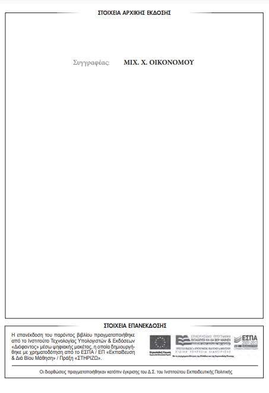

MIX. Χ. ΟΙΚΟΝΟΜΟΥ
ΓΥΜΝΑΣΙΟΥ – ΛΥΚΕΙΟΥ
ΙΝΣΤΙΤΟΥΤΟ ΤΕΧΝΟΛΟΓΙΑΣ ΥΠΟΛΟΓΙΣΤΩΝ ΚΑΙ ΕΚΔΟΣΕΩΝ «ΔΙΟΦΑΝΤΟΣ»

ΥΠΟΥΡΓΕΙΟ ΠΑΙΔΕΙΑΣ, ΕΡΕΥΝΑΣ ΚΑΙ ΘΡΗΣΚΕΥΜΑΤΩΝ
ΙΝΣΤΙΤΟΥΤΟ ΕΚΠΑΙΔΕΥΤΙΚΗΣ ΠΟΛΙΤΙΚΗΣ
MIX. Χ. ΟΙΚΟΝΟΜΟΥ
Η συγγραφή και η επιστηµονική επιµέλεια του βιβλίου πραγµατοποιήθηκε
υπό την αιγίδα του Παιδαγωγικού Ινστιτούτου
ΓΡΑΜΜΑΤΙΚΗ
ΤΗΣ ΑΡΧΑΙΑΣ ΕΛΛΗΝΙΚΗΣ
ΓΥΜΝΑΣΙΟΥ - ΛΥΚΕΙΟΥ
ΙΝΣΤΙΤΟΥΤΟ ΤΕΧΝΟΛΟΓΙΑΣ ΥΠΟΛΟΓΙΣΤΩΝ ΚΑΙ ΕΚΔΟΣΕΩΝ «ΔΙΟΦΑΝΤΟΣ»
Το βιβλίο αυτό είναι συνοψισμένη μορφή του έργου «Γραμματική της αρχαίας ελληνικής» του Μιχ. Χ. Οικονόμου, έκδοσης 1971 του Ινστιτούτου Νεοελληνικών Σπουδών του Πανεπιστημίου Θεσσαλονίκης (Ιδρύματος Μανόλη Τριανταφυλλίδη).
Η συνόψιση του βιβλίου έγινε με ευθύνη του Κέντρου Εκπαιδευτικών Μελετών και Επιμορφώσεως (ΚΕΜΕ).
(Ανεξάρτητα από το γένος, τον αριθμό και την πτώση της κάθε συντομογραφίας, νοούνται ανάλογα με τα συμφραζόμενα, και τα άλλα γένη, οι πτώσεις και οι αριθμοί, καθώς και τα παράγωγα επιρρήματα).
| άχρ.(άχρηστος) | αδύν.(αδύνατο) | αθροιστ.(αθροιστικό) |
| αι.(αιώνας) | αιγυπτ.(αιγυπτιακός) | αιτ.(αιτιατική), αιτιατ.(αιτιατική) |
| αιτιολογ.(αιτιολογικός) | αμετάβ.(αμετάβατο) | αναδιπλ.(αναδιπλασιασμός) |
| αναφορ.(αναφορικός) | αντίθ.(αντίθετο) | αντων.(αντωνυμία) |
| ανώμ.(ανώμαλο) | απαρ.(απαρέμφατο), απαρέμφ.(απαρέμφατο) | αποθετ.(αποθετικό) |
| απρόσ.(απρόσωπο) | αρ.(αριθμός), αριθμ.(αριθμός) | αριθμ.(αριθμητικό), αριθμητ.(αριθμητικό) |
| αρσ.(αρσενικό), αρσεν.(αρσενικό) | αρχ.(αρχαίος) | αρχ.(αρχικός) |
| ασυναίρ.(ασυναίρετος) | αττ.(αττικός) | αφηρημ.(αφηρημένο) |
| αφωνόλ.(αφωνόληκτα) | αχώρ.(αχώριστο) | αόρ.(αόριστος) |
| αύξ.(αύξηση) | ||
| βαρύτ.(βαρύτονα) | βλ.(βλέπε) | |
| γεν.(γενική) | Γραμμ.(Γραμματική) | γραμμ.(γραμματικός) |
| δευτερόκλ.(δευτερόκλιτα) | δηλ.(δηλαδή) | διάθ.(διάθεση) |
| διαζευκτ.(διαζευκτικός) | δικατάλ.(δικατάληκτα) | δοτ.(δοτική) |
| δυϊκ.(δυϊκός) | ||
| ελλ.(ελληνικός), ελλην.(ελληνικός) | εμπρόθ.(εμπρόθετος) | εν.(ενικός), ενικ.(ενικός) |
| ενεργ.(ενεργητικός), ενεργητ.(ενεργητικός) | ενεστ.(ενεστωτικός), ενεστωτ.(ενεστωτικός) | ενεστ.(ενεστώτας), ενεστώτ.(ενεστώτας) |
| ενν.(εννοεῖται) | ενρινόλ.(ενρινόληκτα) | επίθ.(επίθετο) |
| επίρρ.(επίρρημα) | επιθ.(επιθετικός) | επιρρ.(επιρρηματικός) |
| επιφων.(επιφωνήματα) | επιφωνηματ.(επιφωνηματικός) | ευκτ.(ευκτική) |
| εύχρ.(εύχρηστος) | ||
| θ.(θέμα) | θέμ.(θέματος) | θεματ.(θεματικό) |
| θετ.(θετικός) | θηλ.(θηλυκό) | |
| ιστ.(ιστορικοί) | ιων.(ιωνικό) | |
| κ.ά.(και άλλα) | κ.α.(και ακόλουθα) [ύστερα από αριθμό] | κ.α.(και αλλού) |
| κ.ε.(και εξης) | κ.τ.λ.(και τα λοιπά) | κάτ.(κάτοικος) |
| κατ.(κατάληξη), κατάλ.(κατάληξη) | κατάλ.(κατάλογος) | καταχρηστ.(καταχρηστικός) |
| κεφ.(κεφάλαιο) | κλ.(κλίση), κλίσ.(κλίση) | κλ.(κλητική), κλητ.(κλητική) |
| κυριολ.(κυριολεκτικά) | κύρ.(κύριο) | |
| λ.(λέξη) | λ.χ.(λόγου χάρη) | |
| μτβ.(μεταβατικό) | μτγ.(μεταγενέστερο) | μτφ.(μεταφορικά) |
| μ.Χ.(μετά Χριστόν) | μέλλ.(μέλλοντας), μέλλοντ.(μέλλοντας) | μέσ.(μέσος) |
| μετ.(μετοχή) | μετάθ.(μετάθεση) | μεταβ.(μεταβατικό) |
| μεταγ.(μεταγενέστερος), μεταγεν.(μεταγενέστερος) | μεταφορ.(μεταφορικά) | μονολεκτ.(μονολεκτικός) |
| Νεοελλ.(Νεοελληνική), Νεοελλην.(Νεοελληνική) | νεοελλ.(νεοελληνικός) | νεότ.(νεότερα) |
| Ο.Ε.Σ.Β.(Οργανισμός Εκδόσεως Σχολικών Βιβλίων) | οδοντ.(οδοντικός) | ομηρ.(ομηρικό) |
| ον.(ονομαστική), ονομ.(ονομαστική), ονομαστ.(ονομαστική) | ον.(ονόματα), ονόμ.(ονόματα) | όν.(όνομα) |
| οξύτ.(οξύτονα) | ορθογραφ.(ορθογραφικός) | οριστ.(οριστική) |
| ουδ.(ουδέτερο), ουδέτ.(ουδέτερο) | ουσ.(ουσιαστικό), ουσιαστ.(ουσιαστικό) | |
| π.(παρακείμενος), παρ.(παρακείμενος), παρακ.(παρακείμενος) | π.(παρατατικός), παρ.(παρατατικός), παρατ.(παρατατικός) | πβ.(παράβαλε) |
| π.χ.(παραδείγματος χάρη) | π.Χ.(προ Χριστού) | πίν.(πίνακας) |
| παθ.(παθητικός), παθητ.(παθητικός) | παράγ.(παράγωγα) | παραγωγ.(παραγωγικός) |
| παρασύνθ.(παρασύνθετο) | παραχωρητ.(παραχωρητικός) | παροξύτ.(παροξύτονα) |
| περισπώμ.(περισπώμενα) | περιφρ.(περιφραστικός) | πλ.(πληθυντικός), πληθ.(πληθυντικός), πληθυντ.(πληθυντικός) |
| ποιητ.(ποιητικός) | προσ.(προσωπικός), προσωπ.(προσωπικός) | προσδ.(προσδιορισμός) |
| προσηγ.(προσηγορικό), προσηγορ.(προσηγορικό) | προστ.(προστακτική) | προφ.(προφέρεται) |
| προφ.(προφορά) | πρόθ.(πρόθεση) | πρόσ.(πρόσωπο) |
| ρ.(ρήμα), ρήμ.(ρήμα) | ρ.(ρηματικός), ρημ.(ρηματικός), ρηματ.(ρηματικός) | |
| σ.(σελίδα), σελ.(σελίδα) | σημ.(σημείωση) | σημασ.(σημασία) |
| σιγμόλ.(σιγμόληκτα) | σπάν.(σπάνια) | σπαν.(σπανιότερα) |
| στερητ.(στερητικό) | συγκρ.(συγκριτικός) | συγχων.(συγχωνευμένη) |
| συζ.(συζυγία) | συμπερασματ.(συμπερασματικός) | συμφωνόλ.(συμφωνόληκτα) |
| συνήθ.(συνήθως) | συναίρ.(συναίρεση) | συνηθ.(συνηθέστερα) |
| συνηρ.(συνηρημένος), συνηρημ.(συνηρημένος) | συνθ.(συνθετικό), συνθετ.(συνθετικό) | συντ.(συντελεσμένος), συντελ.(συντελεσμένος), συντελεσμ.(συντελεσμένος) |
| συνών.(συνώνυμα) | σύμφ.(σύμφωνο) | σύνδ.(σύνδεσμος) |
| σύνθ.(σύνθετο) | ||
| τρικατάλ.(τρικατάληκτα) | ||
| υγρόλ.(υγρόληκτα) | υποτ.(υποτακτική), υποτακτ.(υποτακτική) | υπερθ.(υπερθετικός) |
| υπερσ.(υπερσυντέλικος), υπερσυντ.(υπερσυντέλικος), υπερσυντέλ.(υπερσυντέλικος) | υποθετ.(υποθετικός) | υποκείμ.(υποκείμενο) |
| υποκορ.(υποκοριστικό) | υποσημ.(υποσημείωση) | |
| φων.(φωνήεν) | φωνηεντόλ.(φωνηεντόληκτα) | |
| χαρακτ.(χαρακτήρας) | χρ.(χρόνοι) | χρον.(χρονικός) |
| § παράγραφος | §§ παράγραφοι | ¯ θέση μακρόχρονου φωνήεντος |
| ˘ θέση βραχύχρονου φωνήεντος | ||
παρ1.
Ο άνθρωπος είναι προικισμένος με κατάλληλα όργανα, για ν' αρθρώνει τη φωνή του και να μιλεί.
Η έναρθρη ομιλία, που μ' αυτήν ο άνθρωπος μπορεί να συνεννοείται με τους ομοίους του, ονομάζεται λόγος.
Στην αρχή η συνεννόηση με το λόγο ανάμεσα στους ανθρώπους γινόταν μόνο προφορικά, υπήρχε δηλ. μόνο προφορικός λόγος.
Έπειτα, αλλού ενωρίτερα και αλλού αργότερα, χρησιμοποιήθηκε η γραφή και δημιουργήθηκε ο γραπτός λόγος.
παρ2.
Όταν ο άνθρωπος μιλεί, βγαίνει από τους πνεύμονες αέρας, που περνάει από τα φωνητικά όργανα και βρίσκει κάθε φορά κάποιαν αντίσταση σ' ένα ή περισσότερα από αυτά. Έτσι παράγονται ήχοι και ακούονται φωνές.
Καθεμιά από τις απλές και αμέριστες φωνές που ακούονται, όταν μιλούμε, λέγεται φθόγγος (από το φθέγγομαι = μιλώ). Όταν π.χ. λέμε τό, ακούονται δύο φθόγγοι (τ-ο)· όταν λέμε μένε, ακούονται τέσσερις φθόγγοι (μ-ε-ν-ε) κτλ.
παρ3.
α) Οι φθόγγοι που παράγονται με το στόμα ανοιχτό ή μισοανοιχτό και μόνο με τις φωνητικές χορδές του λάρυγγα (χωρίς να βρίσκει παραπέρα εμπόδιο ο αέρας που βγαίνει από τους πνεύμονες) λέγονται φωνήεντα. Π.χ. α, ε, ι, ο, ου.
β) Οι φθόγγοι που παράγονται με το στόμα κλεισμένο εντελώς ή κάπου φραγμένο και με τη βοήθεια όχι μόνο των φωνητικών χορδών του λάρυγγα, αλλά και μέρους του στόματος ή της ρινικής κοιλότητας (όπου ο αέρας που βγαίνει βρίσκει κάποιο εμπόδιο), λέγονται σύμφωνα. Π.χ. β, γ, δ, ζ, θ κτλ.
παρ4.
Εκτός από τα φωνήεντα και τα σύμφωνα υπάρχουν και μερικοί διάμεσοι φθόγγοι που λέγονται ημίφωνα. Τέτοια π.χ. έχουμε εμείς σήμερα το ι και το ου, όταν λέμε μιά, μοιάζω (όσο δεν προφέρονται μνιά, μνιάζω), άκουα (όταν προφέρεται δισύλλαβο: ά-κουα) κτλ. Στο ημίφωνο ι η ράχη της γλώσσας αγγίζει ελαφρά τον ουρανίσκο. Στο ημίφωνο ου τα δύο χείλια αγγίζουν λίγο. Έτσι τα ημίφωνα δεν είναι ούτε καθαρά σύμφωνα ούτε καθαρά φωνήεντα. Ημίφωνα είχαν στην ομιλία τους και οι αρχαίοι Έλληνες (βλ. §16,σημ.).
παρ5.
Δύο αλλεπάλληλα φωνήεντα που προφέρονται γρήγορα σε μία συλλαβή αποτελούν δίφθογγο (§7). Όταν π.χ. εμείς σήμερα λέμε χαϊδεύω, τα δύο φωνήεντα α και ι προφέρονται μαζί, σχεδόν στον ίδιο χρόνο που θα προφέραμε ένα μόνο φωνήεν· δεν ακούονται δηλ. χωριστά τα δύο φωνήεντα α και ι (χα-ι-δευω), παρά ακούεται πιο έντονα ο φθόγγος α και μαζί του πιο αδύνατα και πιο γρήγορα ο φθόγγος ι· έτσι σχηματίζεται ο δίφθογγος αϊ. Επίσης, όταν λέμε λεϊμόνι (όπως συνηθίζουν σήμερα να λένε σε μερικά μέρη), τα φωνήεντα ε και ι προφέρονται μαζί σ' ένα χρόνο, ακούεται δηλ. πιο έντονα ο φθόγγος ε και μαζί του πιο αδύνατα και πιο γρήγορα ο φθόγγος ι· έτσι σχηματίζεται ο δίφθογγος εϊ. Το ίδιο γίνεται, όταν λέμε νεράιδα, κελαηδώ, βόιδι, ρόιδι κτλ. Ακόμη, όταν λέμε παιδιά, ματιά κτλ., τα δυο τελευταία φωνήεντα ι και α προφέρονται μαζί σ' ένα χρόνο, αποτελούν δηλ. και αυτά ένα είδος δίφθογγο. (Βλ. Νεοελληνική Γραμματική Ο.Ε.Δ.Β. §17 και §18). Διφθόγγους είχαν στην ομιλία τους και οι αρχαίοι Έλληνες (βλ. §25 κ.α.).
παρ6.
Ένας φθόγγος ή ένα σύνολο από φθόγγους που εκφέρονται μαζί και εκφράζουν μία μόνη έννοια ονομάζεται λέξη (από το λέγω). Όταν π.χ. λέμε ο Νίκος έγραφε το μάθημα, εκφωνούμε πέντε λέξεις, που η καθεμιά τους απαρτίζεται από έναν ή περισσότερους φθόγγους:
| ο | Ν-ί-κ-ο-ς | έ-γ-ρ-α-φ-ε | τ-ο | μ-ά-θ-η-μ-α | |
| φθόγγοι | 1 | 5 | 6 | 2 | 6 |
παρ7.
Τα φωνήεντα, καθώς και τα συμπλέγματα φωνηέντων και συμφώνων που απαρτίζουν μια λέξη, εκφωνούνται με μικρότατες και ανεπαίσθητες διακοπές της πνοής που βγαίνει από το στόμα μας όταν μιλούμε. Έτσι η λέξη φαίνεται πως χωρίζεται σε τμήματα: θέ/λω - μα/θη/τής.
Κάθε τέτοιο τμήμα μιας λέξης που αποτελείται από ένα μόνο φωνήεν ή από ένα φωνήεν μαζί με ένα ή περισσότερα σύμφωνα λέγεται συλλαβή. Έτσι π.χ. στη νέα μας γλώσσα: α-έ-ρας, έ-γρα-ψα, α-σφρά-γι-στος· και στην αρχαία: ἔ-αρ, ἀ-η-δών, ἐ-στρω-μέ-νος (πβ. §30 κ.α.).
παρ8.
Στο γραπτό λόγο οι φθόγγοι παριστάνονται με ορισμένα σημεία που λέγονται γράμματα. Π.χ. οι τέσσερις φθόγγοι που απαρτίζουν τη λέξη θεός παριστάνονται με τέσσερα γράμματα: θ-ε-ο-ς· οι τρεις φθόγγοι της λέξης πῦρ παριστάνονται με τρία γράμματα: π-υ-ρ κτλ.
παρ9.
Το σπουδαιότερο από τα φωνητικά όργανα του ανθρώπου είναι η γλώσσα. Αυτή εκτελεί το κυριότερο έργο κατά την εκφορά του λόγου. Γι' αυτό και ο ιδιαίτερος τρόπος με τον οποίο κάθε λαός εκφέρει το λόγο ονομάστηκε γλώσσα.
παρ10.
Στην αρχαιότητα αναπτύχτηκαν και καλλιεργήθηκαν πολύ η αρχαία ελληνική και η λατινική γλώσσα. Την πρώτη τη μιλούσαν και την έγραφαν οι αρχαίοι Έλληνες, τη δεύτερη οι Ρωμαίοι.
Από τις δύο αυτές γλώσσες σπουδαιότερη υπήρξε η αρχαία ελληνική, που μιλήθηκε πολλούς αιώνες και χρησιμοποιήθηκε από αξιόλογους συγγραφείς. Και επειδή δεν έπαψε να μιλιέται, πέρασε κατά καιρούς από διάφορα στάδια και τέλος έφτασε στη σημερινή της μορφή, δηλ. τη νέα ελληνική γλώσσα.
παρ11.
Η γλώσσα κάθε λαού δε μιλιέται παντού κατά τον ίδιο ακριβώς τρόπο. Παρουσιάζει από τόπο σε τόπο διαφορές στις λέξεις, στους γραμματικούς τύπους, στη σύνταξη (πβ. τα νεοελληνικά: να σου πω - να σε πω· λέγονταν - λεγόντουσαν· τι λες - ίντα λες κτλ.).
Οι τοπικές μορφές που παίρνει μια γλώσσα λέγονται διάλεκτοι.
παρ12.
Η αρχαία ελληνική γλώσσα παρουσιάζεται εξαρχής χωρισμένη σε διαλέκτους. Σε κάθε τόπο μιλούσαν ορισμένη διάλεκτο και σ' αυτή τη διάλεκτο έγραφαν, όταν έμαθαν να χρησιμοποιούν τη γραφή.
Οι κυριότερες από τις αρχαίες ελληνικές διαλέκτους ήταν η ιωνική, η αττική, η αιολική και η δωρική.
παρ13.
Στις αρχαίες ελληνικές διαλέκτους γράφηκαν αξιόλογα έργα πεζά και ποιητικά. Ιδιαίτερα η αττική διάλεκτος, που συγγενεύει με την ιωνική και διαμορφώθηκε στην Αθήνα, καλλιεργήθηκε σε πολύ μεγάλο βαθμό. Διαδόθηκε και επικράτησε σε όλη την Ελλάδα ως ο τελειότερος τύπος της ελληνικής γλώσσας. Σ' αυτήν ακούστηκαν οι λόγοι των αττικών ρητόρων και σ' αυτή γράφηκαν τα έργα του Θουκυδίδη, του Πλάτωνα, του Ξενοφώντα κ.ά.
παρ14.
Κάθε γλώσσα μιλιέται και γράφεται σύμφωνα με ορισμένους κανόνες. Τη συστηματική εξέταση των κανόνων αυτών την ονομάζομε γραμματική.
παρ15.
Η γραμματική που διδάσκει πώς οι αρχαίοι μιλούσαν και έγραφαν την αρχαία ελληνική γλώσσα λέγεται γραμματική της αρχαίας ελληνικής γλώσσας. Ιδιαίτερα η γραμματική που διδάσκει πώς οι αρχαίοι μιλούσαν και έγραφαν την αττική διάλεκτο λέγεται γραμματική της αττικής διαλέκτου.
παρ16.
Οι φθόγγοι της αρχαίας ελληνικής παριστάνονται με 24 γράμματα, που είναι τα ίδια της νέας (βλ. §2 και §8). Το σύνολο των γραμμάτων αυτών λέγεται ελληνικό αλφάβητο.
Σημ. Στην αρχή το ελληνικό αλφάβητο είχε και το γράμμα F, που από τo σχήμα του λέγεται δίγαμμα (γιατί μοιάζει με διπλό κεφαλαίο Γ) και από την προφορά του λέγεται βαῦ (γιατί παρίστανε ένα φθόγγο σαν το σημερινό β ή σαν μισό ου, όπως όταν τώρα λέμε Ουάσιγκτον, τρισύλλαβο, ή άκουα, δισύλλαβο· πβ. §4).
Επίσης στην αρχαιότατη ελληνική γλώσσα υπήρχε και ένας ακόμη φθόγγος που ακουόταν όπως ακούεται τώρα ο φθόγγος ι, όταν λέμε μια, μοιάζω (πβ. §4)· του φθόγγου αυτού δε μας παραδόθηκε γραπτό σύμβολο, αλλά, όταν θέλουμε να τον παραστήσουμε, τον σημειώνουμε με το λατινικό j (γιότ).
παρ17.
Τα γράμματα κατά τον τρόπο της γραφής τους ξεχωρίζονται σε κεφαλαία (Α, Β, Γ, Δ κτλ.) και σε μικρά (α, β, γ, δ κτλ.).
παρ18.
Οι φθόγγοι της αρχαίας ελληνικής (όπως και της νέας) διαιρούνται σε φωνήεντα και σε σύμφωνα (βλ. §3).
α) Τα φωνήεντα της αρχαίας, ως φθόγγοι, παριστάνονται με 7 γράμματα, που λέγονται και αυτά φωνήεντα: α, ε, η, ι, ο, υ, ω.
β) Τα σύμφωνα της αρχαίας, ως φθόγγοι, παριστάνονται με 17 γράμματα, που λέγονται και αυτά σύμφωνα: β, γ, δ, ζ, θ, κ, λ, μ, ν, ξ, π, ρ, σ (-ς), τ, φ, χ, ψ.
παρ19.
1) Τα φωνήεντα της αρχαίας ελληνικής (δηλ. οι φθόγγοι που ακούονταν σαν φωνήεντα) διαιρούνται σε βραχύχρονα και μακρόχρονα.
α) Τα βραχύχρονα φωνήεντα προφέρονταν σε σύντομο χρόνο και παριστάνονται με τα γράμματα α, ι, υ, -ε, ο· και τα γράμματα αυτά λέγονται βραχύχρονα.
Το καθένα από αυτά ακουόταν σαν ένα απλό φωνήεν που προφέρεται σύντομα: το βραχύχρονο α σαν ένα α, το βραχύχρονο ι σαν ένα ι, το βραχύχρονο υ σαν ένα ου, το ε σαν ένα ε, το ο σαν ένα ο.
β) Τα μακρόχρονα φωνήεντα προφέρονταν σε μακρύτερο χρόνο, σε διπλάσιο περίπου από όσο τα βραχύχρονα, και παριστάνονται με τα γράμματα α, ι, υ, -η, ω· και τα γράμματα αυτά λέγονται μακρόχρονα.
Από αυτά το μακρόχρονο α ακουόταν σαν μακρύ α (περίπου σαν αα) το μακρόχρονο ι σαν μακρύ ι (περίπου σαν ιι), το μακρόχρονο υ σαν μακρύ ου (περίπου σαν ουου), το η σαν μακρύ ε (περίπου σαν εε), το ω σαν μακρύ ο (περίπου σαν οο).
2) Ο σύντομος ή μακρύς χρόνος της προφοράς των φωνηέντων λέγεται χρόνος ή ποσότητα των φωνηέντων.
3) Επειδή με τα ίδια γράμματα α, ι, υ, παριστάνονται και μακρόχρονοι και βραχύχρονοι φθόγγοι, γι’ αυτό τα γράμματα α, ι, υ λέγονται δίχρονα.
Σημ. Η μακρότητα του δίχρονου σημειώνεται με το σημάδι ¯ (χώρᾱ), η βραχύτητα με το σημάδι ˘ (γλώσσᾰ).
παρ20.
Ανασκόπηση. Από τα 7 γράμματα α, ε, η, ι, ο, υ, ω που παριστάνουν φωνήεντα:
α) Το ε και το ο ονομάζονται βραχύχρονα (γιατί παριστάνουν φθόγγους βραχύχρονους).
β) Το η και το ω ονομάζονται μακρόχρονα (γιατί παριστάνουν φθόγγους μακρόχρονους).
γ) Το α, το ι και το υ ονομάζονται δίχρονα, γιατί παριστάνουν φθόγγους άλλοτε μακρόχρονους και άλλοτε βραχύχρονους (δηλ. σε άλλες λέξεις ή τύπους λέξεων είναι μακρόχρονα και σε άλλες βραχύχρονα).
παρ21.
1) Τα σύμφωνα της αρχαίας (δηλ. οι φθόγγοι που ακούονταν σαν σύμφωνα) διαιρούνται:
α) σε 9 άφωνα· αυτά παριστάνονται με τα γράμματα κ, γ, χ - π, β, φ, - τ, δ, θ. που λέγονται και αυτά άφωνα·
β) σε 5 ημίφωνα· αυτά παριστάνονται με τα γράμματα λ, ρ - μ, ν, σ(ς), που λέγονται και αυτά ημίφωνα.
2) Εκτός από τα παραπάνω γράμματα υπάρχουν τρία ακόμα, τα ζ, ξ, ψ, που παριστάνουν σύμφωνα· αυτά λέγονται διπλά.
Τα γράμματα ζ, ξ, ψ ονομάστηκαν διπλά, γιατί το καθένα από αυτά παριστάνει δύο φθόγγους συγχωνευμένους: το ξ έγινε από τo κ+σ ή γ+σ ή χ+σ (πίνακς = πίναξ, φλόγς = φλόξ, ὄνυχς = ὄνυξ), το ψ από το π+σ ή β+σ ή φ+σ (κώνωπς = κώνωψ, Ἄραβς = Ἄραψ, γράφσω = γράψω) και το ζ από το σ+δ (Ἀθήνασδε = Ἀθήναζε) ή από το δ+j (φροντίδjω = φροντίζω) κτλ.
παρ22.
Τα άφωνα υποδιαιρούνται:
α) κατά το φωνητικό όργανο με το οποίο κυρίως προφέρονται: στα ουρανικά κ, γ, χ, στα χειλικά π, β, φ και στα οδοντικά τ, δ, θ·
β) κατά το είδος της πνοής που συνοδεύει την εκφώνησή τους: στα ψιλόπνοα δηλ. λεπτά κατά την πνοή) κ, π, τ, στα δασύπνοα (δηλ. παχιά κατά την πνοή) χ, φ, θ και στα μέσα β, γ, δ.
παρ23.
Τα ημίφωνα υποδιαιρούνται στα υγρά λ, ρ, στα ένρινα μ, ν και στο συριστικό σ (ς).
| Είδη φθόγγων | Κατά το φωνητικό όργανο | Κατά το είδος της πνοής | ||
| Ουρανικά | Χειλικά | Οδοντικά | ||
| Άφωνα | κ | π | τ | ψιλόπνοα |
| γ | β | δ | μέσα | |
| χ | φ | θ | δασύπνοα | |
| Ημίφωνα | υγρά: λ, ρ | |||
| ένρινα: μ, ν (και γ πριν από τα κ, γ, χ, ξ) | ||||
| συριστικό: σ (ς) | ||||
| παλαιότερα ημίφωνα: F, j | ||||
| Διπλά ζ, ξ, ψ | ||||
παρ25.
Οι δίφθογγοι (§5) της αρχαίας ελληνικής είναι έντεκα:
α) οχτώ κύριοι: αι, ει, οι, υι - αυ, ευ, ηυ, ου.
β) τρεις καταχρηστικοί: ᾳ, ῃ, ῳ.
παρ26.
Οι δίφθογγοι γενικά είναι μακρόχρονοι (βλ. §19): παιδεύει, ὦ βασιλεῦ, ὦ γραῦ, ὦ βοῦ. Μόνο οι δίφθογγοι αι και οι λογαριάζονται βραχύχρονοι, όταν βρίσκονται εντελώς στο τέλος ασυναίρετης κλιτής λέξης: οἱ ναῦται, οἱ κῆποι· αλλά: τοῖς ναύταις, τοῖς κήποις— οἱ Ἑρμαῖ, τῇ ἠχοῖ, τῇ αἰδοῖ (συνηρημ.). Είναι όμως το αι και το οι μακρόχρονα στην κατάληξη της ευκτικής και στο τέλος των επιρρημάτων και επιφωνημάτων: παιδεύοι, παιδεύσοι, παιδεύσαι (ευκτ.) – οἴκοι, Ἰσθμοῖ, εὐοῖ, παπαῖ· έτσι και οἶ (προσωπ. αντων.) Πβ. και §165,2.
παρ27.
Ο λόγος, προφορικός ή γραπτός, απαρτίζεται από λέξεις (βλ. §6): φείδου χρόνου (2 λέξεις), τοὺς γονεῖς τίμα (3 λέξεις).
παρ28.
Κάθε λέξη αποτελείται από έναν ή περισσότερους φθόγγους, που παριστάνονται με τα αντίστοιχα γράμματα (βλ. §2 και §8).
Το πρώτο γράμμα της λέξης λέγεται αρχικό, το τελευταίο λέγεται τελικό και όλα τα άλλα λέγονται εσωτερικά.
παρ29.
α) Κάθε φωνήεν μπορεί να είναι τελικό: σῶμα, φέρε, μάχη, περί, ὑπό, δόρυ, ἐγώ.
β) Τελικά σύμφωνα στην αρχαία ελληνική είναι τα ν, ρ, ς (και τα διπλά ξ, ψ): πλοῖον, ῥήτωρ, ἄνθρωπος, φύλαξ (κς), κώνωψ (πς)· (βλ. §21,2).
παρ30.
α) Συλλαβή λέγεται το τμήμα της λέξης που απαρτίζεται από ένα ή περισσότερα σύμφωνα μαζί με ένα φωνήεν ή δίφθογγο: φῶ-τα, φῶς· ναῦ-ται· Ἕλ-λη-νες· ἄν-θρω-πος, στρά-τευ-μα, σάλ-πιγξ, στρό-φιγξ.
β) Η συλλαβή μπορεί ν' αποτελείται και από ένα μόνο φωνήεν ή ένα δίφθογγο: ἴ-α, ἀ-εί, υί-οί, οὐ (=ὄχι), εἰ (=ἄν). Βλ. και §7.
παρ31.
Η λέξη, αν έχει μία μόνο συλλαβή, λέγεται μονοσύλλαβη (νοῦς, φῶς)· αν έχει δύο συλλαβές, δισύλλαβη (τι-μή, φέ-ρω)· αν έχει τρεις, τρισύλλαβη (ἄν-θρω-πος, παι-δεύ-ω)· αν έχει περισσότερες από τρεις, πολυσύλλαβη (σω-φρο-σύ-νη, ἀ-γω-νί-ζο-μαι, ἀ-γω-νι-ζό-με-θα).
παρ32.
Σε κάθε λέξη με περισσότερες συλλαβές από μία, η τελευταία λέγεται λήγουσα, η προτελευταία παραλήγουσα, η αντιπροτελευταία προπαραλήγουσα· η πρώτη συλλαβή λέγεται αρχική.
παρ33.
Η συλλαβή, από το χρόνο του φωνήεντος που έχει, λέγεται:
α) φύσει μακρόχρονη ή απλώς μακρόχρονη, αν έχει μακρόχρονο φωνήεν ή δίφθογγο: θή-κη, τρώ-γω, χαί-ρω, κοί-τη, ὥ-ρα, εὐ-θυ-μῶ·
β) θέσει μακρόχρονη, αν έχει βραχύχρονο φωνήεν, αλλά ύστερ' από αυτό ακολουθούν στην ίδια λέξη δύο ή περισσότερα σύμφωνα ή ένα διπλό (ζ, ξ, ψ): ἄλ-λος, θερ-μός, ἐ-χθρός· ὄ-ζω (= μυρίζω), τό-ξον
γ) βραχύχρονη, αν έχει βραχύχρονο φωνήεν και ακολουθεί άλλο φωνήεν ή απλό σύμφωνο ή τίποτε: νέ-ος, φέ-ρο-μεν, λό-γος, ἔ-χε.
παρ34.
Το χώρισμα μιας λέξης στις συλλαβές της λέγεται συλλαβισμός. Ο συλλαβισμός των λέξεων στην αρχαία ελληνική γίνεται κατά τους εξής κανόνες:
α) Ένα ή περισσότερα σύμφωνα, όταν είναι στην αρχή της λέξης, συλλαβίζονται με το ακόλουθο φωνήεν (ή δίφθογγο)· όταν είναι στο τέλος της λέξης, συλλαβίζονται με το προηγούμενο φωνήεν (ή δίφθογγο) να-ός, ναύ-της, βρα-δύς, βα-φεύς, στρα-τός, σάλ-πιγξ.
β) Ένα μόνο σύμφωνο ανάμεσα σε δύο φωνήεντα (ή διφθόγγους) συλλαβίζεται με το ακόλουθο φωνήεν (ή δίφθογγο): ἀ-γω-νι-ζό-με-θα, δύ-να-μαι, ἄ-πει-ροι.
γ) Δύο σύμφωνα ανάμεσα σε δύο φωνήεντα (ή διφθόγγους) συλλαβίζονται με το ακόλουθο φωνήεν (ή δίφθογγο), όταν αρχίζει από αυτά (αρχαία) ελληνική λέξη: ἀ-γροί (γράφω), ἀ-στήρ (στέλλω), γί-γνο-μαι (γνώ- σις), Ἀ-ρι-ά-δνη (δνοφερός). Αλλιώς, χωρίζονται: ἐλ-πίς, ὁρ-μή, ἵπ-πος, θάρ-ρος.
δ) Τρία σύμφωνα ανάμεσα σε δύο φωνήεντα (ή διφθόγγους) συλλαβίζονται με το ακόλουθο φωνήεν (ή δίφθογγο), όταν και από τα τρία αυτά σύμφωνα ή μόνο από τα δύο πρώτα αρχίζει αρχαία ελληνική λέξη: ἀ-στρα-πή (στρέφω), ἐ-χθρός (χθές), ἰ-σχνός (σχήμα). Αλλιώς, χωρίζονται και το πρώτο από αυτά συλλαβίζεται με το προηγούμενο φωνήεν ή τον προηγούμενο δίφθογγο: ἄν-θρω-πος, δέν-δρον, πορ-θμός, στιλ-πνός.
ε) Οι σύνθετες λέξεις χωρίζονται στα συνθετικά τους μέρη, αν κατά τη σύνθεση δεν έχει αποβληθεί το τελικό φωνήεν του θέματος του α΄ συνθετικού· αλλιώς, συλλαβίζονται σαν απλές λέξεις: ἐξ-έρχομαι, συν-άγω, προσ-φέρω, δυσ-τυχής, Ἑλλήσ-ποντος, νουν-εχής· αλλά: πα-ρέρχομαι, ἀ-πέχω, κά-θοδος, νο-μάρχης, φί-λιππος, πρω-ταγωνιστής.
παρ35.
Σε κάθε λέξη που έχει δύο ή περισσότερες συλλαβές μία από αυτές τονίζεται, δηλ. προφέρεται πιο δυνατά από τις άλλες. Για να φανερώσουμε στο γραπτό λόγο ποια είναι η συλλαβή που τονίζεται, γράφουμε πάνω στο φωνήεν ή το δίφθογγο της συλλαβής αυτής ένα σημάδι που λέγεται τόνος: φέ-ρω, φε-ρό-με-θα, φε-ρο-μέ-νη, φεῦ-γε, ἀ-πό-φευ-γε, ἀ-γα-θός, ἀ-νήρ.
παρ36.
Οι τόνοι είναι τρεις: η οξεία (′), η βαρεία (‵) και η περισπωμένη(῀): Ἀρταξέρξης καὶ Κῦρος.
παρ37.
Σε κάθε λέξη πάνω στο φωνήεν ή το δίφθογγο της συλλαβής που τονίζεται σημειώνουμε κάθε φορά έναν ορισμένο τόνο (πβ. §38 και §39). Κατά τη θέση που έχει ο τόνος σε μια λέξη και κατά το είδος του η λέξη αυτή λέγεται:
1) οξύτονη, αν έχει οξεία στη λήγουσα: πατήρ·
2) παροξύτονη, αν έχει οξεία στην παραλήγουσα: μήτηρ·
3) προπαροξύτονη, αν έχει οξεία στην προπαραλήγουσα: λέγομεν·
4) περισπώμενη, αν έχει περισπωμένη στη λήγουσα: τιμῶ·
5) προπερισπώμενη, αν έχει περισπωμένη στην παραλήγουσα: δῶρον·
6) βαρύτονη, αν δεν τονίζεται στη λήγουσα: ἄνθρωπος, λύω, κελεύω.
παρ38.
Ο τονισμός των λέξεων στην αρχαία ελληνική γίνεται κατά τους εξής γενικούς κανόνες:
1) Καμιά λέξη δεν τονίζεται πιο πάνω από την προπαραλήγουσα (όπως και στην κοινή νέα ελληνική): λέγομεν, ἐλέγομεν, ἐλεγόμεθα, ἐπικίνδυνος, ἐπικινδυνότατος.
2) Όταν η λήγουσα είναι μακρόχρονη, η προπαραλήγουσα δεν τονίζεται: (ἡ βασίλισσα, αλλά) τῆς βασιλίσσης, (ἄμεσος, αλλά) ἀμέσως.
3) Η προπαραλήγουσα, όταν τονίζεται, παίρνει πάντοτε οξεία: τιμώμεθα, παρήγορος, πείθομαι.
4) Κάθε βραχύχρονη συλλαβή, όταν τονίζεται, παίρνει πάντοτε οξεία: νέφος, τόπος, ἀγαθός.
5) Η μακρόχρονη παραλήγουσα, όταν τονίζεται, παίρνει οξεία εμπρός από μακρόχρονη λήγουσα: θήκη, κώμη, παιδεύω, κλαίω.
6) Η μακρόχρονη παραλήγουσα, όταν τονίζεται, παίρνει περισπωμένη εμπρός από βραχύχρονη λήγουσα: κῆπος, χῶρος, φεῦγε, κῶμαι.
7) Η θέσει μακρόχρονη συλλαβή ως προς τον τονισμό λογαριάζεται βραχύχρονη: αὖλαξ, κλῖμαξ, μεῖραξ, τάξις, λύτρον (βλ. §33,β).
8) Η βαρεία σημειώνεται στη θέση της οξείας μόνο στη λήγουσα, όταν δεν ακολουθεί στίξη ή λέξη εγκλιτική (βλ. §43,1 και §50): ὁ βασιλεὺς τὴν μὲν πρὸς ἑαυτὸν ἐπιβουλὴν οὐκ ᾐσθάνετο – τοῖς μὲν Ἕλλησιν ἔσει πιστός, τοῖς δὲ βαρβάροις φοβερός - τό τε βαρβαρικὸν καὶ τὸ ἑλληνικόν - ναός τις.
παρ39.
1) Η ασυναίρετη ονομαστική, αιτιατική και κλητική των πτωτικών, όταν τονίζεται στη λήγουσα, κανονικά παίρνει οξεία:
ὁ ποιητής, τὸν ποιητήν, ὦ ποιητά· οἱ ποιηταί, τοὺς ποιητάς, ὦ ποιηταί·
ἡ φωνή, τὴν φωνήν, ὦ φωνή· αἱ φωναί, τὰς φωνάς, ὦ φωναί·
πατήρ, λιμήν, ἀνδριάς· καλήν, καλάς, καλά· αὐτή, αὐτήν, αὐτάς· λαβών, ἰδών, λελυκώς, λυθείς.
Εξαιρέσεις βλ. §144.
2) Η μακροκατάληκτη γενική και δοτική των πτωτικών, όταν τονίζεται στη λήγουσα, παίρνει περισπωμένη:
τοῦ ποιητοῦ, τῷ ποιητῇ· τῶν ποιητῶν, τοῖς ποιηταῖς·
τῆς φωνῆς, τῇ φωνῇ· τῶν φωνῶν, ταῖς φωναῖς·
τοῦ ἀγαθοῦ, τῆς ἀγαθῆς, τῷ ἀγαθῷ, τῇ ἀγαθῇ· τῶν ἀγαθῶν, τοῖς ἀγαθοῖς, ταῖς ἀγαθαῖς κτλ.·
αὐτοῦ, αὐτῆς, αὐτῷ, αὐτῇ· αὐτῶν, αὐτοῖς, αὐταῖς κτλ.
Εξαιρέσεις βλ. §102,2 (τοῦ λεώ, τῷ λεῴ κτλ.).
3) Στα πτωτικά (βλ. §74), όπου τονίζεται η ονομαστική του ενικού εκεί τονίζονται και οι άλλες πτώσεις του ενικού και του πληθυντικού, εκτός αν εμποδίζει η λήγουσα:
λέων, λέοντος, λέοντες κτλ. - αλλά: λεόντων (βλ. §38,2)·
ἄρρην, ἄρρενος, ἄρρενες κτλ. - αλλά: ἀρρένων·
ἕκαστος, ἕκαστον, ἕκαστοι κτλ. - αλλά: ἑκάστου, ἑκάστων, ἑκάστους·
ὁ λύων, τοῦ λύοντος, oἱ λύοντες κτλ. - αλλά: τῶν λυόντων.
Εξαιρέσεις βλ. §88,3 και §145.
4) Η λήγουσα που προέρχεται από συναίρεση, όταν τονίζεται, κανονικά παίρνει περισπωμένη:
(τιμάω) τιμῶ, (τιμάων) τιμῶν, (ἐπιμελέες) ἐπιμελεῖς·
παίρνει όμως οξεία, αν πριν από τη συναίρεση είχε οξεία η δεύτερη από τις συλλαβές που συναιρούνται:
(ἑσταώς) ἑστώς, (κληίς, κλῄς) κλείς.
5) Στις σύνθετες λέξεις ο τόνος κανονικά ανεβαίνει ως την τελευταία συλλαβή του πρώτου συνθετικού, αν επιτρέπει η λήγουσα:
(σοφός) πάνσοφος, (πόλις) ἀκρόπολις, μεγαλόπολις, (πῆχυς) εἰκοσάπηχυς· (ἐλθέ) ἄπελθε, (δός) ἀπόδος· (φρήν) ὁ μεγαλόφρων, τό μεγαλόφρον (βλ. §432).
παρ40.
Δέκα μονοσύλλαβες λέξεις της αρχαίας ελληνικής δεν παίρνουν τόνο και γι' αυτό λέγονται άτονες λέξεις. Αυτές είναι
1) τα άρθρα ὁ, ἡ, οἱ, αἱ·
2) οι προθέσεις εἰς, ἐν, ἐκ (ή ἐξ)·
3) τα μόρια εἰ, ὡς, οὐ (ή οὐκ ή οὐχ).
παρ41.
Μερικές μονοσύλλαβες ή δισύλλαβες λέξεις συμπροφέρονται τόσο στενά με την προηγούμενη, ώστε ακούονται σαν ν' αποτελούν μαζί της μία λέξη· γι' αυτό ο τόνος τους κανονικά ή χάνεται ή ανεβαίνει στη λήγουσα της προηγούμενης λέξης ως οξεία (πβ. τα νεοελληνικά: ο αδερφός μου, ο δάσκαλός μου).
Οι λέξεις αυτές λέγονται εγκλιτικές λέξεις ή απλώς εγκλιτικά.
παρ42.
Συχνότερα εγκλιτικά της αρχαίας ελληνικής είναι:
1) οι τύποι των προσωπικών αντωνυμιών μοῦ, μοί, μέ – σοῦ, σοί, σέ – οὗ, οἷ, ἓ (βλ. §222).
2) όλες οι πτώσεις ενικού και πληθυντικού της αόριστης αντωνυμίας τὶς – τὶ εκτός από τον τύπο του ουδέτ. πληθ. ἄττα (= τινὰ = μερικά) (βλ. §237)·
3) όλοι οι δισύλλαβοι τύποι της οριστικής του ενεστώτα των ρημάτων εἰμὶ (= είμαι) και φημὶ (= λέγω) (βλ. §275 και §351,3)·
4) τα επιρρήματα πού, ποί, ποθὲν -πώς, πή (ή πῄ)· ποτὲ (βλ. 363, α)·
5) τα μόρια γέ, τέ, τοί, πέρ, πώ, νὺv και το πρόσφυμα δὲ (διαφορετικό από το σύνδεσμο δὲ) (βλ. §370,1 και §370,6).
παρ43.
1) Ο τόνος των εγκλιτικών χάνεται:
α) σε όλα τα εγκλιτικά (μονοσύλλαβα ή δισύλλαβα), όταν η προηγούμενη λέξη είναι οξύτονη ή περισπώμενη:
ναός τις, καλόν ἐστι (με οξεία και όχι βαρεία στην προηγούμενη λέξη· βλ. §38,8) — τιμῶ σε, τιμῶ τινας·
β) μόνο στα μονοσύλλαβα εγκλιτικά, όταν η προηγούμενη λέξη είναι παροξύτονη: γέρων τις, παιδεύω σε.
2) Ο τόνος των εγκλιτικών ανεβαίνει στη λήγουσα της προηγούμενης λέξης (ως οξεία), όταν η προηγούμενη λέξη είναι προπαροξύτονη ή προπερισπώμενη ή άτονη ή εγκλιτική:
ἔλαφός τις, ἔλαφοί τίνες – κῆπός τις, κῆποί τίνες, Ἀριαῖός τε καὶ οἱ ἄλλοι στρατηγοί - ἔν τινι τόπῳ - εἴ τις βούλεται – εἴ τίς ἐστί μοι φίλος.
3) Ο τόνος των εγκλιτικών μένει στη θέση του (δηλ. δε γίνεται έγκλιση τόνου):
α) όταν η προηγούμενη λέξη είναι παροξύτονη και το εγκλιτικό δισύλλαβο: λόγοι τινές, ἀνθρώπων τινῶν, φίλοι εἰσίν·
β) όταν η προηγούμενη λέξη έχει πάθει έκθλιψη ή όταν πριν από το εγκλιτικό υπάρχει στίξη: καλόν δ' ἐστίν - Ὅμηρος, φασί, τυφλὸς ἦν·
γ) όταν υπάρχει έμφαση ή αντιδιαστολή: παρὰ σοῦ, πρὸς σέ· ταῦτα σοὶ λέγω, οὐκ ἐκείνῳ.
παρ44.
Κάθε λέξη που αρχίζει από φωνήεν ή δίφθογγο ή από το σύμφωνο ρ παίρνει πάνω σ' αυτό ένα ιδιαίτερο σημάδι, που λέγεται πνεύμα.
παρ45.
Τα πνεύματα είναι δύο, η ψιλή (᾿) και η δασεία (῾): ἀήρ, εἰκὼν - ἁγνός, εὑρίσκω· ῥέω.
παρ46.
Από τις λέξεις που αρχίζουν από φωνήεν ή δίφθογγο οι περισσότερες παίρνουν ψιλή.
παρ47.
Δασύνονται (δηλ. παίρνουν δασεία) κανονικά:
1) Οι λέξεις που αρχίζουν από υ ή από ρ: ὑβρίζω, ῥόδον.
2) Τα άρθρα ὁ, ἡ, αἱ και οι δεικτικές αντωνυμίες ὅδε, ἥδε, οἵδε, αἵδε· οὗτος, αὕτη.
3) Οι αναφορικές αντωνυμίες και τα αναφορικά επιρρήματα (εκτός από τα ἔνθα, ἔνθεν): ὅς, ἥ, ὃ κτλ. (βλ. §240), ὅπου, ὅθεν κτλ. (βλ. §363,α).
4) Οι τύποι της προσωπικής αντωνυμίας ἡμεῖς, ἡμῶν κτλ., οὗ,οἷ, ἕ, οι αντωνυμίες ἕτερος, ἑκάτερος, ἕκαστος και οι λέξεις που σχηματίζονται από αυτές (ἡμέτερος, ἑαυτοῦ, ἑτέρωθεν, ἑκάστοτε κτλ.).
5) Οι σύνδεσμοι ἕως, ἡνίκα, ἵνα, ὅμως, ὅποτε, ὅπως, ὅτε, ὅτι, ὡς, ὥστε.
6) Τα αριθμητικά εἷς, ἕν, ἕξ, ἑπτά, ἑκατόν· επίσης τα παράγωγα από αυτά· ἕνδεκα, ἑξακόσιοι, ἑβδομήκοντα, ἑκατοντάκις κτλ.
7) Οι ακόλουθες λέξεις (και όσες είναι παράγωγες από αυτές ή σύνθετες με α΄ συνθετικό τις λέξεις αυτές):
Α.- ἁβρός, ἅγιος, ἁγνός, ᾍδης, ἁδρός, ἁθρόος (στην αττική διάλεκτο), αἷμα, Αἷμος, αἱρέω-ῶ, αἱ ἁλαὶ (= η αλυκή), ἅλας, Ἁλιάκμων, γεν. -ονος, Ἁλίαρτος, ἁλιεύω (μτγν.), Ἁλικαρνασσός, ἅλις (= αρκετά), ἁλίσκομαι- ἅλωσις, ἅλλομαι (= πηδῶ), Ἁλόννησος, ἁλουργίς, γεν. -ίδος (μτγν.), ὁ ἅλς, γεν. τοῦ ἁλὸς (= αλάτι· συχνά σε πληθ. οἱ ἅλες = αλάτι, αλυκή), ἡ ἅλς, γεν. τῆς ἁλὸς (= θάλασσα), ἁλτήρ, πληθ. ἁλτῆρες, ἅλυσις, ἡ ἅλως (= αλώνι), ἅμα, ἅμαξα, ἁμαρτάνω, ἅμιλλα, ἅμμα (= δέσιμο, κόμπος· από το ἅπτω), ἁνύτω (αλλά και ἀνύ(τ)ω), ἁπαλός, ἅπαξ, ἁπλοῦς, ἅπτω-ἅπτομαι, ἅρμα, ἁρμόζω, ἁρμονία, ἁρμός, ἅρπαξ - ἁρπάζω, ἁφή, ἁψίκορος, ἁψίς, γεν. -ιδος.
Ε.- (Ἑβραῖος), τὸ ἕδος (= θρόνος, ναός, άγαλμα), ἕδρα, ἑδώλιον, ἕζομαι (= κάθομαι), εἱλόμην (αόρ. β΄ του αἱροῦμαι), εἵμαρται – εἱμαρμένη, εἵργνυμι και εἱργνύω (= εμποδίζω την έξοδο, κλείνω μέσα· ενώ εἴργω = εμποδίζω την είσοδο, αποκλείω), εἱρκτή, Ἑκάβη, ἑκάς (= μακριά), Ἑκάτη, ἑκών, Ἑλένη, Ἑλικών (γεν. -ῶνος), ἡ ἕλιξ, ἑλίττω (= τυλίγω, στρέφω), ἕλκος, ἕλκω (μεταγ. ἑλκύω), Ἑλλάς, Ἕλλην, ἡ ἕλμινς (γεν. –ινθος = σκουλήκι των εντέρων), τὸ ἕλος, ἕνεκα ή ἕνεκεν, ἑξής, ἕξω (μέλλ. του ρ. ἔχω), ἑορτή, ἕρκος (= φραγμός), ἕρμα, ἑρμηνεύω, Ἑρμῆς, ἕρπω, ἑσπέρα, ἕσπερος, ἑσπόμην (αόρ. β' του ἕπομαι), ἑστιάω-ῶ, ἑταῖρος, ἕτοιμος και ἑτοῖμος, εὑρίσκω, ἑφθός (= βραστός· για τα μέταλλα = καθαρισμένος με φωτιά, καθαρός), ἕψω (= βράζω), ἕωλος (= παλιός, όχι πρόσφατος), ἡ ἕως (= πρωί).
Η.- Ἥβη, ἡγέομαι –οῦμαι, ἥδομαι, ἥκιστα, ἥκω, ἧλιξ (= συνομήλικος, σύντροφος), Ἡλιαία, ἥλιος, ἧλος (= καρφί), ἡμέρα, ἥμερος, ἡμι- (αχώριστο μόριο), ἥμισυς, ἡ ἡνία και τὰ ἡνία (= χαλινός), ἧπαρ, Ἥρα, Ἡρακλής, Ἡρόδοτος, ἥρως, Ἡσίοδος, ἥσυχος, ἧττα, ἡττάομαι -ῶμαι, ἥττων, Ἡφαιστος.
Ι.- ἱδρύω, ἱδρώς, ἱέραξ, ἱερός, ἵημι, ἱκανός, ἱκέτης, ἱκνέομαι –οῦμαι, ἱλάσκομαι, ἱλαρός, ἵλεως, ἱμάς, ἱμάτιον, ἵμερος (=.πόθος), ἵππος, (μεταγεν. ἵπταμαι), ἵστημι, ἱστός - ἱστίον, ἱστορία, ἱστορέω -ῶ, ἵστωρ (γεν. -ορος = έμπειρος, γνώστης).
Ο.- ὁδός, ὁλκάς (= πλοίο που ρυμουλκείται, φορτηγό), ὁλκή (= έλξη, εισπνοή, βάρος), ὁ ὁλκός (= μηχάνημα με· το οποίο έσερναν τα πλοία, λουρί, χαλινός, τροχιά, αυλάκι), ὅλμος, ὅλος, ὁρμαθός, ὁρμή, ὁ ὅρμος, ὁ ὅρος, τὸ ὅριον, ὁρίζω, ὁράω -ῶ, ὅσιος.
Ω.- ὥρα, ὡραῖος, ὥριμος.
παρ48.
α) Στα απλά φωνήεντα και τους καταχρηστικούς διφθόγγους, όταν γράφονται με μικρά γράμματα, ο τόνος ή το πνεύμα σημειώνεται από πάνω: ἀρετή, ἑορτή, τῷ ἀνθρώπῳ, ἠώς, ᾠδεῖον· όταν είναι κεφαλαία, σημειώνεται εμπρός και προς τα πάνω: Ἁθηνᾷ, Ἑλλάς, Ἠώς, Ὠιδεῖον ή Ὠδεῖον.
β) Στους κύριους διφθόγγους ο τόνος ή το πνεύμα σημειώνεται πάνω στο δεύτερο φωνήεν: αὐτός, αἱρετός, εὑρίσκω, ναύτης, σφαῖρα, Αἰγεύς.
γ) Όταν ο τόνος και το πνεύμα βρίσκονται στην ίδια συλλαβή, τότε η οξεία ή η βαρεία σημειώνεται ύστερ' από το πνεύμα και η περισπωμένη από πάνω του: ἄνθρωπος, Ἕλλην, αὔριον, Αἴας ὅς ἥρως ἦν, εὖρος, Ἥρα, ἧπαρ.
δ) Ο τόνος και το πνεύμα παραλείπονται σε λέξεις που γράφονται ολόκληρες με κεφαλαία: ΕΛΛΑΣ, ΑΙΓΙΝΑ, ΠΑΡΘΕΝΩΝ.
παρ49.
Στο γραπτό λόγο χρησιμοποιούνται και τα ακόλουθα βοηθητικά ορθογραφικά σημεία:
1) Η υποδιαστολή (,), που είναι όμοια με το κόμμα και σημειώνεται συνήθως στην αναφορική αντωνυμία ὅ,τι, για να την ξεχωρίσει από τον ειδικό σύνδεσμο ὅτι.
2) Τα διαλυτικά (¨), που σημειώνονται πάνω στο ι ή υ, όταν χρειάζεται να δηλωθεί ότι το ι ή το υ δε σχηματίζει δίφθογγο με το προηγούμενο φωνήεν μιας λέξης: Ἀχαΐα, δυϊκός πραΰνω, προϋπάρχω.
3) Ο απόστροφος ('), που σημειώνεται στην έκθλιψη (§57).
4) Η κορωνίδα (') που σημειώνεται στην κράση (§55).
5) Το ενωτικό (-), μια γραμμούλα, μικρότερη από την παύλα, που χρησιμεύει για να ενώνει τις συλλαβές στις οποίες χωρίζεται μια λέξη: θά-λασ-σα. Το ενωτικό χρησιμεύει κυρίως στο τέλος της γραμμής, όταν δεν χωρεί ολόκληρη η λέξη και είναι ανάγκη να κοπεί και να χωριστεί (κατά τους κανόνες του συλλαβισμού).
παρ50.
Στο γραπτό λόγο, εκτός από τους τόνους, τα πνεύματα και τα παραπάνω βοηθητικά σημεία, χρησιμοποιούνται και μερικά άλλα σημάδια που ευκολύνουν το διάβασμα, δείχνοντας πού και πόσο πρέπει να σταματά κάθε φορά η φωνή μας και πώς να χρωματίζεται κατά το νόημα. Τα σημάδια αυτά λέγονται σημεία της στίξης.
Τέτοια σημεία είναι τα ακόλουθα:
1) Η τελεία στιγμή ή απλώς τελεία (.)· σημειώνεται εκεί όπου τελειώνει περίοδος, δηλ. τμήμα του λόγου που περιέχει ένα ακέραιο νόημα.
2) Η μέση ή άνω στιγμή ή επάνω τελεία (·)· χρησιμεύει για να δείξομε ότι πρέπει να γίνει μικρότερη διακοπή απ' ό,τι με την τελεία και σημειώνεται στο τέλος τμήματος μιας περιόδου με νόημα κάπως ανεξάρτητο, που συμπληρώνεται με το επόμενο τμήμα.
3) Η υποδιαστολή ή το κόμμα (,)· χρησιμεύει για να δείξομε πολύ μικρή διακοπή, εκεί όπου λογικά χωρίζονται μεταξύ τους οι προτάσεις μιας περιόδου ή ορισμένες λέξεις στην ίδια πρόταση.
Παράδειγμα για τη χρήση της τελείας, της επάνω τελείας και του κόμματος: Μηδέποτε μηδὲν αἰσχρὸν ποιήσας ἔλπιζε λήσειν· καὶ γάρ, ἂν τοὺς ἄλλους λάθῃς, σεαυτῷ συνειδήσεις. Τοὺς μὲν θεοὺς φοβοῦ, τοὺς δὲ γονεῖς τίμα, τοὺς δὲ φίλους αἰσχύνου, τοῖς δὲ νόμοις πείθου.
4) Το ερωτηματικό (;)· σημειώνεται ύστερ' από μια ερωτηματική λέξη ή στο τέλος μιας φράσης, όταν με αυτήν εκφέρεται ευθεία ερώτηση: τί; πῶς; - Ὁ Πατήρ σε ἄρχοντα τοῦ οἴκου κατέλιπε;
5) Το θαυμαστικό ή επιφωνηματικό (!)· σημειώνεται ύστερ' από τα επιφωνήματα και από κάθε επιφωνηματική λέξη ή φράση που εκφράζει θαυμασμό, αναφώνηση, χαρά, φόβο, έκπληξη και γενικά κάποιο ψυχικό πάθος: οἴμοι! φεῦ! Ἡράκλεις! Ὡς καλός μοι ὁ πάππος!
6) Τα αποσιωπητικά (…)· φανερώνουν διακοπή του λόγου ή σκόπιμη αποσιώπηση λέξεων από φόβο, εντροπή, περιφρόνηση κτλ., ή για να δοθεί περισσότερη έμφαση σ' εκείνο που παραλείπεται: Καὶ ἐὰν μὲν ἑκὼν πείθηται…, εἰ δὲ μή, ὥσπερ ξύλον διαστρεφόμενον καὶ καμπτόμενον εὐθύνουσιν ἀπειλαῖς καὶ πληγαῖς.
7) Η παύλα (—)· φανερώνει διακοπή του λόγου μετά την οποία ακολουθεί κάποιο επιπρόσθετο συμπλήρωμα των προηγουμένων ή μια απότομη στροφή του λόγου: Ἐλέγετο δὲ ὁ στόλος (= η εκστρατεία) εἶναι εἰς Πισίδας. Ἐστρατεύετο μὲν δὴ (ενν. ὁ Ξενοφῶν) οὕτως ἐξαπατηθείς — οὐχ ὑπὸ Προξένου.
8) Η παρένθεση ((…))· χρησιμεύει για να περικλείσει λέξη ή φράση που επεξηγεί ή συμπληρώνει τα λεγόμενα, αλλά και που μπορεί να λείπει: Ἐν δὲ τούτοις τοῖς νομοθέταις μὴ θῆσθε νόμον μηδένα (εἰσὶ γὰρ ὑμῖν ἱκανοί), ἀλλὰ τοὺς εἰς τὸ παρὸν βλάπτοντας ὑμᾶς λύσατε.
9) Η διπλή παύλα (—…—)· χρησιμεύει για ν' απομονώνει μια φράση, όπως γίνεται και με την παρένθεση· χρησιμοποιείται ιδίως, όταν η φράση που απομονώνεται δεν έχει τόσο δευτερεύουσα σημασία, ώστε να κλειστεί σε παρένθεση: Ὁ δὲ Πρόξενος — ἔτυχε γὰρ ὕστερος προσιὼν καὶ τάξις αὐτῷ ἑπομένη τῶν ὁπλιτῶν — εὐθὺς οὖν εἰς τὸ μέσον ἀμφοτέρων ἄγων ἔθετο τὰ ὅπλα καὶ ἐδεῖτο τοῦ Κλεάρχου μὴ ποιεῖν ταῦτα.
10) Τα εισαγωγικά («...»), μέσα στα οποία μνημονεύονται κατά λέξη οι λόγοι ενός προσώπου: Εὐθὺς οὐκ ἠνέσχετο (ενν. ὁ Κῦρος), ἀλλ' εἰπὼν «Τὸν ἄνδρα ὁρῶ» ἵετο ἐπ' αὐτόν. «Τί οὖν», ἄν τις εἴποι, «ταῦτα λέγεις ἡμῖν;»
παρ51.
Οι λέξεις δε μένουν πάντοτε αμετάβλητες, όπως σχηματίστηκαν εξαρχής. Συχνά αλλάζουν μορφή, γιατί οι φθόγγοι τους χάνονται ή συγχωνεύονται ή με οποιονδήποτε τρόπο μεταβάλλονται (πβ. τα νεοελλ.: ημέρα - μέρα, από αυτού - απ' αυτού· λέγω - λέω· το έφερα - το 'φερα· φωνάξετε - φωνάξτε - φωνάχτε κτλ.).
Οι διάφορες αποβολές, συγχωνεύσεις και κάθε είδους μεταβολές των φθόγγων λέγονται φθογγικά πάθη.
παρ52.
Όταν σε μια λέξη ή ανάμεσα σε δύο γειτονικές λέξεις βρεθούν στη σειρά φωνήεντα ή δίφθογγοι, λέμε ότι υπάρχει χασμωδία: ἀγαπάει, ὁ ἀνήρ, ἐπὶ αὐτοῦ, ἔλεγε ἐκεῖνος, ἔλεγε οὗτος, ἀεί.
Για την αποφυγή της χασμωδίας συμβαίνουν ορισμένα πάθη των φωνηέντων και διφθόγγων (συναίρεση, κράση, έκθλιψη κτλ.), που με μία λέξη λέγονται συναλοιφή. Άλλοτε πάλι για την αποφυγή της χασμωδίας γίνεται πρόσληψη ευφωνικών συμφώνων.
Όλα αυτά εξετάζονται παρακάτω.
παρ53.
Συναίρεση λέγεται η συγχώνευση μέσα στην ίδια λέξη δύο στη σειρά φωνηέντων ή φωνήεντος και διφθόγγου σ' ένα μακρόχρονο φωνήεν ή σ' ένα δίφθογγο: συκέα - συκῆ, τιμάομεν - τιμῶμεν, ποιέομεν - ποιοῦμεν, τιμάει - τιμᾷ· προέλεγον - προύλεγον, προεθυμήθην - προυθυμήθην.
παρ54.
Η συλλαβή που προέρχεται από τη συναίρεση κανονικά τονίζεται, αν πριν από τη συναίρεση τονιζόταν η μία από τις δύο συλλαβές που συναιρούνται: τιμάω - τιμῶ, συκεῶν - συκῶν· αλλά τίμαε - τίμα, Σωκράτεος - Σωκράτους (πβ. §39,4, §100,2, καθώς και §164 και §18 3, 2).
παρ55.
Κράση λέγεται η συγχώνευση του τελικού φωνήεντος ή διφθόγγου μιας λέξης με το αρχικό φωνήεν ή τον αρχικό δίφθογγο της ακόλουθης: τὰ ἄλλα - τἆλλα, τὸ ὄνομα - τοὔνομα, μέντοι ἂν - μεντἄν, ἐγὼ οἶμαι - ἐγᾦμαι.
Πάνω στο φωνήεν που προκύπτει από την κράση γράφεται ένα σημάδι που είναι όμοιο με την ψιλή και λέγεται κορωνίδα (βλ. §49,4): καὶ ἐγώ - κἀγώ· αν από την κράση προκύπτει κύριος δίφθογγος, η κορωνίδα σημειώνεται στο δεύτερο φωνήεν του διφθόγγου: τὰ αὐτά - ταὐτά.
Όταν όμως η πρώτη από τις λέξεις που συγχωνεύονται είναι τύπος που αποτελείται μόνο από ένα φωνήεν ή ένα δίφθογγο με δασεία (π.χ. ὁ, οἱ, ἡ, αἱ, ἥ, ὅ, οὗ κτλ.), τότε στη θέση της κορωνίδας σημειώνεται η δασεία: ὁ ἀνήρ - ἁνήρ· ὁ ἄνθρωπος - ἅνθρωπος· ἅ ἄν - ἅν· οὗ ἕνεκα - οὕνεκα.
παρ56.
Κράση με τις αμέσως επόμενες λέξεις παθαίνουν συνήθως:
1) Οι τύποι του άρθρου και της αναφορικής αντωνυμίας ὅς, ἥ, ὅ, που λήγουν σε φωνήεν ή δίφθογγο, καθώς και το κλητικό ὦ: ὁ ἄνθρωπος = ἅνθρωπος, τοῦ ἀνδρὸς = τἀνδρός, τὰ ἐμὰ = τἀμά, ἅ ἐγὼ = ἁγώ, οὗ ἕνεκα = οὕνεκα, ὦ ἀγαθέ = ὠγαθέ·
2) η λέξη ἐγὼ με τη λέξη οἶδα (= γνωρίζω) ή με τη λέξη οἶμαι (= νομίζω): ἐγὼ οἶδα = ἐγᾦδα, ἐγὼ οἶμαι =ἐγᾦμαι·
3) ο σύνδεσμος μέντοι με το μόριο ἄν: μέντοι ἄν = μεντἄν·
4) ο σύνδεσμος καί: καὶ ἐγὼ = κἀγώ, καὶ εἶτα = κᾆτα·
5) η πρόθεση πρό: πρὸ ἔργου = προὔργου.
παρ57.
Έκθλιψη λέγεται η αποβολή του τελικού βραχύχρονου φωνήεντος μιας λέξης εμπρός από το αρχικό φωνήεν ή τον αρχικό δίφθογγο της ακόλουθης: ἀπὸ ἐμοῦ = ἀπ' ἐμοῦ, οὔτε αὐτός = οὔτ' αὐτός.
Πάνω από τη θέση του φωνήεντος που παθαίνει έκθλιψη γράφεται ένα σημάδι που είναι όμοιο με ψιλή και λέγεται απόστροφος (βλ. §49,3): ἀπὸ ἐμοῦ = ἀπ' ἐμοῦ· όταν όμως η έκθλιψη γίνεται κατά τη σύνθεση λέξεων, δε σημειώνεται απόστροφος: ἀπὸ ἔχω = ἀπέχω.
παρ58.
Ο τόνος του φωνήεντος που παθαίνει έκθλιψη (αν τούτο τονιζόταν πριν από την έκθλιψη):
1) στις άκλιτες λέξεις χάνεται μαζί με το φωνήεν που εκθλίβεται: παρὰ ἐμοῦ = παρ' ἐμοῦ, ἐπὶ αὐτοῦ = ἐπ' αὐτοῦ, ἀλλὰ ἐκεῖνος =ἀλλ' ἐκεῖνος·
2) στις κλιτές λέξεις και στο αριθμητικό ἑπτὰ ανεβαίνει στην προηγούμενη συλλαβή, πάντα ως οξεία: δεινὰ ἔπαθον = δείν' ἔπαθον, φημὶ ἐγώ = φήμ' ἐγώ, ἑπτὰ ἦσαν =ἕπτ' ἦσαν.
παρ59.
Αν ύστερ' από την έκθλιψη απομένει στο τέλος της λέξης άφωνο ψιλόπνοο (κ,π,τ) και η ακόλουθη λέξη δασύνεται, τότε το ψιλόπνοο τρέπεται στο αντίστοιχό του (ομόφωνο) δασύπνοο, δηλ. το κ σε χ, το π σε φ, το τ σε θ: ἀπὸ ἡμῶν = ἀφ' ἡμῶν, κατὰ ἡμῶν = καθ' ἡμῶν· αν ύστερ' από την έκθλιψη απομένουν δύο ετερόφωνα ψιλόπνοα (κτ ή πτ), τότε εμπρός από λέξη που έχει δασεία τρέπονται και τα δύο στα αντίστοιχά τους δασύπνοα: νύκτα ὅλην = νύχθ' ὅλην, νύκτα (καὶ) ἡμέραν = νυχθημερόν, ἑπτὰ ἡμέραι =ἑφθήμερος.
παρ60.
1) Κάποτε, και ιδίως στην ποίηση, γίνεται αφαίρεση, δηλ. αποβολή του αρχικού βραχύχρονου φωνήεντος μιας λέξης, όταν η προηγούμενη λήγει σε μακρόχρονο φωνήεν ή σε δίφθογγο. Τότε πάνω από τη θέση του φωνήεντος που χάθηκε σημειώνεται ο απόστροφος: αὕτη 'κείνη, ὦ 'γαθέ, εἴη 'ξ ἐμοῦ (αντί εἴη ἐξ ἐμοῦ), ποῦ 'κείνη ἐστίν; (Πβ. τα νεοελλ.: να 'μουν, που 'ναι;).
2) Γίνεται κάποτε και μέσα στην ίδια λέξη αποβολή ενός από δύο όμοια βραχύχρονα φωνήεντα ή αποβολή του ι των διφθόγγων εμπρός από φωνήεν· η αποβολή αυτή λέγεται υφαίρεση: βοηθόος - βοηθός, Ἡρακλέεα - Ἡρακλέα, αἰεὶ - ἀεί, ἐλαία - ἐλάα, πλείονος - πλέονος, Ἀρειοπαγίτης - Ἀρεοπαγίτης κτλ. (πβ. τα νεοελλ.: αλκοολισμός - αλκολισμός, χρυσοχόος - χρυσοχός, αρματολό(γ)ος - αρματολός κτλ.).
παρ61.
Μερικές λέξεις που λήγουν σε φωνήεν, όταν βρεθούν εμπρός από λέξεις που αρχίζουν από φωνήεν ή δίφθογγο, παίρνουν στο τέλος ορισμένα σύμφωνα που συντελούν στην ευφωνία, δηλ. στην αποφυγή της χασμωδίας. Τέτοια σύμφωνα είναι το ν και το κ (ή χ), που λέγονται προσθετά ή ευφωνικά σύμφωνα.
Από αυτά:
1) Το ευφωνικό ν το παίρνουν εμπρός από φωνήεν:
α) οι τύποι κλιτών και άκλιτων λέξεων που λήγουν σε -σι: ἀνδράσι(ν), εὐγενέσι(ν), ἅπα-σι(ν), εἴκοσι(ν), ἐλθοῦσι(ν), λέγουσιν οὗτοι, παντάπασι(ν), Ἀθήνησι(ν), πέρυσι(ν)·
β) οι τύποι του γ΄ εν. προσ. των ρημάτων που λήγουν σε -ε και ο ρηματικός τύπος ἐστί: ἔλυε(ν), ἔλυσε(ν), λέλυκε(ν), ἦλθεν οὗτος, ἐστίν ἀγαθός.
2) Το ευφωνικό κ το παίρνει το αρνητικό οὐ εμπρός από φωνήεν που έχει ψιλή· όταν όμως το οὐ βρεθεί εμπρός από φωνήεν με δασεία, τότε το ευφωνικό κ τρέπεται στο αντίστοιχό του δασύπνοο, δηλ. γίνεται χ: οὐ λέγω - οὐκ ἔχω - οὐχ ὑπομένω (βλ. §59).
παρ62.
Πολλές φορές τα φωνήεντα παρουσιάζουν διάφορα πάθη στο θέμα των λέξεων. Τέτοια πάθη είναι τα εξής:
1) Η συγκοπή, δηλ. η αποβολή του βραχύχρονου φωνήεντος ανάμεσα σε δύο σύμφωνα: πατέρ-ος = πατρός· γι-γέν-ομαι = γίγνομαι· ἔ-σεχ-ον = ἔσχον (πβ. τα νεοελλ.: κορυφή - κορφή, φέρετε - φέρτε).
2) Η ανάπτυξη, δηλ. η πρόσληψη ενός φωνήεντος ανάμεσα σε δύο σύμφωνα, που γίνεται συνήθως για να διευκολυνθεί η προφορά· π.χ. στους τύπους πατρ-ά-σι, μητρ-ά-σιν, ἀνδρ-ά-σι κτλ. αναπτύχθηκε το φωνήεν α ανάμεσα στο συγκομμένο θέμα και στην κατάληξη (βλ. §131,2).
3) Η μετάθεση, δηλ. η μετατόπιση ενός βραχύχρονου φωνήεντος σε άλλη θέση μέσα στη λέξη: Μυτιλήνη = Μιτυλήνη, Πνύκα = Πύκνα (πβ. τα νεοελλ.: Ιθάκη - Θιάκι, όνειρο - είνορο).
4) Η αφομοίωση, δηλ. η μεταβολή ενός βραχύχρονου φωνήεντος σε φωνήεν όμοιο με το φωνήεν της επόμενης ή προηγούμενης συλλαβής του θέματος: ἅτερος = ἕτερος, Ἐρχομενός = Ὀρχομενός, ὀβελός =ὀβολός (πβ. το νεοελλ.: σιρόκος - σορόκος).
5) Η αντιμεταχώρηση, δηλ. η αμοιβαία αλλαγή του χρόνου ενός μακρόχρονου φωνήεντος με το χρόνο του αμέσως επόμενου βραχύχρονου φωνήεντος: τοῦ βασιλῆος - τοῦ βασιλέως· τὸν βασιλῆᾰ- τὸν βασιλέᾱ· τῆς πόληος - τῆς πόλεως (§112,2).
6) Η ποιοτική μεταβολή ή απλώς τροπή, δηλ. η μεταβολή ενός φωνήεντος σε άλλο φωνήεν του ίδιου χρόνου (ενός βραχύχρονου σε άλλο επίσης βραχύχρονο ή ενός μακρόχρονου σε άλλο επίσης μακρόχρονο): λέγω - λόγος· βρέχω - βροχή· ἀμείβω - ἀμοιβή· λείπω - λέλοιπα, λοιπός· σπεύδω - σπουδή· ῥήγνυμι - ῥωγμή.
7) Η ποσοτική μεταβολή, δηλ. η μεταβολή του μακρόχρονου φωνήεντος σε βραχύχρονο ή του βραχύχρονου σε μακρόχρονο· έτσι η ποσοτική μεταβολή είναι:
α) βράχυνση ή συστολή, δηλ. μεταβολή του μακρόχρονου φωνήεντος ή του διφθόγγου σε βραχύχρονο φωνήεν: δίδωμι, δῶρον, δίδομαι, δόσις· ἵστημι - ἵστᾰμαι, τίθημι - τίθεμαι, θέσις· λείπω - ἔλῐπον - φεύγω - ἔφῠγον, φῠγή· ἀκούω - ἀκοή·
β) έκταση, δηλ. μεταβολή του βραχύχρονου φωνήεντος σε μακρόχρονο: ποιέω - ποιήσω, ποιητής· δηλόω - δηλώσω, δήλωσις· ἐλπίζω - ἤλπιζον, ἥλπισα· στοά - στωικός.
Κάποτε η έκταση ενός βραχύχρονου φωνήεντος σε μακρόχρονο φωνήεν ή σε δίφθογγο γίνεται ύστερ' από την αποβολή ενός ή περισσότερων συμφώνων που ακολουθούν: η τέτοιου είδους έκταση λέγεται αντέκταση ή αναπληρωτική έκταση:
τάλᾰν-ς = τάλᾱς· ἕν-ς = εἷς· λυθέντ-ς = λυθείς· λέοντ-σι = λέου-σι.
παρ63.
Όπως στα φωνήεντα, έτσι και στα σύμφωνα παρουσιάζονται διάφορα πάθη. Αυτά τις περισσότερες φορές συμβαίνουν για να διευκολυνθεί η προφορά, όταν συμπέσουν ορισμένα σύμφωνα στην ίδια λέξη.
Τα κυριότερα πάθη των συμφώνων είναι η αποβολή, η ανάπτυξη, η μετάθεση, η ένωση ή συγχώνευση, η αφομοίωση, η ανομοίωση και η τροπή.
παρ64.
Σε ορισμένες περιπτώσεις αποβάλλονται, δηλ. χάνονται, ένα ή περισσότερα σύμφωνα στην αρχή της λέξης, στο εσωτερικό ή στο τέλος της· το φαινόμενο αυτό λέγεται αποβολή.
1) Το σ, όταν βρίσκεται μέσα στη λέξη ανάμεσα σε δύο σύμφωνα ή ανάμεσα σε δύο φωνήεντα, συχνά αποβάλλεται· επίσης στους αρχαιότατους χρόνους, όταν βρισκόταν στην αρχή της λέξης εμπρός από φωνήεν, συχνά έπαυε ν' ακούεται, και τη θέση του την έπαιρνε η δασεία (η οποία συνόδευε το φωνήεν που έμενε ως αρχικό):
(ανάμεσα σε δύο σύμφωνα) γέγραφσθε =γέγραφθε· ἐστάλσθαι = ἐστάλθαι·
(ανάμεσα σε δύο φωνήεντα) ἐλέγεσο = ἐλέγεο και με συναίρεση = ἐλέγου· γένεσος = γένεος και με συναίρεση = γένους·
(στην αρχή της λέξης) σέπομαι = ἕπομαι· σίστημι - ἵστημι.
2) To j (βλ. §16,σημ.) από τους παλαιότατους χρόνους αποβλήθηκε στην αρχή της λέξης εμπρός από φωνήεν και τη θέση του την πήρε η δασεία· μέσα όμως στη λέξη ανάμεσα σε δύο φωνήεντα αποβλήθηκε ολότελα: jῆπαρ = ἧπαρ· jίjημι = ἵημι (= ρίχνω)· τιμάjω = τιμάω -ῶ· ποιέjω = ποιέω -ῶ· δηλόjω = δηλόω -ῶ.
3) To F (βλ. §16,σημ.) στην αρχή της λέξης εμπρός από φωνήεν ή μέσα στη λέξη ανάμεσα σε δύο φωνήεντα αποβλήθηκε: Fέργον = ἔργον· Fοῖνος = οἶνος· πνέFω (προφ. πνεύω, πβ. πνεῦμα) = πνέω· FέFοικα = ἔοικα.
4) Το ν εμπρός από το σ κανονικά αποβάλλεται, άλλοτε με αντέκταση του προηγούμενου βραχύχρονου φωνήεντος και άλλοτε χωρίς αντέκταση (βλ. §62,7,β):
(με αντέκταση, συνήθως στην ονομ. του εν.) μέλᾰν-ς =μέλᾱς, κτέν-ς = κτείς· ἓν-ς = εἷς.
(χωρίς αντέκταση, συνήθως στη δοτ. του πληθ.) κτεν-σὶ = κτεσί· ποιμέν-σι = ποιμέσι· γείτον-σι = γείτοσι.
5) Τα οδοντικά τ, δ, θ εμπρός από το σ αποβάλλονται: τάπητ-ς = τάπης, ἐλπίδ-ς = ἐλπίς, ὄρνιθ-ς =ὄρνις· τάπητ-σι = τάπησι· έτσι και νύκτ-ς = νύκ-ς =νύξ, ἄνακτ-ς = ἄνακ-ς = ἄναξ (βλ. §21,2).
6) Τα συμπλέγματα ντ, νδ, νθ εμπρός από το σ αποβάλλονται πάντοτε με αντέκταση του προηγούμενου βραχύχρονου φωνήεντος (βλ. §62,7,β): τοῖς λεόντ-σι = λέουσι, τοῖς ἀνδριάντ-σι = ἀνδριᾶσι, ὁ λυθέντ-ς = λυθείς, ὁ χαρίεντ-ς = χαρίεις· σπένδ-ω (= κάνω σπονδή), μέλλ. σπένδ-σω = σπείσω· πάσχω, μέλλ. (από το θ. πενθ-) πένθ-σομαι = πείσομαι (= θα πάθω).
7) Σύμφωνα όχι τελικά ελληνικών λέξεων (βλ. §29,β), όταν βρεθούν στο τέλος μιας λέξης, χωρίς άλλη κατάληξη, αποβάλλονται: (τοῦ σώματ-ος) τὸ σώματ = τὸ σῶμα· (τοῦ λέοντ-ος) ὦ λέοντ = ὦ λέον· (τοῦ γάλακτ-ος) τὸ γάλακτ = τὸ γάλα· (τοῦ παντ-ός) τὸ παντ = τὸ πᾶν.
παρ65.
Η εμφάνιση νέου συμφώνου, που δεν υπήρχε αρχικά, στο θέμα μιας λέξης λέγεται ανάπτυξη (το σύμφωνο αναπτύσσεται, δηλ. παρουσιάζεται εκεί όπου πριν δεν υπήρχε). Η ανάπτυξη συνήθως γίνεται για να διευκολυνθεί η προφορά (πβ. §62,2):
1) Ανάμεσα στο μ και το ρ ή ανάμεσα στο μ και το λ αναπτύσσεται σε μερικές λέξεις ο φθόγγος β: (από το μεσημερία =) μεσημ-ρία = μεσημβ-ρία· (ἔ-μολ-ον = ήρθα· πβ. μολὼν λαβέ· θ. μολ- = μλω-· από αυτό ο παρακ. μέ-μλω-κα =) μέμ-β-λωκα· γαμρός = γαμ-β-ρός (πβ. ιδιωματικό νεοελλ. χαμηλά = χαμλά = χαμπλά).
2) Ανάμεσα στο ν και το ρ αναπτύσσεται ο φθόγγος δ: (από το ἀνέρ-ος με συγκοπή: ἀνρ-ὸς =) ἀνδρὸς (βλ. §130,1).
3) Εμπρός από το αρχικό ρ μιας λέξης αναπτύσσεται και ένα άλλο ρ, δηλ. το αρχικό ρ διπλασιάζεται, όταν βρεθεί πριν από αυτό βραχύχρονο φωνήεν από αύξηση ή αναδιπλασιασμό ή από σύνθεση με άλλη λέξη: ῥίπτω - ἔρριπτον - ἔρριφα· ῥητός - ἄρρητος - ἀπόρρητος· ῥυθμός - ἄρρυθμος· ῥωστός - ἄρρωστος· αλλά: εὔρυθμος, εὔρωστος.
παρ66.
Μετάθεση, δηλ. μετατόπιση σε άλλη θέση μέσα στη λέξη, μπορεί να πάθει όχι μόνο ένα βραχύχρονο φωνήεν (όπως είδαμε στην §62,3), αλλά και το ημίφωνο j (βλ. §16,σημ.). Τούτο, όταν βρίσκεται ύστερ' από τους φθόγγους -αν-, -αρ-, -ορ-, μετατοπίζεται πριν από το ν ή το ρ· τότε ενώνεται με το προηγούμενο α ή ο σε δίφθογγο αι ή οι.
Η μετάθεση αυτή του j και η τοποθέτησή του ανάμεσα στο φωνήεν α ή ο και στο σύμφωνο ν ή ρ λέγεται και επένθεση1:
(θ. μαραν-, πβ. ἐ-μαράν-θην) μαράν-jω = μαραίνω·
(θ. μελαν-, πβ. μέλαν-ος), ἡ μέλαν-jα = μέλαινα·
(θ. χαρ-, πβ. χαρ-ά, ἐ-χάρ-ην) χάρ-jω = χαίρω·
(θ. μορ-, πβ. μόρ-ιον) μόρ-jα = μοῖρα.
(Πβ. το νεοελλ. χαμαϊλί = χαϊμαλί).
________________________
1. Από το ρήμα ἐπεντίθεμαι = παίρνω θέση ανάμεσα, παρεμβάλλομαι.
παρ67.
Σε μερικές περιπτώσεις ένα σύμφωνο ενώνεται ή συγχωνεύεται με άλλο. Τέτοιες ενώσεις ή συγχωνεύσεις συμφώνων είναι συνήθως οι ακόλουθες:
1) Ουρανικό (κ, γ, χ) όταν βρίσκεται εμπρός από το σ, ενώνεται με αυτό σε ξ· χειλικό (π, β, φ) εμπρός από το σ ενώνεται με αυτό σε ψ: πίνακ-ς = πίναξ, πίνακ-σι =πίναξι, ἔλεγ-σα = ἔλεξα, ὄνυχ-ς = ὄνυξ· κώνωπ-ς = κώνωψ, κώνωπ-σι = κώνωψι, Ἄραβ-ς = Ἄραψ, ἔγραφ-σα = ἔγραψα (βλ. §21,2).
2) Το ημίφωνο j (βλ. §16,σημ.) σε αρχαιότατους χρόνους:
α) ύστερ' από τα ουρανικά (κ, γ, χ) ή πιο σπάνια ύστερ' από τα οδοντικά τ και θ συγχωνεύτηκε με αυτά σέ σσ ή ττ:
φυλάκ-jω = φυλάσσω ή φυλάττω, ἀλλάγ-jω = ἀλλάσσω ή ἀλλάττω, ταράχ-jω = ταράσσω ή ταράττω, ἐλάχ-jων = ἐλάσσων ή ἐλάττων·
χαρίετ-jα = χαρίεσσα, πυρέτ-jω = πυρέσσω ή πυρέττω, πλάτ-jω ή πλάθ-jω = πλάσσω.
β) ύστερ' από το οδοντικό δ συγχωνεύτηκε με αυτό σε ζ:
παίδ-jω = παίζω, ἐλπίδ-jω = ἐλπίζω, ἐριδ-jω = ἐρίζω·
γ) ύστερ' από τα συμφωνικά συμπλέγματα ντ, νδ, νθ συγχωνεύτηκε πρώτα με το οδοντικό τ, δ, θ σε σ και έπειτα έγινε αποβολή του ν με αντέκταση του προηγούμενου βραχύχρονου φωνήεντος:
πᾰ΄ντ-jα = πᾰ΄νσα = πᾶσα, παιδευθέντ-jα = παιδευθένσα = παιδευθεῖσα, ἑκόντ-jα = ἑκόνσα = ἑκοῦσα (πβ. §64,4).
παρ68.
Αφομοίωση συμφώνου λέγεται η μεταβολή του σε σύμφωνο όμοιο με άλλο αμέσως επόμενο ή προηγούμενο στην ίδια λέξη (πβ. §62,4). Σε τέτοια περίπτωση λέμε ότι το σύμφωνο αφομοιώνεται με το άλλο.
1) Χειλικό (π, β, φ), όταν βρεθεί εμπρός από το ένρινο μ αφομοιώνεται με αυτό, δηλ. γίνεται και αυτό μ: βλέπ-μα = βλέμμα· τρῖβ-μα = τρῖμμα· γεγραφ-μένος = γεγραμμένος.
2) Το συριστικό σ ύστερ' από υγρό (λ, ρ) ή ένρινο (μ, ν) σε αρχαιότατους χρόνους αφομοιώθηκε πρώτα με αυτό, έπειτα όμως έγινε απλοποίηση των δύο όμοιων συμφώνων (λλ, ρρ - μμ, νν) και αντέκταση του προηγούμενου βραχύχρονου φωνήεντος (§62,7,β):
(στέλλω, θ. στέλ-) ἔ-στελ-σα = έστειλα·
(καθαίρω, θ. καθᾰρ-) ἐ-κάθαρ-σα =ἐκάθαρρα = ἐκάθηρα·
(νέμω, θ. νεμ-) ἔ-νεμ-σα = ἔνεμμα = ἔνειμα·
(κρίνω, θ. κρῐν-) ἔ-κριν-σα = ἔκριννα = ἔκρινα.
3) Το συριστικό σ, όταν βρεθεί εμπρός από το ένρινο ν, συνήθως αφομοιώνεται με αυτό: σβέσ-νυ-μι = σβέννυμι, ζώσ-νυ-μι = ζώννυμι, Πελοπόσ-νησος = Πελοπόννησος.
4) Το ημίφωνο j σε αρχαιότατους χρόνους:
α) ύστερ' από το λ αφομοιώθηκε με αυτό: (θ. ἀγγελ-) ἀγγέλ-jω = αγγέλλω, (θ. σφαλ-) σφάλ-jω = σφάλλω·
β) ύστερ' από το ν ή το ρ, όταν υπήρχε πριν από αυτά ε ή ι ή υ, αφομοιώθηκε πρώτα με το ν ή το ρ, έπειτα όμως έγινε απλοποίηση των δύο όμοιων συμφώνων και αντέκταση του προηγούμενου ε σε ει, του ῐ σε ῑ και του ῠ σε ῡ:
(θ. κτεν-) κτέν-jω = κτέννω = κτείνω· (θ. σπερ-) σπέρ-jω = σπέρρω = σπείρω· (θ. οἰκτῐρ-) οἰκτίρ-jω = οἰκτίρρω = οἰκτίρω· (θ. ἀμῠν-) ἀμύν-jω = ἀμύννω = ἀμύνω.
5) Το ένρινο ν, όταν βρεθεί εμπρός από το ένρινο μ ή εμπρός από τα υγρά λ, ρ, συνήθως αφομοιώνεται με αυτά: ὠξυν-μένος = ὠξυμμένος, παν-μεγέθης = παμμεγέθης, πλην-μελὴς = πλημμελής, πάν-λευκος = πάλλευκος, συν-ρέω = συρρέω, παλίν-ροια = παλίρροια.
παρ69.
Αντίθετα από ό,τι συμβαίνει στην αφομοίωση, για να διευκολύνεται η προφορά αποφεύγονται σε ορισμένες περιπτώσεις δύο όμοια σύμφωνα σε δύο αλλεπάλληλες συλλαβές της ίδιας λέξης. Έτσι π.χ. το χεχόρευκα γίνεται κεχόρευκα, το γιγνώσκω γίνεται γινώσκω κτλ. Το φαινόμενο αυτό λέγεται ανομοίωση 1
Η ανομοίωση είναι δύο ειδών:
1) Ανομοίωση με τροπή
α) Όταν δύο γειτονικές συλλαβές μιας λέξης αρχίζουν από άφωνο δασύπνοο, τότε κανονικά γίνεται τροπή του συμφώνου της πρώτης συλλαβής στο αντίστοιχό του ψιλόπνοο (το χ γίνεται κ, το φ γίνεται π, το θ γίνεται τ): (χορεύω) χε-χόρευκα = κεχόρευκα· (φονεύω) φε-φόνευκα = πεφόνευκα· (θύω) θέ-θυκα = τέθυκα, θυ-θήσομαι =τυθήσομαι· (τίθεμαι) ἐθέ-θην - ἐτέθην· ἡ θρίξ, ταῖς θριξὶ (θ. θριχ-), αλλά: τριχός (αντί θριχός), τρίχες (αντί θρίχες)· θρέψω (θ. θρεφ-), αλλά: τρέφω (αντί θρέφω), τροφή (αντί θροφή) κτλ.
Αλλά σε μερικές λέξεις ή τύπους λέξεων δε γίνεται ανομοίωση, δηλ. το δασύπνοο φυλάγεται σε δύο γειτονικές συλλαβές από επίδραση άλλων συγγενικών τύπων που έχουν κανονικά το δασύπνοο: ὠρθώθην (όπως ὤρθωσα, ὀρθώσω κτλ.), ἐθέλχθην (όπως ἔθελξα, θέλξω κτλ.), ὀρνιθοθήρας (όπως ορνιθοτρόφος κτλ.).
β) Η ανομοίωση με τροπή γίνεται κάποτε και στα υγρά. Έτσι η κεφαλ-αλγία (=κεφαλό-πονος) έγινε κεφαλαργία, λήθ-αλγος =λήθαργος· εδώ, αν αληθεύει η ετυμολογία, το δεύτερο λ τράπηκε στο συγγενικό του υγρό ρ (πβ. την αντίθετη πορεία στο νεοελλ. γρήγορα = γλήγορα).
2) Ανομοίωση με αποβολή
α) Όταν σε δύο γειτονικές συλλαβές μιας λέξης υπάρχουν τα ίδια σύμφωνα, το ένα από αυτά κάποτε αποβάλλεται: γίγνομαι = γίνομαι, γιγνώσκω = γινώσκω, (παρακ. του ἄγω) ἀγήγοχα = ἀγήοχα, φρατρία = φατρία (πβ. το νεοελλ. πενήντα αντί πεντήντα από το πεντήκοντα).
β) Όταν αποβάλλεται ολόκληρη συλλαβή, το φαινόμενο λέγεται συλλαβική ανομοίωση ή απλολογία: τετράπεζα = τράπεζα, ἀμφιφορεὺς = ἀμφορεύς, σκιμπόπους = σκίμπους (πβ. τα νεοελλ. αποφοιτητήριο = αποφοιτήριο, διδάσκαλος = δάσκαλος).
________________________
1. Από τo ἀνομοιόομαι –οῦμαι = γίνομαι ανόμοιος, διαφορετικός.
παρ70.
Τα σύμφωνα, εκτός από τις μεταβολές που παρουσιάζουν με τη συγχώνευση (§67), την αφομοίωση (§68) ή την ανομοίωση (§69), παθαίνουν και μερικές άλλες αλλαγές που λέγονται τροπές:
1) Ουρανικό (κ, γ, χ) ή χειλικό (π, β, φ) όταν βρίσκεται εμπρός από οδοντικό (τ, δ, θ) μέσα σε μια λέξη, αν είναι ετερόπνοο συμπνευματίζεται, δηλ. γίνεται ομόπνοο με το επόμενο οδοντικό (γίνεται ψιλόπνοο εμπρός από ψιλόπνοο ή μέσο εμπρός από μέσο ή δασύπνοο εμπρός από δασύπνοο). Η τέτοιου είδους τροπή λέγεται συμπνευματισμός:
(ἐκλέγ-ω) ἐκλεγ-τός = ἐκλεκ-τός· (γράφ-ω) γραφ-τός = γραπ-τός· (διώκ-ω) ἐ-διώκ-θην = ἐδιώχ-θην· (τρίβω) ἐ-τρίβ-θην = ἐτρίφ-θην (θ. κρυφ-, πβ. κρύφ-α) κρύφ-δην = κρύβ-δην.
2) Το ουρανικό κ ή χ εμπρός από το μ κανονικά τρέπεται σε γ:
(πλέκ-ω) πλέκ-μα =πλέγ-μα· (διώκ-ω) διωκ-μός = διωγ-μός· (ταράσσω, θ. ταραχ-, πβ. ταραχ-ὴ) τε-ταραχ-μένος = τεταραγ-μένος.
Αλλά σε μερικές λέξεις διατηρούνται τα συμπλέγματα κμ, χμ: ἀκμή, αἰχμή, δραχμὴ κ.ά.
3) Οδοντικό εμπρός από άλλο οδοντικό ή εμπρός από το μ κανονικά τρέπεται σε σ:
(θ. χαριετ-) χαριέτ-τερος = χαριέσ-τερος· (ψεύδ-ομαι) ἐ-ψεύδ-θην = ἐψεύσ-θην· (πεί-θομαι) ἐ-πείθ-θην = ἐπείσ-θην· πέ-πειθ-μαι = πέπεισ-μαι· (ᾄδ-ω) ᾆδ-μα = ᾆσ-μα.
Αλλά σε μερικές λέξεις, το οδοντικό εμπρός από άλλο οδοντικό ή εμπρός από το μ παραμένει: Ἀτθίς, Πιτθεύς, ἀτμός, Κάδμος, ἀριθμός, πυθμὴν κ.ά.
4) Το τ της συλλαβής τι, όταν βρίσκεται ύστερ' από φωνήεν ή από το ένρινο ν, σε πολλές λέξεις τρέπεται σε σ:
(πλοῦτος) πλούτιος =πλούσιος· (ἀθάνατος) ἀθανατία = ἀθανασία· (γέρων, γέροντος) γεροντία =γερονσία = γερουσία· (ἑκών, ἑκόντος) ἑκόντιος = ἑκόνσιος =ἑκούσιος· γράφοντι = γράφονσι = γράφουσι (πβ. §62,7,β και §64,4).
Αλλά σε μερικές λέξεις η συλλαβή -τι- μένει αμετάβλητη: αἴτιος, σκότιος, ἐναντίος κ.ά.
5) Το ένρινο ν, όταν βρίσκεται εμπρός από τα ουρανικά (κ, γ, χ) ή εμπρός από το ξ τρέπεται σε γ· εμπρός από τα χειλικά (π, β, φ) ή εμπρός από το ψ τρέπεται σε μ· εμπρός από τα οδοντικά (τ, δ, θ) ή εμπρός από άλλο ν μένει αμετάβλητο:
παν-κάκιστος = παγκάκιστος, συν-γράφω = συγγράφω, συν-χαίρω = συγχαίρω, ἐν-ξύω = ἐγξύω· ἐν-πνέω = ἐμπνέω, παν-βασιλεύς = παμβασιλεύς, (πάλιν+φατός) παλίν-φατος = παλίμφατος, (ἐν+ψυχή) ἔν-ψυχος = ἔμψυχος· αλλά παν-τελής, πέφαν-ται, παλιν-δρομῶ, συν-θέω, ἐν-νοῶ. Πβ. §64,4 και §68,5.
| κ,γ,χ+σ = ξ (§67,1) | (φύλακ-ς) φύλαξ (φλὸγ-ς) φλὸξ (ὄνυχ-ς) ὄνυξ | κ,γ,χ+θ = χθ (§70,1) | (ἐ-πλέκ-θην ἐπλέχθην (ἐ-λέγ-θην) ἐλέχθην (ἐ-ταράχ-θην) ἐταράχθην |
| π,β,φ+σ = ψ (§67,1) | (κώνωπ-ς) κώνωψ (Ἄραβ-ς) Ἄραψ (ἔγραφ-σα) ἔγραψα | π,β,φ+θ = φθ (§70,1) | (ἐ-λείπ-θην) ἐλεί- φθην (ἐ-τρίβ-θην) ἐτρί- φθην (ἐ-κρύφ-θην) ἐκρύφθην |
| τ,δ,θ+σ = σ (§64,5) | (τάπητ-ς) τάπης (ἐλπίδ-ς) ἐλπὶς (ὄρνιθ-ς) ὄρνις (νὺκτ-ς) νὺκ-ς = νὺξ | τ,δ,θ+θ = σθ (§70,3) | (ἐ-πλάτ-θην) ἐπλάσθην (ἐ-ψεύδ-θην) ἐψεύσθην (ἐ-πείθ-θην) ἐπείσθην |
| κ,γ,χ+μ = γμ (§70,2) | (διωκ-μὸς) διωγμὸς (πνιγ-μὸς) πνιγμὸς (ταραχ-μὸς) ταραγμὸς | ||
| π,β,φ+μ =μμ (§68,1) | (βλέπ-μα) βλέμμα (τρῖβ-μα) τρῖμμα (γράφ-μα) γράμμα | π,β,φ+δ = βδ (§70,1) | (κρύφ-δην) κρύβδην |
| τ,δ,θ+μ = σμ (§70,3) | (πλάτ-μα) πλάσμα (ἔρειδ-μα) ἔρεισμα (πεῖθ-μα) πεῖσμα | κ,γ,χ+j= ττ(σσ) (§67,2,α) | (φυλάκ-jω) φυλάττω (ἀλλάγ-jω) ἀλλάττω (ταράχ-jω) ταράττω |
| κ,γ,χ+τ = κτ (§70,1) | (πλεκτὸς) πλεκτὸς (ταγ-τὸς) τακτὸς (ὀρυχ-τὸς) ὀρυκτὸς | ή γ+j=ζ δ+j= ζ (§67,2,β) | (ἁρπάγ-jω) ἁρπάζω (οἰμώγ-jω) οἰμώζω (παίδ-jω) παίζω (ἐρίδ-jω) ἐρίζω |
| π,β,φ+τ = πτ (§70,1) | (λέ-λειπ-ται) λέλειπται (βέ-βλαβ-ται) βέβλαπται (γέ-γραφ-ται) γέγραπται | ˘ ντ+j = ￣ σ (§67,2,γ) | (πάντ-jα) πᾶσα (ἑκόντ-jα) ἑκοῦσα (παιδευθέντ-jα) παιδευθεῖσα |
| τ,δ,θ+τ = στ (§70,3) | (χαριέτ-τερος) χαριέστερος (ψεύδ-της) ψεύστης (πιθ-τὸς) πιστὸς |
| ˘ ν+σ = ¯ σ ή˘ ν+σ = ˘ σ (§64,4) | (μέλᾰν-ς) μέλᾱς (ποιμέν-σι) ποιμέσι | ν+κ = γκ | (ἐν-κρύπτω) ἐγκρύπτω |
| ν+γ = γγ | (ἐν-γράφω) ἐγγράφω | ||
| ν+χ =γχ | (συν-χαίρω) συγχαίρω | ||
| ˘ ντ+σ = ¯ σ ˘ νδ+σ = ¯ σ ˘ νθ+σ = ¯ σ (§64,6) | (ἀνδριᾰ΄ντ-σι) ἀνδριᾶσι (σπένδ-σω) σπείσω (πένθ-σομαι) πείσομαι | ν+ξ = γξ (§70,5) | (ἐν-ξύω) ἐγξύω |
| μ+ρ =μβρ ν+ρ = νδρ (§65,1 και 65,2) | (μεσημ-ρία) μεσημβρία (ἀν-ρὸς) ἀνδρὸς | ν+π = μπ ν+β = μβ ν+φ = μφ ν+ψ = μψ (§70,5) | (συν-πάσχω) συμπάσχω (ἐν-βάλλω) ἐμβάλλω (ἐν-φαίνω) ἐμφαίνω (ἐν-ψυχος) ἔμψυχος |
| ν+λ = λλ ν+ρ = ρρ (§68,5) | (συν-λέγω) συλλέγω (συν-ράπτω) συρράπτω | ||
| αv+j = αιν αρ+j = αιρ oρ+j = οιρ (§66) | (μαράν-jω) μαραίνω (χάρ-jω) χαίρω (μόρ-jα) μοῖρα | ή ν+ρ = νρ ν+μ = μμ (§68,5) | (ἐν-ράπτω) ἐνράπτω (ἔν-ρινος) ἔνρινος (αλλά και ἔρρινος) (ἐν-μένω) ἐμμένω (ὠξυν-μένος) ὠξυμμένος |
| λ+j = λλ (§68,4,α) | (σφάλ-jω) σφάλλω (ἀγγέλ-jω) ἀγγέλλω | ν+μ = σμ | (ὑφαν-μένος) ὑφασμένος, ὕφασμα (με-μιαν-μένος) μεμιασμένος, μίασμα |
παρ72.
α) Οι λέξεις της αρχαίας ελληνικής, όπως και της νέας, χωρίζονται σε δέκα είδη, που λέγονται μέρη του λόγου.
Τα μέρη του λόγου είναι: 1) άρθρο, 2) ουσιαστικό, 3) επίθετο, 4) αντωνυμία, 5) ρήμα, 6) μετοχή, 7) επίρρημα, 8) πρόθεση, 9) σύνδεσμος και 10) επιφώνημα.
Το ουσιαστικό και το επίθετο λέγονται και ονόματα.
β) Από τα δέκα μέρη του λόγου τα έξι πρώτα, το άρθρο, το ουσιαστικό, το επίθετο, η αντωνυμία, το ρήμα και η μετοχή, λέγονται κλιτά, γιατί κλίνονται, δηλ. καθένα από αυτά παρουσιάζεται στο λόγο με διάφορες μορφές:
ὁ στρατιώτης οὗτος ψιλὴν ἔχων τὴν κεφαλὴν μάχεται·
oἱ στρατιῶται οὗτοι ψιλὰς ἔχοντες τὰς κεφαλὰς μάχονται.
Τα λοιπά τέσσερα μέρη του λόγου, το επίρρημα, η πρόθεση, ο σύνδεσμος και το επιφώνημα, λέγονται άκλιτα, γιατί δεν κλίνονται, δηλ. παρουσιάζονται στο λόγο πάντα με την ίδια μορφή:
νῦν, ἐπί, καί, φεῦ.
παρ73.
Οι διάφορες μορφές που παίρνει μια κλιτή λέξη λέγονται τύποι αυτής της λέξης: ἥρως, ἥρωος, ἥρωες κτλ. - ἀκούω, ἀκούεις, ἀκούει κτλ. - γράφω, γράφεις, γράφει κτλ.
Σε κάθε τύπο μιας λέξης ξεχωρίζονται δύο μέρη: η κατάληξη και το θέμα.
α) Κατάληξη λέγεται το μεταβλητό μέρος της κλιτής λέξης προς το τέλος της: -ς, -ος, -ες κτλ., -ω, -εις, -ει κτλ.
β) Θέμα λέγεται το αμετάβλητο μέρος της κλιτής λέξης προς την αρχή της: ἡρω-, ἀκου-, γραφ-.
Ο τελευταίος φθόγγος του θέματος λέγεται χαρακτήρας. Ο χαρακτήρας μπορεί να είναι φωνήεν ή σύμφωνο· π.χ. του θέματος ηρω- χαρακτήρας ω· του θέματος ακου- χαρακτήρας ου· του θέματος γραφ- χαρακτήρας φ.
παρ74.
Στην αρχαία ελληνική, όπως και στη νέα, το άρθρο, το ουσιαστικό, το επίθετο, η αντωνυμία και η μετοχή σχηματίζουν τύπους που λέγονται πτώσεις. Γι’ αυτό τα πέντε αυτά κλιτά μέρη του λόγου λέγονται πτωτικά.
παρ75.
α) Οι πτώσεις στην αρχαία ελληνική είναι πέντε: η ονομαστική, η γενική, η δοτική, η αιτιατική και η κλητική.
β) Από τις πέντε πτώσεις η ονομαστική και η κλητική λέγονται ορθές, η γενική, η δοτική και η αιτιατική λέγονται πλάγιες.
παρ76.
Όπως στη νέα, έτσι και στην αρχαία ελληνική τα πτωτικά, εκτός από τις πτώσεις, έχουν ακόμα γένος, αριθμό και κλίση.
α) Τα γένη των πτωτικών είναι τρία: αρσενικό, θηλυκό και ουδέτερο: ὁ πατήρ, ἡ μήτηρ, τὸ βιβλίον (βλ. §81 §82) - ὁ καλός, ἡ καλή, τὸ καλόν - ἐκεῖνος, ἐκεῖνη, ἐκεῖνο - ὁ γράφων, ἡ γράφουσα, τὸ γράφον.
β) Οι αριθμοί των πτωτικών στην αρχαία γλώσσα ήταν τρεις: ο ενικός, που φανερώνει ότι γίνεται λόγος για ένα, ο πληθυντικός, που φανερώνει ότι γίνεται λόγος για πολλά, και ο δυϊκός, που φανερώνει ότι γίνεται λόγος για δύο (ὁ παῖς - οἱ παῖδες - τὼ παῖδε).
γ) Κλίση λέγεται ο ιδιαίτερος τρόπος με τον οποίο σχηματίζονται οι πτώσεις ενός πτωτικού. Οι κλίσεις των πτωτικών είναι τρεις: η πρώτη, η δεύτερη και η τρίτη.
παρ77.
Η πτώση, το γένος, ο αριθμός και η κλίση λέγονται με μία λέξη παρεπόμενα (ή συνακόλουθα) των πτωτικών.
παρ78.
Άρθρο είναι η μονοσύλλαβη κλιτή λέξη που κανονικά χρησιμοποιείται εμπρός από τα ονόματα, όταν μνημονεύονται στο λόγο ως γνωστά και ορισμένα: ὁ πατήρ, ἡ μήτηρ, τὸ τέκνον.
Το άρθρο κλίνεται έτσι:
| Ενικός αριθμός | Πληθυντικός αριθμός | |||||
| ονομαστική | ὁ | ἡ | τὸ | οἱ | αἱ | τὰ |
| γενική | τοῦ | τῆς | τοῦ | τῶν | τῶν | τῶν |
| δοτική | τῷ | τῇ | τῷ | τοῖς | ταῖς | τοῖς |
| αιτιατική | τὸν | τὴν | τὸ | τοὺς | τὰς | τὰ |
| Δυϊκός αριθμός και των τριών γενών | ||||||
| Ονομ. και αιτ. | τὼ | |||||
| γεν. και δοτ. | τοῖν | |||||
| (Σπάνιοι τύποι του θηλυκού είναι και: τά, ταῖν) | ||||||
παρ79.
Ονόματα ουσιαστικά ή απλώς ουσιαστικά λέγονται οι κλιτές λέξεις που σημαίνουν 1) πρόσωπα, ζώα ή πράγματα και 2) ενέργεια, κατάσταση ή ιδιότητα.
1) Τα ουσιαστικά που σημαίνουν πρόσωπα, ζώα ή πράγματα λέγονται συγκεκριμένα: ἄνθρωπος, ἵππος, γέφυρα.
2) Τα ουσιαστικά που σημαίνουν ενέργεια, κατάσταση ή ιδιότητα λέγονται αφηρημένα: ἐργασία, εὐτυχία, εὐγένεια.
παρ80.
Από τα ουσιαστικά:
1) λέγονται κύρια ονόματα όσα σημαίνουν ορισμένο πρόσωπο, ζώο, τόπο ή πράγμα: Ζεύς, Σωκράτης, Βουκεφάλας, Ὄλυμπος, Πηνειός, Κόρινθος·
2) λέγονται προσηγορικά ή κοινά ονόματα όσα σημαίνουν ένα σύνολο από πρόσωπα, ζώα ή πράγματα που ανήκουν στο ίδιο είδος: ἀνήρ, ἵππος, ὄρος, πόλις.
παρ81.
Το γένος των ουσιαστικών (πβ. §76,α) το ξεχωρίζομε κάποτε από την κατάληξη (ἄνθρωπ-ος, οἰκί-α, δένδρ-ον), πάντοτε όμως και κυρίως από το άρθρο που παίρνουν: έτσι, όσα παίρνουν το άρθρο ὁ είναι αρσενικά, όσα παίρνουν το άρθρο ἡ είναι θηλυκά και όσα παίρνουν το άρθρο τό είναι ουδέτερα: ὁ ἄνθρωπος, ἡ ἄμπελος, τὸ πέλαγος.
παρ82.
Τα ουσιαστικά κατά το γένος τα ξεχωρίζομε:
1) σε μονοκατάληκτα μ' ένα γένος· αυτά είναι ή αρσενικά ή θηλυκά ή ουδέτερα και επομένως έχουν μόνο έναν τύπο: ὁ ἀνήρ, ἡ γυνή, τὸ τέκνον - ὁ οὐρανός, ἡ θάλασσα, τὸ δένδρον·
2) σε μονοκατάληκτα με δύο γένη ή ουσιαστικά κοινού γένους· αυτά έχουν δύο γένη (αρσενικό και θηλυκό), αλλά έναν τύπο, κοινό και για τα δύο, και τα ξεχωρίζομε μόνο από το άρθρο: ὁ παῖς - ἡ παῖς· ὁ σύζυγος - ἡ σύζυγος· ὁ βοῦς - ἡ βοῦς· ὁ ἵππος - ἡ ἵππος·
3) σε δικατάληκτα με δύο γένη· αυτά έχουν δύο γένη (αρσενικό και θηλυκό) και δύο τύπους, έναν για κάθε γένος: ὁ ποιητὴς - ἡ ποιήτρια· ὁ ἱερεὺς - ἡ ἱέρεια· ὁ βασιλεὺς - ἡ βασίλισσα· ὁ λέων - ἡ λέαινα.
παρ83.
Οι αριθμοί των ουσιαστικών, όπως και των άλλων πτωτικών, είναι τρεις: ο ενικός, ο δυϊκός και ο πληθυντικός (βλ. §76,β).
Υπάρχουν όμως ουσιαστικά που είναι εύχρηστα μόνο ή προπάντων σ' έναν από τους τρεις αριθμούς (πβ. §153).
1) Στον ενικό (μόνο ή προπάντων) είναι εύχρηστα:
α) πολλά αφηρημένα ουσιαστικά: ἀγάπη, αἰδώς, δικαιοσύνη, εὐσέβεια, πενία, φιλοσοφία, χρηστότης κ.ά.
β) ονόματα που δηλώνουν φυσικά σώματα ή φαινόμενα ή καταστάσεις: ἡ γῆ, ὁ οὐρανός, ὁ ἀήρ, ὁ αἰθήρ, τὸ ἔαρ, ὁ βορέας (βορρᾶς), ἡ ἠώς, ἡ ἠχώ, τὸ γῆρας, ἡ νεότης, ἡ δίψα, ἡ πεῖνα κ.ά.
γ) ονόματα μετάλλων: ὁ ἄργυρος, ὁ σίδηρος, ὁ χαλκὸς κ.ά.
δ) μερικά άλλα προσηγορικά: τὸ ἔλαιον, τὸ μέλι, τὸ κνέφας (= σκότος), τὸ νέκταρ (= το ποτό των θεών) κ.ά.
ε) τα περισσότερα κύρια ονόματα (που κανονικά εκφέρονται στον ενικό): Αἴγινα, Ἄργος, Ἀττική, Ἑλλάς, Εὐρώτας, Ὄλυμπος, Ξενοφῶν, Περικλῆς, Σωκράτης κ.ά.
2) Στον πληθυντικό (μόνο ή προπάντων) είναι εύχρηστα:
α) πολύ λίγα προσηγορικά αἱ δυσμαὶ (από άχρηστο ενικό ἡ δυσμή), τὰ ἔγκατα (από άχρηστο ενικό τὸ ἔγκατον), οἱ ἐτησίαι (= μελτέμια, από άχρηστο ενικό ὁ ἐτησίας, βλ. §88,3).
β) μερικά κύρια ονόματα πόλεων, τόπων, γιορτών κτλ.: αἱ Ἀθῆναι, οἱ Δελφοί, αἱ Θῆβαι, τὰ Μέγαρα, αἱ Πλαταιαὶ -τὰ Τέμπη - τὰ Διονύσια, Ἐλευσίνια, Ἴσθμια, Νέμεα, Ὀλύμπια, Παναθήναια κ.ά. (πβ. τα νεοελλ. Σπέτσες, Ψαρά - Χριστούγεννα, Θεοφάνεια κ.ά.).
3) Στο δυϊκό (που δεν τον έχει η νέα ελληνική) ήταν εύχρηστα στην αρχαία, και μάλιστα στην αττική διάλεκτο, κυρίως όσα δηλώνουν πράγματα που από τη φύση τους αποτελούν ζεύγη: τὼ ὀφθαλμὼ (= οι δύο οφθαλμοί), τὼ πόδε (= τα δύο πόδια), τὼ χεῖρε (= τα δύο χέρια)· επίσης ο δυϊκός συνηθιζόταν για δύο πρόσωπα, ζώα ή πράγματα που ήταν γνωστό ότι ήταν δύο (και αναφέρονταν μαζί) ή χρησιμοποιούνται κατά δύο ζεύγη: τὼ ἀδελφὼ (= οι δύο αδελφοί), τὼ Διοσκούρω (= οι δύο Διόσκουροι), τὼ Αἴαντε (= οι δύο Αίαντες), τὼ βόε (= τα δύο βόδια) κτλ.
παρ84.
Οι κλίσεις των ουσιαστικών, όπως και των άλλων πτωτικών, είναι τρεις: η πρώτη, η δεύτερη και η τρίτη (βλ. §76,γ).
Κατά την κλίση που ανήκουν τα ουσιαστικά λέγονται πρωτόκλιτα, δευτερόκλιτα ή τριτόκλιτα.
παρ85.
1) Όσα ουσιαστικά έχουν τον ίδιο αριθμό συλλαβών σε όλες τις πτώσεις του ενικού και του πληθυντικού λέγονται ισοσύλλαβα. Τα ισοσύλλαβα ανήκουν στην πρώτη και τη δεύτερη κλίση: ὁ τα-μί-ας, τοῦ τα-μί-ου κτλ., οἱ τα-μί-αι, τῶν τα-μι-ῶν κτλ. - ὁ λό-γος, τοῦ λό-γου κτλ., οἱ λό-γοι, τῶν λό-γων κτλ.
2) Όσα ουσιαστικά έχουν στη γενική και δοτική του ενικού και σε όλες τις πτώσεις του πληθυντικού μία συλλαβή περισσότερη από την ονομαστική (και κλητική) του ενικού λέγονται περιττοσύλλαβα και ανήκουν στην τρίτη κλίση: ὁ πί-ναξ, τοῦ πί-να-κος κτλ., οἱ πί-να-κες, τῶν πι- νά-κων, τοῖς πί-να-ξι κτλ. – τὸ σῶμα, τοῦ σώ-μα-τος, τῷ σώ-μα-τι κτλ.
παρ86.
Κατά την πρώτη κλίση κλίνονται ονόματα αρσενικά και θηλυκά: τα αρσενικά λήγουν σε -ας ή σε -ης και τα θηλυκά σε -α ή σε -η.
α) Παραδείγματα αρσενικών σε -ας και σε -ης
| θ. νεανιᾱ | θ. Ἀτρειδᾱ- | θ.στρατιωτᾱ | θ. ποιητᾱ | ||
| Ενικός αριθμός | |||||
| ον. | ὁ | νεανίας | Ἀτρείδης | στρατιώτης | ποιητὴς |
| γεν. | τοῦ | νεανίου | Ἀτρείδου | στρατιώτου | ποιητοῦ |
| δοτ. | τῷ | νεανίᾳ | Ἀτρείδῃ | στρατιώτῃ | ποιητῇ |
| αιτ. | τὸν | νεανίαν | Ἀτρείδην | στρατιώτην | ποιητὴν |
| κλ. | (ὦ) | νεανία | Ἀτρείδη | στρατιῶτᾰ | ποιητὰ |
| Πληθυντικός αριθμός | |||||
| ον. | οἱ | νεανίαι | Ἀτρεῖδαι | στρατιῶται | ποιηταὶ |
| γεν. | τῶν | νεανιῶν | Ἀτρειδῶν | στρατιωτῶν | ποιητῶν |
| δοτ. | τοῖς | νεανίαις | Ἀτρείδαις | στρατιώταις | ποιηταῖς |
| αιτ. | τοὺς | νεανίας | Ἀτρείδας | στρατιώτας | ποιητὰς |
| κλ. | (ὦ) | νεανίαι | Ἀτρεῖδαι | στρατιῶται | ποιηταὶ |
| Δυϊκός αριθμός | |||||
| ον. αιτ. κλ. | τὼ (ὦ) | νεανίᾱ | Ἀτρείδᾱ | στρατιώτᾱ | ποιητὰ |
| γεν. δοτ. | τοῖν | νεανίαιν | Ἀτρείδαιν | στρατιώταιν | ποιηταῖν |
β) Παραδείγματα θηλυκών σε -ᾱ και -ᾰ (γεν. -ᾱς)
| (θ. πολιτειᾱ) | (θ. στρατιᾱ-) | (θ. ἀληθειᾰ-) | (θ. σφαιρᾰ-) | ||
| Ενικός αριθμός | |||||
| ον. | ἡ | πολιτεία | στρατιὰ | ἀλήθειᾱ | σφαίρᾰ |
| γεν. | τῆς | πολιτείας | στρατιᾶς | ἀληθείας | σφαίρᾱς |
| δοτ. | τῇ | πολιτείᾳ | στρατιᾷ | ἀληθείᾳ | σφαίρᾳ |
| αιτ. | τὴν | πολιτείαν | στρατιὰν | ἀλήθειᾰν | σφαῖρᾰν |
| κλ. | (ὦ) | πολιτεία | στρατιὰ | ἀλήθειᾰ | σφαῖρᾰ |
| Πληθυντικός αριθμός | |||||
| ον. | αἱ | πολιτεῖαι | στρατιαὶ | ἀλήθειαι | σφαῖραι |
| γεν. | τῶν | πολιτειῶν | στρατιῶν | ἀληθειῶν | σφαιρῶν |
| δοτ. | ταῖς | πολιτείαις | στρατιαῖς | ἀληθείαις | σφαίραις |
| αιτ. | τὰς | πολιτείας | στρατιὰς | ἀληθείας | σφαίρας |
| κλ. | (ὦ) | πολιτεῖαι | στρατιαὶ | ἀλήθειαι | σφαῖραι |
| Δυϊκός αριθμός | |||||
| ον. αιτ. κλ. | τὼ (ὦ) | πολιτείᾱ | στρατιὰ | ἀληθείᾱ | σφαίρᾱ |
| γεν. δοτ. | τοῖν | πολιτείαιν | στρατιαῖν | ἀληθείαιν | σφαίραιν |
γ) Παραδείγματα θηλυκών σε ᾰ- (γεν. -ης)
| (θ. τραπεζᾰ-) | (θ. γλωσσᾰ-) | (θ. τραπεζᾰ-) | (θ. γλωσσᾰ-) | |||
| Ενικός αριθμός | Πληθυντικός αριθμός | |||||
| ον. | ἡ | τράπεζᾰ | γλῶσσᾰ | αἱ | τράπεζαι | γλῶσσαι |
| γεν. | τῆς | τραπέζης | γλώσσης | τῶν | τραπεζῶν | γλωσσῶν |
| δοτ. | τῇ | τραπέζῃ | γλώσσῃ | ταῖς | τραπέζαις | γλώσσαις |
| αιτ. | τὴν | τράπεζᾰν | γλώσσᾰν | τὰς | τραπέζας | γλώσσας |
| κλ. | (ὦ) | τράπεζᾰ | γλώσσᾰ | (ὦ) | τράπεζαι | γλῶσσαι |
| Δυϊκός αριθμός | ||||||
| ον. αιτ. κλ. | τὼ (ὦ) | τραπέζᾱ | γλώσσᾱ | |||
| γεν. δοτ. | τοῖν | τραπέζαιν | γλώσσαιν | |||
δ) Παραδείγματα θηλυκών σε –η
| (θ. κωμᾱ) | (θ. τιμᾱ-) | (θ. κωμᾱ) | (θ. τιμᾱ-) | |||
| Ενικός αριθμός | Πληθυντικός αριθμός | |||||
| ον. | ἡ | κώμη | τιμὴ | αἱ | κῶμαι | τιμαὶ |
| γεν. | τῆς | κώμης | τιμῆς | τῶν | κωμῶν | τιμῶν |
| δοτ. | τῇ | κώμῃ | τιμῇ | ταῖς· | κώμαις | τιμαῖς |
| αιτ. | τὴν | κώμην | τιμὴν | τὰς | κώμας | τιμὰς |
| κλ. | (ὦ) | κώμη | τιμὴ | (ὦ) | κῶμαι | τιμαὶ |
| Δυϊκός αριθμός | ||||||
| ον. αιτ. κλ. | τὼ (ὦ) | κώμᾱ | τιμὰ | |||
| γεν. δοτ. | τοῖν | κώμαιν | τιμαῖν | |||
| Ενικός | Πληθυντ. | Δυϊκός | |||||
| Αρσενικό | Θηλυκό | Αρσ. Θηλ. | Αρσ. Θηλ. | ||||
| ον. | -ᾱς | -ης | -ᾱ | -ᾰ | -η | -αι | -ᾱ |
| γεν. | -ου | -ου | -ᾱς | -ᾱς ή -ης | -ης | -ων | -αιν |
| δοτ. | -ᾳ | -ῃ | -ᾳ | -ᾳ ή -ῃ | -ῃ | -αις | -αιν |
| αιτ. | -ᾱν | -ην | -ᾱν | -ᾰν | -ην | -ᾱς | -ᾱ |
| κλ. | -ᾱ | -η (ή-ᾰ) | -ᾱ | -ᾰ | -η | -αι | -ᾱ |
παρ88.
Στα πρωτόκλιτα ουσιαστικά:
1) οι καταλήξεις του πληθυντικού (και του δυϊκού) των αρσενικών και των θηλυκών είναι οι ίδιες·
2) το α στην κατάληξη -ας (σε οποιαδήποτε πτώση) είναι πάντοτε μακρόχρονο: ὁ Αἰνείᾱς, τῆς χώρᾱς, τοὺς στρατιώτᾱς (μακρόχρονη είναι και η κατάληξη α του δυϊκού: τὼ Ἀτρείδᾱ).
3) η γενική του πληθ. τονίζεται στη λήγουσα και παίρνει περισπωμένη: τῶν νεανιῶν, τῶν θαλασσῶν. Βλ. και §39,1, §39,2 και §39,3. Αλλά οἱ ἐτησίαι (= μελτέμια· πβ. §83,2,α), τῶν ἐτησίων.
παρ89.
Από τα πρωτόκλιτα αρσενικά σε -ης σχηματίζουν την κλητική του ενικού σε -ᾱ και όχι σε -η:
α) τα εθνικά: ὦ Πέρσᾰ, ὦ Σκύθᾰ.
β) όσα λήγουν σε -της και τα σύνθετα (με β΄ συνθ. ρήμα) σε -άρχης, -μέτρης, -πώλης, -τρίβης, -ώνης κτλ.: ὦ στρατιῶτα, ὦ γυμνασιάρχα, ὦ βιβλιοπῶλα, ὦ παιδοτρίβα, ὦ τελῶνα.
παρ90.
Στα πρωτόκλιτα θηλυκά που λήγουν σε -α:
1) αν πριν από την κατάληξη α υπάρχει σύμφωνο (εκτός από το ρ), τότε το α αυτό λέγεται μη καθαρό, είναι κανονικά βραχύχρονο και στη γενική και δοτική του ενικού τρέπεται σε η: ἡ μοῦσα, τῆς μούσης, τῇ μούσῃ κτλ. - ἡ μᾶζα, τῆς μάζης, τῇ μάζῃ κτλ.
2) αν πριν από την κατάληξη α υπάρχει φωνήεν ή ρ, τότε το α αυτό λέγεται καθαρό, είναι κανονικά μακρόχρονο και φυλάγεται σε όλες τις πτώσεις του ενικού: ἡ πολιτεία, τῆς πολιτείας, τῇ πολιτείᾳ κτλ. - ἡ ὥρα, τῆς ὥρας, τῇ ὥρᾳ κτλ.
3) το α της κατάληξης στην αιτιατική και την κλητική του ενικού είναι μακρόχρονο ή βραχύχρονο, ανάλογα με το τι είναι στην ονομαστική: (ἡ πολιτείᾱ) τὴν πολιτείᾱν, ὦ πολιτείᾱ - (ἡ μοῦσᾰ) τὴν μοῦσᾰν, ὦ μοῦσᾰ.
(που δείχνει ιδίως την ορθογραφία των λέξεων)
1. ΑΡΣΕΝΙΚΑ
α) σε -ᾱς
* Αἰνείας
* Γοργίας (ῐ)
* Καλλίας (ΐ)
* κοχλίας (ῐ)
* λοχίας (ῐ)
* μανδύας (ῠ)
* τραυματίας (ῐ)
* Φιντίας (ί)
β) σε -ης
* Αἰγινήτης
* Αἰσχίνης
* δεσμώτης
* δεσπότης
* δημότης
* δύτης (ῠ)
* Ευριπίδης (ῐ)
* εὐπατρίδης (ῐ)
* ζευγίτης (ῑ)
* ζηλωτὴς
* θιασώτης
* θύτης (ῠ)
* κομήτης 2
* κριτὴς
* Κροτωνιάτης (ᾱ)
* κωμήτης 3
* λύτης (ῠ)
* μαθητὴς
* μεσίτης (ῑ)
* μηνυτὴς
* μιμητὴς κτλ.
* μισθωτὴς
* νησιώτης
* πατριώτης κτλ.
* πελάτης (ᾰ)
* Πελοπίδης (ῐ)
* πλάστης (ᾰ)
* πλανήτης
* πολίτης (ῑ)
* πρεσβύτης (ῡ)
* προδότης
* προφήτης
* Σπαρτιάτης (ᾱ)
* Σταγιρίτης (ῑ)
* σφενδονήτης
* Τεγεάτης (ᾱ)
* τεχνίτης (ῑ)
* τοξότης
* Ἀβδηρίτης (ῑ)
* ἀγρότης
* ἀθλητὴς
* ἀκοντιστὴς
* Ἀτρείδης
* ἁμαξηλάτης (ᾰ)
* ἁρματηλάτης (ᾰ)
* ἐλάτης 1 (ᾰ)
* Ἐλεάτης (ᾱ)
* ἐξωμότης
* ἐργάτης (ᾰ)
* ἠπειρώτης
* Ἡρακλείδης
* ἰδιώτης
* ἱππότης
* ὁπλίτης (ῑ)
2. ΘΗΛΥΚΑ
α) σε -α -ας
* Αἴθρα, Φαίδρα
* αὐλήτριᾰ
* αὔρα, λαύρα
* βασίλειᾰ 4
* βασιλεία
* βοήθειᾰ
* γαῖα, γραῖα
* γενεὰ
* δουλεία
* δωρεὰ
* δύσπνοια
* εὐσέβειᾰ
* εὐφορία (ῐ)
* εὔνοια
* εὔπλοια
* θύρα
* κεραία
* λεία
* μαθήτριᾰ κτλ.
* Μαντινείᾰ
* μαῖα, μοῖρα
* μηλέα
* μητρυιὰ
* μνεία
* μυρμηκιὰ
* μυῖα
* πεῖρα, πρῷρα
* Πλάταιᾰ
* πρόνοια
* πτελέα
* σαύρα, θήρα
* σημαία
* σιτοδεία
* σοφία (ῐ) κτλ.
* σπεῖρα, σφαῖρα
* στρατεία κτλ.
* στρατιὰ
* συνωμοσία (ῐ)
* σφῦρα
* τιμὴ
* Φώκαια
* Χαιρώνειᾰ
* χρεία
* χροιὰ
* Ψυττάλειᾰ
* ἀδικία (ῐ)
* ἀκρώρειᾰ
* ἀμέλειᾰ
* ἀνδρεία
* ἀπόρροια
* ἀσέβειᾰ
* ἁλιεία
* ἄγνοια
* ἄνοια
* ἄπνοια
* Ἅρπυια 6
* ἐκκλησία (ῐ)
* ἐλαία
* ἐνέργειᾰ
* ἐπιμέλειᾰ
* Ἐρέτριᾰ
* ἐφορεία
* ἔνδειᾰ κτλ.
* ἔννοια
* ἡλιαία
* ἱέρειᾰ
* Ὀδύσσειᾰ
* ὀργυιὰ
* ὁμόνοια
* ὠφέλειᾰ (και ὠφελίᾱ)
* ῥοιὰ 5
β) σε -α -ης
* ἅμιλλα
* βασίλισσα
* βδέλλα
* δίκελλα
* δίψα (ῐ)
* δράκαινᾰ
* θέαινᾰ
* θεράπαινᾰ
* θύελλα
* μέλισσα
* κίσσα (ῐ)
* κνῖσα (ῑ)
* λέαινᾰ
* μᾶζα (μᾱ)
* μύξα (ῠ)
* πεῖνα
* πῖνα (ῑ)
* πίσσα (ῐ)
* πρύμνα (ῠ) (και πρύμνη)
* ῥίζα (ῐ)
* ῥῖνα 7 (ῑ) (και ῥίνη)
* τρίαινᾰ
γ) σε -η
* αἰσχύνη (ῡ)
* βλάβη (ᾰ)
* δάφνη (ᾰ)
* δίκη (ῐ)
* δίνη 8 (ῑ)
* κλίνη(ῑ)
* λίμνη (ῐ)
* λύπη (ῡ)
* νίκη (ῑ)
* νύμφη (ῠ)
* πλάνη (ᾰ)
* πύλη (ῠ)
* σκάφη (ᾰ)
* σκαπάνη (ᾰ)
* σπάθη (ᾰ)
* τύχη (ῠ)
* φάτνη (ᾰ)
* ψυχὴ κτλ.
* ἴλη (ῑ)
* ὕλη (ῡ)
* ῥύμη 9
________________________
1. οδηγός αλόγων κτλ.
2. αυτός που έχει πολλά μαλλιά· το άστρο.
3. αυτός που κατοικεί σε χωριά.
4. βασίλισσα.
5. η ροδιά και ο καρπός της.
6. φτερωτή θεά.
7. εργαλείο για ρίνισμα, λίμα.
8. στρόβιλος.
9. ορμή, φόρα· δρόμος.
παρ92.
Τα περισσότερα από τα πρωτόκλιτα ουσιαστικά που πριν από το χαρακτήρα α του θέματος έχουν άλλο α ή ε συναιρούνται σε όλες τις πτώσεις και γι' αυτό ονομάζονται πρωτόκλιτα συνηρημένα ουσιαστικά (πβ. §§53-54).
Παραδείγματα
| (θ. Ἑρμεα- = Ἑρμη-) | (θ. μναα- =μνᾶ-) | (θ. συκεα- = συκη-) | ||||||
| Ενικός αριθμός | ||||||||
| ον. | ὁ | (Ἑρμέας) | Ἑρμῆς | ἡ | (μνάα) | μνᾶ | (συκέα) | συκῆ |
| γεν. | τοῦ | (Ἑρμέου) | Ἑρμοῦ | τῆς | (μνάας) | μνᾶς | (συκέας) | συκῆς |
| δοτ. | τῷ | (Ἑρμέᾳ) | Ἑρμῇ | τῇ | (μνάᾳ) | μνᾷ | (συκέᾳ) | συκῇ |
| αιτ. | τὸν | (Ἑρμέαν) | Ἑρμῆν | τὴν | (μνάαν) | μνᾶν | (συκέαν) | συκῆν |
| κλ. | (ὦ) | (Ἑρμέα) | Ἑρμῆ | (ὦ) | (μνάα) | μνᾶ | (συκέα) | συκῆ |
| Πληθυντικός αριθμός | ||||||||
| ον. | οἱ | (Ἑρμέαι) | Ἑρμαῖ | αἱ | (μνάαι) | μναῖ | (συκέαι) | συκαῖ |
| γεν. | τῶν | (Ἑρμεῶν) | Ἑρμῶν | τῶν | (μναῶν) | μνῶν | (συκεῶν) | συκῶν |
| δοτ. | τοῖς | (Ἑρμέαις) | Ἑρμαῖς | ταῖς | (μνάαις) | μναῖς | (συκέαις) | συκαῖς |
| αιτ. | τοὺς | (Ἑρμέας) | Ἑρμᾶς | τὰς | (μνάας) | μνᾶς | (συκέας) | συκᾶς |
| κλ. | (ὦ) | (Ἑρμέαι) | Ἑρμαῖ | (ὦ) | (μνάαι) | μναῖ | (συκέαι) | συκαῖ |
| Δυϊκός αριθμός | ||||||||
| ον. αιτ. κλ. | τὼ (ὦ) | (Ἑρμέα) | Ἑρμᾶ | (μνάα) | μνᾶ | (συκέα) | συκᾶ | |
| γεν. δοτ. | τοῖν | (Ἑρμέαιν) | Ἑρμαῖν | (μνάαιν) | μναῖν | (συκέαιν) | συκαῖν | |
Κατά το Ἑρμῆς κλίνονται: Ἀπελλῆς, Θαλῆς.
Κατά το μνᾶ κλίνονται: Ἀθηνᾶ, Ναυσικᾶ.
Κατά το συκῆ κλίνονται: ἀμυγδαλῆ, ἀλωπεκῆ (= δέρμα αλεπούς), κυνῆ (= δέρμα σκύλου), λεοντῆ (= δέρμα λιονταριού), ῥοδῆ (= τριανταφυλλιά), γαλῆ κ.ά., καθώς και το όνομα γῆ στον ενικό.
παρ93.
Τα συνηρημένα πρωτόκλιτα ουσιαστικά έχουν και μετά τη συναίρεση τις καταλήξεις των ασυναίρετων τύπων. Μόνο το εα στον ενικό το συναιρούν σε η: ὁ Ἑρμέας - Ἑρμῆς, ἡ συκέα - συκῆ, τῆς συκέας - συκῆς κτλ.· αλλά: τοὺς Ἑρμέας - Ἑρμᾶς, τὰς συκέας - συκᾶς κτλ.
παρ94.
Κατά τη δεύτερη κλίση κλίνονται ονόματα και των τριών γενών: αρσενικά και θηλυκά που λήγουν σε -ος και ουδέτερα που λήγουν σε -ον.
α) Παραδείγματα αρσενικών και θηλυκών
| (θ. ἀνθρωπο-) | (θ. ἀγρο-) | (θ. νησο-) | (θ. ὁδο-) | |||
| Ενικός αριθμός | ||||||
| ον. | ὁ | ἄνθρωπος | ἀγρὸς | ἡ | νῆσος | ὁδὸς |
| γεν. | τοῦ | ἀνθρώπου | ἀγροῦ | τῆς | νήσου | ὁδοῦ |
| δοτ. | τῷ | ἀνθρώπῳ | ἀγρῷ | τῇ | νήσῳ | ὁδῷ |
| αιτ. | τὸν | ἄνθρωπον | ἀγρὸν | τὴν | νῆσον | ὁδὸν |
| κλ. | (ὦ) | ἄνθρωπε | ἀγρὲ | (ὦ) | νῆσε | ὁδὲ |
| Πληθυντικός αριθμός | ||||||
| ον. | οἱ | ἄνθρωποι | ἀγροὶ | αἱ | νῆσοι | ὁδοὶ |
| γεν. | τῶν | ἀνθρώπων | ἀγρῶν | τῶν | νήσων | ὁδῶν |
| δοτ. | τοῖς | ἀνθρώποις | ἀγροῖς | ταῖς | νήσοις | ὁδοῖς |
| αιτ. | τοὺς | ἀνθρώπους | ἀγροὺς | τὰς | νήσους | ὁδοὺς |
| κλ. | (ὦ) | ἄνθρωποι | ἀγροὶ | (ὦ) | νῆσοι | ὁδοὶ |
| Δυϊκός αριθμός | ||||||
| ον. αιτ. κλ. | τὼ (ὦ) | ἀνθρώπω | ἀγρὼ | νήσω | ὁδὼ | |
| γεν. δοτ. | τοῖν | ἀνθρώποιν | ἀγροῖν | νήσοιν | ὁδοῖν | |
β) Παραδείγματα ουδετέρων
| (θ. μυστηριο-) | (θ. δωρο-) | (θ. φυτο-) | (θ. μυστηριο-) | (θ. δωρο-) | (θ. φυτο-) | |||
| Ενικός αριθμός | Πληθυντικός αριθμός | |||||||
| ον. | τὸ | μυστήριον | δῶρον | φυτὸν | τὰ | μυστήρια | δῶρα | φυτὰ |
| γεν. | τοῦ | μυστηρίου | δώρου | φυτοῦ | τῶν | μυστηρίων | δώρων | φυτῶν |
| δοτ. | τῷ | μυστηρίῳ | δώρῳ | φυτῷ | τοῖς | μυστηρίοις | δώροις | φυτοῖς |
| αιτ. | τὸ | μυστήριον | δῶρον | φυτὸν | τὰ | μυστήρια | δῶρα | φυτὰ |
| κλ. | (ὦ) | μυστήριον | δῶρον | φυτὸν | (ὦ) | μυστήρια | δῶρα | φυτὰ |
| Δυϊκός αριθμός | ||||||||
| ον. αιτ. κλ. | τὼ (ὦ) | μυστηρίω | δώρω | φυτὼ | ||||
| γεν. δοτ. | τοῖν | μυστηρίοιν | δώροιν | φυτοῖν | ||||
| Αρσενικό και θηλυκό | Ουδέτερο | |||||
| Ενικός | Πληθ. | Δυϊκός | Ενικός | Πληθ. | Δυϊκός | |
| ον. | -ος | -οι | -ω | -ον | -ᾰ | -ω |
| γεν. | -ου | -ων | -οιν | -ου | -ων | -οιν |
| δοτ. | -ῳ | -οις | -οιν | -ῳ | -οις | -οιν |
| αιτ. | -ον | -ους | -ω | -ον | -ᾰ | -ω |
| κλ. | -ε (-ος) | -οι | -ω | -ον | -ᾰ | -ω |
παρ96.
Από τα ουσιαστικά της β' κλίσης:
1) Τα αρσενικά και τα θηλυκά έχουν σε όλες τις πτώσεις τις ίδιες καταλήξεις (και τα ξεχωρίζουμε μόνο από το άρθρο).
2) Τα ουδέτερα διαφέρουν από τα αρσενικά και τα θηλυκά στην ονομ. και κλητ. του ενικού (όπου έχουν κατάλ. -ον) και στην ονομ., αιτιατ. και κλητ. του πληθ. (όπου έχουν κατάλ. -ᾰ).
παρ97.
α) Τα ουδέτερα των πτωτικών (σε όλες τις κλίσεις) σχηματίζουν στον ενικό και στον πληθ. τρεις πτώσεις όμοιες: την ονομαστική, την αιτιατική και την κλητική.
β) Η κατάληξη α των ουδετέρων όλων γενικά των πτωτικών είναι βραχύχρονη: τὰ μῆλᾰ, τὸ σῶμᾰ, τὰ σώματᾰ, τὰ γενναῖᾰ, ἐκεῖνᾰ, τὰ τιμῶντᾰ.
παρ98.
(που δείχνει ιδίως την ορθογραφία των λέξεων)
| 1. ΑΡΣΕΝΙΚΑ | ||||
| ἆθλος 1 | λοιμὸς 4 | πύργος | σχοῖνος 16 | |
| βίος | λύκος | σῖτος 7 | τίτλος | |
| γρῖφος | μάγος | σκύμνος 8 | τύλος 17 | |
| θρῦλος | μόλυβδος 5 | σκῦρος 9 | τύμβος 18 | |
| θῡμὸς | μύδρος 6 | σπίνος | τῦφος | |
| καρκίνος | μῦθος | στάμνος 10 | ὗβος 19 | |
| κίνδῡνος | μύλος | στίβος | ὕμνος | |
| κρίκος | νᾶνος | στίχος 11 | ὕπνος | |
| κύκλος | πάγος | στοῖχος 12 | φάρος | |
| Κῦρος | πάππος | στῦλος 13 | Χῖος 20 | |
| λίθος 2 | πίθος | Σύρος 14 | ||
| λιμὸς 3 | πῖλος | σχῖνος 15 | ||
| 2. ΘΗΛΥΚΑ | 3. ΟΥΔΕΤΕΡΑ | |||
| ἄμμος | πλίνθος | ἆθλον 25 | νίτρον 30 | |
| ἄρκτος | πρῖνος 22 | ἄντρον | (ή λίτρον) 30 | |
| Ἴος | ῥάβδος | ἄστρον | ξύλον | |
| κάμηλος | Σῦρος 23 | βάθρον | πίσον 31 | |
| κάμινος | Σκῦρος | ἴον | πράσον | |
| Κάσος | τάφρος | κρίνον | πτύον 32 | |
| Κύθνος | Χίος 24 | λίκνον 26 | στυππεῖον 33 | |
| Κύπρος | λίνον 27 | σῦκον | ||
| μύρτος 21 | λύτρον 28 | φύλλον 34 | ||
| Νάξος | μύρον | φῦλον 35 | ||
| Πάρος | μύρτον 29 | ᾠὸν | ||
________________________
1. (από τo ἄεθλος) αγώνας, κατόρθωμα.
2. αρσ. και θηλ.
3. πείνα, σιτοδεία.
4. μολυσματική αρρώστια, πανούκλα.
5. και μόλιβος.
6. πυραχτωμένο σίδερο.
7. πληθ. τᾶ σῖτα (βλ. §147).
8. νεογνό ζώου, ιδίως του λιονταριού.
9. κομμάτι από πέτρα, που ξεπετιέται κατά τη λάξευση· αλλιώς: λατύπη.
10. στάμνα.
11. σειρά, γραμμή, αράδα (οποιαδήποτε).
12. σειρά από ανθρώπους, στρατιώτες, πλοία κτλ., γραμμή σε παράταξη.
13. κολόνα (κυρίως για στήριξη) αλλιώς: κίων· ενώ ἡ στήλη = επιτύμβια πλάκα, πέτρα που χρησιμεύει για ορόσημο, πλάκα με επιγραφή κτλ.
14. κάτοικος της Συρίας (ενώ ἡ Σῦρος, το νησί).
15. μαστιχόδεντρο.
16. βούρλο (υποκορ. σχοινίον).
17. ρόζος, κάλος, σκληρό εξόγκωμα του δέρματος.
18. τάφος σχηματισμένος με σωρό από χώμα σε σχήμα μικρού λόφου.
19. το κύρτωμα που σχηματίζει η ράχη της καμήλας.
20. κάτοικος της Χίου (ενώ ἡ Χίος, το νησί).
21. μυρσίνη, μυρτιά (ενώ τὸ μύρτον, ο καρπός της).
22. (αρσ. και θηλ.) βαλανιδιά, πουρνάρι.
23. βλ. αρ. 14.
24. βλ. αρ. 20.
25. (από το ἄεθλον) έπαθλον, βραβείον.
26. κούνια.
27. λινάρι.
28. το χρήμα που δίνεται για την απολύτρωση κάποιου, αμοιβή, ανταμοιβή.
29. βλ. αρ. 21.
30. νίτρο (αττ. λίτρον) ανθρακική σόδα.
31. μπιζέλι.
32. φτυάρι.
33. στουπί.
34. φύλλο από δέντρο, άνθος κτλ.
35. γένος. φυλή.
παρ99.
Τα περισσότερα ουσιαστικά της β΄ κλίσης που πριν από το χαρακτήρα ο έχουν άλλο ο ή ε συναιρούνται σε όλες τις πτώσεις. Τα ουσιαστικά αυτά λέγονται δευτερόκλιτα συνηρημένα ουσιαστικά (πβ. §92).
Παραδείγματα
| (θ. ἐκπλοο- = ἐκπλου-) | (θ. πλοο- = πλου-) | (θ. ὀστεο- = ὀστου-) | ||||||
| Ενικός αριθμός | ||||||||
| ον. | ὁ | (ἔκπλοος) | ἔκπλους | (πλόος) | πλοῦς | τὸ | (ὀστέον) | ὀστοῦν |
| γεν. | τοῦ | (ἐκπλόου) | ἔκπλου | (πλόου) | πλοῦ | τοῦ | (ὀστέου) | ὀστοῦ |
| δοτ. | τῷ | (ἐκπλόῳ) | ἔκπλῳ | (πλόῳ) | πλῷ | τῷ | (ὀστέῳ) | ὀστῷ |
| αιτ. | τὸv | (ἔκπλοον) | ἔκπλουν | (πλόον) | πλοῦν | τὸ | (ὀστέον) | ὀστοῦν |
| κλ. | (ὦ) | (ἔκπλοε) | ἔκπλου | (πλόε) | πλοῦ | (ὦ) | (ὀστέον) | ὀστοῦν |
| Πληθυντικός αριθμός | ||||||||
| ον. | οἱ | (ἔκπλοοι) | ἔκπλοι | (πλόοι) | πλοῖ | τὰ | (ὀστέα) | ὀστᾶ |
| γεν. | τῶν | (ἐκπλόων) | ἔκπλων | (πλόων) | πλῶν | τῶν | (ὀστέων) | ὀστῶν |
| δοτ. | τοῖς | (ἐκπλόοις) | ἔκπλοις | (πλόοις) | πλοῖς | τοῖς | (ὀστέοις) | ὀστοῖς |
| αιτ. | τοὺς | (ἐκπλόους) | ἔκπλους | (πλόους) | πλοῦς | τὰ | (ὀστέα) | ὀστᾶ |
| κλ. | (ὦ) | (ἔκπλοοι) | ἔκπλοι | (πλόοι) | πλοῖ | (ὦ) | (ὀστέα) | ὀστᾶ |
| Δυϊκός αριθμός | ||||||||
| ον. αιτ. κλ. | τὼ (ὦ) | (ἐκπλόω) | ἔκπλω | (πλόω) | πλώ | (ὀστέω) | ὀστὼ | |
| γεν. δοτ. | τοῖν | (ἔκπλοοιν) | ἔκπλοιν | (πλόοιν) | πλοῖν | (ὀστέοιν) | ὀστοῖν | |
Κατά το ἔκπλους κλίνονται: ὁ ἀπόπλους, περίπλους, κατάπλους, ἔκρους (= εκροή), χειμάρρους (= χείμαρρος), τα κύρια ονόματα Πειρίθους, Πάνθους κτλ., καθώς και το θηλ. ἡ πρόχους (= υδρία, λαγήνι).
Κατά το πλοῦς κλίνονται: ὁ θροῦς (= θόρυβος), νοῦς, πνοῦς (= πνοή), ῥοῦς (= ρεύμα), χνοῦς (= χνούδι), χοῦς (= χώμα) κτλ., καθώς και τα σε (-εος) -ους συγγενικά (ἀδελφιδέος) ἀδελφιδοῦς (= ανεψιός), (ἀνεψιαδέος) ἀνεψιαδοῦς (= γιος του πρώτου εξαδέρφου ή της πρώτης εξαδέρφης), (θυγατριδέος) θυγατριδοῦς (= γιος της θυγατέρας) κτλ.
Κατά το ὀστοῦν κλίνεται το (κάνεον) κανοῦν (= κάνιστρο).
παρ100.
1) Τα φωνήεντα ο και ε των συνηρημένων δευτεροκλίτων, όταν ακολουθεί αμέσως ύστερ' από αυτά ο χαρακτήρας ο, συναιρούνται με αυτόν σε ου (πλόος - πλοῦς, ὀστέον - ὀστοῦν), αλλιώς χάνονται κατά τη συναίρεση εμπρός από τις καταλήξεις (πλόου - πλοῦ, πλόῳ - πλῷ, πλόοι - πλοῖ κτλ., ὀστέου - ὀστοῦ, ὀστέα - ὀστᾶ κτλ.). Έτσι οι συνηρημένες καταλήξεις των ουσιαστικών αυτών διαφέρουν από τις καταλήξεις των ασυναίρετων ουσιαστικών της β΄ κλίσης μόνο στην ονομαστική, αιτιατική και κλητική του ενικού.
2) Όλες οι πτώσεις των συνηρημένων της β΄ κλίσης τονίζονται στην ίδια συλλαβή, στην οποία τονίζεται η ονομαστική του ενικού: τὸ ὀστοῦν, τοῦ ὀστοῦ, τῷ ὀστῷ, τὰ ὀστᾶ, τῶν ὀστῶν κτλ.· το ίδιο συμβαίνει αντίθετα με τον κανόνα (§54) και στα σύνθετα που πριν από τη συναίρεση ήταν στην ονομ. του ενικού προπαροξύτονα: ὁ ἔκπλοος - ἔκπλους, τοῦ ἐκπλόου - ἔκπλου (αντί τοῦ ἐκπλοῦ), τῶν ἐκπλόων - ἔκπλων (αντί ἐκπλῶν) κτλ.
παρ101.
Μερικά ουσιαστικά της β΄ κλίσης λήγουν όχι σε -ος και -ον, αλλά σε -ως και -ων. Τα ουσιαστικά αυτά που συνηθίζονταν κυρίως στην αττική διάλεκτο λέγονται αττικόκλιτα, και η κλίση τους λέγεται αττική δεύτερη κλίση.
Παραδείγματα
| (θ. προνεω-) | (θ. λεω-) | (θ. ἁλω-) | (θ. ἀνωγεω-) | ||||
| Ενικός αριθμός | |||||||
| ον. | ὁ | πρόνεως | λεὼς | ἡ | ἅλως | τὸ | ἀνώγεων |
| γεν. | τοῦ | πρόνεω | λεὼ | τῆς | ἅλω | τοῦ | ἀνώγεω |
| δοτ. | τῷ | πρόνεῳ | λεῲ | τῇ | ἅλῳ | τῷ | ἀνώγεῳ |
| αιτ. | τὸν | πρόνεων | λεὼν | τὴν | ἅλω(ν) | τὸ | ἀνώγεων |
| κλ. | (ὦ) | πρόνεως | λεὼς | (ὦ) | ἅλως | (ὦ) | ἀνώγεων |
| Πληθυντικός αριθμός | |||||||
| ον. | οἱ | πρόνεῳ | λεῲ | αἱ | ἅλῳ | τὰ | ἀνώγεω |
| γεν. | τῶν | πρόνεων | λεὼν | τῶν | ἅλων | τῶν | ἀνώγεω |
| δοτ. | τοῖς | πρόνεῳς | λεῲς | ταῖς | ἅλῳς | τοῖς | ἀνώγεῳς |
| αιτ. | τοὺς | πρόνεως | λεὼς | τὰς | ἅλως | τὰ | ἀνώγεω |
| κλ. | (ὦ) | πρόνεῳ | λεῲ | (ὦ) | ἅλῳ | (ὦ) | ἀνώγεω |
| Δυϊκός αριθμός | |||||||
| ον. αιτ. κλ. | τὼ (ὦ) | πρόνεω | λεὼ | ἅλω | ἀνώγεω | ||
| γεν. δοτ. | τοῖν | πρόνεῳν | λεῲν | ἅλῳν | ἀνώγεῳν | ||
Κατά το ὁ πρόνεως (= πρόναος) κλίνονται τα κύρια ονόματα Ἀνδρόγεως, Βριάρεως, Δεξίλεως, Μενέλεως, Τυνδάρεως κ.ά. Κατά το ὁ λεώς (= λαός) κλίνονται: ὁ νεὼς (= ναός), ὁ λαγὼς και λαγῶς, ὁ ταῶς (= παγόνι), ἡ Κῶς κ.ά.
Κατά το ἡ ἅλως (= το αλώνι) κλίνονται: ὁ κάλως (= χοντρό σκοινί), ἡ ἕως (= αυγή), ὁ Ἄθως, ἡ Κέως, ἡ Τέως, ὁ Μίνως κ.ά. Κατά το ουδέτ. ἀνώγεων κλίνονται μόνον ουδέτερα επίθετα (βλ. §§166-167).
παρ102.
Τα αττικόκλιτα ουσιαστικά:
1) φυλάγουν στις καταλήξεις όλων των πτώσεων το ω της ονομαστικής και παίρνουν υπογεγραμμένο ι όπου στις αντίστοιχες καταλήξεις της κοινής δεύτερης κλίσης υπάρχει ι (υπογεγραμμένο ή προσγεγραμμένο): τῷ λεῴ, oἱ λεῴ, τοῖς λεῴς, τοῖν λεῴν (κατά τα κοινά τῷ λαῷ, oἱ λαοί, τοῖς λαοῖς, τοῖν λαοῖν)·
2) φυλάγουν σε όλες τις πτώσεις τον ίδιο τόνο που έχει η ονομαστική του ενικού και στην ίδια συλλαβή: ὁ λεώς, τοῦ λεὼ κτλ. - ὁ ταῶς, τοῦ ταῶ κτλ. - ὁ πρόνεως, τοῦ πρόνεω κτλ·
3) έχουν την κλητική όμοια με την ονομαστική·
4) μερικά σχηματίζουν την αιτιατική του ενικού χωρίς το τελικό ν: τὴν ἅλω, τὴν ἕω, τὸν Ἄθω, τὴν Κῶ, τὸν Μίνω κ.ά. (κατά την γ' κλίση).
παρ103.
Κατά την τρίτη κλίση κλίνονται ονόματα και των τριών γενών περιττοσύλλαβα (βλ. §85,2).
Τα τριτόκλιτα ουσιαστικά στην ενική ονομαστική λήγουν σ’ ένα από τα φωνήεντα α, ι, υ, ω, ή σ’ ένα από τα σύμφωνα ν, ρ, ς (ξ, ψ)· στην ενική γενική λήγουν σε -ος, -ως, ή -ους.
παρ104.
1) Από τα αρσενικά και θηλυκά της τρίτης κλίσης πολλά σχηματίζουν την ενική ονομαστική με την κατάληξη -ς και λέγονται καταληκτικά (ἥρω-ς, ἰχθύ-ς)· μερικά όμως τη σχηματίζουν χωρίς καμιά κατάληξη και λέγονται ακατάληκτα (χιών, ἠχώ).
2) Τα ουδέτερα της γ' κλίσης κανονικά σχηματίζουν την ονομαστική, αιτιατική και κλητική του ενικού χωρίς κατάληξη (είναι δηλ. ακατάληκτα): σῶμα, ἄστυ (πβ. §123,4).
παρ105.
1) Από τα ουσιαστικά της γ΄ κλίσης άλλα έχουν σε όλες τις πτώσεις ένα μόνο θέμα και γι’ αυτό λέγονται μονόθεμα (χιτών, χιτῶν-ος)· και άλλα παρουσιάζονται με δύο θέματα, γιατί σε μερικές πτώσεις εκτείνουν το φωνήεν της τελευταίας συλλαβής του θέματος και γι’ αυτό λέγονται διπλόθεμα (ἡγεμόν-ος, ἡγεμών).
2) Στα διπλόθεμα τριτόκλιτα το θέμα που έχει στην τελευταία συλλαβή μακρόχρονο φωνήεν λέγεται ισχυρό θέμα (ποιμήν, ῥήτωρ), ενώ το άλλο που έχει στην τελευταία συλλαβή βραχύχρονο φωνήεν λέγεται αδύνατο θέμα (ποιμεν-, ῥητορ-).
παρ106.
Το θέμα στα μονόθεμα ουσιαστικά της γ΄ κλίσης βρίσκεται από τη γενική του ενικού, αφού αφαιρεθεί από αυτήν η κατάληξη: πίνακ-ος (θ. πινακ-), κλητῆρ-ος (θ. κλητηρ-). Στα διπλόθεμα το ισχυρό θέμα βρίσκεται από την ονομαστική του ενικού και το αδύνατο από τη γενική του ενικού, αφού αφαιρεθεί η κατάληξη: ὁ ἡγεμὼν (ισχυρό θ. ἡγεμων-), τοῦ ἡγεμόν-ος (αδύνατο θ. ἡγεμον-)· ὁ ποιμὴν (ισχυρό θ. ποιμην-), τοῦ ποιμέν-ος (αδύνατο θ. ποιμεν-).
παρ107.
Κατά το χαρακτήρα τα ουσιαστικά της γ΄ κλίσης διαιρούνται:
α) σε φωνηεντόληκτα: ἥρω-ς, ἥρω-ος· πόλις, πόλε-ως·
β) σε συμφωνόληκτα: κόραξ, κόρακ-ος· σωλήν, σωλῆν-ος.
Παραδείγματα
| (θ. ἡρω-) | (θ. Τρω-) | (θ. ἡρω-) | (θ. Τρω-) | ||||
| Ενικός αριθμός | Πληθυντικός αριθμός | ||||||
| ον. | ὁ | ἥρω-ς | Τρὼ-ς | οἱ | ἥρω-ες | Τρῶ-ες | |
| γεν. | τοῦ | ἥρω-ος | Τρω-ὸς | τῶν | ἡρώ-ων | Τρώ-ων | |
| δοτ. | τῷ | ἥρω-ι | Τρω-ὶ | τοῖς | ἥρω-σι(ν) | Τρω-σὶ(ν) | |
| αιτ. | τὸν | ἥρω-α | Τρῶ-α | τοὺς | ἥρω-ας | Τρῶ-ας | |
| κλ. | (ὦ) | ἥρω-ς | Τρὼ-ς | (ὦ) | ἥρω-ες | Τρῶ-ες | |
| Δυϊκός αριθμός | |||||||
| ον. αιτ. κλ. | τὼ (ὦ) | ἥρω-ε | Τρῶ-ε | ||||
| γεν. δοτ. | τοῖν | ἡρώ-οιν | Τρώ-οιν | ||||
Κατά το Τρὼς κλίνεται ὁ θὼς (= το τσακάλι)· πβ. §145.
Παραδείγματα
| (θ. βοτρυ-) | (θ. ἰχθυ-) | (θ. δρυ-) | |||
| Ενικός αριθμός | |||||
| ον. | ὁ | βότρυ-ς | ἰχθὺ-ς | ἡ | δρῦ-ς |
| γεν. | τοῦ | βότρυ-ος | ἰχθύ-ος | τῆς | δρυ-ὸς |
| δοτ. | τῷ | βότρυ-ϊ | ἰχθύ-ϊ | τῇ | δρυ-ῒ |
| αιτ. | τὸν | βότρυ-ν | ἰχθὺ-ν | τὴν | δρῦ-ν |
| κλ. | (ὦ) | βότρυ | ἰχθὺ | (ὦ) | δρῦ |
| Πληθυντικός αριθμός | |||||
| ον. | οἱ | βότρυ-ες | ἰχθύ-ες | αἱ | δρύ-ες |
| γεν. | τῶν | βοτρύ-ων | ἰχθύ-ων | τῶν | δρυ-ῶν |
| δοτ. | τοῖς | βότρυ-σι(ν) | ἰχθύ-σι(ν) | ταῖς | δρυ-σὶ(ν) |
| αιτ. | τοὺς | βότρυ-ς | ἰχθῦ-ς | τὰς | δρῦ-ς |
| κλ. | (ὦ) | βότρυ-ες | ἰχθύ-ες | (ὦ) | δρύ-ες |
| Δυϊκός αριθμός | |||||
| ον. αιτ. κλ. | τὼ (ὦ) | βότρυ-ε | ἰχθύ-ε | δρύ-ε | |
| γεν. δοτ. | τοῖν | βοτρύ-οιν | ἰχθύ-οιν | ||
Κατά το βότρυς κλίνονται: ὁ στάχυς, ἡ πίτυς (είδος πεύκου), ὁ κάνδυς (μηδικός μανδύας) κ.ά., καθώς και το ουδέτ. τὸ νᾶπυ (= σινάπι).
Κατά το ἰχθὺς κλίνονται: ἡ Ἐρινύς, ἡ ἰλὺς (= λάσπη), ἡ ἰσχύς, ἡ κλιτύς, ἡ ὀσφύς, ἡ ὀφρύς, ἡ πληθύς κ.ά.
Κατά το δρῦς κλίνονται: ὁ και ἡ σῦς ή ὗς (= αγριόχοιρος), ὁ μῦς (= ποντίκι) που ήταν αρχικά σιγμόληκτο (θ. μυσ-) κ.ά.
παρ110.
Στα φωνηεντόληκτα τριτόκλιτα ουσιαστικά σε -υς (γεν. -υος):
1) Η αιτιατική του ενικού σχηματίζεται με την κατάληξη -ν αντί -α και η αιτ. του πληθ. με την κατάληξη -ς αντί -ας: τὸν βότρυν, τοὺς βότρυς.
2) Η κλητική του ενικού σχηματίζεται χωρίς κατάληξη: ὦ βότρυ, ὦ ἰχθύ.
3) Όλοι οι μονοσύλλαβοι τύποι και η αιτιατική του πληθυντικού γενικά, όταν αυτή τονίζεται στη λήγουσα, παίρνουν περισπωμένη αντίθετα με τον κανόνα (§39,1), ἡ δρῦς, τὴν δρῦν, ὦ δρῦ, τὰς δρῦς – τοὺς ἰχθῦς, τὰς κλιτῦς, τὰς Ἐρινῦς.
Παραδείγματα
| (θ. δυναμῐ-, δυναμε-) | (θ. πολῐ-, πολε-) | (θ. πελεκῠ-, πελεκε-) | (θ. ἀστῠ-, ἀστε-) | ||||
| Ενικός αριθμός | |||||||
| ον. | ἡ | δύναμι-ς | πόλῐ-ς | ὁ | πέλεκυ-ς | τὸ | ἄστυ |
| γεν. | τῆς | δυνάμε-ως | πόλε-ως | τοῦ | πελέκε-ως | τοῦ | ἄστε-ως |
| δοτ. | τῇ | δυνάμει | πόλει | τῷ | πελέκει | τῷ | ἄστει |
| αιτ. | τὴν | δύναμι-ν | πόλι-ν | τὸν | πέλεκυ-ν | τὸ | ἄστυ |
| κλ. | (ὦ) | δύναμι | πόλι | (ὦ) | πέλεκυ | (ὦ) | ἄστυ |
| Πληθυντικός αριθμός | |||||||
| ον. | αἱ | δυνάμεις | πόλεις | οἱ | πελέκεις | τὰ | ἄστη |
| γεν. | τῶν | δυνάμε-ων | πόλε-ων | τῶν | πελέκε-ων | τῶν | ἄστε-ων |
| δοτ. | ταῖς | δυνάμε-σι(ν) | πόλε-σι(ν) | τοῖς | πελέκε-σι(ν) | τοῖς | ἄστε-σι(ν) |
| αιτ. | τὰς | δυνάμεις | πόλεις | τοὺς | πελέκεις | τὰ | ἄστη |
| κλ. | (ὦ) | δυνάμεις | πόλεις | (ὦ) | πελέκεις | (ὦ) | ἄστη |
| Δυϊκός αριθμός | |||||||
| ον. αιτ. κλ. | τὼ (ὦ) | δυνάμει | πόλει | πελέκει | ἄστει | ||
| γεν. δοτ. | τοῖν | δυναμέ-οιν | πολέ-οιν | πελεκέ-οιν | ἀστέ-οιν | ||
Κατά το δύναμις κλίνονται τα προπαροξύτονα θηλυκά: αἴσθησις, ἀκρόπολις, βεβαίωσις, γένεσις, γέννησις, δήλωσις, δῄωσις, κράτησις, ποίησις κ.ά. και το αρσ. ὁ πρύτανις.
Κατά το πόλις κλίνονται: ἡ κόνις, ὁ μάντις, ὁ ὄφις κ.ά., καθώς και πολλά δισύλλαβα αφηρημένα ουσιαστικά: γεῦσις, ὄψις, πτῶσις κτλ. (βλ. πιν. §113). Κατά το πέλεκυς κλίνονται: ὁ πῆχυς και ὁ πρέσβυς (βλ. §149,8).
παρ112.
Τα φωνηεντόληκτα σε -ις ή -υς (γεν. -εως):
1) έχουν δύο θέματα: ένα σε -ι ή -υ (πολι-, πηχυ-), από το οποίο σχηματίζονται η ονομαστική, η αιτιατική και η κλητική του ενικού, και άλλο θέμα σε -ε (πολε-, πηχε-), από το οποίο σχηματίζονται οι άλλες πτώσεις του ενικού και όλος ο πληθυντικός (και δυϊκός)·
2) στη γεν. του ενικού έχουν κατάληξη -ως (αντί -ος) και τονίζονται στη γενική του ενικού και του πληθυντικού στην προπαραλήγουσα αντίθετα με τον κανόνα (§38,2)·
3) συναιρούν το χαρακτήρα ε με το ακόλουθο ε ή ι των καταλήξεων σε ει: αἱ πόλε-ες = πόλεις· τῷ πήχε-ι = πήχει (δυϊκός τὼ πήχε-ε = πήχει, τὼ ἄστε-ε = ἄστει)·
4) σχηματίζουν την αιτιατ. του ενικού με την κατάληξη -ν (τὴν πόλι-ν, τὸν πῆχυ-ν), την κλητ. του ενικού χωρίς κατάληξη (ὦ πόλι-, ὦ πῆχυ-) και την αιτιατ. του πληθυντικού όμοια με την ονομαστική από αναλογία προς αυτή (αἱ πόλεις - τὰς πόλεις· οἱ πήχεις - τοὺς πήχεις).
παρ113.
(που δείχνει ιδίως την ορθογραφία των λέξεων)
| ἄρσις | κλάσις 1 | νύξις | πρᾶξις | στῦψις | φράσις |
| βάσις | κλίσις | ξῦσις | ῥάχις | τάξις | φύσις |
| δρᾶσις | κρᾶσις | πίστις | ῥῆσις 4 | τάσις | χύσις |
| δόσις | κρίσις | πλάσις | ῥῖψις | τρῖψις | ψῆξις 7 |
| δόσις | κῦψις | πλύσις | ῥῦσις 5 | τύψις | ψῦξις 8 |
| θλάσις | λύσις | πνῖξις | ῥύσις 6 | ὕβρις | |
| θλῖψις | μεῖξις | πόσις 2 | στάσις | φάσις | |
| κάμψις | (ή μίξις) | πύστις 3 | στίξις | φθίσις |
________________________
1. θραύση, τσάκισμα.
2. το να πίνει κανείς, πιοτό.
3. (από το πυνθάνομαι, θ. πυθ-) ερώτηση, πληροφορία.
4. λόγος, ομιλία.
5. (από το ῥύομαι = σώζω) σωτηρία, απελευθέρωση.
6. (από το ῥέω, θ. ῥυ-) ροή, ρεύμα.
7. (από το ψήχω = τρίβω, ξύνω) ξύσιμο, ξύστρισμα.
8. (από το ψύχω = κάνω κάτι κρύο, κρυώνω) ψύξη, κρύωμα.
Παραδείγματα
| (θ. βασιλευ-) | (θ. ἁλιευ-) | (θ. βου-) | (θ. γραυ-) | ||||
| Ενικός αριθμός | |||||||
| ον. | ὁ | βασιλεὺ-ς | ἁλιεὺ-ς | βοῦ-ς | ἡ | γραῦ-ς | |
| γεν. | τοῦ | βασιλέ-ως | ἁλιέ-ως και ἁλιῶς | βο-ὸς | τῆς | γρα-ὸς | |
| δοτ. | τῷ | βασιλεῖ | ἁλιεῖ | βο-ῒ | τῇ | γρα-ῒ | |
| αιτ. | τὸν | βασιλέ-α | ἁλιέ-α και ἁλιᾶ | βοῦ-ν | τὴν | γραῦ-ν | |
| κλ. | (ὦ) | βασιλεῦ | ἁλιεῦ | βοῦ | (ὦ) | γραῦ | |
| Πληθυντικός αριθμός | |||||||
| ον. | οἱ | βασιλεῖς | ἁλιεῖς | βό-ες | αἱ | γρᾶ-ες | |
| γεν. | τῶν | βασιλέ-ων | ἁλιέ-ων και ἁλιῶν | βο-ῶν | τῶν | γρα-ῶν | |
| δοτ. | τοῖς | βασιλεῦ-σι(ν) | ἁλιεῦ-σι(ν) | βο-σὶ(ν) | ταῖς | γραυ-σὶ(ν) | |
| αιτ. | τοὺς | βασιλέ-ας | ἁλιέ-ας και ἁλιᾶς | βοῦ-ς | τὰς | γραῦς | |
| κλ. | (ὦ) | βασιλεῖς | ἁλιεῖς | βό-ες | (ὦ) | γρᾶ-ες | |
| Δυϊκός αριθμός | |||||||
| ον. αιτ. κλ. | τὼ (ὦ) | βασιλεῖ | ἁλιεῖ | βό-ε | γρᾶ-ε | ||
| γεν. δοτ. | τοῖν | βασιλέ-οιν | ἁλιέ-οιν | βο-οῖν | γρα-οῖν | ||
Κατά το βασιλεύς κλίνονται: βαφεύς, γονεύς, γραμματεύς, γραφεύς, ἱερεύς, κουρεύς, χαλκεὺς κ.ά. - Ἀμφισσεύς, Ἀχαρνεύς, Μεγαρεύς κ.ά.
Κατά το ἁλιεὺς κλίνονται: Δωριεύς, Ἐρετριεύς, Εὐβοεύς, Πειραιεύς, Πλαταιεὺς κ.ά.
Τα βοῦς και γραῦς είναι μοναδικά.
παρ115.
Στα φωνηεντόληκτα σε -εύς, -οῦς, -αυς της γ΄ κλίσης:
1) Το υ του χαρακτήρα αποβάλλεται πριν από φωνήεν: βασιλεύ-ς, βασιλέ-ως, βοῦ-ς, βο-ός· γραῦ-ς, γρα-ὸς κτλ.
2) Η κλητ. του ενικού είναι όμοια με το θέμα (χωρίς κατάληξη): ὦ βασιλεῦ, ὦ βοῦ, ὦ γραῦ.
παρ116.
Στα φωνηεντόληκτα σε -εὺς της γ΄ κλίσης:
1) Η γεν. του ενικού έχει κατάληξη -ως (αντί -ος): τοῦ βασιλέ-ως.
2) Η αιτιατ. του πληθ. έχει κατάληξη -ᾶς: τοὺς βασιλέ-ᾱς (η αιτ. τοὺς βασιλεῖς, όμοια με την ονομαστ., είναι μεταγενέστερη).
3) Το ε που απομένει στο θέμα μετά την αποβολή του υ συναιρείται με το ακόλουθο ε ή ι των καταλήξεων σε ει: οἱ βασιλέ-ες = βασιλεῖς· τῷ βασιλέ-ι = βασιλεῖ (δυϊκός τὼ βασιλέ-ε = βασιλεῖ), πβ. §112.3.
παρ117.
Όσα φωνηεντόληκτα σε -εὺς έχουν πριν από το -εὺς φωνήεν συναιρούν συνήθως το τελικό ε που απομένει στο θέμα με το ακόλουθο ω και α των καταλήξεων στη γενική και αιτιατική του ενικού και πληθυντικού: (ἁλιεὺς) τοῦ ἁλιέ-ως = ἁλιῶς· τὸν ἁλιέ-α = ἁλιᾶ· τῶν ἁλιέ-ων = ἁλιῶν· τοὺς ἁλιέ-ας =ἁλιᾶς - (ὁ Εὐβοεὺς) τοῦ Εὐβοέ-ως = Εὐβοῶς· τὸν Εὐβοέ-α = Εὐβοᾶ κτλ.
| (θ. ἠχω-, ἠχο-) | (θ. Κλειω-, Κλειο-) | |||||
| Ενικός αριθμός | ||||||
| ον. | ἡ | ἠχὼ | Κλειὼ | |||
| γεν. | τῆς | (ἠχό-ος) | ἠχοῦς | (Κλειό-ος) | Κλειοῦς | |
| δοτ. | τῇ | (ἠχό-ι) | ἠχοῖ | (Κλειό-ι) | Κλειοῖ | |
| αιτ. | τὴν | (ἠχό-α) | ἠχὼ | (Κλειό-α) | Κλειὼ | |
| κλ. | (ὦ) | ἠχοῖ | Κλειοῖ | |||
Όμοια κλίνονται μερικά κύρια ονόματα: Γοργώ, Ἐρατώ, Κλωθώ, Λητώ, Σαπφὼ κ.ά., καθώς και μερικά προσηγορικά: λεχώ, πειθώ, φειδὼ κ.ά.
παρ119.
Τα φωνηεντόληκτα σε -ὼ (γεν. -οῦς) της γ΄ κλίσης:
1) κανονικά δεν έχουν πληθυντικό και δυϊκό αριθμό· όταν όμως σχηματίζουν τους αριθμούς αυτούς, κλίνονται κατά τη β΄ κλίση: ἡ λεχώ, τῆς λεχοῦς κτλ. - πληθ. αἱ λεχοί, τῶν λεχῶν, ταῖς λεχοῖς, τὰς λεχοὺς - δυϊκός, τὼ λεχώ, τοῖν λεχοῖν·
2) σχηματίζουν την ονομαστική με το ισχυρό θέμα -ω χωρίς καμιά κατάληξη· στις πλάγιες πτώσεις συναιρούν το χαρακτήρα ο του αδύνατου θέματος με τις καταλήξεις και οξύνονται στην αιτιατική αντίθετα με τον κανόνα (§39,4), από αναλογία προς την ομόηχη ονομαστική (ἡ ἠχὼ - τὴν ἠχώ)·
3) σχηματίζουν την κλητική με αρχαιότερο θέμα σε -οι χωρίς κατάληξη και παίρνουν σ’ αυτή περισπωμένη από αναλογία προς την ομόηχη δοτική: τῇ ἠχοῖ - ὦ ἠχοῖ.
παρ120.
Τα συμφωνόληκτα τριτόκλιτα ουσιαστικά υποδιαιρούνται:
α) σε αφωνόληκτα (δηλ. με χαρακτήρα άφωνο): κόραξ, κόρακ-ος· Ἄραψ, Ἄραβος· τάπης, τάπητ-ος·
β) σε ημιφωνόληκτα (δηλ. με χαρακτήρα ημίφωνο): σωλήν, σωλῆν-ος· κλητήρ, κλητῆρ-ος.
παρ121.
Τα αφωνόληκτα τριτόκλιτα ουσιαστικά κατά το χαρακτήρα είναι:
α) ουρανικόληκτα (δηλ. με χαρακτήρα ουρανικό κ, γ, χ)·
β) χειλικόληκτα (δηλ. με χαρακτήρα χειλικό π, β, φ)·
γ) οδοντικόληκτα (δηλ. με χαρακτήρα οδοντικό τ, δ, θ).
| (θ. κορακ-) | (θ. πτερυγ-) | (θ. ὀνυχ-) | ||||
| Ενικός αριθμός | ||||||
| ον. | ὁ | κόραξ (κ-ς) | ἡ | πτέρυξ (γ-ς) | ὁ | ὄνυξ (χ-ς) |
| γεν. | τοῦ | κόρακ-ος | τῆς | πτέρυγ-ος | τοῦ | ὄνυχ-ος |
| δοτ. | τῷ | κόρακ-ι | τῇ | πτέρυγ-ι | τῷ | ὄνυχ-ι |
| αιτ. | τὸν | κόρακ-α | τὴν | πτέρυγ-α | τὸν | ὄνυχ-α |
| κλ. | (ὦ) | κόραξ (κ-ς) | (ὦ) | πτέρυξ (γ-ς) | (ὦ) | ὄνυξ (χ-ς) |
| Πληθυντικός αριθμός | ||||||
| ον. | οἱ | κόρακ-ες | αἱ | πτέρυγ-ες | οἱ | ὄνυχ-ες |
| γεν. | τῶν | κοράκ-ων | τῶν | πτερύγ-ων | τῶν | ὀνύχ-ων |
| δοτ. | τοῖς | κόραξι(κ-σι) | ταῖς | πτέρυξι (γ-σι) | τοῖς | ὄνυξι (χ-σι) |
| αιτ. | τοὺς | κόρακ-ας | τὰς | πτέρυγ-ας | τοὺς | ὄνυχ-ας |
| κλ. | (ὦ) | κόρακ-ες | (ὦ) | πτέρυγ-ες | (ὦ) | ὄνυχ-ες |
| Δυϊκός αριθμός | ||||||
| ον. αιτ. κλ. | τὼ (ὦ) | κόρακ-ε | πτέρυγ-ε | ὄνυχ-ε | ||
| γεν. δοτ. | τοῖν | κοράκ-οιν | πτερύγ-οιν | ὀνύχ-οιν | ||
| (θ. γῡπ-) | (θ. Ἀραβ-) | (θ. γῡπ-) | (θ. Ἀραβ-) | |||
| Ενικός αριθμός | Πληθυντικός αριθμός | |||||
| ον. | ὁ | γὺψ (π-ς) | Ἄραψ (β-ς) | οἱ | γῦπ-ες | Ἄραβ-ες |
| γεν. | τοῦ | γυπ-ὸς | Ἄραβ-ος | τῶν | γυπ-ῶν | Ἀράβ-ων |
| δοτ. | τῷ | γυπ-ὶ | Ἄραβ-ι | τοῖς | γυψὶ (π-σὶ) | Ἄραψι (β-σι) |
| αιτ. | τὸν | γῦπ-α | Ἄραβ-α | τοὺς | γῦπ-ας | Ἄραβ-ας |
| κλ. | (ὦ) | γὺψ (π-ς) | Ἄραψ (β-ς) | (ὦ) | γῦπ-ες | Ἄραβ-ες |
| Δυϊκός αριθμός | ||||||
| ον. αιτ. κλ. | τὼ (ὦ) | γῦπ-ε | Ἄραβ-ε | |||
| γεν. δοτ. | τοῖν | γυπ-οῖν | Ἀράβ-οιν | |||
| (θ. ταπητ-) | (θ. πατριδ-) | (θ. ὀρνιθ-) | |||||
| Ενικός αριθμός | |||||||
| ον. | ὁ | τάπης (τ-ς) | ἡ | πατρὶς (δ-ς) | ὁ | ὄρνις (θ-ς) | |
| γεν. | τοῦ | τάπητ-ος | τῆς | πατρίδ-ος | τοῦ | ὄρνιθ-ος | |
| δοτ. | τῷ | τάπητ-ι | τῇ | πατρίδ-ι | τῷ | ὄρνιθ-ι | |
| αιτ. | τὸν | τάπητ-α | τὴν | πατρίδ-α | τὸν | ὄρνιν | |
| κλ. | (ὦ) | τάπης (τ-ς) | (ὦ) | πατρὶς | (ὦ) | ὄρνι | |
| Πληθυντικός αριθμός | |||||||
| ον. | οἱ | τάπητ-ες | αἱ | πατρίδ-ες | οἱ | ὄρνιθ-ες | |
| γεν. | τῶν | ταπήτ-ων | τῶν | πατρίδ-ων | τῶν | ὀρνίθ-ων | |
| δοτ. | τοῖς | τάπησι (τ-σι) | ταῖς | πατρίσι (δ-σι) | τοῖς | ὄρνισι (θ-σι) | |
| αιτ. | τοὺς | τάπητ-ας | τὰς | πατρίδ-ας | τοὺς | ὄρνιθ-ας | |
| κλ. | (ὦ) | τάπητ-ες | (ὦ) | πατρίδ-ες | (ὦ) | ὄρνιθ-ες | |
| Δυϊκός αριθμός | |||||||
| ον. αιτ. κλ. | τὼ (ὦ) | τάπητ-ε | πατρίδ-ε | ὄρνιθ-ε | |||
| γεν. δοτ. | τοῖν | ταπήτ-οιν | πατρίδ-οιν | ὀρνίθ-οιν | |||
| (θ. ἱμᾰντ-) | (θ. γιγαντ-) | (θ. ὀδοντ-) | ||||
| Ενικός αριθμός | ||||||
| ον. | ὁ | ἱμὰς (ντ-ς) | γίγας (ντ-ς) | ὀδοὺς (ὀδόντ-ς) | ||
| γεν. | τοῦ | ἱμάντ-ος | γίγαντ-ος | ὀδόντ-ος | ||
| δοτ. | τῷ | ἱμάντ-ι | γίγαντ-ι | ὀδόντ-ι | ||
| αιτ. | τὸν | ἱμάντ-α | γίγαντ-α | ὀδόντ-α | ||
| κλ. | (ὦ) | ἱμὰς | γίγαν | ὀδοὺς (ὀδόντ-ς) | ||
| Πληθυντικός αριθμός | ||||||
| ον. | οἱ | ἱμάντ-ες | γίγαντ-ες | ὀδόντ-ες | ||
| γεν. | τῶν | ἱμάντ-ων | γιγάντ-ων | ὀδόντ-ων | ||
| δοτ. | τοῖς | ἱμᾶσι (ᾰντ-σι) | γίγασι (αντ-σι) | ὀδοῦσι (ὀδόντ-σι) | ||
| αιτ. | τοὺς | ἱμάντ-ας | γίγαντ-ας | ὀδόντ-ας | ||
| κλ. | (ὦ) | ἱμάντ-ες | γίγαντ-ες | ὀδόντ-ες | ||
| Δυϊκός αριθμός | ||||||
| ον. αιτ. κλ. | τὼ (ὦ) | ἱμάντ-ε | γίγαντ-ε | ὀδόντ-ε | ||
| γεν. δοτ. | τοῖν | ἱμάντ-οιν | γιγάντ-οιν | ὀδόντ-οιν | ||
Κατά το ἱμὰς κλίνεται ὁ ἀνδριάς.- Κατά το γίγας κλίνονται ὁ ἀδάμας, ὁ ἐλέφας, ὁ Αἴας, ὁ Κάλχας κ.ά., καθώς και το συνηρημένο (ἀλλάεντ-ς = ἀλλάεις) ἀλλᾶς, γεν. τοῦ (ἀλλάεντ-ος) ἀλλᾶντος κτλ.
Κατά το ὀδοὺς κλίνεται και το συνηρημένο (πλακόεντ-ς = πλακόεις) πλακοῦς, γεν. τοῦ (πλακόεντος) πλακοῦντος κτλ.· έτσι και Σελινοῦς (Σελινοῦντος), Τραπεζοῦς (Τραπεζοῦντος), Φλιοῦς (Φλιοῦντος) κ.ά.
| (θ. γεροντ-) | ||||||
| Ενικός | Πληθυντικός | Δυϊκός | ||||
| ον. | ὁ | γέρων | οἱ | γέροντ-ες | τὼ | γέροντ-ε |
| γεν. | τοῦ | γέροντ-ος | τῶν | γερόντ-ων | τοῖν | γερόντ-οιν |
| δοτ. | τῷ | γέροντ-ι | τοῖς | γέρουσι (γέροντ-σι) | τοῖν | γερόντ-οιν |
| αιτ. | τὸν | γέροντ-α | τοὺς | γέροντ-ας | τὼ | γέροντ-ε |
| κλ. | (ὦ) | γέρον | (ὦ) | γέροντ-ες | (ὦ) | γέροντ-ε |
Κατά το γέρων κλίνονται: ὁ δράκων, ὁ θεράπων, ὁ λέων, ὁ τένων (= νεύρο), ὁ Κρέων κ.ά., καθώς και μερικά συνηρημένα κύρια ονόματα: ὁ (Ξενοφάοντ-, Ξενοφάωντ-) Ξενοφῶν, τοῦ (Ξενοφάοντ-ος) Ξενοφῶντος, τῷ (Ξενοφάοντ-ι) Ξενοφῶντι κτλ. Έτσι και ὁ Ἀντιφῶν, ὁ Κλεοφῶν, ὁ Κτησιφῶν (όν. προσώπων), ἡ Κτησιφῶν (όν. πόλης) κ.ά.
παρ123.
Από τα αφωνόληκτα της γ΄ κλίσης:
1) Τα περισσότερα αρσενικά και θηλυκά σχηματίζουν κανονικά την αιτιατική του ενικού με κατάληξη -α (τὸν κόρακ-α, τὴν πατρίδ-α) και την κλητ. του ενικού όμοια με την ονομαστική (ὦ κόραξ, ὦ πατρίς, ὦ ἱμάς, ὦ ὀδούς).
2) Τα βαρύτονα όμως οδοντικόληκτα σε -ις (γεν. -ιδος, -ιτος, -ιθος) σχηματίζουν την αιτιατ. του ενικού σε -ν και την κλητ. του ενικού όμοια με το θέμα (χωρίς το χαρακτήρα): τὴν χάρι-ν, τὴν ἔρι-v, τὴν ὄρνι-ν· ὦ χάρι, ὦ ἔρι, ὦ ὄρνι (από αναλογία προς τα φωνηεντόληκτα: τὴν πόλιν, ὦ πόλι)· όμοια και μερικά οδοντικόληκτα βαρύτονα σε -ης ή -υς: (ὁ και) ἡ Πάρνης -ηθος, (τὸν και) τὴν Πάρνην, ὦ Πάρνη· ἡ κόρυς -υθος (= περικεφαλαία), τὴν κόρ-υν, ὦ κόρυ.
3) Τα βαρύτονα οδοντικόληκτα σε -ων (γεν. -οντος) και -ας (γεν. -αντος), το οξύτονο τυραννὶς (-ίδος) και το περισπώμενο (ὁ και) ἡ παῖς (από τὸ πάις, γεν. παιδὸς) σχηματίζουν την κλητ. του ενικού χωρίς κατάληξη (με αφαίρεση του οδοντ. χαρακτήρα): ὦ γέρον, ὦ γίγαν, ὦ Αἶαν, ὦ τυραννί, ὦ παῖ.
4) Τα ουδέτερα οδοντικόληκτα σε -μα (γεν. -ματος) είναι όλα ακατάληκτα: κτῆμα, σῶμα, στράτευμα (βλ. §104,2)· καταληκτικά είναι μόνο τα ουδέτ. φῶς (φῶτ-ς), γεν. φωτ-ός, δοτ. φωτ-ὶ κτλ. (πβ. §145) και το ανώμαλο οὖς (οὖτ-ς), γεν. ὠτ-ὸς (βλ. §145 και §150,12).
παρ124.
(που δείχνει ιδίως την ορθογραφία των λέξεων)
παρ124 α)
παρ124 α) 1)
παρ124 α) 3)
παρ124 β)
| (σε -μα, γεν. -ματος) | (σε -μμα 28, γεν. -μματος) | |||||
| ἅλμα | κλῆμα 25 | νᾶμα | σχῐ΄σμα | χύμα | ἄλειμμα | κόμμα |
| ἅρμα | κλίμα 26 | νῆμα | τᾰ΄γμα | ἅμμα 29 | ὄμμα | |
| ἆσθμα | κρᾶμα | πλάσμα | φᾰ΄σμα | βάμμα | ῥάμμα | |
| ᾆσμα | κρίμα | πλῦμα | φρᾰ΄γμα | βλέμμα | σκάμμα | |
| δρᾶμα | κῦμα | πρᾶγμα | φῦμα 27 | γράμμα | στέμμα | |
| θῦμα | μεῖγμα | πτῠ΄σμα | χᾰ΄σμα | θρέμμα | στρέμμα | |
| κλάσμα | (ή μίγμα) | στῐ΄γμα | χρῖσμα | κάλυμμα | τρῖμμα | |
________________________
1. Στους Αττικούς παίρνει περισπωμένη αντίθετα με τον κανόνα (§39,1) από αναλογία προς τα συνηρημένα μονοσύλλαβα.
2. όσο μπορεί να περιλάβει η παλάμη, χουφτιά.
3. θηλ. ἡ Θρᾷσσα.
4. κατά τους παλαιούς γραμματικούς το ι και το υ εμπρός από το ξ λογαριάζονται για τον τονισμό πάντοτε βραχύχρονα. Γι' αυτό ετόνιζαν κῆρυξ. Αλλά το υ εδώ είναι φύσει μακρόχρονο.
5. ποτήρι.
6. κιβώτιο, φέρετρο.
7. η λαβή του τιμονιού, δοιάκι.
8. κάτ. της Φοινίκης, θηλ. Φοίνισσα.
9. λόξιγκας.
10. ρώγα του σταφυλιού.
11. κοιλότητα βράχου, σπηλιά.
12. αρσ. και σπαν. θηλ.
13. σωλήνας· μουσικό όργανο (ποιμενικό)· υπόγειο πέρασμα.
14. μεταγεν. διώρυγος κτλ.
15. κάτ. της Αιθιοπίας, θηλ. Αἰθιοπὶς και ἡ Αἰθίοψ.
16. λίβας, ΝΔ άνεμος.
17. πολίτης της τέταρτης τάξης στην αρχαία Αθήνα, μισθωτός εργάτης· θηλ. ἡ θῆσσα.
18. θηλ. ἡ Κρῆσσα.
19. κατασκήνωση, κατάλυμα· από αυτό και το ἔπαυλις (από το προσηγορικό αὖλις έγινε και το κύρ. όν. ἡ Αὐλίς· πβ. §441,β).
20. ουράνιο τόξο· και κύρ. όν. ἡ Ἶρις, αγγελιοφόρος των θεών.
21. αιγυπτιακή θεότητα.
22. περικεφαλαία.
23. σκουλήκι των εντέρων.
24. τετράγωνος χώρος πάνω στην άμαξα, όπου τοποθετούσαν τα πράγματα που ήθελαν να μεταφέρουν.
25. κλάδος από αμπέλι.
26. (από το ρ. κλίνω) κλίση ή κατωφέρεια εδάφους· η γεωγραφική θέση ενός τόπου.
27. βλάστημα.
28. ουδέτερα σε -μμα παράγονται από ρήματα με χαρακτήρα χειλικό (π, β, φ).
29. (από το ρ. ἅπτω) δέσιμο, κόμπος, θηλιά.
παρ125.
Τα ημιφωνόληκτα τριτόκλιτα ουσιαστικά κατά το χαρακτήρα είναι:
α) ενρινόληκτα (δηλ. με χαρακτήρα ν)1
β) υγρόληκτα (δηλ. με χαρακτήρα λ, ρ)
γ) σιγμόληκτα (δηλ. με χαρακτήρα σ).
________________________
1. Τριτόκλιτα μέ χαρακτήρα μ δεν υπάρχουν.
α) Μονόθεμα: καταληκτικά σε -ις (γεν. -ῖνος) και ακατάληκτα σε -αν (γεν. -ᾶνος), -ην (γεν. -ηνος) και -ων (γεν. -ωνος)
| (θ. ἀκτιν-) | (θ. Τιταν-) | (θ. Ἑλλην-) | (θ. χειμων-) | |||
| Ενικός αριθμός | ||||||
| ον. | ἡ | ἀκτὶς | ὁ | Τιτὰν | Ἕλλην | χειμὼν |
| γεν. | τῆς | ἀκτῖν-ος | τοῦ | Τιτᾶν-ος | Ἕλλην-ος | χειμῶν-ος |
| δοτ. | τῇ | ἀκτῖν-ι | τῷ | Τιτᾶν-ι | Ἕλλην-ι | χειμῶν-ι |
| αιτ. | τὴν | ἀκτῖν-α | τὸν | Τιτᾶν-α | Ἕλλην-α | χειμῶν-α |
| κλ. | (ὦ) | ἀκτὶς | (ὦ) | Τιτὰν | Ἕλλην | χειμὼν |
| Πληθυντικός αριθμός | ||||||
| ον. | αἱ | ἀκτῖν-ες | oἱ | Τιτᾶν-ες | Ἕλλην-ες | χειμῶν-ες |
| γεν. | τῶν | ἀκτίν-ων | τῶν | Τιτάν-ων | Ἑλλήν-ων | χειμών-ων |
| δοτ. | ταῖς | ἀκτῖ-σι(ν) | τοῖς | Τιτᾶ-σι(ν | Ἕλλη-σι(ν) | χειμῶ-σι(ν) |
| αιτ. | τὰς | ἀκτῖν-ας | τοὺς | Τιτᾶν-ας | Ἕλληνας | χειμῶν-ας |
| κλ. | (ὦ) | ἀκτῖν-ες | (ὦ) | Τιτᾶν-ες | Ἕλλην-ες | χειμῶν-ες |
| Δυϊκός αριθμός | ||||||
| ον. αιτ. κλ. | τὼ (ὦ) | ἀκτῖν-ε | Τιτᾶν-ε | Ἕλλην-ε | χειμῶν-ε | |
| γεν. δοτ. | τοῖν | ἀκτίν-οιν | Τιτάν-οιν | Ἑλλήν-οιν | χειμών-οιν | |
(βλ. πιν. §132)
β) Διπλόθεμα: ακατάληκτα σε -ην (γεν. -ενος) και -ων (γεν. -ονος)
| (θ. ποιμην-, ποιμεν-) | (θ. ἡγεμων-, ἡγεμον-) | (θ. γειτων-, γειτον-) | ||||
| Ενικός αριθμός | ||||||
| ον. | ὁ | ποιμὴν | ἡγεμὼν | γείτων | ||
| γεν. | τοῦ | ποιμέν-ος | ἡγεμόν-ος | γείτον-ος | ||
| δοτ. | τῷ | ποιμέν-ι | ἡγεμόν-ι | γείτον-ι | ||
| αιτ. | τὸν | ποιμέν-α | ἡγεμόν-α | γείτον-α | ||
| κλ. | (ὦ) | ποιμὴν | ἡγεμὼν | γεῖτον | ||
| Πληθυντικός αριθμός | ||||||
| ον. | oἱ | ποιμέν-ες | ἡγεμόν-ες | γείτον-ες | ||
| γεν. | τῶν | ποιμέν-ων | ἡγεμόν-ων | γειτόν-ων | ||
| δοτ. | τοῖς | ποιμέ-σι(ν) | ἡγεμό-σι(ν) | γείτο-σι(ν) | ||
| αιτ. | τοὺς | ποιμέν-ας | ἡγεμόν-ας | γείτον-ας | ||
| κλ. | (ὦ) | ποιμέν-ες | ἡγεμόν-ες | γείτον-ες | ||
| Δυϊκός αριθμός | ||||||
| ον. αιτ. κλ. | τὼ (ὦ) | ποιμέν-ε | ἡγεμόν-ε | γείτον-ε | ||
| γεν. δοτ. | τοῖν | ποιμέν-οιν | ἡγεμόν-οιν | γειτόν-οιν | ||
(Βλ. πίν. §132)
| (θ. κλητηρ-) | (θ. ἰχωρ-) | (θ. νέκταρ ) | ||||
| Ενικός αριθμός | ||||||
| ον. | ὁ | κλητὴρ | ἰχὼρ 1 | τὸ | νέκταρ 2 | |
| γεν. | τοῦ | κλητῆρ-ος | ἰχῶρ-ος | τοῦ | νέκταρ-ος | |
| δοτ. | τῷ | κλητῆρ-ι | ἰχῶρ-ι | τῷ | νέκταρ-ι | |
| αιτ. | τὸν | κλητῆρ-α | ἰχῶρ-α | τὸ | νέκταρ | |
| κλ. | (ὦ) | κλητὴρ | ἰχὼρ | (ὦ) | νέκταρ | |
| Πληθυντικός αριθμός | ||||||
| ον. | oἱ | κλητῆρ-ες | ἰχῶρ-ες | |||
| γεν. | τῶν | κλητήρ-ων | ἰχώρ-ων | |||
| δοτ. | τοῖς | κλητῆρ-σι(ν) | ἰχῶρ-σι(ν) | |||
| αιτ. | τοὺς | κλητῆρ-ας | ἰχῶρ-ας | |||
| κλ. | (ὦ) | κλητῆρ-ες | ἰχῶρ-ες | |||
| Δυϊκός αριθμός | ||||||
| ον. αιτ. κλ. | τὼ (ὦ) | κλητῆρ-ε | ἰχῶρ-ε | |||
| γεν. δοτ. | τοῖν | κλητήρ-οιν | ἰχώρ-οιν | |||
________________________
1. Ο ἰχώρ = το αίμα που ρέει στις φλέβες των θεών· ορός αίματος· αίμα σάπιο· ύλη με πύο· δηλητήριο φιδιών.
2. Τούτο έχει μόνο ενικό (βλ. §83,1,δ).
| (θ. ἀθηρ-, ἀθερ-) | (θ. ῥητωρ-, ῥητορ-) | (θ. ἀθηρ-, ἀθερ-) | (θ. ῥητωρ-, ῥητορ-) | |||
| Ενικός αριθμός | Πληθυντικός αριθμός | |||||
| ον. | ὁ | ἀθὴρ | ῥήτωρ | oἱ | ἀθέρ-ες | ῥήτορ-ες |
| γεν. | τοῦ | ἀθέρ-ος | ῥήτορ-ος | τῶν | ἀθέρ-ων | ῥητόρ-ων |
| δοτ. | τῷ | ἀθέρ-ι | ῥήτορ-ι | τοῖς | ἀθέρ-σι(ν) | ῥήτορ-σι(ν) |
| αιτ. | τὸν | ἀθέρ-α | ῥήτορ-α | τοὺς | ἀθέρ-ας | ῥήτορ-ας |
| κλ. | (ὦ) | ἀθὴρ | ῥῆτορ | (ὦ) | ἀθέρ-ες | ῥήτορ-ες |
| Δυϊκός αριθμός | ||||||
| ον. αιτ. κλ. | τὼ (ὦ) | ἀθέρ-ε | ῥήτορ-ε | |||
| γεν. δοτ. | τοῖν | ἀθέρ-οιν | ῥητόρ-οιν | |||
Κατά το όνομα ὁ ἀθὴρ (= η λεπτότατη άκρη στα στάχυα, αθέρας) κλίνονται τα ονόματα ὁ ἀὴρ και ὁ αἰθήρ, εύχρηστα μόνο στον ενικό (βλ. §83,1,β).
παρ128.
1) Τα φωνήεντα ι και α εμπρός από το χαρακτήρα ν των ονομάτων σε -ις (γεν. -ινος) και -αν (γεν. -ανος) είναι μακρόχρονα: τῆς ἀκτῖν-ος, τῆς Σαλαμῖν-ος· τοῦ Τιτᾶν-ος, τοῦ πελεκᾶν-ος.
2) Τα ενρινόληκτα και υγρόληκτα της γ΄ κλίσης σχηματίζουν κανονικά την κλητ. του ενικού όμοια με την ονομαστική του ενικού: ἡ ἀκτὶς - ὦ ἀκτίς· ὁ Τιτὰν - ὦ Τιτάν· ὁ Ἕλλην - ὦ Ἕλλην· ὁ ἡγεμὼν - ὦ ἡγεμών· ὁ ποιμὴν - ὦ ποιμήν· ὁ ἰχὼρ - ὦ ἰχώρ.
Αλλά τα βαρύτονα διπλόθεμα σε -ων (γεν. -ονος) και -ωρ (γεν. -ορος) σχηματίζουν την κλητ. του ενικού όμοια με το αδύνατο θέμα: ὁ γείτων - ὦ γεῖτον· ὁ δαίμων - ὦ δαῖμον· ὁ Ἰάσων - ὦ Ἰᾶσον· ὁ ῥήτωρ - ὦ ῥῆτορ (βλ. §105).
3) Ο χαρακτήρας λ και ρ εμπρός από το σίγμα της κατάληξης παραμένει, ενώ ο χαρακτήρας ν εμπρός από αυτό αποβάλλεται (χωρίς αντέκταση του προηγούμενου τυχόν βραχύχρονου φωνήεντος): ὁ ἅλ-ς, τοῖς ἁλ-σί, (ὁ ῥήτωρ) τοῖς ῥήτορ-σι· αλλά:ἡ (ἀκτίν-ς) ἀκτίς, ταῖς (ἀκτῖν-σι) ἀκτῖσι· τοῖς (ἡγεμόν-σι) ἡγεμόσι) (βλ. §64,4)
παρ129.
Από τα υγρόληκτα ουσιαστικά της γ΄ κλίσης τα διπλόθεμα ὁ πατήρ, ἡ μήτηρ, ἡ θυγάτηρ, ἡ γαστὴρ (= κοιλιά), ἡ Δημήτηρ και ὁ ἀνὴρ συγκόπτουν (δηλ. αποβάλλουν) σε ορισμένες πτώσεις το ε του αδύνατου θέματος και γι’ αυτό λέγονται συγκοπτόμενα (πβ. §62,1).
Παραδείγματα
| (θ. πατήρ-, πάτερ-) | (θ. ἀνηρ-, ἀνερ-) | (θ. Δημητηρ-, Δημητερ-) | ||||
| Ενικός αριθμός | ||||||
| ον. | ὁ | πατὴρ | ἀνὴρ | ἡ | Δημήτηρ | |
| γεν. | τοῦ | πατρ-ὸς | ἀνδρ-ὸς | τῆς | Δήμητρ-ος | |
| δοτ. | τῷ | πατρ-ὶ | ἀνδρ-ὶ | τῇ | Δήμητρ-ι | |
| αιτ. | τὸν | πατέρ-α | ἄνδρ-α | τὴν | Δήμητρ-α | |
| κλ. | (ὦ) | πάτερ | ἄνερ | (ὦ) | Δήμητερ | |
| Πληθυντικός αριθμός | ||||||
| ον. | oἱ | πατέρ-ες | ἄνδρ-ες | |||
| γεν. | τῶν | πατέρ-ων | ἀνδρ-ῶν | |||
| δοτ. | τοῖς | πατρ-ά-σι(ν) | ἀνδρ-ά-σι(ν) | |||
| αιτ. | τοὺς | πατέρ-ας | ἄνδρ-ας | |||
| κλ. | (ὦ) | πατέρ-ες | ἄνδρ-ες | |||
| Δυϊκός αριθμός | ||||||
| ον. αιτ. κλ. | τὼ (ὦ) | πατέρ-ε | ἄνδρ-ε | |||
| γεν. δοτ. | τοῖν | πατέρ-οιν | ἀνδρ-οῖν | |||
παρ130.
Από τα συγκοπτόμενα υγρόληκτα της γ΄ κλίσης:
1) Τα ονόμ., ὁ πατήρ, ἡ μήτηρ, ἡ θυγάτηρ και ἡ γαστὴρ συγκόπτουν, δηλ, χάνουν, το ε του θέματος στη γεν. και δοτ, του ενικού και στη δοτ. του πληθυντικού· το όνομα ἡ Δημήτηρ στις πλάγιες πτώσεις του ενικού, και το όνομα ὁ ἀνὴρ στις πλάγιες πτώσεις του ενικού και σε όλες τις πτώσεις του πληθυντικού και του δυϊκού, στις οποίες εμπρός από το χαρακτήρα αναπτύσσεται το σύμφωνο δ για να διευκολυνθεί η προφορά (θ. ἀνερ-, ἀνρ- ἀνδρ-)· πβ. §65,2·
2) τα ονόματα πατήρ, μήτηρ, θυγάτηρ και γαστὴρ στη γεν. και δοτ. του ενικού τονίζονται στη λήγουσα (πατρός, πατρὶ - μητρός, μητρὶ κτλ.)· το όνομα ἀνὴρ τονίζεται στη λήγουσα στη γενική και δοτ. του ενικού και του δυϊκού και στη γεν. του πληθ. (ἀνδρός, ἀνδρὶ - ἀνδροῖν - ἀνδρῶν)· το όνομα Δημήτηρ τονίζεται στην προπαραλήγουσα σε όλες τις πτώσεις του ενικού, εκτός από την ονομαστική.
παρ131.
Τα συγκοπτόμενα ονόματα:
1) σχηματίζουν την κλητ. του ενικού όμοια με το αδύνατο θέμα και τονίζονται σ’ αυτήν επάνω στην αρχική συλλαβή: ὦ πάτερ, ὦ θύγατερ, ὦ Δήμητερ κτλ.· μόνο το όνομα γαστὴρ σχηματίζει την κλητ. του ενικού όμοια με την ονομαστική: ὦ γαστήρ·
2) στη δοτ. του πληθ. ανάμεσα από το συγκομμένο θέμα και την κατάληξη, για να διευκολυνθεί η προφορά, παίρνουν ένα βραχύχρονο α που τονίζεται: πατρ-ά-σι(ν), ἀνδρ-ά-σι(v)· πβ. §62,2.
παρ132.
(που δείχνει ιδίως την ορθογραφία των λέξεων)
| 1. ΕΝΡΙΝΟΛΗΚΤΑ | -ην -ηνος | ὁ ἀνδρὼν -ῶνος |
| -ὰν -ανος | ὁ Ἕλλην -ηνος | γυναικὼν -ῶνος |
| ὁ μεγιστὰν -ᾶνος | ὁ δοθιήν 4 -ῆνος | (έτσι και: ὁ δαφνών, |
| (έτσι και: ὁ παιάν, | (έτσι και: ὁ κηφήν, | δενδρών, ἐλαιών, |
| πελεκάν, Τιτάν, | ὁ λειχήν 5, ὁ πυρήν, | νυμφών, ξενών, |
| Αἰνιάν, Ἀκαρνάν, | ὁ σωλήν, ἡ σειρήν 6), | ὀρνιθών, παρθενὼν 10 κ.ά.) |
| Ἁλκμάν, Εὐρυτάν), | ὁ μήν, μηνὸς | |
| ὁ Πάν, του Πανὸς κ.ά. | (έτσι και: ὁ σπλήν, | β) τα μεγεθυντικά |
| ὁ σφήν, ὁ (ἡ) χὴν κ.ά.). | ὁ γάστρων 11 -ωνος | |
| -ὶς -ινος | ὁ γνάθων 12 -ωνος | |
| ἡ ἀκτὶς -ῖνος | -ὴν -ενος | ὁ χείλων 13 -ωνος κ.ά. |
| (έτσι: ὁ δελφίς, | ὁ αὐχήν 7 -ένος | |
| ἡ ὠδίς 1, Ἐλευσίς, | (έτσι και: ὁ λιμήν, | γ) τα κύρια ονόματα |
| Σαλαμὶς κ.ά.), | ὁ πυθμήν, ὁ ὑμήν 8 κ.ά | Ἀπόλλων -ωνος |
| ἡ ῥίς, τῆς ῥῑνός, | ἡ φρήν 9, φρενός κ.ά.) | Ποσειδῶν -ῶνος |
| ὁ (ἡ) θίς 2, θῑνός, | ||
| ἡ ἴς 3, τῆς ἰνός, | -ων -ωνος | |
| πλ. αἱ ἶνες κ.ά. | α) τα περιεκτικά | |
| ὁ ἀνθὼν -ῶνος | ||
| συνέχεια από την τρίτη στήλη | ||
| Ἀγάθων -ωνος | ε) τόπων και πόλεων | ὁ ἀγκὼν -ῶνος |
| (έτσι και: Δάμων, | Αὐλὼν -ῶνος | (έτσι και: ὁ αἰών, |
| Δευκαλίων, Δίων, | Ἑλικὼν -ῶνος | βουβών, κοιτών, |
| Ζήνων, Ἱέρων, Κίμων, | (έτσι και: ἡ Καλυδών, | κολοφών 19, λειμών, |
| Κλέων, Κόνων, | ὁ Κιθαιρών, | τελαμών 20, χειμών, |
| Κρίτων, Κύλων, | ἡ (ὁ) Κολοφών, | χιτὼν κ.ά.). |
| Μέτων, Πλάτων, | ὁ Μαραθών, | |
| Σόλων, Φαίδων, | ἡ Σιδών, ἡ Σικυών), | θ) προσηγ. περισπώμ. |
| Χάρων, Χίλων, Χίρων, | Κρότων -ωνος κ.ά. | ὁ τυφῶν 21 -ῶνος |
| Ὠρίων, [Νέρων, | (από το τυφάων). | |
| Τρύφων] κ.ά.). | ζ) εθνικά παροξύτονα | |
| ὁ Λάκων -ωνος | -ων -ονος | |
| δ) ονόμ. αρχ. μηνών | ὁ Ἴων -ωνος κ.ά. | α) οξύτ. θηλυκά |
| Γαμηλιὼν -ῶνος, | ἡ ἀηδὼν -όνος | |
| (έτσι και: | ζ) προσηγορ. παροξύτ. | (έτσι και: ἡ ἀλγηδών, |
| Ἀνθεστηριών, | ὁ δόλων 14 -ωνος | ἀλκυών, εἰκών, |
| Ἐλαφηβολιών, | ὁ δρόμων 15 -ωνος | Καρχηδών, σιαγών, |
| Μουνιχιών, | (έτσι και: ὁ κλύδων 16 | σινδών, τερηδών 22 |
| Θαργηλιών, | ὁ κώδων, ὁ (ἡ) μήκων 17 | Χαλκηδών, χελιδών, |
| Σκιροφοριών, | ὁ πάρων 18, ὁ ῥώθων, | χιὼν κ.ά.). |
| Ἑκατομβαιών, | ὁ σάπων, ὁ σίφων, | |
| Μεταγειτνιών, | [ὁ ἄμβων]). | β) οξύτ. αρσενικά |
| Βοηδρομιών, | ὁ (ἡ) ἀλεκτρυὼν 23 -όνος, | |
| Πυανοψιών, | η) προσηγορ. οξύτ. | ὁ ἡγεμὼν -όνος |
| Μαιμακτηριών, | ὁ κλών, κλωνὸς | (έτσι και: ὁ κανών, |
| Ποσειδεών). | ὁ ἀγὼν -ῶνος | κηδεμών, Μακεδών, |
| συνέχεια από την τρίτη στήλη | ||
| Στρυμών, | ||
| (συν)δαιτυμών κ.ά.). | ||
| (έτσι και: ὁ κρατήρ, | -ωρ -ορος | |
| λαμπτήρ, λουτήρ, | ὁ αὐτοκράτωρ -ορος | |
| νιπτήρ, στατήρ, | (έτσι και: ὁ κοσμήτωρ, | |
| γ) παροξύτ. αρσενικά | στρωτήρ, σπινθήρ κ.ά.), | πράκτωρ, προγάστωρ, |
| ὁ ἄξων -ονος | σωτήρ -ῆρος | Ἕκτωρ κ.ά.) |
| (έτσι και: Ἁλιάκμων, | (κλ. ὦ σῶτερ). | (μεταγ. και νεότ.: |
| βραχίων, γείτων, | ἐκλέκτωρ, | |
| γνώμων, δαίμων, | -ὴρ -έρος | παντοκράτωρ κ.ά.). |
| Ἰᾱ΄σων, κίων 24, | ὁ ἀὴρ -έρος | |
| πνεύμων, τέκτων 25, | (έτσι και: ὁ ἀθήρ, | -ὰρ -αρὸς |
| Ἀγαμέμνων, | αἰθήρ, ἀστήρ - δοτ. πλ. | ὁ Κάρ 31, Κᾱρὸς |
| Ἀριστογείτων κ.ά.). | ἀστράσι κ.ά.). | (πλ. οἱ Κᾶρες). |
| 2. ΥΓΡΟΛΗΚΤΑ | -ωρ -ωρος | -εὶρ -ειρὸς |
| -ὴρ -ηρος | ὁ φώρ 28, φωρὸς | ὁ φθείρ 32, φθειρὸς |
| ὁ θήρ 26, θηρός | ὁ ἰχὼρ 29 -ῶρος | (δοτ. πλ. τοῖς φθειρσί), |
| ὁ ἀροτήρ 27 -ῆρος | ὁ πέλωρ 30 -ωρος | ἡ χείρ, χειρὸς |
| ὁ ζωστὴρ -ῆρος | (μεταγ. Βίκτωρ, | (δοτ. πλ. ταῖς χερσί, |
| πραίτωρ κ.ά.). | βλ. §150,19). | |
________________________
1. (ποιητ.) πόνος του τοκετού (συνηθ. πληθ. ὠδῖνες).
2. (ποιητ.) σωρός· σωρός από άμμο· ακτή.
3. νεύρο, λεπτό νήμα, δύναμη.
4. μικρό εξάνθημα.
5. λειχήνα· βρύο που φυτρώνει πάνω σε δέντρα, πέτρες κτλ.· εξάνθημα στην επιδερμίδα.
6. γοητεία ωραίων λόγων· ως κυρ, όν. Σειρήν, θαλασσινή θεότητα που γοητεύει με τη φωνή της τους ναυτικούς.
7. τράχηλος.
8. λεπτό δέρμα, μεμβράνη.
9. το διάφραγμα ανάμεσα στο θώρακα και την κοιλιά· τα γύρω από την καρδιά μέρη· καρδιά, νους.
10. μέρος του σπιτιού, όπου έμεναν οι παρθένες· ως κυρ. όν. Παρθενών, ναός στην Ακρόπολη της Αθήνας.
11. κοιλαράς.
12. (από το όν. ἡ γνάθος = σαγόνι) εκείνος που έχει φουσκωμένα σαγόνια ή φουσκωμένα μάγουλα.
13. εκείνος που έχει μεγάλα χείλια.
14. μικρό πανί της πλώρης στα ιστιοφόρα· μαχαίρι ή σπαθάκι κρυμμένο μέσα σε ραβδί, στιλέτο.
15. ελαφρό πλοιάριο.
16. κύμα, κλυδωνισμός.
17. παπαρούνα.
18. πλοιάριο.
19. το ακρότατο σημείο ενός πράγματος, ως κύρ. όν. Κολοφὼν (-ῶνος), πόλη της Ιωνίας στη Μ. Ασία.
20. πλατύ κορδόνι, λουρί δερμάτινο· ως κυρ. όν. Τελαμὼν (-ῶνος), γιος του Αιακού και πατέρας του Αίαντα.
21. θύελλα, ανεμοστρόβιλος (και κατά την αττ. β΄ κλίση: ὁ τυφῶς, τοῦ τυφῶ)· ως κύρ. όν. ὁ Τυφῶν (-ῶνος), γίγαντας, πατέρας των ανέμων.
22. σκουλήκι που τρώει τα ξύλα· σαράκι· πάθηση των δοντιών.
23. (αρσ.) πετεινός, (θηλ. όρνιθα).
24. κολόνα.
25. ξυλουργός, μαραγκός.
26. θηρίο.
27. αυτός που οργώνει· ως επίθ. βοῦς ἀροτὴρ = βόδι που το μεταχειρίζονται για το όργωμα.
28. κλέφτης.
29. το αίμα που ρέει στις φλέβες των θεών.
30. πελώριο ον, τέρας.
31. κάτοικος της Καρίας.
32. ψείρα.
| (θ. Σωκρατεσ-) | (θ. Περικλεεσ-) | (θ. Σωκρατεσ-) | (θ. Περικλεεσ-) | |||
| Ενικός αριθμός | Πληθυντικός αριθμός | |||||
| ον. | ὁ | Σωκράτης | Περικλῆς | oἱ | Σωκράται | Περικλεῖς |
| γεν. | τοῦ | Σωκράτους | Περικλέους | τῶν | Σωκρατῶν | Περικλέων |
| δοτ. | τῷ | Σωκράτει | Περικλεῖ | τοῖς | Σωκράταις | |
| αιτ. | τὸν | Σωκράτη | Περικλέα | τοὺς | Σωκράτας | Περικλεῖς |
| κλ. | (ὦ) | Σώκρατες | Περίκλεις | (ὦ) | Σωκράται | Περικλεῖς |
Κατά το Σωκράτης κλίνονται: Ἀριστομένης, Ἀριστοτέλης, Ἀριστοφάνης, Δημοσθένης, Διογένης, Διομήδης, Ἱπποκράτης, Ἰσοκράτης, Ἰφικράτης, Πολυκράτης, Πολυνείκης, Πραξιτέλης - Ἀστυάγης, Τισσαφέρνης, Κυαξάρης κ.ά.
Κατά το Περικλῆς κλίνονται: Ἀγαθοκλῆς, Ἡρακλῆς, Θεμιστοκλῆς, Ἱεροκλῆς, Προκλῆς, Σοφοκλῆς κ.ά.
παρ134.
Τα αρσενικά σιγμόληκτα σε -ης (γεν. -ους) και -κλῆς (γεν.-κλέους) είναι όλα κύρια ονόματα και:
1) έχουν θέμα σε -εσ: Σωκρατεσ-, Περικλεεσ-·
2) στην ονομαστική του ενικού δεν παίρνουν κατάληξη και εκτείνουν το βραχύχρονο φωνήεν ε του θέματος σε η: Σωκράτης, Περικλέης, και με συναίρεση Περικλῆς·
3) στις πλάγιες πτώσεις του ενικού αποβάλλουν το χαρακτήρα σ ανάμεσα στα δύο φωνήεντα (βλ. §64,1) και έπειτα συναιρούν τα δύο αυτά φωνήεντα: τοῦ Σωκράτεσ-ος, Σωκράτε-ος, Σωκράτους· τῷ Σωκράτεσ-ι, Σωκράτε-ι, Σωκράτει· τον Σωκράτεσ-α, Σωκράτε-α, Σωκράτη· τοῦ Περικλέεσ-ος, Περικλέε-ος, Περικλέους· τῷ Περικλέεσ-ι, Περικλέε-ι, Περικλέει (και με δεύτερη συναίρεση=) Περικλεῖ· τὸν Περικλέεσ-α, Περικλέε-ᾱ, Περικλέᾱ και σπάν. Περικλῆ·
4) στην κλητ. του ενικού δεν παίρνουν κατάληξη και ανεβάζουν τον τόνο: ὦ Σώκρατες, ὦ Περίκλεις (με συναίρεση από το Περίκλεες)·
5) όσα λήγουν σε -κλῆς συναιρούν το ε της συλλαβής κλε-, όταν ύστερα από αυτό ακολουθεί η ή ε ή ει: (Περικλέης) Περικλῆς, (Περίκλεες) Περίκλεις, (Περικλέει) Περικλεῖ·
6) κανονικά έχουν μόνο ενικό αριθμό· όταν όμως χρησιμοποιούνται στον πληθ. σχηματίζονται τα σε -ης (γεν. -ους) κατά την α΄ κλίση (οἱ Σωκράται κτλ.) και τα σε -κλῆς (γεν. -κλέους) κατά την γ΄ κλίση (οἱ Περικλέ-ες = Περικλεῖς κτλ.).
| (θ. αἰδωσ-, αἰδοσ-) | ||||
| Ενικός αριθμός | ||||
| ον. | ἡ | (ισχυρό θ. αἰδωσ-) | αἰδὼς | |
| γεν. | τῆς | (αδύνατο θ. αἰδόσ-ος, αἰδό-ος) | αἰδοῦς | |
| δοτ. | τῇ | (αδύνατο θ. αἰδόσ-ι, αἰδό-ϊ) | αἰδοῖ | (πβ. §134,3) |
| αιτ. | τὴν | (αδύνατο θ. αἰδόσ-α, αἰδό-α) | αἰδῶ | |
| κλ. | (ὦ) | (ισχυρό θ. αἰδωσ-) | αἰδὼς | |
Κατά το όνομα ἡ αἰδὼς (= ντροπή) κλίνεται και το ποιητ. ἡ ἠὼς (= αυγή) και ως κύρ. όν. ἡ Ἠὼς (= θεά της αυγής). Αυτά έχουν μόνο ενικό. Πβ. και §§118-119.
| (θ. βελοσ- βελεσ-) | (ἐδαφοσ- ἐδαφεσ-) | (θ. βελοσ- βελεσ-) | (ἐδαφοσ- ἐδαφεσ-) | |||
| Ενικός αριθμός | Πληθυντικός αριθμός | |||||
| ον. | τὸ | βέλος | ἔδαφος | τὰ | βέλη | ἐδάφη |
| γεν. | τοῦ | βέλους | ἐδάφους | τῶν | βελῶν | ἐδαφῶν |
| δοτ. | τῷ | βέλει | ἐδάφει | τοῖς | βέλεσι(ν) | ἐδάφεσι(ν) |
| αιτ. | τὸ | βέλος | ἔδαφος | τὰ | βέλη | ἐδάφη |
| κλ. | (ὦ) | βέλος | ἔδαφος | (ὦ) | βέλη | ἐδάφη |
| Δυϊκός αριθμός | ||||||
| ον. αιτ. κλ. | τὼ (ὦ) | βέλει | ἐδάφει | |||
| γεν. δοτ. | τοῖν | βελοῖν | ἐδαφοῖν | |||
Κατά τὸ βέλος κλίνονται πολλά δισύλλαβα: ἔθνος, εὖρος (= πλάτος), ζεῦγος, ἦθος, κέρδος, ξίφος, πλῆθος, σκεῦος, τέλος κ.ά. (βλ. πίν. §138), καθώς και το κύρ. όν. τὰ Τέμπη στον πληθυντικό.
Κατά τὸ ἔδαφος κλίνονται τα τρισύλλαβα: μέγεθος, στέλεχος, τέμενος (επίσημος ή ιερός χώρος, ναός), τέναγος (= άβαθα νερά, βάλτος) κ.ά.
παρ137.
Τα ουδέτερα σιγμόληκτα σε -ος (γεν. -ους):
1) έχουν αρχικό θέμα σε -εσ: βελεσ-, ἐδαφεσ- ·
2) σχηματίζουν την ονομαστ., αιτιατική και κλητ. του ενικού χωρίς κατάληξη, αλλά στις πτώσεις αυτές το φωνήεν ε που είναι πριν από το χαρακτήρα το τρέπουν σε -ο: βελεσ- = βέλος, ἐδαφεσ- = ἔδαφος·
3) με το αρχικό θέμα σε -εσ σχηματίζουν τη γεν. και δοτ. του ενικού και όλες τις πτώσεις του πληθυντ. και δυϊκού· αποβάλλουν όμως σ’ αυτές το χαρακτήρα σ ανάμεσα στα δύο φωνήεντα και έπειτα συναιρούν τα φωνήεντα αυτά, δηλ. το ε+ο σε ου (βέλε-ος = βέλους), το ε+ι σε ει (τῷ βέλε-ι = βέλει), το ε+ε σε ει (δυϊκ. τὼ βέλε-ε = βέλει), το ε+οι σε οι (δυϊκ. τοῖν βελέ-οιν = βελοῖν), το ε+ω σε ω (τῶν βελέων = βελῶν) και το ε+α κανονικά σε η (τὰ βέλε-α = βέλη)· αν όμως πριν από το ε προηγείται άλλο ε, τότε συναιρούν το ε+α σε ᾱ: τὰ χρέε-α=χρέᾱ, τὰ κλέε-α-κλέᾱ· βλ. §64,1.
4) στη δοτ. πληθ. όπου βρίσκονται δύο σ (βέλεσ-σι) τα απλοποιούν σε ένα: βέλεσι.
παρ138.
(που δείχνει ιδίως την ορθογραφία των λέξεων)
| τὸ ἄγος 1 | (ᾰ) | κῦδος 6 | (ῡ) | ῥῖγος | (ῑ) |
| ἄλσος | (ᾰ) | κῦρος | (ῡ) | σκάφος | (ᾰ) |
| βάθος | (ᾰ) | κύτος 7 | (ῠ) | σκῦτος 10 | (ῡ) |
| βάρος | (ᾰ) | λάθος | (ᾰ) | στῖφος | (ῑ) |
| βρῖθος 2 | (ῑ) | λίπος | (ῐ) | σφρίγος | (ῐ) |
| δάσος | (ᾰ) | μῖσος | (ῑ) | τάχος | (ᾰ) |
| θάρρος 3 | (ᾰ) | νεῖκος 8 | τεῖχος | ||
| θάρσος 3 | (ᾰ) | ξίφος | (ῐ) | τεῦχος | |
| θράσος 3 | (ᾰ) | πάθος | (ᾰ) | ὕψος | |
| ἴχνος | (ῐ) | πάχος | (ᾰ) | φῦκος 11 | (ῡ) |
| κῆτος 4 | πλάτος | (ᾰ) | ψῦχος | (ῡ) | |
| κράτος | (ᾰ) | πνῖγος 9 | (ῑ) | ||
| κρύος 5 | (ῠ) | ῥάκος | (ᾰ) |
________________________
1. κατάρα, μίασμα.
2. βάρος.
3. η λ. θάρσος με αφομοίωση του σ: θάρρος = θάρρος, τόλμη· με μετάθεση του α: θράσος (βλ. §62,3) = θρασύτητα, αυθάδεια.
4. γενική ονομασία των μεγάλων ψαριών ή θαλασσινών τεράτων.
5. παγερό κρύο.
6. δόξα, φήμη.
7. το κοίλο μέρος (πλοίου, σκεύους, σώματος κτλ.).
8. φιλονικία, αγώνας.
9. Η υπερβολική ζέστη.
10. δέρμα κατεργασμένο.
11. πληθ. τὰ φύκη = φύκια.
| (θ. κρεασ-) | ||||
| Ενικός αριθμός | ||||
| ον. | τὸ | (θ. κρεασ-) | κρέας | πέρας |
| γεν. | τοῦ | (κρέασ-ος, κρέα-ος) | κρέως | πέρατ-ος |
| δοτ. | τῷ | (κρέασ-ι, κρέα-ϊ) | κρέᾳ | πέρατ-ι |
| αιτ. | τὸ | (θ. κρεασ-) | κρέας | πέρας |
| κλ. | (ὦ) | (θ. κρεασ-) | κρέας | πέρας |
| Πληθυντικός αριθμός | ||||
| ον. | τὰ | (κρέασ-α, κρέα-α) | κρέᾱ | πέρατ-α |
| γεν. | τῶν | (κρεάσ-ων, κρεά-ων | κρεῶν | περάτ-ων |
| δοτ. | τοῖς | (κρέασ-σι) | κρέα-σι(ν) | πέρα-σι(ν) |
| αιτ. | τὰ | (κρέασ-α, κρέα-α) | κρέᾱ | πέρατ-α |
| κλ. | (ὦ) | (κρέασ-α, κρέα-α) | κρέᾱ | πέρατ-α |
| Δυϊκός αριθμός | ||||
| ον. αιτ. κλ. | τὼ (ὦ) | (κρέασ-ε, κρέα-ε) | κρέᾱ | πέρατ-ε |
| γεν. δοτ. | τοῖν | (κρεάσ-οιν, κρεά-οιν) | κρεοῖν | περάτ-οιν |
παρ140.
Σιγμόληκτα ουδέτερα σε -ας είναι έξι: κρέας, γέρας (= βραβείο), γῆρας, πέρας, τέρας, κέρας. Από αυτά:
1) μόνο τα ονόμ. κρέας, γέρας, γῆρας έχουν θέμα παντού καθαρά σιγμόληκτο σε -ασ· αυτά αποβάλλουν το σ ανάμεσα σε δύο φωνήεντα και έπειτα συναιρούν τα δύο αυτά φωνήεντα: τοῦ (κρέασ-ος, κρέα-ος) κρέως· τῷ (κρέασ-ι, κρέα-ϊ) κρέᾳ κτλ. (βλ. §64,1, πβ. §134,3 και §137,3 και §137,4).
2) το όνομα πέρας σχηματίζει την ονομ., αιτ. και κλητ. του ενικού από σιγμόληκτο θέμα σε -ας, χωρίς κατάληξη, και τις άλλες πτώσεις από θέμα σε -ατ, ως οδοντικόληκτο: τοῦ πέρατ-ος, τῷ πέρατ-ι, τὰ πέρατ-α, τῶν περάτ-ων κτλ. (όπως τὸ σῶμα, τοῦ σώματ-ος κτλ.)·
3) το όνομα τέρας σχηματίζει τον ενικό κατά το πέρας: τὸ τέρας, τοῦ τέρατ-ος κτλ.
4) το όνομα κέρας σε όλους τους αριθμούς και το όνομα τέρας στον πληθυντικό και δυϊκό σχηματίζονται και κατά τους δύο τρόπους, δηλ. και ως σιγμόληκτα (κατά το κρέας) και ως οδοντικόληκτα (κατά το πέρας): τὸ κέρας, τοῦ κέρως και κέρατος, τῷ κέρα και κέρατι κτλ. - πληθ. τὰ κέρα καικέρατ-α, τῶν κερῶν και κεράτ-ων κτλ. - δυϊκός τὼ κέρα και κέρατ-ε, τοῖν κεροῖν και κεράτ-οιν· (τὸ τέρας) πληθ. τὰ τέρα καιτέρατ-α κτλ. – δυϊκός τὼ τέρα και τέρατ-ε, τοῖν τεροῖν και τεράτ-οιν·
5) το όνομα γῆρας έχει μόνο ενικό αριθμό (§83,1,β).
| Αρσενικά και θηλυκά | Ουδέτερα | |||||
| Ενικός | Πληθυντ. | Δυϊκός | Ενικός | Πληθυντ. | Δυϊκός | |
| ον. | -ς ή – | -ες | -ε | – | -ᾰ | -ε |
| γεν. | -ος (ή -ως) | -ων | -οιν | -ος (ή-ως) | -ων | -οιν |
| δοτ. | -ι | -σι(ν) | -οιν | -ι | -σι(ν) | -οιν |
| αιτ. | -ᾰ ή ν | -ᾰς ή -ς (-νς) | -ε | – | -ᾰ | -ε |
| κλ. | -ς ή – | -ες | -ε | – | -ᾰ | -ε |
παρ142.
Από τα ονόματα της γ΄ κλίσης:
1) τα αρσενικά και τα θηλυκά έχουν σε όλες τις πτώσεις τις ίδιες καταλήξεις·
2) τα ουδέτερα διαφέρουν από τα αρσενικά και θηλυκά στην ονομ., αιτ. και κλητ. του ενικού και του πληθυντικού (πβ. και §97).
παρ143.
Το ι και το α στη λήγουσα των ονομάτων της γ΄ κλίσης είναι βραχύχρονα: ἡ γνῶσις, τὴν γνῶσιν, τῷ ἀγῶνι, τοῖς ἀγῶσι – τὸν ἀγῶνα, τοὺς ἀγῶνας, τὸ γῆρας (αλλά: τὰ κρέᾱ και κρέᾰ).
παρ144.
Παίρνουν περισπωμένη αντίθετα με τον κανόνα (§39,1), αν και δεν προκύπτουν από συναίρεση:
α) οι μονοσύλλαβοι τύποι της ονομ., αιτιατ. και κλητ. που έχουν χαρακτήρα ι, υ (ου, αυ): ὁ κῖς, τὸν κῖν, ὦ κῖ, τοὺς κῖς - ἡ δρῦς, τὴν δρῦν, ὦ δρῦ, τὰς δρῦς (πβ. §110,3) - ὁ βοῦς, τὸν βοῦν, ὦ βοῦ, τοὺς βοῦς - ἡ γραῦς, τὴν γραῦν, ὦ γραῦ (πβ. §115)·
β) η αιτιατική πληθ. των ονομ. σε -ὺς (γεν. -ύος), αν τονίζεται στη λήγουσα: τοὺς ἰχθῦς (πβ. §110,3)·
γ) η ονομ., αιτ. και κλητ. του ενικού των ουδετέρων πῦρ και οὖς·
δ) η ονομ. και κλητ. του ενικού του θηλ. ἡ γλαῦξ (= κουκουβάγια)·
ε) η κλητ. του ενικού των ονομ. σε -εύς: ὦ βασιλεῦ (§115,2).
παρ145.
Τα μονοσύλλαβα ονόμ. της γ΄ κλίσης στη γεν. και δοτ. όλων των αριθμών τονίζονται στη λήγουσα (αντίθετα με τον κανόνα §39. 3): ἡ φλόξ, τῆς φλογός, τῇ φλογὶ - τῶν φλογῶν, ταῖς φλοξὶ - τοῖν φλογοῖν. Εξαιρούνται τα μονοσύλλαβα ἡ δᾲς (= λαμπάδα), ὁ θὼς (= τσακάλι), τὸ οὖς, ὁ παῖς, ὁ Τρὼς και τὸ φῶς που τονίζονται στη γεν. πληθ. στην παραλήγουσα: τῶν δᾴδων, τῶν θώων, τῶν ὤτων, τῶν παίδων, τῶν Τρώων, τῶν φώτων.
παρ146.
Μερικά ουσιαστικά της αρχαίας ελληνικής δεν κλίνονται ομαλά. Τα ουσιαστικά αυτά λέγονται ανώμαλα ουσιαστικά.
Τα ανώμαλα ουσιαστικά κατά το είδος της ανωμαλίας που παρουσιάζουν είναι 1) ανώμαλα κατά το γένος, 2) ετερόκλιτα, 3) μεταπλαστά, 4) ιδιόκλιτα, 5) άκλιτα και 6) ελλειπτικά.
παρ147.
Μερικά ουσιαστικά έχουν στον πληθυντικό αριθμό διαφορετικό γένος απ' ό,τι στον ενικό ή εκτός από το βασικό γένος έχουν συγχρόνως και ένα άλλο.
| Ενικός αριθμός | Πληθυντικός αριθμός | |||||
| ὁ | λύχνος | τὰ | λύχνα | |||
| ὁ | σῖτος | τὰ | σῖτα | |||
| ὁ | δεσμὸς | οἱ | δεσμοὶ | και | τὰ | δεσμὰ |
| ὁ | σταθμὸς | οἱ | σταθμοὶ | και | τὰ | σταθμὰ |
| τὸ | στάδιον | τὰ | στάδια | και | οἱ | στάδιοι |
(Π.β. τα νεοελλ.: ὁ πλοῦτος - τὰ πλούτη· ὁ βράχος - οἱ βράχοι και τὰ βράχια· ὁ λόγος - οἱ λόγοι και τὰ λόγια κ.ά.).
παρ149.
Ετερόκλιτα λέγονται μερικά ουσιαστικά που σχηματίζονται στον πληθυντικό ή σε μερικές πτώσεις κατά διαφορετική κλίση ή συγχρόνως κατά την ίδια και κατά διαφορετική κλίση· π.χ.
1) ὁ ἀμνός, τοῦ ἀμνοῦ κτλ. (κατά τη β΄ κλίση) και τοῦ ἀρνός, τῷ ἀρνί, τὸν ἄρνα - οἱ ἄρνες, τῶν ἀρνῶν, τοῖς ἀρνάσι, τοὺς ἄρνας (κατά τα συγκοπτόμενα της γ΄ κλίσης, από θ. ἀρεν-, ἀρν- του σπάνιου ονόμ. ὁ ἀρήν)·
2) ὁ Ἄρης, τοῦ Ἄρεως (από το Ἄρηος με αντιμεταχώρηση· §62,5), τῷ Ἄρει, τὸν Ἄρη, ὦ Ἄρες (κατά την γ΄ κλίση) και αιτ. τὸν Ἄρην (κατά την α΄ κλίση)·
3) ἡ γυνὴ (κατά την α΄ κλίση), τῆς γυναικός, τῇ γυναικί, τὴν γυναῖκα, ὦ γύναι - αἱ γυναῖκες, τῶν γυναικῶν, ταῖς γυναιξί, τὰς γυναῖκας, ὦ γυναῖκες (κατά την γ΄ κλίση)·
4) τὸ δάκρυον, τοῦ δακρύου κτλ. (κατά τη β΄ κλίση) - και ονομ., αιτ. και κλητ. δάκρυ (κατά την γ΄ κλίση)·
5) ὁ Θαλῆς (από το Θαλέης), τοῦ Θαλοῦ, τῷ Θαλῇ, τὸν Θαλῆν (κατά τα συνηρημένα της α΄ κλίσης) - γεν. και τοῦ Θάλεω (κατά τα αττικόκλιτα) - και τοῦ Θάλητος, τῷ Θάλητι, τὸν Θάλητα (κατά την γ΄ κλίση)·
6) ὁ Οἰδίπους, τοῦ Οἰδίποδος, τῷ Οἰδίποδι, ὦ Οἰδίπου (κατά την γ΄ κλ.) - και τοῦ Οἰδίπου, τὸν Οἰδίπουν (κατά τα συνηρημένα της β΄ κλίσης, όπως τοῦ περίπλου, τὸν περίπλουν)·
7) ὁ ὄνειρος και τὸ ὄνειρον, τοῦ ὀνείρου κτλ. (κατά τη β΄ κλίση), τοῦ ὀνείρατος, τῷ ὀνείρατι - τὰ ὀνείρατα, τῶν ὀνειράτων, τοῖς ὀνείρασι (κατά την γ΄ κλίση)·
8) ὁ πρεσβευτής, τοῦ πρεσβευτοῦ, τῷ πρεσβευτῇ κτλ. (κατά την α΄ κλίση) - oἱ πρέσβεις (= οἱ πρεσβευταί), τῶν πρέσβεων, τοῖς πρέσβεσι κτλ.) (κατά την γ΄ κλίση), από το ποιητ. όν. ὁ πρέσβυς (=ὁ γέρων), που οι πεζογράφοι το έλεγαν πρεσβύτης·
9) τὸ πῦρ, τοῦ πυρός, τῷ πυρὶ κτλ. (κατά την γ΄ κλίση) - τὰ πυρά, τῶν πυρῶν, τοῖς πυροῖς κτλ. (κατά τη β΄ κλίση)·
10) ὁ υἱός, τοῦ υἱοῦ, τῷ υἱῷ κτλ. (κατά τη β΄ κλίση) - και τοῦ υἱέος, τῷ υἱεῖ - οἱ υἱεῖς, τῶν υἱέων, τοῖς υἱέσι, τοὺς υἱεῖς κτλ. (κατά τη γ΄ κλίση)·
11) ὁ χρὼς (= δέρμα, έπιδερμίδα), τοῦ χρωτός, τῷ χρωτί, τὸν χρῶτα (κατά την γ΄ κλίση) - αλλά δοτ. και χρῷ (κατά τα αττικόκλιτα, στη φράση ἐν χρῷ = ως το δέρμα).
παρ150.
Μεταπλαστά λέγονται μερικά ουσιαστικά που κλίνονται κατά μία ορισμένη κλίση σε όλες τις πτώσεις, αλλά το θέμα τους (μεταπλάσσεται, δηλ.) μεταβάλλεται σε ορισμένες πτώσεις· π.χ.
1) ὁ Ἀπόλλων, τοῦ Ἀπόλλων-ος, τῷ Ἀπόλλων-ι, τὸν Ἀπόλλων-α και Ἀπόλλω, ὦ Ἄπολλον (θ. Ἀπολλων-, Ἀπολλω-, Απολλον)·
2) τὸ γόνυ, τοῦ γόνατ-ος, τῷ γόνατ-ι, τὸ γόνυ - τὰ γόνατ-α, τῶν γονάτ-ων, τοῖς γόνασι κτλ. (θ. γονυ-, γονατ-)·
3) τὸ δέλεαρ (= δόλωμα), τοῦ δελέατ-ος, τῷ δελέατ-ι κτλ. (θ. δελεαρ-, δελεατ-)·
4) τὸ δόρυ, τοῦ δόρατ-ος, τῷ δόρατ-ι κτλ. - τὰ δόρατ-α, τῶν δοράτ-ων κτλ. (θ. δορυ-, δορατ-)·
5) ὁ Ζεύς, τοῦ Δι-ός, τῷ Δι-ί, τὸν Δί-α, ὦ Ζεῦ (θ. Ζευ-, Δι-)·
6) τὸ ἧπαρ (= συκώτι), τοῦ ἥπατ-ος, τῷ ἥπατ-ι κτλ. - τὰ ἥπατ-α, τῶν ἡπάτ-ων κτλ. (θ. ἡπαρ-, ἡπατ-)·
7) ἡ κλείς, τῆς κλειδ-ός, τῇ κλειδ-ί, τὴν κλεῖδ-α και τὴν κλεῖ-ν, αἱ κλεῖδ-ες, τῶν κλειδ-ῶν, ταῖς κλει-σί, τὰς κλεῖδ-ας και τὰς κλεῖς (θ. κλειδ-, κλει-)·
8) τὸ κνέφας (= σκοτάδι), τοῦ (κνέφεσ-ος, κνέφε-ος) κνέφους, τῷ (κνέφεσ-ι, κνέφε-ϊ) κνέφει (κατά το βέλος· πβ. §136) και τῷ (κνέφα-σι, κνέφα-ϊ) κνέφᾳ, τὸ κνέφας (κατά τὸ κρέας· πβ. §139), χωρίς πληθ. (θ. κνεφασ- και κνεφεσ-)·
9) ὁ, ἡ κύων, κυν-ός, κυν-ί, κύν-α, κύον - κύν-ες, κυν-ῶν, κυ-σί(ν), κύν- ας, κύν-ες (θ. κυων-, κυον-, κυν-)·
10) ὁ μάρτυς, τοῦ μάρτυρ-ος, τῷ μάρτυρ-ι, τὸν μάρτυρ-α, ὦ μάρτυς - οἱ μάρτυρ-ες, τῶν μαρτύρ-ων, τοῖς μάρτυ-σι, τοὺς μάρτυρ-ας κτλ. (θ. μαρτυ-, μαρτυρ-)·
11) ἡ ναῦς (= πλοίο), τῆς νε-ὼς (από το νη-ὸς με αντιμεταχώρηση· §62,5), τῇ νη-ί, τὴν ναῦ-ν, ὦ ναῦ - αἱ νῆ-ες, τῶν νε-ῶν, ταῖς ναυ-σί, τὰς ναῦς, ὦ νῆ-ες (θ. ναυ-, νη-, νε-)·
12) τὸ οὖς (βλ. §123,4), τοῦ ὠτός, τῷ ὠτ-ί, τὸ οὖς - τὰ ὦτ-α, τῶν ὤτ-ων (βλ. §145), τοῖς ὠ-σί, τὰ ὦτ-α, ὦ ὦτ-α - τὼ ὦτ-ε, τοῖν ὤτ-οιν (θ. οὐσ-, ὠτ-)·
13) ὁ Ποσειδῶν (από το Ποσειδάων), τοῦ Ποσειδῶν-ος, τῷ Ποσειδῶν-ι, τὸν Ποσειδῶν-α και Ποσειδῶ, ὦ Πόσειδον (θ. Ποσειδαων- = Ποσειδων-, Ποσειδω-, Ποσειδον-)·
14) ἡ Πνύξ, τῆς Πυκν-ός, τῇ Πυκν-ί, τὴν Πύκν-α (θ. Πνυκ-, Πυκν-, βλ. §62,3, πβ. και §66)·
15) ὁ σὴς (= σκόρος), τοῦ σε-ὸς (από το σεσ-ὸς) - οἱ σέ-ες, τῶν σέ-ων, τοὺς σέ-ας και τοῦ σητ-ός, οἱ σῆτ-ες, τῶν σητ-ῶν, τοὺς σῆτ-ας (θ. σησ-, σεσ-, σητ-)·
16) τὸ στέαρ (= λίπος), τοῦ στέατ-ος, τῷ στέατ-ι κτλ. (θ. στεαρ- στεατ-)·
17) τὸ ὕδωρ, τοῦ ὕδατ-ος, τῷ ὕδατ-ι κτλ. (θ. ὑδωρ-, ὑδατ-)·
18) τὸ φρέαρ (= πηγάδι), τοῦ φρέατ-ος, τῷ φρέατ-ι κτλ. (θ. φρεαρ-, φρεατ-)·
19) ἡ χείρ, τῆς χειρ-ός, τῇ χειρ-ί, τὴν χεῖρ-α, ὦ χεὶρ - αἱ χεῖρ-ες, τῶν χειρ-ῶν, ταῖς χερ-σί, τὰς χεῖρ-ας, ὦ χεῖρ-ες - τὼ χεῖρ-ε, τοῖν χερ-οῖν (θ. χειρ-, χερ-).
παρ151.
Ιδιόκλιτα ουσιαστικά λέγονται όσα δεν κλίνονται σύμφωνα με μία από τις τρεις κλίσεις, παρά ακολουθούν δικό τους σχηματισμό, δηλ. κλίνονται με ιδιαίτερο τρόπο. Τέτοια είναι μερικά κύρια ονόματα α) ελληνικά με συντομότερο τύπο, δηλ. με αφαίρεση συλλαβών, και β) ξενικά· π.χ.
| ονομαστική | γεν. | δοτ. | αιτ. | κλ. |
| Ἀλεξᾶς (από το Ἀλέξανδρος) | -ᾶ | -ᾷ | -ᾶν | -ᾶ |
| Μητρᾶς (από το Μητρόδωρος) | -ᾶ | -ᾷ | -ᾶν | -ᾶ |
| Φιλῆς (από το Φιλήμων) | -ῆ | -ῇ | -ῆν | -ῆ |
| Διονῦς (από το Διονύσιος) | -ῦ | -ῦ | -ῦν | -ῦ |
| Ἰησοῦς (εβραϊκό όνομα) | -οῦ | -οῦ | -οῦν | -οῦ |
| Νεκῶς (αιγυπτ. όνομα) | -ῶ | -ῷ | -ῶν | -ῶ |
Ιδιόκλιτα είναι και μερικά προσηγορικά σε -ᾶς: ὁ φαγᾶς, ὁ καταφαγᾶς (= αυτός που τρώει αρπαχτικά), ὁ τρεσᾶς (= άνθρωπος που τρέπεται σε φυγή από φόβο, δειλός) κ.ά.
Τα ιδιόκλιτα συνηθίζονται μόνο στον ενικό.
παρ152.
Άκλιτα ουσιαστικά λέγονται όσα δεν κλίνονται, δηλ. όσα διατηρούν σε όλες τις πτώσεις τον ίδιο τύπο. Τέτοια είναι:
1) το ουδ. όν. τὸ χρεὼν (= η ανάγκη), τοῦ χρεών, τῷ χρεὼν κτλ.·
2) τα ονόμ. των γραμμάτων του αλφαβήτου (που συνηθίζονται ουδέτερα): τὸ ἄλφα (τοῦ ἄλφα κτλ.), τὸ βῆτα (τοῦ βῆτα κτλ.), τὸ γάμμα (τοῦ γάμμα κτλ.)·
3) το απαρέμφατο με το ουδέτερο άρθρο: τὸ λέγειν (τοῦ λέγειν κτλ.)·
4) οποιαδήποτε λέξη (κλιτή ή άκλιτη), καθώς και φράση ολόκληρη, όταν χρησιμοποιούνται ως παραδείγματα ή ως ουσιαστικά αποχωρισμένα από την όλη φράση, με το ουδ. άρθρο εμπρός από αυτά: τὸ ἄνθρωπος ἐστὶν ὄνομα· τὸ ἀρκτικὸν φωνῆεν τοῦ ἄνθρωπος· τὸ λίαν ἧσσον ἐπαινῶ τοῦ μηδὲν ἄγαν· (πβ. τα νεοελλ.: το παίζω είναι ρήμα · να κλιθεί ο αόριστος του παίζω· το πάτερ ἡμῶν, του πάτερ ἡμῶν κτλ.)·
5) μερικά ξενικά κύρια ονόματα: ὁ Ἀδὰμ (τοῦ Ἀδὰμ κτλ.), ὁ Δαβὶδ (τοῦ Δαβὶδ κτλ.), τὸ Πάσχα (τοῦ Πάσχα κτλ.), ονόματα εβραϊκά κ.ά.
παρ153.
Ελλειπτικά ουσιαστικά λέγονται όσα είναι εύχρηστα μόνο σε μερικές πτώσεις. Τέτοια είναι:
1) οι λ. τὸ ὄφελος, τὸ ὄναρ και τὸ ὕπαρ (= όραμα, οπτασία), που είναι εύχρηστες μόνο στην ονομ., αιτ. και κλητ. του ενικού (πβ. τα νεοελλ.: το δείλι, το πρωί κτλ.)·
2) οι λ. τὸ δέμας (= σώμα), τὸ σέβας και τὸ σέλας (= λαμπρό φως), που είναι εύχρηστες επίσης στην ονομ., αιτ. και κλητ. του ενικού·
3) η λ. μάλης (γεν.), εύχρηστη μόνο στη φράση ὑπὸ μάλης (= κάτω από τη μασχάλη)·
4) η λ. νέωτα (αιτ. εν.), εύχρηστη στη φράση ἐς νέωτα (= του χρόνου)·
5) οι κλητικές ὦ μέλε (= καλέ μου) και ὦ τᾶν (= φίλε μου).
παρ154.
Επίθετα λέγονται οι λέξεις που φανερώνουν ιδιότητα ή ποιότητα ουσιαστικών: σοφὸς (ἀνήρ), καλὴ (γυνή), ὑψηλὸν (ὄρος)·
παρ155.
Από τα επίθετα:
1) πολλά είναι τρικατάληκτα με τρία γένη, δηλ. έχουν τρία γένη (αρσενικό, θηλυκό και ουδέτερο) και τρεις καταλήξεις, μία για κάθε γένος: ὁ σοφός, ἡ σοφή, τὸ σοφόν — ὁ βαθύς, ἡ βαθεῖα, τὸ βαθύ·
2) αρκετά είναι δικατάληκτα με τρία γένη, δηλ. έχουν τρία γένη, αλλά μόνο δύο καταλήξεις, μία για το αρσενικό και το θηλυκό και μία για το ουδέτερο: ὁ, ἡ ἄφθονος, τὸ ἄφθονον — ὁ, ἡ ἐπιμελής, τὸ ἐπιμελές·
3) μερικά είναι μονοκατάληκτα με δύο γένη, δηλ. έχουν μόνο δύο γένη, το αρσενικό και το θηλυκό, και μία κοινή κατάληξη: ὁ, ἡ πένης — ὁ, ἡ φυγὰς — ὁ, ἡ ἅρπαξ.
παρ156.
Τα επίθετα ανάλογα με την κατάληξή τους κλίνονται κατά μία από τις κλίσεις των ουσιαστικών. Και:
1) τα τρικατάληκτα με τρία γένη σχηματίζουν το θηλυκό πάντοτε κατά την α΄ κλίση (ἡ δικαία, ἡ καλή — ἡ βαθεῖα, ἡ πᾶσα) και το αρσενικό και το ουδέτερο άλλα κατά τη β΄ κλίση και άλλα κατά την γ΄ κλίση (ὁ δίκαιος, τὸ δίκαιον, γεν. τοῦ δικαίου — ὁ ἅπας, τὸ ἅπαν, γεν. τοῦ ἅπαντος)·
2) τα δικατάληκτα με τρία γένη κλίνονται άλλα κατά τη β΄ και άλλα κατά την γ΄ κλίση: ὁ, ἡ βάρβαρος, τὸ βάρβαρον, γεν. τοῦ βαρβάρου — ὁ, ἡ σώφρων, τὸ σῶφρον, γεν. τοῦ σώφρονος·
3) τα μονοκατάληκτα με δύο γένη κλίνονται τα περισσότερα κατά την γ΄ κλίση: ὁ, ἡ φυγάς, γεν. φυγάδος — ὁ, ἡ πένης, γεν. πένητος.
παρ157.
Όσα επίθετα σχηματίζουν το αρσενικό και το ουδέτερο κατά τη β΄ κλίση λέγονται δευτερόκλιτα· όσα σχηματίζουν τα δύο αυτά γένη κατά την γ΄ κλίση λέγονται τριτόκλιτα.
| (θ. σοφο-, σοφη-, σοφο-) | (θ. δικαιο-, δικαια-, δικαιο-) | |||||
| Ενικός αριθμός | ||||||
| ον. | σοφὸς | σοφὴ | σοφὸν | δίκαιος | δικαία | δίκαιον |
| γεν. | σοφοῦ | σοφῆς | σοφοῦ | δικαίου | δικαίας | δικαίου |
| δοτ. | σοφῷ | σοφῇ | σοφῷ | δικαίῳ | δικαίᾳ | δικαίῳ |
| αιτ. | σοφὸν | σοφὴν | σοφὸν | δίκαιον | δικαίαν | δίκαιον |
| κλ. | σοφὲ | σοφὴ | σοφὸν | δίκαιε | δικαία | δίκαιον |
| Πληθυντικός αριθμός | ||||||
| ον. | σοφοὶ | σοφαὶ | σοφὰ | δίκαιοι | δίκαιαι | δίκαια |
| γεν. | σοφῶν | σοφῶν | σοφῶν | δικαίων | δικαίων | δικαίων |
| δοτ. | σοφοῖς | σοφαῖς | σοφοῖς | δικαίοις | δικαίαις | δικαίοις |
| αιτ. | σοφοὺς | σοφὰς | σοφὰ | δικαίους | δικαίας | δίκαια |
| κλ. | σοφοὶ | σοφαὶ | σοφὰ | δίκαιοι | δίκαιαι | δίκαια |
| Δυϊκός αριθμός | ||||||
| ον., αιτ., κλ. | σοφὼ | σοφὰ | σοφὼ | δικαίω | δικαία | δικαίω |
| γεν., δοτ. | σοφοῖν | σοφαῖν | σοφοῖν | δικαίοιν | δικαίαιν | δικαίοιν |
Επίθετα σε ος, -η, -ον: ἀγαθὸς (-ή, -όν), ἁγνός, θερμός, κακός, καλός, πιστός, σεμνός, ὑψηλός· ἀρχικός, ἠθικός, θετικός, λογικός, σωματικός, φυσικός, ψυχικός· ἐαρινός, νυκτερινός, χειμερινός - φίλος (φίλη, φίλον), ἴσος, κοῦφος, μέσος, ἀνθρώπινος (· ίνη, -ινον), κρίθινος, λίθινος, ξύλινος κ.ά.- Επίσης τα ρήματ. επίθ. σε -τός: ἁλωτὸς (-ή, τόν), βατός, γραπτός, δυνατός, θαυμαστός κ.ά. (§393)· τα τακτικά αριθμητικά: πρῶτος (πρώτη, πρῶτον), τρίτος, τέταρτος, πέμπτος, ἕκτος, ἕβδομος, ὄγδοος,... εἰκοστός,... ἑκατοστός,... χιλιοστός κτλ. (§208) κ.ά.
Επίθετα σε -ος, -α, -ον: ἀραιὸς (-ά, -όν), δεξιός, παλαιός, στερεός· καθαρός, λαμπρός, μικρός, πονηρός - ἀνδρεῖος (-εία, -εῖον), ἀρχαῖος, γενναῖος, νέος, λεῖος, ὡραῖος· διψαλέος, θαρραλέος, πειναλέος - ἅγιος (-ία, -ιον), ἄξιος, βέβαιος, ἐπιτήδειος, πλούσιος, τέλειος κ.ά.- Επίσης τα ρηματ. επίθ. σε -τέος: γραπτέος, διαβατέος, εὐεργετητέος, ὠφελητέος κ.ά. (§393)· τα απόλυτα αριθμητικά σε πληθυντικό: διακόσιοι (-αι, -α), τριακόσιοι, τετρακόσιοι,... χίλιοι,... μύριοι κτλ. (§207,β)· τα χρονικά αριθμητικά: δευτεραῖος, τριταῖος, τεταρταῖος κτλ.· τα αναλογικά αριθμητικά: διπλάσιος (-ία, -ιον), τριπλάσιος, τετραπλάσιος κτλ. (§208), το τακτικό αριθμητ. δεύτερος (-έρα, -ερον) κ.ά.
παρ159.
Το θηλυκό των τρικατάληκτων επιθέτων σε -ος:
1) λήγει σε -η, αν πριν από την κατάληξη -ος του αρσενικού υπάρχει σύμφωνο εκτός από το ρ: ἀγαθός, ἀγαθή — πιστός, πιστή· λήγει σε -α, αν πριν από την κατάλ. -ος του αρσενικού υπάρχει φωνήεν ή ρ: ἅγιος, ἁγία — γενναῖος, γενναία — φαιδρός, φαιδρὰ (εκτός από το ὄγδοος, ὀγδόη)·
2) στην ονομαστική, γεν. και κλητ. του πληθυντικού τονίζεται όπου και όπως τονίζεται στις ίδιες πτώσεις το αρσενικό: ἡ ἁγία — αἱ ἅγιαι, τῶν ἁγίων, ὦ ἅγιαι (όπως οἱ ἅγιοι, τῶν ἁγίων, ὦ ἅγιοι)· ἡ γενναία — αἱ γενναῖαι, τῶν γενναίων, ὦ γενναῖαι (όπως οἱ γενναῖοι, τῶν γενναίων, ὦ γενναῖοι)· ἡ φαιδρὰ — αἱ φαιδραί, τῶν φαιδρῶν, ὦ φαιδραὶ (όπως οἱ φαιδροί, τῶν φαιδρῶν, ὦ φαιδροί). Έτσι και αἱ μύριαι (= δέκα χιλιάδες), τῶν μυρίων, ὦ μύριαι (όπως οἱ μύριοι, τῶν μυρίων, ὦ μύριοι)· αἱ μυρίαι (= αναρίθμητες), τῶν μυρίων, ὦ μυρίαι (όπως οἱ μυρίοι, τῶν μυρίων, ὦ μυρίοι).
| (θ. ἀφθονο-) | (θ. τιμωρο-) | |||||||
| Ενικός αριθμός | ||||||||
| ον. | ὁ ἡ | ἄφθονος | τὸ | ἄφθονον | ὁ ἡ | τιμωρὸς | τὸ | τιμωρὸν |
| γεν. | τοῦ τῆς | ἀφθόνου | τοῦ | ἀφθόνου | τοῦ τῆς | τιμωροῦ | τοῦ | τιμωροῦ |
| δοτ. | τῷ τῇ | ἀφθόνῳ | τῷ | ἀφθόνῳ | τῷ τῇ | τιμωρῷ | τῷ | τιμωρῷ |
| αιτ. | τὸν τήν | ἄφθονον | τὸ | ἄφθονον | τὸν τὴν | τιμωρὸν | τὸ | τιμωρὸν |
| κλ. | (ὦ) | ἄφθονε | (ὦ) | ἄφθονον | (ὦ) | τιμωρὲ | (ὦ) | τιμωρὸν |
| Πληθυντικός αριθμός | ||||||||
| ον. | οἱ αἱ | ἄφθονοι | τὰ | ἄφθονα | οἱ αἱ | τιμωροὶ | τὰ | τιμωρὰ |
| γεν. | τῶν | ἀφθόνων | τῶν | ἀφθόνων | τῶν | τιμωρῶν | τῶν | τιμωρῶν |
| δοτ. | τοῖς ταῖς | ἀφθόνοις | τοῖς | ἀφθόνοις | τοῖς ταῖς | τιμωροῖς | τοῖς | τιμωροῖς |
| αιτ. | τοὺς τὰς | ἄφθονους | τὰ | ἄφθονα | τοὺς τὰς | τιμωροὺς | τὰ | τιμωρὰ |
| κλ. | (ὦ) | ἄφθονοι | (ὦ) | ἄφθονο | (ὦ) | τιμωροὶ | (ὦ) | τιμωρὰ |
| Δυϊκός αριθμός (και για τα τρία γένη) | ||||||||
| ον. αιτ. κλ. | τὼ (ὦ) | ἀφθόνω | τιμωρώ | |||||
| γεν. δοτ. | τοῖν | ἀφθόνοιν | τιμωροῖν | |||||
παρ161.
Από τα δευτερόκλιτα επίθετα είναι δικατάληκτα:
α) τα περισσότερα από τα σύνθετα σε -ος: ὁ, ἡ ἄγονος, τὸ ἄγονον — ὁ, ἡ ἀθάνατος, τὸ ἀθάνατον - ὁ, ἡ ἄκαιρος, τὸ ἄκαιρον - ὁ, ἡ ἄκαρπος, τὸ ἄκαρπον - ὁ, ἡ ἀξιόμαχος, τὸ ἀξιόμαχον - ὁ, ἡ ἔνδοξος, τὸ ἔνδοξον κ.ά.
β) τα απλά επίθετα αἴθριος, αἰφνίδιος, βάναυσος, βάρβαρος, βάσκανος, βέβηλος, γαμήλιος, δόκιμος, ἕωλος (= παλιός), ἥμερος, ἤρεμος, ἥσυχος, κίβδηλος, λάβρος, λάλος, χέρσος, τιθασὸς (= εξημερωμένος, ήμερος)·
γ) μερικά επίθετα σε -ος, που χρησιμοποιούνται (στο αρσεν. και το θηλ.) και ως ουσιαστικά: ὁ, ἡ ἀγωγός, τὸ ἀγωγὸν (= αυτός που οδηγεί, που φέρνει) — ὁ, ἡ βοηθός, τὸ βοηθὸν (= αυτός που βοηθεί) — ὁ, ἡ τιμωρός, τὸ τιμωρὸν (= αυτός που τιμωρεί) — ὁ, ἡ τύραννος, τὸ τύραννον (= τυραννικός).
παρ162.
Μερικά δευτερόκλιτα επίθετα, που πριν από το χαρακτήρα τους ο έχουν άλλο ο ή ε, συναιρούνται σε όλες τις πτώσεις. Τα επίθετα αυτά λέγονται συνηρημένα δευτερόκλιτα επίθετα (πβ. §99). Από αυτά άλλα είναι τρικατάληκτα (με τρία γένη) και άλλα δικατάληκτα (με τρία γένη).
α) Τρικατάληκτα με τρία γένη
| (θ. χρυσεο-) | (θ. χρυσεᾱ) | (θ. χρυσεο-) | ||||
| Ενικός αριθμός | ||||||
| ον. | (χρύσεος) | χρυσοῦς | (χρυσέᾱ) | χρυσῆ | (χρύσεον) | χρυσοῦν |
| γεν. | (χρυσέου) | χρυσοῦ | (χρυσέας) | χρυσῆς | (χρυσέου) | χρυσοῦ |
| δοτ. | (χρυσέῳ) | χρυσῷ | (χρυσέᾳ) | χρυσῇ | (χρυσέῳ) | χρυσῷ |
| αιτ. | (χρύσεον) | χρυσοῦν | (χρυσέαν) | χρυσῆν | (χρύσεον) | χρυσοῦν |
| Πληθυντικός αριθμός | ||||||
| ον. | (χρύσεοι) | χρυσοῖ | (χρύσεαι) | χρυσαῖ | (χρύσεα) | χρυσᾶ |
| γεν. | (χρυσέων) | χρυσῶν | (χρυσέων) | χρυσῶν | (χρυσέων) | χρυσῶν |
| δοτ. | (χρυσέοις) | χρυσοῖς | (χρυσέαις) | χρυσαῖς | (χρυσέοις) | χρυσοῖς |
| αιτ. | (χρυσέους) | χρυσοῦς | (χρυσέας) | χρυσᾶς | (χρύσεα) | χρυσᾶ |
| Δυϊκός αριθμός | ||||||
| ον., αιτ. | (χρυσέω) | χρυσὼ | (χρυσέα) | χρυσᾶ | (χρυσέω) | χρυσὼ |
| γεν., δοτ. | (χρυσέοιν) | χρυσοῖν | (χρυσέαιν) | χρυσαῖν | (χρυσέοιν) | χρυσοῖν |
Κατά το (χρύσεος) χρυσοῦς κλίνονται: (κυάνεος) κυανοῦς, (κυανέα) κυανῆ, (κυάνεον) κυανοῦν· λινοῦς, λινῆ, λινοῦν· φοινικοῦς, φοινικῆ, φοινικοῦν· χαλκοῦς, χαλκῆ, χαλκοῦν κ.ά.
Όμοια κλίνονται τα πολλαπλασιαστικά αριθμητικά σε -πλοῦς, -πλῆ, -πλοῦν: (ἁπλόος) ἁπλοῦς, (ἁπλόη) ἁπλῆ, (ἁπλόον) ἁπλοῦν (γεν. τοῦ ἁπλοῦ, τῆς ἁπλῆς, τοῦ ἁπλοῦ κτλ.)· διπλοῦς, διπλῆ, διπλοῦν· τριπλοῦς, τριπλῆ, τριπλοῦν κτλ., καθώς και τα πολλαπλοῦς, -ῆ, -οῦν· ποσαπλοῦς, -ῆ, -οῦν (βλ. §209).
β) Δικατάληκτα με 3 γένη (σε -ους -ουν)
| (θ. εὐνοο-) | |||||||
| Ενικός αριθμός | |||||||
| ον. | ὁ | ἡ | (εὔνοος) | εὔνους | τὸ | (εὔνοον) | εὔνουν |
| γεν. | τοῦ | τῆς | (εὐνόου) | εὔνου | τοῦ | (εὐνόου) | εὔνου |
| δοτ. | τῷ | τῇ | (εὐνόῳ) | εὔνῳ | τῷ | (εὐνόῳ) | εὔνῳ |
| αιτ. | τὸν | τὴν | (εὔνοον) | εὔνουν | τό | (εὔνοον) | εὔνουν |
| Πληθυντικός αριθμός | |||||||
| ον. | oἱ | αἱ | (εὔνοοι) | εὖνοι | τὰ | (εὔνοα) | εὔνοα |
| γεν. | τῶν | (εὐνόων) | εὔνων | τῶν | (εὐνόων) | εὔνων | |
| δοτ. | τοῖς | ταῖς | (εὐνόοις) | εὔνοις | τοῖς | (εὐνόοις) | εὔνοις |
| αιτ. | τοὺς | τὰς | (εὐνόους) | εὔνους | τὰ | (εὔνοα) | εὔνοα |
| Δυϊκός αριθμός | |||||||
| ον., αιτ. | τὼ | (εὐνόω) | εὔνω | τὼ | (εὐνόω) | εὔνω | |
| γεν., δοτ. | τοῖν | (εὐνόοιν) | εὔνοιν | τοῖν | (εὐνόοιν) | εὔνοιν | |
Κατά το εὔνους κλίνονται επίθετα σύνθετα με δεύτερο συνθετικό τις λέξεις νοῦς, πλοῦς, ῥοῦς, χροῦς· π.χ. ἄνους, δύσνους, κακόνους, κουφόνους, σύννους· ἄπλους, δύσπλους, εὔπλους· εὔρους· ἄχρους, εὔχρους κ.ά.
παρ163.
Τα συνηρημένα δευτερόκλιτα επίθετα:
1) σχηματίζονται όπως και τα αντίστοιχα συνηρημένα ουσιαστικά της β΄ και της α΄ κλίσης (βλ. §99 και §92)·
2) δεν έχουν κλητική.
παρ164.
Στα τρικατάληκτα συνηρημένα επίθετα σε -οῦς όλες οι πτώσεις και των τριών γενών τονίζονται στη λήγουσα, ακόμη και όταν δεν τονίζεται κανένα από τα φωνήεντα που συναιρούνται (αντίθετα με τον κανόνα §54): (χρύσεος) χρυσοῦς — (σιδήρεος) σιδηροῦς — (ἀργύρεαι) ἀργυραῖ (από αναλογία προς τις πτώσεις που τονίζονται κανονικά στη λήγουσα· πβ. §100,2).
παρ165.
Στα δικατάληκτα συνηρημένα επίθετα σε -ους:
1) το οα στο τέλος του πληθ. των ουδετέρων μένει ασυναίρετο: εὔνοα, εὔχροα·
2) η λήγουσα -οι της ονομ. του πληθ. των αρσενικών λογαριάζεται βραχύχρονη, αν και προκύπτει από συναίρεση: εὖνοι, εὖπλοι (από αναλογία προς τα ασυναίρετα: οἱ φαῦλοι)·
3) όλες οι πτώσεις και των τριών γενών τονίζονται στην παραλήγουσα, ακόμη και όταν η λήγουσα προκύπτει από συναίρεση τονισμένου φωνήεντος: τοῦ (εὐνόου) εὔνου, τῶν (εὐνόων) εὔνων (από αναλογία προς τους τύπους που κανονικά τονίζονται στην παραλήγουσα: εὔνοος – εὔνους, εὔνοοι – εὖνοι κτλ.).
παρ166.
Μερικά επίθετα κλίνονται κατά την αττική δεύτερη κλίση (βλ §101) και λέγονται αττικόκλιτα. Των επιθέτων αυτών το αρσενικό και το θηλυκό λήγει σε -ως και το ουδέτερο σε -ων.
Παραδείγματα
| (θ. ἱλεω-) | ||||||||
| Ενικός αριθμός | Πληθυντικός αριθμός | |||||||
| ον. | ὁ ἡ | ἵλεως | τὸ | ἵλεων | οἱ αἱ | ἵλεῳ | τὰ | ἵλεα |
| γεν. | τοῦ τῆς | ἵλεω | τοῦ | ἵλεω | τῶν | ἵλεων | τῶν | ἵλεων |
| δοτ. | τῷ τῇ | ἵλεῳ | τῷ | ἵλεῳ | τοῖς ταῖς | ἵλεῳς | τοῖς | ἵλεῳς |
| αιτ. | τὸν τὴν | ἵλεων | τὸ | ἵλεων | τοὺς τὰς | ἵλεως | τὰ | ἵλεα |
| κλ. | (ὦ) | ἵλεως | (ὦ) | ἵλεων | (ὦ) | ἵλεῳ | (ὦ) | ἵλεα |
| Δυϊκός αριθμός (και για τα τρία γένη) | ||||||||
| ον. αιτ. κλ. | τὼ (ὦ) | ἵλεω | ||||||
| γεν. δοτ. | τοῖν | ἵλεῳν | ||||||
παρ167.
Τα αττικόκλιτα επίθετα:
1) είναι δικατάληκτα: ὁ, ἡ ἀγήρως, τὸ ἀγήρων — ὁ, ἡ ἀξιόχρεως, τὸ ἀξιόχρεων — ὁ, ἡ λεπτόγεως, τό λεπτόγεων (= αυτός που έχει γη λεπτή, όχι λιπαρή) κ.ά.· τρικατάληκτο είναι μόνο το επίθ. πλέως, πλέα, πλέων (που το θηλυκό του σχηματίζεται κατά την α΄ κλίση)· αλλά τα σύνθετά του είναι δικατάληκτα: ὁ, ἡ ἔμπλεως, τὸ ἔμπλεων·
2) στην ονομαστ., αιτιατ. και κλητ. του πληθυντικού του ουδετέρου έχουν κατάληξη -α κατά τα ουδέτερα της κοινής β΄ κλίσης: ἵλεα, ἀξιόχρεα (όπως: δίκαια).
παρ168.
Τα τριτόκλιτα επίθετα διαιρούνται κατά το χαρακτήρα τους, όπως και τα ουσιαστικά, σε φωνηεντόληκτα και συμφωνόληκτα (π.β. §107).
| (θ. βαθυ-, βαθε-) | (θ. θηλυ-, θηλε-) | |||||
| Ενικός αριθμός | ||||||
| ον. | βαθὺ-ς | βαθεῖα | βαθὺ | θῆλυ-ς | θήλειᾰ | θῆλυ |
| γεν. | βαθέ-ος | βαθείας | βαθέ-ος | θήλε-ος | θηλείας | θήλε-ος |
| δοτ. | βαθεῖ | βαθείᾳ | βαθεῖ | θήλει | θηλείᾳ | θήλει |
| αιτ. | βαθὺ-ν | βαθεῖαν | βαθὺ | θῆλυ-ν | θήλειᾰν | θῆλυ |
| κλ. | βαθὺ | βαθεῖα | βαθὺ | θῆλυ | θήλειᾰ | θῆλυ |
| Πληθυντικός αριθμός | ||||||
| ον. | βαθεῖς | βαθεῖαι | βαθέ-α | θήλεις | θήλειαι | θήλε-α |
| γεν. | βαθέ-ων | βαθειῶν | βαθέ-ων | θηλέ-ων | θηλειῶν | θηλέ-ων |
| δοτ. | βαθέ-σι | βαθείαις | βαθέ-σι | θήλε-σι | θηλείαις | θήλε-σι |
| αιτ. | βαθεῖς | βαθείας | βαθέ-α | θήλεις | θηλείας | θήλε-α |
| κλ. | βαθεῖς | βαθεῖαι | βαθέ-α | θήλεις | θήλειαι | θήλε-α |
| Δυϊκός αριθμός | ||||||
| ον. αιτ. κλ. | βαθεῖ | βαθεία | βαθεῖ | θήλει | θηλεία | θήλει |
| γεν. δοτ. | βαθέ-οιν | βαθείαιν | βαθέ-οιν | θηλέ-οιν | θηλείαιν | θηλέ-οιν |
παρ170.
Τα τριτόκλιτα επίθετα σε -υς,-εια, -υ:
1) στο αρσεν. (και στο ουδέτερο) είναι γενικώς οξύτονα: βαθύς, βαρύς, βραδύς, γλυκύς, δασύς, εὐθύς, εὐρύς, ἡδύς, θρασύς, ὀξύς, παχύς, ταχύς, τραχύς κ.ά.· βαρύτονα είναι μόνο το θῆλυς, θήλεια, θῆλυ και το ἥμισυς, ἡμίσεια, ἥμισυ (γεν. του ἡμίσεος, τῆς ἡμισείας, τοῦ ἡμίσεος κτλ.)·
2) παρουσιάζονται με δύο θέματα: το ένα σε -υ, από το οποίο σχηματίζονται η ονομαστ., αιτιατ. και κλητ. του ενικού του αρσεν. και του ουδετέρου, και το άλλο σε -ε, από το οποίο σχηματίζονται όλες οι άλλες πτώσεις και των τριών γενών·
3) συναιρούν το χαρακτήρα ε με το ακόλουθο ε ή ι σε ει· το ἥμισυς συναιρεί πολλές φορές και το ε+α στο τέλος του ουδετέρου σε -η: τὰ ἡμίσεα και τὰ ἡμίση.
4) την κλητ. του ενικού του αρσεν. τη σχηματίζουν χωρίς κατάληξη -ς (ὦ βαθύ, ὦ ταχύ, ὦ θῆλυ, ὦ ἥμισυ) και την αιτιατ. του πληθ. όμοια με την ονομαστική (τοὺς βαθεῖς, τοὺς ταχεῖς· πβ. §112,4: τοὺς πήχεις).
5) το θηλυκό το σχηματίζουν με την κατάληξη -jα: βαθέ-jα, όπου το ε+j συναιρείται σε -ει: βαθεῖα.
παρ171.
Κατά την γ΄ κλίση κλίνονται και μερικά σύνθετα δικατάληκτα επίθετα σε -υς (αρσ. και θηλ.), -υ (ουδέτ.), γεν. -υος ή-εος, με β΄ συνθετικό ουσιαστικό φωνηεντόληκτο σε -υς (γεν. -υος ή -εως).
Παραδείγματα
| (θ. εὐβοτρυ -) | (θ. διπηχυ-, διπηχε-) | |||||
| Ενικός αριθμός | ||||||
| ον. | ὁ ἡ | εὔβοτρυ-ς | τὸ | εὔβοτρυ | ὁ ἡ | δίπηχυ-ς |
| γεν. | τοῦ τῆς | εὐβότρυ-ος | τοῦ | εὐβότρυ-ος | τοῦ τῆς | διπήχε-ος |
| δοτ. | τῷ τῇ | εὐβότρυ-ϊ | τῷ | εὐβότρυ-ϊ | τῷ τῇ | διπήχει |
| αιτ. | τὸν τήν | εὔβοτρυ-ν | τὸ | εὔβοτρυ | τὸν τὴν | δίπηχυν |
| κλ. | (ὦ) | εὔβοτρυ | (ὦ) | εὔβοτρυ | (ὦ) | δίπηχυ |
| Πληθυντικός αριθμός | ||||||
| ον. | οἱ αἱ | εὐβότρυ-ες | τὰ | εὐβότρυ-α | οἱ αἱ | διπήχεις |
| γεν. | τῶν | εὐβοτρύ-ων | τῶν | εὐβοτρύ-ων | τῶν | διπηχέ-ων |
| δοτ. | τοῖς ταῖς | εὐβότρυ-σι | τοῖς | εὐβότρυ-σι | τοῖς ταῖς | διπήχε-σι |
| αιτ. | τοὺς τὰς | εὐβότρῡ-ς | τὰ | εὐβότρυ-α | τοὺς τὰς | διπήχεις |
| κλ. | (ὦ) | εὐβότρυ-ες | (ὦ) | εὐβότρυ-α | (ὦ) | διπήχεις |
| Ενικός αριθμός | Πληθυντικός αριθμός | Δυϊκός και για τα 3 γένη | ||||
| ον. | τὸ | δίπηχυ | τὰ | διπήχε-α και διπήχη | ον. αιτ. κλ. | εὐβότρυ-ε |
| γεν. | τοῦ | διπήχε-ος | τῶν | διπηχέ-ων | γεν. δοτ. | εὐβοτρύ-οιν |
| δοτ. | τῷ | διπήχει | τοῖς | διπήχε-σι | ον. αιτ. κλ. | διπήχει |
| αιτ. | τὸ | δίπηχυ | τὰ | διπήχε-α (-η) | γεν. δοτ. | διπηχέ-οιν |
| κλ. | (ὦ) | δίπηχυ | (ὦ) | διπήχε-α (-η) | ||
Κατά το εὔβοτρυς (= αυτός που έχει άφθονα σταφύλια) κλίνονται: πολύιχθυς, φίλιχθυς· λεύκοφρυς, σύνοφρυς· ἄδακρυς, πολύδακρυς, φιλόδακρυς κ.ά.
Κατά το δίπηχυς κλίνονται: τρίπηχυς, τετράπηχυς κτλ., διπέλεκυς, τριπέλεκυς κτλ.
παρ172.
1) Σε -ας, -ασα, -αν
| (θ. παντ-) | ||||||
| Ενικός αριθμός | Πληθυντικός αριθμός | |||||
| ον. | πᾶς | πᾶσα | πᾶν | πάντ-ες | πᾶσαι | πάντ-α |
| γεν. | παντ-ὸς | πάσης | παντ-ὸς | πάντ-ων | πασῶν | πάντ-ων |
| δοτ. | παντ-ὶ | πάσῃ | παντ-ὶ | πᾶσι | πάσαις | πᾶσι |
| αιτ. | πάντ-α | πᾶσαν | πᾶν | πάντ-ας | πάσας | πάντ-α |
| κλ. | πᾶς | πᾶσα | πᾶν | πάντ-ες | πᾶσαι | πάντ-α |
Όμοια κλίνονται: ἅπας, ἅπασα, ἅπαν· σύμπας, σύμπασα, σύμπαν· ἁπαξάπας, ἁπαξάπασα, ἁπαξάπαν.
παρ173.
2) Σε -εις, -εσσα, -εν
| (θ. χαριεντ-, χαριετ-) | ||||||
| Ενικός αριθμός | Πληθυντικός αριθμός | |||||
| ον. | χαρίεις | χαρίεσσα | χαρίεν | χαρίεντ-ες | χαρίεσσαι | χαρίεντ-α |
| γεν. | χαρίεντ-ος | χαριέσσης | χαρίεντ-ος | χαριέντ-ων | χαριεσσῶν | χαριέντ-ων |
| δοτ. | χαρίεντ-ι | χαριέσσῃ | χαρίεντ-ι | χαρίεσι | χαριέσσαις | χαρίεσι |
| αιτ. | χαρίεντ-α | χαρίεσσαν | χαρίεν | χαρίεντ-ας | χαριέσσας | χαρίεντ-α |
| κλ. | χαρίεν | χαρίεσσα | χαρίεν | χαρίεντ-ες | χαρίεσσαι | χαρίεντ-α |
| Δυϊκός αριθμός | ||||||
| ον. αιτ. κλ. | χαρίεντ-ε | χαριέσσα | χαρίεντ-ε | |||
| γεν. δοτ. | χαριέντ-οιν | χαριέσσαιν | χαριέντ-οιν | |||
Κατά το χαρίεις, -εσσα, -εν (= γεμάτος χάρη. χαριτωμένος) κλίνονται επίθετα που σημαίνουν πλησμονή (βλ. §397,4): ἀστερόεις, ἠνεμόεις και ἀνεμόεις (= αυτός που έχει πολύ άνεμο ή γρήγορος όπως ο άνεμος), ἰχθυόεις, ὑλήεις (= γεμάτος δάση), φωνήεις (= αυτός που έχει φωνή) κ.ά.
παρ174.
3) Σε -ων, -ουσα, -ον
| (θ. ἀκοντ-) | ||||||
| Ενικός αριθμός | Πληθυντικός αριθμός | |||||
| ον. | ἄκων | ἄκουσα | ἆκον | ἄκοντ-ες | ἄκουσαι | ἄκοντ-α |
| γεν. | ἄκοντ-ος | ἀκούσης | ἄκοντ-ος | ἀκόντ-ων | ἀκουσῶν | ἀκόντ-ων |
| δοτ. | ἄκοντ-ι | ἀκούσῃ | ἄκοντ-ι | ἄκουσι | ἀκούσαις | ἄκουσι |
| αιτ. | ἄκοντ-α | ἄκουσαν | ἆκον | ἄκοντ-ας | ἀκούσας | ἄκοντ-α |
| κλ. | ἆκον | ἄκουσα | ἆκον | ἄκοντ-ες | ἄκουσαι | ἄκοντ-α |
| Δυϊκός αριθμός | ||||||
| ον. αιτ. κλ. | ἄκοντ-ε | ἀκούσα | ἄκοντ-ε | |||
| γεν. δοτ. | ἀκόντ-οιν | ἀκούσαιν | ἀκόντ-οιν | |||
Κατά το ἄκων (= μη θέλοντας, ακούσιος) κλίνεται και το ἑκών, ἑκοῦσα, ἑκὸν (= θέλοντας, εκούσιος), γεν. ἑκόντ-ος, ἑκούσης, ἑκόντ-ος κτλ.
παρ175.
Μερικά αφωνόληκτα επίθετα της γ΄ κλίσης είναι δικατάληκτα με τρία γένη. Αυτά είναι σύνθετα με β΄ συνθετικό ουσιαστικό τριτόκλιτο αφωνόληκτο (χάρις, ἐλπίς, πούς, ὀδούς κ.ά) και κλίνονται συνήθως όπως το β΄ συνθετικό τους:
1) ὁ, ἡ εὔχαρις, τὸ εὔχαρι· γεν. εὐχάριτ-ος· δοτ. εὐχάριτ-ι· αιτ. τόν, τὴν εὔχαρι-ν, τὸ εΰχαρι — οἱ, αἱ εὐχάριτ-ες, τὰ εὐχάριτ-α· γεν. τῶν εὐχαρίτ-ων· δοτ. εὐχάρι-σι κτλ.·
2) ὁ, ἡ εὔελπις, τὸ εὔελπι· γεν. εὐέλπιδ-ος· δοτ. εὐέλπιδ-ι· αιτ. τόν, τὴν εὔελπι-ν, τὸ εὔελπι· κλ. αρσ. και θηλ. ὦ εὔελπις, ουδ. ὦ εὔελπι· οἱ, αἱ εὐέλπιδ-ες, τὰ εὐέλπιδ-α· γεν. τῶν εὐελπίδ-ων, δοτ. τοῖς εὐέλπι-σι κτλ.·
3) ὁ, ἡ δίπους, τὸ δίπουν· γεν. δίποδ-ος· δοτ. δίποδ-ι· αιτ. τόν, τὴν δίποδ-α (και δίπουν), τὸ δίπουν· κλ. αρσ. και θηλ. ὦ δίπους, ουδ. ὦ δίπου· οἱ, αἱ δίποδες, τὰ δίποδ-α· γεν. τῶν διπόδ-ων· δοτ. δίποσι κτλ.·
4) ὁ, ἡ μονόδους, τὸ μονόδουν· γεν. μονόδοντ-ος· δοτ. μονόδοντ-ι· αιτ. τόν, τὴν μονόδοντ-α, τὸ μονόδουν κτλ. — οἱ, αἱ μονόδοντ-ες, τὰ μονόδοντ-α· γεν. τῶν μονοδόντ-ων· δοτ. μονόδουσι κτλ.
Όμοια κλίνονται: ἄχαρις, ἄπελπις, φέρελπις, ἄπους, μονόπους, τρίπους κτλ.
παρ176.
Μερικά αφωνόληκτα επίθετα της γ΄ κλίσης, απλά ή σύνθετα, είναι μονοκατάληκτα με δύο γένη. Αυτά κλίνονται όπως τα αντίστοιχα ουσιαστικά της γ΄ κλίσης:
ὁ, ἡ βλάξ, γεν. βλακ-ὸς κτλ.· ὁ, ἡ κόλαξ, γεν. κόλακ-ος κτλ.· ὁ, ἡ ἅρπαξ, γεν. ἅρπαγ-ος κτλ.· ὁ, ἡ γαμψώνυξ, γεν. γαμψώνυχ-ος κτλ.· ὁ, ἡ λογάς, γεν. λογάδ-ος κτλ.·ὁ, ἡ μιγάς, γεν. μιγάδ-ος κτλ.· ὁ, ἡ φυγάς, γεν. φυγάδ-ος κτλ.·ὁ, ἡ ἄπαις, γεν. ἄπαιδ-ος κτλ.· ὁ, ἡ πένης, γεν. πένητ-ος κτλ.·ὁ, ἡ ἡμιθνής, γεν. ἡμιθνῆτ-ος κτλ.· ὁ, ἡ ἀγνὼς (= άγνωστος ή αυτός που αγνοεί), γεν. ἀγνῶτ-ος κτλ.· ὁ, ἡ φιλόγελως, γεν. φιλογέλωτ-ος κτλ. (αλλά και κατά την αττική β΄ κλίση: ὁ, ἡ φιλόγελως, γεν. φιλόγελω, δοτ. φιλόγελῳ κτλ.).
| (θ. μελαν-) | ||||||
| Ενικός αριθμός | Πληθυντικός αριθμός | |||||
| ον. | μέλας | μέλαινα | μέλαν | μέλαν-ες | μέλαιναι | μέλαν-α |
| γεν. | μέλαν-ος | μελαίνης | μέλαν-ος | μελάν-ων | μελαινῶν | μελάν-ων |
| δοτ. | μέλαν-ι | μελαίνῃ | μέλαν-ι | μέλα-σι | μελαίναις | μέλα-σι |
| αιτ. | μέλαν-α | μέλαιναν | μέλαν | μέλαν-ας | μελαίνας | μέλαν-α |
| κλ. | μέλαν | μέλαινα | μέλαν | μέλαν-ες | μέλαιναι | μέλαν-α |
| Δυϊκός αριθμός | ||||||
| ον. αιτ. κλ. | μέλαν-ε | μελαίνα | μέλαν-ε | |||
| γεν. δοτ. | μελάν-οιν | μελαίναιν | μελάν-οιν | |||
Όμοια κλίνεται και το επίθετο ὁ τάλας, ἡ τάλαινα, τὸ τάλαν (γεν. τοῦ τάλαν-ος, τῆς ταλαίνης, τοῦ τάλαν-ος κτλ.).
παρ177 a):
Σε όλα τα τριτόκλιτα τρικατάληκτα επίθετα το θηλυκό:
1) λήγει σε -α βραχύχρονο: βαθύς, βαθεῖα· πᾶς, πᾶσα· ἑκών, ἑκοῦσα· μέλας, μέλαινᾰ·
2) στη γεν. του πληθ. τονίζεται πάντοτε στη λήγουσα: τῶν βαθειῶν, πασῶν, ἑκουσῶν, μελαινῶν (πβ. §159,2).
| (θ. εὐδαιμον-) | |||||
| Ενικός αριθμός | |||||
| ον. | ὁ | ἡ | εὐδαίμων | τὸ | εὔδαιμον |
| γεν. | τοῦ | τῆς | εὐδαίμον-ος | τοῦ | εὐδαίμον-ος |
| δοτ. | τῷ | τῇ | εὐδαίμον-ι | τῷ | εὐδαίμον-ι |
| αιτ. | τὸν | τὴν | εὐδαίμον-α | τὸ | εὔδαιμον |
| κλ. | (ὦ) | εὔδαιμον | (ὦ) | εὔδαιμον | |
| Πληθυντικός αριθμός | |||||
| ον. | οἱ | αἱ | εὐδαίμον-ες | τὰ | εὐδαίμον-α |
| γεν. | τῶν | εὐδαιμόν-ων | τῶν | εὐδαιμόν-ων | |
| δοτ. | τοῖς | ταῖς | εὐδαίμο-σι | τοῖς | εὐδαίμο-σι |
| αιτ. | τοὺς | τὰς | εὐδαίμον-ας | τὰ | εὐδαίμον-α |
| κλ. | (ὦ) | εὐδαίμον-ες | (ὦ) | εὐδαίμον-α | |
| Δυϊκός αριθμός (και για τα τρία γένη) | |||||
| ον. αιτ. κλ. | εὐδαίμον-ε | ||||
| γεν. δοτ. | εὐδαιμόν-οιν | ||||
| (θ. σωφρον-) | |||||||||||
| Ενικός αριθμός | |||||||||||
| ον. | ὁ | ἡ | σώφρων | τὸ | σῶφρον | ||||||
| γεν. | τοῦ | τῆς | σώφρον-ος | τοῦ | σώφρον-ος | ||||||
| δοτ. | τῷ | τῇ | σώφρον-ι | τῷ | σώφρον-ι | ||||||
| αιτ. | τὸν | τὴν | σώφρον-α | τὸ | σῶφρον | ||||||
| κλ. | (ὦ) | σῶφρον | (ὦ) | σῶφρον | |||||||
| Πληθυντικός αριθμός | |||||||||||
| ον. | οἱ | αἱ | σώφρον-ες | τὰ | σώφρον-α | ||||||
| γεν. | τῶν | σωφρόν-ων | τῶν | σωφρόν-ων | |||||||
| δοτ. | τοῖς | ταῖς | σώφρο-σι | τοῖς | σώφρο-σι | ||||||
| αιτ. | τοὺς | τὰς | σώφρον-ας | τὰ | σώφρον-α | ||||||
| κλ. | (ὦ) | σώφρον-ες | (ὦ) | σώφρον-α | |||||||
| Δυϊκός αριθμός (και για τα τρία γένη) | |||||||||||
| ον. αιτ. κλ. | σώφρον-ε | ||||||||||
| γεν. δοτ. | σωφρόν-οιν | ||||||||||
Όμοια κλίνονται τα επίθετα 1) σε -ων, -ον (γεν. -ονος): ὁ, ή κακοδαίμων, τὸ κακόδαιμον· ὁ, ἡ ἀγνώμων, τό ἄγνωμον· ὁ, ἡ εὐσχήμων, τὸ εὔσχημον· ὁ, ἡ μεγαλοπράγμων, τὸ μεγαλόπραγμον· ὁ, ἡ ἐλεήμων, τὸ ἐλεῆμον· ὁ, ἡ μνήμων, τὸ μνῆμον· ὁ, ἡ ἄφρων, τὸ ἄφρον· ὁ, ἡ μεγαλόφρων, τὸ μεγαλόφρον κ.ά.·
2) σε -ην, -εν (γεν. -ενος): ὁ, ἡ ἄρρην, τὸ ἄρρεν (γεν. ἄρρενος, δοτ. ἄρρενι, αιτ. τὸν, τὴν ἄρρενα, τὸ ἄρρεν, κλ. ὦ ἄρρεν και για τα τρία γένη· οἱ, αἱ ἄρρενες, τὰ ἄρρενα, γεν. τῶν ἀρρένων, δοτ. τοῖς, ταῖς ἄρρεσι, αιτ. τοὺς, τὰς ἄρρενας, τὰ ἄρρενα, κλ. ὦ ἄρρενες, ὦ ἄρρενα)·
3) σε -ωρ, -ορ (γεν. -ορος): ὁ, ἡ ἀπάτωρ, τὸ ἀπάτορ (γεν. ἀπάτορος, δοτ. ἀπάτορι, αιτ. τὸν, τὴν ἀπάτορα, τὸ ἀπάτορ, κλ. ὦ ἀπάτορ και για τα τρία γένη· οἱ, αἱ ἀπάτορες, γεν. τῶν ἀπατόρων, δοτ. ἀπάτορσι, αιτ. τούς, τὰς ἀπάτορας, τὰ ἀπάτορα, κλ. ὦ ἀπάτορες, ὦ ἀπάτορα)· έτσι και ὁ, ἡ ἀμήτωρ, τὸ ἀμῆτορ κ.ά.
παρ179.
Τα δικατάληκτα ενρινόληκτα και υγρόληκτα επίθετα της γ΄ κλίσης:
1) έχουν αρχικό θέμα σε -ον, -εν, -ορ (εὐδαιμον-, ἀρρεν-, ἀπατορ-), αλλά στην ονομ. του ενικού του αρσεν. και θηλ. δεν παίρνουν κατάληξη και το βραχύχρονο φωνήεν που είναι πριν από το χαρακτήρα το εκτείνουν σε μακρόχρονο, το ο σε ω και το ε σε η: (εὐδαιμον-) εὐδαίμων, (ἀρρεν-) ἄρρην, (ἀπατορ-) ἀπάτωρ·
2) έχουν την κλητ. του ενικού όμοια με το αρχικό θέμα: ὦ ἐλεῆμον, ὦ ἄρρεν, ὦ ἀπάτορ (πβ. §128,2)·
3) όταν είναι σύνθετα σε -ων (γεν. -ονος) κανονικά στην κλητ. του ενικού του αρσεν. και του θηλ. και στην ονομ., αιτιατ. και κλητ. του ενικού του ουδετέρου ανεβάζουν τον τόνο, όχι όμως πιο πάνω από την τελευταία συλλαβή του α΄ συνθετικού: εὐδαίμων, ὦ εὔδαιμον – τὸ εὔδαιμον· εὐγνώμων, ὦ εὔγνωμον – τὸ εὔγνωμον· μεγαλοπράγμων, ὦ μεγαλόπραγμον – τὸ μεγαλόπραγμον (αλλά: μεγαλόφρων, ὦ μεγαλόφρον – τὸ μεγαλόφρον· επίσης και ἀμνήμων, ὦ άμνῆμον – τὸ ἀμνῆμον κ.ά.). Πβ. §39,5.
παρ180.
Μερικά ενρινόληκτα και υγρόληκτα επίθετα της γ΄ κλίσης είναι μονοκατάληκτα με δύο γένη. Αυτά είναι απλά ή σύνθετα με β΄ συνθετικό τριτόκλιτο ενρινόληκτο ή υγρόληκτο και κλίνονται όπως τα αντίστοιχα ουσιαστικά της γ΄ κλίσης: ὁ, ἡ μάκαρ (= μακάριος, ευτυχισμένος), γεν. μάκαρ-ος, δοτ. μάκαρ-ι, αιτ. μάκαρ-α κτλ. — ὁ, ἡ ἄχειρ, γεν. ἄχειρ-ος, δοτ. ἄχειρ-ι, αιτ. ἄχειρ-α κτλ. — ὁ, ἡ μακρόχειρ, γεν. μακρόχειρ-ος, δοτ. μακρόχειρ-ι, αιτ. μακρόχειρ-α κτλ. — ὁ, ἡ ὑψαύχην, γεν. ὑψαύχεν-ος, δοτ. ὑψαύχεν-ι, αιτ. ὑψαύχεν-α κτλ. (πβ. §176).
παρ181.
| (θ. ἀληθεσ-) | ||||||||
| Ενικός αριθμός | Πληθυντικός αριθμός | |||||||
| ον. | ὁ ἡ | ἀληθὴς | τὸ | ἀληθὲς | οἱ αἱ | ἀληθεῖς | τὰ | ἀληθῆ |
| γεν. | τοῦ τῆς | ἀληθοῦς | τοῦ | ἀληθοῦς | τῶν | ἀληθῶν | τῶν | ἀληθῶν |
| δοτ. | τῷ τῇ | ἀληθεῖ | τῷ | ἀληθεῖ | τοῖς ταῖς | ἀληθέσι | τοῖς | ἀληθέσι |
| αιτ. | τὸν τὴν | ἀληθῆ | τὸ | ἀληθὲς | τοὺς τὰς | ἀληθεῖς | τὰ | ἀληθῆ |
| κλ. | (ὦ) | ἀληθὲς | (ὦ) | ἀληθὲς | (ὦ) | ἀληθεῖς | (ὦ) | ἀληθῆ |
| Δυϊκός αριθμός (και για τα τρία γένη) | ||||||||
| ον. αιτ. κλ. | ἀληθεῖ | |||||||
| γεν. δοτ. | ἀληθοῖν | |||||||
| (θ. πληρεσ-) | ||||||||
| Ενικός αριθμός | Πληθυντικός αριθμός | |||||||
| ον. | ὁ ἡ | πλήρης | τὸ | πλῆρες | οἱ αἱ | πλήρεις | τὰ | πλήρη |
| γεν. | τοῦ τῆς | πλήρους | τοῦ | πλήρους | τῶν | πλήρων | τῶν | πλήρων |
| δοτ. | τῷ τῇ | πλήρει | τῷ | πλήρει | τοῖς ταῖς | πλήρεσι | τοῖς | πλήρεσι |
| αιτ. | τὸν τὴν | πλήρη | τὸ | πλῆρες | τοὺς τὰς | πλήρεις | τὰ | πλήρη |
| κλ. | (ὦ) | πλῆρες | (ὦ) | πλῆρες | (ὦ) | πλήρεις | (ὦ) | πλήρη |
| Δυϊκός αριθμός (και για τα τρία γένη) | ||||||||
| ον. αιτ. κλ. | πλήρει | |||||||
| γεν. δοτ. | πλήροιν | |||||||
| (θ. συνηθεσ-) | ||||||||
| Ενικός αριθμός | Πληθυντικός αριθμός | |||||||
| ον. | ὁ ἡ | συνήθης | τὸ | σύνηθες | οἱ αἱ | συνήθεις | τὰ | συνήθη |
| γεν. | τοῦ τῆς | συνήθους | τοῦ | συνήθους | τῶν | συνήθων | τῶν | συνήθων |
| δοτ. | τῷ τῇ | συνήθει | τῷ | συνήθει | τοῖς ταῖς | συνήθεσι | τοῖς | συνήθεσι |
| αιτ. | τὸν τὴν | συνήθη | τὸ | σύνηθες | τοὺς τὰς | συνήθεις | τὰ | συνήθη |
| κλ. | (ὦ) | σύνηθες | (ὦ) | σύνηθες | (ὦ) | συνήθεις | (ὦ) | συνήθη |
| Δυϊκός αριθμός (και για τα τρία γένη) | ||||||||
| ον. αιτ. κλ. | συνήθει | |||||||
| γεν. δοτ. | συνήθοιν | |||||||
Κατά το ἀληθὴς κλίνονται πολλά οξύτονα: ἀγενής, ἀκριβής, ἀσεβής, ἀσθενής, ἀμελής, ἀτυχής, δυστυχής, ἐπιμελής, εὐγενής, εὐσεβής, εὐτυχής, σαφής, ψευδής κ.ά.
Κατά το πλήρης κλίνονται επίθετα: σε -ήρης: ὁ, ἡ μονήρης, τὸ μονῆρες· ὁ, ἡ ξιφήρης, τὸ ξιφῆρες· ὁ, ἡ ποδήρης, τὸ ποδῆρες κ.ά. — σε -ώδης: ὁ, ἡ δυσώδης, τὸ δυσῶδες· ὁ, ἡ εὐώδης, τό εὐῶδες— σε -ώλης: ὁ, ἡ ἐξώλης, τὸ ἐξῶλες (= εντελώς χαμένος)· ὁ, ἡ προώλης, τὸ προῶλες (= από πριν χαμένος, άξιος να χαθεί πριν από την ώρα του)· ὁ, ἡ πανώλης, τὸ πανῶλες (= εντελώς χαμένος· και με ενεργ. σημ.: αυτός που καταστρέφει τα πάντα) κ.ά.
Κατά το συνήθης κλίνονται επίθετα: σε -ήθης: ὁ, ἡ εὐήθης, τὸ εὔηθες (= αγαθός, απλοϊκός, ανόητος)· ὁ, ἡ χρηστοήθης, τὸ χρηστόηθες κ.ά. — σε -έθης: ὁ, ἡ εὐμεγέθης, τό εὐμέγεθες· ὁ, ἡ παμμεγέθης, τὸ παμμέγεθες κ.ά. — σε -άντης: ὁ, ἡ ἀνάντης, τὸ ἄναντες (= ανηφορικός)· ὁ, ἡ κατάντης, τό κάταντες (= κατηφορικός)· ὁ, ἡ προσάντης, τὸ πρόσαντες (= ανηφορικός, απόκρημνος) κ.ά. Επίσης τα επίθετα ὁ, ἡ αὐθάδης, τὸ αὔθαδες· ὁ, ἡ αὐτάρκης, τὸ αὔταρκες κ.ά.
παρ182.
Τα σιγμόληκτα επίθετα της γ΄ κλίσης σε -ης, -ες έχουν θέμα σε –εσ-.
Στα επίθετα αυτά:
1) η ενική ονομαστική του αρσενικού και του θηλ. σχηματίζεται χωρίς κατάληξη, αλλά το βραχύχρονο φων. ε που είναι πριν από το χαρακτήρα εκτείνεται σε η: θ. ἀληθεσ- = ὁ, ἡ ἀληθής· θ. συνηθεσ- = ὁ, ἡ συνήθης· θ. πληρεσ- = ὁ, ἡ πλήρης· όλες οι άλλες πτώσεις και των τριών γενών σχηματίζονται από το θέμα σε -εσ-, αλλά ο χαρακτ. σ ανάμεσα στα δύο φωνήεντα αποβάλλεται, και τα δύο αυτά φωνήεντα συναιρούνται (θ. ἀληθεσ-: ἀληθέσ-ος, ἀληθέ-ος = ἀληθοῦς· θ. συνηθεσ-: συνήθεσ-α συνήθε-α = συνήθη κτλ., βλ. §64,1· πβ. §134,3 και §137,3)·
2) η ενική κλητική του αρσενικού και του θηλυκού και η ενική ονομαστική, αιτ. και κλητ. του ουδετέρου είναι όμοιες με το θέμα (χωρίς κατάληξη): ὦ ἐπιμελές, τὸ ἐπιμελές·
3) η δοτ. του πληθ. σχηματίζεται με απλοποίηση των δύο σ: τοῖς ἀληθέσ-σι - ἀληθέσι (πβ. §137,4)·
4) η αιτιατ. του πληθ. στο αρσενικό και το θηλ. είναι όμοια με την ονομαστική του πληθ.: οἱ ἀληθεῖς – τοὺς ἀληθεῖς (πβ. §112,4 και §170,4).
παρ183.
Τα βαρύτονα σιγμόληκτα επίθ. της γ΄ κλίσης σε -ης, -ες:
1) στην ενική κλητ. του αρσενικού και του θηλ. και στην ενική ονομαστ., αιτιατική και κλητ. του ουδετέρου ανεβάζουν τον τόνο (αν είναι υπερδισύλλαβα): ὁ, ἡ συνήθης, ὦ σύνηθες – τὸ σύνηθες· ὁ, ἡ αὐθάδης, ὦ αὔθαδες – τὸ αὔθαδες· όσα όμως λήγουν σε -ώδης, -ώλης, -ήρης: ὁ, ἡ εὐώδης, ὦ εὐῶδες – τὸ εὐῶδες· ὁ, ἡ ἐξώλης, ὦ ἐξῶλες – τὸ έξῶλες· ὁ, ἡ ποδήρης, ὦ ποδῆρες – τὸ ποδῆρες·
2) στη γεν. του πληθ. τονίζονται στην παραλήγουσα αντίθετα με τον κανόνα (§54) από αναλογία πρός τη γεν. του ενικού: τῶν συνηθέσ-ων, συνηθέ-ων = συνήθων (όπως τοῦ συνήθους)· τῶν πληρέσ-ων, πληρέ-ων = πλήρων (όπως τοῦ πλήρους)· τῶν εὐωδέσ-ων, εὐωδέ-ων = εὐώδων (όπως τοῦ εὐώδους).
παρ184.
Τα πιο συνηθισμένα ανώμαλα επίθετα της αρχαίας ελληνικής είναι τα ακόλουθα πέντε:
| (θ. πολυ- και πολλο-) | ||||||
| Ενικός αριθμός | ||||||
| ον. | ὁ | πολὺ-ς | ἡ | πολλὴ | τὸ | πολὺ |
| γεν. | τοῦ | πολλοῦ | τῆς | πολλῆς | τοῦ | πολλοῦ |
| δοτ. | τῷ | πολλῷ | τῇ | πολλῇ | τῷ | πολλῷ |
| αιτ. | τὸν | πολὺ-ν | τὴν | πολλὴν | τὸ | πολὺ |
| κλ. | (ὦ) | πολὺ | (ὦ) | πολλὴ | (ὦ) | πολὺ |
| Πληθυντικός αριθμός | ||||||
| ον. | οἱ | πολλοὶ | αἱ | πολλαὶ | τὰ | πολλὰ |
| γεν. | τῶν | πολλῶν | τῶν | πολλῶν | τῶν | πολλῶν |
| δοτ. | τοῖς | πολλοῖς | ταῖς | πολλαῖς | τοῖς | πολλοῖς |
| αιτ. | τοὺς | πολλοὺς | τὰς | πολλὰς | τὰ | πολλὰ |
| κλ. | (ὦ) | πολλοὶ | (ὦ) | πολλαὶ | (ὦ) | πολλὰ |
(θ. μεγα- και μεγαλο-)
| Ενικός αριθμός | Πληθυντικός αριθμός | |||||
| ον. | μέγα-ς | μεγάλη | μέγα | μεγάλοι | μεγάλαι | μεγάλα |
| γεν. | μεγάλου | μεγάλης | μεγάλου | μεγάλων | μεγάλων | μεγάλων |
| δοτ. | μεγάλῳ | μεγάλῃ | μεγάλῳ | μεγάλοις | μεγάλαις | μεγάλοις |
| αιτ. | μέγα-ν | μεγάλην | μέγα | μεγάλους | μεγάλας | μεγάλα |
| κλ. | μέγα | μεγάλη | μέγα | μεγάλοι | μεγάλαι | μεγάλα |
| Δυϊκός αριθμός | ||||||
| ον. αιτ. κλ. | μεγάλω | μεγάλα | μεγάλω | |||
| γεν. δοτ. | μεγάλοιν | μεγάλαιν | μεγάλοιν | |||
| (θ. πραο- και πραε-) | ||||||
| Ενικός αριθμός | Πληθυντικός αριθμός | |||||
| ον. | πρᾶος | πραεῖα | πρᾶον | πρᾶοι | πραεῖαι | πραέ-α |
| γεν. | πράου | πραείας | πράου | πραέ-ων | πραειῶν | πραέ-ων |
| δοτ. | πράῳ | πραείᾳ | πράῳ | πραέ-σι | πραείαις | πραέ-σι |
| αιτ. | πρᾶον | πραεῖαν | πρᾶον | πράους | πραείας | πραέ-α |
| κλ. | πρᾶε | πραεῖα | πρᾶον | πρᾶοι | πραεῖαι | πραέ-α |
| Δυϊκός αριθμός | ||||||
| ον. αιτ. κλ. | πράω | πραεία | πράω | |||
| γεν. δοτ. | πράοιν | πραείαιν | πράοιν | |||
| (θ. σα- και σω-) | |||||||||
| Ενικός αριθμός | Πληθυντικός αριθμός | ||||||||
| ον. | ὁ ἡ | σῶς | τὸ | σῶν | οἱ αἱ | σῷ | τὰ | (σά-α) | σᾶ |
| αιτ. | τὸν τὴν | σῶν | τὸ | σῶν | τοὺς τὰς | σῶς | τὰ | (σά-α) | σᾶ |
| Ενικός: | ὁ | φροῦδος | ἡ | φρούδη | (και ἡ φροῦδος) | τὸ | φροῦδον |
| Πληθυντ.: | οἱ | φροῦδοι | αἱ | φροῦδαι | (και αἱ φροῦδοι) | τὰ | φροῦδα |
παρ185.
Οι μετοχές (βλ. §251,β) κλίνονται σαν τρικατάληκτα επίθετα με τρία γένη και είναι δευτερόκλιτες ή τριτόκλιτες.
παρ186.
Οι δευτερόκλιτες μετοχές λήγουν σε -μένος, -μένη, -μενον και κλίνονται όπως τα επίθετα σε -ος, -η, -ον (πβ. §158, σοφός, -ή, -όν· ξένος, ξένη, ξένον): λυόμενος, λυομένη, λυόμενον· γεν. λυομένου, λυομένης, λυομένου κτλ. — λυσόμενος, λυσομένη, λυσόμενον· γεν. λυσομένου, λυσομένης, λυσομένου κτλ.
Έτσι και: λυσάμενος, λυσαμένη, λυσάμενον· λελυμένος, λελυμένη, λελυμένον· τιμώμενος, τιμωμένη, τιμώμενον· ποιούμενος, ποιουμένη, ποιούμεvov· δηλούμενος, δηλούμενη, δηλούμενον· δεικνύμενος, δεικνυμένη, δεικνύμενον· τιθέμενος, τιθεμένη, τιθέμενον κτλ.
παρ187.
Οι τριτόκλιτες μετοχές λήγουν:
1) σε -ᾶς, -ᾶσᾰ, -ᾰν (πβ. §172: πᾶς, πᾶσα, πᾶν — ἅπας, ἅπασα, ἅπαν):
| Ενικ. | ον. | λύσας, λύσασα, λῦσαν | ἱστάς, ἱστᾰσα, ἱστὰν |
| γεν. | λύσαντος, λυσάσης, λύσαντος κτλ. | ἱστάντος, ἱστάσης, ἱστάντος κτλ. | |
| κλ. | ὦ λύσας, λύσασα, λῦσαν | ἱστάς, ἱστᾰσα, ἱστὰν | |
| Πληθ. | ον. | λύσαντες, λύσασαι, λύσαντα, | ἱστάντες, ἱστᾶσαι, ἱστάντα |
| γεν. | λυσάντων, λυσασῶν, λυσάντων | ἱστάντων, ἱστασῶν, ἱστάντων | |
| δοτ. | λύσασι, λυσάσαις, λύσασι κτλ. | ἱστᾶσι, ἱστάσαις, ἱστᾶσι κτλ. | |
| Δυϊκ. | τὼ | λύσαντε, λυσάσᾱ, λύσαντε | ἱστάντε, ἱστάσᾱ, ἱστάντε |
| τοῖν | λυσάντοιν, λυσάσαιν, λυσάντοιν | ἱστάντοιν, ἱστάσαιν ἱστάντοιν |
Έτσι και:
γράψας, γράψασα, γράψαν
μείνας, μείνασα, μεῖναν
ἀγγείλας, ἀγγείλασα, ἀγγεῖλαν κ.ά.
Έτσι και:
ἐμπιμπλάς, -ᾶσα, -ὰν
βάς, βᾶσα, βὰν
ἀποδράς, ἀποδρᾶσα, ἀποδρὰν
2) σε -είς, -εῖσα, -ὲν (πβ. §173: χαρίεις, χαρίεσσα, χαρίεν):
| Ενικ. | ον. | λυθείς, λυθεῖσα, λυθὲν | Πληθ. | ον. | λυθέντες, λυθεῖσαι, λυθέντα |
| γεν. | λυθέντος, λυθείσης, λυθέντος κτλ. | γεν. | λυθέντων, λυθεισῶν, λυθέντων | ||
| δοτ. | λυθεῖσι, λυθείσαις, λυθεῖσι κτλ. | ||||
| κλ. | (ὦ) λυθείς, λυθεῖσα, λυθὲν | ||||
| Δυϊκ. | τὼ | λυθέντε, λυθείσᾱ, λυθέντε | τοῖν | λυθέντοιν, λυθείσαιν, λυθέντοιν |
Έτσι και:
γραφείς, γραφεῖσα, γραφὲν,
πληγείς, πληγεῖσα, πληγὲν,
τιθείς, τιθεῖσα, τιθέν,
ἱείς, ἱεῖσα, ἱὲν,
ῥυείς, ῥυεῖσα, ῥυὲν κ.ά.
3) σε -ούς, -οῦσα, -ὸν (πβ. §122,δ: ὁ ὀδούς, τοῦ ὀδόντος):
| Ενικ. | ον. | διδούς, διδοῦσα, διδὸν | Πληθ. | ον. | διδόντες, διδοῦσαι, διδόντα |
| γεν. | διδόντος, διδούσης, διδόντος κτλ. | γεν. | διδόντων, διδουσῶν, διδόντων | ||
| δοτ. | διδοῦσι, διδούσαις, διδοῦσι κτλ. | ||||
| κλ. | (ὦ) διδούς, διδοῦσα, διδὸν | ||||
| Δυϊκ. | τὼ | διδόντε, διδούσᾱ,διδόντε | τοῖν | διδόντοιν, διδούσαιν,διδόντοιν |
Έτσι και:
(του ἁλίσκομαι μετ. αορ. β΄) ἁλούς, ἁλοῦσα, ἁλόν
(του γιγνώσκω μετ. αορ. β΄) γνούς, γνοῦσα, γνὸν
(του ζῶ μετ. αορ. β΄) βιούς, βιοῦσα, βιὸν κ.ά.
4) σε -ύς, -ῦσα, -ὺν (πβ. §122,δ: ἱμάς, ἱμάντος):
| Ενικ. | ον. | δεικνύς, δεικνῦσα, δεικνὺν | Πληθ. | ον. | δεικνύντες, δεικνῦσαι, δεικνύντα |
| γεν. | δεικνύντος, δεικνύσης, δεικνύντος κτλ. | γεν. | δεικνύντων, δεικνυσῶν, δεικνύντων | ||
| δοτ. | δεικνῦσι, δεικνύσαις, δεικνῦσι κτλ. | ||||
| κλ. | (ὦ) δεικνύς, δεικνῦσα, δεικνὺν | ||||
| Δυϊκ. | τὼ | δεικνύντε, δεικνύσᾱ, δεικνύντε | τοῖν | δεικνύντοιν, δεικνύσαιν, δεικνύντοιν |
Έτσι και:
(του ἀπόλλυμι μετ. ενεστ.) ἀπολλύς, ἀπολλῦσα, ἀπολλὺν
(του δύομαι μετ. αορ. β΄), δύς, δῦσα, δὺν
(του φύομαι μετ. αορ. β΄), φύς, φῦσα, φὺν κ.ά.
5) σε -ων, -ουσα, -ον (πβ. §174: ἄκων, ἄκουσα, ἆκον - ἑκών, ἑκοῦσα, ἑκόν):
| Ενικ. | ον. | λύων, λύουσα, λῦον | Ενικ. | ον. | φυγών, φυγοῦσα, φυγόν |
| γεν. | λύοντος, λυούσης, λύοντος κτλ. | γεν. | φυγόντος, φυγούσης, φυγόντος κτλ. | ||
| κλ. | (ὦ) λύων, λύουσα, λῦον | κλ. | (ὦ) φυγών, φυγοῦσα, φυγὸν | ||
| Πληθ. | ον. | λύοντες, λύουσαι, λύοντα | Πληθ. | ον. | φυγόντες, φυγοῦσαι, φυγόντα |
| γεν. | λυόντων, λυουσῶν, λυόντων | γεν. | φυγόντων, φυγουσῶν, φυγόντων | ||
| δοτ. | λύουσι, λυούσαις, λύουσι κτλ. | δοτ. | φυγοῦσι, φυγούσαις, φυγοῦσι κτλ. | ||
| Δυϊκ. | τὼ | λύοντε, λυούσᾱ λύοντε | Δυϊκ. | τὼ | φυγόντε, φυγούσᾱ, φυγόντε |
| τοῖν | λυόντοιν, λυούσαιν, λυόντοιν | τοῖν | φυγόντοιν, φυγούσαιν, φυγόντοιν |
Έτσι και:
λύσων, λύσουσα, λῦσον
γράφων, γράφουσα, γράφον
γράψων, γράφουσα, γράψον κ.ά.
Έτσι και:
(εἰμὶ) ὤν, οὖσα, ὂν
(αἱρῶ) ἑλών, ἑλοῦσα, ἑλὸν
(ὁρῶ) ἰδών, ἰδοῦσα, ἰδὸν κ.ά.
6) σε -ῶν, -ῶσα, -ῶν (πβ. §122,ε: Ξενοφών -ῶντος):
| Ενικ. | ον. | τιμῶν, τιμῶσα, τιμῶν | Πληθ. | ον. | τιμῶντες, τιμῶσαι, τιμῶντα |
| γεν. | τιμῶντος, τιμώσης, τιμῶντος κτλ. | γεν. | τιμώντων, τιμωσῶν, τιμώντων | ||
| δοτ. | τιμῶσι, τιμώσαις, τιμῶσι κτλ. | ||||
| κλ. | (ὦ) τιμῶν, τιμῶσα, τιμῶν | ||||
| Δυϊκ. | τὼ | τιμῶντε, τιμώσᾱ, τιμῶντε | τοῖν | τιμώντοιν, τιμώσαιν, τιμώντοιν |
Έτσι και:
ὁρῶν, ὁρῶσα, ὁρῶν – φοιτῶν, φοιτῶσα, φοιτῶν κ.ά.
όμοια και (του ἐλαύνω μετ. μέλλ.) ἐλῶν, ἐλῶσα, ἐλῶν κ.ά.
7) σε -ῶν, -οῦσα, -οῦν (πβ. §122,δ: πλακοῦς -οῦντος):
| Ενικ. | ον. | δηλῶν, δηλοῦσα, δηλοῦν | Πληθ. | ον. | δηλοῦντες, δηλοῦσαι, δηλοῦντα |
| γεν. | δηλοῦντος, δηλούσης, δηλοῦντος κτλ. | γεν. | δηλούντων, δηλουσῶν, δηλούντων | ||
| δοτ. | δηλοῦσι, δηλούσαις, δηλοῦσι κτλ. | ||||
| κλ. | (ὦ) δηλῶν, δηλοῦσα, δηλοῦν | ||||
| Δυϊκ. | τὼ | δηλοῦντε, δηλούσα, δηλοῦντε | τοῖν | δηλούντοιν, δηλούσαιν, δηλούντοιν |
Έτσι και:
ποιῶν, ποιοῦσα, ποιοῦν,
ἐλευθερῶν, ἐλευθεροῦσα, ἐλευθεροῦν,
ἀγγελῶν, ἀγγελοῦσα, ἀγγελοῦν,
μενῶν, μενοῦσα, μενοῦν κ.ά.
8) σε -ώς, -υῖα, -ός: λελυκώς, λελυκυῖα, λελυκὸς που κλίνεται έτσι:
| (θ. λελυκοτ-) | (θ. λελυκυσ-) | (θ. λελυκοτ-) | ||||
| Ενικός αριθμός | ||||||
| ον. | λελυκὼς | λελυκυῖα | λελυκὸς | |||
| γεν. | λελυκότος | λελυκυίας | λελυκότος | |||
| δοτ. | λελυκότι | λελυκυίᾳ | λελυκότι | |||
| αιτ. | λελυκότα | λελυκυῖαν | λελυκὸς | |||
| κλ. | λελυκὼς | λελυκυῖα | λελυκὸς | |||
| Πληθυντικός αριθμός | ||||||
| ον. | λελυκότες | λελυκυῖαι | λελυκότα | |||
| γεν. | λελυκότων | λελυκυιῶν | λελυκότων | |||
| δοτ. | λελυκόσι κτλ. | λελυκυίαις κτλ. | λελυκόσι κτλ. | |||
| Δυϊκός αριθμός | ||||||
| ον., αιτ., κλ. | λελυκότε | λελυκυίᾱ | λελυκότε | |||
| γεν., δοτ. | λελοκότοιν | λελυκυίαιν | λελυκότοιν | |||
Έτσι και:
ἠγγελκώς, -κυῖα, -κός·
γεγραφώς, γεγραφυῖα, γεγραφός·
(του άχρ. ρ. εἴκω = μοιάζω· παρακ. ἔοικα) εἰκώς, εἰκυῖα, εἰκός·
(του ἀποθνῄσκω, παρακ. τέθνηκα) τεθνηκώς -κυῖα, -κός·
(του άχρ. ρ. δείδω = φοβούμαι, παρακ. δέδοικα) δεδοικώς, -κυῖα, -κός ή δεδιώς, δεδιυῖα, δεδιός·
(του ρ. οἶδα = γνωρίζω) εἰδώς, εἰδυῖα, εἰδός·
(του ρ. γίγνομαι) γεγονώς, γεγονυῖα, γεγονὸς κ.ά.
9) σε -ώς, -ῶσα, -ὼς (ή -ός): ἑστώς, ἑστῶσα, ἑστὼς (βλ. §39,4) που κλίνεται έτσι:
| Εν. | ον. | ὁ | ἑστὼς | ἡ | ἑστῶσα | τὸ | ἑστὼς (ή ἑστὸς) |
| γεν. | τοῦ | ἑστῶτος κτλ. | τῆς | ἑστώσης κτλ. | τοῦ | ἑστῶτος κτλ. | |
| κλ. | (ὦ) | ἑστώς | (ὦ) | ἑστῶσα | (ὦ) | ἑστὼς (ή ἑστὸς) | |
| Πληθ. | ον. | οἱ | ἑστῶτες | αἱ | ἑστῶσαι | τὰ | ἑστῶτα |
| γεν. | τῶν | ἑστώτων | τῶν | ἑστωσῶν | τῶν | ἑστώτων | |
| δοτ. | τοῖς | ἑστῶσι κτλ. | ταῖς | ἑστώσαις κτλ. | τοῖς | ἑστῶσι κτλ. | |
| Δυϊκ. | τὼ | ἑστῶτε | τὼ | ἑστώσᾱ | τὼ | ἑστῶτε | |
| τοῖν | ἑστώτοιν | τοῖν | ἑστώσαιν | τοῖν | ἑστώτοιν |
Έτσι και:
(του ἀποθνῄσκω, παρακ. τέθνηκα) β΄ τύπος: τεθνεώς, τεθνεῶσα, τεθνεὼς ή τεθνεός.
παρ188.
Η κλητ. του ενικού των τριτόκλιτων μετοχών στο αρσεν. (όπως και στο θηλ. και στο ουδ.) σχηματίζεται όμοια με την ονομαστική: ὦ λύσας, ὦ λυθείς, ὦ διδούς, ὦ δεικνύς, ὦ λύων, ὦ τιμῶν κτλ.
παρ189.
Η ιδιότητα ή ποιότητα που φανερώνει ένα επίθετο μπορεί να υπάρχει σε δύο ή περισσότερα όντα, αλλά σε διαφορετικό βαθμό. Για να δηλώσουν το διαφορετικό αυτό βαθμό, τα επίθετα έχουν κανονικά ξεχωριστούς τύπους (μονολεκτικούς ή περιφραστικούς) που λέγονται βαθμοί των επιθέτων: σοφός μὲν Σοφοκλῆς, σοφώτερος δ' Εὐριπίδης, ἀνδρῶν δ' ἁπάντων σοφώτατος Σωκράτης— φίλος, μᾶλλον φίλος, μάλιστα φίλος.
παρ190.
Οι βαθμοί των επιθέτων είναι τρεις:
1) Όταν το επίθετο φανερώνει απλώς μια ιδιότητα ή ποιότητα ενός όντος, χωρίς σύγκριση προς άλλο, λέγεται επίθετο θετικού βαθμού ή απλώς θετικό: ὁ δίκαιος ἀνήρ.
2) Όταν το επίθετο φανερώνει ότι ένα ον έχει μια ιδιότητα ή ποιότητα σε βαθμό ανώτερο συγκριτικά προς ένα άλλο ή προς πολλά άλλα που λογαριάζονται σαν ένα, λέγεται επίθετο συγκριτικού βαθμού, ή απλώς συγκριτικό: οὗτός ἐστι δικαιότερος ἐκείνου – χρυσὸς κρείσσων πολλῶν χρημάτων.
3) Όταν το επίθετο φανερώνει ότι ένα ον έχει μια ιδιότητα ή ποιότητα σε πολύ μεγάλο βαθμό ανώτερο από όλα τα άλλα του ίδιου είδους, λέγεται επίθετο υπερθετικού βαθμού ή απλώς υπερθετικό· και:
α) το υπερθετικό που φανερώνει ότι ένα ον έχει μια ιδιότητα ή ποιότητα σε πολύ μεγάλο βαθμό, απόλυτα, χωρίς να γίνεται σύγκριση προς άλλα, λέγεται υπερθετικό απόλυτο: οὗτός ἐστι δικαιότατος·
β) το υπερθετικό που φανερώνει ότι ένα ον έχει μια ιδιότητα ή ποιότητα στον πιο μεγάλο βαθμό συγκριτικά προς όλα τα άλλα του ίδιου είδους μαζί λέγεται υπερθετικό σχετικό: Ἀριστείδης ἦν δικαιότατος πάντων τῶν Ἀθηναίων.
παρ191.
Το συγκριτικό και το υπερθετικό ενός επιθέτου μαζί λέγονται μ' ένα όνομα παραθετικά του επιθέτου.
παρ192.
Όπως στη νέα ελληνική, έτσι και στην αρχαία, τα παραθετικά των επιθέτων σχηματίζονται ή με μία λέξη (και τότε λέγονται μονολεκτικά) ή με δύο λέξεις (και τότε λέγονται περιφραστικά).
παρ193.
Τα μονολεκτικά παραθετικά των επιθέτων στην αρχαία ελληνική, όπως και στη νέα, σχηματίζονται κανονικά από το θετικό, αφού στο θέμα (του αρσεν. γένους) προστεθούν ορισμένες καταλήξεις που λέγονται παραθετικές καταλήξεις. Οι πιο συνηθισμένες παραθετικές καταλήξεις είναι:
για το συγκριτικό: -τερος, -τέρα, -τερον·
για το υπερθετικό: -τατος, -τάτη, -τατον.
Έτσι τα παραθετικά που σχηματίζονται με τις παραπάνω καταλήξεις είναι δευτερόκλιτα επίθετα, τρικατάληκτα με τρία γένη. Π.χ.
| πτωχὸς | (θ. πτωχο-) | συγκρ. | πτωχό-τερος, | πτωχο-τέρα, | πτωχό-τερον |
| υπερθ. | πτωχό-τατος, | πτωχο-τάτη, | πτωχό-τατον | ||
| βαρὺς | (θ. βαρυ-) | συγκρ. | βαρύ-τερος, | βαρυ-τέρα, | βαρύ-τερον |
| υπερθ. | βαρύ-τατος, | βαρυ-τάτη, | βαρύ-τατον | ||
| ἀληθὴς | (θ. ἀληθεσ-) | συγκρ. | ἀληθέσ-τερος, | ἀληθεσ-τέρα, | ἀληθέσ-τερον |
| υπερθ. | ἀληθέσ-τατος, | ἀληθεσ-τάτη, | ἀληθέσ-τατον | ||
| μέλας | (θ. μελαν-) | συγκρ. | μελάν-τερος, | μελαν-τέρα, | μελάν-τερον |
| υπερθ. | μελάν-τατος, | μελαν-τάτη, | μελάν-τατον | ||
| χαρίεις | (θ. χαριετ-) | συγκρ. | χαριέσ-τερος, | χαριεσ-τέρα, | χαριέσ-τερον |
| (πβ. §173 καί §70,3) | υπερθ. | χαριέσ-τατος, | χαριεσ-τάτη, | χαριέσ-τατον | |
| ἄχαρις | (θ. ἀχαριτ-) | συγκρ. | ἀχαρίσ-τερος, | ἀχαρισ-τέρα, | ἀχαρίσ-τερον |
| (πβ. §70,3) | υπερθ. | ἀχαρίσ-τατος, | ἀχαρισ-τάτη, | ἀχαρίσ-τατον | |
παρ194.
Τα παραθετικά των δευτερόκλιτων επιθέτων διατηρούν το χαρακτήρα του θετικού ο, αν προηγείται συλλαβή φύσει ή θέσει μακρόχρονη (βλ. §33)· τον εκτείνουν σε ω, αν προηγείται συλλαβή βραχύχρονη:
| ξηρός | ξηρό-τερος | ξηρότατος |
| πτωχός | πτωχό-τερος | πτωχό-τατος |
| γενναῖος | γενναιό-τερος | γενναιό-τατος |
| θερμός | θερμό-τερος | θερμό-τατος |
| ἔνδοξος | ἐνδοξό-τερος | ἐνδοξό-τατος |
αλλά: νέος νεώ-τερος νεώ-τατος· σοφός σοφώ-τερος σοφώ-τατος
παρ195.
Τα παραθετικά μερικών επιθέτων της αρχαίας ελληνικής δε σχηματίζονται κανονικά με την απλή προσθήκη των παραθετικών καταλήξεων -τερος, -τατος στο θέμα τους, παρά διαμορφώνονται από αναλογία προς τα παραθετικά άλλων επιθέτων και λήγουν όπως αυτά (πβ. τα νεοελ.: ελαφρός — ελαφρύτερος όπως το βαρύτερος, χοντρός — χοντρύτερος όπως το παχύτερος, αντί για τα κανονικά ελαφρότερος, χοντρότερος).
Έτσι διαμορφώνονται οι ακόλουθες αναλογικές παραθετικές καταλήξεις:
α) -έστερος, -έστατος
Κατά τα παραθετικά των σιγμόληκτων επιθέτων σε -ης, -ες (ἀληθής, ἀληθέσ-τερος, ἀληθέσ-τατος) σχηματίζουν τα παραθετικά τους τα τριτόκλιτα επίθετα σε -ων, -ον (γεν. -ονος), καθώς και τα επίθετα ἄκρατος (=αυτός που δεν έχει ανακατευτεί με άλλον, ανόθευτος), ἄσμενος (= ευχαριστημένος), ἐρρωμένος (= δυνατός) και πένης:
| σώφρων | (θ. σωφρον-) | σωφρον-έσ-τερος | σωφρον-έσ-τατος |
| εὐδαίμων | (θ. εὐδαιμον-) | εὐδαιμον-έσ-τερος | εὐδαιμον-έσ-τατος κ.ά. |
| ἄκρατος | (θ. ἀκρατο-) | ἀκρατ-έσ-τερος | ἀκρατ-έσ-τατος |
| (και ἀκρατό-τατος) | |||
| ἄσμενος | (θ. ἀσμενο-) | ἀσμεν-έσ-τερος | ἀσμεν-έσ-τατος |
| (και ἀσμενώ-τερος | ἀσμενώ-τατος) | ||
| ἐρρωμένος | (θ. ἐρρωμενο-) | ἐρρωμεν-έσ-τερος | ἐρρωμεν-έσ-τατος |
| πένης | (θ. πενητ-) | πεν-έσ-τερος | πεν-έσ-τατος |
β) -ούστερος, -ούστατος
Το επίθετο ἁπλοῦς και τα συνηρημένα επίθετα της β΄ κλίσης με β΄ συνθ. το όνομα νοῦς σχηματίζουν τα παραθετικά τους σε -ούστερος, -ούστατος (κατά τα παραθετικά σε -έστερος, -έστατος με συναίρεση):
| ἁπλοῦς | (θ. ἁπλοο-) | ἁπλούστερος | ἁπλούστατος | |
| (από το) | ἁπλο-έσ-τερος | ἁπλο-έσ-τατος) | ||
| εὔνους | (θ. εὐνοο-) | εὐνούστερος | εὐνούστατος | |
| (από το) | εὐνο-έσ-τερος | εὐνο-έσ-τατος) |
γ) -ίστερος, -ίστατος
Τα μονοκατάληκτα επίθετα ἅρπαξ, βλάξ, λάλος (= φλύαρος), κλέπτης, πλεονέκτης σχηματίζουν τα παραθετικά τους σε -ίστερος, -ίστατος (κατά τα παραθετικά του ἄχαρις: ἀχαρίστερος, ἀχαρίστατος· βλ. §193):
| ἅρπαξ | (θ. ἁρπαγ-) | ἁρπαγ-ίσ-τερος | ἁρπαγ-ίσ-τατος |
| βλὰξ | (θ. βλακ-) | βλακ-ίσ-τερος | βλακ-ίσ-τατος |
| λάλος | (θ. λαλο-) | λαλ-ίσ-τερος | λαλ-ίσ-τατος |
| κλέπτης | (θ. κλεπτα-) | κλεπτ-ίσ-τερος | κλεπτ-ίσ-τατος |
| πλεονέκτης | (θ. πλεονεκτα-) | πλεονεκτ-ίσ-τερος | πλεονεκτ-ίσ-τατος |
δ) -αίτερος, -αίτατος
Το επίθ. παλαιός σχηματίζει τα παραθετικά του με θέμα το επίρρ. πάλαι σε -αίτερος, -αίτατος:
παλαιός παλαίτερος παλαίτατος
Ανάλογα προς αυτό σχηματίστηκαν τα παραθετικά:
γεραιός (= γέροντας, σεβαστός) γεραί-τερος γεραί-τατος
σχολαῖος (=αργός, αργοκίνητος) σχολαί-τερος σχολαί-τατος
Από αυτά αποσπάστηκε η κατάληξη -αίτερος, -αίτατος, με την οποία σχηματίζουν τα παραθετικά τους ορισμένα επίθετα σε -ος:
| ἴσος | ἰσ-αί-τερος | ἰσ-αί-τατος | |
| ὄψιος (= ὄψιμος) | ὀψι-αί-τερος | ὀψι-αί-τατος | |
| (πλησίος) | ττλησι-αί-τερος | πλησι-αί-τατος | |
| πρῷος (από το πρώιος = πρωινός) | πρῳ-αί-τερος | πρῳ-αί-τατος | |
| εὔδιος | εὐδι-αίτερος | εὐδι-αί-τατος | |
| (και | εὐδιέσ-τερος | εὐδιέσ-τατος) | |
| ἥσυχος | ἡσυχ-αί-τερος | ἡσυχ-αίτατος | |
| (και | ἡσῠχώ-τερος | ἡσῠχώ-τατος) | |
| ἴδιος | ἰδι-αί-τερος | ἰδι-αί-τατος | |
| (και) | ἰδιώ-τερος | ἰδιώ-τατος) | |
| φίλος | φιλ-αί-τερος | φιλ-αίτατος | |
| (και | φιλ-ίων ή φίλ-τερος | φίλ-τατος) | |
παρ196.
Μερικά επίθετα της αρχαίας ελληνικής δε σχηματίζουν τα παραθετικά τους με τις παραθετικές καταλήξεις -τερος, -τατος, παρά παίρνουν στο συγκριτικό την κατάληξη -ίων (αρσ. και θηλ.), -ιον (ουδέτ.) και στο υπερθετικό την κατάληξη -ιστος, -ίστη, -ιστον. Επειδή τα παραθετικά αυτά σχηματίζονται πολλές φορές με διάφορες φθογγικές παθήσεις ή και με θέμα διαφορετικό από το θέμα του θετικού, λέγονται ανώμαλα παραθετικά. Τα επίθετα αυτά είναι:
| Θετικός | Συγκριτικός | Υπερθετικός | (θέμα) | |
| 1. αἰσχρός | ὁ, ἡ αἰσχίων | τὸ αἴσχιον | αἴσχιστος | (αἰσχ-, πβ. αἶσχ-ος) |
| 2. ἐχθρὸς | ὁ, ἡ ἐχθίων | τὸ ἔχθιον | ἔχθιστος | (ἐχθ-, πβ. ἔχθ-ος = έχθρα) |
| και ομαλά | ἐχθρό-τερος | ἐχθρό-τατος | (ἐχθρο-) | |
| 3. ἡδὺς | ὁ, ἡ ἡδίων | τὸ ἥδιον | ἥδιστος | (ἡδ-) |
| 4. καλός | ὁ, ἡ καλλίων | τὸ κάλλιον | κάλλιστος | (καλλ-, πβ. κάλλ-ος) |
| 5. μέγας | ὁ, ἡ μείζων | τὸ μεῖζον | μέγιστος | (μεγ-) |
| 6. ῥᾴδιος | ὁ, ἡ ῥᾴων | τὸ ῥᾷον | ῥᾷστος | (ῥα-) |
| 7. ταχύς | ὁ, ἡ θάττων | τὸ θᾶττον | τάχιστος | (θαχ-) |
| 8. ἀγαθὸς | ὁ, ἡ ἀμείνων | τὸ ἄμεινον | ἄριστος | (ἀμεν- και ἀρ-, πβ. ἀρ-ετὴ) |
| » | ὁ, ἡ βελτίων | τὸ βέλτιον | βέλτιστος | (βελτ-) |
| » | ὁ, ἡ κρείττων | τὸ κρεῖττον | κράτιστος | (κρετ-, κρατ-, πβ. κράτ-ος) |
| » | ὁ, ἡ λῴων | τὸ λῷον | λῷστος | (λω-) |
| 9. κακός | ὁ, ἡ κακίων | τὸ κάκιον | κάκιστος | (κακ-) |
| » | ὁ, ἡ χείρων | τὸ χεῖρον | χείριστος | (χερ-, χειρ-) |
| 10. μακρός | μακρό-τερος | μακρό-τατος | (ομαλά) | |
| » | — | μήκιστος | (μηκ-, πβ. μῆκ-ος) | |
| 11. μικρός | μικρό-τερος | μικρό-τατος | (ομαλά) | |
| » | ὁ, ἡ ἐλάττων | τὸ ἔλαττον | ἐλάχιστος | (ἐλαχ-) |
| » | ὁ, ἡ ἥττων | τὸ ἧττον | επίρρ. ἥκιστα | (ἡκ-) |
| 12. ὀλίγος | ὁ, ἡ μείων | τὸ μεῖον | ὀλίγιστος | (με-, ὀλιγ-) |
| 13. πολὺς | ὁ, ἡ πλείων | τὸ πλέον | πλεῖστος | (πλε-) |
παρ197.
Τα συγκριτικά σε -ίων, -ιον (ή -ων, -ον) είναι δικατάληκτα επίθετα της γ΄ κλίσης με τρία γένη και κλίνονται κατά το ακόλουθο παράδειγμα (πβ. §178):
| (θ. βελτιον-, βελτιοσ-) | |||||
| Ενικός αριθμός | |||||
| ον. | ὁ | ἡ | βελτίων | τὸ | βέλτιον |
| γεν. | τοῦ | τῆς | βελτίον-ος | τοῦ | βελτίον-ος |
| δοτ. | τῷ | τῇ | βελτίον-ι | τῷ | βελτίον-ι |
| αιτ. | τὸν | τὴν | βελτίον-α ή βελτίω | τὸ | βέλτιον |
| κλ. | (ὦ) | βέλτιον | (ὦ) | βέλτιον | |
| Πληθυντικός αριθμός | |||||
| ον. | οἱ | αἱ | βελτίον-ες ή βελτίους | τὰ | βελτίον-α ή βελτίω |
| γεν. | τῶν | βελτιόν-ων | τῶν | βελτιόν-ων | |
| δοτ. | τοῖς | ταῖς | βελτίοσι(ν) | τοῖς | βελτίοσι(ν) |
| αιτ. | τοὺς | τὰς | βελτίον-ας ή βελτίους | τὰ | βελτίον-α ή βελτίω |
| κλ. | (ὦ) | βελτίον-ες ή βελτίους | (ὦ) | βελτίον-α ή βελτίω | |
| Δυϊκός αριθμός (και για τα τρία γένη) | |||||
| ον. αιτ. κλ. | τὼ (ὦ) | βελτίον-ε | |||
| γεν. δοτ. | τοῖν | βελτιόν-οιν | |||
παρ198.
Τα περιφραστικά παραθετικά (βλ. §192) σχηματίζονται στην αρχαία ελληνική, όπως και στη νέα, με το θετικό του επιθέτου και με ορισμένο ποσοτικό επίρρημα εμπρός από αυτό. Έτσι ο συγκριτικός βαθμός σχηματίζεται με το επίρρ. μᾶλλον και ο υπερθ. με το επίρρ. μάλιστα εμπρός από το θετικό:
θετ. ἐπιμελὴς συγκρ. μᾶλλον ἐπιμελὴς υπερθ. μάλιστα ἐπιμελὴς
(πβ. τα νεοελλ.: μικρός — πιο μικρός — ο πιο μικρός ή πολύ μικρός).
παρ199.
Όλα τα επίθετα που σχηματίζουν μονολεκτικά παραθετικά μπορούν να σχηματίσουν παράλληλα και περιφραστικά παραθετικά. Σχηματίζουν τα παραθετικά τους μόνο περιφραστικά οι μετοχές και μερικά μονοκατάληκτα επίθετα που χρησιμοποιούνται και ως ουσιαστικά.
παρ200.
1) Μετοχές: δυνάμενος – μᾶλλον δυνάμενος – μάλιστα δυνάμενος· συμφέρων – μᾶλλον συμφέρων – μάλιστα συμφέρων· ὠφελῶν – μᾶλλον ὠφελῶν – μάλιστα ὠφελῶν κ.ά. (πβ. τα νεοελλ.: αντρειωμένος – πιο αντρειωμένος – ο πιο αντρειωμένος ή πολύ άντρειωμένος).
2) Μονοκατάληκτα επίθετα: εἴρων – μᾶλλον εἴρων – μάλιστα εἴρων· ἔνδακρυς – μᾶλλον ἔνδακρυς – μάλιστα ἔνδακρυς. Έτσι και τα εὔελπις, κόλαξ, ὑβριστής, φιλόγελως κ.ά.
παρ201.
Σε μερικά επίθετα λείπει ο θετικός βαθμός ή και ένας από τους δύο άλλους βαθμούς. Τα παραθετικά των επιθέτων αυτών λέγονται ελλειπτικά παραθετικά.
Τα περισσότερα ελλειπτικά παραθετικά παράγονται από επιρρήματα, προθέσεις ή μετοχές:
| 1. | (ἄνω) | συγκρ. | ἀνώ-τερος | υπερθ. | ἀνώ-τατος |
| 2. | (κάτω) | » | κατώ-τερος | » | κατώ-τατος |
| 3. | (πρὸ) | » | πρό-τερος | » | πρῶτος (πρό-ατος) |
| 4. | (ὑπὲρ) | » | ὑπέρ-τερος | » | ὑπέρ-τατος |
| 5. | (ἐπικρατῶν) | » | ἐπικρατ-έστερος | » | — |
| 6. | (προτιμώμενος) | » | προτιμό-τερος | » | — |
| 7. | — | » | ὕστερος | » | ὕστατος |
| 8. | — | » | — | » | ὕπατος |
| 9. | — | » | — | » | ἔσχατος |
παρ202.
Μερικά επίθετα δε σχηματίζουν παραθετικά, γιατί φανερώνουν ιδιότητα, ποιότητα ή κατάσταση που δεν παρουσιάζει βαθμούς. Τέτοια επίθετα είναι:
1) όσα φανερώνουν ύλη: λίθινος, ἀργυροῦς, γήινος· τοπική ή χρονική σχέση: χερσαῖος, θαλάσσιος, θερινός, ἡμερήσιος· μέτρο: σταδιαῖος, πηχυαῖος· καταγωγή, συγγένεια: πατρῷος, μητρικός· μόνιμη κατάσταση: θνητός, νεκρὸς κ.ά.
2) μερικά σύνθετα με α΄ συνθετικό το στερητικό ἀ- (βλ. §423,α): ἀθάνατος, ἄυλος, ἄυπνος, ἄψυχος κ.ά.
3) μερικά σύνθετα με α΄ συνθετικό το επίθετο πᾶς ή την πρόθ. ὑπὲρ (που έχουν μόνα τους υπερθετική σημασία): πάνσοφος, πάντιμος, πάγκαλος – ὑπερμεγέθης, ὑπέρλαμπρος κ.ά.
παρ203.
Πολλά επιρρήματα (βλ. §362)της αρχαίας επιδέχονται σύγκριση και γι' αυτό σχηματίζουν παραθετικά (όπως και στη νέα: ωραία – ωραιότερα ή πιο ωραία – ωραιότατα ή πάρα πολύ ωραία).
Σχηματίζουν έτσι παραθετικά στην αρχαία ελληνική:
1) Επιρρήματα σε -ως που παράγονται από επίθετα. Τα επιρρήματα αυτά στον συγκριτικό έχουν τύπο όμοιο με την ενική αιτιατ. του ουδετ. του συγκριτικού επιθέτου και στον υπερθετικό έχουν τύπο όμοιο με την πληθυντική αιτιατ. του ουδετέρου του υπερθετικού επιθέτου:
| (δίκαιος) | δικαίως | δικαιότερον | δικαιότατα |
| (σοφὸς) | σοφῶς | σοφώτερον | σοφώτατα |
| (ἀληθὴς) | ἀληθῶς | ἀληθέστερον | ἀληθέστατα |
| (σώφρων) | σωφρόνως | σωφρονέστερον | σωφρονέστατα |
| (ἡδὺς) | ἡδέως | ἥδιον | ἥδιστα |
| (καλὸς) | καλῶς | κάλλιον | κάλλιστα κ.ά. |
2) Τα επιρρήματα εὖ (αντίστοιχο του επιθέτου ἀγαθός), ὀλίγον και πολύ:
εὖ – ἄμεινον – ἄριστα καιβέλτιον – βέλτιστα και κρεῖττον – κράτιστα.
ὀλίγον – μεῖον – ὀλίγιστα και ἔλαττον – ἐλάχιστα καιἧττον – ἥκιστα.
πολύ – πλέον – πλεῖστα (ήπλεῖστον).
3) Το επίρρ. μάλα (= πολύ), που οι τρεις βαθμοί του είναι: θετ. μάλα – συγκριτ. μᾶλλον – υπερθ. μάλιστα.
4) Μερικά τοπικά επιρρήματα που παίρνουν παραθετικές καταλήξεις -τέρω, -τάτω:
| θετ. | ἄνω | συγκρ. | ἀνωτέρω | υπερθ. | ἀνωτάτω |
| » | ἄπωθεν (=μακριά) | » | ἀπωτέρω | » | ἀπωτάτω |
| » | ἐγγὺς (= κοντά) | » | ἐγγυτέρω | » | ἐγγυτάτω και |
| » | » | » | ἐγγύτερον | » | ἐγγύτατα και |
| » | » | » | ἔγγιον | » | ἔγγιστα |
| » | ἔξω | » | ἐξωτέρω | » | ἐξωτάτω |
| » | ἔσω (και εἴσω) | » | ἐσωτέρω | » | ἐσωτάτω |
| » | κάτω | » | κατωτέρω | » | κατωτάτω |
| » | πόρρω | » | πορρωτέρω | » | πορρωτάτω |
| » | πέρα | » | περαιτέρω | » | — |
5) Μερικά χρονικά επιρρήματα με παραθετικές καταλήξεις -(αί)τερον, -(αί)τατα (βλ. §195,δ)
| θετ. | πάλαι | συγκρ. | παλαίτερον | υπερθ. | παλαίτατα |
| » | πρωὶ | » | πρωιαίτερον | » | πρωιαίτατα ή |
| » | » | » | πρῳαίτερον | » | πρῳαίτατα |
| » | ὀψὲ (= αργά) | » | ὀψιαίτερον | » | ὀψιαίτατα |
παρ205.
Αριθμητικά λέγονται οι λέξεις που φανερώνουν αριθμούς ή παράγονται από ονόματα αριθμών.
Τα αριθμητικά είναι επίθετα, ουσιαστικά και επιρρήματα.
παρ206.
Τα αριθμητικά επίθετα είναι απόλυτα, τακτικά, χρονικά, πολλαπλασιαστικά και αναλογικά.
α) Τα απόλυτα αριθμητικά (όπως και στη νέα ελληνική) φανερώνουν απλώς ένα ορισμένο πλήθος από όντα: εἷς (ὁπλίτης), μία (ναῦς), ἕν (ὅπλον), δέκα (τάλαντα).
β) Τα τακτικά αριθμητικά (όπως και στη νέα ελληνική) φανερώνουν την τάξη, δηλ. τη θέση που κατέχει ένα ορισμένο ον σε μια σειρά από όμοιά του: πρῶτος (μήν), δευτέρα (ἡμέρα), τρίτον (ἔτος)· αυτά λήγουν ως το 19 σε -τος (εκτός από το δεύτερος, ἕβδομος, ὄγδοος) και από τα 20 και πέρα σε -στός: (τρία) τρίτος, (ἓξ) ἕκτος - (εἴκοσι) εἰκοστὸς - ἑκατόν (ἑκατοστός).
γ) Τα χρονικά αριθμητικά (που δεν τα έχει η νέα ελληνική) φανερώνουν χρόνο, δηλ. ποια ημέρα, από τότε που άρχισε, τελειώνει κάποια ενέργεια· αυτά σχηματίζονται από το θέμα των τακτικών και λήγουν σε -αῖος: (δεύτερος) δευτεραῖος, (τρίτος) τριταῖος, (τέταρτος) τεταρταῖος κτλ. (αυτός που γίνεται τη δεύτερη, την τρίτη, την τέταρτη κτλ. ημέρα από την ημέρα που άρχισε)· π.χ. δευτεραῖος ἀφίκετο (= έφτασε τη δεύτερη ημέρα από τότε που ξεκίνησε).
δ) Τα πολλαπλασιαστικά αριθμητικά (όπως και στη νέα ελληνική) φανερώνουν από πόσα απλά μέρη απαρτίζεται κάτι· αυτά λήγουν σε –πλοῦς και τα περισσότερα σχηματίζονται από το θέμα των απόλυτων αριθμητικών: (τρία) τριπλοῦς, (ἐννέα) ἐννεαπλοῦς, (δέκα) δεκαπλοῦς.
ε) Τα αναλογικά αριθμητικά (όπως και στη νέα ελληνική) φανερώνουν ποια είναι η αναλογία ενός ποσού προς ένα άλλο του ίδιου είδους, δηλ. πόσες φορές το ένα είναι μεγαλύτερο από το άλλο· αυτά λήγουν σε -πλάσιος και τα περισσότερα σχηματίζονται από το θέμα των απόλυτων αριθμητικών: (δύο, θ. δι-) διπλάσιος, (τρία) τριπλάσιος.
παρ207.
Από τα απόλυτα αριθμητικά:
α) Τα τέσσερα πρώτα κλίνονται έτσι:
(1) εἷς μία ἓν (2) δύο
Ενικός αριθμός Δυϊκός αριθμός (και για τα τρία γένη)
αρσ. θηλ. ουδ.
ον. εἷς μία ἓν δύο
γεν. ἑνὸς μιᾶς ἑνὸς δυοῖν
δοτ. ἑνὶ μιᾷ ἑνὶ δυοῖν
αιτ. ἕνα μίαν ἓν δύο
(3) τρεῖς τρία (4) τέτταρες τέτταρα
Πληθυντικός Πληθυντικός
αρσ. και θηλ. ουδ. αρσ. και θηλ. ουδ.
ον. τρεῖς τρία τέτταρες τέτταρα
γεν. τριῶν τριῶν τεττάρων τεττάρων
δοτ. τρισὶ(ν) τρισὶ(ν) τέτταρσι(ν) τέτταρσι(ν)
αιτ. τρεῖς τριά τέτταρας τέτταρα
β) Τα από το πέντε ως το ἑκατὸν είναι άκλιτα: οἱ πέντε ὁπλῖται, τῶν πέντε ὁπλιτῶν, τοῖς εἴκοσιν ὁπλίταις, τῶν τριάκοντα τυράννων κτλ.
Τα από το διακόσιοι, -αι, -α και πέρα είναι τρικατάληκτα επίθετα με τρία γένη και κλίνονται μόνο στον πληθυντικό: οἱ διακόσιοι ὁπλῖται, τῶν διακοσίων ἡμερῶν, τοῖς διακοσίοις ὅπλοις – οἱ τριακόσιοι ὁπλῖται, τῶν τριακοσίων νεῶν κτλ.· έτσι και χίλιοι, -αι, -α (βλ. §158 κ.ά.).
παρ208.
Τα τακτικά, τα χρονικά και τα αναλογικά αριθμητικά κλίνονται ως τρικατάληκτα επίθετα της β΄ κλίσης σε -ος, -η, -ον ή-ος, -α, -ον (πβ. §158):
τακτικά: πρῶτος, πρώτη, πρῶτον - δεύτερος, δευτέρα, δεύτερον κτλ.
χρονικά: δευτεραῖος, δευτεραία, δευτεραῖον – τριταῖος, -αία, -αῖον κτλ.
αναλογικά: διπλάσιος, -ία, -ιον - τριπλάσιος, -ία, -ιον κτλ.
παρ209.
Τα πολλαπλασιαστικά αριθμητικά κλίνονται όπως τα συνηρημένα τρικατάληκτα επίθετα της β΄ κλίσης σε -ους, -ῆ, -οῦν (βλ. §162,α):
| (ἁπλόος) ἁπλοῦς | (ἁπλόη) ἁπλῆ | (ἁπλόον) ἁπλοῦν |
| (διπλόος) διπλοῦς | (διπλόη) διπλῆ | (διπλόον) διπλοῦν κτλ. |
παρ210.
Τα αριθμητικά ουσιαστικά (όπως και στη νέα ελληνική) σημαίνουν αφηρημένη αριθμητική ποσότητα, δηλ. πλήθος από όμοιες μονάδες οποιουδήποτε είδους. Αυτά είναι όλα θηλυκά (αφηρημένα ουσιαστικά) σε -ὰς και τα περισσότερα σχηματίζονται από το θέμα των απόλυτων αριθμητικών επιθέτων: δυ-ὰς (= σύνολο από δύο μονάδες), τρι-ὰς (= σύνολο από τρεις μονάδες) κτλ.
παρ211.
Τα αριθμητικά ουσιαστικά κλίνονται όπως τα θηλυκά οδοντικόληκτα της γ΄ κλίσης σε -άς, γεν. -άδος: ἡ δυάς, τῆς δυάδος κτλ. - ἡ τριάς, τῆς τριάδος κτλ. (πβ. §122,γ).
παρ212.
Τα αριθμητικά επιρρήματα της αρχαίας ελληνικής φανερώνουν πόσες φορές επαναλαμβάνεται κάτι. Αυτά λήγουν σε -άκις ή -κις και τα περισσότερα σχηματίζονται από το θέμα των απόλυτων αριθμητικών επιθέτων: πεντ-άκις (πέντε φορές), ἑξ-άκις (έξι φορές), ἑπτά-κις (εφτά φορές). Αλλά των τριών πρώτων αριθμητικών τα επιρρήματα είναι: του εἷς - ἅπαξ (= μία μόνο φορά), του δύο – δὶς (= δύο φορές), του τρία – τρὶς (= τρεις φορές). Του ἐννέα είναι το ἐν-άκις (= εννέα φορές).
παρ213.
1) Το απόλυτο αριθμητικό εἷς σχηματίζει το αρσ. και το ουδέτ. από το θέμα ἑν- (αρσ. ἕv-ς = εἷς βλ. §64,4) και το θηλ. από το θ. μι- (μία). Από το θ. του απόλυτου αριθμητικού εἷς δεν παράγεται κανένα άλλο αριθμητικό εκτός από το ουσιαστικό ἑν-άς· καθένα από τα άλλα αριθμητικά που αντιστοιχούν στο απόλυτο εἷς σχηματίζεται από ιδιαίτερο θέμα: πρῶ-τος, ἁπλοῦς, μονάς, ἅπαξ.
2) Το δύο έχει δύο θέματα: α) θ. δυ-: δυ-άς· β) θ. δι-: δι-ακόσιοι, δι-πλοῦς, δι-πλάσιος, δί-ς· επίσης και τα σύνθετα δι-μερής, δί-πους, δι-ώβολον κτλ. (το δεύτερος από το ρ. δεύομαι = υστερώ).
3) Το τρεῖς σχηματίζει από το θ. τρεj- μόνο την ονομαστ. και αιτιατ. του αρσ. και του θηλ. (τρέj-ες = τρεῖς)· οι άλλες πτώσεις, καθώς και όλα τα παράγωγα του σχηματίζονται από το θ. τρι-: τρι-ῶν, τρι-σὶ, τρί-α· τρι-άκοντα, τρι-ακόσιοι, τρί-τος, τρι-ταῖος, τρι-πλοῦς, τρι-πλάσιος· τρί-ς· επίσης και τα σύνθετα τρι-μερής, τρί-πους κτλ.
4) Το τέτταρες (ή τέσσαρες) έχει: α) θ. τετταρ-: τέτταρ-ες, τετταρ-άκοντα· β) θ. τετρα-: τετρα-κόσιοι, τετρα-πλοῦς, τετρα-πλάσιος, τετράς, τετράκις· γ) θ. τεταρ-: τέταρ-τος, τεταρ-ταῖος.
5) Το πέντε έχει: α) θ. πεντ-: πέντ-ε, πεντ-ήκοντα, πεντ-απλοῦς, πενταπλάσιος, πεντάκις· β) θ. πεμπ-: πέμπ-τος, πεμπ-ταῖος, πεμπάς.
6) Το ἓξ έχει: α) θ. ἑξ- (ἑκ-α-): ἕξ, ἑξήκοντα, ἑξακόσιοι, ἑξαπλοῦς, ἑξαπλάσιος (ἑξάς), ἑξάκις· β) θ. ἑκ-: ἕκ-τος, ἑκ-καίδεκα.
7) Το ἑπτὰ έχει: α) θ. ἑπτ-: ἑπτά, ἑπτα-κόσιοι, ἑπτα-πλοῦς, ἑπτα-πλάσιος (ἑπτάς), ἑπτά-κις· β) θ. ἑβδομ-: ἑβδομ-ήκοντα, ἕβδομ-ος, ἑβδομ-αῖος, (ἑβδομ-άς).
8) Το ὀκτώ έχει: α) θ. ὀκτ-: ὀκτώ, ὀκτ-ακόσιοι, ὀκταπλοῦς, ὀκταπλάσιος, ὀκτάς, ὀκτά-κις· β) ὀγδο-: ὀγδο-ήκοντα, ὄγδο-ος (ὀγδοαῖος), ὀγδοάς.
9) Το ἐννέα έχει: α) θ. ἐννε-: ἐννέα, ἐννεαπλοῦς, ἐννεαπλάσιος, ἐννεάς· β) θ. ἐνεν-: ἐνεν-ήκοντα, ἐνεν-ηκοστός, ἐνεν-ηκοντάκις· γ) θ. ἐνα-: ἔνα-τος, ἐναταῖος, ἐνάκις, ἐνακόσιοι, ἐνακοσιοστός, ἐνακοσιάκις.
παρ214.
Οι σύνθετοι αριθμοί, δηλ. οι αριθμοί που απαρτίζονται από μονάδες και δεκάδες, εκατοντάδες, χιλιάδες κτλ., κανονικά εκφέρονται στην αρχαία ελληνική με τρεις τρόπους: 1) προτάσσεται ο κάθε φορά μικρότερος πριν από το μεγαλύτερο με το σύνδεσμο και ανάμεσά τους: τρεῖς καὶ εἴκοσι καὶ ἑκατὸν (123) - τρίτος καὶ εἰκοστὸς καὶ ἑκατοστὸς (123ος)· 2) προτάσσεται ο κάθε φορά μεγαλύτερος πριν από το μικρότερο με το σύνδεσμο και ανάμεσά τους: ἑκατὸν καὶ εἴκοσι καὶ τρία· ἑκατοστὸς καὶ εἰκοστὸς καὶ τρίτος· 3) προτάσσεται ο κάθε φορά μεγαλύτερος πριν από το μικρότερο χωρίς να μεσολαβεί ο σύνδεσμος και όπως στη νέα ελληνική): ἑκατὸν εἴκοσι τρεῖς - ἑκατοστὸς εἰκοστὸς τρίτος.
Αλλά αριθμοί σύνθετοι από δεκάδες και το ὀκτώ ή το ἐννέα (18, 19· 28, 29· 38, 39· 48, 49 κτλ.) εκφέρονται συνήθως περιφραστικά με την αφαίρεση μιας ή δύο μονάδων από την αμέσως ανώτερη δεκάδα (όπως σήμερα λέμε είκοσι παρά δύο, τριάντα παρά ένα κτλ.)· για την περίφραση αυτή χρησιμοποιούσαν οι αρχαίοι τη μετοχή του ενεστ. του ρ. δέω (= χρειάζομαι, έχω έλλειψη) στον κατάλληλο κάθε φορά τόπο μαζί με τη γεν. ἑνὸς ή μιᾶς ή δυοῖν: δυοῖν δέοντα εἴκοσι τάλαντα (= τάλαντα που χρειάζονται δύο για να γίνουν 20, δηλ. είκοσι παρά δύο = 18), μιᾶς δέουσαι εἴκοσι τριήρεις (= 19), δυοῖν δέον τριακοστὸν ἔτος (28ο), ἑνὸς δέοντες τριάκοντα ἄνδρες (29) κτλ.
παρ215.
Για την εκφορά των κλασματικών αριθμών οι αρχαίοι χρησιμοποιούσαν τα απόλυτα αριθμητικά όχι μόνο στον αριθμητή (όπως εμείς σήμερα), παρά και στον παρονομαστή, πάντοτε μαζί με το άρθρο, και συνόδευαν ή τον παρονομαστή με τη λέξη μέρος στη γεν. του πληθ. (γεν. διαιρετική) ή τον αριθμητή με τη λέξη μοῖρα (= μερίδιο)· π.χ. ο κλασματικός αριθμός 2/7 λεγόταν: τῶν ἑπτὰ μερῶν τὰ δύο ή τῶν ἑπτὰ αἱ δύο μοῖραι.
παρ216.
Αν ο παρονομαστής ήταν μόνο κατά μία μονάδα μεγαλύτερος από τον αριθμητή, τότε έλεγαν μόνο τον αριθμητή μαζί με τη λέξη μέρος, χωρίς ν’ αναφέρουν τον παρονομαστή: τὰ δύο μέρη (= 2/3), τὰ τρία μέρη (= 3/4), τὰ ἐννέα μέρη (- 9/10) κτλ.
παρ217.
Για να παραστήσουν τους αριθμούς οι αρχαίοι χρησιμοποιούσαν τα 24 γράμματα του αλφαβήτου. Τα γράμματα αυτά τα χώριζαν σε τρεις ομάδες (α - θ, ι - π και ρ - ω) και σημείωναν μια κεραία προς τα επάνω και δεξιά για τις μονάδες, δεκάδες ή εκατοντάδες. Από τις τρεις αυτές ομάδες η πρώτη χρησίμευε για την παράσταση των απλών μονάδων (α΄ = 1, β΄ = 2, γ΄ = 3 κτλ.), η δεύτερη για την παράσταση των δεκάδων (ι΄= 10, κ΄ = 20, λ΄ = 30 κτλ.) και η τρίτη για την παράσταση των εκατοντάδων (ρ΄ = 100, σ΄ = 200, τ΄ = 300 κτλ.). Χρησιμοποιούσαν όμως και τρία ακόμα σημεία, ένα για κάθε ομάδα· έτσι ο αριθμός 6 γραφόταν με το αρχαίο δίγαμμα, δηλ. με το σημείο Ϛ΄ (στίγμα) 1 , ο αριθμός 90 με το σημείο Ϟ΄ (κόππα, αντίστοιχο προς το λατινικό q που αρχαιότερα ήταν γράμμα της ελληνικής ανάμεσα από το π και ρ) και ο αριθμός 900 με το σημείο Ϡ΄ (σαμπί).
Οι χιλιάδες παριστάνονταν με τα ίδια σημεία, αλλά με την κεραία προς τα κάτω και αριστερά ͵α = 7000, ͵β = 2000, ͵γ = 3000, ͵δ = 4000, ͵ε = 5000, ͵ς = 6000 κτλ. ͵αωκα΄ = 1821, ͵αϠνθ΄· = 1959, ͵αϠο΄= 1970.
________________________
1. Το δίγαμμα που είχε το αρχαιότατο ελληνικό αλφάβητο (§16,σημ.) γραφόταν ως αριθμός και με το σημείο Ϛ.
| Αραβικά ψηφία | Αρχ. ελλ. σημεία | Απόλυτα | Τακτικά | Πολλαπλα-σιαστικά | Αναλογικά | Χρονικά | Ουσιαστικά | Επιρρήματα |
| 1 | α΄ | εἷς, μία, ἓν | πρῶτος, πρώτη, πρῶτον | ἁπλοῦς | — | — | μονὰς | ἅπαξ |
| 2 | β΄ | δύο | δεύτερος, -έρα, -ερον | διπλοῦς | διπλάσιος | δευτεραῖος | δυὰς | δὶς |
| 3 | γ΄ | τρεῖς, τρία | τρίτος, -η, -ον | τριπλοῦς | τριπλάσιος | τριταῖος | τριὰς | τρὶς |
| 4 | δ΄ | τέσσαρες, τέσσαρα | τέταρτος, -άρτη, -αρτον | τετραπλοῦς | τετραπλάσιος | τεταρταῖος | τετρὰς | τετράκις |
| 5 | ε΄ | πέντε | πέμπτος,-η, -ον | πενταπλοῦς | πενταπλάσιος | πεμπταῖος | πεμπὰς | πεντάκις |
| 6 | Ϛ΄ | ἓξ | ἕκτος, -η, -ον | ἑξαπλοῦς | ἑξαπλάσιος | — | ἑξὰς | ἑξάκις |
| 7 | ζ΄ | ἑπτὰ | ἕβδομος, -όμη, -ομον | ἑπταπλοῦς | ἑπταπλάσιος | — | ἑπτὰς (καὶ ἑβδομὰς) | ἑπτάκις |
| 8 | η΄ | ὀκτὼ | ὄγδοος, -όη, -ον | ὀκταπλοῦς | ὀκταπλάσιος | — | ὀκτὰς | ὀκτάκις |
| 9 | θ΄ | ἐννέα | ἔνατος, ἐνάτη, ἔνατον | ἐννεαπλοῦς | ἐννεαπλάσιος | ἐναταῖος | ἐννεὰς | ἐνάκις |
| 10 | ι΄ | δέκα | δέκατος | δεκαπλοῦς | δεκαπλάσιος | δεκαταῖος | δεκὰς | δεκάκις |
| 11 | ια΄ | ἔνδεκα | ἐνδέκατος | ἐνδεκαπλοῦς | ἐνδεκαπλάσιος | ἐνδεκαταῖος | ἐνδεκὰς | ἐνδεκάκις |
| 12 | ιβ΄ | δώδεκα | δωδέκατος | δωδεκαπλοῦς | δωδεκαπλάσιος | δωδεκαταῖος | δωδεκὰς | δωδεκάκις |
| 13 | ιγ΄ | τρεῖς (τρία) καὶ δέκα | τρίτος καὶ δέκατος | — | — | — | — | τρισκαιδεκάκις |
| 14 | ιδ΄ | τέτταρες (-ρα) καὶ δέκα | τέταρτος καὶ δέκατος | — | — | — | — | τετρακαιδεκάκις |
| 15 | ιε΄ | πεντεκαίδεκα | πέμπτος καὶ δέκατος | — | — | — | — | πεντεκαιδεκάκις |
| 16 | ιϚ΄΄ | ἑκκαίδεκα | ἕκτος καὶ δέκατος | — | — | — | — | ἑκκαιδεκάκις |
| 17 | ιζ΄ | ἑπτακαίδεκα | ἕβδομος καὶ δέκατος | — | — | — | — | ἑπτακαιδεκάκις |
| 18 | ιη΄ | ὀκτωκαίδεκα | ὄγδοος καὶ δέκατος | — | — | — | — | ὀκτωκαιδεκάκις |
| 19 | ιθ΄ | ἐννεακαίδεκα | ἔνατος καὶ δέκατος | — | — | — | — | ἐννεακαιδεκάκις |
| 20 | κ΄ | εἴκοσι(ν) | εἰκοστὸς | εἰκοσαπλοῦς | εἰκοσαπλάσιος | — | εἰκὰς | εἰκοσάκις |
| 30 | λ΄ | τριάκοντα | τριακοστὸς | — | — | — | τρικὰς | τριακοντάκις |
| 40 | μ΄ | τετταράκοντα | τετταρακοστὸς | — | — | — | — | τετταρακοντάκις |
| 50 | ν΄ | πεντήκοντα | πεντηκοστὸς | — | — | — | — | πεντηκοντάκις |
| 60 | ξ΄ | ἑξήκοντα | ἑξηκοστὸς | — | — | — | — | ἑξηκοντάκις |
| 70 | ο΄ | ἑβδομήκοντα | ἑβδομηκοστὸς | — | — | — | — | ἑβδομηκοντάκις |
| 80 | π΄ | ὀγδοήκοντα | ὀγδοηκοστὸς | — | — | — | — | ὀκτωκαιδεκάκις |
| 90 | Ϟ΄ | ἐνενήκοντα | ἐνενηκοστὸς | — | — | — | — | ἐνενηκοντάκις |
| 100 | ρ΄ | ἑκατὸν | ἑκατοστὸς | ἑκατονταπλοῦς | ἑκατονταπλάσιος | — | ἑκατοντὰς | ἑκατοντάκις |
| 200 | σ΄ | διακόσιοι, -αι, -α | διακοσιοστὸς | — | — | — | — | διακοσιάκις |
| 300 | τ΄ | τριακόσιοι, -αι, -α | τριακοσιοστὸς | — | — | — | — | τριακοσιάκις |
| 400 | υ΄ | τετρακόσιοι, -αι, -α | τετρακοσιοστὸς | — | — | — | — | τετρακοσιάκις |
| 500 | φ΄ | πεντακόσιοι, -αι, -α | πεντακοσιοστὸς | — | — | — | — | πεντακοσιάκις |
| 600 | χ΄ | ἑξακόσιοι, -αι, -α | ἑξακοσιοστὸς | — | — | — | — | ἑξακοσιάκις |
| 700 | ψ΄ | ἑπτακόσιοι, -αι, -α | ἑπτακοσιοστὸς | — | — | — | — | ἑπτακοσιάκις |
| 800 | ω΄ | ὀκτακόσιοι, -αι, -α | ὀκτακοσιοστὸς | — | — | — | — | ὀκτακοσιάκις |
| 900 | Ϡ΄ | ἐνακόσιοι, -αι, -α | ἐνακοσιοστὸς | — | — | — | — | ἐνακοσιάκις |
| 1000 | ͵α | χίλιοι, -αι, -α | χιλιοστὸς | — | — | — | χιλιὰς | χιλιάκις |
| 2000 | ͵β | δισχίλιοι, -αι, -α | δισχιλιοστὸς | — | — | — | — | δισχιλιάκις |
| 10000 | ͵ι | μύριοι, -αι, -α | μυριοστὸς | — | — | — | μυριὰς | μυριάκις |
| 20000 | ͵κ | δισμύριοι, -αι, -α | δισμυριοστός | — | — | — | — | δισμυριάκις |
παρ219.
Αντωνυμίες λέγονται οι κλιτές λέξεις που χρησιμοποιούνται στο λόγο κυρίως στη θέση ονομάτων (ουσιαστικών ή επιθέτων): ῥώμη μετὰ μὲν φρονήσεως ὠφέλησεν, ἄνευ δὲ ταύτης (δηλ. τῆς φρονήσεως) ἔβλαψε – τοὺς ἀγαθοὺς ἄνδρας πάντες τιμῶσι· τοιοῦτοι (δηλ. ἀγαθοί) καὶ ὑμεῖς γίγνεσθε.
παρ220.
Οι αντωνυμίες είναι εννέα ειδών: 1) προσωπικές, 2) δεικτικές, 3) οριστικές ή επαναληπτικές, 4) κτητικές, 5) αυτοπαθητικές, 6) αλληλοπαθητικές, 7) ερωτηματικές, 8) αόριστες και 9) αναφορικές.
παρ221.
Προσωπικές λέγονται οι αντωνυμίες που φανερώνουν τα τρία πρόσωπα του λόγου.
Πρώτο πρόσωπο είναι εκείνο που μιλεί: εγώ·
Δεύτερο πρόσωπο είναι εκείνο που του μιλούμε: σύ·
Τρίτο πρόσωπο είναι εκείνο για το οποίο γίνεται λόγος: αὐτός, ἐκεῖνος κτλ.
παρ222.
Οι προσωπικές αντωνυμίες κλίνονται έτσι:
| Ενικός αριθμός | |||
| α' πρόσ. | β' πρόσ. | γ' πρόσ. | |
| ον. | ἐγὼ | σὺ | — |
| γεν. | ἐμοῦ, μου | σοῦ, σου | (οὗ) |
| δοτ. | ἐμοί, μοι | σοί, σοι | οἷ, οἱ |
| αιτ. | ἐμέ, με | σέ, σε | (ἓ) |
| Πληθυντικός αριθμός | |||
| ον. | ἡμεῖς | ὑμεῖς | (σφεῖς) |
| γεν. | ἡμῶν | ὑμῶν | (σφῶν) |
| δοτ. | ἡμῖν | ὑμῖν | σφίσι(ν) |
| αιτ. | ἡμᾶς | ὑμᾶς | (σφᾶς) |
| Δυϊκός αριθμός | |||
| ον. αιτ. | νὼ | σφὼ | |
| γεν. δοτ. | νῷν | σφῷν | |
παρ223.
Δεικτικές λέγονται οι αντωνυμίες που φανερώνουν δείξιμο (αισθητό ή νοητό).
Δεικτικές αντωνυμίες της αρχαίας ελληνικής είναι οι ακόλουθες (όλες τρικατάληκτες με τρία γένη):
οὗτος, αὕτη, τοῦτο
ἐκεῖνος, ἐκείνη, ἐκεῖνο
ὅδε, ἥδε, τόδε (= αυτός εδώ, αυτός δα, ο εξής)
τοιόσδε, τοιάδε, τοιόνδε ή τοιοῦτος, τοιαύτη, τοιοῦτο(ν) (= τέτοιος).
τηλικόσδε, τηλικήδε, τηλικόνδε ή τηλικοῦτος, τηλικαύτη, τηλικοῦτο(ν) (= τόσο μεγάλος).
παρ224.
1) Η αντωνυμία οὗτος, αὗτη, τοῦτο κλίνεται έτσι:
2) Η αντων. ἐκεῖνος, ἐκείνη, ἐκεῖνο κλίνεται ως τρικατάληκτο επίθετο της β΄ κλίσης σε -ος, -η, -ον, αλλά χωρίς το τελικό ν στο ουδέτερο (πβ. §158).
3) Η αντωνυμία ὅδε, ἥδε, τόδε σχηματίστηκε από το άρθρο ὁ, ἡ, τὸ (που αρχικά είχε δεικτική σημασία) μαζί με το εγκλιτικό δεικτικό μόριο δὲ στο τέλος του. Κλίνεται όπως το άρθρο με το εγκλιτικό μόριο δὲ (πβ. §42,5):
4) Οι αντωνυμίες τοιόσδε, τοιάδε, τοιόνδε — τοσόσδε, τοσήδε, τοσόνδε και τηλικόσδε, τηλικήδε, τηλικόνδε (που απαρτίζονται από τις αρχαιότερες αντωνυμίες τοῖος, τόσος, τηλίκος και το εγκλιτικό μόριο δὲ) κλίνονται μόνο κατά το πρώτο μέρος τους, με το μόριο δὲ αμετάβλητο: τοιόσδε, τοιάδε, τοιόνδε — τοιοῦδε, τοιάσδε, τοιοῦδε — τοιῷδε, τοιᾷδε, τοιῷδε κτλ. — τοιοίδε, τοιαίδε, τοιάδε — τοιῶνδε — τοιοῖσδε, τοιαῖσδε, τοιοῖσδε κτλ.
5) Οι αντωνυμίες τοιοῦτος, τοσοῦτος, τηλικοῦτος (που είναι σύνθετες από τις αρχαιότερες αντωνυμίες τοῖος, τόσος, τηλίκος και την αντων. οὗτος) κλίνονται έτσι:
Ενικός αριθμός Πληθυντικός αριθμός
ον. οὗτος αὕτη τοῦτο οὗτοι αὗται ταῦτα
γεν. τούτου ταύτης τούτου τούτων τούτων τούτων
δοτ. τούτῳ ταύτῃ τούτῳ τούτοις ταύταις τούτοις
αιτ. τοῦτον ταύτην τοῦτο τούτους ταύτας ταῦτα
κλ. (ὦ) οὗτος (ὦ) αὕτη — — — —
Δυϊκός αριθμός (και για τα τρία γένη)
ον. αιτ.
κλ.τούτω
γεν. δοτ. τούτοιν
Ενικός αριθμός Πληθυντικός αριθμός
ον. ὅδε ἥδε τόδε οἵδε αἵδε τάδε
γεν. τοῦδε τῆσδε τοῦδε τῶνδε τῶνδε τῶνδε
δοτ. τῷδε τῇδε τῷδε τοῖσδε ταῖσδε τοῖσδε
αιτ. τόνδε τήνδε τόδε τούσδε τάσδε τάδε
Δυϊκός αριθμός (και για τα τρία γένη)
ον. αιτ.
κλ.τώδε
γεν. δοτ. τοῖνδε
Ενικός αριθμός Πληθυντικός αριθμός
ον. τοιοῦτος τοιαύτη τοιοῦτο(ν) τοιοῦτοι τοιαῦται τοιαῦτα
γεν. τοιούτου τοιαύτης τοιούτου τοιούτων τοιούτων τοιούτων
δοτ. τοιούτῳ τοιαύτῃ τοιούτῳ τοιούτοις τοιαύταις τοιούτοις
αιτ. τοιοῦτον τοιαύτην τοιοῦτο(ν) τοιούτους τοιαύτας τοιαῦτα
Δυϊκός αριθμός (και για τα τρία γένη)
ον. αιτ.
κλ.τοιούτω
γεν. δοτ. τοιούτοιν
παρ225.
Η αντωνυμία αὐτός, αὐτή, αὐτό στην αρχαία ελληνική είναι οριστική ή επαναληπτική.
1) Οριστική είναι η αντωνυμία αὐτός (σε όλες τις πτώσεις) όταν χρησιμεύει για να ορίσει κάτι (δηλ. να το ξεχωρίσει από άλλα): τὴν στρατείαν αὐτὸς Ξέρξης ἤγαγε (= μόνος του ο Ξ., αυτός ο ίδιος και όχι άλλος) — ἔσωσε καὶ αὐτὸν καὶ τοὺς παῖδας (και αυτόν τον ίδιο και τα παιδιά).
2) Επαναληπτική είναι η αντωνυμία αὐτὸς (μόνο στις πλάγιες πτώσεις), όταν χρησιμεύει για να επαναλάβει κάτι που γι' αυτό έγινε λόγος πρωτύτερα. Με τέτοια σημασία η αντων. αὐτὸς στις πλάγιες πτώσεις χρησιμοποιείται στη θέση της προσ. αντων. του γ΄ προσώπου: βασιλεὺς καὶ οἱ μετ' αὐτοῦ (δηλ. τοῦ βασιλέως) ή καὶ oἱ σὺν αὐτῷ (δηλ. τῷ βασιλεῖ) — Κῦρον μεταπέμπεται ἀπὸ τῆς ἀρχῆς, ἧς αὐτὸν (δηλ. τὸν Κῦρον) σατράπην ἐποίησε.
παρ226.
Η αντων. αὐτὸς κλίνεται σαν τρικατάληκτο επίθετο της β΄ κλίσης σε -ος, -η, -ον, αλλά χωρίς το τελικό ν στο ουδέτερο του ενικού: αὐτός, αὐτή, αὐτὸ — γεν. αὐτοῦ, αὐτῆς, αὐτοῦ κτλ. (πβ. §158: σοφός, σοφή, σοφόν).
παρ227.
Η αντων. αὐτός, όταν εκφέρεται μαζί με το άρθρο, σημαίνει ταυτότητα (ὁ αὐτὸς = ο ίδιος): τὴν Ἀττικήν ἄνθρωποι ᾤκουν οἱ αὐτοὶ ἀεί (= οι ίδιοι πάντοτε).
παρ228.
Κτητικές λέγονται οι αντωνυμίες που φανερώνουν σε ποιον ανήκει κάτι, δηλ. ορίζουν τον κτήτορα.
Οι κτητικές αντωνυμίες έχουν τρία πρόσωπα, όπως και οι προσωπικές, και σχηματίζονται από τα θέματα των αντίστοιχων προσωπικών αντωνυμιών:
Α΄ Για έναν κτήτορα
α΄ πρόσωπο: ἐμός, ἐμή, ἐμὸν (= δικός μου, δική μου, δικό μου)·
β΄ πρόσωπο: σός, σή, σὸν (= δικός σου, δική σου, δικό σου)·
γ΄ πρόσωπο: ἑός, ἑή, ἑὸν (= δικός του, δική του, δικό του).
Β΄ Για πολλούς κτήτορες
α΄ πρόσ.: ἡμέτερος, ἡμετέρα, ἡμέτερον (= δικός μας, δική μας, δικό μας)·
β΄ πρόσ.: ὑμέτερος, ὑμετέρα, ὑμέτερον (= δικός σας, δική σας, δικό σας)·
γ΄ πρόσ.: σφέτερος, σφετέρα, σφέτερον (= δικός τους, δική τους, δικό τους).
παρ229.
Οι κτητικές αντωνυμίες κλίνονται σαν τρικατάληκτα επίθετα της β΄ κλίσης σε -ος, -η, -ον και -ος, -α, -ον: ἐμός, ἐμή, ἐμόν (όπως σοφός, σοφή, σοφὸν) — ἡμέτερος, ἡμετέρα, ἡμέτερον (όπως δίκαιος, δικαία, δίκαιον)· (βλ. §158 κ.α.).
παρ230.
Αυτοπαθητικές λέγονται οι αντωνυμίες που φανερώνουν ότι το ίδιο υποκείμενο ενεργεί και συγχρόνως παθαίνει: ἐγὼ τιμῶ ἐμαυτὸν (= εγώ τιμώ τον εαυτό μου) – γνῶθι σαυτὸν (= συ γνώρισε τον εαυτό σου) – οὗτος ἐπιμελεῖται ἑαυτοῦ (= αυτός φροντίζει για τον εαυτό του) κτλ.
παρ231.
Οι αυτοπαθητικές αντωνυμίες εξαιτίας της σημασίας τους δε συνηθίζονται στην ονομαστική, παρά μόνο στις πλάγιες πτώσεις. Οι αντωνυμίες αυτές έχουν τρία πρόσωπα και κλίνονται κατά τον ακόλουθο τρόπο:
| Ενικός αριθμός | ||||
| α΄ προσώπου | β΄ προσώπου | |||
| αρσ. | θηλ. | αρσ. | θηλ. | |
| γεν. | ἐμαυτοῦ | ἐμαυτῆς | σεαυτοῦ | σεαυτῆς |
| δοτ. | ἐμαυτῷ | ἐμαυτῇ | σεαυτῷ | σεαυτῇ |
| αιτ. | ἐμαυτὸν | ἐμαυτὴν | σεαυτὸν | σεαυτὴν |
| Πληθυντικός αριθμός | ||||
| γεν. | ἡμῶν αὐτῶν | ἡμῶν αὐτῶν | ὑμῶν αὐτῶν | ὑμῶν αὐτῶν |
| δοτ. | ἡμῖν αὐτοῖς | ἡμῖν αὐταῖς | ὑμῖν αὐτοῖς | ὑμῖν αὐταῖς |
| αιτ. | ἡμᾶς αὐτοὺς | ἡμᾶς αὐτὰς | ὑμᾶς αὐτοὺς | ὑμᾶς αὐτὰς |
| γ΄ προσώπου | |||
| Ενικός αριθμός | |||
| αρσ. | θηλ. | ουδ. | |
| γεν. | ἑαυτοῦ | ἑαυτῆς | — |
| δοτ. | ἑαυτῷ | ἑαυτῇ | — |
| αιτ. | ἑαυτὸν | ἑαυτὴν | ἑαυτὸ |
| Πληθυντικός αριθμός | |||
| αρσ. | θηλ. | ουδ. | |
| γεν. | ἑαυτῶν ή σφῶν αὐτῶν | ἑαυτῶν ή σφῶν αὐτῶν | — |
| δοτ. | ἑαυτοῖς ή σφίσιν αὐτοῖς | ἑαυταῖς ή σφίσιν αὐταῖς | — |
| αιτ. | ἑαυτοὺς ή σφᾶς αὐτοὺς | ἑαυτὰς ή σφᾶς αὐτὰς | ἑαυτὰ |
παρ232.
Αλληλοπαθητική λέγεται η αντωνυμία που φανερώνει ότι δύο ή περισσότερα πρόσωπα ενεργούν και παθαίνουν αμοιβαίως: οὗτοι ἠδίκουν ἀλλήλους (= ο ένας αδικούσε τον άλλον, δηλ. καθένας αδικούσε τους άλλους και συγχρόνως τον αδικούσαν οι άλλοι).
παρ233.
Η αλληλοπαθητική αντωνυμία, επειδή είναι λέξη που φανερώνει δύο ή περισσότερα πρόσωπα, έχει μόνο δυϊκό και πληθυντικό. Δε συνηθίζεται στην ονομαστική αλλά μόνο στις πλάγιες πτώσεις. Έχει τρία γένη και κλίνεται όπως τα τρικατάληκτα επίθετα της β΄ κλίσης:
| Δυϊκός αριθμός | Πληθυντικός αριθμός | |||
| (και για τα τρία γένη) | αρσ. | θηλ. | ουδ. | |
| γεν. | ἀλλήλοιν | ἀλλήλων | ἀλλήλων | ἀλλήλων |
| δοτ. | ἀλλήλοιν | ἀλλήλοις | ἀλλήλαις | ἀλλήλοις |
| αιτ. | ἀλλήλω | ἀλλήλους | ἀλλήλας | ἄλληλα |
παρ234.
Ερωτηματικές λέγονται οι αντωνυμίες που εισάγουν ερωτήσεις: πόσαι σοι οἰκίαι ἦσαν; — Μανία δὲ τίνος ἦν; — Κῦρος ἤρετο τίς ὁ θόρυβος εἴη.
Ερωτηματικές αντωνυμίες της αρχαίας ελληνικής είναι:
1) τίς (αρσ. και θηλ.), τί (ουδ.) (= ποιος;)
2) πότερος, ποτέρα, πότερον (= ποιος από τους δύο;)·
3) πόσος, πόση, πόσον·
4) ποῖος, ποία, ποῖον (= τι λογής;)·
5) πηλίκος, πηλίκη, πηλίκον (= πόσο μεγάλος; ή ποιας ηλικίας;)·
6) ποδαπός, ποδαπή, ποδαπὸν (= από ποιον τόπο;)·
7) πόστος, πόστη, πόστον (= τι θέση έχει σε μια αριθμητική σειρά; πβ. πρῶτος, τρίτος κτλ.)·
8) ποσταῖος, ποσταία, ποσταῖον (= σε πόσες μέρες; — πβ. τριταῖος, τεταρταῖος κτλ.).
παρ235.
Εκτός από την αντων. τίς, τί, όλες οι άλλες ερωτηματικές αντωνυμίες κλίνονται όπως τα τρικατάληκτα επίθετα της β΄ κλίσης (σε -ος, -η, -ον ή -ος, -α, -ον· πβ. §158 κ.π.).
Η ερωτηματική αντωνυμία τίς, τί είναι δικατάληκτη με τρία γένη και κλίνεται κατά την γ΄ κλίση:
| Ενικός αριθμός | Πληθυντικός αριθμός | |||
| αρσ. και θηλ. | ουδέτ. | αρσ. και θηλ. | ουδέτ. | |
| ον. | τίς | τί | τίνες | τίνα |
| γεν. | τίνος ή τοῦ | τίνος ή τοῦ | τίνων | τίνων |
| δοτ. | τίνι ή τῷ | τίνι ή τῷ | τίσι(ν) | τίσι(ν) |
| αιτ. | τίνα | τί | τίνας | τίνα |
| Δυϊκός αριθμός (και για τα τρία γένη) | ||||
| ον. αιτ. κλ. | τίνε | |||
| γεν. δοτ. | τίνοιν | |||
παρ236.
Αόριστες λέγονται οι αντωνυμίες που φανερώνουν κάτι αόριστο, που δεν μπορεί κανείς ή δε θέλει να το ονομάσει: Κῦρε, λέγουσί τινες (= κάποιοι) ὅτι πολλὰ ὑπισχνεῖ,... ἔνιοι (= μερικοί) δὲ ὅτι οὐκ ἂν δύναιο ἀποδοῦναι ὅσα ὑπισχνεῖ.
Αόριστες αντωνυμίες της αρχαίας είναι κυρίως οι ακόλουθες τρεις:
1) τὶς (αρσ. και θηλ.), τὶ (ουδ.) (= κάποιος)·
2) ὁ δεῖνα, ἡ δεῖνα, τὸ δεῖνα·
3) ἔvιοι, ἔνιαι, ἔνια (= μερικοί).
παρ237.
Από τις αόριστες αντωνυμίες:
α) η αντωνυμία τίς, τὶ είναι δικατάληκτη με τρία γένη και κλίνεται κατά την γ΄ κλίση:
| Ενικός αριθμός | Πληθυντικός αριθμός | |||
| αρσ. και θηλ. | ουδέτ. | αρσ. και θηλ. | ουδέτ. | |
| ον. | τὶς | τὶ | τινὲς | τινὰ ή ἄττα |
| γεν. | τινὸς ή του | τινὸς ή του | τινῶν | τινῶν |
| δοτ. | τινὶ ή τῳ | τινὶ ή τῳ | τισὶ(ν) | τισὶ(ν) |
| αιτ. | τινὰ | τὶ | τινὰς | τινὰ ή ἄττα |
| Δυϊκός (και για τα τρία γένη) | ||||
| ον. αιτ. κλ. | τινὲ | |||
| γεν. δοτ. | τινοῖν | |||
β) η αντωνυμία δεῖνα στην αρχαία ελληνική ή μένει άκλιτη (όπως στη νέα) ή κλίνεται κατά την γ΄ κλίση:
| Ενικός αριθμός | Πληθυντικός αριθμός | ||||||
| ον. | ὁ | ἡ | τὸ | δεῖνα | οἱ | αἱ | δεῖνες |
| γεν. | τοῦ | τῆς | τοῦ | δεῖνος | τῶν | δείνων | |
| δοτ. | τῷ | τῇ | τῷ | δεῖνι | (τοῖς | ταῖς | δεῖσι) |
| αιτ. | τὸν | τὴν | τὸ | δεῖνα | τοὺς | τὰς | δεῖνας |
γ) η αντωνυμία ἔνιοι, ἔνιαι, ἔνια βρίσκεται μόνο στον πληθ. και κλίνεται σαν τρικατάληκτο επίθετο της β΄ κλίσης (βλ. §158).
παρ238.
Στις αόριστες αντωνυμίες ανήκουν και τα ακόλουθα επίθετα που λέγονται και επιμεριστικές αντωνυμίες, γιατί σημαίνουν επιμερισμό από ένα σύνολο δύο ή περισσότερων ουσιαστικών:
1) πᾶς, πᾶσα, πᾶν (= καθένας χωρίς καμιά εξαίρεση· μ' αυτή τη σημασία ο πληθ. πάντες = όλοι): οὐ παντὸς πλεῖν ἐς Κόρινθον (= δεν είναι εύκολο στον καθένα κτλ.) - πάντες ἐθαύμαζον (= όλοι εθαύμαζαν)·
2) ἕκαστος, ἑκάστη, ἕκαστον (= καθένας)·
3) ἄλλος, ἄλλη, ἄλλο·
4) οὐδείς, οὐδεμία, οὐδὲν - μηδείς, μηδεμία, μηδὲν (= κανείς)·
5) ἀμφότεροι, ἀμφότεραι, ἀμφότερα (= και οι δύο μαζί)·
6) ἑκάτερος, ἑκατέρα, ἑκάτερον (= καθένας από τους δύο)·
7) ἕτερος, ἑτέρα, ἕτερον (= άλλος· λέγεται για δύο ουσιαστικά)·
8) οὐδέτερος, οὐδετέρα, οὐδέτερον — μηδέτερος, μηδετέρα, μηδέτερον (= ούτε ο ένας ούτε ο άλλος)·
9) ποσός, ποσή, ποσὸν (= κάμποσος· πβ. §234,3, πόσος)·
10) ποιός, ποιά, ποιὸν (προφ. ποι-ός, ποι-ά, ποι-ὸν) (= κάποιας λογής· πβ. §234,4, ποῖος)·
11) ἀλλοδαπός, ἀλλοδαπή, ἀλλοδαπὸν (= από άλλον τόπο· πβ. §234,6, ποδαπός).
παρ239.
Από τις επιμεριστικές αντωνυμίες:
α) η αντων. πᾶς, πᾶσα, πᾶν χρησιμεύει και ως επίθετο (= όλος, ολόκληρος): πᾶς ἀνήρ, πᾶσα ἡ πόλις (βλ. §172).
β) οι αντων. οὐδεὶς και μηδεὶς κλίνονται όπως το αριθμητικό εἷς, μία, ἓν (βλ. §207), αλλά στο αρσενικό γένος έχουν και πληθ. αριθμό οὐδένες, μηδένες (= κανείς, χωρίς εξαίρεση):
| Ενικός αριθμός | Πληθ. αριθμός | |||
| ον. | οὐδεὶς | οὐδεμία | οὐδὲν | οὐδένες |
| γεν. | οὐδενὸς | οὐδεμιᾶς | οὐδενὸς | οὐδένων |
| δοτ. | οὐδενὶ | οὐδεμιᾷ | οὐδενὶ | οὐδέσι(ν) |
| αιτ. | οὐδένα | οὐδεμίαν | οὐδὲν | οὐδένας |
γ) η αντων. ἄλλος, ἄλλη, ἄλλο κλίνεται ως τρικατάληκτο επίθετο της β΄ κλίσης σε -ος, -η, -ον, αλλά χωρίς τελικό ν στο ουδέτερο (πβ. §224,2, ἐκεῖνο)·
δ) η αντων. ἀμφότεροι, ἀμφότεραι, ἀμφότερα κλίνεται κανονικά στον πληθυντ. και δυϊκό αριθμό ως τρικατάληκτο επίθετο της β΄ κλίσης (πβ. §158)·
ε) οι λοιπές αντωνυμίες ἕκαστος, ἑκάτερος, ἕτερος, οὐδέτερος, μηδέτερος, ποσός, ποιός, ἀλλοδαπὸς κλίνονται ως τρικατάληκτα επίθετα σε -ος, -η, -ον ή -ος, -α, -ον (πβ. §158).
παρ240.
Αναφορικές λέγονται οι αντωνυμίες με τις οποίες κανονικά μια ολόκληρη πρόταση αναφέρεται σε λέξη άλλης πρότασης ή στο όλο νόημά της: ἔστι δίκης ὀφθαλμός, ὅς τὰ πάνθ' ὁρᾷ — Δερκυλίδας ἐστάθη τὴν ἀσπίδα ἔχων, ὃ δοκεῖ κηλὶς εἶναι...
Αναφορικές αντωνυμίες της αρχαίας ελληνικής είναι:
1) ὅς, ἥ, ὃ (= ο οποίος, αυτός που)·
2) ὅσπερ, ἥπερ, ὅπερ (= αυτός ακριβώς που)·
3) ὅστις, ἥτις, ὅ,τι (= όποιος)·
4) ὁπότερος, ὁποτέρα, ὁπότερον (= όποιος από τους δύο) (πβ. §234,2)·
5) ὅσος, ὅση, ὅσον (πβ. §234,3)·
6) ὁπόσος, ὁπόση, ὁπόσον (= όσος) (πβ. §234,3)·
7) οἷος, οἵα, οἷον (= τέτοιος που) (πβ. §234,4)·
8) ὁποῖος, ὁποία, ὁποῖον χωρίς άρθρο (= όποιας λογής) (πβ. §234,4)·
9) ἡλίκος, ἡλίκη, ἡλίκον (= όσο μεγάλος) (πβ. §234,5)·
10) ὁπηλίκος, ὁπηλίκη, ὁπηλίκον (= όσο μεγάλος) (πβ. §234,5)·
11) ὁποδαπός, ὁποδαπή, ὁποδαπόν (= από ποιον τόπο· σε πλάγια ερώτηση) (πβ. §234,6).
παρ241.
Οι αναφορικές αντωνυμίες ὅς, ὅσπερ και ὅστις κλίνονται κατά τον ακόλουθο τρόπο:
| Ενικός αριθμός | ||||||
| αρσ. | θηλ. | ουδ. | αρσ. | θηλ. | ουδ. | |
| ον. | ὃς | ἣ | ὃ | ὅσπερ | ἥπερ | ὅπερ |
| γεν. | οὗ | ἧς | οὗ | οὗπερ | ἧσπερ | οὗπερ |
| δοτ. | ᾧ | ᾗ | ᾧ | ᾧπερ | ᾗπερ | ᾧπερ |
| αιτ. | ὃν | ἣν | ὃ | ὅνπερ | ἥνπερ | ὅπερ |
| Πληθυντικός αριθμός | ||||||
| αρσ. | θηλ. | ουδ. | αρσ. | θηλ. | ουδ. | |
| ον. | oἳ | αἱ | ἃ | οἵπερ | αἵπερ | ἅπερ |
| γεν. | ὧν | ὧν | ὧν | ὧνπερ | ὧνπερ | ὧνπερ |
| δοτ. | οἷς | αἷς | οἷς | οἷσπερ | αἷσπερ | οἷσπερ |
| αιτ. | οὓς | ἃς | ἃ | οὕσπερ | ἅσπερ | ἅπερ |
| Δυϊκός αριθμός | ||||||
| ον. αιτ. | ὣ | ὣ (ἃ) | ὣ | ὥπερ | ὥπερ (ἅπερ) | ὥπερ |
| γεν. δοτ. | οἷν | οἷν (αἷν) | οἷν | οἷνπερ | οἷνπερ (αἷνπερ) | οἷνπερ |
| Ενικός αριθμός | |||
| αρσ. | θηλ. | ουδ. | |
| ον. | ὅστις | ἥτις | ὅ,τι |
| γεν. | οὗτινος και ὅτου | ἧστινος | οὗτινος και ὅτου |
| δοτ. | ᾧτινι και ὅτῳ | ᾗτινι | ᾧτινι και ὅτῳ |
| αιτ. | ὅντινα | ἥντινα | ὅ,τι |
| Πληθυντικός αριθμός | |||
| ον. | οἵτινες | αἵτινες | ἅτινα ή ἅττα |
| γεν. | ὧντινων | ὧντινων | ὧντινων |
| δοτ. | οἷστισι(ν) | αἷστισι(ν) | οἷστισι(ν) |
| αιτ. | οὕστινας | ἅστινας | ἅτινα ή ἅττα |
| Δυϊκός αριθμός | |||
| ον. αιτ. | ὥτινε | ὥτινε (ἅτινε) | ὥτινε |
| γεν. δοτ. | οἷντινοιν | οἷντινοιν (αἷντινοιν) | οἷντινοιν |
παρ242.
Οι άλλες αναφορικές αντωνυμίες, εκτός από το ὃς, ὅσπερ, ὅτις, κλίνονται σαν τρικατάληκτα επίθετα της β΄ κλίσης: ὅσος, -η, -ον – οἷος, οἵα, οἷον κτλ.
παρ243.
Από τις αντωνυμίες οι ερωτηματικές, οι αόριστες, οι δεικτικές και οι αναφορικές λέγονται μαζί συσχετικές αντωνυμίες, γιατί έχουν μεταξύ τους κάποια σχέση, δηλ. σε κάθε ερωτηματική αντωνυμία αντιστοιχεί μια από τις άλλες: τίς; — οὐδεὶς — οὗτος — ὃς κτλ.
| Ερωτηματικές | Αόριστες | Δεικτικές | Αναφορικές |
| τίς; | τίς, οὐδείς, μηδείς, πᾶς, ὁ δεῖνα, ἔνιοι, ἕκαστος, ἄλλος | ὅδε, οὗτος, ἐκεῖνος | ὅς, ὅστις, ὅσπερ |
| πότερος; | οὐδέτερος, μηδέτερος, ἀμφότεροι (ἄμφω), ἕτερος, ἑκάτερος | (ὁ ἕτερος = ο ένας από τους δύο) | ὁπότερος |
| πόσος; | ποσὸς (κάμποσος) | τοσόσδε, τοσοῦτος | ὅσος, ὁπόσος |
| ποῖος; | ποιὸς (= κάποιος) | τοιόσδε, τοιοῦτος | οἷος, ὁποῖος |
| πηλίκος; | — | τηλικόσδε, τηλικοῦτος | ἡλίκος, ὁπηλίκος |
| ποδαπός; | (ἀλλοδαπὸς = από άλλο μέρος) | — | ὁποδαπὸς |
παρ245.
Ρήματα λέγονται οι κλιτές λέξεις που φανερώνουν ότι το υποκείμενο ενεργεί ή δέχεται μια ενέργεια, δηλ. παθαίνει κάτι, ή βρίσκεται σε μια ορισμένη κατάσταση: Τισσαφέρνης διαβάλλει τὸν Κῦρον (το υποκείμ. ενεργεί) – Κῦρος διαβάλλεται ὑπὸ Τισσαφέρνους (το υποκείμ. παθαίνει κάτι από κάποιον άλλον) – Δαρεῖος ἀσθενεῖ (το υποκείμ. βρίσκεται σε μια κατάσταση).
παρ246.
Όπως τα πτωτικά, έτσι και το ρήμα έχει διάφορους τύπους με τους οποίους φανερώνονται τα παρεπόμενά του (πβ. §77).
Παρεπόμενα (ή συνακόλουθα) του ρήματος είναι: 1) η διάθεση, 2) ο αριθμός, 3) το πρόσωπο, 4) η έγκλιση, 5) ο χρόνος, 6) η φωνή και 7) η συζυγία.
παρ247.
Διάθεση του ρήματος λέγεται η ιδιαίτερη σημασία του που δείχνει ότι το υποκείμενο ή ενεργεί ή παθαίνει κάτι ή βρίσκεται σε μια κατάσταση.
Οι διαθέσεις των ρημάτων στην αρχαία ελληνική, όπως και στη νέα, είναι τέσσερις: ενεργητική, μέση, παθητική και ουδέτερη.
α) Ρήματα με ενεργητική διάθεση ή ενεργητικά λέγονται εκείνα που σημαίνουν ότι το υποκείμενο ενεργεί: Ἀρταξέρξης συλλαμβάνει Κῦρον.
β) Ρήματα με μέση διάθεση ή μέσα λέγονται εκείνα που σημαίνουν ότι το υποκείμενο ενεργεί και η ενέργεια γυρίζει με κάποιον τρόπο σ’ αυτό το ίδιο: οἱ στρατιῶται γυμνάζονται (= γυμνάζουν τον εαυτό τους).
γ) Ρήματα με παθητική διάθεση ή παθητικά λέγονται εκείνα που σημαίνουν ότι το υποκείμενο δέχεται μια ενέργεια από κάποιον άλλον, δηλ. παθαίνει κάτι: Κῦρος προσκυνεῖται ὡς βασιλεὺς ὑπὸ τῶν ἀμφ’ αὑτόν.
δ) Ρήματα με ουδέτερη διάθεση ή ουδέτερα λέγονται εκείνα που σημαίνουν ότι το υποκείμενο ούτε ενεργεί ούτε παθαίνει παρά βρίσκεται απλώς σε μια κατάσταση: οἱ πολέμιοι ἡσυχάζουσι.
παρ248.
Αριθμός του ρήματος λέγεται ο τύπος του ρήματος που φανερώνει αν το υποκείμενό του είναι ένα ή δύο ή περισσότερα πρόσωπα ή πράγματα.
Οι αριθμοί του ρήματος, όπως και των πτωτικών, στην αρχαία ελληνική είναι τρεις:
| α) ενικός | (όταν πρόκειται για ένα): | ὁ μαθητὴς γράφει· |
| β) δυϊκός | (όταν πρόκειται για δύο): | τὼ μαθητὰ γράφετον· |
| γ) πληθυντικός | (όταν πρόκειται για πολλά): | οἱ μαθηταὶ γράφουσι. |
παρ249.
Πρόσωπο του ρήματος λέγεται ο τύπος του ρήματος που φανερώνει τίνος προσώπου είναι το υποκείμενο. Κανονικά τα πρόσωπα του ρήματος είναι τρία (πβ. §221):
| α) το πρώτο πρόσωπο: | (ἐγὼ) γράφω - (ἡμεῖς) γράφομεν· |
| β) το δεύτερο πρόσωπο: | (σὺ) γράφεις - (ὑμεῖς) γράφετε· |
| γ) το τρίτο πρόσωπο: | (οὗτος) γράφει - (οὗτοι) γράφουσι. |
παρ250.
Η έννοια που εκφράζει το ρήμα παρουσιάζεται κάθε φορά από εκείνον που μιλεί ή σαν κάτι που το νομίζει πραγματικό ή σαν κάτι που επιθυμεί ή περιμένει να γίνει ή σαν ευχή ή σαν προσταγή κτλ.
Οι διάφορες μορφές του ρήματος που φανερώνουν την ψυχική διάθεση εκείνου που μιλεί λέγονται εγκλίσεις.
Οι εγκλίσεις των ρημάτων στην αρχαία ελληνική είναι τέσσερις: η οριστική, η υποτακτική, η ευκτική και η προστακτική.
α) Η οριστική παρουσιάζει αυτό που σημαίνει το ρήμα σαν κάτι βέβαιο και πραγματικό: βλάπτει τὸν ἄνδρα θυμὸς - ἐνταῦθα ἔμειναν ἡμέρας τρεῖς.
β) Η υποτακτική παρουσιάζει αυτό που σημαίνει το ρήμα σαν κάτι επιθυμητό ή ενδεχόμενο: τὸ σῶμα γυμνάζωμεν (= ας γυμνάζομε) - ἐὰν ἔλθῃς (= αν υποθέσουμε πως θα έρθεις, όπως είναι ενδεχόμενο).
γ) Η ευκτική παρουσιάζει αυτό που σημαίνει το ρήμα σαν ευχή εκείνου που μιλεί: ὦ παῖ, γένοιο πατρὸς εὐτυχέστερος (= μακάρι να γίνεις).
δ) Η προστακτική παρουσιάζει αυτό που σημαίνει το ρήμα σαν προσταγή, αξίωση, συμβουλή, παράκληση ή και ευχή εκείνου που μιλεί: τὸ σῶμα γυμνάζετε (= να γυμνάζετε) - ὑγίαινε (= εύχομαι να υγιαίνεις).
παρ251.
Εκτός από τις τέσσερις εγκλίσεις το ρήμα σχηματίζει ακόμη δύο τύπους, που λέγονται ονοματικοί τύποι του ρήματος.
Οι ονοματικοί τύποι του ρήματος είναι το απαρέμφατο και η μετοχή.
α) Το απαρέμφατο είναι αφηρημένο ρηματικό ουσιαστικό άκλιτο, που σχηματίζεται από το θέμα του ρήματος και φανερώνει συγχρόνως διάθεση και χρόνο: γράφειν, γράφεσθαι - γράψαι, γραφῆναι.
β) Η μετοχή είναι τρικατάληκτο ρηματικό επίθετο με τρία γένη, που σχηματίζεται από το θέμα του ρήματος και φανερώνει συγχρόνως διάθεση και χρόνο: γράφων, γράφουσα, γράφον - γραφόμενος, γραφομένη, γραφόμενον - γραφείς, γραφεῖσα, γραφέν.
παρ252.
Χρόνος του ρήματος λέγεται ο ρηματικός τύπος που φανερώνει πότε γίνεται αυτό που σημαίνει το ρήμα και πώς.
παρ253.
Η οριστική έγκλιση έχει εφτά χρόνους. Αυτοί είναι: ο ενεστώτας, ο παρατατικός, ο (απλός) μέλλοντας, ο αόριστος, ο παρακείμενος, ο υπερσυντέλικος και ο συντελεσμένος μέλλοντας.
α) ο ενεστώτας φανερώνει κάτι που γίνεται τώρα (με διάρκεια ή με επανάληψη): ὁ μαθητὴς γράφει— ἀεὶ τὰ αὐτὰ λέγω.
β) ο παρατατικός φανερώνει κάτι που γινόταν στο παρελθόν (με διάρκεια ή με επανάληψη): ὁ μαθητὴς ἔγραφε— Σωκράτης ὥσπερ ἐγίγνωσκεν οὕτως ἔλεγε.
γ) ο (απλός) μέλλοντας φανερώνει κάτι που θα γίνει ή θα γίνεται στο μέλλον: ἐγὼ γράψω (= εγώ θα γράψω ή θα γράφω) — ἐγὼ ὑμῖν ἐρῶ.
δ) Ο αόριστος φανερώνει κάτι που έγινε αόριστα στο παρελθόν (άσχετα αν κράτησε πολύ ή λίγο): ὁ μαθητὴς ἔγραψε— ἐβασίλευσε δώδεκα έτη.
ε) Ο παρακείμενος κυρίως φανερώνει κάτι που έχει γίνει στο παρελθόν και υπάρχει τώρα συντελεσμένο: ὁ μαθητὴς γέγραφε (= ο μαθητής έχει γράψει κάτι που τώρα είναι πια τελειωμένο) — οἱ πολέμιοι σπονδὰς λελύκασι.
στ) Ο υπερσυντέλικος φανερώνει κάτι που είχε γίνει, δηλ. κάτι που ήταν συντελεσμένο σε κάποιο χρονικό σημείο του παρελθόντος: ὁ μαθητὴς ἐγεγράφει (= είχε γράψει στο παρελθόν κάτι που ήταν τότε τελειωμένο και που τώρα μπορεί να μην υπάρχει) — οὗτος προαφῖκτο εἰς Σικελίαν (= είχε φτάσει πρωτύτερα και βρισκόταν τότε εκεί)
ζ) Ο συντελεσμένος μέλλοντας φανερώνει κάτι που θα έχει γίνει, δηλ. κάτι που θα είναι συντελεσμένο, σε κάποιο χρονικό σημείο του μέλλοντος: ὁ μαθητὴς γεγραφὼς ἔσται (= θα έχει γράψει κάτι που θα είναι τελειωμένο σε ορισμένη στιγμή του μέλλοντος) — ἡ πόλις ἔσται τετειχισμένη.
παρ254.
Ανασκόπηση. Από τους χρόνους στην οριστική:
α) ο ενεστώτας και κατά ένα μέρος ο παρακείμενος αναφέρονται κανονικά στο παρόν. Ο παρατατικός, ο αόριστος, ο υπερσυντέλικος και κατά ένα μέρος ο παρακείμενος αναφέρονται στο παρελθόν· ο (απλός) μέλλοντας και ο συντελεσμένος μέλλοντας αναφέρονται στο μέλλον
β) ο ενεστώτας, ο παρατατικός και κάποτε ο (απλός) μέλλοντας παρουσιάζουν αυτό που σημαίνει το ρήμα σαν κάτι εξακολουθητικό, που διαρκεί με συνέχεια ή με επανάληψη· ο αόριστος και κάποτε ο (απλός) μέλλοντας το παρουσιάζουν συνοπτικά (ιδωμένο στο σύνολο του)· ο παρακείμενος, ο υπερσυντέλικος και ο συντελεσμένος μέλλοντας το παρουσιάζουν συντελεσμένο.
παρ255.
ΠΙΝΑΚΑΣ ΣΥΣΧΕΤΙΚΟΣ ΤΩΝ ΧΡΟΝΩΝ ΤΗΣ ΟΡΙΣΤΙΚΗΣ
Χρόνοι που παρουσιάζουν αυτό που σημαίνει το ρήμα
| 1. σαν εξακολουθητικό | α) στο παρόν ενεστώτας γράφω | β) στο παρελθόν παρατατικός ἔγραφον | γ) στο μέλλον (απλός) μέλλοντας γράψω (= θα γράφω) |
| 2. σαν συνοπτικό (ή στιγμιαίο) | αόριστος ἔγραψα | (απλός) μέλλοντας γράψω (= θα γράψω) | |
| 3. σαν συντελεσμένο | παρακείμενος γέγραφα | παρακείμενος γέγραφα υπερσυντέλικος ἐγεγράφειν | συντελ. μέλλοντας γεγραφὼς ἔσομαι |
παρ256.
Από τους χρόνους του ρήματος:
α) ο ενεστώτας, ο (απλός) μέλλοντας και ο παρακείμενος λέγονται αρχικοί (γιατί αυτοί σχηματίστηκαν στην αρχή)· ο παρατατικός, ο αόριστος και ο υπερσυντέλικος λέγονται παραγόμενοι (γιατί παράγονται από τους αρχικούς) ή ιστορικοί (γιατί αναφέρονται στα περασμένα)
β) ο παρακείμενος, ο υπερσυντέλικος και συντελεσμένος μέλλοντας λέγονται συντελικοί, γιατί σημαίνουν κάτι το συντελεσμένο (το αποτελειωμένο)
γ) οι περισσότεροι χρόνοι στην αρχαία ελληνική εκφέρονται με μία λέξη και λέγονται μονολεκτικοί (π.χ. μέλλ. λύσω, παρακ. λέλυκα, υπερσυντ. ἐλελύκειν κτλ.), μερικοί όμως σχηματίζονται με δύο λέξεις και λέγονται περιφραστικοί (π.χ. συντελεσμ. μέλλ. λελυκὼς ἔσομαι).
παρ257.
1) Η υποτακτική και η προστακτική σχηματίζουν μόνο ενεστώτα, αόριστο και παρακείμενο.
2) Η ευκτική, το απαρέμφατο και η μετοχή σχηματίζουν ενεστώτα, (απλό) μέλλοντα, αόριστο και παρακείμενο.
παρ258.
Φωνή του ρήματος λέγεται ένα σύνολο από τύπους που μπορεί να σχηματίσει το ρήμα.
Κάθε ρήμα κανονικά σχηματίζει δύο σύνολα από τύπους, δηλ. έχει δύο φωνές. Αυτές είναι:
α) η ενεργητική φωνή, που ο πρώτος τύπος της (δηλ. το α΄ ενικό πρόσωπο της οριστικής του ενεστώτα) λήγει σε -ω ή -μι: λύ-ω, τιμῶ, τίθη-μι ·
β) η μέση φωνή, που ο πρώτος τύπος της (δηλ. το α΄ ενικό πρόσωπο της οριστικής του ενεστώτα) λήγει σε -μαι: λύ-ο-μαι, τιμῶμαι, τίθε-μαι.
παρ259.
Κατά τον τρόπο που κλίνονται τα ρήματα χωρίζονται σε δύο μεγάλες κατηγορίες, που λέγονται συζυγίες.
α) Στην πρώτη συζυγία ανήκουν όσα ρήματα στο α΄ πρόσωπο της οριστικής του ενεργητικού ενεστώτα λήγουν σε -ω: λύ-ω, (τιμά-ω) τιμῶ, γράφ-ω.
β) Στη δεύτερη συζυγία ανήκουν όσα ρήματα στο α΄πρόσωπο της οριστικής του ενεργητικού ενεστώτα λήγουν σε -μι: δείκνυ-μι, τίθη-μι.
παρ260.
Στους ρηματικούς τύπους ξεχωρίζομε διάφορα στοιχεία: κατάληξη, θέμα, χαρακτήρα, αύξηση, αναδιπλασιασμό και το βοηθητικό ρήμα (όταν ο τύπος σχηματίζεται περιφραστικά). Π.χ. στον τύπο λύ-ω το λυ- είναι θέμα, το -υ- χαρακτήρας, το -ω κατάληξη· στον τύπο ἔ-λυ-ον το ε- είναι αύξηση, το -λυ- θέμα, το -ον κατάληξη.
παρ261.
Κατάληξη του ρηματικού τύπου είναι το τελευταίο μέρος που αλλάζει, για να δηλωθεί η φωνή, το πρόσωπο, ο αριθμός, η έγκλιση και ο χρόνος: -ω, -εις, -ει, -ομεν, -ετε, -ουσι· -ω, -ῃς, -ῃ κτλ.· -ον, -ες, -ε κτλ.· -ομαι, -ει, -εται κτλ.· -ωμαι, -ῃ, -ηται κτλ. (πβ. §281 και §288).
παρ262.
Κάθε ρήμα κανονικά έχει δύο θέματα, από τα οποία σχηματίζονται οι διάφοροι τύποι του. Τα θέματα αυτά είναι το ρηματικό και το χρονικό.
α) Ρηματικό θέμα λέγεται το αρχικό θέμα που χρησιμεύει ως βάση στο σχηματισμό των χρονικών θεμάτων του ρήματος. Έτσι: το ρηματικό θέμα του ρήματος βλάπτω δεν είναι το βλαπτ- (όπως στον ενεστώτα βλάπτ-ω) παρά βλαβ- (όπως στο όνομα βλάβη)· το ρημ. θέμα του ρ. ἀλλάσσω δεν είναι ἀλλασσ- (όπως στον ενεστώτα ἀλλάσσ-ω), παρά ἀλλαγ- (όπως στο όνομα ἀλλαγ-ή) κτλ.
β) Χρονικό θέμα λέγεται το ιδιαίτερο θέμα που μ’ αυτό σχηματίζονται οι τύποι ορισμένου χρόνου ή ορισμένων χρόνων. Το χρονικό αυτό θέμα προέρχεται από το αρχικό ρηματικό θέμα που μετασχηματίζεται στους διάφορους χρόνους και παίρνει διάφορες μορφές.
Κανονικά έχουν κοινό χρονικό θέμα ο ενεστώτας με τον παρατατικό, ο μέλλοντας με τον αόριστο και ο παρακείμενος με τον υπερσυντέλικο και τον συντελεσμένο μέλλοντα. Π.χ.
| Ενεργ. φωνή | ενεστώτας: | βλάπτω | (χρονικό θέμα βλαπτ-) |
| παρατ.: | ἔ-βλαπτ-ον | ||
| μέλλοντας: | βλάψω | (χρονικό θέμα βλαψ-) | |
| αόριστος: | ἔ-βλαψ-α | ||
| παρακ.: | βέ-βλαφ-α | (χρονικό θέμα βεβλαφ-) | |
| υπερσυντ.: | ἐ-βε-βλάφ-ειν | ||
| συντ.μέλλ.: | βε-βλαφ-ὼς ἔσομαι | ||
| Μέση φωνή | παρακ.: | βέ-βλαμ-μαι | (χρονικό θέμα βεβλαφ-) |
| υπερσυντ.: | ἐ-βε-βλάμ-μην |
παρ263.
α) Ο χαρακτήρας του ρηματικού θέματος λέγεται ρηματικός χαρακτήρας: Π.χ. του ρ. λύω ρηματικό θ. λυ-, ρηματικός χαρακτ. -υ-· του ρ. κόπτω ρηματικό θ. κοπ-, ρηματικός χαρακτ. -π-.
β) Ο χαρακτήρας του χρονικού θέματος λέγεται χρονικός χαρακτήρας. Π.χ. (λύ-ω), μέλλ. λύσ-ω, χρονικό θ. λυσ-, χρονικός χαρακτήρας -σ-, παρακ. λέ-λυκ-α, χρον. θ. λε-λυκ-, χρον. χαρακτ. -κ-.
παρ264.
Κατά τον ρηματικό χαρακτήρα τα ρήματα και των δύο συζυγιών διαιρούνται σε φωνηεντόληκτα (λύ-ω, ἵ-στη-μι) και συμφωνόληκτα (γράφ-ω, δείκ-νυ-μι). Και υποδιαιρούνται:
α) τα φωνηεντόληκτα σε ασυναίρετα (λύ-ω, παιδεύ-ω) και σε συνηρημένα (τιμάω -ῶ, ποιέω -ῶ, δηλόω -ῶ)·
β) τα συμφωνόληκτα σε αφωνόληκτα (διώκ-ω, γράφ-ω, πείθ-ω, δείκ- νυ-μι), σε ενρινόληκτα ή υγρόληκτα (βάλλ-ω, δέρ-ω, ὄλ-λυ-μι, μέν-ω) και σε λίγα σιγμόληκτα (σβέσ-νυ-μι = σβέννυμι).
| Α΄ συζυγία (ρήματα σε -ω) | Β΄ συζυγία (ρήματα σε -μι) | |||
Φωνηεντόληκτα | Ασυναίρετα | Βαρύτονα | λύ-ω, παιδεύ-ω, κυλί-ω χρί-ω, σεί-ω, κλαί-ω, καί-ω | ἵ-στη-μι, τί-θη-μι, ἵ-η-μι, δί-δω-μι, στρώ-ν-νυ-μι |
Συνηρημένα | Περισπώμενα | (σε -άω) τιμά-ω -ῶ (σε -έω) ποιέ-ω -ῶ (σε -όω) δηλό-ω -ῶ | ||
Συμφωνόληκτα | Αφωνόληκτα | Βαρύτονα | τρίβ-ω, ἄγ-ω, τάσσ-ω (θ. ταγ-) ἐλπίζ-ω (θ. ἐλπιδ-) | μείγ-νυ-μι, δείκ-νυ-μι, ζεύγ-νυ-μι |
Ενρινόληκτα | νέμ-ω, μέν-ω, ἀγγέλλ-ω, δέρ-ω | ὄλ-λυ-μι | ||
Σιγμόληκτα | (κεράσ-νυ-μι) κεράννυμι (σβέσ-νυ-μι) σβέννυμι (βλ. §333,δ) | |||
παρ266.
Στους ιστορικούς χρόνους της οριστικής (δηλ. στον παρατατικό, τον αόριστο και τον υπερσυντέλικο) τα ρήματα παίρνουν στην αρχή του θέματος αύξηση.
Η αύξηση δηλώνει το παρελθόν και είναι δύο ειδών: συλλαβική και χρονική.
1) Συλλαβική αύξηση παίρνουν τα ρήματα που το θέμα τους αρχίζει από σύμφωνο. Και είναι συλλαβική αύξηση η προσθήκη ενός ε (με ψιλή) στην αρχή του θέματος από το οποίο σχηματίζεται καθένας από τους ιστορικούς χρόνους της οριστικής: (λύ-ω), παρατ. ἔ-λυον, αόρ. ἔ-λυσα, υπερσ. ἐ-λελύκειν.
2) Χρονική αύξηση παίρνουν τα ρήματα που το θέμα τους αρχίζει από φωνήεν (ή δίφθογγο). Και είναι χρονική αύξηση η έκταση του αρχικού βραχύχρονου φωνήεντος του θέματος από το οποίο σχηματίζεται καθένας από τους ιστορικούς χρόνους της οριστικής (βλ. §62,7,β).
Κατά τη χρονική αύξηση γίνονται οι ακόλουθες εκτάσεις:
| το ᾰ σε η: | ἀκούω - ἤκουον | το αι σε ῃ: | αἰσθάνομαι – ᾐσθανόμην |
| το ε σε η: | ἐλπίζω - ἤλπιζον | το ει σε ῃ: | εἰκάζω – ᾔκαζον |
| το ο σε ω: | ὁρίζω - ὥριζον | το αυ σε ηυ: | αὐξάνω – ηὔξανον |
| το ῐ σε ῑ: | ἱκετεύω - ἱκέτευον | το ευ σε ηυ: | εὔχομαι – ηὐχόμην |
| το ῠ σε ῡ: | ὑβρίζω - ὕβριζον | το οι σε ῳ: | οἰκτίρω – ᾤκτιρον |
παρ267.
Στην αρχαία ελληνική τα σύνθετα ή παρασύνθετα (βλ. §378) ρήματα που το α΄ συνθετικό τους είναι πρόθεση παίρνουν εσωτερική αύξηση, δηλ. έχουν τη συλλαβική ή χρονική αύξηση· μετά την πρόθεση: εἰσ-φέρω: εἰσ-έ-φερον· ὑπερβάλλω: ὑπερ-έ-βαλλον· συν-άγω: συν-ῆγον· συν-οικῶ: συν-ῴκουν, συν-ῴκησα· ἀν-αλίσκω και ἀν-αλόω: ἀν-ήλισκον και ἀν-ήλουν, ἀν-ήλωσα· (από το παράνομος) παρασύνθ. παρανομῶ: παρ-ε-νόμουν, παρ-ε-νόμησα κτλ.· (από το ἐγ-κώμιον) παρασύνθ. ἐγκωμιάζω: ἐν-ε-κωμίαζον, ἐν-ε-κωμίασα κτλ.· (από το ἐπι-στάτης) παρασύνθ. ἐπιστατῶ: ἐπ-ε-στάτουν, ἐπ-ε-στάτησα κτλ.· (από το ἐν χειρὶ τίθημι) παρασύνθ. ἐγχειρίζω: ἐν-ε-χείριζον, ἐν-ε-χείρισα.
παρ268.
Τα παρασύνθετα ρήματα που το α΄ συνθετικό τους είναι άλλη λέξη εκτός από πρόθεση έχουν τη συλλαβική ή χρονική αύξηση στην αρχή, σαν να ήταν απλά: (από το δυστυχής) παρασύνθ. δυστυχώ – ἐδυστύχουν – ἐδυστύχησα κτλ.· (από το μυθολόγος) παρασύνθ. μυθολογώ – ἐμυθολόγουν – ἐμυθολόγησα κτλ.· (από το ἄδικος) παρασύνθ. ἀδικῶ – ἠδίκουν – ἠδίκησα κτλ.· (από το οἰκοδόμος) παρασύνθ. οἰκοδομῶ – ᾠκοδόμουν – ᾠκοδόμησα κτλ.
παρ269.
Σε μερικά ρήματα της αρχαίας ελληνικής (απλά ή σύνθετα και παρασύνθετα) παρουσιάζεται ανώμαλη αύξηση: Έτσι:
1) Από τα απλά ρήματα:
α) Τα ρήματα βούλομαι, δύναμαι και μέλλω (= σκοπεύω να κάμω κάτι) έχουν αύξηση κανονική ἐ και ανώμαλη ἠ (από αναλογία προς το ἐθέλω ή θέλω – ἤθελον): ἐβουλόμην και ἠβουλόμην – ἐβουλήθην και ἠβουλήθην· ἐδυνάμην και ἠδυνάμην – ἐδυνήθην και ἠδυνήθην· ἔμελλον και ἤμελλον·
β) μερικά ρήματα που αρχίζουν από ε έχουν αύξηση ει και όχι η: ἐθίζω (= συνηθίζω) – εἴθιζον· ἑλίττω (= τυλίγω) – εἵλιττον· ἕλκω (= σέρνω) – εἷλκον· ἕπομαι – εἱπόμην· περι-έπω (= μεταχειρίζομαι κάποιον καλά, καλομεταχειρίζομαι - ή μεταχειρίζομαι κακά, κακομεταχειρίζομαι) – περιεῖπον· ἐργάζομαι – εἰργαζόμην· ἕρπω – εἷρπον· ἑστιάω -ῶ (= φιλεύω) – εἱστίων· ἔχω – εἶχον· ἐάω, ἐῶ (= αφήνω) – εἴων.
γ) Τα ρ. ὠθῶ, ὠνοῦμαι (= αγοράζω) και (κατ)άγνυμι (= σπάζω), αν και αρχίζουν από φωνήεν, έχουν συλλαβική αύξηση: ἐ-ώθουν, ἐ-ωνούμην, (κατ-)έ-αξα.
δ) Το ρ. ὁράω -ῶ (= βλέπω) στον παρατατικό, το ρ. ἁλίσκομαι (= πιάνομαι, κυριεύομαι) στον β΄ αόριστο και το ρ. ἀν-οίγω σε όλους τους ιστορικούς χρόνους έχουν δύο συγχρόνως αυξήσεις, συλλαβική και χρονική: ὁρῶ – ἑώρων· ἁλίσκομαι – ἑάλων· (ἀν)-οίγω – (αν)-έῳγον – ἀνέῳξα (έτσι και ἔοικα – ἐῴκειν).
ε) Το ρ. ἑορτάζω παίρνει τη χρονική αύξηση στη δεύτερη συλλαβή: ἑώρταζον, ἑώρτασα.
2) Από τα σύνθετα ή παρασύνθετα ρήματα:
α) Μερικά έχουν την αύξηση στην αρχή, δηλ. πριν από την πρόθεση, σαν να ήταν απλά:
ἀμφιέννυμι (= ντύνω) – ἠμφιέννυν – ἠμφίεσα
ἐπείγω (= επισπεύδω, βιάζω) – ἤπειγον
ἐπίσταμαι (= ξέρω καλά) – ἠπιστάμην
καθέζομαι (= κάθομαι) – ἐκαθεζόμην
ἐγγυάω-ῶ (= δίνω κάτι για ενέχυρο· παρασύνθ. από τη λέξη ἐγγύη = ενέχυρο) – ἠγγύων – ἠγγύησα
ἐναντιόομαι -οῦμαι (παρασύνθ. από τη λ. ἐναντίος) – ἠναντιούμην
ἐμπεδόω -ῶ (= στερεώνω· παρασύνθ. από τη λ. ἔμπεδος = στερεός) – ἠμπέδουν
ἐμπολάω -ῶ (= εμπορεύομαι· παρασύνθ. από τη λ. ἐμ-πολή = εμπόρευμα) – ἠμπόλων
προοιμιάζομαι (παρασύνθ. από τη λ. προοίμιον)· ποιητ. ἐπροοιμιασάμην·
β) μερικά άλλοτε έχουν την αύξηση στην αρχή, σαν να ήταν απλά, και άλλοτε παίρνουν εσωτερική αύξηση (μετά την πρόθεση):
καθεύδω (= κοιμούμαι) – παρατ. ἐ-κάθευδον και καθηῦδον
κάθημαι (κατά+ἧμαι) – παρατατ. ἐ-καθήμην και (χωρίς αύξηση) καθ-ήμην
καθίζω (κατά+ἵζω) (= βάζω κάποιον να καθίσει) – παρατατ. ἐ-κάθιζον, αόρ. ἐ-κάθῐσα και κάθῐσα
ἐκκλησιάζω (= μαζεύομαι σε συνέλευση στην εκκλησία του δήμου) – παρατ. ἠκκλησίαζον και ἐξ-ε-κλησίαζον·
γ) μερικά έχουν συγχρόνως δύο αυξήσεις, δηλ. πριν από την πρόθεση και μετά την πρόθεση:
ἀμφι-γνοέω -ῶ (= αμφιβάλλω) – παρατ. ἠμφ-ε-γνόουν, αόρ. ἠμφ-ε-γνόησα
ἀμφισβητέω -ῶ (ἀμφὶς + βῆναι του ρ. βαίνω: αρχικά ἀμφὶς – βητῶ και έπειτα νομίστηκε σαν ἀμφι-σβητῶ) παρατ. ἠμφ-ε-σβήτουν, αόρ. ἠμφ-ε-σβήτησα
ἀν-έχομαι (ἀνὰ + ἔχομαι) – παρατ. ἠν-ειχόμην, αόρ. ἠν-ε-σχόμην
ἐν-οχλέω -ῶ (ἐν + ὀχλῶ) – παρατ. ἠν-ώχλουν, αόρ. ἠν-ώχλησα
(ἐπ)ανορθόω -ῶ (ἐπὶ + ἀνὰ + ὀρθῶ) – παρατ. (ἐπ)ην-ώρθουν, αόρ. (ἐπ)ην-ώρθωσα.
παρ270.
Οι συντελικοί χρόνοι (παρακείμενος, υπερσυντέλικος και συντελεσμένος μέλλοντας) έχουν στην αρχή του θέματος, αναδιπλασιασμό σε όλες τις εγκλίσεις και στο απαρέμφατο και τη μετοχή.
Ο αναδιπλασιασμός είναι τριών ειδών:
1) Επανάληψη του αρχικού συμφώνου του θέματος μαζί με ένα ε:
(λύ-ω) λέ-λυ-κα.
Τέτοιον αναδιπλασιασμό παίρνουν τα ρήματα που το θέμα τους αρχίζει α) από ένα απλό σύμφωνο εκτός από το ῥ και β) από δύο σύμφωνα από τα οποία το πρώτο είναι άφωνο και το δεύτερο υγρό ή ένρινο. Π.χ.
| ενεστώτας | παρακείμενος | υπερσυντέλικος | συντελ. μέλλοντας |
| λύ-ω | λέ-λυ-κα | ἐ-λε-λύ-κειν | — |
| πνέ-ω (θ. πνευ-) | πέ-πνευ-κα | ἐ-πε-πνεύ-κειν | — |
| γράφ-ομαι | γέ-γραμ-μαι | ἐ-γε-γράμ-μην | γε-γράψομαι |
Όταν το αρχικό σύμφωνο του θέματος είναι δασύπνοο (χ - φ - θ), τρέπεται στη συλλαβή του αναδιπλασιασμού στο αντίστοιχο ψιλόπνοο (κ - π - τ): χορεύ-ω, κε-χόρευ-κα, ἐ-κε-χορεύ-κειν· φυτεύ-ω, πε-φύτευ-κα, ἐ-πε-φυ-τεύ-κειν· θύ-ω, τέ-θυ-κα, ἐ-τε-θύ-κειν (βλ. §69,1,α).
2) Συλλαβική αύξηση (βλ. §266,1): (στρατηγέω -ῶ) ἐ-στρατήγηκα.
Τέτοιον αναδιπλασιασμό παίρνουν τα ρήματα που το θέμα τους αρχίζει
α) από ένα διπλό σύμφωνο ή από ῥ·
β) από δύο σύμφωνα, χωρίς όμως να είναι το πρώτο άφωνο και το δεύτερο υγρό ή ένρινο·
γ) από τρία σύμφωνα. Π.χ.
| ενεστώτας | παρακείμενος | υπερσυντέλικος | συντελ. μέλλοντας |
| ψεύδ-ομαι | ἔ-ψευσ-μαι | ἐ-ψεύσ-μην | ἐ-ψεύσομαι |
| ῥίπτ-ω | ἔ-ρριφ-α | ἐ-ρρίφ-ειν | — |
| φθείρ-ω | ἔ-φθαρ-κα | ἐ-φθάρ-κειν | — |
| σκοπέω -ῶ | ἔ-σκεμ-μαι | ἐ-σκέμ-μην | ἐ-σκέψομαι |
| στρατεύ-ομαι | ἐ-στράτευ-μαι | ἐ-στρατεύ-μην | — |
3) Χρονική αύξηση (βλ. §266,2): (ἀδικῶ) ἠδίκηκα.
Τέτοιον αναδιπλασιασμό παίρνουν τα ρήματα που το θέμα τους αρχίζει από φωνήεν (ή δίφθογγο):
| ενεστώτας | παρακείμενος | υπερσυντέλικος |
| ἁθροίζω | ἥθροικα | ἡθροίκειν |
| ἐρημόω -ῶ | ἠρήμωκα | ἠρημώκειν |
| ὁμιλέω -ῶ | ὡμίληκα | ὡμιλήκειν |
| αἰσθάνομαι | ᾔσθημαι | ᾐσθήμην |
| οἰκέω -ῶ | ᾤκηκα | ᾠκήκειν |
παρ271.
α) μετά την πρόθεση (όπως και την αύξηση):
β) στην αρχή (όπως και την αύξηση):
Τα σύνθετα ή παρασύνθετα (βλ. §378) ρήματα κανονικά έχουν τον αναδιπλασιασμό όπου και την αύξηση. Έτσι έχουν τον αναδιπλασιασμό
ἀπο-γράφω παρακ. ἀπο-γέ-γραφα
ἐγ-κωμιάζω » ἐγ-κε-κωμίακα
συν-οικῶ » συν-ῴκηκα
προαπο-στέλλω » προαπ-έ-σταλκα (πβ. §267)
δυστυχῶ παρακ. δε-δυστύχηκα
μυθολογῶ » με-μυθολόγηκα
ἀδικῶ » ἠδίκηκα
οἰκοδομῶ » ᾠκοδόμηκα (πβ. §268).
παρ272.
Μερικά ρήματα (απλά ή σύνθετα και παρασύνθετα) έχουν ανώμαλο αναδιπλασιασμό. Έτσι:
1) Τα ρήματα που το θέμα τους αρχίζει από γν έχουν αναδιπλασιασμό του β΄ είδους, δηλ. όμοιο με τη συλλαβική αύξηση ε (αντίθετα με τον κανόνα 270, 1), και αντίστροφα τα ρ. κτῶμαι, μιμνήσκομαι (ή μιμνῄσκομαι) και πίπτω έχουν αναδιπλασιασμό του α΄ είδους (αντίθετα με τον κανόνα §270,2):
γιγνώσκω (θ. γνω-) παρακ. ἔ-γνω-κα
γνωρίζω (θ. γνωριδ-) παρακ. ἐ-γνώρι-κα
κτῶμαι (θ. κτα-, κτη-) παρακ. κέ-κτη-μαι
μιμνήσκομαι (θ. μνη-) παρακ. μέ-μνη-μαι
πίπτω (θ. πτω-) παρακ. πέ-πτω-κα.
2) Το ρ. ἀν-οίγω έχει αναδιπλασιασμό όμοιο με την αύξησή του: ἀν-έῳχ-α, ἀν-έῳγ-μαι (από το ἀν-ήϜοιχ-α, ἀν-ήοιχ-α = ἀνέῳχα και από το ἀν-ήϜοιγ-μαι, ἀν-ήοιγ-μαι = ἀνέῳγμαι).
3) Το ρ. εἴκω (που είναι άχρηστο στον ενεστώτα) έχει παρακείμενο ἔ-οικ-α (= μοιάζω) και υπερσυντέλικο ἐ-ῴκ-ειν.
4) Τα ρήματα κατ-άγνυμι, ἁλίσκομαι, ὁρῶ, ὠθοῦμαι και ὠνοῦμαι παίρνουν αναδιπλασιασμό ε, αν και αρχίζουν από φωνήεν: κατ-έ-αγ-α, ἑ-άλω-κα, ἑ-όρα-κα (καιἑ-ώρα-κα), ἔ-ωσ-μαι, ἐ-ώνη-μαι (από το κατα-Ϝέ-Ϝαγ-α, Ϝε-Ϝάλω-κα, Ϝέ-Ϝωθ-μαι, Ϝε-Ϝώνη-μα· πβ. §269,1,γ και §269,1,δ).
5) Τα ρ. ἐθίζω, ἕλκω, ἐργάζομαι, ἑστιάω-ῶ και ἐάω - ἐῶ παίρνουν αναδιπλασιασμό ει (όμοιο με την αύξησή τους): εἴθικα, εἵλκυκα (από θ. ἑλκυ-), εἴργασμαι, εἱστίακα, εἴακα (από το Ϝε-Ϝέθι-κα, Ϝε-Ϝέλκυ-κα, Ϝε-Ϝέρ-γασ-μαι, Ϝε-Ϝεστία-κα, Ϝε-Ϝέα-κα· πβ. §269,1,β).
6) Τα ρ. λαμβάνω, λέγω, λαγχάνω, (συλ)λέγω, (δια)λέγομαι και τα άχρηστα στον ενεστώτα μείρομαι (= συμμερίζομαι) και ἔθω (= συνηθίζω) παίρνουν αναδιπλασιασμό ει: εἴληφα, εἴρηκα, εἴληχα, (συν)είλοχα, (δι)είλεγμαι, εἵμαρται (= είναι πεπρωμένο), εἴωθα (= συνηθίζω).
παρ273.
Μερικά ρήματα που το θέμα τους αρχίζει από α ή ε ή ο έχουν ιδιαίτερο είδος αναδιπλασιασμού που λέγεται αττικός αναδιπλασιασμός, γιατί κυρίως συνηθιζόταν στην αττική διάλεκτο.
Αττικός αναδιπλασιασμός είναι η επανάληψη των δύο πρώτων φθόγγων του θέματος και συγχρόνως η έκταση του (εσωτερικού τώρα) αρχικού του φωνήεντος (του α ή ε σε η και του ο σε ω).
Τα πιο συνηθισμένα ρήματα που παίρνουν αττικό αναδιπλασιασμό είναι τα ακόλουθα:
| ἀκούω (θ. ἀκο-) | παρακ. | ἀκ-ήκο-α |
| ἀλείφω (θ. αδύνατο ἀλιφ-) | » | ἀλ-ήλιφ-α |
| ἐλαύνω (θ. ἐλα-) | » | ἐλ-ήλα-κα |
| ἐλέγχομαι (θ. ἐλεγχ-) | » | ἐλ-ήλεγ-μαι |
| ἐμέω -ῶ (= κάνω εμετό) (θ. ἐμε-) | » | ἐμ-ήμε-κα |
| ἔρχομαι (θ. ἐλυθ-) | » | ἐλ-ήλυθ-α |
| ἐσθίω (= τρώγω) (θ. ἐδο-) | » | ἐδ-ήδο-κα |
| ὄμνυμι (= ορκίζομαι) (θ. ὀμο-) | » | ὀμ-ώμο-κα |
| (ἀπ)όλλυμι (= καταστρέφω, χάνω) (θ. ὀλε-) | » | ὀλ-ώλε-κα |
| (ἀπ)όλλυμαι (= καταστρέφομαι) (θ. ὀλ-) | » | ὄλ-ωλ-α (έχω καταστραφεί) |
| ὀρύττω (= σκάβω) (θ. ὀρυχ-) | » | ὀρ-ώρυχ-α |
| φέρω (θ. ἐνεκ-) | » | ἐν-ήνοχ-α |
| ἐγείρομαι (θ. ἐγερ-) | » | ἐγ-ήγερ-μαι (έχω σηκωθεί) |
| ἐγείρομαι (θ. ἐγορ-) | » | ἐγρ-ήγορ-α (είμαι άγρυπνος) |
παρ274.
Για το σχηματισμό των περιφραστικών χρόνων των ρημάτων στην αρχαία ελληνική χρησιμεύει το ρήμα εἰμὶ ως βοηθητικό (όπως στη νέα τα ρ. ἔχω και είμαι: έχω λύσει, είμαι λυμένος κτλ.).
παρ275.
Το ρ. εἰμὶ είναι ανώμαλο, και οι χρόνοι του στην οριστική είναι:
| Ενεστώτας | εἰμὶ (είμαι), (θ. ἐσ-: ἐσ-μὶ = εἰμὶ· βλ. §62,7,β).
| Παρατατ. | ἦ και ἦν (ήμουν), (θ. ἐσ-: ἔσ-α = ἔα = ἦ και με τελικό ν από αναλογία προς τον παρατ. των άλλων ρημάτων: ἦν).
| Μέλλοντας | ἔσομαι (θα είμαι), (θ. ἐσ-: ἔσ-σομαι = ἔσομαι).
| Αόριστος | ἐ-γεν-όμην (υπήρξα, έγινα), (θ. γεν-) πβ. §358.
| Παρακείμ. | γέ-γον-α (έχω υπάρξει, έχω γίνει), (θ. γεν = γον-· βλ. §62. 6).
| Υπερσυντ. | ἐ-γε-γόν-ειν (είχα υπάρξει, είχα γίνει).
| |
Από τους χρόνους αυτούς, για το σχηματισμό των περιφραστικών ρηματικών τύπων χρησιμοποιούνται ο ενεστώτας, ο παρατατικός και ο μέλλοντας, που κλίνονται κατά τον ακόλουθο τρόπο:
| ΟΡΙΣΤΙΚΗ | ||||
| Ενεστώτας | Παρατατικός | Μέλλοντας | ||
| Ενικ. | α΄ β΄ γ΄ | εἰμὶ (ἐσ-μί) εἶ (ἔσ-σι) ἐσ-τὶ(ν) | ἦ και ἦν ἦσθα ἦν | ἔσομαι (ἔσ-σομαι) ἔση ή ἔσει ἔσται |
| Πληθ. | α΄ β΄ γ΄ | ἐσ-μὲν ἐσ-τὲ εἰ-σὶ(ν) (ἐσ-νσί) | ἦ-μεν ἦ-τε ή ἦσ-τε ἦ-σαν | ἐσόμεθα ἔσεσθε ἔσονται |
| Δυϊκ. | β΄ γ΄ | ἐσ-τὸν ἐσ-τὸν | ἦσ-τον ἦσ-την | ἔσεσθον ἔσεσθον |
| ΥΠΟΤΑΚΤΙΚΗ | ΕΥΚΤΙΚΗ | ΠΡΟΣΤΑΚΤΙΚΗ |
| Ενεστώτας | Μέλλοντας | Ενεστώτας | |||
| Ενικ. | α΄ β΄ γ΄ | ὦ (ἔσ-ω) ᾖ-ς ᾖ | εἴη-ν (ἐσ-ίη-ν) εἴη-ς εἴη | ἐσοίμην ἔσοι-ο ἔσοι-το | — ἴσ-θι (αντί: ἔσ-θι) ἔσ-τω |
| Πληθ. | α΄ β΄ γ΄ | ὦ-μεν ἦ-τε ὦ-σι(ν) | εἴη-μεν ή εἶ-μεν εἴη-τε ή εἶ-τε εἴη-σαν ή εἶ-εν | ἔσοί-μεθα ἔσοι-σθε ἔσοι-ντο | — ἔσ-τε ἔσ-των ή ὄν-των ή ἔσ-τωσαν |
| Δυϊκ. | β΄ γ΄ | ἦ-τον ἦ-τον | εἴη-τον ή εἶ-τον εἰή-την ή εἴ-την | ἔσοι-σθον ἐσοί-σθην | ἔσ-τον ἔσ-των |
| ΑΠΑΡΕΜΦΑΤΟ | ΜΕΤΟΧΗ | ||
| Ενεστώτας | Μέλλοντας | Ενεστώτας | Μέλλοντας |
| εἶναι (ἔσ-ναι) | ἔσεσθαι | ὤν, γεν. ὄντος οὖσα, γεν. οὔσης ὄν, γεν. ὄντος | ἐσόμενος ἐσομένη ἐσόμενον |
παρ276.
Στα βαρύτονα ρήματα της α΄ συζυγίας, όπως είδαμε (§264 και §265), ανήκουν: α) τα φωνηεντόληκταασυναίρετα: λύ-ω, παιδεύ-ω κ.ά.· β) τα αφωνόληκτα (δηλ.όσα έχουν χαρακτήρα κ, γ, χ - π, β, φ- τ, δ, θ): πλέκ-ω, γράφ-ω, πείθ-ω κ.ά.· γ) τα υγρόληκτα και ενρινόληκτα (δηλ. όσα έχουν χαρακτήρα λ,ρ - μ, ν): ἀγγέλλ-ω, σπείρ-ω, νέμ-ω, μέν-ωκ.ά.
Παρακάτω δίνεται ως παράδειγμα η κλίση του ρ. λύω- λύομαι (βαρύτονο ρήμα, φωνηεντόληκτο). Με βάση το ρήμα αυτό και με ορισμένες διαφορές κλίνεται καθεμιά από τις παραπάνω κατηγορίες ρημάτων.
| Χρόνοι | Αριθμοί | ΟΡΙΣΤΙΚΗ | ΥΠΟΤΑΚΤΙΚΗ | ΕΥΚΤΙΚΗ | ΠΡΟΣΤΑΚΤΙΚΗ | ΑΠΑΡ. | ΜΕΤΟΧΗ |
Ενεστ. | Ενικ. | λῡ΄-ω λύ-εις λύει | λύ-ω λύ-ῃς λύ-ῃ | λύ-οιμι λύ-οις λύοι | — λῦ-ε λυ-έτω | λύ-ειν | λύ-ων |
| Πληθ. | λύ-ομεν λύ-ετε λύ-ουσι(ν) | λύ-ωμεν λύ-ητε λύ-ωσι(ν) | λύ-οιμεν λύ-οιτε λύ-οιεν | — λύ-ετε λυ-όντων 2 ή λυ-έτωσαν | λύ-ουσα | ||
| Δυϊκ. | — λύ-ετον λύ-ετον | — λύ-ητον λύ-ητον | — λύ-οιτον λυ-οίτην | — λύ-ετον λυ-έτων | λῦ-ον | ||
Παρατ. | Ενικ. | ἔ-λῡ-ον ἔ-λυ-ες ἔ-λυ-ε | |||||
| Πληθ. | ἐ-λύ-ομεν ἐ-λύ-ετε ἔ-λυ-ον | ||||||
| Δυϊκ. | — ἐ-λύ-ετον ἐ-λυ-έτην | ||||||
Μέλλοντ. | Ενικ. | λῡ΄-σω λύ-σεις λύ-σει | λύ-σοιμι λύ-σοις λύ-σοι | λύ-σειν | λύ-σων | ||
| Πληθ. | λύ-σομεν λύ-σετε λύ-σουσι(ν) | λύ-σοιμεν λύ-σοιτε λύ-σοιεν | λύ-σουσα | ||||
| Δυϊκ. | — λύ-σετον λύ-σετον | — λύ-σοιτον λυ-σοίτην | λῦ-σον | ||||
Αόριστος | Ενικ. | ἔ-λῡ-σα ἔ-λυ-σας ἔ-λυ-σε(ν) | λύ-σω λύ-σῃς λύ-σῃ | λύ-σαιμι λύ-σαις ή λύ-σει-ας λύ-σαι ή λύ-σειε(ν) 1 | — λῦ-σον λυ-σάτω | λῦ-σαι | λύ-σας |
| Πληθ. | ἐ-λύ-σαμεν ἐ-λύ-σατε ἔ-λυ-σαν | λύ-σωμεν λύ-σητε λύ-σωσι(ν) | λύ-σαιμεν λύ-σαιτε λύ-σαιεν ή λύ-σειαν | — λύ-σατε λυ-σάντων 2 ή λυ-σάτωσαν | λύ-σασα | ||
| Δυϊκ. | — ἐ-λύ-σατον ἐ-λυ-σάτην | — λύ-σητον λύ-σητον | — λύ-σαιτον λυ-σαίτην | — λύ-σατον λυ-σάτων | λῦ-σαν |
________________________
1. Οι τύποι της ευκτικής του αορ. σε -ειας,-ειε(ν), -ειαν λέγονται αιολικοί και είναι πιο εύχρηστοιαπό τους άλλους.
2. Οι τύποι του γ΄ πληθυντικού της προστακτικής σε -ντωνείναι πιο εύχρηστοι από τους τύπους σε -τωσαν.
| Χρόνοι | Αριθμοί | ΟΡΙΣΤΙΚΗ | ΥΠΟΤΑΚΤΙΚΗ | ΕΥΚΤΙΚΗ | ΠΡΟΣΤΑΚΤΙΚΗ | ΑΠΑΡ. | ΜΕΤΟΧΗ | |
Παρακείμενος | Μονολεκτ. | Ενικ. | λέ-λῡ-κα λέ-λυ-καςλέ-λυ-κε | λε-λύ-κω λε-λύ-κῃς λε-λύ-κῃ | λε-λύ-κοιμι λε-λύ-κοις λε-λύ-κοι | (εύχρηστος ο περι- φραστικός) | λε-λυ-κέναι | λε-λυ-κὼς |
| Πληθ. | λε-λύ-καμεν λε-λύ-κατε λε-λύ-κασι(ν) | λε-λύ-κωμεν λε-λύ-κητε λε-λύ-κωσι(ν) | λε-λύ-κοιμεν λε-λύ-κοιτε λε-λύ-κοιεν | λε-λυ-κυῖα | ||||
| Δυϊκ. | — λε-λύ-κατον λε-λύ-κατον | — λε-λύ-κητον λε-λύ-κητον | — λε-λύ-κοιτον λε-λυ-κοίτην | λε-λυ-κὸς | ||||
Περιφραστ. | Ενικ. | λε-λυ-κὼς -κυῖα -κὸς ὦ ᾖς ᾖ 3 | λελυκὼς κτλ. εἴην εἴης εἴη 3 | λελυκὼς κτλ. — ἴσθι ἔστω | ||||
| Πληθ. | λε-λυ-κότες -κυῖαι -κότα ὦμεν ἦτε ὦσι | λελυκότες κτλ. εἴημεν (εἶμεν) εἴητε (εἶτε) εἴησαν (εἶεν) | λελυκότες κτλ. — ἔστε ἔστων | |||||
| Δυϊκ. | λε-λυ-κότε -κυία -κότε — ἦτον | λελυκότε κτλ. — εἴητον (εἶτον) εἰήτην (εἴτην) | λελυκότε κτλ. — ἔστον ἔστων | |||||
Υπερσυντέλ. | Ενικ. | ἐ-λε-λύ-κειν 1 ἐ-λε-λύ-κεις 1 ἐ-λε-λύ-κει 1 | ||||||
| Πληθ. | ἐ-λε-λύ-κεμεν 2 ἐ-λε-λύ-κετε 2 ἐ-λε-λύ-κεσαν 2 | |||||||
| Δυϊκ. | -- ἐ-λε-λύ-κετον ἐ-λε-λυ-κέτην | |||||||
Συντελ.Μέλλοντας | Ενικ. | λε-λυ-κὼς κτλ. ἔσομαι ἔσει (-ῃ) ἔσται | λελυκὼς ἐσοίμην ἔσοιο ἔσοιτο | λελυκὼς ἔσεσθαι | λελυκὼς ἐσόμενος | |||
| Πληθ. | λε-λυ-κότες κτλ. ἐσόμεθα ἔσεσθε ἔσονται | λελυκότες ἐσοίμεθα ἔσοισθε ἔσοιντο | ||||||
| Δυϊκ. | λε-λυ-κότε κτλ. — ἔσεσθον ἔσεσθον | λελυκότε — ἔσοισθον ἐσοίσθην | ||||||
________________________
1. Αρχαιότεροι τύποι: ἐλελύκη(ν), ἐλελύκης,ἐλελύκη.
2. Μεταγενέστεροι τύποι: ἐλελύκειμεν, ἐλελύκειτε,ἐλελύκεισαν.
3. Ο περιφραστικός παρακ. στην υποτακτική και τηνευκτική της ενεργητικής φωνής είναι πιο εύχρηστος από το μονολεκτικό· στηνπροστακτική της ενεργητικής φωνής κανονικά σχηματίζεται μόνο περιφραστικός παρακείμενος (σπάνια μονολεκτικός: λέ-λυ-κε, λε-λυ-κέ-τω κτλ.).
| Χρόνοι | Αριθμοί | ΟΡΙΣΤΙΚΗ | ΥΠΟΤΑΚΤΙΚΗ | ΕΥΚΤΙΚΗ | ΠΡΟΣΤΑΚΤΙΚΗ | ΑΠΑΡ. | ΜΕΤΟΧΗ |
Ενεστ. | Ενικ. | λῡ΄-ομαι λύ-ῃ(-ει) 1 λύ-εται | λύ-ωμαι λύ-ῃ λύ-ηται | λυ-οίμην λύ-οιο λύ-οιτο | — λύ-ου λυ-έσθω | λύ-εσθαι | λυ-όμενος |
| Πληθ. | λυ-όμεθα λύ-εσθε λύ-ονται | λυ-ώμεθα λύ-ησθε λύ-ωνται | λυ-οίμεθα λύ-οισθε λύ-οιντο | — λύ-εσθε λυ-έσθων 2 ή λυ-έσθωσαν | λυ-ομένη | ||
| Δυϊκ. | — λύ-εσθον λύ-εσθον | — λύ-ησθον λύ-ησθον | — λύ-οισθον λυ-οίσθην | — λύ-εσθον λυ-έσθων | λυ-όμενον | ||
Παρατ. | Ενικ. | ἐ-λῡ-όμην ἐ-λύ-ου ἐ-λύ-ετο | |||||
| Πληθ. | ἐ-λυ-όμεθα ἐ-λύ-εσθε ἐ-λύ-οντο | ||||||
| Δυϊκ. | — ἐ-λύ-εσθον ἐ-λυ-έσθην | ||||||
Μέσος Μέλλ. | Ενικ. | λύ-σομαι λύ-σῃ(-ει) 1 λύ-σεται | λυ-σοίμην λύ-σοιο λύ-σοιτο | λύ-σεσθαι | λυ-σόμενος | ||
| Πληθ. | λυ-σόμεθα λύ-σεσθε λύ-σονται | λυ-σοίμεθα λύ-σοισθε λύ-σοιντο | λυ-σομένη | ||||
| Δυϊκ. | — λύ-σεσθον λύ-σεσθον | — λύ-οισθον λυ-οίσθην | λυ-σόμενον | ||||
Μέσος | Ενικ. | ἐ-λῡ-σάμην ἐ-λύ-σω ἐ-λύ-σατο | λύ-σωμαι λύ-σῃ λύ-σηται | λυ-σαίμην λύ-σαιο λύ-σαιτο | — λῦ-σαι λυ-σάσθω | λύ-σασθαι | λυ-σάμενος |
| Πληθ. | ἐ-λυ-σάμεθα ἐ-λύ-σασθε ἐ-λύ-σαντο | λυ-σώμεθα λύ-σησθε λύ-σωνται | λυ-σαίμεθα λύ-σαισθε λύ-σαιντο | — λύ-σασθε λυ-σάσθων 2 ή λυ-σάσθωσαν | λυ-σαμένη | ||
| Δυϊκ. | — ἐ-λύ-σασθον ἐ-λυ-σάσθην | — λύ-σησθον λύ-σησθον | — λύ-σαισθον λυ-σαίσθην | — λύ-σασθον λυ-σάσθων | λυ-σάμενον | ||
Παρακείμ. | Ενικ. | λέ-λῠ-μαι λέ-λυ-σαι λέ-λυ-ται | λελυμένος -η -ον ὦ ᾖς ᾖ | λελυμένος -η -ον εἴην εἴης εἴη | — λέ-λυ-σο λε-λύ-σθω 3 | λε-λύ-σθαι | λε-λυ-μένος |
| Πληθ. | λε-λύ-μεθα λέ-λυ-σθε λέ-λυ-νται | λελυμένοι -αι α ὦμεν ἦτε ὦσι(ν) | λελυμένοι -αι -α εἴημεν (εἶμεν) εἴητε (εἶτε) εἴησαν (εἶεν) | — λέ-λυ-σθε λε-λύ-σθων 2 ή -σθωσαν | λε-λυ-μένη | ||
| Δυϊκ. | — λέ-λυ-σθον λέ-λυ-σθον | — λελυμένω -α -ω — ἦτον ἦτον | λελυμένω -α -ω — εἴητον (εἶτον) εἰήτην (εἴτην) | — λέ-λυ-σθον λε-λύ-σθων | λε-λυ-μένον | ||
Υπερσυντέλ. | Ενικ. | ἐ-λε-λῠ΄-μην ἐ-λέ-λυ-σο ἐ-λέ-λυ-το | |||||
| Πληθ. | ἐ-λε-λύ-μεθα ἐ-λέ-λυ-σθεἐ-λέ-λυ-ντο | ||||||
| Δυϊκ. | — ἐ-λέ-λυ-σθον ἐ-λε-λύ-σθην | ||||||
________________________
1. Οι τύποι του β΄ ενικού της μέσης φωνήςσε -ει έγιναν αργότερα πιο εύχρηστοι από τους αρχαιότερους τύπους σε -ῃ.Αλλά γράφεται πάντα με -ει το β΄ εν. των ρ. βούλομαι, οἴομαι,ὄψομαι: βούλει, οἴει, ὄψει.
2. Οι τύποι του γ´ πλ. της προστακτικής σε-σθων είναι πιο εύχρηστοι από τους τύπους σε -σθωσαν.
3. Στην προστακτική της μέσης φωνής ο μονολεκτικός παρακείμενος είναι πιο εύχρηστος από τον περιφραστικό (λελυμένος -η-ον ἴσθι, ἔστω κτλ.).
| Χρόνοι | Αριθμοί | ΟΡΙΣΤΙΚΗ | ΥΠΟΤ. | ΕΥΚΤΙΚΗ | ΠΡΟΣΤ. | ΑΠΑΡ. | ΜΕΤΟΧΗ | |
Συντελ. Μέλλ. | Μονολεκτ. | Ενικ. | λε-λῡ΄-σομαι -σῃ (-σει) 1 -σεται | λε-λυ-σοίμην -σοιο -σοιτο | λε-λύ-σεσθαι | λε-λυ-σόμενος | ||
| Πληθ. | λε-λυ-σόμεθα -σεσθε -σονται | λε-λυ-σοίμεθα -σοισθε -σοιντο | λε-λυ-σομένη | |||||
| Δυϊκ. | — λε-λύ-σεσθον -σεσθον | — λε-λύ-σοισθον -σοίσθην | λε-λυ-σόμενον | |||||
Περιφραστ. | Ενικ. | λελυμένος -η -ον ἔσομαι ἔσειἔσται | λελυμένος -η -ον ἐσοίμην ἔσοιο ἔσοιτο | λελυμένος ἔσεσθαι | λελυμένος ἐσόμενος κτλ. | |||
| Πληθ. | λελυμένοι -αι -α ἐσόμεθαἔσεσθε ἔσονται | λελυμένοι -αι -α ἐσοίμεθα ἔσοισθε ἔσοιντο | ||||||
| Δυϊκ. | λελυμένω -α -ω — ἔσεσθον ἔσεσθον | λελυμένω -α -ω — ἔσοισθον ἐσοίσθην | ||||||
| Χρόν | Αριθ | ΟΡΙΣΤΙΚΗ | ΥΠΟΤΑΚΤΙΚΗ | ΕΥΚΤΙΚΗ | ΠΡΟΣΤΑΚΤΙΚΗ | ΑΠΑΡ. | ΜΕΤΟΧΗ |
Ενεστ. | Ενικ. | λύ-ομαι λύῃ(-ει) λύ-εται κτλ. (όπως στη μέση διάθεση) | λύ-ωμαι λύ-ῃ λύ-ηται κτλ. | λυ-οίμην λύ-οιο λύ-οιτο κτλ. (όπως στη μέση διάθεση) | λύ-ου λυ-έσθω κτλ. | λύ-εσθαι | λυόμενος |
Παρατ. | Ενικ. | ἐ-λυ-όμηνἐ-λύ-ου ἐ-λύ-ετο κτλ. (όπωςστη μέση διάθεση) | |||||
Παθητ. Μέλλοντας ά | Ενικ. | λυ-θήσομαι λυ-θήσῃ(-σει)λυ-θήσεται | λυ-θησοίμην λυ-θήσοιο λυ-θήσοιτο | λυ-θήσεσθαι | λυ-θησόμενος λυ-θησομένη λυ-θησόμενον | ||
| Πληθ. | λυ-θησόμεθα λυ-θήσεσθε λυ-θήσονται | λυ-θησοίμεθα λυ-θήσοισθε λυ-θήσοιντο | |||||
| Δυϊκ. | — λυ-θήσεσθον λυ-θήσεσθον | — λυ-θήσοισθον λυ-θησοίσθην | |||||
Παθητ. Αόριστος ά | Ενικ. | ἐ-λύ-θην ἐ-λύ-θης ἐ-λύ-θη | λυ-θῶ λυθῇς λυθῇ | λυ-θείην 2 λυ-θείης λυ-θείη | — λύ-θητι 4 λυ-θήτω | λυ-θῆναι 5 | λυ-θεὶς λυ-θεῖσα λυ-θὲν 6 |
| Πληθ. | ἐ-λύ-θημεν ἐ-λύ-θητε ἐ-λύ-θησαν | λυθῶμεν λυθῆτε λυθῶσι(ν) | λυ-θείημεν (-θεῖμεν) λυ-θείητε (-θεῖτε) λυ-θείησαν (-θεῖεν) 3 | — λύ-θητε λυ-θέντων ή λυ-θήτωσαν | |||
| Δυϊκ. | — ἐ-λύ-θητον ἐ-λυ-θήτην | — λυ-θῆτον λυ-θῆτον 1 | — λυ-θεῖτον λυ-θείτην | — λύ-θητον λυ-θήτων | |||
Παρακ. | Ενικ. | λέ-λυ-μαι λέ-λυ-σαι λέ-λυ-ται κτλ. (όπως στη μέση διάθεση) | λελυμένος ὦ ᾖς ᾖ κτλ. | λελυμένος -η -ον εἴην εἴης εἴη κτλ. | — λέ-λυ-σο λε-λύ-σθω κτλ. | λε-λύ-σθαι | λε-λυ-μένος |
Υπερσ. | Ενικ. | ἐ-λε-λύ-μην ἐ-λέ-λυ-σο ἐ-λέ-λυ-το κτλ. (όπως στη μέση διάθεση) | |||||
Συντελ. Μέλλοντας | Ενικ. | λε-λύ-σομαι λε-λύ-σῃ(-ει) λε-λύ-σεται κτλ. | λε-λυ-σοίμην λε-λύ-σοιο λε-λύ-σοιτο (όπως στη μέση διάθεση) | λε-λύ-σεσθαι | λε-λυ-σόμενος | ||
________________________
1. Οι τύποι αυτοί σχηματίστηκαν μεσυναίρεση από τους τύπους λυ-θή-ω, λυ-θή-ῃς, λυ-θή-ῃ κτλ.
2. Από τους τύπους λυ-θε-ίη-ν, λυ-θε-ίη-ς, λυ-θε-ίη, λυ-θε-ίη-μενή λυ-θε-ῖ-μεν κτλ. (βλ. §283).
3. Οι τύποι λυθεῖμεν, λυθεῖτε,λυθεῖεν είναι πιο εύχρηστοι από τους τύπους λυθείημεν, λυθείητε,λυθείησαν.
4. Από αρχικό τύπο λύθηθι.
5. Με συναίρεση από αρχικότύπο λυ-θη-έναι.
6. Από αρχικούς τύπους λυ-θέ-ντ-ς, λυ-θέ-ντ-ια,λυ-θὲ-ντ (βλ. §64,6, §67,2,γ και §64,7).
παρ280.
Οι διάφοροιμονολεκτικοί τύποι των ρημάτων της α΄ συζυγίας δε σχηματίζονται μόνο από ένα γυμνόθέμα και μια κατάληξη, παρά και από άλλα στοιχεία. Έτσι συστατικά μέρη των μονολεκτικώντύπων στα ρήματα της α΄ συζυγίας είναι: η προσωπική κατάληξη, το θεματικό φωνήεν, το εγκλιτικό φωνήεν, ο χρονικός χαρακτήρας καιτο χρονικό πρόσφυμα. Αυτά μαζί με το αρχικό θέμα και την αύξηση και τον αναδιπλασιασμό(όπου υπάρχουν) απαρτίζουν κανονικά τον κάθε ρηματικό τύπο.
παρ281.
Προσωπική κατάληξη είναι η αρχική κατάληξη του ρηματικού τύπου που φανερώνειτο πρόσωπο κάθε αριθμού σε κάθε φωνή. Έτσι π.χ. στους τύπους της ενεργ. φωνής λύει-ς, λύο-μεν, λύε-τε, ἔ-λυο-ν, λύοι-μι κτλ. προσωπικές καταλήξεις είναι το -ς, -μεν, -τε, -ν,-μι κτλ.· επίσης οι τύποι της μέσης φωνής έχουν προσωπικές καταλήξεις -μαι,-σαι, -ται, -μεθα, -σθε, -νται (στους αρχικούς χρόνους της οριστικής και στην υποτακτική) και -μην, -σο, -το,-μεθα, -σθε, -ντο (στους ιστορικούς χρόνους της οριστικής και στην ευκτική). Πολλές προσωπικές καταλήξεις στους διάφορους ρηματικούς τύπους είναισυγχωνευμένες με άλλα στοιχεία που βρίσκονται πριν από αυτές. Οι προσωπικές καταλήξεις που μένουν ασυγχώνευτες στα ρήματα της α΄ συζυγίας είναι:
| I. ΕΝΕΡΓΗΤΙΚΗΣ ΦΩΝΗΣ | |||||
| Αριθμ. | Πρόσ. | Οριστ. αρχ. χρ. και υποτ. | Οριστ. ιστ. χρόνοι | Ευκτ. | Προστακτ. |
| Ενικ. | α΄ | (συγχων.) ή -α | -ν ή -α | -μι ή -ν | — |
| β΄ | (-σι), -ς | -ς | -ς | — | |
| γ΄ | (συγχων.) | — | — | -τω | |
| Πληθ. | α΄ | -μεν | -μεν | -μεν | — |
| β΄ | -τε | -τε | -τε | -τε | |
| γ΄ | (-ντι, -νσι) | -ν ή -σαν | -εν ή -σαν | -ντων ή -τωσαν | |
| Δυϊκ. | β΄ | -τον | -τον | -τον | -τον |
| γ΄ | -τον | -την | -την | -των | |
| Απαρέμφατο | Μετοχή | ||||
| κατάλ. » » | -εν (λύ-ε-εν= λύ-ειν) -ι (λῦ-σα-ι =λῦσαι) -έναι(λε-λυκ-έναι) | χωρίς κατ. κατάλ. » | (λύ-ωντ = λύων και λύ-οντ- = λῦ-ον) -ς (λύσ-αντ-ς= λύσας) -ς (λε-λυ-κ-ὼτ-ς= λελυκώς) | ||
| II. ΜΕΣΗΣ ΦΩΝΗΣ | ||||
| Αριθμ. | Προσ. | Οριστ. αρχ. χρ. και Υποτακτ. | Οριστ. ιστ. χρ. και ευκτ. | Προστακτική |
| Ενικ. Πληθ. Δυϊκ. | α΄ β΄ γ΄ α΄ β΄ γ΄ β΄ γ΄ | -μαι -σαι -ται -μεθα -σθε -νται -σθον -σθον | -μην -σο -το -μεθα -σθε -ντο -σθον -σθην | — -σο ή -ι -σθω — -σθε -σθων ή -σθωσαν -σθον -σθων |
| Απαρέμφ. | Μετοχή | |||
| κατάλ. » | -σθαι (λύ-ε-σθαι) -ναι (λυ-θῆ-ναι) | κατάλ. » | -ς (λυ-ό-μενος) -ς (λυ-θὲντ-ς =λυθείς) | |
παρ282.
Θεματικό φωνήεν είναι το φωνήεν που έχουν ορισμένοι ρηματικοί τύποι ανάμεσα στο χρονικό θέμα (βλ. §262,β) και την προσωπική κατάληξη. Στους τύπους λ.χ. λύ-ο-μεν, βλάπτ-ε-τε, λύσ-ο-μεν, βλάψ-ε-τε θεματικά φωνήεντα είναι το ο και το ε.
1) Όλοι σχεδόν οι τύποι του ενεστώτα, του παρατατικού και του μέλλοντα (ενεργ. και μέσης φωνής) σε όλες τις εγκλίσεις, εκτός από την υποτακτική, καθώς και στο απαρέμφατο και τη μετοχή, έχουν το θεματικό φωνήεν ε και ο:λύ-ο-μεν, λύ-ο-νται, ἔ-λυ-ο-ν, ἐ-λύ-ο-ντο, λύ-ο-ι-μεν, λυ-ό-μενος, λύσ-ο-μεν, λύ-ε-τε, λύ-ε-σθε, λύσ-ε-τε, λύσ-ε-σθε κτλ.
2) Ο ενεργητικός και μέσος αόριστος α΄ σε όλες τις εγκλίσεις, εκτός από την υποτακτική, και το απαρέμφατο και τη μετοχή, καθώς και ο ενεργ. παρακείμενος στην οριστική έχουν θεματικό φωνήεν α: ἐ-λύσ-α-τε, ἐ-λύσ-α-σθε,λύσ-α-ι-τε, λύσ-α-ι-σθε, λύσ-α-τε, λύσ-α-σθε, λύσ-α-σθαι,λύ-σ-α-ς, λυσ-ά-μενος, λε-λύκ-α-μεν κτλ.
3) Ο ενεργ. υπερσυντέλικος έχει θεματικό φωνήεν στονενικό ει και στον πληθυντικό (και δυϊκό) ε: ἐ-λε-λύκ-ει-ν,ἐ-λε-λύκ-ε-μεν (ἐ-λε-λύκ-ε-τον, ἐ-λε-λυκ-έ-την).
4) Η υποτακτική όλων των χρόνων της ενεργητικής και μέσης φωνής στους μονολεκτικούς τύπους έχει θεματικά φωνήεντα η και ω: λύ-ω-μεν, λύσ-ω-μεν, λυσ-ώ-μεθα, λύ-η-τε, λύσ-η-τε, λύσ-η-σθεκτλ.
παρ283.
Μερικοί ρηματικοί τύποι έχουν ιδιαίτερα φωνήεντα που φανερώνουν την έγκλιση και λέγονταιεγκλιτικά φωνήεντα. Έτσι η ευκτική έχει εγκλιτικά φωνήεντα ιη καιι. Από αυτά το ι συναιρείται με το προηγούμενο φωνήεν και σχηματίζει μαζί του δίφθογγο ει, οι ή αι: (λυ-θε-ίη-μεν =)λυθείημεν, (λυθέ-ι-μεν =) λυθεῖμεν, (λύ-ο-ι-μεν=) λύοιμεν, (λύσ-α-ι-τε =) λύσαιτε κτλ.
παρ284.
1) Ο απλός μέλλοντας (ενεργητικός και μέσος), καθώς και ο μονολεκτικός συντελεσμένος μέλλοντας,σε όλες τις εγκλίσεις και το απαρέμφατο και τη μετοχή παίρνουν στο θέμα το χρονικό χαρακτήρα σ (και έχουν τις ίδιες καταλήξεις με τον ενεστώτα): λύ-σ-ω,λύ-σ-εις, λύ-σ-ει, λύ-σ-ομεν κτλ., λύ-σ-ομαικτλ., λελύ-σ-ομαι κτλ.
2) Ο παθητ. μέλλοντας παίρνει το χρον. χαρακτ. σ μετά το χρονικό πρόσφυμα -θη- (βλ. §286) και έχει επίσης τις καταλήξεις του ενεστώτα: λυ-θή-σ-ομαι, λυ-θή-σ-ῃ(-ει), λυ-θή-σ-εται κτλ., λυ-θη-σ-οί-μην,λυ-θή-σ-εσθαι κτλ.
3) Ο ενεργητικός και μέσος αόρ. α΄ παίρνει επίσης παντού το χρονικό χαρακτήρα σ: ἔ-λυ-σ-α, ἐ-λυ-σ-άμην, λύ-σ-αιμι,λύ-σ-ασθαι, λυ-σ-άμενος κτλ.
παρ285.
Ο ενεργητ. παρακείμενος και υπερσυντέλικος όλων των ρημάτων, εκτός από τα ουρανικόληκτα και χειλικόληκτα, έχουν χρον. χαρακτήρα κ, και έτσι ο ενεργητ. παρακείμενος σχηματίζεται σε -κα και ο υπερσυντέλικος σε -κειν: (παιδεύω) πε-παίδευ-κα,ἐ-πε-παιδεύ-κειν· (πείθω) πέ-πει-κα, ἐ-πε-πεί-κειν·(ἀγγέλλω) ἤγγελ-κα, ἠγγέλ-κειν· (καθαίρω, θ. καθαρ-)κε-κάθαρ-κα, ἐ-κε-καθάρ-κειν κτλ.
παρ286.
Ο παθητ. μέλλοντας α΄ και ο παθητ. αόρ. α΄ σε όλες τις εγκλίσεις και στο απαρέμφατο και τη μετοχή παίρνουν στο θέμα τους τη συλλαβή -θη-, που λέγεται χρονικό πρόσφυμα:λυ-θή-σομαι, λυ-θη-σοίμην, λυ-θή-σεσθαι, λυ-θη-σόμενος·ἐ-λύ-θην, ἐ-λύ-θη-μεν, λύ-θη-τι, λυ-θῆ-ναι κτλ.
παρ287.
Μερικοί τύποι των ρημάτων είναι περιφραστικοί, εκφέρονται δηλ. με δύο λέξεις (βλ. §256,γ και §274). Έτσι:
1) Ο ενεργ. παρακείμενος στην υποτακτική και στην ευκτική σχηματίζεται και μονολεκτικά (λελύκω, λελύκοιμι), αλλά συχνότερα περιφραστικά με τη μετοχή του και με την αντίστοιχη έγκλιση του ενεστώτα του ρ. εἰμὶ (υποτ.λελυκὼς ὦ, ευκτ. λελυκὼς εἴην)· στην προστακτική σχηματίζεται σχεδόν πάντοτε περιφραστικά με τη μετοχή του και την προστακτική του ρ. εἰμί: λελυκὼς ἴσθι, λελυκὼς ἔστω κτλ., εκτός από το γ΄ ενικό που σπάνια σχηματίζεται μονολεκτικά:λελυκέτω.
2) Ο μέσος και παθητ. παρακείμενος στην υποτακτική και την ευκτική σχηματίζεται πάντοτε περιφραστικά με τη μετοχή του και με την αντίστοιχη έγκλιση του ενεστώτα του ρ. εἰμί: υποτ. λελυμένος ὦ, ᾖς, ᾖ κτλ. -ευκτ. λελυμένος εἴην, εἴης, εἴη κτλ.· απεναντίας στην προστακτική σχηματίζεται σχεδόν πάντοτε μονολεκτικά (λέλυσο, λελύσθω κτλ.) και σπάνια περιφραστικά(λελυμένος ἴσθι, λελυμένος ἔστω κτλ.).
3) Ο συντελεσμένος μέλλοντας στην ενεργητ. φωνή σχηματίζεται περιφραστικά με τη μετοχή του ενεργ. παρακειμένου και το μέλλοντα του ρ. εἰμί: λελυκὼς ἔσομαι (= θα έχω λύσει)· αλλά στη μέση φωνή σχηματίζεται και μονολεκτικά και περιφραστικά: λελύσομαι και λελυμένος ἔσομαι (= θα έχω λυθεί ή θα είμαι λυμένος).
παρ288. Οι ρηματικοί τύποι, όπως είδαμε παραπάνω, απαρτίζονται από διάφορα συστατικά μέρη. Αλλά για πιο εύκολη απομνημόνευση, ολόκληρο το τελικό τμήμα του τύπου που βρίσκεται μετά το ρηματικό θέμα το λογαριάζομε ως κατάληξη (ιδίως στα φωνηεντόληκτα ρήματα). Οι τέτοιες καταλήξεις λέγονται ολικές ή φαινομενικές (πβ. §87 και §95). Έτσι π.χ. φαινομενική κατάληξη του ἐλελύ-κειν είναι το -κειν, του λυ-θησοίμην είναι το -θησοίμην κτλ.
παρ289.
Στα φωνηεντόληκτα ασυναίρετα ρήματα το θέμα του ενεστώτα (και του παρατατικού) λήγει σε ι ήυ (δηλ. ο χαρακτήρας τους είναι ῑ, ῐ - ῡ, ῠ- αι, ει, οι - αυ, ευ, ου): πρῑ΄ω(= πριονίζω), τῑ΄ω (ποιητ. = τιμώ), χρῑ΄ω (= αλείφω)· ἐσθῐ΄ω(= τρώγω) - δακρῡ΄ω, δῡ'ω, ἐξαρτῡ'ω (= παρασκευάζω), θῡ'ω,ἱδρῡ΄ω, ἰσχῡ'ω, κωλῡ'ω, λῡ΄ω, μηνῡ΄ω, μῡ'ωκαι μεταγεν. καμμῡ'ω (αντί καταμῡ΄ω = κλείνω τα μάτια μου), φῡ'ω·ἀνῠ'ω ή ἀνῠ'τω (= τελειώνω), ἀρῠ'ω και ἀρῠ'τω (= αντλώ),πτῠ'ω - καίω ή κάω, κλαίω ή κλάω, παίω,πταίω - κλείω ή κλῄω, σείω – οἴομαι ή οἶμαι(= φρονώ) - (ἀπο)λαύω, θραύω, ψαύω κτλ. - ἀριστεύω,βασιλεύω, βουλεύω (= είμαι βουλευτής ή σκέπτομαι), γεύω (=προσφέρω γεύμα), δουλεύω (= είμαι δούλος), ἐνεδρεύω, θεραπεύω,ἱκετεύω, ἱππεύω, κελεύω, κινδυνεύω, λατρεύω(= υπηρετώ), παιδεύω, πρωτεύω, τοξεύω, φονεύω κτλ.- ἀκούω, κολούω (= κολοβώνω), κρούω, λούω κτλ.
παρ290.
Τα φωνηεντόληκτα ασυναίρετα ρήματα σχηματίζουν τους άλλους χρόνους, εκτός από τον ενεστώτα και παρατατικό, με τις (φαινομενικές) καταλήξεις: -σω, -σα, -κα, -κειν· -σομαι, -θήσομαι, -θην, -μαι, -μην.
Αλλά στους χρόνους αυτούς ο χαρακτήρας του θέματος, αν είναι βραχύχρονος, κανονικά εκτείνεται εμπρός από το σύμφωνο των καταλήξεων, δηλ. το ῐ ή ῠ γίνεται ῑή ῡ (βλ. §62,7,β).
παρ291.
Μερικά φωνηεντόληκτα ασυναίρετα ρήματα έχουν σ εμπρός από τις καταλήξεις που αρχίζουν από θ, μ, τ (άλλα γιατί αρχικά είχαν σ στο τέλος του ρηματ. θέματος και άλλα γιατί το πήραν από αναλογία)· επίσης μερικά παρουσιάζουν και άλλες ανωμαλίες.
Έτσι οι τύποι των ρημάτων αυτών σχηματίζονται κατά τον ακόλουθο πίνακα:
ἀκούω (θ. ἀκουσ-,ἀκου-, ἀκoϜ-, ἀκο-), πρτ. ἤκουον, μέσ.μέλλ. ως ενεργ. ἀκούσομαι, αόρ. ἤκουσα, πρκμ. ἀκήκοα(§273), υπερσ. ἠκηκόειν. Παθ. ἀκούομαι, παθ. μέλλ. ἀκουσθήσομαι, παθ.αόρ. ἠκούσθην. Ρηματ.επίθ. ἀκουστός, ἀκουστέος.
ἀνύω και ἀνύτω(= τελειώνω· θ. ἀνυ- και ἀνυτ-), πρτ. ἤνυον και ἤνυτον, μέλλ. ἀνῠ'σω, αόρ. ἤνῠσα, πρκμ. ἤνῠκα. Παθ. ἀνύτομαι, μέσ.αόρ. ἠνῠσάμην, παθ.αόρ. ἠνῠ΄σθην, πρκμ. ἤνῠσμαι. Ρηματ.επίθ. ἀνυστός.
γεύω (= προσφέρω γεύμα· θ. γευσ-, γευ-), μόνο ο ενεστώτας. Μέσ. γεύομαι, μέσ.μέλλ. γεύσομαι, μέσ.αόρ. ἐγευσάμην, πρκμ. γέγευσμαι. Ρηματ.επίθ. ἄγευστος, γευστέον.
θραύω (θ. θραυσ-,θραυ-), μόνο ο ενεστώτας και ο αόρ. ἔθραυσα. Παθ. θραύομαι, παθ.αόρ. ἐθραύσθην, πρκμ. τέθραυσμαι. Ρηματ.επίθ. θραυστός.
καίω και κάω(θ. καϜ - = καυ-,κα-), πρτ. ἔκαιον και ἔκαον, μέλλ. καύσω, αόρ. ἔκαυσα, πρκμ. κέκαυκα. Παθ. καίομαι και κάομαι, πρτ. ἐκαόμην(μόνο), παθ. μέλλ. καυθήσομαι, παθ.αόρ. ἐκαύθην, πρκμ. κέκαυμαι, υπερσ. ἐκεκαύμην. Ρηματ.επίθ. ἄκαυ-σ-τος, περίκαυ-σ-τος (αλλάπυρίκαυ-σ-τος και πυρίκαυ-τος).
κελεύω (= διατάζω,παραγγέλνω· θ. κελευ- και κελευσ-), πρτ. ἐκέλευον, μέλλ. κελεύσω,αόρ. ἐκέλευσα, πρκμ. κεκέλευκα. Παθ. κελεύομαι, πρτ. ἐκελευόμην, παθ.αόρ. ἐκελεύσθην, πρκμ. κεκέλευσμαι. Ρηματ.επίθ. ἀκέλευστος,κελευστέος.
κλαίω και κλάω(θ. κλαϜ- = κλαυ- και κλαϜj- = κλαι-και κλα-, κλαε- = κλαη- και κλαιε- = κλαιη-,βλ. §353,β), πρτ. ἔκλαον, μέλλ. κλαύσομαι και κλαήσω ή κλαιήσω,αόρ. ἔκλαυσα. Μέσ.αόρ. ἐκλαυσάμην. Ρηματ.επίθ. κλαυ(σ)τός,ἄκλαυ(σ)τος.
κλῄω και κλείω(θ. κλαϜ- = κληϜ- ή κλεϜ-), πρτ. ἔκλῃον ή ἔκλειον, μέλλ. κλῄσωή κλείσω, αόρ. ἔκλῃσα ή ἔκλεισα. Μέσ. και παθ. -κλήομαι 1 ή -κλείομαι, πρτ. -εκλῃόμηνή -εκλειόμην, παθ. μέλλ. -κλῃ-σ-θήσομαι ή -κλει-σ-θήσομαι, μέσ.αόρ. -εκλῃσάμην ή -εκλεισάμην, παθ.αόρ. ἐκλῄ-σ-θην ήἐκλεί-σ-θην, πρκμ. κέκλῃμαι ή κέκλειμαι, υπερσ. ἐκεκλῄμηνή ἐκε-κλείμην. Ρηματ.επίθ. κλῃ-σ-τός ή κλει-σ-τός.
κρούω (θ. κρουσ-,κρου-), πρτ. ἔκρουον, μέλλ. κρούσω, αόρ. ἔκρουσα, πρκμ.-κέκρουκα, υπερσ. -εκεκρούκειν. Μέσ. και παθ. κρούομαι, πρτ.ἐκρουόμην, μέσ.μέλλ. κρούσομαι, μέσ.αόρ. ἐκρουσάμην, παθ.αόρ. -εκρούσθην, πρκμ. κέκρου(σ)μαι, υπερσ. ἐκεκρούσμην. Ρηματ.επίθ. ἀπο-κρουστέον.
(κατα)λεύω (= λιθοβολώ· θ. λαϜ- = λεϜ- = λευ- και λευσ-), πρτ. κατέλευον,αόρ. κατέλευσα. Παθ. μέλλ. καταλευσθήσομαι, παθ.αόρ. κατελεύσθην. Ρηματ.επίθ. λιθό-λευστος.
λούω (θ. λοϜ- = λου-ή λο- και λουσ-), μόνο ο ενεστώτας. Μέσ. λοῦμαι (από το λόϜομαι, λόομαι), πρτ. ἐλούμην, μέσ.μέλλ. λούσομαι, μέσ.αόρ. ἐλουσάμην, πρκμ.λέλουμαι (μεταγεν. λέλουσμαι).
ξύω (θ. ξυσ-,ξυ-· ), αόρ. ἔξῡσα. Μέσ.αόρ. ἐξυσάμην, παθ.αόρ. -εξύσθην. Ρηματ.επίθ. ξυστός.
παίω (= χτυπώ,θ. παϜ-, πάϜ-j-ω = παίω), πρτ. ἔπαιον, μέλλ. παίσω,αόρ. ἔπαισα, πρκμ. πέπαικα. Παθ. παίομαι, (πρτ. ἐπαιόμην, μέσ.αόρ. ἐπαισάμην), παθ.αόρ. ἐπαίσθην. Ρηματ.επίθ. ἀνά-παι-σ-τος.
παύω (θ. παυσ-,παυ-), πρτ. ἔπαυον, μέλλ. παύσω, αόρ. ἔπαυσα, πρκμ.πέπαυκα. Μέσ. και παθ. παύομαι, πρτ. ἐπαυόμην, μέσ.μέλλ. παύσομαι, μέσ.αόρ. ἐπαυσάμην, παθ. μέλλ. παυ(σ)θήσομαι, παθ.αόρ. ἐπαύ(σ)θην, πρκμ. πέπαυμαι, υπερσ. ἐπεπαύμην. Ρηματ.επίθ. ἄπαυ(σ)τος,παυ(σ)τέον.
πρῑ΄ω (= πριονίζω· θ. πρῑ- και πρῑσ-), πρτ. ἔπριον, αόρ. ἔπρισα. Παθ. πρκμ.πέπρισμαι.
πταίω (από τοπαίω· πβ. πόλεμος - πτόλεμος· πόλις - πτόλις), πρτ. ἔπταιον, μέλλ. πταίσω, αόρ. ἔπταισα, πρκμ. ἔπταικα. Ρηματ.επίθ. ἄ-πται- σ-τος.
πτύω (θ. πτυ-και πτυσ-), αόρ. -έπτῠσα. Ρηματ.επίθ. κατά-πτυστος. Τα λοιπά μεταγενέστερα.
σείω (θ. σει-), πρτ. ἔσειον, αόρ. ἔσεισα. Μέσ. και παθ. σείομαι, μέσ.αόρ.ἐσεισάμην, παθ.αόρ. ἐσεί-σ-θην, πρκμ. σέ-σει-σ-μαι. Ρηματ.επίθ. διά-σει-σ-τος.
χρῑ'ω (= αλείφω· θ. χρισ-, χρι-), μόνο ο ενεστώτας. Μέσ. και παθ. χρῑ΄ομαι, πρτ. ἐχρῑόμην, μέσ.αόρ. ἐχρισάμην, πρκμ. κέχρῑμαι, υπερσ.ἐκεχρῑ΄μην. Ρηματ.επίθ. χριστός (ποιητ. και μεταγεν.).
ψαύω (θ. ψαϜ- = ψαυ- και ψαυσ-), αόρ. ἔψαυσα. Ρηματ.επίθ. ἄ-ψαυστος.
________________________
1. Όσοι τύποι εδώ σημειώνονται με ένα ενωτικό (-) μπροστά σημαίνουν σύνθετες λέξεις.
παρ292.
Από τα αφωνόληκτα ρήματα (δηλ. όσα έχουν ρηματικό χαρακτήρα π, β, φ - κ, γ, χ- τ, δ, θ) μερικά σχηματίζουν τον ενεστώτα (και τον παρατατικό) από το ρηματικό θέμα αμετάβλητο: βλέπ-ω, δρέπ-ω,ἕπ-ομαι, ἕρπ-ω, λείπ-ω, πέμπ-ω, πρέπ-ει (βλ.§361), ῥέπ-ω, σήπ-ω, τέρπ-ω· ἀμείβ-ω, θλῑ 'β-ω,λείβ-ω (= στάζω), σέβ-ω, τρίβ-ω· ἀλείφ-ω, γλῠ΄φ-ω(= σκαλίζω), γρᾰ'φ-ω, μέμφ-ομαι, νῑ΄φ-ω (= χιονίζω), στέφ-ω,στρέφ-ω, τρέφ-ω ǁ διώκ-ω, εἴκ-ω (= υποχωρώ), ἕλκ-ω,ἥκ-ω (= έχω έρθει), πλέκ-ω, τήκ-ω· ἄγ-ω (ᾰ),ἀρήγ-ω (= βοηθώ), ἐπείγ-ω (= βιάζω, επιταχύνω), λήγ-ω, ὀρέγ-ω,πνῑ'γ-ω, φεύγ-ω· ἄρχ-ω, βρέχ-ω, γλίχ-ομαι (=επιθυμώ), δέχ-ομαι, ἐλέγχ-ω, ἔρχ-ομαι, εὔχ-ομαι, ἔχ-ω,μάχ-ομαι, τρέχ-ω, ψήχ-ω (= τρίβω), ψῡ'χ-ω || πέτ-ομαι(= πετώ)· ᾄδ-ω, ἐρείδ-ω (= στηρίζω), ἥδ-ομαι (= ευχαριστιέμαι),καθεύδ-ω (= κοιμούμαι), κυλίνδ-ω (= κυλώ), σπένδ-ω (= κάνωσπονδή, στάζω), σπεύδ-ω, φείδ-ομαι, ψεύδ-ομαι· αἴθ-ω(= καίω), κλώθ-ω, πείθ-ω, πλήθ-ω (= είμαι γεμάτος) κ.ά.
Τα περισσότερα όμως αφωνόληκτα ρήματα σχηματίζουν τον ενεστώτα και τον παρατατικό από το ρηματικό θέμα μετασχηματισμένο. Δηλαδή:
1. Τα χειλικόληκτα ρήματα, για να σχηματίσουν το χρονικό θέμα του ενεστώτα και του παρατατικού στην ενεργ. και μέση φωνή, παίρνουν στο τέλος του ρηματικού θέματος το πρόσφυμα τ και έτσι με την τροπή του χαρακτήρα β ή φ σε π λήγουν σε -πτω, -πτομαι(βλ. §70,1):
| (θ. κοπ-, πβ. κοπ-ὴ) | κόπ-τ-ω κόπ-τ-ομαι | ἔ-κοπ-τ-ον ἐ-κοπ-τ-όμην |
| (θ. βλαβ-, πβ. βλάβ-η· βλάβ-τ-ω =) | βλάπ-τ-ω βλάπ-τ-ομαι | ἔ-βλαπ-τ-ον ἐ-βλαπ-τ-όμην |
| (θ. κρυφ-, πβ. κρύφ-α· κρύφ-τ-ω =) | κρύπ-τ-ω κρύπ-τ-ομαι | ἔ-κρυπ-τ-ον ἐ-κρυπ-τ-όμην |
Έτσι και τα ρ. ἀστράπ-τ-ω, κλέπ-τ-ω, ῥίπ-τ-ω·σκήπ-τ-ω (= στηρίζω), τύπ-τ-ω· (καλύβ-τ-ω =) καλύπ-τ-ω· (ἅφ-τ-ω =) ἅπ-τ-ω, (θάφ-τ-ω =) θάπ- τ-ω, (κύφ-τ-ω=) κύπ-τ-ω, (ῥάφ-τ-ω =) ῥάπ-τ-ω, (σκάφ-τ-ω =) σκάπ-τ-ωκ.ά.
2. Τα ουρανικόληκτα ρήματα, για να σχηματίσουν το χρονικό θέμα του ενεστώτα και του παρατατικού στην ενεργητική και μέση φωνή, παίρνουν στο τέλος του ρηματικού θέματος το πρόσφυμα j (βλ. §16,σημ.) και συγχωνεύουν τον ουρανικό χαρακτήρα κ, γ, χ με το j σε ττ ή σσ(βλ. §67,2,α)· έτσι λήγουν σε -ττω, -ττομαι (ή -σσω, -σσομαι):
| (θ. φυλακ-, πβ. φυλακ-ή· φυλάκ-j-ω =) | φυλάττ-ω φυλάττ-ομαι | ἐ-φύλαττ-ον ἐ-φυλαττ-όμην |
| (θ. ἀλλαγ-, πβ. ἀλλαγ-ή· ἀλλάγ-j-ω =) | ἀλλάττ-ω ἀλλάττ-ομαι | ἤλλαττ-ον ἠλλαττ-όμην |
| (θ. ταραχ-, πβ. ταραχ-ή· ταράχ-j-ω =) | ταράττ-ω ταράττ-ομαι | ἐ-τάραττ-ον ἐ- ταραττ-όμην |
Έτσι και τα ρ. (ἑλίκ-j-ω=) ἑλίττω - (κηρύκ-j-ω =) κηρύττω - (πτή-κ-j-ω =) πτήσσω(= ζαρώνω από φόβο) - (φρίκ-j-ω =) φρίττω - (χαρά-κ-j-ω =) χαράττω·(ἀίγ-j-ω = ἀίττω=) ᾄττω (= κινούμαι, με ορμή)- (μάγ-j-ω =) μάττω(= ζυμώνω, δουλεύω κάτι με τα χέρια, σφουγγίζω) - (πατάγ-j-ω =) πατάσσω- (πλήγ-j-ω =) πλήττω- (πράγ-j-ω =) πράττω- (ῥάγ-j-ω=) ῥάσσω (= χτυπώ) - (σπαράγ-j-ω =) σπαράττω - (συ-ρίγ-j-ω =) συ-ρίττω - (σφάγ-j-ω=) σφάττω - (τάγ-j-ω=) τάττω - (φράγ-j-ω=) φράττω· (ἀνα-πτύχ-j-ω =) ἀναπτύσσω- (ὀρύχ-j-ω =) ὀρύττωκ.ά.
3. Τα οδοντικόληκτα ρήματα, για να σχηματίσουν το χρονικό θέμα του ενεστώτα και του παρατατικού στην ενεργητική και μέση φωνή, παίρνουν στο τέλος του ρηματικού θέματος το πρόσφυμα j και έπειτα όσα έχουν ρηματικό χαρακτήρα θ ή τ τον συγχωνεύουν με το j σε ττ (ή σσ), ενώ όσα έχουν ρηματικό χαρακτήρα δ τόν συγχωνεύουν με το j σε ζ (βλ. §67,2,α και §67,2,β):
| (θ. πλαθ-, πλάθ-j-ω =) | πλάττ-ω πλάττ-ομαι | ἔ-πλαττ-ον ἐ-πλαττ-όμην |
| (θ. πυρετ-, πυρέτ-j-ω =) | πυρέττ-ω | ἐ-πύρεττ-ον |
| (θ. ἐλπιδ-, ἐλπίδ-j-ω =) | ἐλπίζ-ω | ἤλπιζ-ον |
| (θ. ὀδ-, ὄδ-j-ω =) | ὄζ-ω (= μυρίζω), | χωρίς άλλους χρόνους |
| (θ. παιδ-, παίδ-j-ω =) | παίζ-ω | ἔ-παιζ-ον |
Έτσι και τα ρ. (ἐρέτ-j-ω =) ἐρέσσω (= τραβώ κουπί) - (ἐρίδ-j-ω =) ἐρίζω - (κομίδ-j-ω =) κομίζω - (ληίδ-j-ομαι =) λῄζομαι (= ληστεύω) - (σφραγίδ-j-ω =) σφραγῐ΄ζω - (σχίδ-j-ω =) σχῐ΄ζω - (φροντίδ-j-ω =) φροντῐ΄ζω - (ψηφίδ-j-ω =) ψηφῐ΄ζω - (κλύδ-j-ω =) κλύζω (= περιβρέχω, ορμώ και σκεπάζω με τα κύματα) - (φράδ-j-ω =) φράζω (= λέγω) κ.ά.
παρ293.
Στον ενεργητικό και μέσο μέλλοντα και στον ενεργητικό και μέσο αόριστο α΄ ο ρηματικός χαρακτήρας των αφωνόληκτων ρημάτων, όταν βρεθεί εμπρός από το χρονικό χαρακτήρα σ (βλ.§284), παθαίνει τις κανονικές μεταβολές (βλ. §67,1 και §64,5), δηλαδή:
α) ο χειλικός χαρακτήρας (π, β, φ) ενώνεταιμε το χρονικό χαρακτήρα σ σε ψ:
(τρέπ-ω, θ. τρεπ-) τρέψω, ἔτρεψα - τρέψομαι,ἐτρεψάμην
(τρίβ-ω, θ. τριβ-) τρίψω, ἔτριψα - τρίψομαι,ἐτριψάμην
(κρύπτω, θ. κρυφ-) κρύψω, ἔκρυψα - κρύψομαι,ἐκρυψάμην
β) ο ουρανικός χαρακτήρας (κ, γ, χ) ενώνεταιμε το χρονικό χαρακτήρα σ σε ξ:
(φυλάττ-ω, θ. φυλακ-) φυλάξω, ἐφύλαξα - φυλάξομαι,ἐφυλαξάμην
(τάττ-ω, θ. ταγ-) τάξω, ἔταξα - τάξομαι, ἐταξάμην
γ) ο οδοντικός χαρακτήρας (τ, δ, θ) εμπρός από το χρονικό χαρακτήρα σ αποβάλλεται:
(ἁρμόττ-ω, θ. ἁρμοτ-) ἁρμόσω, ἥρμοσα
(ψεύδ-ομαι, θ. ψευδ-) ψεύσομαι, ἐψευσάμην
(πείθ-ω, θ. πειθ-) πείσω, ἔπεισα - πείσομαι,ἐπεισάμην.
παρ294.
Παραδείγματα σχηματισμού ενεργητ. και μέσου μέλλοντα και ενεργητ. και μέσου αορ. α΄ των αφωνόληκτων ρημάτων
Ρήματα τρέπω (θ. τρεπ-), τάττω (θ.ταγ-), πείθω (θ. πειθ-)
| Χρόνοι | Οριστική | Υποτα- κτική | Ευκτική | Προστακτική | Απαρέμφατο | Μετοχή |
| Ενεργ. Μέλλ. | τρέψω τάξω πείσω | τρέψοιμι τάξοιμι πείσοιμι | τρέψειν τάξειν πείσειν | τρέψων τάξων πείσων | ||
| Ενεργ. Αόρ. α΄ | ἔτρεψα ἔταξα ἔπεισα | τρέψω τάξω πείσω | τρέψαιμι τάξαιμι πείσαιμι | τρέψον, -άτω τάξον πεῖσον | τρέψαι τάξαι πεῖσαι | τρέψας τάξας πείσας |
| Μέσος Μέλλ. | τρέψομαι τάξομαι πείσομαι | τρεψοίμην ταξοίμην πεισοίμην | τρέψεσθαι τάξεσθαι πείσεσθαι | τρεψόμενος ταξόμενος πεισόμενος | ||
| Μέσος Αόρ. α΄ | ἐτρεψάμην ἐταξάμην ἐπεισάμην | τρέψωμαι τάξωμαι πείσωμαι | τρεψαίμην ταξαίμην πεισαίμην | τρέψαι, -άσθω τάξαι πεῖσαι | τρέψασθαι τάξασθαι πείσασθαι | τρεψάμενος ταξάμενος πεισάμενος |
παρ295.
Τα υπερδισύλλαβα ρήματα σε -ίζω, όσα έχουν ρηματικό χαρακτήρα δ, σχηματίζουν τον ενεργητ. και μέσο μέλλοντα χωρίς το χρονικό χαρακτήρα σ σε -ιῶ και -ιοῦμαι (που κλίνεται κατά τα συνηρημένα σε -έω, πβ. §323,β). Π.χ. του ρ. κομίζω(θ. κομιδ-):
| Ενεργ.μέλλ. | οριστ. | κομιῶ, -ιεῖς, -ιεῖ, -ιοῦμεν, -ιεῖτε,-ιοῦσι(ν)
| | ευκτ. | κομιοῖμι, -ιοῖς, -ιοῖ (ή -ιοίην, -ιοίης, -ιοίη),-ιοῖμεν, -ιοῖτε, -ιοῖεν
| | απαρ. | κομιεῖν - μετοχή κομιῶν, -ιοῦσα, -ιοῦν.
| Μέσος μέλλ. | οριστ. | κομιοῦμαι,-ιεῖ, -ιεῖται, -ιούμεθα, -ιεῖσθε, -ιοῦνται
| | ευκτ. | κομιοίμην, -ιοῖο, -ιοῖτο, -ιοίμεθα, -ιοῖσθε,-ιοῖντο
| | απαρ. | κομιεῖσθαι - μετοχή κομιούμενος, -ιουμένη, -ιούμενον.
| |
Όμοια και πορίζω - ποριῶ, ποριοῦμαι· νομίζω- νομιῶ· ἀγωνίζομαι - ἀγωνιοῦμαι· λογίζομαι - λογιοῦμαι· φροντίζω - φροντιῶ κ.ά. (αλλά: κτίζω - κτίσω, σχίζω- σχίσω κτλ.).
παρ296.
Από τα αφωνόληκτα ρήματα:
1. Τα οδοντικόληκτα σχηματίζουν τον ενεργητ. παρακείμενο και υπερσυντέλικο όπως τα φωνηεντόληκτα, δηλ. με το χρονικό χαρακτήρα κ· αλλά εμπρός από αυτόν αποβάλλουν τον οδοντικό χαρακτήρα του ρηματικού θέματος:
| κομίζω (θ. κομιδ-), | παρακ. | κε-κόμι-κα, | υπερσ. | ἐ-κε-κομί-κειν |
| πείθω (θ. πειθ-), | » | πέ-πει-κα, | » | ἐ-πε-πεί-κειν. |
2. Τα χειλικόληκτα και ουρανικόληκτα σχηματίζουν τον ενεργητικό παρακείμενο και υπερσυντέλικο χωρίς το χρονικό χαρακτήρα κ,αλλά το χαρακτήρα του ρηματ. θέματος, αν είναι άφωνο ψιλόπνοο ή μέσο, τον τρέπουν στο αντίστοιχό του δασύπνοο (δηλ. το π ή β σε φ και το κ ή γ σε χ· βλ. §22):
κόπτω| (θ. κοπ-), | παρακ. | κέ-κοφ-α, | υπερσ. | ἐ-κε-κόφ-ειν
| τρίβω | (θ. τριβ-), | » | τέ-τριφ-α, | » | ἐ-τε-τρίφ-ειν
| γράφω | (θ. γραφ-), | » | γέ-γραφ-α, | » | ἐ-γε-γράφ-ειν
| κηρύττω | (θ. κηρυκ-), | » | κε-κήρυχ-α, | » | ἐ-κε-κηρύχ-ειν
| τάττω | (θ. ταγ-), | » | τέ-ταχ-α | » | ἐ-τε-τάχ-ειν
| ταράττω | (θ. ταραχ-), | » | τε-τάραχ-α, | » | ἐ-τε-ταράχ-ειν.
| |
3.Όσα έχουν ε εμπρός από τον ρηματ. χαρακτήρα τρέπουν συνήθως στον ενεργ. παρακείμενο και υπερσυντέλικο το ε αυτό σε ο:
κλέπτω| (θ. κλεπ-), | παρακ. | κέ-κλοφ-α, | υπερσ. | (ἐ-κε-κλόφ-ειν)
| τρέπω | (θ. τρεπ-), | » | τέ-τροφ-α, | » | (ἐ-τε-τρόφ-ειν)
| φέρω | (θ. ἐνεκ-), | » | ἐν-ήνοχ-α, | » | ἐν-ηνόχ-ειν (βλ.§273)·
| |
(αλλά:πλέκ-ω, πέ-πλεχ-α, ἐ-πε-πλέχ-ειν).
παρ297.
Στον παθητ.μέλλοντα α΄ και τον παθητ. αόριστο α΄ ο ρηματικός χαρακτήρας των αφωνόληκτων ρημάτων εμπρός από το θ του χρονικού προσφύματος θη (θε) παθαίνει τις κανονικές μεταβολές (βλ. §70,1 και §70,3), δηλαδή:
α) αν είναι ψιλόπνοο ή μέσο χειλικό (π, β), τρέπεται στο αντίστοιχό του δασύπνοο φ:
λείπ-ω| (θ. λειπ-), | λειφ-θήσομαι, | ἐ-λείφ-θην
| καλύπ-τ-ω | (θ. καλυβ-), | καλυφ-θήσομαι, | ἐ-καλύφ-θην
| |
β) αν είναι ψιλόπνοο ή μέσο ουρανικό (κ, γ), τρέπεται στο αντίστοιχό του δασύπνοο χ:
κηρύττω| (θ. κηρυκ-), | κηρυχ-θήσομαι, | ἐ-κηρύχ-θην
| ἄγ-ω | (θ. ἀγ-), | ἀχ-θήσομαι, | ἤχ-θην
| |
γ) αν είναι οδοντικό (τ, δ, θ) τρέπεται σε σ:
ἁρμόττω 1| (θ. ἁρμοτ-), | — | ἡρμόσ-θην
| ψεύδομαι | (θ. ψευδ-), | ψευσ-θήσομαι, | ἐψεύσ-θην
| πείθομαι | (θ. πειθ-), | πεισ-θήοομαι, | ἐ-πείσ-θην.
| |
________________________
1. Το ρ. ἁρμόττω έχει και παράλληλο τύπο ἁρμόζω με θ. ἁρμοδ-(πβ. ἁρμόδ-ιος) και ἁρμογ- (πβ. ἁρμογή, ἐφαρμογή).
παρ298.
Τα αφωνόληκτα ρήματα σχηματίζουν τον παρακείμενο και τον υπερσυντέλικο της μέσης φωνής, όπως τα φωνηεντόληκτα, με τις καταλήξεις -μαι (-σαι, -ται κτλ.) και-μην (-σο, -το κτλ.), αλλά κατά το σχηματισμό των τύπων στους χρόνους αυτούς συμβαίνουν τα κανονικά πάθη του χαρακτήρα εμπρός από τις προσωπικές καταλήξεις· π.χ. γέ-γραφ-μαι = γέ-γραμ-μαι, γέ-γραφ-σαι= γέ-γραψαι κτλ.
παρ299.
Παραδείγματα σχηματισμού μέσου παρακειμένου και υπερσυντελίκου των αφωνόληκτων ρημάτων
Ρήματα πράττομαι, γράφομαι, πείθομαι
| Οριστική | Προστακτική | Απαρέμ- φατο | Μετοχή | |
| θ. πραγ- πέ-πραγ-μαι πέ-πραξαι πέ-πρακ-ται πε-πράγ-μεθα πέ-πραχ-θε πεπραγμένοι εἰσὶ(ν) πέ-πραχ-θον πέ-πραχ-θον | θ. πραγ- ἐ-πε-πράγ-μην ἐ-πέ-πραξο ἐ-πέ-πρακ-το ἐ-πε-πράγ-μεθα ἐ-πέ-πραχ-θε πεπραγμένοι ἦσαν ἐ-πέ-πραχ-θον ἐ-πε-πράχ-θην | — πέ-πραξο πε-πράχ-θω — πέ-πραχ-θε πε-πράχ-θων πέ-πραχ-θον πε-πράχ-θων | πε-πρᾶχ-θαι | πε-πραγ-μένος πε-πραγ-μένη πε-πραγ-μένον |
| θ. γραφ- γέ-γραμ-μαι γέ-γραψαι γέ-γραπ-ται γε-γράμ-μεθα γέ-γραφ-θε γεγραμμένοι εἰσὶ(ν) γέ-γραφ-θον γέ-γραφ-θον | θ. γραφ- ἐ-γε-γράμ-μην ἐ-γέ-γραψο ἐ-γέ-γραπ-το ἐ-γε-γράμ-μεθα ἐ-γέ-γραφ-θε γεγραμμένοι ἦσαν ἐ-γέ-γραφ-θον ἐ-γε-γράφ-θην | — γέ-γραψο γε-γράφ-θω — γέ-γραφ-θε γε-γράφ-θων γέ-γραφ-θον γε-γράφ-θων | γε-γράφ-θαι | γε-γραμ-μένος γε-γραμ-μένη γε-γραμ-μένον |
| θ. πειθ- πέ-πεισ-μαι πέ-πει-σαι πέ-πεισ-ται πε-πείσ-μεθα πέ-πει-σθε πεπεισμένοι εἰσὶ(ν) πέ-πει-σθον πέ-πει-σθον | θ. πειθ- ἐ-πε-πείσ-μην ἐ-πέ-πει-σο ἐ-πέ-πεισ-το ἐ-πε-πείσ-μεθα ἐ-πέ-πεισ-θε πεπεισμένοι ἦσαν ἐ-πέ-πει-σθον ἐ-πε-πεί-σθην | — πέ-πει-σο πε-πεί-σθω — πέ-πει-σθε πε-πεί-σθων πέ-πει-σθον πε-πεί-σθων | πε-πεῖ-σθαι | πε-πεισ-μένος πε-πεισ-μένη πε-πεισ-μένον |
(βλ. §70,1, §70,2 και §70,3, §68,1, §67,1 και §64,1 και §64,5).
παρ301.
Από τα ενρινόληκτακαι υγρόληκτα ρήματα (δηλ. όσα έχουν ρηματικό χαρακτήρα μ, ν, λ,ρ) πολύ λίγα σχηματίζουν τον ενεστώτα (και τον παρατατικό) από το ρηματικόθέμα αμετάβλητο: γέμ-ω, νέμ-ω, τρέμ-ω· μέν-ω, πέν-ομαι,σθέν-ω (= έχω δύναμη), στέν-ω (= στενάζω), ὠδίν-ω (= κοιλοπονώ)·(ἐ)θέλ-ω, ἐπιμέλ-ομαι, μέλ-ει (απρόσωπο = υπάρχει φροντίδα· βλ. §361,1), βούλ-ομαι· δέρ-ω, στέρ-ομαι, φέρ-ω κ.ά.
Τα περισσότερα όμως ενρινόληκτα και υγρόληκτα ρήματα σχηματίζουν τον ενεστώτα και τον παρατατικό από το ρηματικό θέμα, αφού τούτο πάρει στο τέλος του το χρονικό πρόσφυμα j. Και:
1. Αν ο χαρακτήρας του ρηματικού θέματος είναι λ, τότε το πρόσφυμα j αφομοιώνεται προς αυτό, και έτσι τα ρήματα αυτά στον ενεστώτα και τον παρατατικό έχουν λλ(βλ. §68,4,α):
| (θ. ἀγγελ-, πβ. ἄγγελ-ος· ἀγγέλ-j-ω =) | ἀγγέλλ-ω| ἤγγελλ-ον
| | ἀγγέλλ-ομαι | ἠγγελλ-όμην
| (θ. σφαλ-, πβ. σφάλ-μα· σφάλ-j-ω =) | σφάλλ-ω | ἔ-σφαλλ-ον
| | σφάλλ-ομαι | ἐ-σφαλλ-όμην
| |
έτσι και τα ρ. ἀγάλλομαι, ἅλλομαι (= πηδώ), ἀσχάλλω (= αγανακτώ),βάλλω, θάλλω, πάλλω, ψάλλω· ἀνατέλλω, ἐντέλλομαι,μέλλω (= έχω σκοπό, αναβάλλω), ὀκέλλω (= ρίχνω το πλοίο στην ξηρά, πέφτω στην ξηρά), στέλλω· ποικίλλω, τίλλω (= μαδώ)· εξαιρούνταιτα ρ. βούλ-ομαι, ἐθέλ-ω ή θέλ-ω, ἐπιμέλ-ομαι, ὀφείλ-ω και τοαπρόσωπο μέλ-ει που έχουν ένα λ, γιατί δεν παίρνουν πρόσφυμα j.
2. Αν ο χαρακτήρας του ρηματικού θέματος είναι ν ή ρ και υπάρχει φωνήεν α πριν απ' αυτόν, τότε το πρόσφυμα j υπερπηδά το χαρακτήραν ή ρ και αποτελεί με το φωνήεν α το δίφθογγο αι (βλ.§66)· έτσι τα ρήματα αυτά λήγουν σε -αίνω ή -αίρω:
| (θ. φαν-, πβ. φαν-ός· φάν-j-ω =) | φαίν-ω| ἔ-φαιν-ον
| | φαίν-ομαι | ἐ-φαιν-όμην
| (θ. ἀρ-, πβ. ἄρ-σις· ἄρ-j-ω =) | αἴρ-ω | ᾖρ-ον
| | αἴρ-ομαι | ᾐρ-όμην·
| |
έτσι και τα ρ. βαίνω, ἰσχναίνω, κερδαίνω, κοιλαίνω, κυμαίνω,λυμαίνομαι, λιπαίνω, μαίνομαι, μαραίνω, μελαίνω,μιαίνω, περαίνω, ποιμαίνω, ῥαίνω, σημαίνω, ύγιαίνω,ὑφαίνω· ἀσπαίρω (= σπαρταρώ), καθαιρῶ (= καθαρίζω), τεκμαίρομαι(= συμπεραίνω), χαίρω κ.ά.
3. Αν ο χαρακτήρας του ρηματικού θέματος είναι ν ή ρ και υπάρχουν πριν απ' αυτόν τα φωνήεντα ε ή ῐ ή ῠ,τότε το πρόσφυμα j αφομοιώνεται προς το χαρακτήρα ν ή ρ, έπειτα το διπλό ν ή ρ απλοποιείται και το προηγούμενο φωνήεν εκτείνεται αναπληρωτικά, δηλ. το ε σε ει, το ῐ σε ῑ και το ῠ σε ῡ (βλ. §68,4,β)· έτσι τα ρήματα αυτά στον ενεστώτα λήγουν σε -είνω, -είρω, - ῑ΄νω, -ῑ΄ρω,-ῡ΄νω, -ῡ΄ρω:
| (θ. κτεν-, κτέν-j-ω, κτένν-ω =) | κτείν-ω | ἔ-κτειν-ον |
| (θ. φθερ-, φθέρ-j-ω, φθέρρ-ω =) | φθείρ-ω φθείρ-ομαι | ἔ-φθειρ-ον ἐ-φθειρ-όμην |
| (θ. κρῐν-, κρῐν-j-ω, κρῐ΄νν-ω =) | κρῑ΄ν-ω κρῑ΄ν-ομαι | ἔ-κρῑν-ον ἐ-κρῑν-όμην |
| (θ. οἰκτῐρ-, οἰκτῐ΄ρ-j-ω, οἰκτῐ΄ρρ-ω =) | οἰκτῑ΄ρ-ω | ᾤκτῑρ-ον |
| (θ. πλῠν-, πλῠ΄ν-j-ω, πλῠ΄νν-ω =) | πλῡ΄ν-ω | ἔ-πλῡν-ον |
| (θ. σῠρ-, σῠ΄ρ-j-ω, σῠ΄ρρ-ω =) | σῡ΄ρ-ω σῡ΄ρ-ομαι | ἔ-σῡρ-ον ἐ-σῡρ-όμην· |
έτσι και τα ρ. τείνω· ἐγείρω, σπείρω· κλῑ΄νω· ἀμῡ΄νω,ἡδῡ΄νω, ὁμαλῡ΄νω, ὀξῡ΄νω, ταχῡ΄νω· ὀδῡ΄ρομαι,ὀλοφῡ΄ρομαι κ.ά.
παρ302.
Ενεργητ. και μέσος μέλλοντας. Τα ενρινόληκτα και υγρόληκτα ρήματα κανονικά σχηματίζουν τον ενεργητ. και μέσο μέλλοντα από το ρηματικό θέμα και με τις καταλήξεις -ῶκαι -οῦμαι (κλίνονται δηλ. κατά τον ενεστώτα των συνηρημένων ρημάτων σε-έω· πβ. §323,β): ἀμύνω, ενεργ. μέλλ. ἀμυνῶ, -εῖς,-εῖ κτλ. - μέσ.μέλλ. ἀμυνοῦμαι, -εῖ, -εῖται κτλ. Έτσι και σφάλλω - σφαλῶ, στέλλω - στελῶ, νέμω - νεμῶ, ὑγιαίνω- ὑγιανῶ, σημαίνω - σημανῶ, καθαίρω - καθαρῶ,κτείνω - κτενῶ, τείνω - τενῶ, σπείρω - σπερῶ,φθείρω - φθερῶ, κρίνω - κρινῶ, ἀμβλύνω - ἀμβλυνῶ,ὀδύρομαι - ὀδυροῦμαι κ.ά.
παρ303.
Ενεργητικός και μέσος αόρ. α΄. Αρχικά ο ενεργητ. και μέσος αόρ. α΄ στα ενρινόληκτα και υγρόληκτα ρήματα σχηματίστηκε σε -σα και -σάμην, όπως στα φωνηεντόληκτα· αλλά ο χρονικός χαρακτήρας σ αφομοιώθηκε με το προηγούμενο του ένρινο ή υγρό και έπειτα έγινε απλοποίηση των δύο όμοιων συμφώνων και αναπληρωτική έκταση του προηγούμενου φωνήεντος, δηλ. του ᾰ σε η (ή σε ᾱ, αν προηγείταιε ή ι ή ρ), του ε σε ει, του ῐ σε ῑ και του ῠ σε ῡ (βλ. §62,7,β). Π.χ.
| Αόριστος | |||||||||||||||||||||||||||||||||||||||||||||||||||||||||||
| Ενεστώτας | θέμα | αρχικός τύπος | με αφομοίωση | τελικός τύπος | |||||||||||||||||||||||||||||||||||||||||||||||||||||||
| φαίνω | φᾰν-| ἔ-φᾰν-σα | ἔ-φᾰν-να | ἔ-φην-α | ἐ-φην-άμην
| λειαίνω | λεᾰν- | ἐ-λέᾰν-σα | ἐ-λέᾰν-να | ἐ-λέᾱν-α |
| ὑγιαίνω | ὑγιαν- | ὑγίᾰν-σα | ὑγίᾰν-να | ὑγίᾱν-α |
| μαραίνω | μαρᾰν- | ἐ-μάρᾰν-σα | ἐ-μάρᾰν-να | ἐ-μάρᾱν-α |
| καθαίρω | καθᾰρ- | ἐ-κάθᾰρ-σα | ἐ-κάθᾰρ-ρα | ἐ-κάθηρ-α | ἐ-καθηρ-άμην
| ἀγγέλω | ἀγγελ- | ἤγγελ-σα | ἤγγελ-λα | ἤγγειλ-α | ἠγγειλ-άμην
| νέμω | νεμ- | ἔ-νεμ-σα | ἔ-νεμ-μα | ἔ-νειμ-α | ἐ-νειμ-άμην
| μένω | μεν- | ἔ-μεν-σα | ἔ-μεν-να | ἔ-μειν-α |
| κρίνω | κρῐν- | ἔ-κρῐν-σα | ἔ-κρῐν-να | ἔ-κρῑν-α | ἐ-κριν-άμην
| ἀμύνω | ἀμῠν- | ἤμῠν-σα | ἤμῠν-να | ἤμῡν-α | ἠμυν-άμην
| |
Έτσι ο ενεργητ. και μέσος αόρ. α΄ στα ενρινόληκτα και υγρόληκτα ρήματα κανονικά σχηματίζεται σε όλες τις εγκλίσεις (και στο απαρέμφατο και τη μετοχή) με το θέμα μετασχηματισμένο, όπως φαίνεται παραπάνω, και με τις ίδιες καταλήξεις που έχουν τα φωνηεντόληκτα (λύω - ἔλυσα, ἐλυσάμην), αλλά χωρίς το χρονικό χαρακτήρα σ.
παρ304.
Παράδειγμα
(ρ. νέμ-ω, θ. νεμ-, αόρ. ἔ-νειμ-α,ἐ-νειμ-άμην)
| Χρόνοι | Οριστική | Υποτακτική | Ευκτική | Προστακτική | Απαρ. | Μετοχή |
Ενεργητ. Αόρ. α´ | ἔ-νειμ-α ἔ-νειμ-ας ἔ-νειμ-ε ἐ-νείμ-αμεν ἐ-νείμ-ατε ἔ-νειμ-αν ἐ-νείμ-ατον ἐ-νειμ-άτην | νείμ-ω νείμ-ῃς νείμ-ῃ νείμ-ωμεν νείμ-ητε νείμ-ωσι νείμ-ητον νείμ-ητον | νείμ-αιμι νείμ-αις νείμ-αι νείμ-αιμεν νείμ-αιτε νείμ-αιεν νείμ-αιτον νειμ-αίτην | — νεῖμ-ον νειμ-άτω — νείμ-ατε νειμ-άντων ή -άτωσαν νείμ-ατον νειμ-άτων | νεῖμ-αι | νείμ-ας νείμ-ασα νεῖμ-αν |
| Χρόνοι | Οριστική | Υποτακτική | Ευκτική | Προστακτική | Απαρ. | Μετοχή |
Μέσος Αόριστος α´ | ἐ-νειμ-άμην ἐ-νείμ-ω ἐ-νείμ-ατο ἐ-νειμ-άμεθα ἐ-νείμ-ασθε ἐ-νείμ-αντο ἐ-νείμ-ασθον ἐ-νειμ-άσθην | νείμ-ωμαι νείμ-ῃ νείμ-ηται νειμ-ώμεθα νείμ-ησθε νείμ-ωνται νείμ-ησθον νείμ-ησθον | νειμ-αίμην νείμ-αιο νείμ-αιτο νειμ-αίμεθα νείμ-αισθε νείμ-αιντο νείμ-αισθον νειμ-αίσθην | — νεῖμαι νειμ-άσθω — νείμ-ασθε νειμ-άσθων ή - σθωσαν νείμ-ασθον νειμ-άσθων | νείμ-ασθαι | νειμ-άμενος νειμ-αμένη νειμ-άμενον |
παρ305.
Παρακείμενος και υπερσυντέλικος της ενεργητικής φωνής. Τα ενρινόληκτα και υγρόληκτα ρήματα σχηματίζουν τον παρακείμενο και τον υπερσυντέλικο της ενεργητ. φωνής με το χρον. χαρακτήρα κ, όπως τα φωνηεντόληκτα (παρακ. σε -κα και υπερσυντέλ. σε -κειν). Το λ και το ρ εμπρός από το χρονικό χαρακτήρα κ μένουν αμετάβλητα, ενώ το ν γίνεται γ (βλ. §70,5):
| ἀγγέλλω | (θ. ἀγγελ-) | παρακ. | ἤγγελ-κα | υπερσ. | ἠγγέλ-κειν |
| αἴρω | (θ. ἀρ-) | » | ἦρ-κα | » | ἤρ-κειν |
| φαίνω | (θ. φαν-) | » | πέφαγ-κα | » | ἐ-πε-φάγ-κειν (πβ. §309). |
παρ306.
Ο παθητ. μέλλοντας α΄ και ο παθητ. αόρ. α΄ στα ενρινόληκτα και υγρόληκτα ρήματα σχηματίζονται κανονικά σε -θήσομαι και -θην, όπως στα φωνηεντόληκτα, χωρίς μεταβολή του ρηματικού χαρακτήρα:
| μιαίνω | (θ. μιαν-) | παθ. μέλλ. | μιαν-θήσομαι | παθ.αόρ. | ἐ-μιάν-θην |
| ἀγγέλλω | (θ. ἀγγελ-) | » » | ἀγγελ-θήσομαι | » » | ἠγγέλ-θην |
| αἴρω | (θ. ἀρ-) | » » | ἀρ-θήσομαι | » » | ἤρ-θην |
παρ307.
α) Ο παρακείμενος και ο υπερσυντέλικος της μέσης φωνής στα υγρόληκτα ρήματα σχηματίζονται κανονικά σε -μαι (-σαι, -ται κτλ.) και -μην(-σο, -το κτλ.), όπως στα φωνηεντόληκτα· οι ρηματ. χαρακτήρες λ και ρ εμπρός από τις καταλήξεις μένουν αμετάβλητοι: ἤγγελ-μαι, ἠγγέλ-μην·κε-κάθαρ-μαι, ἐ-κε-καθάρ-μην
β) Ο παρακείμενος και ο υπερσυντέλικος της μέσης φωνής στα ενρινόληκτα ρήματα σχηματίζονται επίσης σε -μαι (-σαι, -ται κτλ.) και -μην (-σο, -το κτλ.)· ο ρηματ. χαρακτήρας όμως ν εμπρός από το μ των καταλήξεων σε άλλα ρήματα αφομοιώνεται (κανονικά) με αυτό και σε άλλα τρέπεται σε σ: παρ-οξύν-ομαι (θ. παρ-οξυν-), παρακείμενος παρ-ώξυν-μαι = παρώξυμμαι, υπερσ. παρ-ωξύν-μην= παρωξύμμην· αλλά φαίν-ομαι (θ. φαν-), παρακ. πέ-φαν-μαι= πέφασμαι, υπερσ. ἐπεφάσμην (βλ. §68,5).
παρ308.
Παραδείγματα σχηματισμού μέσου παρακειμένου και υπερσυντελίκου ενρινόληκτων και υγρόληκτων ρημάτων
ρ. ἀγγέλλομαι, ὀξύνομαι, φαίνομαι
| Οριστική | Προστακτική | Απαρ. | Μετοχή | |
| ἤγγελ-μαι ἤγγελ-σαι ἤγγελ-ται ἠγγέλ-μεθα ἤγγελ-θε ἠγγελμένοι εἰσὶ(ν) ἤγγελ-θον ἤγγελ-θον | θ. ἀγγελ- ἠγγέλ-μην ἤγγελ-σο ἤγγελ-το ἠγγέλ-μεθα ἤγγελ-θε ἠγγελμένοι ἦσαν ἤγγελ-θον ἠγγέλ-θην | — ἤγγελ-σο ἠγγέλ-θω — ἤγγελ-θε ἠγγέλ-θων ἤγγελ-θον ἠγγέλ-θων | ἠγγέλ-θαι | ἠγγελ-μένος ἠγγελ-μένη ἠγγελ-μένον (υποτ. ἠγγελ- μένος ὦ ευκτ. ἠγγελ- μένος εἴην) |
| ὤξυμ-μαι ὤξυν-σαι ὤξυν-ται ὠξύμ-μεθα ὤξυν-θε ὠξυμμένοι εἰσὶ(ν) ὤξυνθ-ον ὤξυνθ-ον | θ. ὀξυν- ὠξύμ-μην ὤξυν-σο ὤξυν-το ὠξύμ-μεθα ὤξυν-θε ὠξυμμένοι ἦσαν ὤξυνθ-ον ὠξύν-θην | — ὤξυν-σο ὠξύν-θω — ὤξυν-θε ὠξύν-θων ὤξυνθ-ον ὠξύν-θων | ὠξύν-θαι | ὠξυμ-μένος ὠξυμ-μένη ὠξυμ-μένον (υποτ. ὠξυμ- μένος ὦ ευκτ. ὠξυμ- μένος εἴην) |
| πέ-φασ-μαι πέ-φαν-σαι πέ-φαν-ται πε-φάσ-μεθα πέ-φαν-θε πεφασμένοιεἰσὶ(ν) πέ-φαν-θον πέ-φαν-θον | θ. φαν- ἐ-πε-φάσ-μην ἐ-πέ-φαν-σο ἐ-πέ-φαν-το ἐ-πε-φάσ-μεθα ἐ-πέ-φαν-θε πεφασμένοι ἦσαν ἐ-πέ-φαν-θον ἐ-πε-φάν-θην | — πέ-φαν-σο πε-φάν-θω — πέ-φαν-θε πε-φάν-θων πέ-φαν-θον πε-φάν-θων | πε-φάν-θαι | πε-φασ-μένος πε-φασ-μένη πε-φασ-μένον (υποτ. πεφα-σμένος ὦ ευκτ. πεφα-σμένος εἴην) |
παρ309.
α) Των ρ. κλίνω, κρίνω και πλύνω ο ρηματ. χαρακτήρας ν αποβάλλεται στον ενεργητ. και μέσο παρακείμενο και υπερσυντέλικο, στον παθητ. μέλλοντα α΄ και στον παθητ. αόρ. α΄:
κλίνω| κέ-κλι-κα, ἐ-κε-κλί-κειν, κέ-κλι-μαι, ἐ-κε-κλί-μην, κλιθήσομαι, ἐ-κλί-θην·
| κρίνω | κέ-κρι-κα, ἐ-κε-κρί-κειν, κέ-κρι-μαι, ἐ-κε-κρί-μην, κριθήσομαι, ἐ-κρί-θην·
| πλύνω | πέ-πλυ-κα, ἐ-πε-πλύ-κειν, πέ-πλυ-μαι, ἐ-πε-πλύ-μην, πλυ-θήσο-μαι, ἐ-πλύ-θην.
| |
β) Όσα ενρινόληκτα και υγρόληκτα ρήματα έχουν μονοσύλλαβο ρηματικό θέμα με φωνήεν ε σ' αυτό, τρέπουν το ε τούτο σε ᾰ στον ενεργητ. παρακείμενο και υπερσυντέλικο α΄ και στο μέσο παρακείμενο και υπερσυντέλικο:
σπείρω| (θ. σπερ-) | ἔ-σπαρ-κα | ἐ-σπάρ-κειν | ἔ-σπαρ-μαι | ἐ-σπάρ-μην
| στέλλω | (θ. στε-) | ἔ-σταλ-κα | ἐ-στάλ-κειν | ἔ-σταλ-μαι | ἐ-στάλ-μην
| φθείρω | (θ. φθερ-) | ἔ-φθαρ-κα | ἐ-φθάρ-κειν | ἔ-φθαρ-μαι | ἐ-φθάρ-μην.
| |
γ) Το ρ. τείνω (θ. τεν-) σχηματίζει τον παρακείμενο και τον υπερσυντέλικο της ενεργητ. και μέσης φωνής, καθώς και τον παθητ. μέλλοντα και παθητ. αόριστο, με τροπή του ε σε ᾰ και με αποβολή του χαρακτήραν (δηλ. από θέμα τα-): τείνω, τέ-τα-κα, (ἐ-τε-τά-κειν),τέ-τα-μαι, ἐ-τε-τά-μην, τα-θήσομαι, ἐ-τά-θην.
δ) Τα ρ. βάλλω, κάμ-ν-ω και τέμ-ν-ω σχηματίζουν τον παρακείμενο και τον υπερσυντέλικο της ενεργητ. και μέσης φωνής, καθώς και τον παθητ. μέλλοντα και παθητ. αόριστο από τα ρηματικά θέματα βαλ-,καμ-, τεμ-, αφού πρώτα έγινε μετάθεση του φωνήεντος και έκτασή του σε η, δηλ. (βαλ-, βλα- =) βλη-, (καμ-,κμα- =) κμη-, (τεμ-, τμε- =) τμη-:
βάλλω:| βέ-βλη-κα, ἐ-βε-βλή-κειν, βέ-βλη-μαι, ἐ-βε-βλή-μην, βληθήσομαι, ἐ-βλή- θην·
| κάμνω: | κέ-κμη-κα, ἐ-κε-κμή-κειν·
| τέμνω: | τέ-τμη-κ α, (ἐ-τε-τμή-κειν), τέ-τμη-μαι, ἐ-τε-τμή-μην, τμηθήσομαι, ἐ-τμή- θην.
| |
παρ310.
Πολλά ρήματα σχηματίζουν τον ενεργητικό και μέσο αόριστο από το θέμα με τις ολικές καταλήξεις του αντίστοιχου παρατατικού στην οριστική και του αντίστοιχου ενεστώτα στις άλλες εγκλίσεις (καθώς και στο απαρέμφατο και τη μετοχή). Ο αόριστος αυτός λέγεται (ενεργητικός ή μέσος) αόριστος δεύτερος. Π.χ. βάλλω, ενεργ. αόρ. β΄ ἔ-βαλ-ον,ἔ-βαλ-ες, ἔ-βαλ-ε κτλ., μέσ.αόρ. β΄ ἐ-βαλ-όμην, (ἐ-βάλ-εσο=) ἐ-βάλ-ου, ἐ-βάλ-ετο κτλ.
παρ311.
Παράδειγμα σχηματισμού ενεργητικού και μέσου αορίστου β΄
ρ. βάλλω (θ. βαλ-)
α) Ενεργητικός αόριστος β΄
| Οριστική | Υποτακτική | Ευκτική | Προστακτική | Απαρέμφ. | Μετοχή |
| ἔ-βαλ-ον ἔ-βαλ-ες ἔ-βαλ-ε ἐ-βάλ-ομεν ἐ-βάλ-ετε ἔ-βαλ-ον ἐ-βάλ-ετον ἐ-βαλ-έτην | βάλ-ω βάλ-ῃς βάλ-ῃ βάλ-ωμεν βάλ-ητε βάλ-ωσι(ν) βάλ-ητον βάλ-ητον | βάλ-οιμι βάλ-οις βάλ-οι βάλ-οιμεν βάλ-οιτε βάλ-οιεν βάλ-οιτον βαλ-οίτην | — βάλ-ε βαλ-έτω — βάλ-ετε βαλ-όντων βάλ-ετον βαλ-έτων | βαλ-εῖν | βαλ-ὼν βαλ-οῦσα βαλ-ὸν |
(πβ.τα νεοελλ.: έβαλα, έβαλες, έβαλε κτλ.· να βάλω, βάλεις,βάλει κτλ.· βάλε κτλ.).
β) Μέσος αόριστος β΄
| Οριστική | Υποτακτική | Ευκτική | Προστακτική | Απαρέμφ. | Μετοχή |
| ἐ-βαλ-όμην ἐ-βάλ-ου ἐ-βάλ-ετο ἐ-βαλ-όμεθα ἐ-βάλ-εσθε ἐ-βάλ-οντο ἐ-βάλ-εσθον ἐ-βαλ-έσθην | βάλ-ωμαι βάλ-ῃ βάλ-ηται βαλ-ώμεθα βάλ-ησθε βάλ-ωνται βάλ-ησθον βάλ-ησθον | βαλ-οίμην βάλ-οιο βάλ-οιτο βαλ-οίμεθα βάλ-οισθε βάλ-οιντο βάλ-οισθον βαλ-οίσθην | — βαλ-οῦ βαλ-έσθω — βάλ-εσθε βαλ-έσθων βάλ-εσ θον βαλ-έσθων | βαλ-έσθαι | βαλ-όμενος βαλ-ομένη βαλ-όμενον |
παρ312.
Του ενεργητικού αορίστου β΄:
1) Το απαρέμφατο και η μετοχή τονίζονται πάντοτε στηλήγουσα (το απαρέμφατο με περισπωμένη και η μετοχή αρσενικού με οξεία)· μαθεῖν,ἐλθεῖν - μαθών, ἐλθών
2) Το β΄ ενικό πρόσ. της προστακτικής των ρ. ἔρχομαι,εὑρίσκω, λαμβάνω, λέγω και ὁρῶ, όταν δεν είναι σύνθετο, τονίζεται στή λήγουσα: (ἔρχομαι - ἦλθον) ἐλθέ, (εὑρίσκω- ηὗρον) εὑρέ, (λαμβάνω - ἔλαβον) λαβέ, (λέγω- εἷπον) εἰπέ, (ὁρῶ - εἶδον) ἰδὲ (αλλά: ἄπελθε,ἔξευρε, παράλαβε, πρόειπε, πάριδε).
παρ313.
Του μέσου αορίστου β΄:
1) Το απαρέμφατο (είτε απλό είτε σύνθετο) τονίζεται στην παραλήγουσα: γενέσθαι, λαβέσθαι - συγγενέσθαι, ἀντιλαβέσθαι
2) Το β΄ ενικό πρόσ. της προστακτικής (είτε απλό είτε σύνθετο) κανονικά τονίζεται στη λήγουσα και παίρνει περισπωμένη: γενοῦ, λαβοῦ- συγγενοῦ, ἀντιλαβοῦ· αν όμως είναι μονοσύλλαβο και σύνθετο με δισύλλαβη πρόθεση, ανεβάζει τον τόνο στην παραλήγουσα: (ἔχομαι - ἐσχόμην) σχοῦ- παράσχου, (ἕπομαι - ἑσπόμην) σποῦ - ἐπίσπου.
παρ314.
1) Ο αόρ.β΄, όπως είδαμε (§310), στην οριστική έχει τις καταλήξεις του αντίστοιχου παρατατικού και στις άλλες εγκλίσεις έχει τις καταλήξεις του αντίστοιχου ενεστώτα. Ξεχωρίζεται όμως από το θέμα του, που είναι διαφορετικό από το θέμα του ενεστώτακαι του παρατατικού. Έτσι σε μερικά ρήματα ο αόρ. β΄ σχηματίζεται:
α) από το καθαρό ρηματ. θέμα, χωρίς τα προσφύματα του ενεστώτακαι του παρατατικού: (αἰσθ-άν-ομαι) ᾐσθ-όμην, αἴσθ-ωμαι, αἰσθ-οίμηνκτλ., (ἁμαρτ-άν-ω) ἥμαρτ-ον, ἁμάρτ-ω, ἁμάρτ-οιμι κτλ. (λα(ν)θ-άν-ω)ἔ-λαθ-ον, λάθ-ω, λάθ-οιμι κτλ.
β) από το ρηματ. θ. με συγκοπή: (ἕπ-ομαι, θ. σεπ-)ἑ-σπ-όμην (η δασεία της αύξησης από αναλογική επίδραση του ἕπομαι),(ἔχ-ω, θ. σεχ-) ἔ-σχ-ον
γ) από το ρηματ. θ. χωρίς τον αναδιπλασιασμό του ενεστώτα:(γί-γνομαι, θ. γε-) ἐ-γεν-όμην, (πί-πτ-ω, θ. πετ-,πεσ-) ἔ-πεσ-ον·
δ) από το ρηματ. θ. με αναδιπλασιασμό: (ἄγ-ω) ἤγαγ-ον, ἀγάγ-ω κτλ.
ε) από το ρηματ. θ. με τροπή του φωνήεντος: (τρέπ-ω,θ. τρεπ-) ἔ-τραπ-ον·
ς) από το αδύνατο ρηματ. θ. (λείπ-ω, θ. λειπ-,λιπ-) ἔ-λιπ-ον
2) Μερικά ρήματα σχηματίζουν τον αόρ. β΄ με θέμα διαφορετικό(από συνώνυμες ρίζες): αἱρέω-ῶ: αόρ. β΄ (με θ. Ϝελ-) ἔ-Ϝελ-ον:εἷλ-ον, υποτ. ἕλ-ω κτλ. - ὁράω-ῶ, αόρ. β΄ (με θ. Ϝιδ-) ἔ-Ϝιδ-ov: εἶδον, υποτ. ἴδω κτλ.
παρ315.
Μερικά ρήματα σχηματίζουν τον παθητ. μέλλοντα και τον παθητ. αόριστο με το χρονικό πρόσφυμα η-και ε- αντί θη- και θε-, δηλ. χωρίς το σύμφωνο θ: γραφ-ή-σομαι,ἐ-γράφ-η-ν, γραφ-ε-ίη-ν, γραφ-έ-ντων κτλ., αντί γραφ-θή-σομαι,ἐ-γράφ-θη-ν, γραφ-θε-ίη-ν, γραφ-θέ-ντων κτλ. (όπως και στηνέα: γράφ-τη-κα και γράφ-η-κα κτλ.).
Ο παθητ. μέλλοντας και ο παθητ. αόριστος που σχηματίζονται μ' αυτόν τον τρόπο λέγονται παθητικός μέλλοντας β΄ και παθητικός αόριστος β΄.
Οι δεύτεροι αυτοί παθητικοί χρόνοι κλίνονται ακριβώς όπως και οι πρώτοι, αλλά στο β΄ ενικό πρόσωπο της προστακτικής του αορ. β΄ μένει αμετάβλητη η αρχική κατάληξη -θι: γράφη-θι.
παρ316.
Παράδειγμα σχηματισμού παθητ. μέλλοντα β΄ και παθητ. αορ. β΄
| Οριστική | Υποτακτική | Ευκτική | Προστακτική | Απαρ. | Μετοχή | |
Παθητικ. Μέλλοντας β' | γραφ-ή-σομαι γραφ-ή-σει γραφ-ή-σεται γραφ-η-σόμεθα γραφ-ή-σεσθε γραφ-ή-σονται γραφ-ή-σεσθον γραφ-ή-σεσθον | γραφ-η-σοίμην γραφ-ή-σοιο γραφ-ή-σοιτο γραψ-η-σοίμεθα γραφ-ή-σοισθε γραφ-ή-σοιντο γραφ-ή-σοισθον γραφ-η-σοίσθην | γραφ-ή-σεσθαι | γραφ-η-σόμενος γραφ-η-σομένη γραφ-η-σόμενον | ||
Παθητικ. Αόριστος β΄ | ἐ-γράφ-η-ν ἐ-γράφ-η-ς ἐ-γράφ-η ἐ-γράφ-η-μεν ἐ-γράφ-η-τε ἐ-γράφ-η-σαν ἐ-γράφ-η-τον ἐ-γραφ-ή-την | γραφ-ῶ γραφ-ῇς γραφ-ῇ γραφ-ῶμεν γραφ-ῆτε γραφ-ῶσι(ν) γραφ-ῆτον γραφ-ῆτον | γραφ-είην γραφ-είης γραφ-είη γραφ-είημεν (-εῖμεν) γραφ-είητε (-εῖτε) γραφ-είησαν (-εῖεν) γραφ-είητον (-εῖτον) γραφ-ειήτην (-είτην) | — γράφ-η-θι γραφ-ή-τω — γράφ-η-τε γραφ-έ-ντων ή γραφ-ή-τωσαν γράφ-η-τον γραφ-ή-των | γραφ-ῆ-ναι | γραφ-εὶς γραφ-εῖσα γραφ-ὲν |
παρ317.
1) Όσα ρήματαέχουν μονοσύλλαβο ρηματικό θέμα με φωνήεν ε τρέπουν στους δεύτερους παθητ.χρόνους το ε σε α βραχύχρονο: (κλέπτω, θ. κλεπ-) ἐ-κλάπ-ην,(πλέκ-ω) ἐ-πλάκ-ην, (τρέπ-ω) ἐ-τράπ-ην, (στρέφ-ω)στραφ-ήσομαι, ἐ-στράφ-ην, (τρέφ-ω) τραφ-ήσομαι, ἐ-τράφ-ην(πβ. §309,β). Εξαιρούνται τα σύνθετα του ρ. -λέγω (= συλλέγω): συλ-(ἐκ)-λεγ-ήσομαι,συν-(ἐξ)-ε-λέγ-ην.
2) Όσα ρήματα έχουν μονοσύλλαβο ρηματ. θέμα με φωνήεν η συστέλλουν στους β΄ παθητ. χρόνους το η αυτό σε α βραχύχρονο: (σή-π-ω)σαπ-ήσομαι, ἐ-σάπ-ην, (τήκ-ω) τακ-ήσομαι, ἐ-τάκ-ην, (ἐκ-πλήττω,θ. πληγ-) ἐκ-πλαγ-ήσομαι, ἐξ-ε-πλάγ-ην, (κατα-πλήττω) κατα-πλαγ-ήσομαι,κατ-επλάγ-ην. Εξαιρείται το απλό πλήττω (θ. πληγ-) πληγ-ήσομαι,ἐ-πλήγ-ην.
παρ318.
Μερικά συμφωνόληκτα ρήματα σχηματίζουν τον ενεργητικό παρακείμενο και υπερσυντέλικο χωρίς το χρονικό χαρακτήρα κ ή χωρίς να τρέπουν τον ψιλόπνοο ή μέσο χαρακτήρα του ρηματικού θέματος σε δασύπνοο: (φεύγ-ω) πέ-φευγ-α, ἐ-πε-φεύγ-ειν· (λείπ-ω)λέ-λοιπ-α, ἐ-λε-λοίπ-ειν (πβ. §285 και §296).
Ο παρακείμενος ή ο υπερσυντέλικος που σχηματίζεται με αυτόν τον τρόπο λέγεται ενεργητικός παρακείμενος δεύτερος ή ενεργητικός υπερσυντέλικος δεύτερος.
παρ319.
Ο ενεργ. παρακείμενος β΄ και ο ενεργ. υπερσυντέλικος β΄ κλίνονται όπως οι πρώτοι, αλλά το φωνήεν ε του θέματος τρέπεται σε ο και το ᾰ εκτείνεται σε η(ή σε ᾱ, αν προηγείται ρ):
πάσχω| (θ. πενθ-) | πέ-πονθ-α | ἐ-πε-πόνθ-ειν
| πείθω | (θ. πειθ-) | πέ-ποιθ-α | ἐ-πε-ποίθ-ειν
| τίκτω | (θ. τεκ-) | τέ-τοκ-α | ἐ-τε-τόκ-ειν
| γίγνομαι | (θ. γεν-) | γέ-γον-α | ἐ-γε-γόν-ειν
| φαίνω | (θ. φᾰν-) | πέ-φην-α | ἐ-πε-φήν-ειν
| κράζω | (θ. κρᾰγ-) | κέ-κρᾱγ-α | ἐ-κε-κράγ-ειν
| |
Σημ. Βλ. και κατάλογο ανώμ. ρημάτων (Παράρτημα).
παρ320.
Πολύ σπάνια ο ίδιος χρόνος ενός ρήματος (μέλλοντας ή αόριστος ή παρακείμενος ή υπερσυντέλικος) σχηματίζεται και ως α΄ και ως β΄ χωρίς διαφορά σημασίας:
ἀλλάττω: παθ.αόρ. α΄ ἠλλάχθην και β΄ ἠλλάγην·
βλάπτω: παθ.αόρ. α΄ ἐβλάφθην και β΄ ἐβλάβην·
λέγω: ενεργ.αόρ. α΄ ἔλεξα και εἶπα (που έχει εύχρηστους τύτους: οριστ. β΄ εν. εἶπας, β΄ πληθ. εἴπατε, ευκτ. α΄ πληθ. εἴπαιμεν, προστ. β΄πληθ. εἴπατε) και ενεργητ.αόρ. β΄ εἶπον (χωρίς β΄ πληθ. της οριστ. που παίρνεται από το εἶπα)·
συλ-λέγω: παθ.αόρ. α΄ συνελέχθην και β΄ συνελέγην·
φέρω: ενεργ.αόρ. α΄ ἤνεγκα (που έχει εύχρηστους όλους τους τύπους, εκτός από τη μετοχή και το β΄ εν. πρόσ. της προστ.) και ενεργητ.αόρ. β΄ ἤνεγκον (που έχει εύχρ.τύπους: οριστ. μόνο το α΄ εν. και μόνο σύνθ. διήνεγκον, υποτ. ἐνέγκωκτλ., ευκτ. ἐνέγκοιμι κτλ., προστ. μόνο ἔνεγκε - ἐνεγκέτω,απαρ. ἐνεγκεῖν, μετ. ἐνεγκών)·
δια-φθείρω:ενεργ. πρκμ. α΄ διέφθαρκα και β΄ διέφθορα κ.ά.
παρ321.
Συνήθως, όταν ο ίδιος χρόνος ενός ρήματος βρίσκεται και ως α΄ και ως β΄, ο ένας τύπος έχει διαφορετική σημασία από τον άλλο:
ἐτρεψάμην (μτβ. = έτρεψα κάποιον σε φυγή) - ἐτραπόμην (= έτρεψα τον εαυτό μου προς κάτι, διευθύνθηκα)·
ἐφάνθην (= φανερώθηκα από άλλον) - ἐφάνην (= φανέρωσα τον εαυτό μου)·
πέπεικα (= έχωπείσει κάποιον) - πέποιθα (= είμαι πεισμένος, έχω πεποίθηση)·
πέπραχα (= έχωκάμει κάτι) - πέπραγα (αμετάβ. = βρίσκομαι σε κάποια κατάσταση).
παρ322.
Τα φωνηεντόληκτα ρήματα που έχουν χρονικό χαρακτήρα α ή ε ή ο συναιρούν το φωνήεν αυτό στον ενεστώτα και τον παρατατικό με το ακόλουθο φωνήεν των (ολικών) καταλήξεων και για τούτο λέγονται συνηρημένα· λέγονται όμως και περισπώμενα, γιατί ο συνηρημένος τύπος τους στο α΄ πρόσ. της οριστ. του ενεστώτα παίρνει περισπωμένη.
Τα συνηρημένα ρήματα διαιρούνται κατά το χαρακτήρα σε τρεις τάξεις:
στην α΄ τάξη ανήκουν όσα λήγουν σε -άω (χαρακτ. α): τιμάω - τιμῶ·
στη β΄ τάξη ανήκουν όσα λήγουν σε -έω (χαρακτ. ε): ποιέω - ποιῶ·
στη γ΄ τάξη ανήκουν όσα λήγουν σε -όω (χαρακτ. ο): δηλόω - δηλῶ.
παρ323.
Τα συνηρημένα ή περισπώμενα ρήματα στον ενεστώτα και τον παρατατικό της ενεργητικής και μέσης φωνής κλίνονται κατά τα επόμενα παραδείγματα:
| Α΄ Ενεργητική φωνή | |||
| Χρόνοι | ΟΡΙΣΤΙΚΗ | ||
Ενεστώτας | (τιμάω) τιμῶ (τιμάεις) τιμᾷς (τιμάει) τιμᾷ (τιμάομεν) τιμῶμεν (τιμάετε) τιμᾶτε (τιμάουσι) τιμῶσι(ν) (τιμάετον) τιμᾶτον (τιμάετον) τιμᾶτον | ||
Παρατατικός | (ἐτίμαον) ἐτίμων (ἐτίμαες) ἐτίμας (ἐτίμαε) ἐτίμα (ἐτιμάομεν) ἐτιμῶμεν (ἐτιμάετε) ἐτιμᾶτε (ἐτίμαον) ἐτίμων (ἐτιμάετον) ἐτιμᾶτον (ἐτιμαέτην) ἐτιμάτην | ||
| ΥΠΟΤΑΚΤΙΚΗ | ΕΥΚΤΙΚΗ | ||
Ενεστώτας | (τιμάω) τιμῶ (τιμάῃς) τιμᾷς (τιμάῃ) τιμᾷ (τιμάωμεν) τιμῶμεν (τιμάητε) τιμᾶτε (τιμάωσι) τιμῶσι(ν) (τιμάητον) τιμᾶτον (τιμάητον) τιμᾶτον | (τιμάοιμι) τιμῷμι (τιμάοις) τιμῷς (τιμάοι) τιμῷ ή (τιμαοίην) τιμῴην (τιμαοίης) τιμῴης (τιμαοίη) τιμῴη (τιμάοιμεν) τιμῷμεν (τιμάοιτε) τιμῷτε (τιμάοιεν) τιμῷεν (τιμάοιτον) τιμῷτον (τιμαοίτην) τιμῴτην | α΄ τύπος ενικού β΄ τύπος ενικού |
| Χρόνοι | ΠΡΟΣΤΑΚΤΙΚΗ | ΑΠΑΡΕΜΦΑΤΟ | ΜΕΤΟΧΗ |
Ενεστώτας | — (τίμαε) τίμα (τιμαέτω) τιμάτω — (τιμάετε) τιμᾶτε (τιμαόντων) τιμώντων ή (τιμαέτωσαν) τιμάτωσαν (τιμάετον) τιμᾶτον (τιμαέτων) τιμάτων | (τιμάειν) τιμᾶν (από το τιμά-εν) | (τιμάων) τιμῶν (τιμάουσα) τιμῶσα (τιμάον) τιμῶν γενική: (τιμάοντος) τιμῶντος (τιμαούσης) τιμώσης (τιμάοντος) τιμῶντος |
| Β΄ Μέση φωνή | ||||
| Χρόνοι | ΟΡΙΣΤΙΚΗ | |||
Ενεστώτας | (τιμάομαι) τιμῶμαι (τιμάῃ ή -ει) τιμᾷ (τιμάεται) τιμᾶται (τιμαόμεθα) τιμώμεθα (τιμάεσθε) τιμᾶσθε (τιμάονται) τιμῶνται (τιμάεσθον) τιμᾶσθον (τιμάεσθον) τιμᾶσθον | |||
Παρατατικός | (ἐτιμαόμην) ἐτιμώμην (ἐτιμάου) ἐτιμῶ (ἐτιμάετο) ἐτιμᾶτο (ἐτιμαόμεθα) ἐτιμώμεθα (ἐτιμάεσθε) ἐτιμᾶσθε (ἐτιμάοντο) ἐτιμῶντο (ἐτιμάεσθον) ἐτιμᾶσθον (ἐτιμαέσθην) ἐτιμάσθην | |||
| ΥΠΟΤΑΚΤΙΚΗ | ΕΥΚΤΙΚΗ | |||
Ενεστώτας | (τιμάωμαι) τιμῶμαι (τιμάῃ) τιμᾷ (τιμάηται) τιμᾶται (τιμαώμεθα) τιμώμεθα (τιμάησθε) τιμᾶσθε (τιμάωνται) τιμῶνται (τιμάησθον) τιμᾶσθον (τιμάησθον) τιμᾶσθον | (τιμαοίμην) τιμῴμην (τιμάοιο) τιμῷο (τιμάοιτο) τιμῷτο (τιμαοίμεθα) τιμῴμεθα (τιμάοισθε) τιμῷσθε (τιμάοιντο) τιμῷντο (τιμάοισθον) τιμῷσθον (τιμαοίσθην) τιμῴσθην | ||
| Χρόνοι | ΠΡΟΣΤΑΚΤΙΚΗ | ΑΠΑΡΕΜΦΑΤΟ | ΜΕΤΟΧΗ | |
Ενεστώτας | — (τιμάου) τιμῶ (τιμαέσθω) τιμάσθω — | (τιμάεσθαι) τιμᾶσθαι | (τιμαόμενος) τιμώμενος (τιμαομένη) τιμωμένη (τιμαόμενον) τιμώμενον | |
| Α΄ Ενεργητική φωνή | |||
| Χρόνοι | ΟΡΙΣΤΙΚΗ | ||
Ενεστώτας | (ποιέω) ποιῶ (ποιέεις) ποιεῖς (ποιέει) ποιεῖ (ποιέομεν) ποιοῦμεν (ποιέετε) ποιεῖτε (ποιέουσι) ποιοῦσι(ν) (ποιέετον) ποιεῖτον (ποιέετον) ποιεῖτον | ||
Παρατατικός | (ἐποίεον) ἐποίουν (ἐποίεες) ἐποίεις (ἐποίεε) ἐποίει (ἐποιέομεν) ἐποιοῦμεν (ἐποιέετε) ἐποιεῖτε (ἐποίεον) ἐποίουν (ἐποιέετον) ἐποιεῖτον (ἐποιεέτην) ἐποιείτην | ||
| Χρόνοι | ΥΠΟΤΑΚΤΙΚΗ | ΕΥΚΤΙΚΗ | |
Ενεστώτας | (ποιέω) ποιῶ (ποιέῃς) ποιῇς (ποιέῃ) ποιῇ (ποιέωμεν) ποιῶμεν (ποιέητε) ποιῆτε (ποιέωσι) ποιῶσι(ν) (ποιέητον) ποιῆτον (ποιέητον) ποιῆτον | (ποιέοιμι) ποιοῖμι (ποιέοις) ποιοῖς (ποιέοι) ποιοῖ ή (ποιεοίην) ποιοίην (ποιεοίης) ποιοίης (ποιεοίη) ποιοίη (ποιέοιμεν) ποιοῖμεν (ποιέοιτε) ποιοῖτε (ποιέοιεν) ποιοῖεν (ποιέοιτον) ποιοῖτον (ποιεοίτην) ποιοίτην | α΄ τύπος ενικού β΄ τύπος ενικού |
| ΠΡΟΣΤΑΚΤΙΚΗ | ΑΠΑΡΕΜΦΑΤΟ | ΜΕΤΟΧΗ | |
Ενεστώτας | — (ποίεε) ποίει (ποιεέτω) ποιείτω — (ποιέετε) ποιεῖτε (ποιεόντων) ποιούντων ή (ποιεέτωσαν) ποιείτωσαν (ποιέετον) ποιεῖτον (ποιεέτων) ποιείτων | (ποιέ-εν) ποιεῖν | (ποιέων) ποιῶν (ποιέουσα) ποιοῦσα (ποιέον) ποιοῦν γενική: (ποιέοντος) ποιοῦντος (ποιεούσης) ποιούσης (ποιέοντος) ποιοῦντος |
| Β΄ Μέση φωνή | |||
| Χρόνοι | ΟΡΙΣΤΙΚΗ | ||
Ενεστώτας | (ποιέομαι) ποιοῦμαι (ποιέῃ ή -ει) ποιῇ ή -εῖ (ποιέεται) ποιεῖται (ποιεόμεθα) ποιούμεθα (ποιέεσθε) ποιεῖσθε (ποιέονται) ποιοῦνται (ποιέεσθον) ποιεῖσθον (ποιέεσθον) ποιεῖσθον | ||
Παρατατικός | (ἐποιεόμην) ἐποιούμην (ἐποιέου) ἐποιοῦ (ἐποιέετο) ἐποιεῖτο (ἐποιεόμεθα) ἐποιούμεθα (ἐποιέεσθε) ἐποιεῖσθε (ἐποιέοντο) ἐποιοῦντο (ἐποιέεσθον) ἐποιεῖσθον (ἐποιεέσθην) ἐποιείσθην | ||
| Χρόνοι | ΥΠΟΤΑΚΤΙΚΗ | ΕΥΚΤΙΚΗ | |
Ενεστώτας | (ποιέωμαι) ποιῶμαι (ποιέῃ) ποιῇ (ποιέηται) ποιῆται (ποιεώμεθα) ποιώμεθα (ποιέησθε) ποιῆσθε (ποιέωνται) ποιῶνται (ποιέησθον) ποιῆσθον (ποιέησθον) πιοῆσθον | (ποιεοίμην) ποιοίμην (ποιέοιο) ποιοῖο (ποιέοιτο) ποιοῖτο (ποιεοίμεθα) ποιοίμεθα (ποιέοισθε) ποιοῖσθε (ποιέοιντο) ποιοῖντο (ποιέοισθον) ποιοῖσθον (ποιεοίσθην) ποιοίσθην | |
| ΠΡΟΣΤΑΚΤΙΚΗ | ΑΠΑΡΕΜΦΑΤΟ | ΜΕΤΟΧΗ | |
Ενεστώτας | — (ποιέου) ποιοῦ (ποιεέσθω) ποιείσθω — (ποιέεσθε) ποιεῖσθε (ποιεέσθων) ποιείσθων ή (ποιεέσθωσαν) ποιείσθωσαν (ποιέεσθον) ποιεῖσθον (ποιεέσθων) ποιείσθων | (ποιέεσθαι) ποιεῖσθαι | (ποιεόμενος) ποιούμενος (ποιεομένη) ποιουμένη (ποιεόμενον) ποιούμενον |
| Α΄. Ενεργητική φωνή | |||
| Χρόνοι | ΟΡΙΣΤΙΚΗ | ||
Ενεστώτας | (δηλόω) δηλῶ (δηλόεις) δηλοῖς (δηλόει) δηλοῖ (δηλόομεν) δηλοῦμεν (δηλόετε) δηλοῦτε (δηλόουσι) δηλοῦσι(ν) (δηλόετον) δηλοῦτον (δηλόετον) δηλοῦτον | ||
Παρατατικός | (ἐδήλοον) ἐδήλουν (ἐδήλοες) ἐδήλους (ἐδήλοε) ἐδήλου (ἐδηλόομεν) ἐδηλοῦμεν (ἐδηλόετε) ἐδηλοῦτε (ἐδήλοον) ἐδήλουν (ἐδηλόετον) ἐδηλοῦτον (ἐδηλοέτην) ἐδηλούτην | ||
| ΥΠΟΤΑΚΤΙΚΗ | ΕΥΚΤΙΚΗ | ||
Ενεστώτας | (δηλόω) δηλῶ (δηλόῃς) δηλοῖς (δηλόῃ) δηλοῖ (δηλόωμεν) δηλῶμεν (δηλόητε) δηλῶτε (δηλόωσι) δηλῶσι(ν) (δηλόητον) δηλῶτον (δηλόητον) δηλῶτον | (δηλόοιμι) δηλοῖμι (δηλόοις) δηλοῖς (δηλόοι) δηλοῖ ή (δηλοοίην) δηλοίην (δηλοοίης) δηλοίης (δηλοοίη) δηλοίη (δηλόοιμεν) δηλοῖμεν (δηλόοιτε) δηλοῖτε (δηλόοιεν) δηλοῖεν (δηλόοιτον) δηλοῖτον (δηλοοίτην) δηλοίτην | α΄ τύπος ενικού β΄ τύπος ενικού |
| ΠΡΟΣΤΑΚΤΙΚΗ | ΑΠΑΡΕΜΦΑΤΟ | ΜΕΤΟΧΗ | |
Ενεστώτας | — (δήλοε) δήλου (δηλοέτω) δηλούτω — (δηλόετε) δηλοῦτε (δηλοόντων) δηλούντων ή (δηλοέτωσαν) δηλούτωσαν (δηλόετον) δηλοῦτον (δηλοέτων) δηλούτων | (δηλό-εν) δηλοῦν | (δηλόων) δηλῶν (δηλόουσα) δηλοῦσα (δηλόον) δηλοῦν γενική: (δηλόοντος) δηλοῦντος (δηλοούσης) δηλούσης (δηλόοντος) δηλοῦντος |
| Β΄. Μέση φωνή | |||
| Χρόνοι | ΟΡΙΣΤΙΚΗ | ||
Ενεστώτας | (δηλόομαι) δηλοῦμαι (δηλόῃ ή -ει) δηλοῖ (δηλόεται) δηλοῦται (δηλοόμεθα) δηλούμεθα (δηλόεσθε) δηλοῦσθε (δηλόονται) δηλοῦνται (δηλόεσθον) δηλοῦσθον (δηλόεσθον) δηλοῦσθον | ||
Παρατατικός | (ἐδηλοόμην) ἐδηλούμην (ἐδηλόου) ἐδηλοῦ (ἐδηλόετο) ἐδηλοῦτο (ἐδηλοόμεθα) ἐδηλούμεθα (ἐδηλόεσθε) ἐδηλοῦσθε (ἐδηλόοντο) ἐδηλοῦντο (ἐδηλόεσθον) ἐδηλοῦσθον (ἐδηλοέσθην) ἐδηλούσθην | ||
| ΥΠΟΤΑΚΤΙΚΗ | ΕΥΚΤΙΚΗ | ||
Ενεστώτας | (δηλόωμαι) δηλῶμαι (δηλόῃ) δηλοῖ (δηλόηται) δηλῶται (δηλοώμεθα) δηλώμεθα (δηλόησθε) δηλῶσθε (δηλόωνται) δηλῶνται (δηλόησθον) δηλῶσθον (δηλόησθον) δηλῶσθον | (δηλοοίμην) δηλοίμην (δηλόοιο) δηλοῖο (δηλόοιτο) δηλοῖτο (δηλοοίμεθα) δηλοίμεθα (δηλόοισθε) δηλοῖσθε (δηλόοιντο) δηλοῖντο (δηλόοισθον) δηλοῖσθον (δηλοοίσθην) δηλοίσθην | |
| ΠΡΟΣΤΑΚΤΙΚΗ | ΑΠΑΡΕΜΦΑΤΟ | ΜΕΤΟΧΗ | |
Ενεστώτας | — (δηλόου) δηλοῦ (δηλοέσθω) δηλούσθω — (δηλόεσθε) δηλοῦσθε (δηλοέσθων) δηλούσθων ή (δηλοέσθωσαν) δηλούσθωσαν (δηλόεσθον) δηλοῦσθον (δηλοέσθων) δηλούσθων | (δηλόεσθαι) δηλοῦσθαι | (δηλοόμενος) δηλούμενος (δηλοομένη) δηλουμένη (δηλοόμενον) δηλούμενον |
παρ324.
Στα συνηρημένα ρήματα που ανήκουν στην α΄ τάξη (σε -άω) γίνονται οι ακόλουθες συναιρέσεις φωνηέντων:
1) α + ε ή α + η = ᾱ: τίμαε = τίμα, τιμάητε = τιμᾶτε·
2) α + ει ή α + ῃ = ᾳ: τιμάει = τιμᾶ, τιμάῃ = τιμᾶ·
3) α + ο ή α + ω ή α + ου = ω: τιμάομεν = τιμῶμεν, τιμάωσι = τιμῶσι, τιμάουσι = τιμῶσι·
4) α + οι = ῳ: τιμάοιμι = τιμῷμι.
Έτσι από τη συναίρεση του χαρακτήρα α με το επόμενο φωνήεν των (ολικών) καταλήξεων προκύπτουν οι φθόγγοι ᾱ (ή ᾳ) και ω (ή ῳ).
παρ325.
Τα ρ. ζῶ, πεινῶ, διψῶ και χρῶμαι (= μεταχειρίζομαι) έχουν χαρακτήρα η και όχι α (ζή-ω, πεινή-ω, διψή-ω, χρή-ομαι).
Κλίνονται γενικά στον ενεστώτα και τον παρατατικό κατά τα ρήματα σε -άω, έχουν όμως η (ή ῃ), όπου τα ρήματα σε -άω έχουν ᾱ (ή ᾳ):
Το ρ. ζῶ
Οριστ. και υποτ. ενεστ. (ζή-ω) ζῶ, ζῇς, ζῇ, ζῶμεν, ζῆτε, ζῶσι(ν).
Οριστ. παρατ. (ἔ-ζη-ον) ἔζων, ἔζης, ἔζη, ἐζῶμεν, ἐζῆτε, ἔζων.
Ευκτ. ενεστ. (ζη-οίν) ζῴην, ζῴης, ζῴη, ζῷμεν, ζῷτε, ζῷεν.
Προστ. ενεστ. μόνο β΄ εν. (ζῆ-ε) ζῆ και γ΄ εν. (ζη-έτω) ζήτω.
Απαρ. ενεστ. (ζῆ-εν) ζῆν. Μετ. ενεστ. (ζή-ων) ζῶν, ζῶσα, ζῶν.
Το ρ. πεινῶ και διψῶ.
Οριστ. και υποτ. ενεστ. (πεινή-ω) πεινῶ, πεινῇς, πεινῇ κτλ.
Οριστ. παρατ. (ἐ-πείνη-ον) ἐπείνων, ἐπείνης, ἐπείνη κτλ.
Ευκτ. ενεστ. (πεινη-οίην) πεινῴην,πεινῴης, πεινῴη κτλ.
Προστ. ενεστ. (πείνη-ε) πείνη, πεινήτω, πεινῆτε, πεινώντων κτλ.
Απαρ. ενεστ. (πεινῆ-εν) πεινῆν. Μετ. ενεστ. (πεινή-ων) πεινῶν, -ῶσα, -ῶν.
Έτσι και (διψή-ω) διψῶ, διψῇς, διψῇ κτλ.
Το ρ. χρῶμαι
Οριστ. ενεστ. (χρή-ομαι) χρῶμαι, χρῇ, χρῆται, χρώμεθα, χρῆσθε, χρῶνται·
παρατ. (ἐ-χρη-όμην) ἐχρώμην, ἐχρῶ, ἐχρῆτο, ἐχρώμεθα, ἐχρῆσθε, ἐχρῶντο.
Υποτ. ενεστ. (χρή-ωμαι) χρῶμαι, χρῇ, χρῆται κτλ.
Ευκτ. ενεστ. (χρη-οίμην) χρῴμην, χρῷο, χρῷτο, χρῴμεθα, χρῷσθε, χρῷντο.
Προστ. ενεστ. (χρή-ου) χρῶ, χρήσθω, χρῆσθε, χρήσθων ή χρήσθωσαν.
Απαρ. ενεστ. (χρή-εσθαι) χρῆσθαι. Μετ. (χρη-όμενος) χρώμενος κτλ.
παρ326.
Στα συνηρημένα ρήματα που ανήκουν στη β΄ τάξη (σε -έω) γίνονται οι ακόλουθες συναιρέσεις φωνηέντων:
1) ε + ε = ει: ποίεε = ποίει, ποιέετε = ποιεῖτε·
2) ε + ο = ου: ποιέομεν = ποιοῦμεν, ποιέον = ποιοῦν·
3) το ε με μακρόχρονο φωνήεν ή δίφθογγο συναιρείται στο ίδιο μακρόχρονο φωνήεν ή δίφθογγο: ποιέω = ποιῶ, ποιέητε = ποιῆτε, ποιέεις= ποιεῖς, ποιέοιμι = ποιοῖμι, ποιέουσα = ποιοῦσα, ποιέῃς = ποιῇς, ποιέ- ουσι = ποιοῦσι.
Έτσι προκύπτουν οι φθόγγοι ω, η - ῇ, ει, οι και ου.
παρ327.
Τα ρήματα σε -έω με θέμα μονοσύλλαβο συναιρούνται μόνο, όπου μετά το χαρακτήρα ε ακολουθεί άλλο ε ή ει:
Οριστ. ενεστ. πλέω, πλεῖς, πλεῖ, πλέομεν, πλεῖτε, πλέουσι·
παρατ. ἔπλεον, ἔπλεις, ἔπλει, ἐπλέομεν, ἐπλεῖτε, ἔπλεον.
Υποτ. ενεστ. πλέω, πλέῃς, πλέῃ κτλ.
Ευκτ. ενεστ. πλέοιμι, πλέοις, πλέοι κτλ.
Προστ. ενεστ. πλεῖ, πλείτω, πλεῖτε, πλεόντων ή πλείτωσαν.
Απαρ. ενεστ. πλεῖν. Μετ. ενεστ. πλέων, πλέουσα, πλέον.
Έτσι και τα ρ. θέω (= τρέχω), νέω (= πλέω), πνέω, ῥέω, χέω (= χύνω) κ.ά.
Οριστ. ενεστ. δέομαι, δέῃ (ή δέει), δεῖτε, δεόμεθα, δεῖσθε, δέονται·
παρατ. ἐδεόμην, ἐδέου, ἐδεῖτο, ἐδεόμεθα, ἐδεῖσθε, ἐδέοντο.
Υποτ. ενεστ. δέωμαι, δέῃ, δέηται κτλ.
Ευκτ. ενεστ. δεοίμην, δέοιο, δέοιτο κτλ.
Προστ. ενεστ. δέου, δείσθω, δεῖσθε, δείσθων ή δείσθωσαν.
Απαρ. ενεστ. δεῖσθαι. Μετοχή ενεστ. δεόμενος, δεομένη, δεόμενον.
παρ328.
Στα συνηρημένα ρήματα που ανήκουν στην γ΄ τάξη (σε -όω) γίνονται οι ακόλουθες συναιρέσεις φωνηέντων:
1) ο + ε ή ο + ο ή ο + ου = ου: δήλοε = δήλου, δηλόομεν = δηλοῦμεν, δηλόουσι = δηλοῦσι·
2) ο + η ή ο + ω = ω: δηλόητε = δηλῶτε, δηλόωσι = δηλῶσι·
3) ο + ει ή ο + η ή ο + οι = οι: δηλόει = δηλοῖ, δηλόῃ = δηλοῖ, δηλό-οι = δηλοῖ.
Έτσι από τη συναίρεση του χαρακτήρα ο με το επόμενο φωνήεν των (ολικών) καταλήξεων προκύπτουν οι φθόγγοι ω, οι και ου.
παρ329.
To ρ. ῥιγῶ (= με πιάνει ρίγος, κρυώνω) είχε χαρακτήρα ω (θ. ῥιγ-) και για τούτο, όταν συναιρείται, έχει ω και ῳ, όπου τα ρήματα σε -όω έχουν ου ή οι (δηλ. συναιρεί το χαρακτήρα ω με το επόμενο φωνήεν των (ολικών) καταλήξεων παντού σε ω και ῳ):
Οριστ. ενεστ. (ῥιγώ-ω) ῥιγῶ, ῥιγῷς, ῥιγῷ, ῥιγῶμεν, ῥιγῶτε, ῥιγῷσι(ν)·
παρατ. (ἐρρίγω-ον) ἐρρίγων, ἐρρίγως, ἐρρίγω, ἐρριγῶμεν, ἐρριγῶτε, ἐρρίγων.
Υποτ. (ῥιγώ-ω) ῥιγῶ, ῥιγῷς, ῥιγῷ κτλ.
Ευκτ. (ῥιγω-οίην) ῥιγῴην, ῥιγῴης, ῥιγῴη κτλ.
Προστ. δεν έχει. Απαρ. (ῥιγῶ-εν) ῥιγῶν. Μετ. (ῥιγώ-ων) ῥιγῶν, γεν. ῥιγῶντος κτλ.
παρ330.
Τα συνηρημένα ρήματα, όπως και τα λοιπά φωνηεντόληκτα (βλ. §290), σχηματίζουν τους άλλους χρόνους εκτός από τον ενεστώτα και τον παρατατικό, αφού προστεθούν στο ρηματικό θέμα οι σχετικές (φαινομενικές) καταλήξεις.
Αλλά στους χρόνους αυτούς ο βραχύχρονος χαρακτήρας του θέματος κανονικά εκτείνεται εμπρός από το σύμφωνο των καταλήξεων (πβ. §62,7,β), δηλαδή:
1. Το ᾰ εκτείνεται σε η:
τιμῶ (θ. τιμα-) τιμή-σω, ἐ-τίμη-σα, τε-τίμη-κα, ἐ-τε-τιμή-κειν·
τιμή-σομαι, ἐ-τιμη-σάμην, τιμη-θήσομαι, ἐ-τιμή-θην, τε-τίμη-μαι, ἐ-τε-τιμή-μην (έτσι και στα παράγωγα: τιμη-τός, τιμη-τέος, τιμη-τής, τίμη-μα κτλ.).
2. Το ε εκτείνεται σε η:
ποιῶ (θ. ποιε-), ποιή-σω, ἐ-ποίη-σα, πε-ποίη-κα, ἐ-πε-ποιή-κειν·
ποιή-σομαι, ἐ-ποιη-σάμην, ποιη-θήσομαι, ἐ-ποιή-θην, πε-ποίη-μαι, ἐ-πε-ποιή-μην (έτσι και: ποιη-τός, ποιη-τέος, ποιη-τής, ποίη-σις, ποίη-μα κτλ.).
3. Το ο εκτείνεται σε ω:
δηλῶ (θ. δηλο-) δηλώ-σω, ἐ-δήλω-σα, δε-δήλω-κα, ἐ-δε-δηλώ-κειν· δηλώ- σομαι, ἐ-δηλω-σάμην, δηλω-θήσομαι, ἐ-δηλώ-θην, δε-δήλω-μαι, ἐ-δε-δηλώ- μην (έτσι και: δηλω-τός, δηλω-τέος, δήλω-σις κτλ.).
παρ331.
Αντίθετα με τον προηγούμενο γενικό κανόνα (§330):
1. Τα συνηρημένα ρήματα σε -ᾰ΄ω που εμπρός από το χαρακτήρα έχουν το φθόγγο ε ή ι ή ρ εκτείνουν το χαρακτήρα ᾰ σε ᾱ (και όχι σε η) εμπρός από το σύμφωνο των καταλήξεων.
2. Μερικά συνηρημένα ρήματα φυλάγουν το βραχύχρονο χαρακτήρα α ή ε ή ο σε όλους τους χρόνους ή σε ορισμένους απ' αυτούς.
3. Μερικά συνηρημένα ρήματα ή φυλάγουν ή εκτείνουν το βραχύχρονο χαρακτήρα, αλλά συγχρόνως παίρνουν και το φθόγγο σ στο τέλος του θέματος σε ορισμένους χρόνους (ή γιατί εξαρχής υπήρχε σ στο θέμα τους ή από αναλογία προς άλλα)· πβ. §291.
4. Μερικά συνηρημένα ρήματα παρουσιάζουν και άλλες διαφορές ή ανωμαλίες.
Έτσι τα ρήματα αυτά σχηματίζουν τους χρόνους όπως φαίνεται στους παρακάτω πίνακες:
1. Ρήματα που εκτείνουν το χαρακτ. ᾰ σε ᾱ
(με φθόγγο ε ή ι ή ρ εμπρός από το χαρακτήρα)
αἰτιά-ομαι = -ῶμαι (= κατηγορῶ), (θ. αἰτιᾰ-), παρατ. ᾐτιᾰόμην -ώμην, μέσ.μέλλ. αἰτιᾱ ΄-σομαι, μέσ.αόρ. ᾐτιᾱ-σάμην, (παθ. μέλλ. αἰτιᾱ-θήσομαι, μεταγ.), παθ.αόρ. ᾐτιᾱ ΄-θην, παρακ. ᾐτίᾱ-μαι, υπερσ. ᾐτιᾱ ΄-μην. Ρημ.επίθ. αἰτιᾱ-τέος.
(ἀπο)δειλιά-ω = -ῶ (= είμαι δειλός, δεν τολμώ), (θ. δειλιᾰ), παρατ. ἀπ-ε-δειλίᾰον -ων, μέλλ. ἀπο-δειλιᾱ'-σω, αόρ. ἀπ-ε-δειλίᾱ-σα, παρακ. ἀπο-δε-δειλίᾱ-κα. Ρημ.επίθ. ἀπο-δειλιᾱ-τέον.
ἐά-ω = ἐῶ (= αφήνω), (θ. ἐᾰ), παρατ. εἰᾶον -ων, μέλλ. ἐᾱ΄-σω, αόρ. εἴᾱ-σα, παρακ. εἴα-κα. Παθ. ἐάομαι-ῶμαι, παρατ. δεν έχει, μέσ.μέλλ. ως παθ. ἐᾱ'-σομαι, παθ.αόρ. εἰᾱ'-θην, παρακ. εἴᾱ-μαι. Ρημ.επίθ. ἐᾱ-τέος.
θηρά-ω = ῶ (= κυνηγώ), (θ. θηρᾰ-), παρατ. ἐ-θήραον-ων, μέλλ. θη-ράσω, αόρ. ἐ-θήρᾱ-σα παρακ. τε-θήρᾱ-κα, υπερσ. ἐ-τε-θηρᾱ'-κειν. Μέσ. και παθ. θηράομαι -ῶμαι· τα λοιπά ποιητ. και μεταγ. Ρημ.επίθ. θηρᾱ-τός, θηρᾱ-τέος. Παράγ. θηρᾱ-τής, θήρᾱ-μα κτλ.
ἰά-ομαι = ἰῶμαι (= γιατρεύω), (θ. ἰᾰ-), παρατ. ἰᾰόμην-ώμην, μέσ.μέλλ. ἰᾱ'-σομαι, μέσ.αόρ. ἰᾱ-σάμην, παθ.αόρ. με παθ. διάθ. ἰᾱ'-θην. Ρημ.επίθ. ἰᾱ-τός, ἰᾱ-τέος. Παράγ. ἴᾱ-σις, ἴᾱ-μα, ἰᾱ-τρὸς κτλ.
2. Ρήματα που φυλάγουν παντού το βραχύχρονο χαρακτ. ᾰ
και έχουν σ εμπρός από το θ, μ, τ
γελά-ω = -ῶ (αρχικό θ. γελᾰσ-· απ’ αυτό ενεστ. γελᾰ΄σ-ω = γελᾰ΄ω-ῶ· βλ. §64,1) παρατ. ἐγέλᾱον -ων, μέσ.μέλλ. ως ενεργ. γελᾰ΄-σομαι (με απλοποίηση από το γελᾰ΄σ-σομαι, αόρ. ἐ-γέλᾰ-σα (από το ἐ-γέλᾰσ-σα). Παθ. (κατα)γελᾰ΄-ομαι -ῶμαι, αόρ. ἐ-γελᾰ΄σ-θην, παρακ. γε-γέ-λᾰσ-μαι. Ρημ.επίθ. κατα-γέλᾰσ-τος.
σπά-ω = σπῶ (αρχ. θ. σπασ-· πβ. γελάω-ῶ), παρατ. ἔσπᾰον -ων, μέλλ. σπᾰ΄σω (από το σπᾰ΄σ-σω), αόρ. ἔ-σπᾰ-σα (από το ἔ-σπᾰσ-σα). Παθ. σπᾰ΄ομαι -ῶμαι, παρατ. ἐ-σπᾰόμην -ώμην, μέσ.μέλλ. σπᾰ΄-σομαι (από το σπᾰ΄σ-σομαι), μέσ.αόρ. ἐ-σπᾰ-σάμην (από το ἐ-σπᾰσ-σάμην), παρακ. ἔ-σπᾰ- σ-μαι. Ρημ.επίθ. ἀνά-σπᾰσ-τος, ἀ-διά-σπᾰσ-τος κτλ.
χαλᾰ΄-ω = -ῶ (= χαλαρώνω), (αρχ. θ. χαλᾰσ-· πβ. γελάω-ῶ), παρατ. ἐχάλᾰον -ων, αόρ. ἐ-χάλᾰ-σα (από το ἐ-χάλᾰσ-σα). Παθ. χαλᾰ΄ομαι -ῶμαι, παθ.αόρ. ἐ-χαλᾰ΄σ-θην.
3. Ρήματα που έχουν παντού μακρόχρονο χαρακτήρα ᾱ
και παίρνουν σ μόνο εμπρός από το θ και τ
δρά-ω = δρῶ (= κάνω, ενεργώ), (θ. δρᾱ- και από αναλογία δρᾱσ-), παρατ. ἔδρᾱον -ων, μέλλ. δρᾱ΄-σω, αόρ. ἔ-δρᾱ-σα, παρακ. δέ-δρᾱ-κα. Παθ. δράομαι -ῶμαι, ἐδρᾱόμην -ώμην, αόρ. ἐ-δρᾱ΄-σ-θην, παρακ. δέ-δρᾱ-μαι. Ρημ.επίθ. δρᾱ-σ-τέον. Παράγ. δρᾶμα, δρᾶ-σις, δρᾱ΄-σ-της κτλ.
1. Ρήματα που φυλάγουν παντού ή σε ορισμένους τύπους
το βραχύχρονο χαρακτήρα χωρίς να παίρνουν σ
αἰνέω = -ῶ (θ. αἰνε-), συνήθ. σύνθ. ἐπαινῶ, παραινῶ κτλ., παρατ. ᾔνεον -ουν, μέλλ. αἰνέ-σω, αόρ. ᾔνε-σα, παρακ. ᾔνε-κα. Παθ. αἰνέομαι -οῦμαι, παρατ. ᾐνεόμην -ούμην, μέσ.μέλλ. ως ενεργ. αἰνέ-σομαι, παθ. μέλλ. αἰνε-θήσομαι, παθ.αόρ. ᾐνέ-θην, παρακ. ᾔνη-μαι. Ρημ.επίθ. αἰνε-τός, αἰνε-τέος.
αἱρέ-ω = -ῶ (= πιάνω, κυριεύω), (θ. αἱρε- και Ϝελ-), παρατ. ᾕρεον -ουν, μέλλ. αἱρήσω, αόρ. εἷλον (βλ. §314,2), παρακ. ᾕρη-κα, υπερσ. ᾑρή-κειν. (Ως παθ. του αἱρέω χρησιμεύει το ρ. ἁλίσκομαι = πιάνομαι, κυριεύομαι). Μέσ. με ενεργ. σημασία αἱρέομαι -οῦμαι (= εκλέγω, προτιμώ), παρατ. ᾑρεόμην -ούμην, μέλλ. αἱρή-σομαι, αόρ. β΄ εἱλ-όμην (βλ. §314,2), παρακ. ᾕρη-μαι, υπερσ. ᾑρή-μην. Παθ. αἱρέομαι -οῦμαι (= εκλέγομαι, προτιμιέμαι), παρατ. ᾑρεόμην -ούμην, μέλλ. αἱρε-θήσομαι, αόρ. ᾑρέ-θην, παρακ. ᾕρη-μαι, υπερσ. ᾑρή-μην, συντελ. μέλλ. ᾑρή-σομαι, ή ᾑρη-μένος ἔσομαι.
Ρημ.επίθ. αἱρε-τός, αἱρε-τέος. Παράγ. αἵρε-σις κτλ.
δέ-ω = δῶ (= δένω), (θ. δε-), παρατ. -έδεον -ουν, μέλλ. δή-σω, αόρ. ἔ-δη-σα, παρακ. δέ-δε-κα, υπερσ. ἐ-δε-δέ-κειν. Παθ. δέομαι -οῦμαι, παρατ. -ε-δε-όμην -ούμην, παθ. μέλλ. δε-θήσομαι, παθ.αόρ. ἐ-δέ-θην, παρακ. δέ-δε-μαι, υπερσ. ἐ-δε-δέ-μην. Ρημ.επίθ. δε-τός, δε-τέος. Παράγ. δέ-σις, δέ-μα κτλ.
ἐμέω = ἐμῶ (= ξερνώ), (θ. ἐμε-), παρατ. ἤμεον -ουν, αόρ. ἤμε-σα. Παράγ. ἔμε-σις, ἔμετος κτλ.
καλέ-ω = καλῶ (αρχ. θ. καλ-, με πρόσφυμα ε: καλε-, με μετάθεση και έκταση του α: κλη-), παρατ. ἐκάλεον -ουν, μέλλ. συνηρημ. καλῶ (από το καλέ-σω· βλ. §64,1), αόρ. ἐ-κάλε-σα, παρακ. κέ-κλη-κα, υπερσ. ἐ-κε-κλή-κειν. Παθ. καλέομαι -οῦμαι, παρατ. ἐκαλεόμην -ούμην, μέσ.μέλλ. καλοῦμαι (από το καλέ-σομαι· βλ. §64,1), μέσ.αόρ. ἐ-καλε-σάμην, παθ. μέλλ. κλη-θήσομαι, παθ.αόρ. ἐ-κλή-θην, παρακ. κέ-κλη-μαι, υπερσ. ἐ-κε-κλή-μην. Ρημ.επίθ. κλη-τός, κλη-τέος. Παράγ. κλῆ-σις, κλη-τὴρ κτλ.
χέ-ω, χεῖς, χεῖ κτλ.· βλ. §327 (= χύνω), (θ. χεϜ- = χευ-, αδύνατο θ. χῠ-), παρατ. -έ-χε-ον (ἐν-έ-χε-ον, ἐν-έ-χεις, ἐν-έ-χει κτλ.), μέλλ. χέ-ω (όμοιος με τον ενεστ.), αόρ. -έ-χε-α (ἐν-έ-χε-α, ἐν-έ-χε-ας, ἐν-έ-χε-ε κτλ.). Παθ. χέομαι, παρατ. ἐ-χε-όμην, μέσ.μέλλ. χέ-ομαι (όμοιος με τον ενεστ.), μέσ.αόρ. -ε-χε-άμην (ἐν-ε-χε-άμην, ἐν-ε-χέ-ω, ἐν-ε-χέ-ατο κτλ., υποτ. -χέ-ωμαι, μετ. -χε-άμενος), παθ. μέλλ. -χῠ-θήσομαι, παθ.αόρ. ἐ-χῠ΄-θην, παρακ. κέ-χυ-μαι, υπερσ. ἐ-κε-χύ-μην. Ρημ.επίθ. χυ-τός. Παράγ. χύσις, χύμα κτλ.
2. Ρήματα που κρατούν παντού το βραχύχρονο χαρακτήρα ε
και έχουν ή παίρνουν σ εμπρός από το θ, μ, τ
αἰδέομαι = -οῦμαι (= ντρέπομαι, σέβομαι), (θ. αἰδεσ-· ο ενεστ. από το αίδέσ-ομαι = αἰδέ-ομαι = -οῦμαι· βλ. §64,1), παρατ. ᾐδεόμην -ούμην, μέσ.μέλλ. αἰδέ-σομαι (από το αἰδέσ-σομαι)., μέσ.αόρ. ᾐδε-σάμην (από το ᾐδεσ-σάμην), παθ.αόρ. ως μέσ. ᾐδέσ-θην, παρακ. ᾔδεσ-μαι. Ρημ.επίθ. αἰδεσ-τός, αἰδεσ-τέον. Παράγ. αἴδε-σις, αἰδέ-σιμος κτλ.
ἀκέομαι = -οῦμαι (= θεραπεύω), (θ. ἀκεσ-· ο ενεστ. από το ἀκέσ-ομαι = ἀκέ-ομαι = -οῦμαι· βλ. §64,1), μέλλ. ἀκοῦμαι (από το ἀκέ-σομαι), αόρ. ἠκεσάμην (από το ἠκεσ-σάμην). Ρημ.επίθ. ἀκεστός (ἀνήκεστος).
ἀλέ-ω = -ῶ (= αλέθω), (αρχ. θ. ἀλ-, με πρόσφυμα ε: ἀλε- πβ. καλέω -ῶ), (ποιητ. και μεταγεν. παρατ. ἤλεον -ουν, αόρ. ἤλε-σα, παρακ. με αττ. αναδιπλ. ἀλ-ήλε-κα. Παθ. αόρ. ἠλέ-σ-θην), παρακ. ἀλ-ήλε-(σ)-μαι. Παράγ. ἄλε-σις, ἄλε-σ-μα, ἀλε-σ-μός, ἀλέ-της (= αυτός που αλέθει, ὄνος ἀλέτης = μυλόπετρα), ἀλε-τρὶς (= γυναίκα που αλέθει), ἀλε-τὸς (= άλεσμα).
ἀρκέ-ω = -ῶ (αρχ. θ. ἀρκεσ-· ο ενεστ. από το ἀρκέσ-ω = ἀρκέ-ω = -ῶ· βλ. §64,1), παρατ. ἤρκεον -ουν, μέλλ. ἀρκέ-σω (από το ἀρκέσ-σω), αόρ. ἤρκε-σα (από το ἤρκεσ-σα). Παθ. ἀρκέομαι -οῦμαι, εύχρ. το γ΄ εν. ἀρκεῖται (μεταγεν. παθ. μέλλ. ἀρκεσ-θήσομαι, παθ.αόρ. ἠρκέσ-θην, παρακ. ἤρκεσ-μαι). Παράγ. ἄρκε-σις (= επικουρία, υπηρεσία), ἄρκεσ-μα (= βοήθεια), ἀρκε-τὸς κτλ.
ξέ-ω (= ξύνω), (θ. ξεσ-· ο ενεστ. από το ξέσ-ω = ξέ-ω, βλ. §64,1), αόρ. ἔ-ξε-σα (από το ἔ-ξεσ-σα). Ρημ.επίθ. ξεσ-τός, ἄ-ξεσ-τος. Παράγ. ξέ-σις κτλ.
τελέ-ω = -ῶ (= εκτελώ), (αρχ. θ. τελεσ-· ο ενεστ. από το τελέσ-ω = τελέ-ω = -ῶ· βλ. §64,1), παρατ. ἐ-τέλε-ον = -ουν, μέλλ. συνηρ. τελῶ (από το τελέ-σω), αόρ. ἐ-τέλε-σα (από το ἐ-τέλεσ-σα), παρακ. τε-τέλε-κα, υπερσ. ἐ-τε-τελέ-κειν. Παθ. τελέομαι -οῦμαι, παρατ. ἐτελεόμην -ούμην, παθ. μέλλ. τελεσ-θήσομαι, μέσ.αόρ. ἐ-τελε-σάμην (από το ἐ-τελεσ-σάμην), παθ.αόρ. ἐ-τελέσ-θην, παρακ. τε-τέλεσ-μαι, υπερσ. ἐ-τε-τελέσ-μην). Ρημ.επίθ. ἀ-τέλεσ-τος, ἐπι-τελεσ-τέος. Παράγ. τέλε-σις, τελε-τὴ κτλ.
πλέ-ω, πλεῖς, πλεῖ κτλ.· βλ. §327 (θ. πλεϜ- = πλευ-, πλε-), παρατ. ἔ-πλε-ον (-εις, -ει κτλ.), μέλλ. μέσ. ως ενεργ. πλεύ-σομαι και δωρικός πλευ-σοῦμαι (-σεῖ, -σεῖται κτλ.), αόρ. ἔ-πλευ-σα, παρακ. πέ-πλευ-κα, υπερσ. ἐ-πε-πλεύ-κειν. Παθ. παρακ. πέ-πλευσ-μαι. Ρημ.επίθ. πλευσ-τός, ἄ-πλευσ-τος, πλευσ-τέον.
πνέ-ω, πνεῖς, πνεῖ κτλ.· βλ. §327 (θ. πνεϜ- = πνευ- = πνε-), παρατ. ἔ-πνε-ον (-εις, -ει κτλ.), μέλλ. μέσ. ως ενεργ. πνεύ-σομαι και δωρικός πνευσοῦμαι (-σεῖ, -σεῖται κτλ.), αόρ. ἔ-πνευ-σα, παρακ. πέ-πνευ-κα. Αρχαιότερος τύπος παθ. παρακ. πέ-πνυ-μαι, από αδύνατο θ. πνυ- (= έχω πνοή, είμαι συνετός). Παράγ. πνευσ-τός, πνεῦ-μα κτλ.
1. Ρήματα που κρατούν το βραχύχρονο χαρακτήρα, χωρίς να παίρνουν σ
ἀρό-ω = -ῶ (= αλετρίζω, οργώνω), (θ. ἀρο-), αόρ. ἤρο-σα. Παθ. ἀρόομαι -οῦμαι. Ρημ.επίθ. ἀρο-τός. Παράγ. ἄρο-τος, ἄρο-σις, ἀρό-σιμος, ἀρο-τήρ, ἄρο-τρον κτλ.
2. Ρήματα που εκτείνουν το βραχύχρονο χαρακτήρα
και παίρνουν σ εμπρός από το θ, μ, τ
χό-ω = χῶ (= σκεπάζω με χώμα) (θ. χο-). Ενεστ. χῶ, χοῖς, χοῖ κτλ. (απαρ. χοῦν, συγχοῦν), παρατ. ἔχοον -ουν (-ους, -ου κτλ.), μέλλ. χώ-σω, αόρ. ἔ-χω-σα, παρακ. κέ-χω-κα. Παθ. -χόομαι -οῦμαι, παρατ. -εχοόμην -ούμην (ἐχοῦ, ἐχοῦτο κτλ.), παθ.αόρ. ἐ-χώ-σ-θην, παρακ. κέ-χω-σ-μαι. Ρημ.επίθ. χω-σ-τός. Παράγ. χῶ-σις κτλ. Στον ενεστ. υπάρχει και τύπος χών-νυ-μι, κατα τα ρ. σε -μι (χώσ-νυ-μι, βλ. §333).
παρ332.
Τα ρήματα της β΄ συζυγίας, δηλ. όσα λήγουν σε -μι, διαιρούνται κατά το χαρακτήρα του ρηματ. θέματος, όπως και τα ρήματα της α΄ συζυγίας:
α) σε συμφωνόληκτα: δείκ-νυ-μι (ρ. θ. δεικ
β) σε φωνηεντόληκτα: ἵ-στη-μι (ρ. θ. στη-) (βλ. §259 και §265).
παρ333.
Τα συμφωνόληκτα ρήματα σε -μι σχηματίζουν το θέμα του ενεστώτα (και του παρατατικού) από το ρηματικό θέμα, αφού προστεθεί το πρόσφυμα -νυ-.
Έτσι τα ρήματα αυτά λήγουν σε -νυμι. Π.χ.
α) Αφωνόληκτα: δείκ-νυ-μι, (κατ)άγ-νυ-μι (= συντρίβω, σπάζω), εἴργ-νυ-μι (= εμποδίζω την έξοδο, κλείνω μέσα), ζεύγ-νυ-μι (= ζεύω, βάζω στο ζυγό), μείγ-νυ-μι (= ανακατεύω), πήγ-νυ-μι (= μπήγω, στερεώνω), ῥήγ-νυμι (= σχίζω, σπάζω), (ἀπο)φράγ-νυ-μι (= φράζω) κ.ά.
β) Ενρινόληκτα: ὄμ-νυ-μι (= ορκίζομαι)
γ) Υγρόληκτα: πτάρ-νυ-μαι (= φτερνίζομαι)
δ) Σιγμόληκτα: Σ’ αυτά αφομοιώθηκε ο ρηματ. χαρακτ. σ με το επόμενο ν του προσφύματος, και έτσι λήγουν σε -ννυμι: (ἀμφι)έν-νυ-μι (= ντύνω· από το ἀμφι-έσ-νυ-μι), ζών-νυ-μι (= ζώνω· από το ζώσ-νυ-μι), κεράν-νυ-μι (= ανακατεύω· από το κεράσ-νυ-μι), κορέν-νυ-μι (= χορταίνω· από το κορέσ-νυ-μι), πετάν-νυ-μι (= απλώνω, ανοίγω· από το πετάσ-νυ-μι), ῥών-νυ-μι (= δυναμώνω· από το ῥώσ-νυ-μι), σβέν-νυ-μι (= σβήνω· από το σβέσ-νυ-μι), σκεδάν-νυ-μι (= σκορπίζω· από το σκεδάσ-νυ-μι) κ.ά.
παρ334.
Τα συμφωνόληκτα ρήματα σε -μι διαφέρουν από τα ρήματα σε -ω μόνο κατά το σχηματισμό του ενεστώτα και του παρατατικού της ενεργ. και μέσης φωνής και κλίνονται στους χρόνους αυτούς κατά το ακόλουθο παράδειγμα:
Παράδειγμα συμφωνόληκτου ρήματος σε -μι (δείκ-νυ-μι, θ. δεικ-)
| Ενεργητική φωνή | Μέση φωνή | ||||
Οριστική | Ενεστώτας | δείκ-νῡ-μι δείκ-νῡ-ς δείκ-νῡ-σι(ν) δείκ-νυ-μεν δείκ-νυ-τε δεικ-νύ-ασι(ν) δείκ-νυ-τον δείκ-νυ-τον | δείκ-νυ-μαι δείκ-νυ-σαι δείκ-νυ-ται δεικ-νύ-μεθα δείκ-νυ-σθε δείκ-νυ-νται δείκ-νυ-σθον δείκ-νυ-σθον | Μεσ. Μέλλοντας: δείξομαι | |
Παρατατικός | ἐ-δείκ-νῡ-ν ἐ-δείκ-νῡ-ς ἐ-δείκ-νῡ ἐ-δείκ-νυ-μεν ἐ-δείκ-νυ-τε ἐ-δείκ-νυ-σαν ἐ-δείκ-νυ-τον ἐ-δεικ-νύ-την | Μέλλοντας: δείξω | ἐ-δεικ-νύ-μην ἐ-δείκ-νυ-σο ἐ-δείκ-νυ-το ἐ-δεικ-νύ-μεθα ἐ-δείκ-νυ-σθε ἐ-δείκ-νυ-ντο ἐ-δείκ-νυ-σθον ἐ-δεικ-νύ-σθην | ||
| Ενεργητική φωνή | Μέση φωνή | ||||
Υποτακτ. | Ενεστώτας | δεικ-νύ-ω, δεικ-νύ-ῃς, δεικ-νύ-ῃ κτλ. | δεικ-νύ-ωμαι, δεικ-νύῃ δεικ-νύ-ηται κτλ. | ||
Ευκτική | δεικ-νύ-οιμι, δεικ-νύ-οις, δεικ-νύ-οι κτλ. | δεικ-νυ-οίμην, δεικ-νύ-οιο, δεικ-νύ-οιτο κτλ. | |||
Προστακτική | δείκ-νῡ, δεικ-νύ-τω, δείκ-νυτε, δεικ-νύ-ντων ή -τωσαν δείκ-νυ-τον, δεικ-νύ-των | δείκ-νυ-σο, δεικ-νύ-σθω, δείκ-νυ-σθε, δεικ-νύ-σθων ή -σθωσαν δείκ-νυ-σθον, δεικ-νύ-σθων | |||
Απαρ. | δεικ-νύ-ναι | δείκ-νυ-σθαι | |||
Μετοχή | δεικ-νὺ-ς (γεν. δεικ-νύ-ντος) δεικ-νῦ-σα (γεν. δεικ-νύ-σης) δεικ-νὺ-ν (γεν. δεικ-νύ-ντος) | δεικ-νύ-μενος δεικ-νυ-μένη δεικ-νύ-μενον | |||
παρ335.
Στα συμφωνόληκτα ρήματα σε -μι (δηλ. σε -νυμι ή -ννυμι):
1) Το υ του προσφύματος -νυ- είναι μακρόχρονο στα τρία ενικά πρόσωπα της οριστικής του ενεργητ. ενεστώτα και παρατατικού και στο β΄ ενικό πρόσωπο της προστακτικής του ενεργητ. ενεστώτα· στους άλλους τύπους της ενεργητ. φωνής και σε όλους τους τύπους της μέσης είναι βραχύχρονο· έτσι σχηματίζονται δύο ενεστωτικά θέματα, το ένα ισχυρό και το άλλο αδύνατο:
δείκ-νῡ-μι, δείκ-νῡ-ς, δείκ-νῡ-σι· προστ. δείκ-νῡ·
ἐ-δείκ-νῡ-v, ἐ-δείκ-νῡ-ς, ἐ-δείκ-νῡ·
αλλά: δείκ-vῠ-μεν, δείκ-νῠ-τε κτλ.· απαρ. δεικ-νύ-ναι·
δείκ-νῠ-μαι, δείκ-νῠ-σαι κτλ.
2) Ο ενεστώτας και ο παρατατικός της ενεργητ. φωνής σχηματίζονται με την προσκόλληση των προσωπικών καταλήξεων απευθείας στο χρονικό θέμα, χωρίς να μεσολαβούν θεματικά φωνήεντα (βλ. §282)· π.χ. δείκ-νυ-μεν, δείκ-νυ-τε, ἐ-δείκ-νυ-μεν, ἐδείκ-νυ-τε (χωρίς τα θεματ. φωνήεντα ο και ε: λύ-ο-μεν, λύ-ε-τε κτλ.)· αλλά η υποτακτική και η ευκτική του ενεστ. στην ενεργητ. και μέση φωνή σχηματίζονται όπως και των ρημάτων σε -ω:
δεικ-νύ-ω, δεικ-νύ-ῃς κτλ. - δεικ-νύ-ωμαι, δεικ-νύ-ῃ, δεικ-νύ-ηται κτλ.
- δεικ-νύ-οιμι, δεικ-νύ-οις κτλ. - δεικ-νυ-οίμην, δεικ-νύ-οιο κτλ.
3) Το σ στην κατάλ. -σαι της μέσης φωνής δεν αποβάλλεται, αν και βρίσκεται ανάμεσα σε δύο φωνήεντα: δείκ-νυ-σαι· επίσης το σ στην κατάλ. -σο δεν αποβάλλεται στο β΄ ενικ. του παρατατικού και στο β΄ ενικ. της προστ. του ενεστώτα: ἐ-δείκ-νυ-σο, δείκ-νυ-σο (αλλά στην ευκτική αποβάλλεται: δεικνύοιο· βλ. §64,1).
παρ336.
Στους άλλους χρόνους, εκτός από τον ενεστώτα και τον παρατατικό, τα συμφωνόληκτα ρήματα σε -μι σχηματίζονται όπως τα συμφωνόληκτα βαρύτονα, κατά το χαρακτήρα του ρηματικού θέματος (χωρίς το πρόσφυμα -νυ). Π.χ. δείκ-νυ-μι και δεικ-νύ-ω (ρ. θ. δεικ-), παρατ. ἐ-δείκ-νυ-ν και ἐ-δείκ-νυ-ον, μέλλ. δείξω, αόρ. ἔ-δειξα, παρακ. δέ-δειχ-α. Μέσ. και παθ. δείκ-νυ-μαι, παρατ. ἐ-δεικ-νύ-μην, μέσ.μέλλ. -δείξομαι, μέσ.αόρ. -ε-δειξάμην, παθ. μέλλ. δειχ-θή-σομαι, παθ.αόρ. ἐ-δείχ-θην, παρακ. δέ-δειγ-μαι, υπερσ. ἐ-δε-δείγ-μην, συντελ. μέλλ. δε-δειγ-μένος ἔσομαι. Ρημ.επίθ. δεικ-τός, δεικ-τέον. Παράγ. δεῖγ-μα, δεῖξις, δείκ-της κτλ.
παρ337.
Τα φωνηεντόληκτα ρήματα σε -μι κανονικά σχηματίζουν το θέμα του ενεστώτα (και του παρατατικού) από το ρηματικό θέμα, αφού προστεθεί στην αρχή ο ενεστωτικός αναδιπλασιασμός. Και είναι ενεστωτικός αναδιπλασιασμός η επανάληψη του αρχικού συμφώνου του ρηματ. θέματος μαζί με ένα ι:
(ρ. θ. στη-, σί-στη-μι =) ἵ-στη-μι (= στήνω)· βλ. §64,1
(ρ. θ. θη-, θί-θη-μι =) τί-θη-μι (= θέτω)· βλ. §69,1
(ρ. θ. jη-, jί-jη-μι =) ἵ-η-μι (= ρίχνω)· §64,2
(ρ. θ. δω-, δί-δω-μι =) δί-δω-μι (= δίνω).
παρ338.
Τα φωνηεντόληκτα ρήματα σε -μι γενικά, όπως και τα συμφωνόληκτα, διαφέρουν από τα ρήματα σε -ω κατά το σχηματισμό του ενεστώτα και του παρατατικού της ενεργητικής και μέσης φωνής.
Αλλά τέσσερα μόνο φωνηεντόληκτα σε -μι, δηλ. τα ρήματα ἵστημι, τίθημι, ἵημι και δίδωμι, διαφέρουν από τα ρήματα σε -ω κατά το σχηματισμό του β΄ αορίστου.
Τα τέσσερα αυτά ρήματα στους χρόνους αυτούς, δηλ. στον ενεστώτα, τον παρατατικό και τον β΄ αόριστο, κλίνονται κατά τον ακόλουθο τρόπο:
παρ339.
Παραδείγματα φωνηεντόληκτων ρημάτων σε -μι
(Ρ. ἵστημι, θ. στη-, στᾰ-· τίθημι, θ. θη-, θε-· ἵημι, θ. ἡ-, ἑ-· δίδωμι, θ. δω-, δο-).
Α΄. Ενεργητική φωνή
1. Ενεστώτας και παρατατικός
Οριστική | Ενεστώτας | ἵ-στη-μι ἵ-στη-ς ἵ-στη-σι(ν) ἵ-στᾰ-μεν ἵ-στᾰ-τε ἵ-στᾶ-σι(ν) ἵ-στᾰ-τον ἵ-στᾰ-τον | τί-θη-μι τί-θη-ς (τι-θεῖς) τί-θη-σι τί-θε-μεν τί-θε-τε τι-θέ-ασι(ν) τί-θε-τον τί-θε-τον | ἵ-η-μι ἵ-η-ς (ἱ-εῖ-ς) ἵ-η-σι(ν) ἵ-ε-μεν ἵ-ε-τε ἱ-ᾶ-σι(ν) ἵ-ε-τον ἵ-ε-τον | δί-δω-μι δί-δω-ς δί-δω-σι(ν) δί-δο-μεν δί-δο-τε δι-δό-ασι(ν) δί-δο-τον δί-δο-τον |
Παρατατικός | ἵ-στη-ν ἵ-στη-ς ἵ-στη ἵ-στᾰ-μεν ἵ-στᾰ-τε ἵ-στᾰ-σαν ἵ-στᾰ-τον ἱ-στᾰ΄-την | ἐ-τί-θην ἐ-τί-θεις ἐ-τί-θει ἐ-τί-θε-μεν ἐ-τί-θε-τε ἐ-τί-θε-σαν ἐ-τί-θε-τον ἐ-τι-θέ-την | ἵη-ν ἵ-εις ἵ-ει ἵ-ε-μεν ἵ-ε-τε ἵ-ε-σαν ἵ-ε-τον ἱ-έ-την | ἐ-δί-δουν ἐ-δί-δους ἐ-δί-δου ἐ-δί-δομεν ἐ-δί-δοτε ἐ-δί-δοσαν ἐ-δί-δοτον ἐ-δι-δότην | |
Υποτακτική | Ενεστώτας | ἱ-στῶ 1 ἱ-στῇς ἱ-στῇ ἱ-στῶμεν ἱ-στῆτε ἱ-στῶσι(ν) ἱ-στῆ-τον ἱ-στῆ-τον | τι-θῶ 1 τι-θῇς τι-θῇ τι-θῶμεν τι-θῆτε τι-θῶσι(ν) τι-θῆ-τον τι-θῆ-τον | ἱ-ῶ 1 ἱ-ῇς ἱ-ῇ ἱ-ῶμεν ἱ-ῆτε ἱ-ῶσι(ν) ἱ-ῆ-τον ἱ-ῆ-τον | δι-δῶ 1 δι-δῷς δι-δῷ δι-δῶμεν δι-δῶτε δι-δῶσι(ν) δι-δῶ-τον δι-δῶ-τον |
Ευκτική | Ενεστώτας | ἱ-σταίη-ν ἱ-σταίη-ς ἱ-σταίη ἱ-σταίη-μεν (-αῖμεν) ἱ-σταίη-τε (-αῖτε) ἱ-σταίη-σαν (-αῖεν) ἱ-σταῖ-τον ἱ-σταί-την | τι-θείη-ν τι-θείη-ς τι-θείη τι-θείη-μεν (-εῖμεν) τι-θείη-τε (-εῖτε) τι-θείη-σαν (-εῖεν) τι-θεῖ-τον τι-θεί-την | ἱ-είη-ν ἱ-είη-ς ἱ-είη ἱ-είη-μεν (ἱεῖμεν) ἱ-είη-τε (ἱεῖτε) ἱ-είη-σαν (ἱεῖεν) ἱ-εῖ-τον ἱ-εί-την | δι-δοίη-ν δι-δοίη-ς δι-δοίη δι-δοίη-μεν (-οῖμεν) δι-δοίη-τε (-οῖτε) δι-δοίη-σαν (-οῖεν) δι-δοῖ-τον δι-δοί-την |
Προστακτική | Ενεστώτας | — — | — — | — — | — — |
Απαρ. | Ενεσ. | ἱ-στᾰ΄-ναι | τι-θέ-ναι | ἱ-έ-ναι | δι-δό-ναι |
Μετοχή | Ενεστώτας | ἱ-στὰς (ἱστάντος) ἱ-στᾶσα (ἱστάσης) ἱ-στὰν (ἱστάντος) | τι-θεὶς (τιθέντος) τι-θεῖσα (τιθείσης) τι-θὲν (τιθέντος) | ἱ-εὶς (ἱ-έντος) ἱ-εῖσα (ἱ-είσης) ἱ-ὲν (ἱέντος) | δι-δοὺς (διδόντος) δι-δοῦσα (δι-δούσης) δι-δὸν (δι-δόντος) |
________________________
1. Οι τύποι της υποτακτικής είναι συνηρημένοι: (ἱ-στή-ω) ἱ-στῶ, (ἱ-στή-ῃς) ἱ-στῇς, (ἱ-στή-ῃ) ἱ-στῇ κτλ., (δι-δώ-ω) δι-δῶ, (δι-δώ-ῃς) δι-δῷς, (δι-δώ-ῃ) δι-δῷ κτλ.
2. Αόριστος β΄
Οριστική | ἔ-στην ἔ-στη-ς ἔ-στη ἔ-στη-μεν ἔ-στη-τε ἔ-στη-σαν ἔ-στη-τον ἐ-στή-την | ἔ-θη-κα ἔ-θη-κας ἔ-θη-κε ἔ-θε-μεν ἔ-θε-τε ἔ-θε-σαν ἔ-θε-τον ἐ-θέ-την | ἧ-κα ἧ-κας ἧ-κε εἷ-μεν (ἑ-jε-μεν) εἷ-τε εἷ-σαν εἷ-τον εἵ-την | ἔ-δω-κα ἔ-δω-κας ἔ-δω-κε ἔ-δο-μεν ἔ-δο-τε ἔ-δο-σαν ἔ-δο-τον ἐ-δό-την |
Υποτακτική | στῶ, στῇς, στῇ 1 στῶμεν, στῆτε στῶσι(ν) στῆτον, στῆτον | θῶ, θῇς, θῇ 1 θῶμεν, θῆτε θῶσι(ν) θῆτον, θῆτον | ὧ, ᾗς, ᾗ 1 ὧμεν, ἧτε ὧσι(ν) ἧτον, ἧτον | δῶ, δῷς, δῷ 1 δῶμεν, δῶτε δῶσι(ν) δῶτον, δῶτον |
Ευκτική | σταίη-ν σταίη-ς σταίη σταίη-μεν (σταῖμεν) σταίη-τε (σταῖτε) σταίη-σαν (σταῖεν) σταῖ-τον σταί-την | θείη-ν θείη-ς θείη θείη-μεν (θεῖμεν) θείη-τε (θεῖτε) θείη-σαν (θεῖεν) θεῖ-τον θεί-την | εἵη-ν 2 εἵη-ς εἵη εἵη-μεν (εἷμεν) εἵη-τε (εἷτε) εἵη-σαν (εἷεν) εἷ-τον εἵ-την | δοί-ην δοί-ης δοί-η δοί-ημεν (δοῖ-μεν) δοί-ητε (δοῖ-τε) δοί-ησαν (δοῖεν) δοῖ-τον δοί-την |
Προστακτική | στῆ-θι στή-τω στῆ-τε στά-ντων (στή-τωσαν) στῆ-τον στή-των | θὲ-ς θέ-τω θέ-τε θέ-ντων (θέτωσαν) θέ-τον θέ-των | ἓ-ς ἕ-τω ἕ-τε ἕ-ντων (ἕ-τωσαν) ἕ-τον ἕ-των | δὸ-ς δό-τω δό-τε δό-ντων (δότωσαν) δό-των δό-των |
Απαρ. | στῆναι 3 | θεῖναι 3 | εἷναι 3 | δοῦναι 3 |
Μετοχή | στὰς (στάντος) στᾶσα (στάσης) στὰν (στάντος) | θεὶς (θέντος) θεῖσα (θείσης) θὲν (θέντος) | εἳς (ἕντος) εἷσα (εἵσης) ἓν (ἕντος) | δοὺς (δόντος) δοῦσα (δούσης δὸν (δόντος) |
________________________
1. Οι τύποι της υποτ. είναι συνηρημένοι: (στήω) στῶ κτλ. (όπως στον ενεστώτα).
2. Από το jε-ίην-ν.
3. Με συναίρεση από τους τύπους στη-έναι, θε-έναι, jε-έναι, δο-έναι.
Β΄. Μέση φωνή
1. Ενεστώτας και παρατατικός
Οριστική | Ενεστώτας | ἵ-στᾰ-μαι ἵ-στα-σαι ἵ-στα-ται ἱ-στά-μεθα ἵ-στα-σθε ἵ-στα-νται ἵ-στα-σθον ἵ-στα-σθον | τί-θε-μαι τί-θε-σαι τί-θε-ται τι-θέ-μεθα τί-θε-σθε τί-θε-νται τί-θε-σθον τί-θε-σθον | ἵ-ε-μαι ἵ-ε-σαι ἵ-ε-ται ἱ-έ-μεθα ἵ-ε-σθε ἵ-ε-νται ἵ-ε-σθον ἵ-ε-σθον | δί-δο-μαι δί-δο-σαι δί-δο-ται δι-δό-μεθα δί-δο-σθε δί-δο-νται δί-δο-σθον δί-δο-σθον |
Παρατατικός | ἱ-στᾰ΄-μην ἵ-στα-σο ἵ-στα-το ἱ-στά-μεθα ἵ-στα-σθε ἵ-στα-ντο ἵ-στα-σθον ἱ-στά-σθην | ἐ-τι-θέ-μην ἐ-τί-θε-σο ἐ-τί-θε-το ἐ-τι-θέ-μεθα ἐ-τί-θε-σθε ἐ-τί-θε-ντο ἐ-τί-θε-σθον ἐ-τι-θέ-σθην | ἱ-έ-μην ἵ-ε-σο ἵ-ε-το ἱ-έ-μεθα ἵ-ε-σθε ἵ-ε-ντο ἵ-ε-σθον ἱ-έ-σθην | δι-δῶμαι δι-δῷ δι-δῶται δι-δώ-μεθα δι-δῶσθε δι-δῶνται δι-δῶσθον δι-δῶσθον | |
Υποτακτική | Ενεστώτας | ἱ-στῶμαι ἱ-στῇ ἱ-στῆται ἱ-στώμεθα ἱ-στῆσθε ἱ-στῶνται ἱ-στῆσθον ἱ-στῆσθον | τι-θῶμαι τι-θῇ τι-θῆται τι-θώμεθα τι-θῆσθε τι-θῶνται τι-θῆσθον τι-θῆσθον | ἱ-ῶμαι ἱ-ῇ ἱ-ῆται ἱ-ώμεθα ἱ-ῆσθε ἱ-ῶνται ἱ-ῆσθον ἱ-ῆσθον | δι-δῶμαι δι-δῷ δι-δῶται δι-δώμεθα δι-δῶσθε δι-δῶνται δι-δῶσθον δι-δῶσθον |
Ευκτική | Ενεστώτας | ἱ-σταί-μην ἱ-σταῖ-ο ἱ-σταῖ-το ἱ-σταί-μεθα ἱ-σταῖ-σθε ἱ-σταῖ-ντο ἱ-σταῖ-σθον ἱ-σταί-σθην | τι-θεί-μην τι-θεῖ-ο τι-θεῖ-το τι-θεί-μεθα τι-θεῖ-σθε τι-θεῖ-ντο τι-θεῖ-σθον τι-θεί-σθην | ἱ-εί-μην ἱ-εῖ-ο ἱ-εῖ-το ἱ-εί-μεθα ἱ-εῖ-σθε ἱ-εῖ-ντο ἱ-εῖ-σθον ἱ-εί-σθην | δι-δοί-μην δι-δοῖ-ο δι-δοῖ-το δι-δοί-μεθα δι-δοῖ-σθε δι-δοῖ-ντο δι-δοῖ-σθον δι-δοί-σθην |
Προστακτική | Ενεστώτας | ἵ-στᾰ-σο (ἵστω) ἱ-στά-σθω ἵ-στα-σθε ἱ-στά-σθων (-σθωσαν) ἵ-στα-σθον ἱ-στά-σθων | τί-θε-σο τι-θέ-σθω τί-θε-σθε τι-θέ-σθων (-σθωσαν) τί-θε-σθον τι-θέ-σθων | ἵ-ε-σο ἱ-έ-σθω ἵ-ε-σθε ἱ-έ-σθων (-σθωσαν) ἵ-ε-σθον ἱ-έ-σθων | δί-δο-σο δι-δό-σθω δί-δο-σε δι-δό-σθων (-σθωσαν) δί-δο-σθον δι-δό-σθων |
Απαρ. | Ενεστ. | ἵ-στα-σθαι | τί-θε-σθαι | ἵ-ε-σθαι | δί-δο-σθαι |
Μετοχή | Ενεστώτ. | ἱ-στά-μενος ἱ-στα-μένη ἱ-στά-μενον | τι-θέ-μενος τι-θε-μένη τι-θέ-μενον | ἱ-έ-μενος ἱ-ε-μένη ἱ-έ-μενον | δι-δό-μενος δι-δο-μένη δι-δό-μενον |
Ρήματα της β΄ συζυγίας (σε -μι)
2. Αόριστος β΄Οριστική | ἐ-θέ-μην ἔ-θου ἔ-θε-το ἐ-θέ-μεθα ἔ-θε-σθε ἔ-θε-ντο ἔ-θε-σθον ἐ-θέ-σθην | εἵ-μην εἷ-σο εἷ-το εἵ-μεθα εἷ-σθε εἷ-ντο εἷ-σθον εἵ-σθην | ἐ-δό-μην ἔ-δου ἔ-δοτο ἐ-δό-μεθα ἔ-δο-σθε ἔ-δο-ντο ἔ-δο-σθον ἐ-δό-σθην |
Υποτακτική | θῶμαι 1 θῇ θῆται θώμεθα θῆσθε θῶνται θῆσθον θῆσθον | ὧμαι 1 ᾗ ἧται ὥμεθα ἧσθε ὧνται ἧσθον ἧσθον | δῶμαι 1 δῷ δῶται δώμεθα δῶσθε δῶνται δῶσθον δῶσθον |
Ευκτική | θεί-μην 2 θεῖ-ο θεῖ-το θεί-μεθα θεῖ-σθε θεῖ-ντο θεῖ-σθον θεί-σθην | εἵ-μην 2 εἷ-ο εἷ-το εἵ-μεθα εἷ-σθε εἷ-ντο εἷ-σθον εἵ-σθην | δοί-μην 2 δοῖ-ο δοῖ-το δοί-μεθα δοῖ-σθε δοῖ-ντο δοῖ-σθον δοί-σθην |
Προστακτική | θοῦ 3 θέ-σθω θέ-σθε θέ-σθων (θέσθωσαν) θέ-σθον θέ-σθων | οὗ 3 ἕ-σθω ἕ-σθε ἕ-σθων (ἕσθωσαν) ἕ-σθον ἕ-σθων | δοῦ 3 δό-σθω δό-σθε δό-σθων (δό-σθωσαν) δό-σθον δό-σθων |
Απαρ. | θέ-σθαι | ἕ-σθαι | δό-σθαι |
Μετοχή | θέ-μενος θε-μένη θέ-μενον | ἕ-μενος ἑ-μένη ἕ-μενον | δό-μενος δο-μένη δό-μενον |
________________________
1. Με συναίρεση από τους τύπους θή-ωμαι, ἥ-ωμαι, δώ-ωμαι.
2. Από τους τύπους θε-ί-μην, ἑ-ί-μην, δο-ί-μην.
3. Από το θέ-σο, θέ-ο = θοῦ· ἕ-σο, ἕ-ο = οὗ· δό-σο, δό-ο = δοῦ.
παρ340.
Των φωνηεντόληκτων ρημάτων σε -μι:
1) Τό ρηματικό θέμα είναι δύο ειδών: ισχυρό (με μακρόχρονο χαρακτήρα) και αδύνατο (με βραχύχρονο χαρακτήρα):
ρηματ. θ. στη- και στᾰ: ἵ-στη-μι, ἵ-στᾰ-μαι
ρηματ. θ. θη- και θε-: τί-θη-μι, τί-θε-μαι
ρηματ. θ. jη- και jε-: ἵ-η-μι, ἵ-ε-μαι (βλ. §64,2)
ρηματ. θ. δω- και δο-: δί-δω-μι, δί-δο-μαι.
2) Από τα δύο αυτά είδη του ρηματ. θέματος προκύπτουν με τον ενεστωτικό αναδιπλασιασμό δύο αντίστοιχα είδη ενεστωτικού θέματος: το ισχυρό ενεστωτικό θέμα και το αδύνατο ενεστωτικό θέμα (πβ. §335): ἱ-στη-, ἱστα-· τιθη-, τιθε-· ἱη-, ἱε-· διδω-, διδο· και από το ισχυρό ενεστωτ. θέμα κανονικά σχηματίζονται τα τρία ενικά πρόσωπα της οριστικής του ενεργητ. ενεστώτα και η υποτακτική γενικά (του ρ. ἵστημι ακόμη και το β΄ ενικό της προστακτικής), ενώ από το αδύνατο ενεστ. θέμα σχηματίζονται όλοι οι άλλοι τύποι στον ενεστώτα και τον παρατατικό (πβ. §341).
3) Ο ενεστώτας της ενεργητικής και μέσης φωνής στην οριστική και προστακτική, το απαρέμφατο και η μετοχή, καθώς και ο παρατατικός της ενεργητ. και μέσης φωνής, σχηματίζονται με την προσκόλληση των κυρίως καταλήξεων απευθείας στο ενεστωτικό θέμα, χωρίς να μεσολαβούν θεματικά φωνήεντα (πβ. §335,2): δίδω-μι, δίδο-μεν, δίδο-τε, ἐδίδο-μεν, ἐδίδο-τε, διδό-τω, διδό-μεθα, ἐδιδό-μην, διδό-σθω, δίδο-σθαι, διδό-μενος κτλ.
4) Η υποτακτική του ενεστώτα της ενεργητικής και μέσης φωνής σχηματίζεται με τα θεματικά φωνήεντα των ρημάτων σε -ω και έχει τις ίδιες με αυτά ολικές καταλήξεις (βλ. §282,4), αλλά ο μακρόχρονος χαρακτήρας του ισχυρού θέματος (η ή ω) συναιρείται με το ακόλουθο φωνήεν των καταλήξεων: (ἱστή-ω) ἱστῶ, (τιθή-ῃς) τιθῇς, (διδώ-ω) διδῶ, (διδώ-ῃς) διδῷς κτλ.
5) Η ευκτική του ενεστώτα της ενεργητικής και μέσης φωνής σχηματίζεται χωρίς θεματικά φωνήεντα (βλ. §282), παίρνει όμως τα εγκλιτικά φωνήεντα της ευκτικής ι και ιη (βλ. §283), που προσθέτονται ανάμεσα στο χρονικό θέμα και τις προσωπικές καταλήξεις· αλλά το ι των εγκλιτικών φωνηέντων συναιρείται με τον προηγούμενο βραχύχρονο χαρακτήρα του αδύνατου θέματος α ή ε ή ο σε αι ή ει ή οι: (ἱστα-ίη-ν) ἱσταίην, (τιθε-ί-μην) τιθείμην, (διδο-ίη-ν) διδοίην, (διδο-ί-μην) διδοίμην κτλ.
6) Το σ στην κατάληξη -σαι της μέσης φωνής, φυλάγεται, αν και βρίσκεται ανάμεσα σε δύο φωνήεντα: ἵστα-σαι, τίθε-σαι, ἵ-εσαι, δίδο-σαι· επίσης το σ στην κατάληξη -σο φυλάγεται στο β΄ ενικό του παρατατικού και στο β΄ ενικό της προστακτικής του ενεστώτα: ἵστα-σο, ἐτίθε-σο, ἵε-σο, ἐδίδο-σο· ἵστα-σο, τίθε-σο, ἵε-σο, δίδο-σο· αλλά στην ευκτική αποβάλλεται: ἱσταῖ-ο, τιθεῖ-ο, ἱεῖ-ο, διδοῖ-ο.
παρ341.
1) Των ρ. τίθημι και ἵημι το β΄ και γ΄ ενικό της οριστικής του ενεργητ. παρατατικού και το β΄ ενικό της προστακτικής του ενεργητ. ενεστώτα κανονικά σχηματίζονται κατά τα συνηρημένα ρήματα σε -έω: ἐτίθεις, ἐτίθει - ἵεις, ἵει· τίθει, ἵει κτλ.
2) Του ρ. δίδωμι τα τρία ενικά πρόσωπα της οριστικής του ενεργητ. παρατατικού και το β΄ ενικό της προστακτικής του ενεργητ. ενεστώτα σχηματίζονται κατά τα συνηρημένα ρήματα σε -όω: ἐδίδουν, ἐδίδους, ἐδίδου - δίδου.
παρ342.
Το ρ. ἵστημι έχει αόρ. β΄ κατά τα ρήματα σε -μι μόνο στην ενεργητ. φωνή (ἔ-στη-ν), ενώ τα ρ. τίθημι, ἵημι και δίδωμι έχουν και στην ενεργητ. και στη μέση (ἔ-θη-κα, ἐ-θέ-μην· ἧ-κα, εἵ-μην· ἔ-δω-κα, ἐ-δό-μην).
παρ343.
Του ρ. ἵστημι ο αόρ. β΄ ἕστην:
1) από το αδύνατο θέμα στᾰ- σχηματίζει την ευκτική (στα-ί-ην) σταίην, τη μετοχή στάς, στᾶσα, στὰν και τον τύπο στάντων του γ΄ πληθ. της προστακτικής· από το ισχυρό θέμα στη- σχηματίζει όλους τους άλλους τύπους: ἔ-στη-ν, ἔ-στη-μεν κτλ. -(στή-ω) στῶ, (στή-ῃς) στῇς κτλ. -στῆ-θι, στή-τω κτλ. -στῆ-ναι·
2) στο β΄ ενικό της προστακτικής έχει κατάληξη -θι: στῆ-θι.
παρ344.
Των ρ. τίθημι, ἵημι, δίδωμι οι αόριστοι β΄ ἔθηκα - ἐθέμην, ἧκα - εἵμην, ἔδωκα - ἐδόμην:
1) σχηματίζουν τα τρία ενικά πρόσωπα της οριστικής στην ενεργητ. φωνή με τους τύπους του α΄ με χρον. χαρακτήρα κ (αντί σ)·
2) από το ισχυρό θέμα (θη-, ἡ-, δω-) σχηματίζουν τα τρία ενικά πρόσωπα της οριστικής στην ενεργητ. φωνή (ἔ-θη-κα, ἧ-κα, ἔ-δω-κα) και την υποτακτική στην ενεργητ. και μέση φωνή (θή-ω = θῶ, θή-ωμαι = θῶμαι· ἥ-ω = ὧ, ἥ-ωμαι = ὧμαι· δώ-ω = δῶ, δώ-ωμαι = δῶμαι)· από το αδύνατο θέμα (θε-, ἑ-, δο-) σχηματίζουν όλους τους άλλους τύπους της ενεργητ. και μέσης φωνής·
3) στο β΄ ενικό της προστακτικής στην ενεργητ. φωνή έχουν κατάληξη -ς: θέ-ς, ἕ-ς, δό-ς·
4) το σ στην κατάληξη της μέσης φωνής αποβάλλεται ανάμεσα σε δύο φωνήεντα· φυλάγεται μόνο στο β΄ ενικό της οριστ. του αορ. β΄ εἵ-μην: εἷσο·
5) στο ενεργητ. απαρέμφατο έχουν κατάληξη -έναι, αλλά συναιρούν το ε που είναι στην αρχή με τον προηγούμενο χαρακτήρα του θέματος: (θε-έναι) θεῖναι, (ἑ-έναι) εἷναι, (δο-έναι) δοῦναι.
παρ345.
Ο τόνος των ρημάτων σε -μι, όταν αυτά είναι σύνθετα με πρόθεση:
1) στην προστακτική του αορ. β΄, ενεργητικού και μέσου, ανεβαίνει όσο το επιτρέπει η λήγουσα, όχι όμως παραπάνω από την τελευταία συλλαβή της πρόθεσης, αν αυτή είναι δισύλλαβη: ἀνά-στηθι, ἀπόδοτε, κατά-θεσθε, ἄφες, ἄφ-ετε, πρόσ-θες, ἐπί-θες κτλ.· αλλά στους τύπους του β΄ ενικού της προστακτικής του μέσου αορ. β΄ θοῦ (του τίθεμαι), οὗ (του ἵεμαι) και δοῦ (του δίδομαι), όταν αυτοί είναι σύνθετοι με μονοσύλλαβη πρόθεση ή με δισύλλαβη που έχει πάθει έκθλιψη, ο τόνος δεν ανεβαίνει: ἐκ-θοῦ, ἀφοῦ (ἀπὸ + οὗ του ρ. ἀφ-ίεμαι), προδοῦ· (αλλά κατά-θου κτλ.)·
2) στο απαρέμφατο και τη μετοχή του ενεστώτα και του αορ. β΄ ο τόνος μένει όπου και στο απλό ρήμα: ἀφ-ιστάναι, προσ-τιθέναι, ἀνα-τιθέναι, συν-ιέναι, ἀπο-διδόναι· συν-ιστάς, ἀνα-στάς, μετα-τιθείς, ἀπο-τιθέμενος, ἀπο-θέμενος, ἀπο-δοὺς κτλ.
παρ346.
Οι άλλοι χρόνοι, εκτός από τον ενεστώτα, παρατατικό και αόρ. β΄, των φωνηεντόληκτων ρημάτων ἵστημι, τίθημι, ἵημι και δίδωμι σχηματίζονται κανονικά όπως και των φωνηεντόληκτων ρημάτων σε -ω, δηλ. από το ισχυρό ή αδύνατο θέμα και με τις αντίστοιχες καταλήξεις, αλλά και με κάποιες ανωμαλίες, όπως φαίνεται στον παρακάτω συνολικό πίνακα:
α) ἵ-στη-μι (= στήνω)· (ρ. θ. στη- και στᾰ-), παρατ. ἵ-στη-ν, μέλλ. στή-σω, αόρ. α΄ ἔ-στη-σα, αόρ. β΄ ἔ-στη-ν, παρακ. ἕ-στη-κα1, υπερσ. εἱ-στή-κειν 1 και ἑ-στή-κειν, συντέλ. μέλλ. ἑ-στή-ξω. Μέσ. και παθ. ἵ-στα-μαι, παρατ., ἱστά-μην, μέσ.μέλλ. στή-σομαι, μέσ.αόρ. α΄ ἐ-στη-σάμην, παθ. μέλλ. στα-θήσομαι, παθ.αόρ. ἐ-στά-θην. Ρημ. επιθ. ἀνά-στα-τος, ἀν-υπό-στατος, ἀπο-στα-τέον. Παράγ. στά-σις, ἐπι-στά-της, στα-θμός, στή-λη, στή-μων κτλ.
Ο παρακ. ἕστηκα και ο υπερσυντ. εἱστήκειν έχουν σε ορισμένα πρόσωπα και δεύτερους τύπους από το αδύνατο θέμα στᾰ- (με αναδιπλασια-σμό σε-στα- =ἑστα-) και με τις προσωπικές καταλήξεις αμέσως προσκολλημένες στο θέμα. Έτσι σχηματίζονται οι τύποι: ἕστηκα, -κας, -κε, -καμεν, -κατε, -κασι και ἕ-στα-μεν, ἕ-στα-τε, ἑ-στᾶ-σι (από το ἑ-στά-ασι). Απαρ. ἑστηκέναι και ἑ-στάναι. Μετοχή: ἑστηκώς, -κυῖα, -κὸς και ἑστώς, ἑστῶσα, ἑστὼς και ἐστός 2, γεν. ἑστῶτος, ἑστώσης, ἑστῶτος (βλ. §187,9). Υπερσυντέλ. εἱστήκειν, -κεις, -κει, -κεμεν, -κετε, -κεσαν και ἕ-στα-σαν.
β) τί-θη-μι (= θέτω)· (ρ. θ. θη- και θε-), παρατ. ἐ-τί-θην, μέλλ. θή-σω, αόρ. ἔ-θη-κα, παρακ. τέ-θη-κα ή τέ-θει-κα. Μέσ. και παθ. τί-θε-μαι, παρατ. ἐ-τι-θέ-μην, μέσ.μέλλ. θή-σομαι, μέσ.αόρ. β΄ ἐ-θέ-μην, παθ. μέλλ. τε-θή-σομαι (από το θε-θήσομαι, βλ. §69,1), παθ.αόρ. ἐ-τέ-θην (από το ἐ-θέ-θην), παρακ. μέσ. τέ-θει-μαι, παρακ. παθ. κεῖμαι (= είμαι τοποθετημένος από κάποιον), υπερσ. παθ. ἐ-κεί-μην (βλ. §351,5). Ρημ.επίθ. θετός, πρόσθε-τος ή προσ-θε-τός, σύν-θε-τος, θε-τέον κτλ. Παράγ. θῆ-μα, ἀ-νά-θη-μα (= αφιέρωμα), θέ-σις κτλ.·
γ) ἵ-η-μι (= ρίχνω)· (ρ. θ. jη- = ἡ- και je- = ἑ-), παρατ. ἵ-η-ν, μέλλ. ἥ-σω, αόρ. ἧ-κα, παρακ. εἷ-κα. Μέσ. και παθ. ἵ-ε-μαι, παρατ. ἱ-έ-μην, μέσ.μέλλ. -ή-σο-μαι (ἀφ-ή-σομαι), μέσ.αόρ. α΄ -η-κά-μην (προ-η-κά-μην, σπάν.), μέσ.αόρ. β΄ -εί-μην (ἀφ-εί-μην, ἀφ-εῖσο, ἀφ-εῖτο κτλ.), παθ. μέλλ. -ε-θήσομαι (ἀφ-ε-θήσομαι), παθ.αόρ. -εί-θην (ἀφ-εί-θην, υποτ. ἀφ-ε-θῶ κτλ.), παρακ. -εῖ-μαι (ἀφ-εῖ-μαι), υπερσ. -εί-μην (ἀφ-εί-μην, ἀφ-εῖ-σο, ἀφ-εῖ-το κτλ.). Ρημ.επίθ. (ἑ-τὸς) κάθ-ε-τος, ἄφ-ε-τος, συν-ε-τός. Παράγ. ἄν-ε-σις, ἄφ-ε-σις, ἔν-ε-σις, σύν-ε-σις κτλ., ἀφ-έ-της, ἐφ-έ-της κτλ.<
δ) δί-δω-μι (= δίνω)· (ρ. θ. δω- και δο-), παρατ. ἐ-δί-δουν (-ους, -ου), μέλλ. δώ-σω, αόρ. ἔ-δω-κα, παρακ. δέ-δω-κα, υπερσ. ἐ-δε-δώ-κειν, συντελ. μέλλ. δεδωκώς ἔσομαι. Μέσ. και παθ. δί-δο-μαι, παρατ. ἐ-δι-δό-μην, μέσ.μέλλ. δώ-σομαι, μέσ.αόρ. β΄ ἐ-δό-μην, παθ. μέλλ. δο-θήσομαι, παθ.αόρ. ἐ-δό-θην, παρακ. δέ-δο-μαι, υπερσ. ἐ-δε-δό-μην. Ρημ.επίθ. δο-τός, δο-τέος. Παράγ. δό-σις, δο-τήρ, δῶ-ρον κτλ.
________________________
1) Ο τύπος ἕστηκα σχηματίστηκε από το σέ-στη-κα (βλ. §64,1) και ο τύπος εἱστήκειν από το ἐ-σε-στή-κειν, ἐ-ε-στή-κειν = εἱστήκειν, με δασεία από αναλογία προς τον παρακείμενο.
2) Όπως το ουδέτερο λελυκός.
παρ347.
Άλλα φωνηεντόληκτα ρήματα σε -μι, εκτός από τα ρ. ἵστημι, τίθημι, ἵημι και δίδωμι, είναι τα εξής:
1) πί-μ-πλη-μι (= γεμίζω) και 2) πίμπρημι (= πυρπολώ, καίω), που ανάμεσα από τον ενεστωτικό αναδιπλασιασμό (πι-) και το ρηματικό θέμα (πλη-, πρη-) παίρνουν το σύμφωνο μ για λόγους ευφωνίας: πί-μ-πλη-μι, πί-μ-πρη-μι. Αλλά τα σύνθετα ἐμπίμπλημι, ἐμπίπρημι βρίσκονται συνήθως χωρίς το ευφωνικό μ στον ενεστώτα (από λόγους ανομοίωσης, §69,2,α): ἐμπίπλημι, ἐμπίπρημι.
3) ὀ-νί-νη-μι (= ωφελώ), που παίρνει ενεστωτικό αναδιπλασιασμό μέσα στο θέμα, δηλ. μετά το αρχικό φωνήεν ο: ὀ-νί-νη-μι·
4) ἄγα-μαι (= θαυμάζω) και 5) δύνα-μαι, που δεν παίρνουν ενεστωτικό αναδιπλασιασμό·
6) ἐπί-στα-μαι (= ξέρω καλά), που επίσης δεν παίρνει ενεστωτικό αναδιπλασιασμό· αυτό δεν είναι σύνθετο από το ρ. ἵσταμαι (γιατί ἐπὶ + ἵσταμαι = ἐφίσταμαι = «ἵσταμαι ἐπί τινος» = επιστατώ), παρά απευθείας από την πρόθ. ἐπὶ και το θέμα στα-.
Τα παραπάνω έξι ρήματα κλίνονται στον ενεστώτα και τον παρατατικό κατά το ρ. ἵστημι - ἵσταμαι και σχηματίζουν τους χρόνους κατά τον ακόλουθο τρόπο:
1) πί-μ-πλη-μι (ρ. θ. πλη-, πλᾰ-), παρατ. ἐ-πί-μ-πλη-ν, μέλλ. -πλή-σω, αόρ. -έ-πλη-σα, παρακ. πέ-πλη-κα. Μέσ. και παθ. πί-μ-πλᾰ-μαι, παρατ. ἐ-πι-μ-πλά-μην, (μέσ.μέλλ. πλή-σομαι), μέσ.αόρ. α΄ ἐ-πλη-σάμην και μέσ.αόρ. β΄ -ε-πλή-μην (σπάν.), παθ. μέλλ. πλη-σ-θήσομαι, παθ.αόρ. ἐ-πλήσ-θην, παρακ. -πέ-πλη-σ-μαι. Ρημ.επίθ. ἄ-πλη-σ-τος, ἐμ-πλη-σ-τέος. Παράγ. πλήρης, πλῆθος κτλ.
2) πί-μ-πρη-μι (ρ. θ. πρη-, πρᾰ-), συνήθ. σύνθ. ἐμ-πί-(μ)-πρη-μι, παρατ. ἐν-ε-πί-μ-πρη-ν, μέλλ. ἐμ-πρή-σω, αόρ. ἐν-έ-πρη-σα. Παθ. ἐμ-πί-πρα-μαι, παθ.αόρ. ἐν-ε-πρή-σ-θην. Παράγ. πρῆσις, ἐμπρησμός, ἐμπρηστής κτλ.
3) ὀ-νί-νη-μι (ρ. θ. ὀνη-, ὀνᾰ-). (Ενεστ. οριστ. ὀ-νί-νη-μι, ὀνίνης, ὀνίνησι· τα λοιπά πρόσ. άχρηστα - υποτ., ευκτ. και προστ. λείπουν· απαρ. ὀνινάναι, μετοχή μόνο θηλ. ὀνινᾶσα), παρατ. (λείπει και στη θέση του χρησιμοποιείται ο παρατ. του ὠφελῶ) ὠφέλουν, μελλ. ὀνή-σω, αόρ. ὤνη-σα. Μέσ. και παθ. ὀ-νί-νᾰ-μαι (εκτός από την οριστ. εύχρηστη η ευκτ. ὀνιναίμην, ὀνίναιο, ὀνίναιτο κτλ., που τονίζεται κατά τα βαρύτονα, και το απαρ. ὀνίνασθαι), παρατ. ὠ-νι-νά-μην, μέσ.μέλλ. ὀνή-σομαι, μέσ.αόρ. ὠνή-μην (ευκτ. ὀναίμην, ὄναιο, ὄναιτο κτλ., που τονίζεται κατά τα βαρύτονα· απαρ. ὄνα-σθαι), παθ.αόρ. ὠνή-θην· τα λοιπά από το ὠφελοῦμαι. Ρημ. επίθ ἀνόνη-τος (ενεργ. = εκείνος που δεν ωφελεί, ανώφελος· παθ. = εκείνος που δεν ωφελείται), ὀνη-τέον. Παράγ. ὄνησις κτλ.
4) ἄγα-μαι (ρ. θ. ἀγα- και ἀγασ-), εύχρ. η ευκτ. α΄ ενικού ἀγαίμην και γ΄ πληθ. ἄγαιντο (ο τονισμός κατά τα βαρύτονα), παρατ. ἠγά-μην, (μέσ.μέλλ. ἀγά-σομαι), μέσ.αόρ. ἠγα-σάμην, παθ.αόρ. ἠγάσ-θην. Ρημ.επίθ. ἀγασ-τός, ἀξιάγαστος. Παράγ. ἄγασμα (= αντικείμενο θαυμασμού ή λατρείας), επίρρ. (από τη μετοχή) ἀγαμένως (= με θαυμασμό) κτλ.
5) δύνα-μαι (ρ. θ. δυνα- και δυνασ-). Ενεστ. οριστ. δύναμαι, δύνασαι, δύναται κτλ., υποτ. δύνωμαι, δύνῃ, δύνηται κτλ., ευκτ. δυναίμην, δύναιο, δύναιτο κτλ. (ο τονισμός κατά τα βαρύτονα), προστ. μόνο δυνάσθω, δυνάσ-θωσαν, απαρ. δύνασ-θαι, μετ. δυνά-μενος· παρατ. ἐ(ἠ)δυνάμην, ἐ(ἠ)δύνω, ἐ(ἠ)δύνατο κτλ., μέσ.μέλλ. δυνή-σομαι, παθ.αόρ. ως μέσ. ἐ(ἠ)δυνή-θην (βλ. §269. 1, α) και (σπάν.) ἐ-δυνάσ-θην, παρακ. δε-δύνη-μαι. Ρημ.επίθ. δυνα-τός, ἀδύνατος. Παράγ. δυνάστης κτλ.
6) ἐπίστα-μαι (ρ. θ. ἐπι-στη- και ἐπι-στᾰ-). Ενεστ. οριστ. ἐπίσταμαι, - σαι, -ται κτλ., υποτ. ἐπίστωμαι, -ῃ, -ηται κτλ., ευκτ. ἐπισταίμην, -αιο, -αιτο κτλ. (ο τονισμός κατά τα βαρύτ.), προστ. ἐπίστω (και ἐπίστασο), ἐπιστάσθω κτλ., απαρ. ἐπίστασθαι, μετ. ἐπιστάμενος· παρατ. ἠπιστάμην, ἠπίστω (και ἠπίστασο), ἠπίστατο κτλ., (βλ. §269. 2, α) μέσ.μέλλ. ἐπι-στή-σομαι, παθ.αόρ. ἠπιστή-θην. Ρημ.επίθ. ἐπιστη-τός, -τέος. Παράγ. ἐπιστήμη, ἐπιστήμων κτλ.
παρ348.
Εκτός από τα παραπάνω ρήματα, κατά το ἵστημι - ἵσταμαι κλίνονται και τα εξής:
1) κρέμα-μαι (= είμαι κρεμασμένος), (θ. κρέμα-, κρεμη-) του ενεστ. εύχρ. είναι η οριστ. κρέμαμαι, -σαι, -ται κτλ. και η μετ. κρεμάμενος· παρατ. ἐκρεμάμην, ἐκρέμω, ἐκρέματο κτλ., μέσ.μέλλ. ως παθ. κρεμήσομαι (ποιητ.). Το ρ. κρέμαμαι χρησιμεύει σαν παρακ. του κρεμάννυμαι·
2) ο αόρ. ἐ-πριά-μην (= αγόρασα), του ρ. ὠνοῦμαι (= αγοράζω) (ρ. θ. πριᾰ-) οριστ. ἐπριάμην, ἐπρίω, ἐπρίατο κτλ. υποτ. πρίωμαι, πρίῃ, πρίηται κτλ., ευκτ. πριαίμην, πρίαιο, πρίαιτο κτλ., (προστ. πρίω και πρίασο, πριά-σθω κτλ., ποιητ.), απαρ. πρίασθαι, μετ. πριάμενος.
παρ349.
Μερικά βαρύτονα ρήματα (της α΄ συζυγίας) σχηματίζουν αόριστο β΄ κατά τα ρήματα σε -μι, που κλίνεται όπως ο αόρ. ἔστην (βλ. §339,Α,2).
Τα ρήματα αυτά έχουν ρηματ. θέμα ισχυρό και αδύνατο, δηλ. έχουν χαρακτήρα:
1) η και ᾰ: βαίνω, αόρ. β΄ ἔ-βη-ν (ρ. θ. βη-, βᾰ-)
φθάνω, αόρ. β΄ ἔ-φθη-ν (ρ. θ. φθη-, φθᾰ-)·
2) ᾱ και ᾰ: (ἀπο)-δι-δρά-σκ-ω, αόρ. β΄ (ἀπ)έ-δρᾱ-ν (ρ. θ. δρᾱ-, δρᾰ-)
γηρά-σκ-ω, αόρ. β΄ ἐ-γήρᾱ-ν (ρ. θ. γηρᾱ-, γηρᾰ)·
3) η και ε: ῥέω, αόρ. β΄ ἐρ-ρύη-ν (ρ. θ. ῥυη-, ῥυε-)·
4) ω και ο: ἁλ-ίσκ-ομαι, αόρ. β΄ ἑ-άλω-ν (θ. ἁλω-, ἁλο-) (βλ. §354)
γι-γνώ-σκ-ω, αόρ. β΄ ἔ-γνω-ν (θ. γνω-, γνο-) (βλ. §356)
ζῶ, αόρ. β΄ ἐ-βίω-ν (θ. βιω-, βιο-).
5) ῡ και ῠ: δύ-ομαι, αόρ. β΄ ἔ-δῡ-ν (ρ. θ. δῡ-, δῠ-)
φύ-ομαι, αόρ. β΄ ἔ-φῡ-ν (ρ. θ. φῡ-, φῠ-).
παρ350.
Παραδείγματα
| θ. βη-, βᾰ- | θ. δρᾱ-, δρᾰ- | θ. ῥυη-, ῥυε- | θ. γνω-, γνο- | θ. δῡ-, δῠ | |
Οριστική | ἔ-βη-ν ἔ-βη-ς ἔ-βη ἔ-βη-μεν ἔ-βη-τε ἔ-βη-σαν ἔ-βη-τον ἐ-βή-την | ἔ-δρᾱ-ν ἔ-δρα-ς ἔ-δρα ἔ-δρα-μεν ἔ-δρα-τε ἔ-δρα-σαν ἔ-δρα-τον ἐ-δρά-την | ἐρρύη-ν ἐρρύη-ς ἐρρύη ἐρρύη-μεν ἐρρύη-τε ἐρρύη-σαν ἐρρύη-τον ἐρρυή-την | ἔ-γνω-ν- ἔ-γνω-ς ἔ-γνω ἔ-γνω-μεν ἔ-γνω-τε ἔ-γνω-σαν ἔ-γνω-τον ἐ-γνώ-την | ἔ-δῠ-ν ἔ-δυ-ς ἔ-δυ ἔ-δυ-μεν ἔ-δυ-τε ἔ-δυ-σαν ἔ-δυ-τον ἐ-δύ-την |
Υποτακτική | βῶ 1 βῇς βῇς βῶμεν κτλ. | δρῶ 1 δρᾷς δρᾷ δρῶμεν κτλ. | ῥυῶ 1 ῥυῇς ῥυῇ ῥυῶμεν κτλ. | γνῶ 1 γνῷς γνῷ γνῶμεν κτλ. | δύ-ω δύ-ῃς δύ-ῃ δύ-ωμεν κτλ. |
Ευκτική | βαί-ην βαί-ης βαί-η κτλ. | δραί-ην δραί-ης δραί-η κτλ. | ῥυεί-ην ῥυεί-ης ῥυεί-η κτλ. | γνοί-ην γνοί-ης γνοί-η κτλ. | |
Προστακτική | βῆ-θι βή-τω βῆ-τε βά-ντων ή βή-τωσαν κ.τ.λ. | δρᾶ-θι δρά-τω δρᾶ-τε δρά-ντων ή δρά-τωσαν κ.τ.λ. | γνῶ-θι γνώ-τω γνῶ-τε γνό-ντων ή γνώ-τωσαν κ.τ.λ. | δῦ-θι δύ-τω δῦ-τε δύ-ντων ή δύ-τωσαν κ.τ.λ. | |
Απαρ. | βῆ-ναι | δρᾶ-ναι | ῥυῆ-ναι | γνῶ-ναι | δῦ-ναι |
Μετοχή | βὰς (βάντος) βᾶσα (βάσης) βὰν (βάντος) | δρὰς (δράντος) δρᾶσα (δράσης) δρὰν (δράντος) | ῥυεὶς (ῥυέντος) ῥυεῖσα (ῥυείσης) ῥυὲν (ῥυέντος) | γνοὺς (γνόντος) γνοῦσα (γνούσης) γνὸν (γνόντος) | δὺς (δύντος) δῦσα (δύσης) δὺν (δύντος) |
________________________
1. Οι τύποι της υποτ. είναι συνηρημένοι: (βή-ω) βῶ, (δρά-ω) δρῶ, (ῥυή-ω) ῥυῶ, (γνώ-ω) γνῶ· πβ. (στή-ω) στῶ, (θή-ω) θῶ, (δώ-ω) δῶ.
παρ351.
Άλλα ρήματα που κλίνονται ολικά ή μερικά κατά τα ρήματα σε -μι με διάφορες ανωμαλίες είναι τα εξής:
παρ351 1)
Το ρ. εἰμὶ (= είμαι). Βλ. §274 - 275.
παρ351 2)
Το ρ. εἶμι (= θα πάω), (ρ. θ. ισχυρό εἰ-, αδύνατο ἰ-):
| Οριστική | Υποτακτική | Ευκτική | Προστακτική | |
| Ενεστώτας | Παρατατικός | Ενεστώτας | ||
| εἶμι εἶ εἶσι(ν) ἴ-μεν ἴ-τε ἴ-ασι(ν) ἴ-τον ἴ-τον | ᾖ-α ή ᾔ-ειν ᾔ-εις ή ᾔ-εισθα ᾔ-ει ᾖ-μεν ᾖ-τε ᾖ-σαν ή ᾔεσαν ᾖ-τον ᾔ-την | ἴ-ω ἴ-ῃς ἴ-ῃ ἴ-ωμεν ἴ-ητε ἴ-ωσι(ν) ἴ-ητον ἴ-ητον | ἴ-οιμι ή ἰ-οίην ἴ-οις ή ἰ-οίης ἴ-οι ή ἰ-οίη ἴ-οιμεν ἴ-οιτε ἴ-οιεν ἴ-οιτον ἰ-οίτην | — ἴθι ἴ-τω — ἴ-τε ἰ-όντων ή ἴ-τωσαν ἴ-τον ἴ-των |
Απαρ. ἰ-έναι. Μετοχή ἰ-ὼν (ἰόντος), ἰ-οῦσα (ἰούσης), ἰ-ὸν (ἰόντος).
Ρημ. επιθ. ἰ-τὸς (ἁμαξ-ιτός), ἰ-τέον. Παράγ. εἰσ-ι-τήριος κτλ.
παρ351 3)
Το ρ. φημὶ (= 1) λέω· 2) συμφωνώ· 3) ισχυρίζομαι), (ρ. θ. ισχυρό φη-, αδύνατο φᾰ):
| Οριστική | Υποτακτική | Ευκτική | Προστακτική | |
| Ενεστώτας | Παρατατικός | Ενεστώτας | ||
| φη-μὶ φὴ-ς (ή φῂς) φη-σὶ(ν) φα-μὲν φα-τὲ φα-σὶ(ν) φα-τὸν φα-τὸν | ἔ-φην ἔ-φη-σθα (ή ἔ-φη-ς) ἔ-φη ἔ-φα-μεν ἔ-φα-τε ἔ-φα-σαν ἔ-φα-τον ἐ-φά-την | φῶ φῇς φῇ φῶμεν φῆτε φῶσι(ν) φῆτον φῆτον | φαί-ην φαί-ης φαί-η φαί-ημεν (ή φαῖμεν) φαί-ητε (ή φαῖτε) φαί-ησαν (ή φαῖεν) φαί-ητον φαι-ήτην | — φά-θι φά-τω — φά-τε φά-ντων (ή φά-τωσαν) φά-τον φά-των |
Απαρ. ενεστ. φά-ναι. Μετοχή ενεστ. φά-σκ-ων, φά-σκ-ουσα, φά-σκ-ον. Μέλλ. φή-σω. Αόρ. ἔ-φη-σα. Ρημ.επίθ. φατός, ἄ-φατος. Παράγ. φήμη, προφήτης κτλ.
παρ351 4)
Το ρ. ἠμὶ (= λέω), (ρ. θ. ἠ-). Εύχρηστος ο παρατ. στο α΄ ενικό ἦ-ν (= ἔφην) και το γ΄ ενικό ἦ (= ἔφη), στις παρενθετικές φράσεις: ἦν δ' ἐγὼ (= είπα εγώ), ἦ δ' ὅς (=είπε αυτός), ἦ δ' ἣ (= είπε αυτή).
παρ351 5)
Το ρ. κεῖμαι (= κείτομαι, είμαι τοποθετημένος), (ρ. θ. κει-). Ενεστώτας με σημασία παρακειμένου του ρ. τίθεμαι (βλ. §346,β):
| Οριστική | Υποτακτική | Ευκτική | Προστακτ. | Απαρ. | Μετοχή |
| κεῖ-μαι κεῖ-σαι κεῖ-ται κεί-μεθα κ.τ.λ. | — — κέ-ηται — κέ-ησθε κέ-ωνται | — — κέ-οιτο — — κέ-οιντο | — κεῖ-σο κεί-σθω — κεῖ-σθε κ.τ.λ. | κεῖ-σθαι | κεί-μενος κει-μένη κεί-μενον |
Παρατ. (με σημασία υπερσυντ.) ἐ-κεί-μην, ἔ-κει-σο, ἔ-κει-το κτλ.
Μέλλ. κεί-σομαι, κεί-σῃ, κεί-σεται κτλ.
Παράγ. κειμήλιον, κοίτη (απ' όπου κοιτίς, κοιτὼν κτλ.).
παρ351 6)
Το ρ. κάθημαι (σύνθετο από την πρόθ. κατὰ και το ποιητ. ρ. ἦμαι· ρ. θ. ἡσ- και ἡ-). Ο ενεστώτας με σημασία παρακειμένου του καθέζομαι:
| Οριστική | Υποτακτική | Ευκτική | Προστακτ. | Απαρ. | Μετοχή |
| κάθ-η-μαι κάθ-η-σαι (κάθῃ) κάθ-η-ται καθ-ή-μεθα κ.τ.λ. | — — καθῆται καθώμεθα καθῆσθε καθῶνται | καθ-ῄ-μην — — — καθ-ῇ-σθε — | — κάθ-η-σο καθ-ή-σθω — — — | καθ-ῆ-σθαι | καθ-ή-μενος καθ-η-μένη καθ-ή-μενον |
Παρατατ. ἐ-καθ-ή-μην, ἐ-κάθ-η-σο, ἐ-κάθ-η-το κτλ. Και χωρίς αύξηση: καθ-ή-μην, καθ-ῆ-σο, καθ-ῆ-το, καθ-ή-μεθα, καθ-ῆ-σθε, καθ-ῆ-ντο.
Μέλλ. (συνηρ.) καθ-εδοῦμαι, καθ-εδεῖ, καθ-εδεῖται κτλ. (από το καθέζομαι).
παρ351 7)
Το ρ. οἶδα (= ξέρω) (ρ. θ. ισχυρό Fειδ- = εἰδ- και με τροπή του ε σε ο: οἰδ-, αδύνατο θ. Fιδ- = ἰδ-). Το οἶδα είναι παρακ. β΄ του άχρηστου ρ. εἴδω και πήρε σημασία ενεστώτα (βλ. §359,2).
| Οριστική | Υποτακτική | Ευκτική | Προστακτ. | Απαρ. | Μετοχή |
| οἶδ-α οἶσθ-α οἶδ-ε ἴσ-μεν ἴσ-τε ἴσ-ασι(ν) ἴσ-τον ἴσ-τον | εἰδῶ εἰδῇς εἰδῇ εἰδῶμεν εἰδῆτε εἰδῶσι(ν) εἰδῆτον εἰδῆτον | εἰδείη-ν εἰδείη-ς εἰδείη εἰδείη-μεν (εἰδεῖμεν) εἰδείη-τε (εἰδεῖτε) εἰδείη-σαν (εἰδεῖεν) εἰδεῖ-τον εἰδεί-την | — ἴσ-θι ἴσ-τω — ἴσ-τε ἴσ-των (ἴστωσαν) ἴσ-τον ἴσ-των | εἰδ-έναι | εἰδ-ὼς εἰδ-υῖα εἰδ-ὸς γενική: εἰδ-ότος εἰδ-υίας εἰδ-ότος |
Υπερσυντέλ. (με σημασία παρατ.) ᾔδ-ειν ή ᾔδ-η, ᾔδ-εις ή ᾔδ-ησθα, ᾔδ-ει ή ᾔδ-ειν, ᾔδ-ε-μεν ή ᾖσ-μεν, ᾔδ-ε-τε ή ᾖστε, ᾔδ-ε-σαν ή ᾖ-σαν, ᾔδ-ειτον ή ᾖσ-τον, ᾐδ-είτην ή ᾔσ-την.
Μέλλ. εἴ-σομαι και εἰδή-σω. Ρημ.επίθ. ἰσ-τέον. Παράγ. εἴδησις, εἶδος, επίρρ. (από τη μετοχή) εἰδότως (= με επίγνωση, συνειδητά), ἵστωρ (= γνώστης, έμπειρος)· απ' αυτό: ἱστορία.
παρ351 8)
Το ρ. δέδοικα ή δέδια (= φοβούμαι), (ρ. θ. ισχυρό δει- και με τροπή του ε σε ο: δοι-, αδύνατο θ. δι-). Τούτο είναι παρακ. του άχρηστου ρ. δείδω και έχει σημασία ενεστώτα. Εκτός από τους κανονικούς τύπους (δέδοικα, -κας, -κε κτλ.) έχει και ορισμένους εύχρηστους τύπους κατά τα ρήματα σε -μι (πβ. §347), δηλ. κλίνεται κατά τον ακόλουθο τρόπο:
| Οριστική | Υποτακτική | Προστακτ. | Απαρ. | Μετοχή | |
| δέ-δοι-κα δέ-δοι-κας δέ-δοι-κε δε-δοί-καμεν δε-δοί-κατε δε-δοί-κασι(ν) | ή δέ-δι-α δέ-δι-ας δέ-δι-ε δέ-δι-μεν δέ-δι-τε δε-δί-ασι(ν) | — — δε-δί-ῃ — — δε-δί-ωσι(ν) | — (δέ-δι-θι) (δε-δί-τω) — — — | δε-δoι-κέναι ή δε-δι-έναι | δε-δοι-κὼς δε-δοι-κυῖα δε-δοι-κὸς ή δε-δι-ὼς δε-δι-υῖα δε-δι-ὸς |
Υπερσυντέλ. (με σημασ. παρατ.) ἐ-δε-δοί-κειν, -κεις, -κει, -κεμεν, -κετε, -κεσαν και ἐ-δέ-δι-σαν.
Μέλλ. δεί-σομαι, -σει, -σεται κτλ. Αόρ. ἔ-δει-σα.
Παράγ. δεῖ-μα (= τρόμος), δέος ουδ. (= φόβος).
παρ351 9)
Το τέθνηκα (= έχω πεθάνει, είμαι νεκρός), παρακ. του ρ. ἀποθνῄ-σκω (ρ. θαν-, θνα-, θνη-, θνε-). Και τούτο εκτός από τους κανονικούς τύπους (τέθνηκα, - κας, -κε κτλ.) έχει και τους ακόλουθους τύπους κατα τα ρήματα σε -μι (πβ. §346):
Οριστ. τέ-θνα-μεν, τέ-θνα-τε, τε-θνά-σι(ν).
Υπερσυντ. ἐ-τέ-θνα-σαν.
Απαρ. τε-θνά-ναι.
Μετοχή: τε-θνε-ὼς (γεν. -ῶτος), τε-θνε-ῶσα (γεν. -ώσης), τε-θνε-ὼς ή τε-θνε-ὸς (γων. -ῶτος).
παρ351 10)
Το βέβηκα (= έχω βαδίσει), παρακ. του ρ. βαίνω (θ. βη-, βᾰ- που εκτός από τους κανονικούς τύπους έχει και τους ακόλουθους τύπους κατά τα ρήματα σε -μι (πβ. §346):
Υποτακτική γ΄ πληθ. βεβῶσι.
Μετοχή: βεβώς, -ῶσα, -ώς.
παρ351 11)
Το ἔοικα (= μοιάζω· ρ. θ. ισχυρό Fεικ = εἰκ- = και με τροπή του ε σε ο: Fοικ- = οἰκ-· αδύνατο Fικ- = ἰκ-). Τούτο είναι παρακείμενος του άχρηστου ρ. εἴκ-ω και έχει σημασία ενεστώτα. Κλίνεται έτσι: Παρακείμ. Οριστ. ἔ-οικ-α, -ας, -ε, ἐ-οίκ-αμεν, -ατε, -ασι και εἴξασι (από το εἴκ-σασι). Υποτ. ἐ-οίκ-ω, -ῃς, -ῃ κτλ. Ευκτ. ἐ-οίκ-οιμι, -οις, -οι κτλ. Προστ. λείπει. Απαρ. εἰκ-έναι (και μεταγεν. ἐ-οικ-έναι). Μετ. εἰκὼς (-ότος), εἰκυῖα (-υίας), εἰκὸς (-ότος) (και μεταγ. ἐ-οικ-ώς, -υῖα, -ός). Υπερσ. (με σημασία παρατ.) ἐ-ῴκ-ειν, ἐ-ῴκ-εις, ἐ-ῴκ-ει κτλ.
παρ351 12)
Το απρόσωπο χρὴ (= είναι ανάγκη, πρέπει):
Οριστ. ενεστ. χρή.
Παρατ. χρῆν ή ἐχρῆν.
Υποτ. χρῇ.
Ευκτ. χρείη.
Απαρ. χρῆναι.
Μετοχή μόνο ουδ. τό χρεὼν με σημασία ουσιαστικού (βλ. §152,1).
παρ351 13)
Το απρόσωπο εἴμαρται (= είναι πεπρωμένο). Τούτο είναι παρακ. του ποιητ. ρ. μείρομαι (= παίρνω το μέρος που μου ανήκει) (ρ. θ. σμερ- (-μερ, -μορ) και σμαρ-).
>Εύχρηστοι τύποι: το γ΄ εν. του παρακ. εἵ-μαρ-ται (από αρχικό τύπο σέ-σμαρ-ται), το γ΄ εν. του υπερσυντ. εἵ-μαρ-το και η μετοχή του παρακ. εἱμαρμένος (μάλιστα στο θηλ. εἱμαρμένη σαν ουσιαστ. με παράλειψη του μοῖρα).
παρ351 14)
To απρόσωπο πέπρωται (= είναι πεπρωμένο). Τούτο είναι παρακ. ρήματος άχρηστου στον ενεστώτα, που έχει αόρ. β΄ ἔ-πορ-ον (ποιητ. = έδωσα) (ρ. θ. πορ-, με μετάθεση και έκταση του ο: πρω-). Εύχρηστοι τύποι: το γ΄ εν. του παρακ. πέ-πρω-ται ή πε-πρω-μένον ἐστί, το γ΄ εν. του υπερσ. ἐ-πέ-πρω-το και η μετοχή του παρακ. ἡ πεπρωμένη (ενν. μοῖρα), τὸ πεπρωμένον (ενν. μέρος).
παρ352.
Ανώμαλα λέγονται τα ρήματα που παρουσιάζουν διάφορες ανωμαλίες ή κατά το σχηματισμό ή κατά τη σημασία των χρόνων.
παρ353.
Σε μερικά ρήματα το ρηματικό θέμα μεγαλώνει κατά μία συλλαβή παίρνοντας στο τέλος το πρόσφυμα -ε-, για να σχηματιστεί το χρονικό θέμα:
α) του ενεστώτα και του παρατατικού: (δοκ-έ-ω) δοκῶ (= φαίνομαι) (ρ. θ. δοκ-, θ. ενεστ. δοκε-, (ὠθ-έ-ω) ὠθῶ (ρ. θ. ὠθ-, θ. ενεστ. ὠθε-) κ.ά.
β) μερικών από τους άλλους χρόνους: μέν-ω (ρ. θ. μεν-, χρον. θ. μενε- και εμπρός από σύμφωνο μενη-), νέμ-ω (= μοιράζω, βόσκω) (ρ. θ. νεμ-, χρον. θ. νεμε-, νεμη-) κ.ά.
γ) όλων των άλλων χρόνων εκτός από τον ενεστώτα και τον παρατατικό: βούλ-ομαι (ρ. θ. βουλ-, χρον. θ. βουλε- και εμπρός από σύμφωνο βουλη-), δέ-ω (= έχω ανάγκη) (ρ. θ. δε-, χρον. θ. δεε-, δεη-), ἐθέλ-ω ή θέλ-ω (ρ. θ. ἐθελ-, χρον. θ. ἐθελε-, ἐθελη-), μέλλ-ω (ρ. θ. μελλ-, χρον. θ. μελλε-, μελλη-) ὀφείλ-ω (ρ. θ. ὀφελ. = ὀφειλ-, χρον. θ. ὀφειλε-, ὀφειλη-), οἴ-ο-μαι και οἶ-μαι (= φρονώ) (ρ. θ. οἰ-, χρον. θ. οἰε-, οἰη-) κ.ά.
παρ354.
Σε μερικά ρήματα το ρηματικό θέμα παίρνει στο τέλος του το πρόσφυμα -σκ- ή -ισκ-, για να σχηματιστεί το θέμα του ενεστώτα και του παρατατικού: ἀρέ-σκ-ω, βλώ-σκ-ω (ποιητ. = έρχομαι), βό-σκ-ω, γηρά-σκ-ω, μεθύ-σκ-ω, πά-σχ-ω (από το πάθ-σκ-ω), φά-σκ-ω (= λέω), χά-σκ-ω· ἁλ-ίσκ-ομαι (= πιάνομαι, κυριεύομαι), ἀναλ-ίσκ-ω (= ξοδεύω), εὑρ-ίσκ-ω, θνῄσκ-ω (από το θνη-ίσκ-ω), θρῴσκ-ω (ποιητ. τινάζομαι, πηδώ· από το θρω-ίσκ-ω) κ.ά.
παρ355.
Σε μερικά ρήματα, για να σχηματιστεί το χρονικό θέμα του ενεστώτα και του παρατατικού, το ρηματικό θέμα παίρνει στην αρχή του ενεστωτικό αναδιπλασιασμό (βλ. §337):
βι-βάζω (= βάζω) (ρ. θ. βα-, με ενεστ. αναδιπλ. βι-βα- και από αναλογία προς τα ρ. σε -άζω: βιβάζ-ω· στο ρήμα αυτό ο ενεστωτικός αναδιπλασιασμός φυλάγεται σε όλους τους χρόνους και τα παράγωγα·
γί-γν-ομαι (ρ: θ. γεν-, με συγκοπή γν- και με ενεστ. αναδιπλ. γι-γν-)·
πί-πτ-ω (ρ. θ. πετ-, με συγκοπή πτ- και με ενεστωτικό αναδιπλ. πι-πτ-)·
τί-κτ-ω (ρ. θ. τεκ-, με συγκοπή τκ-, με ενεστ. αναδιπλ. τι-τκ- και με μετάθεση τι-κτ-)·
ἴ-σχ-ω (= έχω) (ρ. θ. σεχ.-, με συγκοπή σχ- και με ενεστ. αναδιπλ. σι-σχ- = ἰ-σχ-, με ψιλή. γιατί ακολουθεί χ· βλ. §64,1 κ.ά.
παρ356.
Σε μερικά ρήματα, για να σχηματιστεί το χρονικό θέμα του ενεστώτα και του παρατατικού, το ρηματικό θέμα παίρνει στην αρχή του ενεστωτικό αναδιπλασιασμό και στο τέλος πρόσφυμα -σκ-:
βι-βρώ-σκ-ω (ποιητ. = τρώγω) (ρ. θ. βρω-), γι-γνώ-σκ-ω (ρ. θ. γνω-), ἀπο-δι-δρά-σκ-ω (ρ. θ. δρα-), πι-πρά-σκ-ω (= πουλώ) (ρ. θ. πρα-, πβ. πρατήριον), τι-τρώ-σκ-ω (ρ. θ. τρω-), μι-μνή-σκ-ω (= υπενθυμίζω) (ρ. θ. μνη-, χρον. θ. μι-μνη-σκ- = μιμνήσκ-) κ.ά.· έτσι και δι-δά-σκ-ω (ρ. θ. δα-), που κρατεί τον ενεστωτικό αναδιπλασιασμό σε όλους τους χρόνους.
παρ357.
Σε μερικά ρήματα το ρηματ. θέμα, για να σχηματιστεί το χρον. θέμα του ενεστώτα και του παρατατικού, παίρνει στο τέλος του:
α΄) το πρόσφυμα ν: δάκ-ν-ω (= δαγκάνω) (ρ. θ. δακ-), κάμ-ν-ω (= κουράζομαι) (ρ. θ. καμ-), πί-ν-ω (ρ. θ. πι-), τέμ-ν-ω (ρ. θ. τεμ-) τί-ν-ω (= πληρώνω) (ρ. θ. τει- και τῐ-) φθά-ν-ω (ρ. θ. φθη- και φθα-), φθί-ν-ω (ρ. θ. φθι-) κ.ά.
β΄) το πρόσφυμα αν: αἰσθ-άν-ομαι, ἁμαρτ-άν-ω, (ἀπ)εχθ-άν-ομαι (= γίνομαι μισητός), αὐξ-άν-ω, βλαστ-άν-ω, (κατα)δαρθ-άν-ω (= κοιμούμαι) (ρ. θ. δαρθ-), ὀλισθ-άν-ω (= γλιστρώ) κ.ά.
γ΄) το πρόσφυμα αν μετά το χαρακτήρα και συγχρόνως ένα ν εμπρός από το χαρακτήρα:
λα-ν-θ-άν-ω (ρ. θ. λαθ-), μα-ν-θ-άν-ω (ρ. θ. μαθ-), πυ-ν-θ-άν-ομαι (ρ. θ. πυθ-), (θι-ν-γ-άν-ω) θιγγ-άν-ω (= εγγίζω) (ρ. θ. θιγ-), (λα-ν-χ-άν-ω) λαγχ- άν-ω (ρ. θ. λαχ-), (τυ-ν-χ-άν-ω) τυγχ-άν-ω (ρ. θ. τυγ-), (λα-ν-β-άν-ω) λαμβ- άν-ω (ρ. θ. λαβ-), (λι-ν-π-άν-ω) λιμπ-άν-ω (= αφήνω) (ρ. θ. λιπ-) κ.ά.· βλ. §70,5.
δ΄) το πρόσφυμα νε: (ἀφ-ικ-νέ-ομαι) ἀφ-ικνοῦμαι (ρ. θ. ἱκ-), (ὑπ-ι-σχ-νέ-ομαι) ὑπ-ισχνοῦμαι (ρ. θ. σεχ-, σχ-, σι-σχ-, ἰσχ-· πβ. §355, ρ. ἴσχω) κ.ά.
ε΄) το πρόσφυμα νι ή νυ (με μετάθεση του ι ή υ εμπρός από το χαρακτήρα): βαίν-ω (ρ. θ. βη-, βᾰ: βάνι-ω = βαίνω), ἐλαύν-ω (ρ. θ. ἐλα-: ἐλά-νυ-ω = ἐλαύνω) κ.ά.
Ϛ΄) το πρόσφυμα σ: (ἀλέκ-σ-ω) ἀλέξω (= αποκρούω), (ἕπ-σ-ω) ἕψω, (αὔγ-σ-ω) αὔξω και (αὐγ-σ-άν-ω) αὐξάνω.
παρ358.
Μερικών ρημάτων οι χρόνοι δεν σχηματίζονται από ένα ρηματικό θέμα, παρά από δύο ή περισσότερα θέματα συνώνυμα, που έχουν δηλαδή διαφορετική ετυμολογία, αλλά την ίδια περίπου σημασία. Έτσι λ· χ. σχηματίζουν τους διάφορους χρόνους τα ρήματα:
ἀγορεύω (θ. ἀγορευ-, ἐρε-, ῥε- = ῥη-, εἰπ-)·
αἱρέω -ῶ (θ. αἱρε- = αἱρη-, Ϝελ- = ἑλ-)·
εἰμὶ (θ. ἐσ-, γεν-)
ἔρχομαι (θ. ἐρχ-, εἰ- και ἰ-, ἐλευθ-, ἐλυθ-, ἐλθ-)·
ἐσθίω (θ. ἐδ-, ἐδε- = ἐδη-, ἐσθι-, φαγ-)·
ζῶ (θ. ζη-, βιω-, βιο-)·
λέγω (θ. λεγ-, Ϝερε- = ἐρε- = ἐρη-, ῥε- = ῥη-, Ϝειπ- = εἰπ-)·
τρέχω (θ. θρεχ- = τρεχ- §69,1· δραμ-, δραμε- = δραμη-)·
φέρω (θ. φερ-, οἰ-, ἐνεκ- και ἐνκ- = ἐγκ- §62,1)·
ὁράω -ῶ (θ. Ϝορα- = ὁρα-, ὀπ-, Ϝειδ- = εἰδ-, Ϝιδ- = ἰδ-)·
ὠνέομαι -οῦμαι (θ. Fωνε- = ὠνε-, πρια-) κ.ά.
παρ359.
Μερικοί χρόνοι ορισμένων ρημάτων της αρχαίας ελληνικής δεν έχουν σημασία σύμφωνη με την κατάληξή τους. Έτσι μερικά έχουν:
1) ενεστώτα με σημασία παρακειμένου, παρατατικό με σημασία υπερσυντελίκου ή αορίστου και απλό μέλλοντα με σημασία συντελεσμένου μέλλοντα:
ἥκω (= έχω έρθει), ἧκον (= είχα έρθει ή ήρθα), ἥξω (= θα έχω έρθει)· οἴχομαι (= έχω φύγει), ᾠχόμην (= είχα φύγει) κ.ά.·
2) παρακείμενο με σημασία ενεστώτα και υπερσυντέλικο με σημασία παρατατικού:
οἶδα (= ξέρω), ᾔδειν (= ήξερα) - δέδοικα ή δέδια (= φοβούμαι), ἐδεδοίκειν (= φοβόμουν)·
εἴωθα (= συνηθίζω), εἰώθειν συνήθιζα) - ἔοικα (= μοιάζω), ἐῴκειν (= έμοιαζα) κ.ά.·
3) μέσο μέλλοντα με σημασία ενεργητική:
ᾄδω - ᾄσομαι· ἀκούω - ἀκούσομαι· ἁμαρτάνω - ἁμαρτήσομαι· βαίνω - βήσομαι· γελῶ - γελάσομαι· γιγνώσκω - γνώσομαι· δάκνω - δήξομαι· θέω (= τρέχω) - θεύσομαι· λαγχάνω - λήξομαι· λαμβάνω - λήψομαι· μανθάνω - μαθήσομαι· ὄμνυμι - ὀμοῦμαι· ὁρῶ - ὄψομαι· τίκτω - τέξομαι· τυγχάνω - τεύξομαι κ.ά.·
4) μέσο μέλλοντα με σημασία παθητική:
ἀδικῶ - ἀδικήσομαι (= θ’ αδικηθώ από άλλον)· ἁλίσκομαι - ἁλώσομαι (= θα πιαστώ ή θα κυριευτώ από άλλον)· γεννῶ - γεννήσομαι· θεραπεύω - θεραπεύσομαι· κωλύω - κωλύσομαι· οἰκῶ - οἰκήσομαι· πάσχω - πείσομαι· φύω - φύσομαι κ.ά.·
5) παθητ. αόριστο με σημασία μέση:
αἰσχύνομαι - ᾐσχύνθην· ἀνιῶμαι (= λυπούμαι) - ἠνιάθην (= λύπησα τον εαυτό μου)· δέομαι - ἐδεήθην· λυποῦμαι - ἐλυπήθην· ὁρμῶμαι - ὡρμήθην· πορεύομαι - ἐπορεύθην· φοβοῦμαι - ἐφοβήθην κ.ά.
6) παθητ. μέλλοντα και παθητ. αόριστο με σημασία μέση:
ἀπαλλάττομαι - ἀπαλλαγήσομαι - ἀπηλλάγην· (ἐκ)πλήττομαι - (ἐκ)πλαγήσομαι - (ἐξ)επλάγην· μιμνήσκομαι - μνησθήσομαι - ἐμνήσθην· φαίνομαι - φανήσομαι - ἐφάνην κ.ά.·
7) ενεργητ.αόρ. β΄, παρακ. και υπερσυντέλικο με σημασία αμετάβατη :
ἵστημι, ενεργ. αόρ., β΄ ἔστην, παρακ. ἕστηκα·
φύω, ενεργ. αόρ. β΄ με μέση διάθ. ἔφυν (= υπήρξα από τη φύση, έγινα), ενεργ. παρακ. με μέση διάθ. πέφυκα (= έχω γίνει, είμαι πλασμένος από τη φύση), ενεργ. υπερσ. με μέση διάθ. ἐπεφύκειν (= είχα γίνει, ήμουν πλασμένος από τη φύση) κ.ά.
παρ360.
Αποθετικά λέγονται τα ρήματα που έχουν μόνο μέση φωνή (όπως τα νεοελλ. ρ.: αισθάνομαι, δέχομαι, έρχομαι, σέβομαι κ.ά.).
Από τα αποθετικά ρήματα:
1) λέγονται μέσα αποθετικά όσα έχουν μόνο μέσο αόριστο (α΄ ή β΄) με ενεργητική διάθεση:
αἰσθάνομαι - ᾐσθόμην, ἀσπάζομαι - ἠσπασάμην, ἐντέλλομαι - ἐνετειλάμην. ἕπομαι - ἑσπόμην, θεῶμαι (= παρατηρώ) - ἐθεασάμην, καρποῦμαι - ἐκαρπωσάμην, μηχανῶμαι (= επινοώ, μηχανεύομαι) - ἐμηχανησάμην, πυνθάνομαι - ἐπυθόμην, ὑπισχνοῦμαι - ὑπεσχόμην, φθέγγομαι - ἐφθεγξάμην κ.ά.
2) λέγονται παθητικά αποθετικά όσα έχουν αόριστο μόνο παθητικό μ’ ενεργητική διάθεση:
ἁμιλλῶμαι - ἡμιλλήθην, βούλομαι - ἐ(ἠ)βουλήθην, διανοοῦμαι - διενοήθην, δύναμαι - ἐ(ἠ)δυνήθην, ἐναντιοῦμαι - ἠναντιώθην, ἐπιμελοῦμαι - ἐπεμελήθην.
οἴομαι και οἶμαι (= φρονώ) - ᾠήθην κ.ά.
3) λέγονται μεικτά αποθετικά όσα έχουν και μέσο αόριστο μ’ ενεργητική διάθεση και παθητικό αόριστο με παθητική διάθεση:
αἰτιῶμαι (= κατηγορώ) - ᾐτιασάμην (= κατηγόρησα) - ᾐτιάσθην (= κατηγορήθηκα)·
βιάζομαι (= στενοχωρώ) - ἐβιασάμην (= στενοχώρησα) - ἐβιάσθην (= στενοχωρήθηκα)·
δωροῦμαι (= χαρίζω) - ἐδωρησάμην (= χάρισα) - ἐδωρήθην (= δόθηκα σαν δώρο)·
ἐργάζομαι – εἰργασάμην (= τελείωσα κάποια εργασία, έκαμα) – εἰργάσθην (= εκτελέστηκα, έγινα)·
ἰῶμαι (= γιατρεύω) - ἰασάμην (= γιάτρεψα) - ἰάθην (= γιατρεύτηκα, θεραπεύτηκα)·
κτῶμαι (= αποκτώ) - ἐκτησάμην (= απόκτησα) - ἐκτήθην (= αποκτήθηκα)·
λυμαίνομαι (= βλάφτω) - ἐλυμηνάμην (= έβλαψα) - ἐλυμάνθην (= βλάφτηκα)·
μιμοῦμαι (= κάνω κάτι κατ’ απομίμηση, παριστάνω) - ἐμιμησάμην (= έκαμα κάτι κατ’ απομίμηση, παράστησα) - ἐμιμήθη (= έγινε κάτι κατ’ απομίμηση)·
χρῶμαι (= χρησιμοποιώ) - ἐχρησάμην (= χρησιμοποίησα) - ἐχρήσθην (= χρησιμοποιήθηκα)·
ὠνοῦμαι (= αγοράζω) - ἐπριάμην (= αγόρασα) - ἐωνήθην (= αγοράστηκα) κ.ά.
παρ361.
Ρήματα απρόσωπα ή τριτοπρόσωπα λέγονται εκείνα που συνηθίζονται μόνο ή κυρίως στο τρίτο πρόσωπο, χωρίς προσωπικό υποκείμενο (πβ. τα νεοελλ. πρέπει, μέλει κτλ.). Συνηθισμένα απρόσωπα ρήματα στην αρχαία ελληνική είναι:
1) τα ρ. δεῖ (= πρέπει), χρή (βλ. §351,12), προσήκει (= αρμόζει), δοκεῖ (= φαίνεται), μέλει (μοι) [=(με) νοιάζει, υπάρχει φροντίδα], μεταμέλει (= έρχεται μετάνοια· μεταμέλει μοι = μετανιώνω, μεταμέλει σοι = μετανιώνεις κτλ.), μέτεστι (= υπάρχει συμμετοχή· μέτεστί μοί τινος = συμμετέχω σε κάτι), ἔνεστι (= είναι δυνατό, μπορεί), ἔξεστι (= επιτρέπεται), εἵμαρται, πέπρωται (βλ. §351,13 και §351,14) κτλ.
2) Τα ρ. λέγεται, ὁμολογεῖται, ἀγγέλλεται, ᾄδεται, θρυλεῖται, νομίζεται κτλ., όταν έχουν υποκείμενο απαρέμφατο.
παρ362.
Επιρρήματα λέγονται οι άκλιτες λέξεις που προσδιορίζουν κυρίως τα ρήματα και φανερώνουν τόπο, χρόνο, τρόπο, ποσό, βεβαίωση ή άρνηση κτλ.
Τα επιρρήματα κατά τη σημασία τους είναι:
1) τοπικά (όσα σημαίνουν τόπο): ποῦ; πῇ; ποῖ; ὅπου, ἔνθα, ἐνθάδε, ἐκεῖ, αὐτοῦ, ἄνω, κάτω, ἐγγύς, ἔσω, ἔξω κ.ά.·
2) χρονικά (όσα σημαίνουν χρόνο): πότε; ὅτε, τότε, ὁπηνίκα, πηνίκα; ποτὲ (= κάποτε), νῦν, πρίν, ἔπειτα, πάλαι, χθές, σήμερον, αὔριον, αὖ, αὖθις (= πάλι) κ.ά.·
3) τροπικά (όσα σημαίνουν τρόπο): πῶς; πῇ; οὕτω(ς), ὧδε (= έτσι), ὅπως, ὡς (= καθώς), ὥσπερ, εὖ, καλῶς, κακῶς, σωφρόνως κ.ά.·
4) ποσοτικά (όσα σημαίνουν ποσό): πόσον; ὅσον, τόσον, ὁπόσον, πολύ, μάλα, ἄγαν, λίαν, πάνυ, σφόδρα, ὁλίγον, ποσάκις, τοσάκις, πολλάκις, δίς, τρίς, τετράκις κτλ.'
5) βεβαιωτικά (όσα σημαίνουν βεβαίωση): ναί, μάλιστα, δὴ (= βέβαια), δῆτα (= βέβαια, χωρίς αμφιβολία), ἦ (= αλήθεια) κ.ά.·
6) αρνητικά (όσα σημαίνουν άρνηση): οὐ (βλ. §61,2), μή·
7) διστακτικά (όσα σημαίνουν δισταγμό): ἆρα (= άραγε), μῶν (= μήπως), τάχα, ἵσως κ.ά.
παρ363.
Από τα τοπικά, χρονικά, τροπικά και ποσοτικά επιρρήματα:
1) όσα εισάγουν ερώτηση λέγονται ερωτηματικά·
2) όσα έχουν αόριστη σημασία λέγονται αόριστα·
3) όσα σημαίνουν δείξιμο λέγονται δεικτικά·
4) όσα αναφέρονται σε λέξη άλλης πρότασης λέγονται αναφορικά.
Τα ερωτηματικά, τα αόριστα, τα δεικτικά και τα αναφορικά επιρρήματα λέγονται μαζί συσχετικά επιρρήματα (πβ. §§243-244).
| Ερωτηματικά | Αόριστα | Δεικτικά | Αναφορικά | ||
Τοπικά | Για στάση σ' έναν τόπο | ποῦ; | ποὺ (= κάπου) | ἐνθάδε, ἐνταῦθα, αὐτοῦ, ἐκεῖ | οὗ (= εκεί όπου). ὅπου, ἔνθα, ὅθι |
Για κίνηση από έναν τόπο | ποῖ; (= προς ποιο μέρος;) | ποὶ (= κάπου, προς κάποιο μέρος) | ἐνθάδε, ἐνταῦθα, αὐτόσε, ἐκεῖσε | οἷ, ὅποι (= προς τα εκεί όπου), ἔνθα | |
Για κίνηση προς έναν τόπο | πόθεν; | ποθὲν (= από κάποιο μέρος) | ἐνθένδε (= απ' εδώ), ἐντεῦθεν, ἐκείθεν | ὅθεν (= απ' όπου), ὁπόθεν, ἔνθεν | |
Χρονικά | πότε; πηνίκα; (= κατά ποια ώρα;) | ποτὲ (= κάποτε) | τότε, τηνίκα, τηνι- κάδε, τηνικαῦτα (=εκείνη την ώρα) | ὅτε, ὁπότε, ἡνίκα, ὁπηνίκα (= την ώρα που) | |
Τροπικά | πῶς; | πὼς (= κάπως) | οὕτω(ς), ὧδε (= έτσι, ως εξής) | ὡς (= όπως), ὥσπερ (= όπως ακριβώς), ὅπως | |
Τοπικά ή | πῇ; (= σε ποιο μέρος; πού; - ή πώς;) | πῂ (= σε κάποιον τόπο, κάπου - ή κάπως) | τῇδε, ταύτη (= σ' αυτόν τον τόπο, εδώ - ή έτσι) | ᾖ, ὅπῃ (= όπου - ή όπως) | |
Ποσοτικά | πόσον; | τόσον, τοσόνδε, τοσοῦτον | ὅπου, ὁπόσον | ||
παρ364.
Προθέσεις λέγονται οι άκλιτες λέξεις που συνήθως μπαίνουν εμπρός από κλιτές λέξεις και φανερώνουν διάφορες σχέσεις, όπως τα επιρρήματα.
παρ365.
Από τις προθέσεις:
1) λέγονται κύριες προθέσεις όσες χρησιμοποιούνται και στη σύνταξη εμπρός από τις πλάγιες πτώσεις των πτωτικών (π.χ. ἐν τῇ πόλει, σὺν αὐτῷ) και σε σύνθεση με άλλες λέξεις (π.χ. ἔντιμος, συντυγχάνω· βλ. §421)· αυτές είναι 18, οι 6 μονοσύλλαβες και οι 12 δισύλλαβες:
εἰς, ἐν, ἐκ ή ἐξ, πρό, πρός, σύν·
ἀνά, διά, κατά, μετά, παρὰ - ἀμφί, ἀντί, ἐπί, περὶ - ἀπό, ὑπό - ὑπέρ·
2) λέγονται καταχρηστικές προθέσεις όσες χρησιμοποιούνται μόνο στη σύνταξη εμπρός από τις πλάγιες πτώσεις των πτωτικών (και όχι σε σύνθεση με άλλες λέξεις)· αυτές είναι οι ακόλουθες εννιά:
α) με γενική: ἄχρι, μέχρι, ἄνευ, χωρίς, πλήν, ἕνεκα ή ἕνεκεν Π.χ. ἄχρι τῆς νυκτός, μέχρι τοῦδε κτλ.
β) μ' αιτιατική: ὡς, νή, μὰ (π.χ. ὡς ἐμὲ = σ' εμένα, προς εμέ· νὴ τὸν Δία· μὰ τοὺς θεούς).
παρ366.
Σύνδεσμοι λέγονται οι άκλιτες λέξεις που χρησιμεύουν για να συνδέουν με ορισμένους τρόπους λέξεις ή προτάσεις μεταξύ τους: ἐγὼ καὶ σὺ — ἐπαιάνιζόν τε οἱ Ἕλληνες καὶ ἤρχοντο ἀντίοι ἰέναι πρὸς τοὺς πολεμίους.
παρ367.
Οι σύνδεσμοι κατά τη σημασία τους είναι συμπλεκτικοί, διαζευκτικοί (ή διαχωριστικοί), αντιθετικοί (ή εναντιωματικοί), παραχωρητικοί (ή ενδοτικοί), χρονικοί, αιτιολογικοί, τελικοί, συμπερασματικοί, ειδικοί, υποθετικοί, ερωτηματικοί, ενδοιαστικοί (ή διστακτικοί).
1) Συμπλεκτικοί λέγονται οι σύνδεσμοι που συμπλέκουν, δηλ. συνενώνουν (καταφατικά ή αποφατικά), λέξεις ή προτάσεις:
καταφατικοί: τε, καί·
ἀποφατικοί: οὔτε, μήτε – οὐδέ, μηδέ.
2) Διαζευκτικοί ή διαχωριστικοί λέγονται οι σύνδεσμοι που συνδέουν διαζευκτικά (δηλ. διαχωριστικά) λέξεις ή προτάσεις:
ἤ, ἤτοι, εἴτε, ἐάντε, ἄντε, ἤντε.
3) Αντιθετικοί ή εναντιωματικοί λέγονται οι σύνδεσμοι που σημαίνουν ότι εκείνα που συνδέονται με αυτούς είναι αντίθετα μεταξύ τους:
μέν, δέ, μέντοι, ὅμως, ἀλλά, ἀτάρ (= όμως), μὴν (= όμως), ἀλλὰ μὴν (= αλλά όμως), καὶ μὴν (= και όμως), οὐ μὴν ἀλλὰ (= αλλά όμως), καίτοι (= και όμως).
4) Παραχωρητικοί ή ενδοτικοί λέγονται οι σύνδεσμοι με τους οποίους συνδέονται δύο νοήματα κάπως ασυμβίβαστα μεταξύ τους και που το ένα δηλώνει παραχώρηση (συγκατάβαση) προς το άλλο (πβ. τα νεοελλ. αν και ο καιρός δεν είναι καλός, θα πάω στο κυνήγι - εργάζεται, μολονότι είναι άρρωστος).
Παραχωρητικοί σύνδεσμοι είναι:
εἰ καί, ἄν καὶ - καὶ εἰ, καὶ ἄν, κἂν (= και αν ακόμη) – οὐδ' εἰ, οὐδ' ἐάν, μήδ' ἐὰν (= ούτε και αν) - καίπερ (= αν και): νοεῖς τοῦτο, εἰ καὶ μὴ ὁρᾷς – γελᾷ δ' ὁ μῶρος, κἄν (= και αν) τι μὴ γελοῖον ᾖ.
5) Χρονικοί λέγονται οι σύνδεσμοι με τους οποίους εισάγεται πρόταση που καθορίζει το χρόνο μιας ενέργειας:
ὡς - ὅτε, ὁπότε - ὁσάκις, ὁποσάκις - ἡνίκα, ὁπηνίκα - ἐπεί, ἐπειδή - ὅταν, ὁπόταν, ἐπάν, ἐπειδὰν - ἕως, ἔστε, ἄχρι, μέχρι, πρίν.
6) Αιτιολογικοί λέγονται οι σύνδεσμοι με τους οποίους εισάγεται ένα νόημα που είναι αιτία ή δικαιολογία άλλου:
γὰρ - ὅτι, ὡς, διότι, ἐπεί, ἐπειδή.
7) Τελικοί λέγονται οι σύνδεσμοι με τους οποίους εισάγεται πρόταση που φανερώνει το τέλος (δηλ. το σκοπό) μιας ενέργειας:
ἵνα, ὅπως, ὡς (= για να).
8) Συμπερασματικοί λέγονται οι σύνδεσμοι με τους οποίους εισάγεται ένα νόημα που φανερώνει συμπέρασμα άλλου προηγουμένου:
ἄρα, δή, δῆτα, οὖν, τοίνυν, τοιγάρτοι, τοιγαροῦν – οὔκουν, οὐκοῦν - ὥστε, ὡς.
9) Ειδικοί λέγονται οι σύνδεσμοι με τους οποίους εισάγεται πρόταση που συμπληρώνει την έννοια άλλης πρότασης ως αντικείμενο ή ως υποκείμενο ή επεξηγεί κάποια λέξη άλλης πρότασης:
ὅτι, ὡς.
10) Υποθετικοί λέγονται οι σύνδεσμοι που εισάγουν υπόθεση:
εἰ, ἐάν, ἄν, ἤν.
11) Ενδοιαστικοί ή διστακτικοί λέγονται οι σύνδεσμοι με τους οποίους εισάγεται πρόταση που εκφράζει ενδοιασμό (δηλ. φόβο ή δισταγμό για κάτι ανεπιθύμητο):
μή, μὴ οὐ.
παρ368.
Επιφωνήματα λέγονται οι άκλιτες λέξεις που φανερώνουν ψυχικό πάθημα, όπως θαυμασμό, ενθουσιασμό, χαρά ή αγανάκτηση, αποστροφή, λύπη κτλ.
παρ369.
Τα επιφωνήματα της αρχαίας ελληνικής είναι:
1) θαυμαστικά: ἆ! ὤ! βαβαί! παπαῖ!
2) γελαστικά: ἅ - ἅ - ἅ!
3) θειαστικά (δηλ. όσα φανερώνουν ενθουσιασμό): εὐοῖ! εὐάν!
4) σχετλιαστικά (δηλ. όσα φανερώνουν λύπη ή αγανάκτηση): ἰώ! ἰού! οὐαί! οἴμοι! φεῦ! παπαῖ!
5) κλητικό: ὦ.
παρ370.
Μόρια λέγονται άκλιτες λέξεις, οι περισσότερες μονοσύλλαβες, που δεν ανήκουν κανονικά σ' ένα ορισμένο μέρος του λόγου.
Αυτά έχουν κυρίως επιρρηματική σημασία και χρησιμοποιούνται στο λόγο βοηθητικά. Τέτοια είναι στην αρχαία ελληνική τα ακόλουθα:
1) Τα εγκλιτικά τοί, γέ, πέρ, πώ, νῦν (βλ. §42,5
2) Το ευχετικό εἴθε, που εκφράζει ευχή: εἴθε εἶχες βελτίους φρένας – εἴθε ὑγιαίνοις.
3) Το δυνητικό ἄν, που σημαίνει κάτι που μπορεί ή που μπορούσε να γίνει: εἶπον ἂν (= μπορούσα να πω)
4) Το αοριστολογικό ἂν, που είναι παραλλαγή του δυνητικού ἂν και σημαίνει τυχόν ή ίσως: ὃς ἄν (= που τυχόν, ο οποίος τυχόν), ὅπου ἂν (= όπου τυχόν) κτλ.
5) Τα αιτιολογικά ἅτε, οἷον ή οἷον δή, οἷα ή οἷα δή, που συνάπτονται με μετοχή και σημαίνουν αιτία πραγματική: ἅτε ὤν, οἷον (δὴ) ὤν, οἷα (δὴ) ὤν (= γιατί πράγματι είναι)
6) Τα αχώριστα δηκτικά μόρια -δε και -ί, που βρίσκονται προσκολλημένα στο τέλος ορισμένων λέξεων και σημαίνουν δείξιμο: (ὁ, ἡ, τὸ) ὅδε, ἥδε, τόδε (τοῖος, τόσος, τηλίκος), τοιόσδε, τοσόσδε, τηλικόσδε, (οὗτος) οὑτοσί, αὑτηί, τουτί, (ὅδε) ὁδί, ἡδί, τοδί, (οὕτως) οὑτωσί, (ὧδε) ὡδὶ κτλ. (πβ. §223 και §224,3)
7) Τα αχώριστα προτακτικά μόρια ἀ-, νη-, δυσ-, ἀρι-, ζα-, κτλ. που ποτέ δε λέγονται μόνα τους, παρά συνηθίζονται μόνο στη σύνθεση ως πρώτα συνθετικά σύνθετων λέξεων (βλ. §423).
παρ371.
Μερικές άκλιτες λέξεις ανήκουν σε διάφορα μέρη του λόγου και έχουν ποικίλες σημασίες, όπως δείχνει ο παρακάτω πίνακας:
| ἂν | 1. υποθετ. σύνδ. (§367,10)· 2. δυνητικό και αοριστολογικό μόριο (§370,3 και §370,4)· 3. μαζί με το καί παραχωρητικός σύνδεσμος (ἄν καί, καὶ ἄν, §367,4)· |
| ἄχρι | 1. καταχρηστ. πρόθεση (§365,2)· 2. χρονικός σύνδ. (§367,5)· |
| ἐὰν | 1. υποθετ. σύνδ. (§367,10)· 2. μαζί με το οὐδὲ ή μηδὲ παραχωρητικός σύνδ. (οὐδ' ἐάν, μηδ' ἐάν, §367,4)· |
| εἰ | 1. υποθετ. σύνδ. (§367,10)· 2. μαζί με το καὶ παραχωρητικός σύνδ. (εἰ καί, καὶ εἰ, §367,4)· |
| ἐπεὶ | 1. χρον. σύνδ. (§367,5)· 2. αιτιολογ. σύνδ. (§367,6)· |
| ἐπειδὴ | βλ. παραπάνω ἐπεί· |
| ἡνίκα | βλ. ὅτε· |
| μέχρι | βλ. ἄχρι· |
| ὁπηνίκα | βλ. ὅτε· |
| ὁπότε | βλ. ὅτε· |
| ὅπως | 1. επίρρ. τροπικό αναφορικό (= καθώς) (§362,3)· 2. τελικός σύνδ. (= για να) (§367,7)· |
| ὅτε | 1. επίρρ. χρονικό αναφορικό (= και τότε) (§362,2)· 2. χρονικός σύνδ. (= όταν, τότε που) (§367,5)· έτσι και τα ὁπότε, ἡνίκα, ὁπηνίκα· |
| ὅτι | 1. σύνδ. αιτιολογ. (= γιατί) (§367,6)· 2. σύνδ. ειδικός (§367,9)· 3. ὅ,τι αναφορ. αντωνυμία (§240,3)· |
| πρὶν | 1. επίρρ. χρον, (§362,2)· 2. σύνδ. χρον. (§367,5)· |
| ὡς | 1. επίρρ. τροπικό αναφορικό (= καθώς, σαν) (§362,3)· 2. καταχρηστ. πρόθ., στη θέση της πρόθ. εἰς (= σε, προς) (§365,2)· και εμπρός από αριθμητικά (= περίπου) (ὡς εἴκοσι = περίπου είκοσι)· 3. χρονικός σύνδ. (§367,5)· 4. αιτιολογ. σύνδ. (§367,6)· 5. τελικός σύνδ. (§367,7)· 6. συμπερασματ. σύνδ. (§367,8)· 7. ειδικός σύνδ. (§367,9)· 8. κάποτε εισάγει ανεξάρτητες επιφωνηματ. προτάσεις (= πως, πόσο, τι) (π.χ. ὡς καλός μοι ὁ πάππος!)· 9. εμπρός από υπερθετικά επιτείνει τη σημασία τους (π.χ. ὡς τάχιστα, ὡς μάλιστα, ὡς ἥδιστα) κτλ. |
παρ372.
Οι περισσότερες λέξεις σχηματίστηκαν από άλλες με παραγωγή ή με σύνθεση:
α) με παραγωγή: δίκη - δικάζω, δικαστής, δικαστικός·
β) με σύνθεση: (λόγος + γράφω) λογογράφος, (ξίφος + μάχαιρα) ξιφομάχαιρα.
παρ373.
Το μέρος της γραμματικής που εξετάζει τους τρόπους με τους οποίους σχηματίζονται οι λέξεις λέγεται ετυμολογικό.
παρ374.
Κατά την παραγωγή και τη σύνθεση δεν παίρνονται συνήθως ακέραιες οι λέξεις, παρά θέματα λέξεων. Π.χ.
παραγωγή: από τη λ. βαίνω (θ. βα-) σχηματίζεται η λ. βα-τός·
σύνθεση: από τις λ. ναῦ-ς + πήγ-νυμι σχηματίζεται η λ. ναυ-πηγ-ός.
παρ375.
1) Η λέξη που από το θέμα της σχηματίζεται με παραγωγή μια νέα λέξη λέγεται ώς προς αυτή πρωτότυπη· η νέα λέξη που παράγεται λέγεται παράγωγη: δίκη (προπότυπη) - δικάζω (παράγωγη).
2) Το αρχικό θέμα που απ’ αυτό βγαίνει μια σειρά από παράγωγες λέξεις με διάφορους μετασχηματισμούς λέγεται ρίζα.
Π.χ. ρίζα γραφ-: γράφ-ω, γραφ-εύς, γραφ-εῖον, γραφ-ή, γραφ-ίς (γεν. γραφ-ίδος), γραφ-ίδ-ιον, γραφ-ικός, γραπ-τός, γραμ-μή, γραμ-μ-ικός, γράμ-μα (γεν. γράμματ-ος), γραμματ-ίζω (= διδάσκω γράμματα), γραμματ-ιστής, γραμματ-εύς, γραμματεύ-ω κτλ., όπου από τη ρίζα γραφ- βγαίνουν τα θέματα γραφ-, γραφίδ-, γραπ-, γραμ-, γραμματ-, γραμματευ- κτλ.
3) Η λέξη που δεν παράγεται από άλλη, παρά σχηματίζεται απευθείας από κάποια ρίζα, όταν προστεθεί σ’ αυτή μια κατάληξη, λέγεται ριζική λέξη.
Π.χ. γράφ-ω, φη-μί, (ἐσ-μί) εἰ-μί, ναῦ-ς, φλόγ-ς, λίθο-ς κ.ά.
παρ376.
1) Η λέξη που σχηματίζεται από δύο άλλες (ριζικές, πρωτότυπες ή παράγωγες) με την ένωση των θεμάτων τους, λέγεται σύνθετη λέξη. Έτσι π.χ. από το φιλῶ και τιμὴ έγινε η σύνθετη λ. φιλότιμος· από το ναῦ-ς και μάχ-ομαι έγινε η σύνθετη λ. ναυμάχος.
2) Κάθε λέξη που δεν είναι σύνθετη λέγεται απλή λέξη. Η απλή λέξη μπορεί να είναι ριζική (δίκη, γράφω) ή παράγωγη (δίκαιος, γραφεύς).
παρ377.
Οι δύο λέξεις που ενώνονται και σχηματίζουν μια σύνθετη λέξη λέγονται συνθετικά μέρη. Η πρώτη απ’ αυτές λέγεται πρώτο συνθετικό (μέρος) και η δεύτερη λέγεται δεύτερο συνθετικό (μέρος). Έτσι π.χ. της σύνθετης λέξης βιβλιοπώλης συνθετικά μέρη είναι οι λέξεις βιβλίον (α΄ συνθετικό) και πωλῶ (β' συνθετικό).
παρ378.
Οι παράγωγες λέξεις που δεν παράγονται από άλλες απλές λέξεις, παρά από σύνθετες, λέγονται παρασύνθετες λέξεις ή παρασύνθετα. Π.χ. από τη σύνθετη λ. φιλόσοφος παράγεται η παρασύνθετη φιλοσοφῶ (βλ. §429).
παρ379.
Είδαμε (§374) ότι κατά την παραγωγή παίρνεται ως βάση το θέμα της πρωτότυπης λέξης και απ' αυτό σχηματίζεται η παράγωγη.
Ειδικότερα στην παραγωγή παρατηρούμε τα ακόλουθα:
1) Το θέμα της πρωτότυπης λέξης από το οποίο σχηματίζεται η παράγωγη σπάνια μένει ακέραιο και αμετάβλητο· συνήθως παρουσιάζονται σ' αυτό διάφορες παθήσεις και μεταβολές. Π.χ.
δοῦλος (θ. δουλο-): δουλό-ω -ῶ το θέμα μένει αμετάβλητο
δοῦλος (θ. δουλο-): δουλ-εύω αποβολή του τελικού φθόγγου του θέματος
δουλόω -ῶ (θ. δουλο-): δούλω-σις έκταση του χαρακτ. ο σε ω (βλ. §62,7,β)
πέμπω (θ. πεμπ-): πομπ-ὸς τροπή του φων. ε σε ο (βλ. §62,6)
ῥήγνυμι (θ. ῥηγ-): ῥωγ-μὴ τροπή του φων. η σε ω (βλ. §62,6)
ἔχω (θ. σεχ-): σχ-έ-σις συγκοπή του φων. ε (βλ. §62,1).
2) Στο θέμα της πρωτότυπης λέξης (είτε αμετάβλητο είτε τροποποιημένο), για να σχηματιστεί μια παράγωγη λέξη, προσθέτεται κανονικά ορισμένο στοιχείο που λέγεται παραγωγικό πρόσφυμα. Π.χ.
| ἀρόω -ῶ | (θ. ἀρο-): | ἄρο-τρο-ν | (παραγωγ. πρόσφυμα -τρο-) |
| δοῦλος | (θ. δουλο-): | δουλ-εύ-ω | ( » » -ευ-) |
| λύ-ω | (θ. λυ-): | λύ-σι-ς | ( » » -σι-) |
3) Στο παραγωγικό πρόσφυμα (-τρο-, -ευ-, -σι- κτλ.) προσθέτεται η νέα κατάληξη της παράγωγης λέξης (-ν, -ω, -ς κτλ.). Έτσι το παραγωγικό πρόσφυμα μαζί με την κατάληξη απαρτίζει ένα σύνολο που λέγεται παραγωγική κατάληξη: -τρον, -εύω, -σις κτλ.
4) Οι παράγωγες λέξεις μπορεί να είναι ουσιαστικά (γράψω - γραφεύς), επίθετα (γράφω - γραπτός), ρήματα (βασιλεύς - βασιλεύω) ή επιρρήματα (δίκαιος - δικαίως).
παρ380.
Τα ουσιαστικά παράγονται α) από ρήματα: γράφ-ω: γραφεύς, β) από επίθετα: δίκαιος: δικαιοσύνη, γ) από άλλα ουσιαστικά: πόλις: πολίτης.
παρ381.
Τα ουσιαστικά που παράγονται από ρήματα σημαίνουν:
1) το πρόσωπο που ενεργεί. Παραγωγικές καταλήξεις τους είναι οι ακόλουθες (βλ. §379,3):
| -εὺς | γράφ-ω: γραφ-εύς, νέμ-ω: νομεύς, τίκτ-ω: τοκ-εὺς κτλ. |
| -ὸς | τρέφ-ω: τροφ-ός, πέμπ-ω: πομπ-ός, ᾄδ-ω (θ. ἀειδ-): ἀοιδ-ὸς (βλ. §62,6), τάσσ-ω (θ. ταγ-): ταγ-ός κτλ. |
| -μὼν | ἡγέομαι –οῦμαι (θ. ἡγε-): ἡγε-μών, κήδ-ομαι (θ. κηδ-, κηδε-): κηδε-μὼν κτλ. |
| -ὰς | φεύγ-ω (θ. φευγ-, φυγ-): φυγ-άς, νέμ-ω: νομ-ὰς κτλ. |
| -της | ποιέ-ω -ῶ: ποιη-τὴς (θηλ. ποιή-τρια), αὐλέ-ω -ῶ: αὐλη-τὴς (θηλ. αὐλη-τρίς), ἐργάζομαι: ἐργά-της (θ. ἐργά-τις) κτλ. |
| -τὴρ | καλέ-ω -ῶ (θ. καλε-, κλη-): κλη-τήρ, σῴζω: σω-τήρ (θηλ. σώ-τειρα) κτλ. |
| -τωρ | λέγ-ω (θ. ῥη-, ῥη-θήσομαι): ῥή-τωρ, συλ-λαμβάνω (θ. λαβ-): συλ-λήπ-τωρ (θηλ. συλ-λήπ-τρια), πράττω (θ. πραγ-): πράκ-τωρ κτλ. |
2) την ενέργεια, το πάθος ή την κατάσταση: παραγωγικές καταλήξεις:
| -σις | λύ-ω: λύ-σις, παύ-ω: παῦ-σις, γεύ-ομαι: γεῦ-σις, κρού-ω: κροῦ- σις· στέφ-ω: (στέφ-σις=) στέψις, τρέφ-ω: (τρέφ-σις =) θρέψις (βλ. §69,1) λαμβάνω (θ.λαβ-, ληβ-): (λῆβ-σις =) λῆψις· μείγνυμι: (μεῖγ-σις =) μεῖξις, ψύχ-ω: (ψῦχ-σις =) ψῦξις· αἴρ-ω (θ. ἀρ-): ἄρ-σις, καθαίρω (θ. καθαρ-):κάθαρ-σις, ἐγείρομαι (θ. ἐγερ-): ἔγερ-σις, κλίνω: κλί-σις, κρίνω: κρί-σις (πβ. §309,α)· γεννά-ω -ῶ: γέννη-σις, δρά-ω -ῶ: δρᾶ-σις, αἰτιά-ομαι -ῶμαι: αἰτία-σις, ὁρά-ω -ῶ: ὅρα-σις· αἱρέ-ω -ῶ: αἵρε-σις, ποιέ-ω -ῶ: ποίη-σις· δηλό-ω -ῶ: δήλω-σις, ἀρό-ω -ῶ: ἄρο-σις (βλ. §331,γ, 1)· ἁλίσκομαι (θ.ἁλω-): ἅλω-σις, χρή-ομαι -ῶμαι (θ. χρη-): χρῆ-σις· ἵ-στη-μι (θ. στη-, στᾰ-): στά-σις, τί-θη-μι (θ. θη-, θε-):θέ-σις, ἀφ-ί-η-μι (θ. ἡ-, ἑ): ἄφ-ε-σις, ἐν-ί-η-μι: ἔν-ε-σις, δί-δω-μι (θ. δω-, δο-): δό-σις κ.ά. |
| -σία | δοκιμάζω: δοκιμα-σία, ἐργάζομαι: ἐργα-σία, θύ-ω: θυ-σία, ξηραίνω: ξηρα-σία, σημαίνω: σημα-σία, ὑγραίνω: ὑγρα-σία κ.ά. |
| -ὴ | γράφ-ω: γραφ-ή, ἀμείβ-ω: ἀμοιβ-ή, πέμπ-ω: πομπ-ή, θάπτ-ω: ταφ-ή, στρέφ-ω: στροφ-ή, φυλάττω (θ. φυλακ-): φυλακ-ή, σφάτ- τω (θ. σφαγ-) σφαγ-ή, ταράττω (θ. ταραχ-): ταραχ-ή, ἀρήγ-ω (= βοηθῶ): ἀρωγ-ή (βλ. §62,6) κ.ά. |
| -ὰ | (όταν προηγείται ρ): ἀγείρω (θ. ἀγερ-): ἀγορ-ά, φθείρω (θ. φθερ-): φθορ-ά, χαίρω (θ. χαρ-): χαρ-ὰ κ.ά. |
| -ία | μαίνομαι (θ. μαν-): μαν-ία, ἀγγέλλω: ἀγγελ-ία, ὁμιλέ-ω: ὁμιλ-ία, μαρτυρέ-ω -ῶ: μαρτυρ-ία κ.ά. |
| -εία | (ιδίο)ς από ρήματα σε -εύω): ἀριστεύω: ἀριστεία, βασιλεύω: βασιλεία, δουλεύω: δουλεία, θεραπεύω: θεραπεία, κολακεύω: κολακεία, λατρεύω: λατρεία, μαντεύω: μαντεία, παιδεύω: παιδεία κ.ά. |
| Σε τέτοια παράγωγα η κύρια παραγωγική κατάληξη είναι -ία (όπως στα προηγούμενα)· αλλά η κατάληξη αυτή μαζί με το προηγούμενο φωνήεν του θέματος παρουσιάζεται σαν –εία: βασιλε-ία - βασιλεία. | |
| -ος | (αρσ. της β΄ κλίσης): τρέμω: τρόμ-ος, τρέπω: τρόπ-ος, ψέγω: ψόγ-ος· πλέω: πλό-ος - πλοῦς, ῥέ-ω: ῥό-ος - ῥοῦς κ.ά. |
| -μὸς | ἀγείρω (θ. ἀγερ-): ἀγερ-μός, δέω – δῶ (= δένω), (θ. δεσ-): δεσμός, ὀδύρομαι: ὀδυρ-μός, σείω (θ. σεισ-): σεισ-μός |
| -(ε)τός | τρυγά-ω -ῶ: τρυγη-τός, κωκύω: κωκυ-τός, κόπτω: κοπ-ετός, νείφει (= χιονίζει· από θ. νιφ-): νιφ-ετός, πήγ-νυμι (θ. πηγ-, παγ-): παγ-ετός, τίκτω (θ. τεκ-, τοκ-): τοκ-ετός, ύω (= ρίχνω βροχή, βρέχω): ὑ-ετὸς κ.ά. |
3) το αποτέλεσμα της ενέργειας: παραγωγικές καταλήξεις:
| -μα | βουλεύω: βούλευ μα, ἱδρύω: ἵδρυ-μα, μηνύω: μήνυμα· πταίω (θ. πταισ-): πταῖσ-μα, χρίω (θ. χρισ-): χρῖσ-μα· τιμάω -ῶ: τίμη-μα, ποιέω -ῶ: ποίη-μα, ζημιόω -ῶ: ζημίω-μα· βλέπω: βλέμ-μα, τρίβω: τρῖμ-μα, γράφω: γράμ-μα· πλέκω: πλέγ-μα, πράττω (θ. πραγ-): πρᾶγ-μα, ὀρύττω (θ. ὀρυχ-): ὄρυγ-μα· πλάττω (θ. πλαθ-): πλάσ-μα· ἀγγέλλω: ἄγγελ-μα, σφάλλω: σφάλ-μα, καθαιρώ: κάθαρ-μα, ὑφαίνω (θ. ὑφαν-): ὕφασμα, τέμνω (θ. τεμ-, τμη-) τμῆ-μα, βαίνω (θ. βα-, βη-): βῆ-μα κ.ά. |
| -μη | γράφω: γραμ-μή, ῥήγνυ-μι (θ. ῥηγ-, ῥωγ-): ῥωγ-μή· φη-μί: φή-μη, γι-γνώ-σκω: γνώ-μη κ.ά. |
| -ος | (ουδ. γ΄ κλίσ.): λανθάνω (θ. λαθ-): λάθ-ος, πάσχω (θ. παθ-): πάθ-ος, ψεύδομαι: ψεῦδ-ος κ.ά. |
4) το όργανο ή το μέσο μιας ενέργειας: παραγωγικές καταλήξεις:
| -τρον ή -θρον | ἀρόω -ῶ: ἄρο-τρον, πλήττω (θ. πληγ-): (πλῆγ-τρον =) πλῆκ-τρον, σείω (θ. σεισ-): σεῖσ-τρον, σημαίνω (θ. σημαν-): σήμαν-τρον, σκήπτω (= στηρίζω): σκῆπ-τρον, φοβέω -ῶ: φόβη-τρον· κλείω: κλεῖ-θρον κ.ά. |
| Πολλά τέτοια παράγωγα στον πληθυντικό σημαίνουν αμοιβή για τη σχετική ενέργεια: διδάσκω: δίδακ-τρα, λύω: λύ-τρα, τρέφω: θρέπ-τρα (= αμοιβή για την τροφή) κ.ά. | |
| -τρα ή -θρα | ξύω (θ. ξυσ-): ξύσ-τρα, χέω (θ. χυ-, πβ. ἐ-χύ-θην): χύ-τρα· ἀποβαίνω (θ. βα-): ἀπο-βά-θρα κ.ά. |
| -τήρ | ζώννυμι (θ. ζωσ-): ζωσ-τήρ, καίω (καυ-): καυ-τήρ, λάμπω: λαμπ-τήρ, λούω: λου-τήρ, νίπτω: νιπ-τήρ κ.ά. |
| -τηρία | βαίνω (θ. βα-): βα-κ-τηρία κ.ά. |
| -τήριον | πίνω (θ. πο-): πο-τήριον, ἐγείρω (θ. ἐγερ-): ἐγερ-τήριον, αἰσθάνομαι (θ. αἰσθε-): αἰσθη-τήριον κ ά. |
| -ανον | γλύφω (= σκαλίζω): γλύφ-ανον, δρέπω: δρέπ-ανον κ.ά. |
| -άνη | σκάπτω: σκαπ-άνη, χέω (= χύνω): χο-άνη κ.ά. |
| -όνη | ἄγχω (= σφίγγω το λαιμό, πνίγω): ἀγχ-όνη, πείρω (= τρυπώ) (θ. περ-): περ-όνη κ.ά. |
| -ίς | (γεν. -ίδος) γράφω: γραφ-ίς, γλύφω: γλυφ-ίς, προβόσκω: προβοσκ-ὶς κ.ά. |
| -εὺς | σφάττω (θ. σφαγ-): σφαγ-εὺς (= ξίφος), τέμνω: τομ-εὺς (= όργανο με το οποίο κόβομε) κ.ά. |
5) τον τόπο όπου γίνεται μια ενέργεια· παραγωγικές καταλήξεις:
| -τήριον | βουλεύω: βουλευ-τήριον, δικάζω: δικασ-τήριον, ἐργάζομαι: ἐργασ-τήριον, ὁρμάομαι -ῶμαι: ὁρμη-τήριον κ.ά. |
| -τρα | ὀρχέομαι -οῦμαι: ὀρχήσ-τρα, παλαίω: παλαίσ-τρα κ.ά. |
| -τρον | θεάομαι -ῶμαι: θέα-τρον, λέχ-ομαι (ποιητ. = κοιμοῦμαι): λέκ-τρον (= κλίνη) κ.ά. |
| -θρον | βαίνω (θ. βα-): βά-θρον, ῥέω (θ. ῥεε-): (ῥέε-θρον =) ῥεῖθρον. |
παρ382.
Τα ουσιαστικά που παράγονται από επίθετα είναι (θηλυκά ή ουδέτερα) αφηρημένα ουσιαστικά και σημαίνουν ιδιότητα. Συνηθισμένες παραγωγικές καταλήξεις σ' αυτά είναι:
| -ίᾱ | (παροξύτονα) 1) κυρίως από δευτερόκλιτα επίθ. σε -ος: ἄπιστος: ἀπιστία, ἀπληστος: ἀπληστία, κακός: κακία, μωρός: μωρία, σοφός: σοφία, φιλόπονος: φιλοπονία, φίλος: φιλία, ὑπερήφανος: ὑπερηφανία κ.ά. 2) από αναλογία προς αυτά παράγονται αφηρημένα ουσιαστικά και από μερικά τριτόκλιτα επίθετα: εὐδαίμων: εὐδαιμονία, ἀμαθής: ἀμαθία, ἀτυχής: ἀτυχία, δυστυχής: δυστυχία, εὐτυχής: εὐτυχία κ.ά. |
| -ειᾰ (-ε-ιᾰ) | (προπαροξύτονα) κυρίως από τριτόκλιτα σιγμόληκτα επίθ. σε -ης, -ες: ἀληθὴς (θ. ἀληθεσ-): ἀλήθεσ-ια - ἀλήθε-ια - ἀλήθεια· έτσι και ἐπιμελής: ἐπιμέλεια, εὐγενής: εὐγένεια, εὐσεβής: εὐσέβεια, ὑγιής: ὑγίεια κ.ά.· από αναλογία προς αυτά και από δευτερόκλιτα επίθ. σε -ός: βοηθός: βοήθεια, ἐνεργός: ἐνέργεια κ.ά. |
| -οιᾰ(-ο-ιᾰ) | (προπαροξύτονα) από συνηρημένα επίθ. της β΄ κλίσης σε -οος = ους: εὔνοος = εὔνους: εὔνο-ιᾰ = εὔνοια· έτσι και εὔρους: εὔροια, εὔπλους: εὔπλοια, ἀγχίνους: ἀγχίνοια κ.ά. |
| -ος | (ουδέτ. της γ΄ κλίσης) από τριτόκλιτα επίθ. σε -ύς, -εῖα, -ύ: βαθύς: βάθος, βαρύς: βάρος, εὐρύς: εὖρος, παχύς: πάχος, πλατύς: πλάτος, ταχύς: τάχος κ.ά. |
| -σύνη (οσύνη) (-ωσύνη) | από επίθ. δευτερόκλιτα και από επίθ. τριτόκλιτα σε -ων: δίκαιος: δικαιοσύνη· ἱερός: ἱερωσύνη, ἀγαθός: ἀγαθωσύνη (μτγν.), ἅγιος: ἁγιωσύνη (μτγν.)· σώφρων: σωφροσύνη, ἄφρων: ἀφροσύνη κ.ά. Έτσι και από το ουσ. κέρδος: κερδοσύνη. Ο φθόγγος ο πριν από το -σύνη εκτείνεται σε ω, αν η προηγούμενη συλλαβή είναι βραχύχρονη (πβ. §194). |
| -της (-υ-της) | (γεν. -τητος) από επίθ. τριτόκλιτα σε -ύς, -εῖα, -ύ: βαρύς: βαρύτης, βραδύς: βραδύτης (γεν. -ύτητος) ή βραδυτής (γεν. -υτῆτος), γλυκύς: γλυκύτης, δριμύς: δριμύτης, ἡδύς: ἡδύτης, ταχύς: ταχύτης (γεν. -ύτητος) ή ταχυτής (γεν. -υτῆτος) κ.α. |
| (-ό-της) | από δευτερόκλ. επίθ. σε -ος: ἀρχαῖος: ἀρχαιότης, ἴσος: ἰσότης, κακός: κακότης· έτσι και από τις αόριστες αντωνυμίες ποιὸς (= κάποιας λογής): ποιότης, ποσὸς (= κάμποσος): ποσότης. |
| -ὰς | (γεν. -άδος) από αριθμ. επίθετα: μόνος: μονάς, εἷς (γεν. ἑv-ός): ἑνάς, δύο: δυάς, εἴκοσιν: εἰκάς κτλ. (βλ. §210). |
παρ383.
Τα ουσιαστικά που παράγονται από άλλα ουσιαστικά είναι: υποκοριστικά, μεγεθυντικά, τοπικά, περιεκτικά, πατρωνυμικά, γονεωνυμικά, εθνικά και παρώνυμα.
παρ384.
Υποκοριστικά λέγονται τα παράγωγα ουσιαστικά που παριστάνουν μικρό αυτό που σημαίνει το πρωτότυπο, είτε επειδή είναι αληθινά μικρό είτε επειδή λέγεται χαϊδευτικά ή για χλευασμό ή για καταφρόνηση (πβ. τα νεοελλ. παιδί - παιδάκι· πατέρας - πατερούλης· ἄνθρωπος - ἀνθρωπάκος κτλ.).
Οι πιο συνηθισμένες υποκοριστικές καταλήξεις είναι οι ακόλουθες:
| -άριον | ἄνθρωπος: ἀνθρωπ-άριον· ἵππος: ἱππ-άριον· κύων (κυν-ός): κυν-άριον· παῖς (παιδ-ός): παιδ-άριον κ.ά. |
| -ιον | ἄβαζ (ἄβακ-ος): ἀβάκ-ιον· γέφυρα: γεφύρ-ιον· θυγάτηρ (θυγατρ-ός): θυγάτρ-ιον· πίναξ (πίνακ-ος): πινάκ-ιον· ῥύαξ (ρύακ-ος): ρυάκ-ιον· σῶμα (σώματ-ος): σωμάτ-ιον· αλλά μερικά τρισύλλαβα που έχουν (φύσει ή θέσει) μακρόχρονη τη συλλαβή πριν από το -ιον παροξύνονται: χῶρ-ος: χωρ-ίον, ῥάβδος: ῥαβδ-ίον, σάρξ (σαρκ-ός): σαρκ-ίον, τέκν-ον: τεκν-ίον· (από αναλογία προς αυτά και το νεοελλ. τοπίο(ν), που δεν το αισθανόμαστε πια ως υποκοριστικό). |
| Κάποτε σε ονόματα γυναικών προσθέτεται η υποκοριστική κατάλ. -ιον με θηλυκό άρθρο· Γλυκερία: ἡ Γλυκέρ-ιον· Λεοντία: ἡ Λεόντ-ιον κ.ά. | |
| -ίδιον | ξίφος: ξιφ-ίδιον· οἰκία: οἰκ-ίδιον· τεῖχος: τειχ-ίδιον· βοῦς (βο-ός): (βο-ίδιον) βοΐδιον· γῆ: (γη-ίδιον) γῄδιον· γραῦς (γρα-ός): (γρα-ίδιον) γρᾴδιον· λαγω(ός): (λαγω-ίδιον) λαγῴδιον κ.ά. |
| -ὶς | (γεν. -ίδος) θύρα: θυρ-ίς· λαβή: λαβ-ίς· πίναξ (πίνακ-ος): πινακ-ίς· πύλη: πυλ-ὶς κ.ά. (γεν. -ῖδος) κρήνη: κρην-ίς· νῆσος: νησ-ίς· ψῆφος: ψηφ-ὶς (= πετραδάκι) κ.ά. |
| -ίσκος | νεανίας: νεαν-ίσκος· οἶκος: οἰκ-ίσκος· πύργος: πυργ-ίσκος· χι-τών (χιτῶν-ος): χιτων-ίσκος κ.ά. |
| -ίσκη | κόρη: κορ-ίσκη· ἡ παῖς (τῆς παιδ-ός): παιδ-ίσκη κ.ά. |
| -ύδριον | λόγος: λογ-ύδριον· νέφος: νεφ-ύδριον· νῆσος: νησ-ύδριον κ.ά. |
| -ύλλιον | δάσος: δασ-ύλλιον· δένδρον: δενδρ-ύλλιον· εἶδος (= ποίημα): εἰδ-ύλλιον κ.ά. |
παρ385.
Μεγεθυντικά λέγονται τα παράγωγα ουσιαστικά που δηλώνουν εκείνον που έχει σε υπερβολικό μέγεθος αυτό που σημαίνει το πρωτότυπο. Τα μεγεθυντικά έχουν κυρίως σημασία περιγελαστική (πβ. τα νεοελλ. κεφάλας, κοιλαράς κτλ.).
Οι πιο συνηθισμένες μεγεθυντικές καταλήξεις είναι οι ακόλουθες:
| -ων | (γεν. -ωνος) γαστὴρ (γαστρ-ός): γάστρ-ων (= κοιλαράς)· ἡ γνάθος (= σιαγόνι): γνάθ-ων (= αυτός που έχει μεγάλο σαγόνι ή φουσκωμένα μάγουλα)· χεῖλος: χείλ-ων (= χειλαράς) κ.ά. |
| -ίας | μέτωπο: μετωπ-ίας (= αυτός που έχει μεγάλο μέτωπο)· |
παρ386.
Τοπικά λέγονται τα παράγωγα ουσιαστικά που σημαίνουν τον τόπο όπου μένει ή δρα το πρόσωπο που δηλώνει το πρωτότυπο ή τον τόπο όπου γίνεται η ενέργεια.
Οι πιο συνηθισμένες παραγωγικές καταλήξεις των τοπικών είναι οι ακόλουθες:
| -ιον | (προπαροξύτονα) στρατηγός: στρατήγ-ιον (= ο τόπος όπου μένει ο στρατηγός· σήμερα: στρατηγεῖο)· ἔμπορος: ἐμπόρ-ιον (= εμπορικός λιμένας)· γυμνασία (= γύμναση): γυμνάσ-ιον (= ο τόπος όπου γινόταν η γύμναση, γυμναστήριο)· ἱπποφορβὸς (= ιπποτρόφος): ἱπποφόρβ-ιον (= ιπποτροφείο) κ.ά. |
| -(ε)ῖον | γραφεύς: γραφεῖον (από το γραφέ-ιον)· κουρεύς: κουρεῖον (από το κουρέ-ιον)· χαλκεύς: χαλκεῖον (από το χαλκέ-ιον)· και με |
| -εῖον | παραγωγ. κατάλ. -εῖον: ἀρχαί: ἀρχεῖον (= ο τόπος όπου συγκεντρώνονταν οι αρχές)· διδάσκαλος: διδασκαλ-εῖον· ἰατρός: ἰατρ-εῖον· κάπηλος: καπηλ-εῖον κ.ά. |
παρ387.
Περιεκτικά λέγονται τα παράγωγα ουσιαστικά που σημαίνουν το μέρος που περιέχει πολλά από εκείνα που φανερώνει η πρωτότυπη λέξη ή πολλά όμοια που βρίσκονται στο ίδιο μέρος. Οι πιο συνηθισμένες καταλήξεις των περιεκτικών είναι οι ακόλουθες:
| -ὼν | (γεν. -ῶνος) ἄνθος: ἀνθ-ών· ἐλαία: ἐλαι-ών· κρίνον: κριν-ών· ὄρνις (ὄρνιθ-ος): ὀρνιθ-ών· ῥόδον: ῥοδ-ών· πεύκη: πευκ-ών· πλάτανος: πλαταν-ὼν κ.ά. · έτσι και: ἀνὴρ (ἀνδρ-ός): ἀνδρ-ών· γυνή (γυναικ-ός): γυναικ-ών· ξένος: ξεν-ών· παρθένος: παρθενὼν κ.ά. |
| -εὼν | (γεν. -εῶνος) περιστερά: περιστερ-εών· πρόμαχος: προμαχ-εὼν (μεταγεν. προμαχών)· ῥόδον: ῥοδ-εὼν (αλλά και ῥοδ-ών) κ.ά. |
| -ιὰ | μύρμηξ (μύρμηκ-ος): μυρμηκ-ιά· νεοττός: νεοττ-ιά (= φωλιά μικρών πουλιών)· σφήξ (σφηκ-ός): σφηκ-ιά (= φωλιά σφηκών) κ.ά.· έτσι και στρατός: στρατ-ιά. |
παρ388.
Πατρωνυμικά λέγονται τα ουσιαστικά που παράγονται από κύριο όνομα πατέρα ή μητέρας ή άλλου προγόνου και σημαίνουν το γιο, τη θυγατέρα ή γενικά τον απόγονο. Τα πατρωνυμικά έχουν συνήθως τις εξής καταλήξεις:
| -δης | Αἰνείας: Αἰνειά-δης (θηλ. Αἰνειὰς -άδος)· Βορέας: Βορεά-δης (θηλ. Βορε-άς)· Βούτης (θ. Βουτά-): Βουτά-δης κ.ά. |
| -άδης | (από αναλογία προς τα παραπάνω που λήγουν σε -ά-δης σχηματίστηκαν πατρωνυμικά με την παραγωγ. κατάλ. -άδης): Ἀσκληπιός: Ἀσκληπι-άδης, Θέστιος: Θεστι-άδης (θηλ. Θε-στιάς) κ.ά. |
| -ιάδης | (από αναλογία επίσης προς τα παραπάνω που λήγουν σε -ι-άδης σχηματίστηκαν πατρωνυμικά με την παραγωγ. κατάλ. -ιάδης): Λαέρτης: Λαερτ-ιάδης· Τελαμών: Τελαμων-ιάδης (θηλ. Τελαμωνιάς)· Φέρης (γεν. Φέρητ-ος): Φερητ-ιάδης (θηλ. Φερητιάς) κ.ά. |
| -ίδης | Δαναός: Δανα-ΐδης (θηλ. Δαναΐς)· Κρόνος: Κρον-ίδης 1, Πέλοψ (Πέλοπ-ος): Πελοπ-ίδης 1· Πρίαμος: Πριαμ-ίδης (θηλ. Πριαμίς)· Τάνταλος: Τανταλ-ίδης (θηλ. Τανταλίς) κ.ά. |
| (-είδης) | Ἀτρεύς: Ἀτρείδης (από το Ἀτρε-ίδης)· Ἡρακλῆς (Ἡρακλέους): Ἡρακλείδης 1 (από το Ἡρακλε-ίδης)· Πηλεύς: Πηλείδης 1 (από το Πηλε-ίδης) κ.ά. |
| (-οίδης) | Λητώ (γεν. Λητό-ος = -οῦς): Λητοίδης (από το Λητο-ίδης, θηλ. Λητωίς)· |
| -ίων | (ποιητ. κατάλ.) Κρόνος: Κρον-ίων (ο γιος του Κρόνου, ο Δίας)· Ἀτρεύς: Ἀτρείων (από το Ἀτρε-ίων) (= ο γιος του Ατρέα, ο Αγαμέμνονας)· Πηλεύς: Πηλείων (από το Πηλε-ίων) (= ο γιος του Πηλέα, ο Αχιλλέας) κ.ά. |
________________________
1. Δεν έχει θηλυκό.
παρ389.
Γονεωνυμικά λέγονται τα παράγωγα ουσιαστικά που σημαίνουν νεογνό ζώου ή μικρό κατά την ηλικία ζώο κάποιου είδους. Αυτά έχουν παραγωγική κατάληξη -ιδεύς:
ἀετός: ἀετ-ιδεύς· λαγώς: λαγ-ιδεύς· λέων (λέοντ-ος): λεοντ-ιδεύς· λύκος: λυκ-ιδεὺς κ.ά.
παρ390.
Εθνικά λέγονται τα ουσιαστικά που παράγονται από κύρια ονόματα χωρών, πόλεων και γενικά τόπων και σημαίνουν εκείνον που κατάγεται από κάποιον τόπο ή που ανήκει σ' αυτόν. Αυτά παίρνουν συνήθως τις ακόλουθες παραγωγικές καταλήξεις:
| -ιος | (συνήθως θηλ. -ία): Ζάκυνθος: Ζακύνθ-ιος (θηλ. Ζακυνθ-ία)· Κόρινθος: Κορίνθ-ιος· Κλαζομεναί: Κλαζομέν-ιος· Ῥόδος: Ῥόδ-ιος· Σαλαμίς (-ῖνος): Σαλαμίν-ιος· Δῆλος: Δήλ-ιος (θηλ. Δηλ-ιάς)· Πάρος: Πάρ-ιος· Μίλητος: Μιλήσ-ιος (από το Μιλήτ-ιος, βλ. §70,4)· Συρία: Σύρ-ιος (θηλ Συρ-ία) και Σῦρος (θηλ Σύρα)· Σῦρος (το νησί): Σύρ-ιος (θηλ. -ία)· Χῖος (από το Χί-ιος)· Κίος: Κῖος (από το Κί-ιος) κ.ά. |
| Τα εθνικά που παράγονται από ονόματα σε -οῦς, γεν. -οῦντος λήγουν σε -ούντιος ή -ούσιος (ή -άσιος, αv εμπρός από το -ους υπάρχει φωνήεν ή ρ): Ὀποῦς (γεν. Ὀποῦντος: Ὀπούντ-ιος· Σελινοῦς: Σελινούντ-ιος· Ἀμαθοῦς: Ἀμαθούσ-ιος· Δαφνοῦς: Δαφνούσ-ιος· αλλά Φλιοῦς: Φλι-άσιος· Ἀναργυροῦς: Ἀναργυρ-άσιος κ.ά. | |
| (-αῖος) | Ἀθῆναι: Ἀθηναῖος (από το Ἀθηνά-ιος), θηλ. Ἀθηναί-α ἡ Ἀτθίς· Κέρκυρα: Κερκυραῖος (από το Κερκυρά-ιος)· Λάρισα: Λαρισαῖος (από το Λαρισά-ιος) κ.ά. |
| (-εῖος) | Ἄργος (θ. Ἀργεσ-): Ἀργεῖος (από το Ἀργέσ-ιος, Ἀργέ-ιος), θηλ. Ἀργεία· Κέως (το νησί Κέα): Κεῖος (από το Κέ-ιος), θηλ. Κεία κ.ά. |
| (-ῷος) | Κῶς: Κῶος (από το Κώ-ιος)· έτσι και Γέλα (πόλη της Σικελίας): Γελ-ῷος (πιθανώς από αναλογία) κ.ά. |
| -εὺς | (θηλ. -ίς -ίδος) Μέγαρα: Μεγαρ-εύς, θηλ. Μεγαρ-ίς· Ἐρέτρια: Ἐρετρι-εύς, θηλ. Ἐρετριάς· Μαντίνεια: Μαντιν-εύς, θηλ. Μαντινίς· Πλάταια: Πλαται-εύς, θηλ. Πλαταιίς· Φώκαια: Φωκα(ι)-εύς, θηλ. Φωκα(ι)-ὶς κ.ά. |
| -νὸς | (θηλ. -νή) Ἀσία: Ἀσια-νός, θηλ. Ἀσια-νή κ.ά. |
| -ανὸς | Πάριον (πόλη της Μυσίας, αποικία των Παριανών): Παριανός· Σάρδεις (Ίων. Σάρδι-ες): Σαρδι-ανός κ.ά. |
| -ηνὸς | Ἄβυδος: Ἀβυδ-ηνός· Κύζικος: Κυζικ-ηνός· Πέργαμος: Περγαμ-ηνὸς κ.ά. |
| -ῖνος | Ἀκράγας (γεν. Ἀκράγαντ-ος): Ἀκραγαντ-ῖνος, θηλ. Ἀκραγαντ-ίνη· Ἀμοργ-ῖνος, θηλ. Ἀμοργ-ίνη κ.ά. |
| -της | (θηλ. -τις, γεν. -τιδος) Τεγέα: Τεγεά-της, θηλ. Τεγεᾶ-τις -άτιδος κ.ά. |
| -άτης | Γύθειον: Γυθε-άτης, θηλ. Γυθε-ᾶτις -άτιδος κ.ά. |
| -ιάτης | Κρότων: Κροτων-ιάτης· Σπάρτη: Σπαρτ-ιάτης, θηλ. Σπαρτ-ιᾶτις -ιάτιδος κ.ά. |
| -ήτης | Αἴγινα: Αἰγιν-ήτης, θηλ. Αἰγιν-ῆτις -ήτιδος· Ἴος: Ἰ-ήτης, θηλ. Ἰ-ῆτις κ.ά. |
| -ίτης | Ἄβδηρα: Ἀβδηρ-ίτης, θηλ. -ῖτις· Στάγιρα: Σταγιρ-ίτης, θηλ. -ῖτις κ.ά. |
| -ώτης | Λαύρειον: Λαυρε-ώτης, θηλ. -ῶτις, -ώτιδος· Ἰταλία: Ἰταλι-ώτης· Σικελία: Σικελι-ώτης· έτσι και: ἤπειρος: ἠπειρ-ώτης, νῆσος: νησ-ιώτης (πβ. §391) κ.ά. |
| -ήσιος | Ἰθάκη: Ἰθακ-ήσιος, θηλ. Ἰθακησία· Φίλιπποι: Φιλιππ-ήσιος κ.ά. |
παρ391.
Παρώνυμα λέγονται τα παράγωγα ουσιαστικά που σημαίνουν πρόσωπο σχετικό μ' εκείνο που δηλώνει η πρωτότυπη λέξη ή πρόσωπο που ανήκει σ' αυτό. Τα παρώνυμα έχουν συνήθως τις ακόλουθες παραγωγικές καταλήξεις:
| -εὺς | ἵππος: ἱππ-εύς· ἱερὸν (=ναός): ἱερ-εὺς (θηλ, ἱέρεια)· ἄνθραξ (ἄνθρακ-ος): ἀνθρακ-εύς· γράμμα (γράμματ-ος): γραμματ-εύς· κέραμος: κεραμ-εὺς κ.ά. |
| -της | (θηλ. -τις -τιδος) δῆμος: δημό-της (θηλ. δημό-τις)· κώμη: κωμή-της (= αυτός που κατοικεί σε κωμόπολη· θηλ. κωμῆ-τις)· ναῦς: ναύ-της· πόλις: πολί-της (θηλ. πολῖ-τις)· πρέσβυς: πρεσβύ-της (θηλ. πρεσβῦ-τις)· τόξον: τοξό-της κ.ά. |
| -έτης | οἶκος: οἰκ-έτης (θηλ. οἰκ-έτις)· φυλή: φυλ-έτης (= αυτός που ανήκει στην ίδια φυλή· θηλ. φυλ-έτις) κ.ά. |
| -ίτης | ὅπλον: ὁπλ-ίτης· τέχνη: τεχν-ίτης κ.ά. |
| -ώτης | δεσμός: δεσμ-ώτης (θηλ. δεσμ-ῶτις)· ἤπειρος: ἠπειρ-ώτης (θηλ. ἠπειρ-ῶτις)· θίασος: θιασ-ώτης (θηλ. θιασ-ῶτις)· στρατιά: στρατι-ώτης κ.ά. |
| -ιώτης | νῆσος: νησ-ιώτης κ.ά.· πβ. §390. |
παρ392.
Τα παράγωγα επίθετα σχηματίζονται α) από ρήματα: θαυμάζω: θαυμαστός, β) από ονόματα (από ουσιαστικά ή σπανιότερα από επίθετα): θάλασσα: θαλάσσιος, θῆλυς: θηλυκὸς και γ) από επιρρήματα: χθές: χθεσινός.
παρ393.
Τα επίθετα που παράγονται από ρήματα με τις παραγωγικές καταλήξεις -τος και -τέος λέγονται κυρίως ρηματικά επίθετα και είναι δευτερόκλιτα τρικατάληκτα, εκτός από τα σύνθετα σε -τος που κανονικά είναι δικατάληκτα (προπαροξύτονα): λυ-τός, λυ-τή, λυ-τόν· λυ-τέος, λυ-τέα, λυ-τέον· αλλά ὁ, ἡ ἄλυτος, τὸ ἄλυτον (βλ. §432,4).
παρ394.
Τα ρηματικά επίθετα σε -τος σημαίνουν: α) ό,τι και η μετοχή του παθητ. παρακειμένου, β) εκείνον που μπορεί να πάθει ή γ) εκείνον που αξίζει να πάθει αυτό που δηλώνει το ρήμα· δ) κάποτε σημαίνουν ό,τι και η μετοχή του ενεστώτα ή αορίστου (με ενεργητ. ή παθητ. σημασία):
α) λύ-ω: λυ-τὸς (λελυμένος), γράφ-ω: γραπ-τός, γλύφ-ω: γλυπ-τός, στρέφ-ω: στρεπ-τὸς (ἐστραμμένος), πλέκ-ω: πλεκ-τός, ζεύγ-νυμι: ζευκ-τός, μείγ-νυμι: μεικ-τός, πήγ-νυμι: πηκ-τός, πλάττω (θ. πλαθ-): πλασ-τός, γιγνώ-σκω (θ. γνωσ-): γνωσ-τός, καλέω -ῶ (θ. κλη-): κλη-τός (κεκλημένος = καλεσμένος) κ.ά.
β) ἁλίσκομαι (θ. ἁλω-): ἁλω-τὸς (= αυτός που μπορεί να κυριευτεί), βαίνω (θ. βα-): βα-τός, ἰάομαι -ῶμαι: ἰα-τός, ὁράω -ῶ: ὁρα-τός, τι-τρώσκ-ω: τρω-τός, ἅπτομαι (θ. ἁφ-): ἁπτὸς (= που μπορεί κανείς να τον αγγίξει), εἶμι (= θα έρθω· θ. ἰ-): ἰ-τός (= που μπορεί κανείς να τον διαβεί: πβ. προσ-ιτός, ἀ-πρόσ-ιτος, ἁμαξ-ιτὸς κτλ.) κ.ά.
γ) ἀγαπάω -ῶ: ἀγαπη-τὸς (= που αξίζει να τον αγαπούν, επιθυμητός), ἐπαινέω -ῶ: ἐπαινε-τός, σέβ-ομαι: (σεβ-τός) σεπ-τός, θαυμάζω: θαυμασ-τός, πείθ-ομαι (θ. πειθ-, πιθ-): (πιθ-τός) πισ-τός (= αξιόπιστος, γνήσιος) κ.ά.
δ) μέν-ω: μεν-ε-τὸς (ὁ μένων = αυτός που παραμένει ή περιμένει), θνῄσκω (θ. θνη-): θνη-τὸς (ὁ θνήσκων), ῥέω (θ. ρυ-): ῥυτὸς (ὁ ῥέων), πράττω (θ. πραγ-): ἄ-πρακ-τος (= αυτός που δεν έπραξε), στρατεύ-ομαι: ἀ-στράτευτος (= που δεν στρατεύτηκε) κ.ά.
παρ395.
Τα ρηματικά επίθετα σε -τέος σημαίνουν εκείνον που πρέπει να πάθει ό,τι φανερώνει το ρήμα από το οποίο παράγονται:
λύ-ω: λυ-τέος (= που πρέπει να λυθεί)· γράφ-ω: γραπ-τέος (= που πρέπει να γραφεί)· ἐπαινέω -ῶ: ἐπαινε-τέος (= που πρέπει να επαινεθεί)· έτσι και διδάσκω (θ. διδαχ-): διδακ-τέος· λέγ-ω: λεκ-τέος· τιμά-ω -ῶ: τιμη-τέος κ.ά. (Πβ. τα προακτέος, μετεξεταστέος της νέας ελληνικής).
παρ396.
Άλλα επίθετα παράγωγα από ρήματα, εκτός από τα κυρίως ρηματικά επίθετα σε -τος και -τέος, είναι:
1) Μερικά που σημαίνουν ό,τι η μετοχή του ενεστώτα ή του παρακειμένου του ρήματος από το οποίο παράγονται· αυτά έχουν τις ακόλουθες παραγωγικές καταλήξεις:
| -ὰς | (γεν. -άδος), τριτόκλιτα μονοκατάληκτα: φεύγω (θ. φυγ-): φυγ-ὰς (ὁ φεύγων)· μείγ-νυμαι (θ. μειγ-, μιγ-): μιγ-ὰς (ὁ μεμειγμένος)· νέμομαι: νομὰς (νεμόμενος = αυτός που γυρίζει από τόπο σε τόπο να βρει βοσκή) κ.ά. |
| -ὴς | (γεν. -οῦς), τριτόκλιτα δικατάληκτα (τα περισσότερα σύνθετα ή παρασύνθετα): ψεύδομαι: ψευδ-ὴς (ὁ ψευδόμενος, ὁ μὴ ὢν ἀληθής)· τυγχάνω (θ. τυχ-): ἀτυχής, εὐτυχής, ἐπιτυχής κτλ. (ὁ ἀτυχῶν, εὐτυχῶν, ἐπιτυγχάνων κτλ.)· φαίνομαι: ἀφανὴς (ὁ μὴ φαινόμενος)· έτσι και ἐμφαίνω: ἐμφανής, ἐπιφαίνω: ἐπιφανὴς κτλ. |
| -ὸς | δευτερόκλιτα τρικατάληκτα: κύπτω (θ. κυφ-): κυφ-ὸς (ὁ κύπτων = καμπούρης)· λείπ-ω: λοιπὸς (ὁ ὑπολειπόμενος) κ.ά. |
| -νὸς | σέβ-ομαι: (σεβ-νὸς) σεμ-νὸς (= αυτός που προκαλεί σεβασμό, σεβαστός)· στίλβ-ω: (στιλβ-νὸς) στιλπ-νὸς (ὁ στίλβων)· στυγέ-ω -ῶ (= μισώ): στυγ-νός (= μισητός)· τέρπ-ω: τερπ-νὸς (ὁ τέρπων) κ.ά. |
| -ανὸς | στέγ-ω: στεγ-ανὸς (ὁ στέγων = αυτός που σκεπάζει)· πείθ-ω (θ. πειθ-, πιθ-): πιθ-ανὸς (ὁ πείθων = πειστικός) ἱκ-νέ-ομαι -οῦμαι (ἀφικνοῦμαι = φτάνω): ἱκ-ανὸς (= αυτός που μπορεί να φτάσει [σ' ένα σκοπό]) κ.ά. |
| -ρὸς | λάμπ-ω: λαμπ-ρὸς (ὁ λάμπων)· μιαίνω (θ. μιαν-): (μιαν-ρὸς) μια-ρός· χαλά-ω -ῶ (= χαλαρώνω): χαλα-ρὸς κ.ά. |
| -ερὸς | θάλλω: θαλ-ερὸς (ὁ θάλλων)· φαίνομαι (θ. φαν-): φαν-ερὸς (ὁ φαινόμενος)· στυγέ-ω -ῶ: στυγ-ερὸς (= μισητός, βδελυρός). |
2) Όσα σημαίνουν εκείνον που έχει ικανότητα, κλίση ή επιτηδειότητα σ' αυτό που δηλώνει το ρήμα· αυτά έχουν τις ακόλουθες παραγωγικές καταλήξεις:
| -ῐκὸς | δευτερόκλιτα τρικατάληκτα: ἄρχ-ω: ἀρχ-ικὸς (= ικανός να άρχει) κ.ά. |
| -τῐκὸς | ἀμύν-ομαι: ἀμυν-τικὸς (= επιτήδειος να αμύνεται)· ἁρπάζω (θ. ἁρπαγ-): ἁρπακ-τικὸς (= που έχει τάση να αρπάζει)· δηλό-ω -ῶ: δηλω-τικὸς (= που έχει την ικανότητα να δηλώνει, να φανερώνει)· ἐρίζω (θ. ἐριδ-): ἐρισ-τικὸς (= που έχει κλίση στο να φιλονικεί) κ.ά. |
| -ῐμος | δευτερόκλιτα δικατάληκτα: μάχ-ομαι: μάχ-ῐμος (= ικανός να μάχεται)· φρονέ-ω -ῶ: φρόν-ιμος (= ικανός να φρονεί, συνετός)· ὠφελέ-ω -ῶ: ὠφέλ-ιμος κ.ά. |
| -μων | (γεν. -μονος), τριτόκλιτα δικατάληκτα: αἰδέομαι -οῦμαι: αἰδή-μων (= που ντρέπεται, ντροπαλός)· ἐλεέ-ω -ῶ: ἐλεή-μων (= που ελεεί)· μι-μνή-σκομαι (θ. μνη-): μνή-μων (= που έχει την ικανότητα να θυμάται)· οἰκτίρω: οἰκτίρ-μων (= που οικτίρει, σπλαχνίζεται, σπλαχνικός) κτλ. |
| -τήριος | δευτερόκλιτα δικατάληκτα ή τρικατάληκτα: δρά-ω -ῶ (θ. δρασ-): δρασ-τήριος, -ος, -ον (= ικανός, να δρα, ενεργητικός, αποτελεσματικός)· λύω: λυ-τήριος, -ος, -ον και -ία, -ον (= ικανός να λύνει, ν' ανακουφίζει)· σῴζω (θ. σω-): σω-τήριος, -ος, -ον (= ικανός να σώζει) κ.ά. |
παρ397.
Επίθετα που παράγονται από ονόματα (ουσιαστικά ή κάποτε και από επίθετα) είναι:
1) Όσα σημαίνουν αυτόν που ανήκει σ' εκείνο που δηλώνει η πρωτότυπη λέξη ή αυτόν που έχει σχέση με αυτό· τα επίθετα αυτά έχουν τις ακόλουθες παραγωγικές καταλήξεις:
I. Κατάληξη -ιος, που (ανάλογα με τους προηγούμενους φθόγγους και τις φθογγικές παθήσεις που γίνονται) παρουσιάζεται και σαν -αιος, - ειος, -οιος, -ῷος. Π.χ.
| α) | -ιος | θάλασσα: θαλάσσ-ιος· οὐρανός: οὐράν-ιος· πατὴρ (γεν. πατρός): πάτρ-ιος· τιμή: τίμ-ιος· ἐνιαυτός: (ἐνιαύτ-ιος) ἐνιαύσ-ιος (βλ. §70,4)· πλοῦτος: (πλούτ-ιος) πλούσ-ιος· ἑκὼν (γεν. ἑκόντ-ος): (ἑκόντ-ιος) ἑκούσ-ιος (βλ. §70,4) κ.ά. |
| β) | -αιος | ἀγορά: (ἀγορά-ιος) ἀγοραῖος· ἀνάγκη (θ. ἀναγκα-): (ἀναγκά-ιος) ἀναγκαῖος· δίκη (θ. δικα-): (δίκα-ιος) δίκαιος· έτσι και: ἀγέλη: ἀγελαῖος· ἕδρα: ἑδραῖος· κρήνη: κρηναῖος· σπουδή: σπουδαῖος· ὥρα: ὡραῖος (= που γίνεται την ώρα που πρέπει, ώριμος) κ.ά. Από αναλογία προς αυτά και: κῆπος: κηπαῖος· χέρσος: χερσαῖος κ.ά. |
| γ) | -ειος | βασιλεύς: (βασίλε-ιος) βασίλειος (= που ανήκει στο βασιλέα, βασιλικός)· τέλος (θ. τελεσ-): (τέλεσ-ιος, τέλε-ιος) τέλειος· θεός: (θέ-ιος) θεῖος· ἄστυ (ἄστε-ως): (ἀστέ-ιος) ἀστεῖος κ.ά. Από αναλογία προς αυτά και: δοῦλος: δούλ-ειος· οἶκος: οἰκ-εῖος· ἀνὴρ (ἀνδρ-ός): ἀνδρ-εῖος· επίσης σε -ειος κανονικά λήγουν τα επίθετα που παράγονται από ονόματα προσώπων ή ζώων: Εὐκλείδης: Εὐκλείδ-ειος· Κίμων: Κιμών-ειος· Πυθαγόρας: Πυθαγόρ-ειος· αἲξ (αἰγ-ός): αἴγ-ειος· βοῦς (βο-ός): βόειος· ἵππος: ἵππ-ειος· κύκνος: κύκν-ειος κ.ά. |
| δ) | -οιος | γέλως (θ. γελοσ-): (γελόσ-ιος, γελό-ιος) γελοῖος· ἄλλος· (ἀλλό-ιος) ἀλλοῖος· ὁμὸς (= κοινός): (ὁμό-ιος) ὁμοῖος και ὅμοιος· ανάλογα και πᾶς (παντ-ός): παντ-οῖος κ.ά. |
| ε) | -ῷος | ἥρω-ς: (ἡρώ-ιος) ἡρῷος (= αυτός που ανήκει στον ήρωα)· ἠὼς (= πρωί): (ἠώ-ιος) ἠῷος (= πρωινός) και αττ. ἡ ἕως: ἑῷος· ανάλογα και: πατὴρ (πατρ-ός): πατρῷος· μήτηρ (μητρ-ός): μητρῷος· πάππος: παππ-ῷος κ.ά. |
II. Κατάληξη -κός, που (από αναλογία προς άλλα παράγωγα ή με ορισμένες φθογγικές παθήσεις) παρουσιάζεται και σαν -ακός, -ῐκός, -ῠκός, -εικός:
| α) | -κὸς -ακὸς | καρδία: καρδια-κός· οἰκία: οἰκια-κός· παροιμία: παροιμια-κός κ.ά. Από αναλογία προς αυτά και: ἥλιος: ἡλι-ακός· συμπόσιον: συμποσι-ακός· Κορίνθιος: Κορινθι-ακός· Ῥόδιος: Ῥοδι-ακὸς κ.ά. |
| β) | -κὸς -ι-κὸς | ἱστορία: ἱστορι-κός· μανία: μανι-κός· μάντις: μαντι-κός· πανήγυρις: πανηγυρι-κός· φύσις: φυσι-κὸς κ.ά. Από αναλογία προς αυτά και: πολίτης: πολιτ-ικός· εἰρήνη: εἰρην-ικός· βάρβαρος: βαρβαρ-ικός· δοῦλος: δουλ-ικός· πόλεμος: πολεμ-ικός· ἔθνος: ἐθν-ικός· ἦθος: ἠθ-ικός· ῥήτωρ (ῥήτορ-ος): ῥητορ-ικός· ἡγεμὼν (ἡγεμόν-ος): ἡγεμον-ικός· ἄστυ: ἀστ-ικός· Κερκυραῖος: Κερκυρα-ϊκός· Ἀχαιός: Ἀχα-ϊκός· τροχαῖος: τροχα-ϊκός· βασιλεύς: βασιλ-ικός· Εὐβοεύς: Εὐβο-ϊκὸς κ.ά. |
| γ) | -κὸς -υκὸς | θῆλυς: θηλυ-κός· Λίβυ-ς, γεν. Λίβυ-ος (= αυτός που είναι από τη Λιβύη): Λιβυ-κός· από αναλογία και: ὁ ἅλς (= το αλάτι): ἁλ-υκὸς (= αρμυρός) κ.ά. |
| δ) | -κός -εικός | Ἀκαδήμεια: Ἀκαδημει-κός· Δαρεῖος: δαρει-κός· Δεκέλεια: Δεκελει-κός· κεραμεύς: (κεραμε-ικὸς) κεραμεικός· ὀρεὺς (= μουλάρι): (ὀρε-ικὸς) ὀρεικὸς (ὀρεικὸν ζεῦγος = ένα ζευγάρι μουλάρια). |
2) Όσα σημαίνουν ύλη ή χρώμα· αυτά έχουν τις παραγωγικές καταλήξεις:
| (-εος) -οῦς | ἄργυρος: (ἀργύρ-εος) ἀργυροῦς· σίδηρος: (σιδήρ-εος) σιδηροῦς· χαλκός: (χάλκ-εος) χαλκοῦς· χρυσός: (χρύσ-εος) χρυσοῦς· κύανος (= ύλη με γαλάζιο χρώμα): (κυάν-εος) κυανοῦς· πορφύρα (= χρωστική ουσία βαθιά κόκκινη): (πορφύρ-εος) πορφυροῦς κ.ά. (βλ. §162,α)· |
| -ινος | κριθή: κρίθινος, -ίνη, -ινον· λίθος: λίθινος, -ίνη, -ινον και -ος, - ον· ξύλον: ξύλινος, -ίνη, -ινον και -ος, -ον· πῶρος (= είδος πέτρας, πωρόλιθος): πώρινος, -ίνη, -ινον κ.ά. |
3) Όσα σημαίνουν τον κατάλληλο για εκείνο που δηλώνει το πρωτότυπο· αυτά έχουν τις ακόλουθες παραγωγικές καταλήξεις:
| -μος | (παράγωγα κυρίως από ουσιαστικά σε -σις που παράγονται από ρήματα): ἄροσις (από το ἀρόω -ῶ = καλλιεργώ): ἀρόσιμος (= κατάλληλος για καλλιέργεια): καῦσις: καύσι-μος· οἴκησις: οἰκήσι-μος· χρῆσις: χρήσι-μος κ.ά. |
| -ιμος | Από αναλογία προς τα παραπάνω σχηματίζονται παράγωγα με την κατάληξη -ιμος και από άλλα ουσιαστικά: ἐδωδή: ἐδώδ-ιμος (= φαγώσιμος)· μάχη: μάχ-ιμος· νόμος: νόμ-ιμος· πένθος: πένθ-ιμος κ.ά. |
4) Όσα σημαίνουν πλησμονή, δηλ. αφθονία από εκείνο που δηλώνει το πρωτότυπο όνομα· αυτά έχουν τις ακόλουθες παραγωγικές καταλήξεις:
| -εις | (γεν. -εντός) θηλ. -εσσα, ουδ. -εν: αἴγλη: αἰγλή-εις, -εσσα, -εν (= γεμάτος αίγλη)· τόλμη: τολμή-εις (= τολμηρός)· ὕλη (= δάσος): ὑλή-εις (= δασωμένος)· χάρι-ς: χαρί-εις· ἄνεμος: ἀνεμό-εις και ἠνεμό-εις· ἄμπελος: ἀμπελό-εις κ.ά. |
| -όεις | Από αναλογία προς τα τελευταία σε -οεις σχηματίστηκαν παράγωγα και απευθείας με την παραγωγική κατάλ. -όεις: ἀστὴρ (ἀστέρ-ος): ἀστερ-όεις· ἰλὺς (= λάσπη): ἰλυ-όεις· ἰχθύς: ἰχθυ-όεις κ.ά. |
| -νός (-εινός) | ὄρος (θ. ὀρεσ-νός, ὀρεν-νός) ὀρεινός· σκότος (θ. σκοτεσ-): (-εινός) (σκοτεσ-νός, σκοτεν-νός) σκοτεινός· δέος (θ. δεεσ-): (δεεσ-νός, δεεν-ός) δεινός· ὑγιὴς (θ. ὑγιεσ-): (ὑγιεσ-νός, ὑγιεν-νός) ὑγιεινός· ἄλγος: (θ. ἀλγεσ-): (ἀλγεσ-νός, ἀλγεν-νός) ἀλγεινός· κλέος: (θ. κλεεσ-): (κλεεσ-νός, κλεεν-νός) κλεινὸς (πβ. §68,2). |
| -εινὸς | Από αναλογία προς τα παραπάνω σχηματίστηκαν παράγωγα απευθείας με την παραγωγική κατάλ. -εινός: πόθος: ποθ-εινός· φῶς: φωτ-εινός κ.ά. |
| -λός | παχύς: παχυ-λός· φειδώ: φειδω-λός· ἀπατη-λός· σιωπή: σιωπηλός. |
| -ηλὸς | Από αναλογία προς τα τελευταία σε -η-λός σχηματίστηκαν παράγωγα απευθείας με την παραγωγική κατάληξη -ηλός: ῥῖγος: ῥιγ-ηλός· σφρίγος: σφριγ-ηλός· ὕψος: ὑψ-ηλός (έτσι και: χαμαί: χαμ-ηλός)· |
| -λέος -αλέος | δίψα: διψα-λέος· λύσσα: λυσσα λέος· πείνα: πεινα-λέος· ψώρα: ψωρα-λέος κ.ά. Από αναλογία προς τα παραπάνω που λήγουν σε -α-λέος σχηματίστηκαν παράγωγα και απευθείας με την παραγωγ. κατάλ. -αλέος: θάρρος: θαρρ-αλέος· κέρδος: κερδ-αλέος· ῥώμη: ῥωμ-αλέος· ὕπνος: ὑπν-αλέος· φρίξ, γεν. φρι-κός (= φρικίαση, ανατριχίλα): φρικ-αλέος κ.ά. |
| -ρὸς -αρὸς | αἶσχος: αἰσχ-ρός· ἔχθος (= έχθρα): ἐχθ-ρός· ἀνία: ἀνια-ρός· έτσι και: λίπος: λιπ-αρός· ῥύπος (= ακαθαρσία): ῥυπ-αρός· σθένος: σθεν-αρός κ.ά. |
| -ρὸς -ηρὸς | λύπη: λυπη-ρός· ὀδύνη: ὀδυνη-ρός· σιωπή: σιωπη-ρός· τόλμη: τολμη-ρός· τύχη: τυχη-ρός κ.ά. Έτσι και: αἷμα (αἵματ-ος): αἱματ-ηρός· ἄνθος: ἀνθ-ηρός· μόχθος: μοχθ-ηρός· νόσος: νοσ-ηρός· ὄκνος: ὀκν-ηρός· ὄχλος (= ενόχληση): ὀχλ-ηρός κ.ά. |
| -ρὸς -υρὸς | ἰσχύς: ἰσχυ-ρός· έτσι και: ἅλμη: ἁλμ-υρός· |
| -ρὸς -ερὸς | κράτος (θ. κρατεσ-): κρατε-ρός· έτσι και: δρόσος: δροσ-ερός· φθόνος: φθον-ερός· σκιά: σκι-ερός· φλόξ (φλογ-ός): φλογ-ερὸς κ.ά. |
| -ώδης | τριτόκλιτα δικατάληκτα: ἀφρός: ὁ, ἡ ἀφρ-ώδης, τὸ ἀφρῶδες· αἷμα (αἵματ-ος): αἱματ-ώδης· ἄκανθα: ἀκανθ-ώδης· λύσσα: λυσσ-ώδης· μανία: μανι-ώδης κ.ά. |
5) Όσα σημαίνουν χρόνο ή μέτρο· αυτά έχουν τις ακόλουθες παραγωγικές καταλήξεις:
| -αῖος | πρότερος: προτερ-αῖος· ὕστερος: ὑστερ-αῖος· δεύτερος: δευτερ-αῖος· τρίτος: τριτ-αῖος κτλ. (πβ. §206,γ)· πῆχυ-ς: πηχυ-αῖος· στάδιον: σταδι-αῖος. |
| -ιαῖος | Έτσι και: πλέθρον: πλεθρ-ιαῖος· μήν: μην-ιαῖος κ.ά. |
| -ήσιος | ἔτος: ἐτ-ήσιος· ἡμέρα: ἡμερ-ήσιος· |
| -ινὸς | ἔαρ: ἐαρ-ινός· φθινόπωρον: φθινοπωρ-ινός· μεσημβρία: μεσημβρ-ινός· ἡμέρα: ἡμερ-ινός· ἑσπέρα: ἑσπερ-ινός· θέρος: θερ-ινός. |
παρ398.
Επίθετα παράγωγα από επιρρήματα (ιδίως τοπικά ή χρονικά) έχουν τις ακόλουθες παραγωγικές καταλήξεις:
| -ιος | ὄπισθεν: ὀπίσθ-ιος· πρόσθεν: πρόσθ-ιος |
| -ιμος | ὀψέ: ὄψ-ιος και ὄψ-ιμος· πρῲ και πρωί: πρώ-ιος καιπρῷος και πρώ-ιμος· |
| -νὸς | πέρυσι: περυσι-νός· |
| -ινὸς | χθές: χθεσ-ινός· |
| -αῖος | ῥάγδην (= βίαια, δυνατά): ῥαγδ-αῖος· χύδην (= χυτά, ανάκατα): χυδ-αῖος (= ανάμειχτος, κοινός, πρόστυχος)· |
| -ικὸς | καθόλου (= γενικά): καθολ-ικός. |
παρ399.
Τα παράγωγα ρήματα σχηματίζονται α) από ονόματα (ουσιαστικά ή επίθετα): βασιλεύ-ς: βασιλεύ-ω· ἥσυχος: ἡσυχ-άζω· β) από άλλα ρήματα: ἕρπ-ω: ἑρπ-ύζω· γ) από επιρρήματα ή επιφωνήματα: ἐγγύς: ἐγγ-ίζω · οἴμοι: οἰμ-ώζω.
παρ400.
Τα ρήματα που παράγονται από ονόματα (ουσιαστικά ή επίθετα) σημαίνουν συνήθως ότι το υποκείμενο είναι ή γίνεται ή έχει ή παρέχει ή κάνει ό,τι φανερώνει η πρωτότυπη λέξη.
1) Τα ρήματα αυτά είχαν αρχικά την παραγωγική κατάληξη -jω (δηλ. παραγωγικό πρόσφυμα j και κατάλ. -ω· βλ. §379,2 και §379,3):
α΄) βοὴ (θ. βοα-): (βοά-jω) βοά-ω -ῶ· τόλμη (θ. τολμά-): (τολμά-jω) τολμά-ω -ῶ· έτσι και: ἧττα: ἡττά-ομαι -ῶμαι· ἀνία: ἀνιά-ω -ῶ κ.ά. (βλ. §64,2)
β΄) νόσος (θ. νοσε-): (νοσέ-jω) νοσέ-ω -ῶ· ὄκνος: ὀκνέ-ω -ῶ· πλοῦτος: πλουτέ-ω -ῶ· πόνος: πονέ-ω -ῶ· φίλος: φιλέ-ω -ῶ κ.ά.
γ΄) γυμνός: (γυμνό-jω) γυμνό-ω -ῶ· δῆλος: δηλό-ω -ῶ· δοῦλος: δουλό-ω -ῶ· δίκαιος: δικαιό-ω -ῶ· λύτρον: λυτρό-ω -ῶ κ.ά.
δ΄) βασιλεύς: (βασιλεύ-jω) βασιλεύ-ω· γραμματεύ-ς: γραμματεύ-ω· ἱππεύ-ς: ἱππεύ-ω· φονεύ-ς: φονεύ-ω κ.ά.
ε΄) παῖς (παιδ-ός): (παίδ-jω) παίζω· σκιὰς (σκιάδ-ος): σκιάζω· ψεκὰς (ψεκάδ-ος): ψεκάζω· έτσι και: ἅρπαξ (ἅρπαγ-ος): ἁρπάζω κ.ά. (βλ. §67,2)
Ϛ΄) ἐλπὶς (ἐλπίδ-ος): (ἐλπίδ-jω) ἐλπίζω· ἔρις (ἔριδ-ος): ἐρίζω· έτσι και: μάστιξ (μάστιγ-ος): μαστίζω κ.ά. βλ. §67,2)
ζ΄) βάσκαν-ος: (βασκάν-jω) βασκαίνω· μέλας (μέλαν-ος): (μελάν-jω) μελαίνω κ.ά (βλ. §66)
η΄) καθαρὸς (καθάρ-jω) καθαίρω· τέκμαρ (= τεκμήριο· γεν. τέκμαρ-ος): (τεκμάρ-jομαι) τεκμαίρομαι κ.ά. (βλ. §66)
θ΄) μάρτυς (μάρτυρ-ος): (μαρτύρ-jομαι, μαρτύρρομαι) μαρτύρομαι κ.ά. (βλ. §68,4,β)
ι΄) ἄγγελος: (ἀγγέλ-jω) ἀγγέλλω· ναυτίλος: (ναυτίλ-jομαι) ναυτίλλομαι· ποικίλος: (ποικίλ-jω) ποικίλλω κ.ά.
ια΄) κῆρυξ (κήρυκ-ος): (κηρύκ-jω) κηρύττω ήκηρύσσω· φύλαξ (-ακος): (φυλάκ-jω) φυλάττω ή φυλάσσω· αἷμα (αἵματ-ος): (αἱμάτ-jω) αἱμάττω ή αἱμάσσω κ.ά. (βλ. §67,2).
2) Από παραδείγματα όπως τα παραπάνω σχηματίστηκαν οι καταλήξεις: -άω (-ιάω), -έω, -όω, -εύω, -ζω, -άζω, -ίζω, -νω, -ύνω, -αίνω, -αίρω κτλ.
| α) | -άω | ἄριστον: ἀριστ-άω -ῶ· γόος: γο-άω -ῶ· σφρίγος: σφριγ-άω -ῶ· |
| -ιάω | ἐρυθρός: ἐρυθρ-ιάω -ῶ κ.ά. | |
| Μερικά ρήματα σε -άω και σε -ιάω, παράγωγα από ονόματα, σημαίνουν έφεση (δηλ. μεγάλη επιθυμία) ή πάθηση: θάνατος, θανατ-άω -ῶ (= επιθυμώ πολύ το θάνατο), στρατηγός: στρατηγ-ιάω -ῶ (= επιθυμώ πολύ να γίνω στρατηγός)· λίθος: λιθ-άω και λιθ-ιάω -ῶ (= πάσχω από λιθίαση), ὀφθαλμός: ὀφθαλμ-ιάω -ῶ (= πάσχω από ὀφθαλμία) κ.ά. | ||
| β΄) | -έω | ἀπειλή: ἀπειλ-έω -ῶ· μάρτυς (μάρτυρ-ος): μαρτυρ-έω -ῶ κ.ά. Έτσι και πολλά παρασύνθετα: εὐδαίμων (-ονος): εὐδαιμον-έω -ῶ· εὐεργέτης: εὐεργετ-έω -ῶ· σώφρων (-ονος): σωφρον-έω -ῶ κ.ά. Πβ. §430,α. |
| γ΄) | -όω | ῥίζα: ῥιζ-όω -ῶ· σκηνή: σκην-όω -ῶ· πλήρης: πληρ-όω -ῶ· ἐλάττων: ἐλαττ-όω -ῶ· μείων: μει-όω -ῶ κ.ά. |
| δ΄) | εύω | ταμίας: ταμι-εύω· ἱκέτης: ἱκετ-εύω· ἀγορά: ἀγορ-εύω· δοῦλος: δουλ-εύω· κόλαξ (κόλακ-ος): κολακ-εύω· παῖς (παιδ-ός): παιδεύω κ.ά. |
| ε΄) | -ζω | ἀγορά: ἀγορά-ζω· δίκη (θ. δικα-): δικά-ζω· δόξα: δοξά-ζω (πβ. §292,3) |
| -άζω | ἄτιμος: ἀτιμ-άζω· ἥσυχος: ἡσυχ-άζω κ.ά. | |
| Ϛ΄) | ίζω | ἁγνός: ἁγν-ίζω· ὁ ὅρος: ὁρ-ίζω· φενάκη: φενακ-ίζω· ὕστερος: ὑστερ-ίζω· ἁθρόος: (ἁθρο-ίζω) ἁθροίζω κ.ά. |
| Ρήματα σε -ιάζω ή -ίζω, παράγωγα από ονόματα εθνικά ή κύρια ή από ονόματα ζώων, σημαίνουν συνήθως ότι το υποκείμενο τους μιμείται τα ήθη, τη γλώσσα, κτλ. ή ακολουθεί τα φρονήματα εκείνου που δηλώνει το πρωτότυπο όνομα: Βοιωτός: βοιωτ-ιάζω (= μιμούμαι τα ήθη ή τη γλώσσα των Βοιωτών)· έτσι και: Ἕλλην: ἑλλην-ίζω· βάρβαρος: βαρβαρ-ίζω· Μῆδος: μηδ-ίζω· Φίλιππος: φιλιππ-ίζω· πίθηκος: πιθηκ-ίζω κ.ά. (πβ. τα νεοελλ.: παπαγαλίζω = μιλώ σαν παπαγάλος κ.ά.). | ||
| ζ΄) | -νω | βαθύς: βαθύ-νω· βαρύς: βαρύ-νω· ἡδύς: ἡδύ-νω· ὀξύς: ὀξύ-νω κ.ά. Από αναλογία προς αυτά σχηματίστηκαν με παραγωγ. καταλ. |
| -ύνω | αἶσχος: αἰσχ-ύνω· θάρρος: θαρρ-ύνω· λαμπρός: λαμπρ-ύνω· μῆκος: μηκ-ύνω· φαιδρός: φαιδρ-ύνω κ.ά. | |
| -αίνω | θερμός: θερμ αίνω· κοῖλος: κοιλ-αίνω· χαλεπός: χαλεπ-αίνω· δυσχερής: δυσχερ-αίνω· ὑγιής: ὑγι-αίνω κ.ά. | |
| η΄) | -αίρω | γέρας: γερ-αίρω· ἐχθρός: ἐχθ-αίρω· μέγας: μεγ-αίρω κ.ά. |
παρ401.
1) εναρκτικά, δηλ. σημαίνουν ότι το υποκείμενο αρχίζει να κάνει ή να γίνεται ό,τι δηλώνει το πρωτότυπο ρήμα· αυτά έχουν παραγωγική κατάληξη -σκω:
2) εφετικά, δηλ. σημαίνουν ότι το υποκείμενο έχει έφεση (μεγάλη επιθυμία) για εκείνο που δηλώνει το πρωτότυπο ρήμα· αυτά έχουν τις παραγωγικές καταλήξεις -ιάω και -είω, που προσθέτονται στο χρονικό θέμα του μέλλοντα:
3) θαμιστικά ή επιτατικά, δηλ. σημαίνουν ότι το υποκείμενο εκτελεί θαμά (= συχνά) ή σε μεγάλο βαθμό αυτό που φανερώνει το πρωτότυπο ρήμα· αυτά έχουν τις παραγωγικές καταλήξεις: -άζω, -ίζω, -ύζω:
Τα ρήματα που παράγονται από άλλα ρήματα είναι:
-σκω γηράω -ῶ: γηρά-σκω (= αρχίζω να γεράζω)· ἡβάω -ῶ: ἡβάσκω (= αρχίζω να γίνομαι έφηβος) κ.ά.
-ιάω (-ιῶ) κλαίω (μέλλ. κλαύσομαι): κλαυσ-ιάω –ιῶ (=θέλω να κλάψω)
-είω πολεμ-έω -ῶ (μέλλ. πολεμήσω): πολεμησ-είω (= θέλω να πολεμήσω)· τυρανν-έω -ῶ (μέλλ. τυραννήσω): τυραννησ-είω (= θέλω να γίνω τύραννος)· δρά-ω -ῶ (μέλλ. δράσω): δρασ-είω (= θέλω να δράσω).
-άζω στένω (= στενάζω): στεν-άζω (= στενάζω συχνά)· ῥίπτω: ῥιπτ-άζω (= ρίχνω εδώ κι εκεί)
-ίζω αἰτέω -ῶ: αἰτ-ίζω (= ζητώ συχνά, επίμονα)
-ύζω ἕρπω: ἑρπ-ύζω (= σέρνομαι διαρκώς).
παρ402.
Τα ρήματα που παράγονται από επιρρήματα σημαίνουν ότι το υποκείμενο είναι ή κάνει ό,τι δηλώνει η πρωτότυπη λέξη· αυτά έχουν τις παραγωγικές καταλήξεις -ζω ή -ίζω:
| -ζω | δίχα: διχά-ζω (= διαιρώ σε δύο μέρη, ξεχωρίζω)· πέλας (= κοντά): πελά-ζω (= πλησιάζω) κ.ά. |
| -ίζω | ἐγγύς: ἐγγ-ίζω· χωρίς: χωρ-ίζω κ.ά. |
παρ403.
Τα ρήματα που παράγονται από επιφωνήματα σημαίνουν ότι το υποκείμενο λέει εκείνο που δηλώνει η πρωτότυπη λέξη· αυτά έχουν τις παραγωγικές καταλήξεις -ζω (-άζω, -ίζω, -ώζω):
| -ζω | ἀλαλαί: ἀλαλά-ζω (= λέω ἀλαλαί, φωνάζω)· γρῦ: γρύ-ζω (= λέω γρῦ, μουρμουρίζω) |
| -άζω | αἰαῖ: αἰ-άζω (= λέω αἰαῖ, θρηνώ) |
| -ίζω | ἐλελεῦ: έλελ-ίζω (= φωνάζω ἐλελεῦ) |
| -ώζω | οἴμοι: οἰμ-ώζω (= φωνάζω οἴμοι, θρηνώ) (πβ. §440,γ). |
παρ404.
Επιρρήματα παράγονται από κάθε κλιτό μέρος του λόγου και από προθέσεις ή άλλα επιρρήματα. Τα παράγωγα επιρρήματα είναι τοπικά, τροπικά, ποσοτικά και χρονικά.
παρ405.
Τα τοπικά παράγωγα επιρρήματα σημαίνουν:
1) τη στάση σ' έναν τόπο, με τις παραγωγ. καταλήξεις -θι, -σι(ν), -οι:
| -θι | ἄλλος: ἄλλο-θι (= σε άλλον τόπο, αλλού)· αὐτός: αὐτό-θι (= σ' αυτό τον τόπο, αυτού) |
| -σι(ν) | Ἀθῆναι: Ἀθήνη-σι(ν)· Ὀλυμπία: Ὀλυμπία-σι(ν)· Πλαταιαί: Πλαταιᾶ-σι(ν) κτλ. θύρα: θύρα-σι (= στην πόρτα, έξω από το σπίτι) |
| -οι | Ἰσθμός: Ἰσθμοῖ· Μέγαρα: Μεγαροῖ· Πυθώ (= Δελφοί): Πυθοῖ (= στους Δελφούς)· οἶκος: οἴκοι (= στο σπίτι, στην πατρίδα· πάντα για στάση, αντί για το ἐν τῇ πατρίδι). |
2) την κίνηση προς έναν τόπο, με τις παραγωγικές καταλήξεις -ω, - σε, -δε (-ζε):
| -ω | ἀνά: ἄνω (= προς τα πάνω· και για στάση = πάνω) κατά: κάτω· ἐς ή εἰς: ἔσω ή εἴσω (= μέσα σε, προς τα μέσα· και για στάση = μέσα)· πρός: πρόσ-ω, με μετάθεση: πόρσω και με αφομοίωση: πόρρω (= προς τα εμπρός, μακριά) κ.ά. |
| -σε | ἄλλος: ἄλλο-σε (= προς άλλο μέρος)· αὐτός: αὐτό-σε (= προς αυτό το μέρος)· ἐκεῖ: ἐκεῖ-σε (= προς τα εκεί) κ.ά. |
| -δε | Μέγαρα: Μεγαρά-δε· Ἐλευσὶς (Ἐλευσῖν-ος): Ἐλευσινά-δε κτλ. |
| (-ζε) | (= προς τα Μέγαρα, προς την Ελευσίνα κτλ.)· οἶκος: οἰκόν-δε και οἴκα-δε (= προς το σπίτι, προς την πατρίδα)· Ἀθῆναι: ('Αθήνασ-δε) Ἀθήναζε· |
3) την κίνηση από έναν τόπο, με τις παραγωγικές καταλήξεις -θεν (-οθεν, -ωθεν):
| -θεν | ἐκεῖ: ἐκεῖ-θεν (= από εκείνον τον τόπο)· οἶκος: οἴκο-θεν (= από το σπίτι, από την πατρίδα)· ἄλλος: ἄλλο-θεν (= από άλλον τόπο) κ.ά. |
| -οθεν | έτσι και: πᾶς (παντ-ός): πάντ-οθεν (= από παντού) κ.ά. |
| -ωθεν | ἄνω: ἄνωθεν (= από πάνω)· ἀμφότεροι: ἀμφοτέρ-ωθεν (= και από τα δύο μέρη)· ἑκάτερος: ἑκατέρ-ωθεν. |
παρ406.
Τα τροπικά παράγωγα επιρρήματα σχηματίζονται:
1) από επίθετα, αντωνυμίες και μετοχές με κατάληξη -ως (-ῶς):
| -ως (-ῶς) | δίκαιος: δικαί-ως· σπουδαίος: σπουδαίως· βαρύς: βαρέως· οὗτος: οὕτως· ἄλλος: ἄλλως· δέον (γεν. δέοντ-ος): δεόντως· θαρρῶν (γεν. θαρροῦντ-ος): θαρρούντως· εἰκὼς (γεν. εἰκότ-ος): εἰκότως· λεληθὼς (γεν. λεληθότ-ος): λεληθότως· ὁμολογούμενος: ὁμολογουμένως· ἐσκεμμένος: ἐσκεμμένως· καλός: καλῶς· ἱκανός: ἱκανῶς· εὐγενής: εὐγενῶς· σαφής: σαφῶς κ.ά.· θορυβώδης: θορυβωδῶς κ.ά. |
2) από οποιοδήποτε κλιτό μέρος του λόγου, με τις παραγωγικές καταλήξεις -δην (-άδην, -ίνδην), -δὸν (-ηδόν), -ί, (-τί), -εί, -ς:
| -δην -άδην | αἴρω (θ. ἀρ-): ἄρ-δην· κρύπτω (θ. κρυφ-): (κρύφ-δην) κρύβ-δην· μείγνυ-μι: μείγ-δην· φύρω (= ανακατώνω): φύρ-δην· βαίνω (θ. βα-): βά-δην· έτσι και: τρέχ-ω: τροχ-άδην· σπείρ-ω: σπορ-άδην κ.ά. |
| -ίνδην | ἄριστος: ἀριστ-ίνδην (μ' εκλογή του αρίστου)· πλοῦτος: πλουτ-ίνδην (κατά τον πλούτο). |
| -δὸν -ηδὸν | ἀναφαίνω (θ. ἀνα-φαν-): ἀνα-φαν-δὸν (= φανερά)· βότρυς: βοτρυ-δὸν (= σαν σταφύλια)· ἀγέλη: ἀγελη-δόν· έτσι και: κύων (κυν-ός): κυν-ηδόν (= σαν σκύλος)· ταύρος: ταυρ-ηδόν κ.ά. |
| -ὶ | ἄμισθος: ἀμισθ-ί· αὐτόχειρ: αὐτοχειρ-ὶ (= με τα ίδια του τα χέρια)· ἐθέλων (γεν. ἐθέλοντ-ος): ἐθελοντ-ί· ἀμάχητος: ἀμαχητ-ί· ἀγέλαστος: ἀγελαστ-ί· ἄπνευστος: ἀπνευστ-i κ.ά. |
| -τὶ | Από αναλογία προς τα τελευταία σχηματίζονται με παραγωγ. κατάλ. -τί: μέγας (μεγάλ-ου): επίρρ. μεγάλως και απ' αυτό μεγαλωσ-τί· νέος: επίρρ. νέως και απ' αυτό νεωσ-τί· έτσι και: ὀνομάζω: ὀνομασ-τί· ἑλληνίζω: ἑλληνισ-τί· βαρβαρίζω: βαρβαρισ-τί· |
| -εὶ | ἄμαχος: ἀμαχ-εί· ἄσπονδος: ἀσπονδ-εὶ (= χωρίς σπονδές)· νήποινος (= ατιμώρητος): νηποιν-εὶ (= χωρίς τιμωρία)· πάνδημος: πανδημ-εί· |
| -ς | ἀναμίσγω: (ἀναμίγ-ς) ἀναμίξ· ἐναλλάσσομαι: (ἐναλλάγ-ς) ἐναλλάξ· από θέμα πυγ- (που απ' αυτό πυγ-μή): (πύγ-ς) πὺξ (= με γροθιές)· από θ. λαγ-: (λάγ-ς) λὰξ (= με κλοτσιές, πβ. λακτίζω). |
παρ407.
Τα ποσοτικά παράγωγα επιρρήματα σχηματίζονται από κλιτές λέξεις που φανερώνουν αριθμό ή ποσό. Αυτά έχουν παραγωγικές καταλήξεις -ς, -κις, -άκις:
| -ς | δύο (θ. δι-, πβ. δι-πλοῦς): δί-ς· τρεῖς, τρί-α: τρί-ς· |
| -κις | ἑπτά: ἑπτά-κις· δέκα: δεκά-κις· |
| -άκις | από αναλογία προς τα παραπάνω σχηματίζονται με παραγωγική κατάληξη -άκις: πέντε: πεντ άκις· ἕξ: ἑξ-άκις κτλ.· πόσος: ποσ-άκις· ὅσος: ὁσ-άκις· πολὺς (πολλοῦ): πολλ-άκις κ.ά.· πβ. §212. |
παρ408.
Τα χρονικά παράγωγα επιρρήματα σχηματίζονται από αντωνυμίες και έχουν την παραγωγική κατάληξη -τε: ἄλλος: ἄλλο-τε· ἕκαστος: ἑκάστο-τε· ὅς: ὅ-τε κ.ά.
παρ409.
Είδαμε (§374) ότι στη σύνθεση βασικό στοιχείο είναι το θέμα καθενός από τα συνθετικά μέρη από τα οποία σχηματίζονται οι σύνθετες λέξεις.
Ειδικότερα στη σύνθεση παρατηρούμε τα ακόλουθα:
1) Καθένα από τα δύο συνθετικά μέρη μπορεί να είναι κλιτό ή άκλιτο μέρος του λόγου. Π.χ.
Πρώτο συνθετικό κλιτό: (λόγος + γράφω) λογογράφος
Πρώτο συνθετικό άκλιτο: (ὑπὲρ + μέγεθος) ὑπερμεγέθης
Δεύτερο συνθετικό κλιτό: (σὺν + γράφω) συγγράφω
Δεύτερο συνθετικό άκλιτο: (ὑπὲρ + ἄνω) ὑπεράνω.
2) Όταν το α΄ συνθετικό είναι όνομα πρωτόκλιτο ή δευτερόκλιτο, τότε ο χαρακτήρας του κανονικά αποβάλλεται εμπρός από το αρχικό φωνήεν του β΄ συνθετικού: (κιθάρα + ᾄδω) κιθαρῳδός· (στρατός, θ. στρατο- + ἄρχω) στρατάρχης.
Αν όμως το β΄ συνθετικό άρχιζε άλλοτε από Ϝ ή σ, τότε ή φυλάγονται τα δύο φωνήεντα ή συναιρούνται ή αποβάλλεται το τελικό φωνήεν του α΄ συνθετικού. Π.χ.
α) φυλάγονται τα δύο φωνήεντα: (ἀγαθὸ-ς + Ϝέργον, ἔργον) ἀγαθοεργός·
β) συναιρούνται: (κακὸς + Ϝέργον, ἔργον) κακοῦργος· (ξίφος + Ϝέλκω) ξιφουλκός· (κλῆρο-ς + σέχω) κληροῦχος·
γ) αποβάλλεται το τελικό φωνήεν του α΄ συνθ.: (αἰχμὴ + Ϝαλωτός, Ϝαλίσκομαι) αἰχμ-άλωτος· (ἡνία + σέχω) ἡνίοχος.
3) Όταν το αρχικό φωνήεν του β΄ συνθετικού είναι βραχύχρονο (ᾰ, ε, ο), τότε κανονικά εκτείνεται: (στρατὸς + ἄγω) στρατ-ηγός· (ἅρμα, γεν. ἅρματος + ἐλαύνω) ἁρματ-ηλάτης· (λόχος + ἄγω) λοχ-ᾱγός· (στερητ. α + ὁμαλός) ἀνώμαλος.
Δεν εκτείνεται όμως το αρχικό φωνήεν του β΄ συνθετικού, αν εμπρός απ’ αυτό υπήρχε άλλοτεϜ ή σ: (αἰχμὴ + Ϝαλωτὸς - Ϝαλίσκομαι) αἰχμάλωτος· (ἡνία + σέχω) ἡνίοχος. Επίσης δεν εκτείνεται, αν είναι θέσει μακρόχρονο: (ναῦ-ς + ἄρχω) ναύ-αρχος· (αὐτός + ἀρκέω) αὐτ-άρκης.
παρ410.
Όταν το πρώτο συνθετικό είναι ουσιαστικό, κανονικά μένει το θέμα του αμετάβλητο, ιδίως όταν το ουσιαστικό είναι δευτερόκλιτο: (ἀγγελία + φέρω) ἀγγελια-φόρος· (ἀγορὰ + νέμω) ἀγορα-νόμος· (νίκη + φέρω) νικη-φόρος· (λόγος + γράφω) λογο-γράφος· (ξύλον + κόπτω) ξυλο- κόπος· (λεώς + φέρω) λεω-φόρος· (ναῦς + μάχομαι) ναυ-μάχος· (ἄστυ + γείτων) ἀστυ-γείτων· (παῖς, γεν. παιδ-ός + ἄγω) παιδ-αγωγός· (σέλας + φέρω) σελασ-φόρος· (τέλος, θ. τελεσ- + φέρω) τελεσ-φόρος κ.ά.
παρ411.
Πολλών όμως ουσιαστικών το θέμα μετασχηματίζεται:
1) Το θέμα πολλών πρωτόκλιτων και τριτόκλιτων ουσιαστικών μετασχηματίζεται και λήγει σε -ο από αναλογία προς τα δευτερόκλιτα: (ἅμαξα + πήγνυ-μι) ἁμαξο-πηγός· (ὕλη + τέμνω) ὑλο-τόμος· (ἀκτίς, γεν. ἀκτῖν-ος + βάλλω, θ. βαλ-, βολ-) ἀκτινο-βόλος· (ἀνδριάς, γεν. ἀνδριάντ-ος + ποιῶ) ἀνδριαντο-ποιός· έτσι και: ἰχθυο-τρόφος, κρεο-φάγος, παιδο-νόμος κ.ά.
2) Το θέμα μερικών δευτερόκλιτων και τριτόκλιτων ουσιαστικών μετασχηματίζεται και λήγει σε -α ή -η από αναλογία προς τα πρωτόκλιτα: (βιβλίον + γράφω) βιβλια-γράφος· (ἔλαφος + βάλλω) ἐλαφη-βόλος· (θάνατος + φέρω) θανατη-φόρος· (λαμπάς, γεν. λαμπάδ-ος + φέρω) λαμπαδη-φόρος.
παρ412.
Όταν το α΄ συνθετικό είναι όνομα διπλόθεμο της γ' κλίσης σε -ις (γεν. -εως), παίρνεται το θέμα που λήγει σε -ι: λεξι-θήρας· ὀφι-ό-δηκτος· πολι-οῦχος· ταξί-αρχος· φυσι-ο-λόγος κ.ά.
παρ413.
Όταν το α΄ συνθετικό είναι ουδέτερο τριτόκλιτο σε -μα (γεν. -ματος), το θέμα ή μένει ολόκληρο ή αποβάλλει τους δύο τελευταίους φθόγγους -ατ-: (ἅρμα, ἅρματ-ος) ἁρματ-ηλάτης· αλλά: ἁρμ-άμαξα·
(αἷμα, αἵματ-ος) αἱματ-ο-σταγής· αλλά: αἱμ-ο-βόρος·
(σῶμα, σώματ-ος) σωματ-ο-φύλαξ· αλλά: σωμ-ασκῶ κ.ά.
παρ414.
Μερικά ουσιαστικά, όταν είναι πρώτα συνθετικά, παρουσιάζονται με διπλό ή τριπλό θέμα. Π.χ.
| ὕδωρ | α) ὑδατο-: ὑδατο-ειδής, ὑδατο-τρεφὴς |
| β) ὑδρ(ο)-: ὑδρ-αγωγός, ὑδρο-πότης | |
| φρέαρ | α) φρεατ(ο)-: φρεατ-ορύκτης, φρεατο-τύμπανον (= μαγκανοπήγαδο) |
| β) φρε-: φρε-άντλης, φρε-ωρύχος | |
| μέλι | α) μελιτο-: μελιτο-ειδής, μελιτο-πώλης |
| β) μελι-: μελί-γλωσσος, μελι-ηδής (= μέλι + ἡδύς) | |
| πῦρ | α) πυρ-: πυρ-φόρος |
| β) πυρο-: πυρο-ειδής, πυρό-μαντις | |
| γ) πυρι-: πυρί-καυστος, πυρι-φλεγής (βλ. §428) | |
| γῆ | α) γη-: γη-γενής, γή-λοφος, γή-πεδον |
| β) γεω-: γεω-γράφος, γεω-δαίτης (γῆ + δαίω), γεώ-λοφος (= γήλοφος), γεω-μέτρης, γεωργός (γῆ + Ϝέργον, ἔργον). |
παρ415.
Όταν το α΄ συνθετικό είναι επίθετο, κανονικά το σύνθετο σχηματίζεται από το θέμα του αρσενικού, ακόμη και αν το β΄ συνθετικό ή η όλη σύνθετη λέξη είναι γένους θηλυκού ή ουδετέρου: (ἄκρα + πόλις) ἀκρό-πολις· (θερμαὶ + πύλαι) Θερμο-πύλαι· (χίλια + τάλαντα) χιλιο-τάλαντος.
παρ416.
Όταν το α΄ συνθετικό είναι επίθετο διπλόθεμο της γ΄ κλίσης σε -υς (γεν.-εος), το σύνθετο σχηματίζεται από το θέμα που λήγει σε -υ: βαρυ-άλγητος, βαρύ-θυμος, βραδύ-πους, δασύ-μαλλος, εὐθύ-γραμμος, ὀξύ-θυμος, ταχύ-πτερος κ.ά.
παρ417.
α) Από τα κλιτά απόλυτα αριθμητικά επίθετα τα τέσσερα πρώτα, δηλ. τα εἷς, δύο, τρεῖς, τέσσαρες, ως πρώτα συνθετικά, γίνονται μον(ο)-, δι-, τρι-, τετρα-, ενώ τα λοιπά κρατούν το θέμα τους: μονό-χειρ, μον-όφθαλμος, δι-ώβολον, τρί-μηνος, τετρά-πηχυς· διακοσιο-μέδιμνος, πεντακοσι-άρχης, χιλιο-τάλαντος κτλ.
β) Τα άκλιτα απόλυτα αριθμητικά επίθετα, ως πρώτα συνθετικά, ή μένουν αμετάβλητα (και παθαίνουν μόνο τις κανονικές φθογγικές παθήσεις) ή μετασχηματίζονται και λήγουν σε -α (κατά το ἑπτά, ἐννέα, δέκα, τριάκοντα κτλ.): πεντε-τάλαντος, πεντ-ώβολον, πενθ-ήμερον, ἑξ-έτης, ὀκτώ-πους (= που έχει μήκος, πλάτος ή ύψος οχτώ πόδια), εἰκοσί-πηχυς, ἑκατόγ-χειρ, ἑκατόμ-πους· αλλά και: πεντά-δραχμον, ἑξά-μηνος, ὀκτά-πους (= που έχει οχτώ πόδια), εἰκοσά-πηχυς, ἑκατοντα-ετὴς ή -έτης κτλ.
παρ418.
Όταν το α΄ συνθετικό είναι ρήμα, το σύνθετο σχηματίζεται από το ρηματικό θέμα ή από το χρονικό (κανονικά του ενεργητ. αορίστου ή του μέλλοντα). Το θέμα αυτό κατά τη σύνθεση:
α) μένει αμετάβλητο, αν το β΄ συνθετικό αρχίζει από φωνήεν: ἐχ-έγγυον, φθιν-όπωρον· ῥίψ-ασπις, λειψ-ανδρία, σεισ-άχθεια, ῥαψ-ῳδός·
β) μετασχηματίζεται και παίρνει το φωνήεν ε ή ι ή ο στο τέλος, αν το β΄ συνθετικό αρχίζει από σύμφωνο: ἐχ-έ-φρων, ἐχ-έ-μυθος, χαιρ-έ-κακος· ἀρχ-ι-τέκτων, ἀνεξ-ί-κακος, μνησ-ί-κακος, κρυψ-ί-νους· μειξ-ο-βάρβαρος, στρεψ-ό-δικος, φυγ-ό-πονος.
παρ419.
Όταν το α΄ συνθετικό είναι ρήμα συνηρημένο σε -έω, τότε εμπρός από φωνήεν ο χαρακτήρας του θέματός του αποβάλλεται, ενώ εμπρός από σύμφωνο, στη θέση του χαρακτήρα ε, το θέμα παίρνει το φωνήεν ο:
(φιλέω -ῶ, θ. φιλε-): φιλ-άνθρωπος· αλλά: φιλό-τιμος
(μισέω -ῶ, θ. μισε-): μισ-άνθρωπος· μισ-άνθρωπος· αλλά:μισο-τύραννος.
παρ420.
Τα επιρρήματα ως πρώτα συνθετικά:
α) μένουν αμετάβλητα (ή παθαίνουν μόνο τις κανονικές φθογγικές μεταβολές):
(ἄγχι = κοντά) ἀγχί-αλος που είναι κοντά στη θάλασσα), ἀγχί-νους (= συνετός, μυαλωμένος)·
(ἀεὶ = πάντοτε) ἀει-θαλής, ἀει-κίνητος, ἀεί-μνηστος·
(ἄνω, κάτω, χαμαὶ κτλ.) ἀνω-φερής, κατω-φερής, χαμαί-ζηλος, χαμ-ερπής·
(δίς, τρίς κτλ.) δισ-μύριοι, τρισ-μύριοι κτλ.
(εὖ = καλά) εὐ-γενής, εὔ-ελπις, εὐ-τυχὴς κτλ.
(πάλιν) παλιν-ῳδία, παλιγ-γενεσία, παλίρ-ροια (βλ. §70,5 και §68,5
β) μετασχηματίζονται εμπρός από σύμφωνο και λήγουν σε ε ή ι ή ο (από αναλογία προς τα κλιτά):
(ἄγχι) ἀγχέ-μαχος· (ὀψὲ) ὀψι-μαθής· (ὄπισθεν) ὀπισθό-δομος· (δίχα) διχό-βουλος· (ὁμοῦ) ὁμο-γάστριος, ὁμό-γλωττος, ὁμο-εθνὴς κτλ.
παρ421.
Οι κύριες προθέσεις ως πρώτα συνθετικά ή μένουν αμετάβλητες ή παθαίνουν τις κανονικές φθογγικές παθήσεις (έκθλιψη, συναίρεση, τροπή ή αποβολή συμφώνων κτλ.) και:
α) όταν το β΄ συνθετικό είναι ρήμα, έχουν κανονικά επιρρηματική σημασία: ἀν-άγω (= φέρνω επάνω), εἰσ-άγω (= φέρνω μέσα), ἐξ-άγω (= φέρνω έξω), κατ-έρχομαι (= έρχομαι κάτω, κατεβαίνω), καθ-ορῶ (= βλέπω προς τα κάτω ή βλέπω καλά, καθαρά), συμ-μένω (= μένω μαζί), συ-ζῶ (= ζω μαζί)
β) όταν το β΄ συνθετικό είναι όνομα, άλλοτε έχουν επιρρηματική σημασία, όπως ἀμφι-θάλασσος (= αυτός που έχει και από τα δύο μέρη θάλασσα), ὑπό-στεγος (= αυτός που βρίσκεται κάτω από στέγη), σύν-τροφος (συν + τροφή) και άλλοτε έχουν απλή προθετική σημασία, όπως ἔν-δοξος (= «ὁ ἐν δόξῃ», φημισμένος), ἔλ-λογος (= «ὁ ἐν λόγῳ», λογικός), παρά-λογος (= «ὁ παρὰ λόγον», ο μη λογικός), ὑπό-δικος (= «ὁ ὑπὸ δίκην»).
παρ422.
Τα αχώριστα μόρια όπως είδαμε (§370,7), δε λέγονται ποτέ μόνα τους παρά συνηθίζονται μόνο στη σύνθεση ως πρώτα συνθετικά και έχουν επιρρηματική σημασία (πβ. τα νεοελλ. ξε-: ξε-γράφω, ξεκουράζω κτλ.).
παρ423.
Συνηθισμένα αχώριστα μόρια της αρχαίας είναι τα ακόλουθα:
α) Το στερητικό ἀ-, που σημαίνει στέρηση ή άρνηση εκείνου που δηλώνει το β΄ συνθετικό (ἄ-καρπος, ἄ-υλος, ἄ-γνωστος, ἄ-δηλος, ἄ-γραπτος).
Το στερητ. ἀ- εμπρός από φωνήεν συνήθως γίνεται ἀν- (ἀν-άξιος, ἄν-ανδρος, ἀν-ίκανος, ἀν-ώμαλος) ή μένει ἀ-, αν το β΄ συνθετικό άρχιζε άλλοτε από Ϝ ή σ (ἄ-Ϝοπλος - ἄ-οπλος· ἀ-Ϝόρατος - ἀ-όρατος· ἀ-Ϝήττητος - ἀ-ήττητος· ἄ-Ϝωρος - ἄ-ωρος· ἄ-συπνος - ἄ-υπνος· έτσι και με συναίρεση: ἄκων από το ἀ-Ϝέκων, ἀ-έκων· ἀργὸς από το ἀ-Fεργός, ἀ-εργός).
β) Το επιτατικό ἀ-, που επιτείνει την έννοια του β΄ συνθετικού: (ἀ + τείνω) ἀ-τενής (= πολύ τεντωμένος)· (ἀ + θ. χαν- του ἔ-χαν-ον, αόρ. β' του χάσκω) ἀ-χαν-ὴς (= που χάσκει πολύ, πολύ ανοιχτός).
γ) Το άθροιστικό ἀ-, που σημαίνει άθροιση ή έχει την έννοια του “μαζί”· αυτό αρχικά είχε δασεία: ἅ-πας, ἁ-πλοῦς κτλ., αλλά η δασεία αποσιωπήθηκε πρώτα στις λέξεις που είχαν δασύπνοο σύμφωνο (ἀ-δελφός, ἀ-κόλουθος, κτλ.), και αργότερα από αναλογία και σε άλλες λέξεις.
δ) Το στερητικό νη-, που σημαίνει ό,τι και το στερητικό ἀ-, αλλά είναι πιο σπάνιο: (νη + ποινή) νήποινος, νηποινεὶ (= ατιμώρητα), νηνεμία (με συναίρεση από το νη + ἄνεμος = έλλειψη ανέμων), νωδός (με συναίρ. από το νη + ὀδοὺς = που δεν έχει δόντια)· νη-πενθὴς (= που δεν πενθεί).
ε) Τα επιτατικά ἀρι-, ἐρι-, ζα-, που σημαίνουν ό,τι και το επιτατικό ἀ-: ἀρί-δηλος (= πολύ φανερός), ἀρι-ζήλωτος (= πολύ ζηλωτός, αξιοζήλευτος), ἐρί-τιμος (= πολύτιμος), ζά-πλουτος (= πολύ πλούσιος).
στ) Το δυσ-, που έχει την έννοια του κακός, ή του δύσκολος (αντίθετο του εὖ): δύσ-μορφος (= που έχει κακή μορφή, άσχημος), δυσ-τυχὴς (= κακότυχος), δύσ-βατος (= δυσκολοδιάβατος), δύσ-λυτος (= που λύνεται δύσκολα) κτλ.
ζ) Το ἡμι- (από το οποίο το επίθετο ἥμισυς = μισός): ἡμι-θανής, ἡμί- θεος κτλ.
παρ424.
Όταν το β΄ συνθετικό είναι ουσιαστικό, η σύνθετη λέξη μπορεί να είναι ή ουσιαστικό και αυτή (π.χ. ἑλληνο-ταμίας) ή επίθετο (π.χ. πολυ-μήχανος).
1) Όταν το β΄ συνθετικό είναι ουσιαστικό και η σύνθετη λέξη είναι και αυτή ουσιαστικό, τότε το β΄ συνθετικό συνήθως μένει αμετάβλητο: ἑλληνο-ταμίας, πρωτ-αγωνιστής, ἁρμ-άμαξα, κατα-δίκη· ἡμί-θεος, τραγ-έλαφος, ἀμφι-θέατρον· ἱερό-μαντις, χαμαι-λέων, ἀκρό-πολις.
2) Όταν το β΄ συνθετικό είναι ουσιαστικό και η σύνθετη λέξη είναι επίθετο, τότε το β΄ συνθετικό:
α) μένει αμετάβλητο, αν η σύνθετη λέξη παίρνει μορφή επιθέτου (δικατάληκτου ή μονοκατάληκτου): ἀ-θάνατος, ἄ-καρπος, ἀ-χίτων, εὐ-δαίμων, εὔ-θυμος, πάν-δημος, πολύ-τροπος· ῥίψ-ασπις, ἄ-παις, μακρό-χειρ κ.ά.
β) μετασχηματίζεται κατά τα δευτερόκλιτα επίθετα σε -ος ή -ιος ή κατά τα τριτόκλιτα σε -ης, -ων:
| σε -ος, δικατάλ.: | (ἡμέρα) ἐφ-ήμερος, (ἀρχὴ) ἄν-αρχος, (νεφέλη) ἀ-νέφελος, (αἷμα) ὅμ-αιμος, (σῶμα) ἀ-σώματος κ.ά. |
| σε -ιος: | (θάλαττα) ἐπι-θαλάττιος, (φυλὴ) ἐμ-φύλιος, (οὐρανὸς) ἐπ-ουράνιος, (χθών, γεν. χθον-ὸς) ὑπο-χθόνιος, (νὺξ) παν-νύχιος κ.ά. |
| σε -ης, γεν. -ους, δικατάλ.: | (βάθος) ἀ-βαθής, (βάρος) ἀ-βαρής, ἰσο-βαρής, (πλάτος) ἀ-πλατής, ἰσο-πλατής, (τέλος) εὐ-τελής, πολυ-τελής, (μέγεθος) εὐ-μεγέθης κ.ά. |
| σε -ων, γεν. -ονος, δικατάλ.: | (γνώμη) εὐ-γνώμων, (μνήμη) ἀ-μνήμων, (κτῆμα) ἀκτήμων, (πρᾶγμα) ἀ-πράγμων, πολυ-πράγμων κ.ά. |
παρ425.
Το επίθετο ως β΄ συνθετικό μένει αμετάβλητο (γιατί η σύνθετη λέξη είναι και αυτή επίθετο με την ίδια κατάληξη): (βατὸς) ἄβατος, δύσ-βατος· (γνωστὸς) ἄ-γνωστος· (δῆλος) ἄ-δηλος, εὔ-δηλος· (θαυμαστὸς) ἀξιο-θαύμαστος· (ἴσος) ἄν-ισος· (καλὸς) πάγ-καλος· (μέγας) πάμ-μεγας· (ὁμαλὸς) ἀν-ώμαλος· (ποικίλος) πολυ-ποίκιλος· (σοφὸς) πάνσοφος· (συνήθης) ἀ-συνήθης κ.ά.
παρ426.
Όταν το β΄ συνθετικό είναι ρήμα, η σύνθετη λέξη μπορεί να είναι πάλι ρήμα, μπορεί όμως να είναι και όνομα ουσιαστικό ή επίθετο: (λέγω) προ-λέγω· (γράφω) λογο-γράφος· (σέβω) εὐ-σεβής.
1) Όταν η σύνθετη λέξη είναι ρήμα:
α) Το ρήμα ως β΄ συνθετικό μένει αμετάβλητο, μόνο αν το α΄ συνθετικό είναι πρόθεση:
(γράφω) ἀντι-γράφω, δια-γράφω, περι-γράφω, συγ-γράφω κτλ.
(τρέφω) ἀνα-τρέφω, δια-τρέφω, ἐκ-τρέφω, συν-τρέφω κτλ.
(ἵστημι) ἀν-ίστημι, ἀνθ-ίστημι, συν-ίστημι, ὑφ-ίστημι κτλ.
β) Αν α΄ συνθετικό είναι άλλο μέρος του λόγου εκτός από πρόθεση, τότε συνήθως δεν σχηματίζεται σύνθετο ρήμα, αλλά παρασύνθετο σε -έω από συγγενικό σύνθετο όνομα που φανερώνει το πρόσωπο που ενεργεί:
Πρόσωπο που ενεργεί:
σύνθ. όν. καλλιγράφος (από το καλὸς + γράφω) παρασύνθ. ρ. καλλιγραφῶ·
σύνθ. όν. ζωγράφος (από το ζωὸς ή ζωὴ + γράφω) παρασύνθ. ρ. ζωγραφῶ·
σύνθ. όν. ναυμάχος (από το ναῦς + μάχομαι) παρασύνθ. ρ. ναυμαχῶ·
σύνθ. όν. ἀσεβὴς (από το ἀ- στερ. + σέβω) παρασύνθ. ρ. ἀσεβῶ κτλ. (πβ. §430,α).
2) Όταν με ρήμα ως β΄ συνθετικό σχηματίζεται όνομα (ουσιαστικό ή επίθετο), η σύνθετη λέξη (για να έχει μορφή ονόματος) παίρνει τις καταλήξεις -ς, -ης (γεν. -ου), -ος, -ης (γεν. -ους), -της, -τωρ:
| -ς | (θηρά-ω -ῶ) ὀρνιθο-θήρα-ς· (νικά-ω -ῶ) ὀλυμπιο-νίκη-ς· (μετρέ-ω -ῶ) γεω-μέτρη-ς· (ὠνέ-ομαι –οῦμαι) τελ-ώνη-ς· (γιγνώ-σκ-ω) ἀ-γνώ-ς, γεν. ἀγνῶτ-ος (= άγνωστος ή εκείνος που αγνοεί)· (θνῄσκω, θ. θνη-) ἡμι-θνή-ς, γεν. ἡμι-θνῆτ-ος (= μισοπεθαμένος)· (φυλάττω, θ. φυλακ-, νυκτο-φύλακ-ς) νυκτοφύλαξ κ.ά. |
| -ης | α΄ κλίσ.: (ἄρχ-ω) κωμ-άρχ-ης, σχολ-άρχ-ης· (δέφ-ω = κατεργάζομαι· μέλλ. δέψω) βυρσο-δέψ-ης· (πέτ-ομαι) ὑψι-πέτ-ης κ.ά. |
| -ος | β΄ κλίσ.: (γράφ-ω) καλλι-γράφ-ος, λογο-γράφ-ος, ζω-γράφ-ος (από το ζωὸς ή ζωὴ + γράφω)· (ἄρχ-ω) γυμνασί-αρχ-ος, ταξί-αρχος· (πήγ-νυ-μι) ναυ-πηγ-ὸς κ.ά. |
| -ὴς | γεν. -οῦς, επίθ. γ΄ κλίσ.: (μανθάνω, θ. μαθ-) ἀ-μαθ-ής, εὐ-μαθ-ής, πολυ-μαθ-ής· (πείθ-ομαι) ἀ-πειθ-ής, εύ-πειθ-ής· (πίπτω, θ. πετ-) γονυ-πετ-ής· (σέβ-ω) ἀ-σεβ-ής, εὐ-σεβ-ής· (στάζω, θ. σταγ-) αἱμο-σταγ-ὴς ή αἱματο-σταγ-ὴς κ.ά. |
| -της | α΄ κλίσ.: (δί-δωμι, θ.δο-) ἐργο-δό-της· (ἐλαύνω, θ. ἐλα-) ἁρματ-ηλά-της (βλ. §409,3),ἰχν-ηλά-της, στρατ-ηλά-της· (ἡγέ-ομαι -οῦμαι) ἀρχ-ηγέ-της· (τίθημι, θ.θε-) νομο-θέτης κ.ά. |
| -(τ)ωρ | γεν. -τορος: (δαμάζω) παν-δαμά-τωρ· (κρατέ-ω -ῶ) θαλαττοκράτ-ωρ κ.ά. |
παρ427.
Λέξη άκλιτη ως β΄ συνθετικό μένει αμετάβλητη:
(ἅμα) σύν-αμα· (ἄνω) ὑπερ-άνω· (πάλαι) ἔκ-παλαι, πρό-παλαι· (εὖγε) ὑπέρ-ευγε· (δέκα) ἕν-δεκα κ.ά.
παρ428.
Νόθα σύνθετα λέγονται οι λέξεις που έχουν ως α΄ συνθετικό ακέραιη πτώση ονόματος και όχι απλό θέμα (βλ. §374). Σ’ αυτά το β΄ συνθετικό ή μένει αμετάβλητο ή αλλάζει όπως στα κανονικά σύνθετα. Π.χ. (νέα + πόλις) Νεά-πολις· (ναῦς, γεν. νεὼς + οἶκος) νεώσ-οικος (= σπίτι του πλοίου, τόπος όπου φυλάγονται τα πλοία, νεώριο)· (Ἕλλης + πόντος) Ἑλλήσ-ποντος· (δόρυ, δοτ. δορὶ + κτητὸς) δορί-κτητος· (γαστήρ, δοτ. γαστρὶ + μάργος = αχόρταγος, ορμητικός) γαστρί-μαργος· (πᾶσι + γνωστὸς) πασίγνωστος· (πῦρ, δοτ. πυρὶ + φλέγω) πυρι-φλεγής· (πυρὶ + πνέω) πυρί-πνους· (πᾶσι + φαίνομαι, θ. φαν-) πασι-φανής· (νοῦν + ἔχω) νουν-εχής· (φῶς + φέρω, θ. φερ- = φορ-) φωσ-φόρος· (δόρυ + φέρω) δορυ-φόρος· (ἡ ἕως = πρωί + φέρω) ἑωσ-φόρος (= που φέρνει το πρωί, το άστρο Αυγερινός) κ.ά.
παρ429.
Παρασύνθετα, όπως είδαμε (§378), είναι οι λέξεις που παράγονται από άλλες σύνθετες λέξεις. Π.χ. από τη σύνθετη λέξη φιλό-νικος (φιλῶ + νίκη) παράγεται η παρασύνθετη φιλονικέω -ῶ· από τη σύνθετη λέξη εὐ-γενὴς παράγεται η παρασύνθετη εὐγένεια κτλ. Από τις παρασύνθετες λέξεις σχηματίζονται νέες παράγωγες λέξεις με τις γνωστές παραγωγικές καταλήξεις (πβ. §379,2 και §379,3):
(σῦκον + φαίνω, θ. φαν-, σύνθετο: συκο-φάν-της) παρασύνθετα: συκοφαντέω -ῶ και συκοφαντία·
(εὖ + δαίμων, σύνθ. εὐ-δαίμων) παρασύνθ. εὐδαιμονέω -ῶ και εὐδαιμονία κτλ.
παρ430.
Τα παρασύνθετα είναι συνήθως:
α) Ρήματα σε -έω ή και άλλα:
από το συνθ. ἀ-σθεν-ὴς (στερητ. ἀ- + σθένος) παρασύνθ. ἀσθενέω -ῶ· έτσι και: (ἀ-τυχὴς) ἀτυχῶ, (δυσ-τυχὴς) δυστυχῶ, (εὐτυχὴς) εὐτυχῶ· (δενδρο-τόμος) δενδροτομῶ, (εὐ-εργέτης) εὐεργετῶ, (ζω-γράφος) ζωγραφῶ, (καλλι-γράφος) καλλιγραφῶ, (ναυ-μάχος) ναυμαχῶ, (νυκτο-φύλαξ) νυκτοφυλακῶ, (οἰκο-δόμος) οἰκοδομῶ, (ξιφο-μάχος) ξιφομαχῶ· (δυσ- + χείρ, θ. χερ- = δυσχερής) δυσχεραίνω, (ἀ-κόλαστος) ἀκολασταίνω, (ἀ-νόητος) ἀνοηταίνω κ.ά. Πβ. §426,1,β.
β) Ουσιαστικά αφηρημένα ή ουσιαστικά που δηλώνουν πρόσωπο:
(ἀ-μελὴς) ἀμέλεια· (δυσ-χερὴς) δυσχέρεια· (εὐ-γενὴς) εὐγένεια· (ἐφ-ίσταμαι) ἐπιστάτης· (προ-ίσταμαι) προστάτης· (προ-δίδωμι) προδότης· (ἄτακτος) ἀταξία· (ἀντι-γράφω) ἀντιγραφή, ἀντιγραφεύς· (ἀντι-λαμβάνομαι) ἀντίληψις, ἀντιλήπτωρ κ.ά.
γ) Επίθετα ρηματικά σε -τος ή -τέος ή και άλλα:
(δια-βαίνω) διαβατός, διαβατέος· (ἀφ-αιρῶ) ἀφαιρετέος· (προ-τιμῶ) προτιμητέος· (ἐκ-λέγω) ἐκλεκτέος· (ἀπο-δέχομαι) ἀποδεκτέος· (ἀπο-δείκνυμι) ἀποδεικτέος· (ἀπο-δίδωμι) ἀποδοτέος· (δια-φαίνομαι) διαφανής· (ἐπι-φαίνομαί) ἐπιφανής· (προ-πίπτω) προπετὴς κ.ά.
παρ431.
Μερικά παρασύνθετα παράγονται από δύο ή περισσότερες λέξεις που συνήθως λέγονται μαζί και αποτελούν μία έννοια, αλλά δεν ενώνονται σε σύνθετη λέξη. Π.χ.
(Ἄρειος Πάγος) Ἀρεοπαγίτης (βλ. §60,2)· (παρά θάλασσαν) παραθαλάσσιος· (παρὰ ποταμὸν) παραποτάμιος· (Μεγάλη πόλις) Μεγαλοπολίτης· (ἀνὴρ [θ. ἀνδρ-] ἀγαθὸς) ἀνδραγαθία· (καλὸς κἀγαθὸς) καλοκαγαθία· (ἐν χειρὶ [τίθημι]) ἐγχειρίζω, (κατὰ χώραν [τίθημι]) καταχωρίζω· (μετὰ χεῖρας [ἔχω]) μεταχειρίζομαι· ([ὁ] ἀπὸ [τῶν] χειρῶν [τὸν] βίοτον [ἔχων]) ἀποχειροβίοτος κ.ά. (πβ. τα νεοελλ.: Άγιος Τάφος - Αγιοταφίτης· Βόρεια Ήπειρος - Βορειοηπειρώτης· Ερυθρός Σταυρός - ερυθροσταυρίτης· δημόσιος υπάλληλος - δημοσιοϋπαλληλικός· έξω φρενών - εξωφρενικός κ.ά.).
παρ432.
Όπως είδαμε (§39,5), στις σύνθετες λέξεις ο τόνος κανονικά ανεβαίνει ως την τελευταία συλλαβή του α΄ συνθετικού, αν το επιτρέπει η λήγουσα.
Αντίθετα με τον κανόνα:
1) Τα σύνθετα (και παρασύνθετα) ουσιαστικά σε -α, -η, -μος, -ευς, -της, -τηρ τονίζονται στη λήγουσα όπως και τα αντίστοιχα απλά: (φορὰ) μισθοφορά, ἐκδορά, προσλαλιά· (βολὴ) ἀποβολή, διακοπή, συγγραφή· (λογισμὸς) συλλογισμός, περισπασμός, συναγερμός· (βασιλεὺς) ἀντιβασιλεύς, ἀρχιερεύς, διαβολεύς· (ἀγωνιστὴς) ἀνταγωνιστής, πρωταγωνιστής, συμμαθητής κ.ά.
2) Τα σύνθετα (και παρασύνθετα) επίθετα σε -ης (-ες) της γ΄ κλίσης που έχουν δεύτερο συνθετικό ρηματικό θέμα ή θέμα ουδετέρου σε -ος συνήθως τονίζονται στη λήγουσα: ἀμελὴς (-ές), ἐλλιπής, εὐπρεπής, θεοφιλής, συμμιγής· εὐγενής, εὐειδής, ἀβαθὴς κ.ά.
Τονίζονται όμως στην παραλήγουσα όσα λήγουν σε -αντης, -αρκης, -ηθης, -ηρης, -μηκης, -ωδης, -μεγεθης: ἀν-άντης (= ανηφορικός), ουδέτ. ἄν-αντες (το β΄ συνθετικό ἄντα, επίρρ. = απέναντι, από την πρόθ. ἀντί)· έτσι και: κατάντης (= κατηφορικός), προσάντης (= που υψώνεται απέναντι)· αὐτ-άρκης, ουδ. αὔτ-αρκες· εὐ-ήθης (= ανόητος), ουδ. εὔ-ηθες· συν-ήθης, ουδ. σύν-ηθες· ξιφ-ήρης, ουδ. -ῆρες· ποδ-ήρης, ουδ. -ῆρες· εὐ-μήκης, ουδ. εὔ-μηκες· οὐρανο-μήκης, ουδ. οὐρανό-μηκες· δυσ-ώδης, εὐ-ώδης, ουδ. -ῶδες· εὐ-μεγέθης, ουδ. εὐ-μέγεθες. Επίσης τα επίθ. ἀν-αλήθης, φιλ-αλήθης, ουδ. -άληθες κ.ά.
3) Τα παρασύνθετα επίθ. σε -ικος που παράγονται από σύνθετα ρήματα, τονίζονται στη λήγουσα, όπως και τα απλά, και είναι τρικατάληκτα:
(ἀπο-δείκνυμι) ἀποδεικτικός, (ἐπι-τίθεμαι) ἐπιθετικός, (προ-τρέπω) προτρεπτικός, (συμβουλεύω) συμβουλευτικός κ.ά.
4) Από τα παρασύνθετα ρηματ. επίθ. σε -τος που παράγονται από ρήματα με α΄ συνθετικό πρόθεση:
α) όσα σημαίνουν κάτι που μπορεί να γίνει τονίζονται στη λήγουσα και είναι τρικατάληκτα: (ἀνέχομαι) ἀνεκτὸς (= που μπορεί να τον ανεχτεί κανείς), (διαβαίνω) διαβατός, (διαλύω) διαλυτός, (ἐξαιρῶ) ἐξαίρετος (= που μπορεί να εξαιρεθεί), (ἐπαινῶ) ἐπαινετὸς κ.ά.
β) όσα έχουν τη σημασία του παθητ. παρακειμένου τονίζονται στην προπαραλήγουσα και είναι δικατάληκτα: (διαλύω) διάλυτος, -ος, -ον (= διαλυμένος), (διαχέω) διάχυτος, (ἐξαιρῶ) ἐξαίρετος (= που έχει εξαιρεθεί, διαλεγμένος), (περιρρέω) περίρρυτος κ.ά.
5) Τα σύνθετα ρηματ. επίθ. σε -τος, με α΄ συνθετικό αχώριστο μόριο ή άλλο μέρος του λόγου εκτός από πρόθεση τονίζονται στην προπαραλήγουσα σύμφωνα με το γενικό κανόνα για τον τονισμό των συνθέτων και είναι δικατάληκτα: (ἀ- + βατὸς) ἄβατος, -ος, -ον, (δυσ- + βατὸς) δύσβατος, (ἡμι- + βρωτὸς) ἡμίβρωτος, (θεὸς + ἐλατὸς από το ἐλαύνω) θεήλατος, (αὐτὸς + κινητὸς) αὐτοκίνητος, (ἕτερος + κινητὸς) ἑτεροκίνητος κ.ά.
6) Τα παρασύνθετα ρηματικά επίθ. σε -τέος παράγονται από σύνθετα ρήματα με α΄ συνθετικό πρόθεση και φυλάγουν πάντα τον τόνο στην παραλήγουσα: (δια-βαίνω) διαβατέος, (ἀπο-δείκνυμι) ἀποδεικτέος, (ἀπο-δίδωμι) ἀποδοτέος, (ἐπι-τρέπω) ἐπιτρεπτέον, (κατα-βάλλω) καταβλητέον, (καθ-αιρῶ) καθαιρετέον κτλ.
7) Από τα σύνθετα ονόμ. σε -ος της β΄ κλίσης, που το α΄ συνθετικό τους είναι θέμα ονόματος ή αντωνυμίας και το β΄ συνθετικό θέμα ρήματος:
α) όσα έχουν παθητική ή αμετάβατη σημασία προπαροξύνονται: αὐτό-γραφος (= που γράφτηκε απ’ αυτόν τον ίδιο), πρωτό-τοκος (= που γεννήθηκε πρώτος), αὐτό-μολος (= που ήρθε ο ίδιος, μόνος του), ἰσό-ρροπος (= που ρέπει εξίσου και προς τα δύο μέρη) κ.ά.
β) όσα έχουν ενεργητ. μεταβατική σημασία παροξύνονται, αν η παραλήγουσα είναι βραχύχρονη: λογο-γράφος (= που γράφει λόγους), λιθο-βόλος (= που ρίχνει πέτρες), οἰνο-χόος (= που χύνει κρασί), πρωτο-τόκος (= που γέννησε πρώτη φορά), σιτο-φάγος (= που τρώει σιτάρι) κ.ά.· οξύνονται όμως, αν η παραλήγουσα είναι φύσει ή θέσει μακρόχρονη: κυν-ηγός, ναυ-πηγός, στρατ-ηγός, παιδ-αγωγός, ἀργυρ-αμοιβός, ἱππο-βοσκός, ψυχο-πομπὸς κ.ά.
παρ433.
Τα σύνθετα κατά τη σημασία τους χωρίζονται σε προσδιοριστικά, αντικειμενικά, κτητικά και συνδετικά ή παρατακτικά.
παρ434.
Προσδιοριστικά λέγονται τα σύνθετα που το πρώτο συνθετικό τους προσδιορίζει το δεύτερο. Όταν δηλ. το σύνθετο αναλυθεί κατά τη σημασία του, το α΄ συνθετικό γίνεται προσδιορισμός του δεύτερου, ή επιρρηματικός (καθαρός επιρρηματικός ή εμπρόθετος) ή προσδιορισμός σε πτώση γενική:
| επιθ. προσδιορισμός: | ἀκρόπολις (= ἄκρα πόλις), πλαγίαυλος (= πλάγιος αὐλὸς) |
| επιρρ. » | ὀψιμαθὴς (= ὁ ὀψὲ μαθών), παλαιγενὴς (= ὁ πάλαι γενόμενος) |
| εμπρόθ. » | ὀρεσίτροφος (= ὁ ἐν ὄρεσι τρεφόμενος), χειροποίητος (= ὁ διὰ χειρὸς πεποιημένος) |
| προσδ. με γενική: | δημοκρατία (= δήμου κράτος) θεογονία (= θεῶν γένεσις) κ.ά. |
(πβ. τα νεοελλ.: κοκκινόχωμα = κόκκινο χώμα· κρυφομιλώ = μιλώ κρυφά· σιδερόφραχτος = φραγμένος με σίδερα· νεροπότηρο = ποτήρι του νερού κτλ.).
παρ435.
Αντικειμενικά λέγονται τα σύνθετα που, όταν αναλυθούν κατά τη σημασία τους, το ένα συνθετικό μέρος γίνεται αντικείμενο του άλλου:
ῥίψασπις (= ὁ ῥίπτων τὴν ἀσπίδα)· μισάνθρωπος (= ὁ μισῶν τοὺς ἀνθρώπους)· λογογράφος (= ὁ γράφων λόγους)· λιθοτόμος (= ὁ τέμνων λίθους) κ.ά. (Πβ. τα νεοελλ.: ωροδείκτης = που δείχνει την ώρα· μελισσοφάγος = πουλί που τρώει τις μέλισσες κτλ.).
παρ436.
Κτητικά σύνθετα λέγονται όσα φανερώνουν κτήση. Αυτά μπορούν να αναλυθούν στη μετοχή ἔχων (ή άλλη κατάλληλη) με αντικείμενο το β΄ συνθετικό και επιθετικό προσδιορισμό του το α’ συνθετικό: μακρόχειρ (= ὁ ἔχων μακρὰς χεῖρας)· κακοδαίμων (= ὁ ἔχων κακὸν δαίμονα, κακὴν τύχην)· λευκόθριξ (= ὁ ἔχων λευκὰς τρίχας)· δίδραχμον, ενν. νόμισμα (= τὸ ἔχον τιμὴν δύο δραχμῶν)· πολύ-καρπος (= ὁ ἔχων, ὁ παράγων πολλοὺς καρποὺς) κ.ά.
(Πβ. τα νεοελλ.: ξανθομάλλης = εκείνος που έχει ξανθά μαλλιά· γαλανομάτης = εκείνος που έχει γαλανά μάτια κτλ.).
παρ437.
Συνδετικά ή παρατακτικά λέγονται τα σύνθετα που σημαίνουν ό,τι και τα συνθετικά τους μέρη ενωμένα με το σύνδεσμο καί: τραγ-έλαφος (τράγος καὶ ἔλαφος)· ἰατρό-μαντις (ἰατρὸς καὶ μάντις)· γλυκύ-πικρος (γλυκὺς καὶ πικρός)· λευκο-μέλας (λευκὸς καὶ μέλας) κ.ά.
παρ438.
Είδαμε (§372) ότι οι περισσότερες λέξεις της ελληνικής σχηματίστηκαν από άλλες με παραγωγή ή με σύνθεση, κατά τους κανόνες που αναγράφονται στα δύο προηγούμενα κεφάλαια. Πολλές όμως λέξεις σχηματίστηκαν και με δύο άλλους τρόπους που είναι: α) η ονοματοποιία και β) η αλλαγή του γραμματικού είδους.
παρ439.
Ονοματοποιία λέγεται ο ιδιαίτερος τρόπος σχηματισμού λέξεων από μίμηση ορισμένων ήχων. Π.χ. η λ. δοῦπος δεν σχηματίστηκε με παραγωγή ή με σύνθεση, παρά από μίμηση του υπόκωφου ήχου δουπ- με προσθήκη της κατάληξης -ος. Είναι δηλ., όπως λέγεται, λέξη πεποιημένη (φτιαγμένη). Η λέξη που σχηματίζεται με τέτοιον τρόπο λέγεται ονοματοποιημένη λέξη. Εννοείται ότι από μια ονοματοποιημένη λέξη μπορούν να σχηματιστούν έπειτα νέες παράγωγες λέξεις με τις γνωστές παραγωγικές καταλήξεις: δοῦπος: δουπ-έω -ῶ (ομηρ.).
παρ440.
Οι ονοματοποιημένες λέξεις είναι ονόματα ή ρήματα που σχηματίστηκαν:
α) Από μίμηση φυσικών ήχων:
βόμβος (αρχικά για τον άνεμο = ήχος εξακολουθητικός και υπόκωφος): βομβέω -ῶ·
βλύζω (για υγρά = αναπηδώ, αναβλύζω): βλύσις, βλύσμα·
βρέμω (αρχικά για το κύμα = ηχώ με πάταγο): βρόμος (= ήχος βροντερός, πάταγος) ·
καχλάζω (για υγρά που βρίσκονται σε κίνηση, αναταραχή = κοχλάζω): κάχλασμα·
παφλάζω (αρχικά για τα κύματα = ηχώ με θόρυβο): πάφλασμα·
ῥόθος (= ορμητικός ήχος, πάταγος κυμάτων): ῥοθέω -ῶ (= βουίζω), ῥόθιος (= εκείνος που ορμά με θόρυβο)·
ῥόχθος (για κύματα που βρίσκονται σε αναταραχή = πάταγος, βοή): ῥοχθέω -ῶ· (πβ. τα νεοελλ.: πλατσαρίζω, μπουμπουνίζω, μπουμπουνητό κτλ.).
β) Από μίμηση ήχου αντικειμένων που κάνουν κρότο ή ενεργειών που προκαλούν θόρυβο:
δοῦπος (= βαρύς υπόκωφος ήχος): δουπέω -ῶ· απ' αυτό και γδοῦπος, κυρίως στα σύνθετα, όπως το ποιητ. σύνθ. ἐρί-γδουπος (= που ηχεί βροντερά)·
κλαγγή (= ήχος του τόξου, όταν εκτοξεύεται το βέλος): κλαγγάζω και κλαγγάνω, κλαγγώδης, κλαγγηδόν (= με κλαγγή)·
κτύπος (= δυνατός ήχος, κρότος): κτυπέω -ῶ, κτύπημα κτλ.·
σίζω (= βγάζω ήχο σαν σφύριγμα, όπως το καυτό μέταλλο όταν βυθίζεται σε κρύο νερό): σιγμός (= ήχος σαν σφύριγμα)·
τρίζω (= παράγω ιδιαίτερο ήχο σαν τρίξιμο): τριγμός·
τρώγω (= τρώγω κάτι σκληρό, κριτσανίζω): τρώκτης κτλ.
(Πβ. τα νεοελλ.: τραντάζω, τσακίζω, τσιτσιρίζω, κριτσανίζω κτλ.).
γ) Από μίμηση φωνών ή επιφωνημάτων του ανθρώπου:
αἰάζω (= κράζω αἰαῖ, θρηνώ)· ἀλαλάζω (= βγάζω την κραυγή ἀλαλαὶ που μ' αυτήν άρχιζαν τη μάχη): ἀλαλητός· ἐλελίζω (= βγάζω την πολεμική κραυγή ἐλελεῦ)· κα(γ)χάζω (= χαχανίζω, γελώ ηχηρά): (κα(γ)χασμός· κιχλίζω (= γελώ προσποιητά): κιχλισμός· κραυγὴ (= δυνατή φωνή): κραυγάζω· οἰμώζω (= φωνάζω οἴμοι, θρηνώ): οἰμωγὴ κ.ά. (Πβ. §403).
δ) Από μίμηση της φωνής των ζώων:
βαΰζω (για σκύλους = γαβγίζω· αλλά και για ανθρώπους = ουρλιάζω)· βληχάομαι -ῶμαι (γι' αρνιά και για γίδες = βελάζω), βληχὴ (= βέλασμα)· βρυχάομαι -ῶμαι (κυρίως για λιοντάρια), βρυχή, βρυχηθμός, βρύχημα (= άγρια φωνή, μούγκρισμα)· κακάβη (= η πέρδικα, που ονομάστηκε έτσι από τη φωνή της), κακαβίζω ή κακάζω (για τη φωνή της πέρδικας = κακαρίζω)· κοκκύζω (για την κραυγή του κούκου· κόκκυξ = ο κούκος)· κράζω (κυρίως για κοράκια, βατράχους κτλ. αλλά και για ανθρώπους)· κραυγάζω (για σκύλους, κοράκια κτλ. αλλά και για ανθρώπους = βγάζω δυνατή φωνή)· κρώζω (για το κοράκι, την κουρούνα και γι' άλλα πουλιά), κρωγμός (= κραυγή κορακιού ή κουρούνας)· πιπ(π)ίζω (για τα πουλιά)· τιτίζω (για τα πουλιά) κ.ά.
(Πβ. τα νεοελλ.: ζουζούνι, καρακάξα, κουκουβάγια κτλ., που ονομάστηκαν έτσι από τον ήχο της φωνής τους).
παρ441.
Πολλές φορές μια λέξη όχι μόνο μεταβάλλει την αρχική σημασία της, αλλά και μεταπηδά από ένα μέρος του λόγου σε άλλο. Π.χ. στην αρχαία γλώσσα η λ. τριήρης αρχικά ήταν επίθετο και λεγόταν μαζί με το ουσιαστικό ναῦς: τριήρης ναῦς (= πλοίο με τρεις σειρές κουπιά)· έπειτα με παράλειψη του ουσ. ναῦς η λ. τριήρης πήρε τη σημασία του ουσιαστικού. Έτσι και: ὁ ἐπιμελούμενος είναι μετοχή (με το άρθρο της), αλλά πολλές φορές στη φράση χρησιμοποιείται αντί για το επίθετο ὁ ἐπιμελής κτλ. (Πβ. στα νεοελλ.: τα επίθ. μηχανικός, εκπαιδευτικός, νομικός κτλ. σε ορισμένες περιπτώσεις παίρνουν σημασία ουσιαστικών και σημαίνουν πρόσωπα που ασκούν τα σχετικά επαγγέλματα· αντίθετα κάποτε μερικά ουσιαστικά χρησιμοποιούνται σαν επίθετα· π.χ. λιοντάρι = γενναίος, λαγός = δειλός κτλ.).
Στις περιπτώσεις αυτές έχομε αλλαγή του γραμματικού είδους, που λέγεται και καταχρηστική παραγωγή.
Στην αρχαία ελληνική, όπως και στη νέα, η αλλαγή του γραμματικού είδους των λέξεων είναι πολύ συνηθισμένη:
α) Κύρια ονόματα προσώπων γίνονται από κοινά ουσιαστικά, επίθετα ή μετοχές: Γνάθων -ωνος (από το μεγεθυντικό γνάθων), Εὐθύφρων - ονος (από το επίθ. εὐθύφρων = αυτός που σκέφτεται σωστά), Θάλλων - ωνος (από τη μετοχή ενεστ. του ρ. θάλλω), Λύσων -ωνος (από τη μετοχή μέλλ. του ρ. λύω), Πείσων -ωνος (από τη μετοχή μέλλ. του ρ. πείθω) κ.ά. (πβ. τα νεοελλ. Δοντάς, Μαγουλάς, Στρατηγός, Λιανός, Καλούμενος) κτλ. Και με ανέβασμα ή κατέβασμα του τόνου: (φαιδρὸς) Φαιδρός, (πυρρὸς) Πύρρος, (σιμὸς) Σῖμος, (δημοσθενὴς) Δημοσθένης, (ἰσοκρατὴς) Ἰσοκράτης, (πολυκρατὴς) Πολυκράτης, (περικλεὴς) Περικλέης -ῆς, (σωζόμενος) Σωζομενός, (ἀκούμενος) Ἀκουμενὸς κ.ά. (Πβ. τα νεοελλ.: σταυρός – Σταῦρος· χοντρός - [Χόντρος] Χόνδρος κτλ.
β) Τοπωνυμίες (γεωγραφικά ονόματα) γίνονται από κοινά ουσιαστικά ή επίθετα: Μαραθὼν (από το περιεκτικό μαραθὼν = τόπος που έχει πολλά μάραθα), Σικυὼν (από το περιεκτικό σικυὼν = τόπος όπου παράγονται πολλά αγγούρια- σικυὸς = αγγούρι), Κεραμεικὸς (από το επίθ. κεραμεικός). Έτσι και: Ἑλλάς, Κρόνιον, Ἀρτεμίσιον, Θησεῖον, που αρχικώς ήταν επίθετα, έγιναν έπειτα ουσιαστικά από παράλειψη του αρχικού ουσιαστικού που συνόδευαν Ἑλλὰς γῆ ή χώρα, Κρόνιον ἱερόν) κτλ.
γ) Κοινά ουσιαστικά (προσηγορικά) γίνονται από
κεραμεική, μαντική, πολεμικὴ κτλ. (ενν. τέχνη)· θεωρικά, στρατιωτικὰ κτλ. (ενν. χρήματα)· νικητήρια, σωτήρια κτλ. (ενν. ἱερά).
Επίσης ως ουσιαστικά χρησιμοποιούνται επίθετα και μετοχές με το άρθρο τους, που αρχικά ήταν επιθετικοί προσδιορισμοί ουσιαστικών που παραλείπονται: ὁ ἀγαθός, ὁ σοφός, ὁ πλούσιος κτλ. (ενν. ἄνθρωπος ή ἀνήρ)· οἱ ἄριστοι, οἱ ὀλίγοι, οἱ πολλοὶ (ενν. πολῖται)· οἱ ζῶντες, οἱ τεθνεῶτες, οἱ προγεγενημένοι, οἱ παρόντες, οἱ ἀπόντες (ενν. ἄνθρωποι)· ὁ λέγων (= ο ρήτορας), ὁ διώκων (= ο κατήγορος), ὁ φεύγων (= ο κατηγορούμενος). οἱ ἔχοντες (= οι πλούσιοι), ὁ νικῶν (= ο νικητής), ἡ εἱμαρμένη (= η μοίρα), ἡ ἐπιοῦσα (= η επόμενη μέρα), τὸ παρελθόν, τὸ παρόν, τὸ μέλλον, τὸ δέον, τὸ προσῆκον κ.ά.
Έτσι μερικά επίθετα και μερικές μετοχές έγιναν στο τέλος τέλεια ουσιαστικά: τριήρης, τετρήρης, πεντήρης (ενν. ναῦς), ὁ ἄρχων (= αρχηγός, κυβερνήτης), ἡ αἴθουσα (μετοχή του ρ. αἴθω = λάμπω: αυτή που λάμπει, ενν. στοά) κ.ά.
δ) Ως επίθετα χρησιμοποιούνται πολλές επιθετικές μετοχές (επιθετικοί προσδιορισμοί): ὁ λάμπων ἥλιος (= ὁ λαμπρὸς ἥλιος), ἡ εὐδαιμονοῦσα χώρα (= ἡ εὐδαίμων χώρα), τὸ ζέον ὕδωρ (=τὸ θερμὸν ὕδωρ), ὁ εὐδοκιμῶν ποιητὴς (= ὁ εὐδόκιμος ποιητής), οἱ εὐποροῦντες πολῖται (= οἱ εὔποροι πολῖται) κ.ά.
παρ442.
Οι λέξεις κάθε γλώσσας εκφράζουν γενικά ορισμένες έννοιες: ἄνθρωπος, γῆ, οὐρανός, καλός, κακός, ἔρχομαι, λέγω κτλ. (βλ. §6 και §27).
Αλλά πολλές φορές στην αρχαία ελληνική (όπως και στη νέα και σε άλλες γλῶσσες) οι λέξεις δεν χρησιμοποιούνται στη μία μόνο, την αρχική (και βασική) σημασία τους με την οποία δηλώνεται ορισμένη έννοια· συχνά η βασική αυτή σημασία τους μεταφέρεται σε άλλες έννοιες. Έτσι π.χ. η αρχαία λέξη ῥεῦμα σήμαινε καθετί που ρέει, τρέχει, ιδίως για τα υγρά· αργότερα όμως η σημασία της μεταφέρθηκε και σε έννοιες νοητών πραγμάτων, και είπαν: τὸ τῆς τύχης ῥεῦμα μεταπίπτει ταχύ, για να δείξουν πόσο μοιάζει η τύχη των ανθρώπων με ένα ποτάμι που ολοένα κυλά, άρα αλλάζει, μεταβάλλεται. Η χρήση μιας λέξης στην αρχική, την κύρια σημασία της, λέγεται κυριολεξία, στην παραλλαγμένη σημασία της λέγεται μεταφορά ή μεταφορική χρήση.
παρ443.
Η μεταφορική χρήση των λέξεων, που δίνει στο λόγο εκφραστικότητα και ζωηρότητα, είναι συχνή στην αρχαία ελληνική. Έτσι, μεταφορικά χρησιμοποιούνται:
α) Ουσιαστικά: η λ. βλαστὸς σημαίνει κυριολεκτικά το νέο κλαδί ενός φυτού (βλαστάρι, κλωνάρι)· η ίδια λέξη μεταφορικά σημαίνει το τέκνο· η λ. ἕρκος (= φραγμός) λέγεται κυριολεκτικά για τον περίβολο της αυλής, χρησιμοποιείται όμως μεταφορικά στις φράσεις ἕρκος ὀδόντων (= περίφραγμα που σχηματίζουν τα δόντια), ἕρκος πολεμιστῶν (= αμυντική παράταξη πολεμιστών).
Έτσι και: ποιμὴν (μτφ. = ηγεμόνας, άρχοντας), ἡμέρας βλέφαρον (αντί: ἡμέρας ὀφθαλμός, μτφ. = ήλιος), λιμὴν (μτφ. = καταφυγή, καταφύγιο), κυβερνήτης (κυριολ. = κυβερνήτης πλοίου, πηδαλιούχος· μτφ. = άρχοντας που κυβερνά την πόλη), οἶστρος (κυριολ. = βοϊδόμυγα· μτφ. = καθετί που ερεθίζει, διέγερση), χειμὼν (κυριολ. = χειμώνας, κακοκαιρία- μτφ. = δυστυχία, συμφορά), ἔαρ (κυριολ. = άνοιξη· μτφ. = νεανική ηλικία), σκάφος (κυριολ. πλοίο· μτφ,. «σκάφος της πόλεως» = πολιτεία) κ.ά.
β) Επίθετα: τείχη χαλκᾶ καὶ ἀδαμάντινα (= δυνατά), ὑγίεια χρυσῆ (= πολύτιμη), ἡμέρα χρυσῆ (= ηλιόλουστη), ἀνήρ σκληρός (= αυστηρός, πεισματάρης), μαλακὸς (= ήπιος, πράος ή άτολμος, δειλός), θυμὸς σιδηροῦς (= ψυχή σκληρή, αλύγιστη), γέροντες πρίνινοι (= δυνατοί και ακμαίοι), ψιλὸς (κυριολ. για το έδαφος = άδεντρος· για ζώα = άτριχος· μτφ. = στερημένος από κάτι, ακάλυπτος· πβ. στρατιώτης ψιλὸς = ελαφρά οπλισμένος· ἡ ψυχὴ ψιλὴ οὖσα τοῦ σώματος = στερημένη από το σώμα, χωρίς το σώμα· νεκρὸς ψιλὸς = που δεν σκεπάστηκε με χώμα κτλ.), πτερόεις (κυριολ. = φτερωτός· μτφ. = ελαφρός, φευγαλέος) κ.ά.
γ) Ρήματα: δάκνω (κυριολ. = δαγκάνω· μτφ. = λυπώ), ὑφαίνω (κυριολ. ὑφαίνω ἱστόν· μτφ. ὑφαίνω δόλον = παρασκευάζω δόλο, δολοπλοκώ), ἀνθῶ (κυριολ. για φυτά· μτφ. = ακμάζω), ἀναχαιτίζω (κυριολ. = σταματώ το άλογο κρατώντας το από τη χαίτη· μτφ. = σταματώ κάτι με τη δύναμή μου, συγκρατώ), στέγω (κυριολ. = στεγάζω, σκεπάζω· μτφ. = προστατεύω, υπερασπίζω), ἡγοῦμαι (κυριολ. = προπορεύομαι· μτφ. = άρχω), λάμπω (κυριολ. = παρέχω φως, λαμποκοπώ· μτφ. = διακρίνομαι, διαπρέπω, π.χ. λάμπει ἡ ἀρετή, ή φαίνομαι φαιδρός, χαρούμενος, π.χ. φαιδρὸς λάμποντι μετώπῳ), πίνω (κυριολ. = πίνω νερό κτλ.· μτφ. ἡ γῆ πίνει τὸν ὄμβρον, ὁ λύχνος πίνει τὸ ἔλαιον κτλ.), πίπτω (κυριολ. = ρίχνομαι κάτω· μτφ. πίπτω ἐν μάχῃ = φονεύομαι· για τον άνεμο = κοπάζω· για ενέργεια = αποτυχαίνω) κ.ά.
δ) Επιρρήματα, κυρίως τροπικά, παράγωγα από επίθετα: ἀσθενῶς - βαρέως φέρω τι (= ελαφρά, λίγο - δύσκολα υποφέρω κάτι, δυσφορώ για κάτι), κούφως φέρω τι (= εύκολα υποφέρω κάτι, θεωρώ κάτι εύκολο), καινῶς λαλῶ (= μιλώ με νέο, παράδοξο τρόπο, παραδοξολογώ) κ.ά.
ε) Προθέσεις: ἀμφὶ (κυριολ. = και από τα δύο μέρη· μτφ. ἀμφὶ τὰ πεντήκοντα = περίπου, επάνω κάτω...), περὶ (κυριολ. = ολόγυρα· μτφ. περὶ μέσας νύκτας = περίπου, σχεδόν...), ἐπὶ (κυριολ. = επάνω· μτφ. ὁ ἐπὶ τῶν νεῶν = αυτός που έχει την επιστασία των πλοίων) κτλ.
παρ444.
Γενικά οι αλλαγές που παρουσιάζουν οι σημασίες των λέξεων με τη μεταφορική χρήση τους μπορούν να διαιρεθούν σε δύο κατηγορίες:
α) Το πλάτεμα της σημασίας, όταν αυτή από την αρχική έννοια στην οποία είχε αποδοθεί μια λέξη επεκτείνεται και σε άλλες, εξαιτίας κάποιας ομοιότητας με την πρώτη έννοια. Π.χ. η λ. κυβερνήτης, που λεγόταν αρχικά μόνο για τον κυβερνήτη του πλοίου, πήρε αργότερα πλατύτερη σημασία και σημαίνει και αυτόν που διοικεί την πόλη, το κράτος κτλ. Έτσι και η λ. ἀγκών, που αρχικά σήμαινε την καμπή του βραχίονα, χρησιμοποιήθηκε έπειτα με γενικότερη σημασία και για κάθε καμπή: ἀγκὼν τείχους κτλ. (Πβ. τα νεοελλ.: φύλλο, αρχικά φύλλο δέντρου, έπειτα μ' επέκταση της σημασίας: φύλλο χαρτιού, τετραδίου, βιβλίου, παραθύρου κτλ.
β) Το στένεμα της σημασίας, όταν αυτή περιορίζεται· ενώ δηλαδή αρχικά η λέξη χρησιμοποιείται για πολλά όμοια πράγματα, συνηθίζεται έπειτα για ένα από τα όμοια πράγματα. Π.χ. η λ. ἄστυ με την αρχική της σημασία λέγεται για κάθε πόλη: τὸ ἄστυ Κορίνθου, Θήβης, Σούσων κτλ.· αργότερα όμως από τους Αττικούς χρησιμοποιείται ειδικά για την πόλη της Αθήνας (συχνά χωρίς άρθρο): ἐξ ἄστεως νῦν εἰς ἀγρὸν χωρῶμεν. Έτσι και η λ. ἰσθμὸς αρχικά λέγεται για κάθε ισθμό: ὁ ἰσθμὸς τῆς Παλλήνης, ὁ τῶν Λευκαδίων ἰσθμὸς κτλ.· αργότερα όμως χρησιμοποιείται η λέξη μόνη της (χωρίς προσδιορισμό) και σημαίνει ειδικά τον ισθμό της Κορίνθου: (Εὐρυβιάδης ἐβούλετο) πλεῖν ἐπὶ τὸν ἰσθμὸν κτλ. (Πβ. τα νεοελλ.: η πόλη = κάθε πόλη· έπειτα, ειδικά = η Κωνσταντινούπολη —και τότε γράφεται η Πόλη—, μοναχός = μόνος, απομονωμένος· έπειτα, ειδικά = καλόγερος κτλ.).
1. Οι παύλες εμπρός από τους τύπους σημαίνουν ότι αυτοί βρίσκονται μόνο σύνθετοι.
ἅγαμαι. Βλ. §347,4 (σ. 231)
* NameElla.ἅγαμαι@Γροικ,
* NameElla.Γροικ/ἅγαμαι,
ἄγνυμι. Βλ. κατάγνυμι.
* NameElla.ἄγνυμι@Γροικ,
* NameElla.Γροικ/ἄγνυμι,
ἀγορεύω (θέματα βλ. §358 σ. 240), πρτ. ἠγόρευον, μέλλ. -αγορεύσω και συνήθ. -ερῶ, αόρ. -ηγόρευσα και β΄ -εῖπον, πρκμ. -είρηκα, υπερσ. -ειρήκειν. Παθ. ἀγορεύομαι, πρτ. -ηγορευόμην, μέσ.μέλλ. ως παθ. -αγορεύσομαι, παθ. μέλλ. -ρηθήσομαι, παθ.αόρ. -ηγορεύθην και συνήθ. -ερρήθην, πρκμ. -ειρημαι, υπερσ. -ειρήμην. Παράγ. ἀγόρευσις, ἀγορητής, προσρητέος, προσ-αγορευτέος, ἀπόρρητον κτλ.
* NameElla.ἀγορεύω@Γροικ,
* NameElla.Γροικ/ἀγορεύω,
ἄγω (= οδηγώ, φέρνω· θ. ἀγ-), πρτ. ἦγον, μέλλ. ἄξω, αόρ. β΄ ἤγαγον (βλ. §314,1,δ), πρκμ. ἦχα και (μτγν.) ἀγήοχα (βλ. §69,2,α), υπερσ. (μτγν.) ἠγηόχειν. Μέσ. και παθ. ἄγομαι, πρτ. ἠγόμην, μέσ.μέλλ. ἄξομαι, μέσ.αόρ. β΄ ἠγαγόμην, παθ. μέλλ. ἀχθήσομαι, παθ.αόρ. ἤχθην, πρκμ. ἦγμαι, υπερσ. ἤγμην. Παράγ. ἀγωγή, ἀγωγός, ἀγωγεύς, ἐπακτός, ἐπείσακτος, ἀκτέον κτλ.
* NameElla.ἄγω@Γροικ,
* NameElla.Γροικ/ἄγω,
ἀδικέω -ῶ. Βλ. §359,4 (σ. 241).
* NameElla.ἀδικέω-ῶ@Γροικ,
* NameElla.Γροικ/ἀδικέω-ῶ,
ᾄδω (= ψάλλω, τραγουδώ· θ. ἀειδ-, ᾀδ-), πρτ. ᾖδον, μέσ.μέλλ. ως ενεργ. ᾄσομαι (βλ. §359,3), αόρ. ᾖσα. Παθ. ᾄδομαι, παθ.αόρ. ᾔσθην. Παράγ. ἆσμα, ᾠδὴ (από το ἀοιδή), ᾀστέον.
* NameElla.ᾄδω@Γροικ,
* NameElla.Γροικ/ᾄδω,
αἰδέομαι -οῦμαι. Βλ. §331,β,2 (σ. 214).
* NameElla.αἰδέομαι-οῦμαι@Γροικ,
* NameElla.Γροικ/αἰδέομαι-οῦμαι,
αἰνέω -ῶ. Βλ. §331,β,1 (σ. 213).
* NameElla.αἰνέω-ῶ@Γροικ,
* NameElla.Γροικ/αἰνέω-ῶ,
αἱρέω -ῶ. Βλ. §331,β,1 (σ. 214) και §358 (σ. 240).
* NameElla.αἱρέω-ῶ@Γροικ,
* NameElla.Γροικ/αἱρέω-ῶ,
αἴρω (= σηκώνω· θ. ἀρ- και απ’ αυτό ἀρj- = αἰρ-, §301,2), πρτ. ᾖρον, μέλλ. ἀρῶ, αόρ. ἦρα (υποτ. ἄρω, προστ. ἆρον κτλ.), πρκμ. ἦρκα, ύπερσ. ἤρκειν. Μέσ. και παθ. αἴρομαι, πρτ. ᾐρόμην, μέσ.μέλλ. ἀροῦμαι, μέσ.αόρ. ἠράμην, παθ.αόρ. ἤρθην (και ως μέσ.), πρκμ. ἦρμαι, υπερσ. ἤρμην. Παράγ. ἄρσις, ἄρμα (= το βάρος που σηκώνει κανείς), ἄρδην κτλ.
* NameElla.αἴρω@Γροικ,
* NameElla.Γροικ/αἴρω,
αἰσθάνομαι (αποθ. μέσ.· θ. αἰσθ-· απ’ αυτό αἰσθ-αν- §357,β και αἰσθε- = αἰσθη- §353,γ), πρτ. ᾐσθανόμην, μέσ.μέλλ. αἰσθήσομαι, μέσ.αόρ. β΄ ᾐσθόμην (βλ. §314,1,α), πρκμ. ᾔσθημαι, υπερσ. ᾐσθήμην. Παράγ. αἴσθημα, αἴσθησις, αἰσθητὸς (εὐαίσθητος, ἀναίσθητος).
* NameElla.αἰσθάνομαι@Γροικ,
* NameElla.Γροικ/αἰσθάνομαι,
αἰτιάομαι -ῶμαι (αποθ. μεικτό). Βλ. §331,α,1 (σ. 212).
* NameElla.αἰτιάομαι-ῶμαι@Γροικ,
* NameElla.Γροικ/αἰτιάομαι-ῶμαι,
ἀκέομαι -οῦμαι (αποθ. ενεργ.). Βλ. §331,β,2 (σ. 215).
* NameElla.ἀκέομαι-οῦμαι@Γροικ,
* NameElla.Γροικ/ἀκέομαι-οῦμαι,
ἀκούω. Βλ. §291 (σ. 179) και §359,3 (σ. 241).
* NameElla.ἀκούω@Γροικ,
* NameElla.Γροικ/ἀκούω,
ἀλέω -ῶ. Βλ. §331,β,2 (σ. 215).
* NameElla.ἀλέω-ῶ@Γροικ,
* NameElla.Γροικ/ἀλέω-ῶ,
ἁλίσκομαι (= πιάνομαι, κυριεύομαι· αποθ., παθ. του αἱρέω -ῶ· θ. Ϝαλ- = ἁλ-, απ’ αυτό ἁλ-ισκ- §354 και Ϝαλω- = ἁλω-, ἁλο-), πρτ. ἡλισκόμην, μέσ.μέλλ. με παθ. σημασ. ἁλώσομαι (§359,4), ενεργ. αόρ. β΄ με παθ. σημασ. ἑάλων και σπάν. με συναίρεση ἥλων (§269,1,δ· υποτ. ἁλῶ, -ῷς, -ῷ κτλ., ευκτ. ἁλοίην, απαρ. ἁλῶναι, μετ. ἁλούς), πρκμ. ἑάλωκα και σπάν. με συναίρ. ἥλωκα (β. §272,4), υπερσ. ἡλώκειν. Παράγ. ἅλωσις, ἁλωτός, εὐάλωτος κτλ.
* NameElla.ἁλίσκομαι@Γροικ,
* NameElla.Γροικ/ἁλίσκομαι,
ἁμαρτάνω (= αποτυχαίνω, λαθεύω· θ. ἁμαρτ-· απ’ αυτό ἁμαρτ-αν- §357,β και ἁμαρτε- = ἁμαρτη- §353,γ) πρτ. ἡμάρτανον, μέσ.μέλλ. μ’ ενεργ. σημασ. ἁμαρτήσομαι (§359,3), αόρ. β΄ ἥμαρτον, (βλ. §314,1,α) πρκμ. ἡμάρτηκα, υπερσ. ἡμαρτήκειν. Παθ. ἁμαρτάνομαι και συνήθ. ως απρόσ. ἁμαρτάνεται, πρτ. ἡμαρτάνετο, παθ.αόρ. ἡμαρτήθη, πρκμ. ἡμάρτηται, υπερσ. ἡμάρτητο. Παράγ. ἁμαρτία, ἁμάρτημα, ἁμαρτωλός, ἀναμάρτητος, ἐπεξαμαρτητέον κτλ.
* NameElla.ἁμαρτάνω@Γροικ,
* NameElla.Γροικ/ἁμαρτάνω,
ἀμφιέννυμι (ἀμφί + ἕν-νυ-μι = ντύνω· θ. Ϝεσ- = ἑσ-· απ’ αυτό ἕσνυ- = ἕννυ- §333,δ), πρτ. ἠμφιέννυν (§269,2,α), μέλλ. συνηρ. ἀμφιῶ, - εῖς, -εῖ κτλ., αόρ. ἠμφίεσα. Μέσ. ἀμφιέννυμαι, (πρτ. ἠμφιεννύμην), μέσ.μέλλ. ἀμφιέσομαι, πρκμ. ἠμφίεσμαι. Παράγ. ἀμφίεσις, ἀμφίεσμα, εἷμα (από το Ϝεσ-μα), ἐσθὴς (από το θ. Ϝεσ-, ἑσ-, ἐσ-), ἱμάτιον (υποκορ. από το Fέσ-μα, εἷμα, ἷμα).
* NameElla.ἀμφιέννυμι@Γροικ,
* NameElla.Γροικ/ἀμφιέννυμι,
ἀναλίσκω καιἀναλόω -ῶ (= ξοδεύω· θ. ἀν-αλ-· απ’ αυτό ἀν-αλ-ισκ- §354 και ἀν-αλο-), πρτ. ἀνήλισκον και ἀνήλουν, μέλλ. ἀναλώσω, αόρ. ἀνήλωσα, πρκμ. ἀνήλωκα. Μέσ. και παθ. ἀναλίσκομαι και σπάν. ἀναλόομαι -οῦμαι, πρτ. ἀνηλισκόμην και ἀνηλούμην, παθ. μέλλ. ἀναλωθήσομαι, παθ.αόρ. ἀνηλώθην, πρκμ. ἀνήλωμαι, υπερσ. ἀνηλώμην. Παράγ. ἀνάλωμα, ἀνάλωσις, ἀναλωτής, ἀναλωτέος κτλ.
* NameElla.ἀναλίσκω@Γροικ,
* NameElla.Γροικ/ἀναλίσκω,
ἀνιάω -ῶ (= λυπώ, στενοχωρώ· θ. ἀνιᾰ- ), πρτ. ἠνίαον -ων, μέλλ. ἀνιᾶ΄σω, αόρ. ἠνίᾱσα (§331,1). Μέσ. ἀνιῶμαι, πρτ. ἠνιώμην, μέσ.μέλλ. ἀνιᾱ΄σομαι, παθ.αόρ. ως μέσ. ἠνιᾱ΄θην §359,5). Παράγ. ἀνιᾱρὸς κτλ.
* NameElla.ἀνιάω-ῶ@Γροικ,
* NameElla.Γροικ/ἀνιάω-ῶ,
ἀνοίγω και ἀνοίγνυμι (ἀνὰ + οἰγω· θ. Fοιγ- = οἰγ-· απ’ αυτό οἰγ-νυ- §333,α), πρτ. ἀνέῳγον (§269,1,δ), μέλλ. ἀνοίξω, αόρ. ἀνέῳξα, πρκμ. ἀνέῳχα (§272,2). Παθ. ἀνοίγομαι, πρτ. ἀνεῳγόμην, παθ.αόρ. ἀνεῴχθην, πρκμ. ἀνέῳγμαι, υπερσ. ἀνεῴγμην, συντελ. μέλλ. ἀνεῴξομαι (= θα είμαι ανοιχτός). Παράγ. ἄνοιγμα, ἄνοιξις, ἀνοικτός, ἀνοικτέον.
* NameElla.ἀνοίγω@Γροικ,
* NameElla.Γροικ/ἀνοίγω,
ἀνύω και ἀνύτω (ή ἁνύτω). Βλ. §291 (σ. 179).
* NameElla.ἀνύω@Γροικ,
* NameElla.Γροικ/ἀνύω,
ἀπεχθάνομαι (αποθ. = γίνομαι μισητός· θ. ἐχθ-· απ’ αυτό ἐχθ-αν- §357, (β΄ και ἐχθε- = ἐχθη- §353,γ), πρτ. ἀπηχθανόμην, μέσ.μέλλ. με παθ. σημασ. ἀπεχθήσομαι, μέσ.αόρ. β΄ με παθ. σημασ. ἀπηχθόμην, πρκμ. ἀπήχθημαι, υπερσ. ἀπηχθήμην.
* NameElla.ἀπεχθάνομαι@Γροικ,
* NameElla.Γροικ/ἀπεχθάνομαι,
(ἀπο)δειλιάω -ῶ. Βλ. §331,α,1 (σ. 212).
* NameElla.(ἀπο)δειλιάω-ῶ@Γροικ,
* NameElla.Γροικ/(ἀπο)δειλιάω-ῶ,
(ἀπο)διδράσκω (= δραπετεύω· θ. δρᾱ- και απ’ αυτό δι-δρα-σκ- §356), πρτ. ἀπεδίδρασκον, μέσ.μέλλ. μ’ ενεργ. σημασ. ἀποδράσομαι (§359,3), αόρ. β΄ ἀπέδραν (§§349-350), πρκμ. ἀποδέδρακα, υπερσ. ἀπεδεδράκειν. Παράγ. ἀπόδρασις, ἄδραστος (= εκείνος που δεν μπορεί να ξεφύγει).
* NameElla.(ἀπο)διδράσκω@Γροικ,
* NameElla.Γροικ/(ἀπο)διδράσκω,
(ἀπο)θνῄσκω (θ. θαν-, θνα-, θνη- και απ’ αυτό θνη-ισκ- = θνῃσκ- §354), πρτ. ἀπέθνῃσκον, μέσ.μέλλ. (συνηρ.) ἀποθανοῦμαι, αόρ. β΄ ἀπέθανον, πρκμ. τέθνηκα (§351,9), υπερσ. ἐτεθνήκειν, συντελ. μέλλ. τεθνήξω. Παράγ. θνητός.
* NameElla.(ἀπο)θνῄσκω@Γροικ,
* NameElla.Γροικ/(ἀπο)θνῄσκω,
ἀπόλλυμι καιἀπολλύω (= καταστρέφω, χάνω· θ. ὀλ-· απ’ αυτό ὀλ-νυ- = ὀλλυ- καιὀλε-), πρτ. ἀπώλλυν και ἀπώλλυον, μέλλ. (συνηρ.) ἀπολῶ, αόρ. ἀπώλεσα, πρκμ. ἀπολώλεκα (§273), υπερσ. ἀπωλωλέκειν, συντελ. μέλλ. ἀπολωλεκὼς ἔσομαι. Παθ. ἀπόλλυμαι, πρτ. ἀπωλλύμην, μέσ.μέλλ. (συνηρ.) ἀπολοῦμαι, μέσ.αόρ. β΄ με παθ. σημασ. ἀπωλόμην, ενεργ. πρκμ. β΄ με παθ. σημασ. ἀπόλωλα (§273), υπερσ. ἀπωλώλειν. Παράγ. ὀλετήρ, ὄλεθρος, ἀπώλεια, πανώλης, ἐξώλης (= ολότελα χαμένος), προώλης (= χαμένος από πριν, άξιος να χαθεί πρόωρα).
* NameElla.ἀπόλλυμι@Γροικ,
* NameElla.Γροικ/ἀπόλλυμι,
ἀρέσκω (θ. ἀρ-, ἀρε- και απ’ αυτό ἀρε-σκ- §354), πρτ. ἤρεσκον, μέλλ. ἀρέσω, αόρ. ἤρεσα. Μέσ. ἀρέσκομαι, πρτ. ἠρεσκόμην, μέσ.αόρ. ἠρεσάμην. Παράγ. ἀρεστὸς (εὐάρεστος, δυσάρεστος) κτλ.
* NameElla.ἀρέσκω@Γροικ,
* NameElla.Γροικ/ἀρέσκω,
ἀρκέω -ῶ. Βλ. §331,β,2 (σ. 215).
* NameElla.ἀρκέω-ῶ@Γροικ,
* NameElla.Γροικ/ἀρκέω-ῶ,
ἀρόω -ῶ. Βλ. §331,γ,1 (σ. 216).
* NameElla.ἀρόω-ῶ@Γροικ,
* NameElla.Γροικ/ἀρόω-ῶ,
αὔξω και αὐξάνω (θ. αὐγ- + σ = αὐξ- §357,Ϛ και απ’ αυτό αὐξ-αν- §357,β και αὐξε- = αὐξη- §353,γ), πρτ. ηὔξανον και ηὖξον, μέλλ. αὐξήσω, αόρ. ηὔξησα, πρκμ. ηὔξηκα. Μέσ. και παθ. αὔξομαι και αὐξάνομαι, πρτ. ηὐξόμην και ηὐξανόμην, μέσ.μέλλ. αὐξήσομαι, παθ. μέλλ. αὐξηθήσομαι, παθ.αόρ. ηὐξήθην, πρκμ. ηὔξημαι, υπερσ. ηὐξήμην. Παράγ. αὔξησις, αὐξητός, αὐξητέον κτλ.
* NameElla.αὔξω@Γροικ,
* NameElla.Γροικ/αὔξω,
ἀφικνέομαι -οῦμαι (αποθ. = φθάνω· θ. ἱκ- και απ’ αυτό ἱκ-νε- §357,δ), πρτ. ἀφικνούμην, μέσ.μέλλ. ἀφίξομαι, μέσ.αόρ. β΄ ἀφικόμην, πρκμ. ἀφῖγμαι, υπερσ. ἀφίγμην. Παράγ. ἄφιξις, ἐφικτὸς (ἀνέφικτος) κτλ.
* NameElla.ἀφικνέομαι-οῦμαι@Γροικ,
* NameElla.Γροικ/ἀφικνέομαι-οῦμαι,
ἄχθομαι (αποθ. = στενοχωριέμαι, αγανακτώ· θ. ἀχθ- και ἀχθεσ-), πρτ. ἠχθόμην, μέσ.μέλλ. ἀχθέσομαι, παθ.αόρ. με μέσ. σημασ. ἠχθέσθην.
* NameElla.ἄχθομαι@Γροικ,
* NameElla.Γροικ/ἄχθομαι,
βαίνω (= βαδίζω· θ. βη- και βα-· απ’ αυτό βα-νι- = βαιν- §357,ε), πρτ. -εβαινον, μέσ.μέλλ. μ’ ενεργ. σημασ. -βήσομαι (§359,3), αόρ. β΄ -εβην (§§349-350), πρκμ. βέβηκα (§351,10), υπερσ. ἐβεβήκειν. Παθ.-βαίνομαι, παθ.αόρ. -εβάθην, πρκμ. βέβαμαι. Παράγ. βάσις, βάδην, -βατὸς (ἄβατος κτλ.).
* NameElla.βαίνω@Γροικ,
* NameElla.Γροικ/βαίνω,
βάλλω (= ρίχνω, χτυπώ· θ. βαλ-· απ’ αυτό βαλj- = βαλλ- §301,1 και βλη- §309,δ), πρτ. ἔβαλλον, μέλλ. (συνηρ.) βαλῶ, αόρ. β΄ ἔβαλον (§§310-311). πρκμ. βέβληκα, υπερσ. ἐβεβλήκειν. Παθ. βάλλομαι, πρτ. ἐβαλλόμην, μέσ.μέλλ. βαλοῦμαι, μέσ.αόρ. β΄ ἐβαλόμην, παθ. μέλλ. βληθήσομαι, παθ.αόρ. ἐβλήθην, πρκμ. βέβλημαι, υπερσ. -εβεβλήμην. Παράγ. βλῆμα, βλητὸς (ἀπόβλητος κτλ.), βλητέον κτλ.
* NameElla.βάλλω@Γροικ,
* NameElla.Γροικ/βάλλω,
βιβάζω (= βάζω· θ. βα-· απ’ αυτό βι-βα- §355 και από αναλογία προς τα σε -άζω θ. βιβαζ-), πρτ. -εβίβαζον, μέλλ. (συνηρ.) βιβῶ, -ᾷς, -ᾷ κτλ. αόρ. -εβίβασα. Παθ. βιβάζομαι, μέσ.μέλλ. (συνηρ.) βιβῶμαι, -ᾷ, ᾶται κτλ., μέσ.αόρ. -εβιβασάμην. Παράγ. -βιβαστέον κτλ.
* NameElla.βιβάζω@Γροικ,
* NameElla.Γροικ/βιβάζω,
βιβρώσκω (= τρώγω· θ. βρω- και απ’ αυτό βιβρω-σκ- §356), εύχρ. μόνο ο ενεργ. πρκμ. βέβρωκα, το απαρ. παθ. πρκμ. -βεβρῶσθαι και η μετ. -βεβρωμένος. Παράγ. βρωτὸς (ἡμίβρωτος). Τα λοιπά αναπληρώνονται από το ἐσθίω.
* NameElla.βιβρώσκω@Γροικ,
* NameElla.Γροικ/βιβρώσκω,
βλαστάνω (θ. βλαστ-· απ’ αυτό βλαστ-αν- §357,β και βλαστε- = βλαστη- §353. β), πρτ. ἐβλάστανον, αόρ. β΄ ἔβλαστον, υπερσ. ἐβλαστήκειν.
* NameElla.βλαστάνω@Γροικ,
* NameElla.Γροικ/βλαστάνω,
βλώσκω (ποιητ. = έρχομαι· θ. μολ- και με μετάθεση μλο- = μβλο- = βλω-· απ’ αυτό βλω-σκ- §354), αόρ. β΄ ἔμολον.
* NameElla.βλώσκω@Γροικ,
* NameElla.Γροικ/βλώσκω,
βούλομαι (αποθ. παθ. = θέλω· θ. βουλ- και βουλε- = βουλη- §353,γ), πρτ. ἐβουλόμην και ἠβουλόμην (§269,1,α), μέσ.μέλλ. βουλήσομαι, παθ.αόρ. ἐβουλήθην και ἠβουλήθην, πρκμ. βεβούλημαι. Παράγ. βούλησις, βούλημα, βουλητὸς (ἀβούλητος).
* NameElla.βούλομαι@Γροικ,
* NameElla.Γροικ/βούλομαι,
γελάω -ῶ. Βλ. §331,α,2 (σ. 213).
* NameElla.γελάω-ῶ@Γροικ,
* NameElla.Γροικ/γελάω-ῶ,
γεύω. Βλ. §291 (σ. 179).
* NameElla.γεύω@Γροικ,
* NameElla.Γροικ/γεύω,
γηράσκω και (σπάν.) γηράω -ῶ (θ. γηρα- και απ’ αυτό γηρα-σκ- §354), πρτ. ἐγήρασκον, μέλλ. γηράσω και μέσ. ως ενεργ. -γηράσομαι, αόρ. α΄ ἐγήρασα, αόρ. β΄ ἐγήραν (§§349-350), πρκμ. γεγήρακα. Παράγ. ἀγήρατος.
* NameElla.γηράσκω@Γροικ,
* NameElla.Γροικ/γηράσκω,
γίγνομαι (αποθ., θ. γεν-, γενε- = γενη- και γι-γν- §355), πρτ. ἐγιγνόμην, μέσ.μέλλ. γενήσομαι, μέσ.αόρ. β΄ ἐγενόμην (βλ. §314,1,γ), πρκμ. γεγένημαι και ενεργ. πρκμ. β΄ (με την ίδια σημασ.) γέγονα, υπερσ. ἐγεγενήμην και ενεργ. υπερσ. β΄ (με την ίδια σημασ.) ἐγεγόνειν. Παράγ. γένος, γενεά, γένεσις, γενέτης ή γενετήρ (θηλ. γενέτειρα), γονεύς, γόνος κτλ.
* NameElla.γίγνομαι@Γροικ,
* NameElla.Γροικ/γίγνομαι,
γιγνώσκω (= ξέρω, φρονώ, αποφασίζω· θ. γνω- και απ’ αυτό γι-γνω-σκ- §356), πρτ. ἐγίγνωσκον, μέσ.μέλλ. γνώσομαι (§359,3), αόρ. β΄ ἔγνων (§§349-350), πρκμ. ἔγνωκα (§272,1), υπερσ. ἐγνώκειν. Παθ. γιγνώσκομαι, πρτ. ἐγιγνωσκόμην, παθ. μέλλ. γνω-σ-θήσομαι (πβ. §291), παθ.αόρ. ἐγνώ-σ-θην, πρκμ. ἔγνω-σ-μαι, υπερσ. ἐγνώ-σ-μην. Παράγ. γνῶσις, γνώστης, γνώμη, γνωστὸς (ἄγνωστος), γνωστέος κτλ.
* NameElla.γιγνώσκω@Γροικ,
* NameElla.Γροικ/γιγνώσκω,
δάκνω (= δαγκώνω· θ. δηκ-, δακ- και απ’ αυτό δακ-ν- §357,α), πρτ. ἔδακνον, μέσ.μέλλ. (μ’ ενεργ. σημασ.) δήξομαι, αόρ. β΄ ἔδακον. Μέσ. και παθ. δάκνομαι, παθ.αόρ. ἐδήχθην, πρκμ. δέδηγμαι. Παράγ. δῆξις, δῆγμα κτλ.
* NameElla.δάκνω@Γροικ,
* NameElla.Γροικ/δάκνω,
δέδοικα και δέδια. Βλ. §351,8 (σ. 236).
* NameElla.δέδοικα@Γροικ,
* NameElla.Γροικ/δέδοικα,
δείκνυμι (= δείχνω). Βλ. §336 (σ. 219).
* NameElla.δείκνυμι@Γροικ,
* NameElla.Γροικ/δείκνυμι,
δέω - δῶ (= δένω). Βλ. §331,β,1 (σ. 214).
* NameElla.δέω-δῶ@Γροικ,
* NameElla.Γροικ/δέω-δῶ,
δέω, δεῖς, δεῖ κτλ. Βλ. §327 (= έχω ανάγκη· θ. δε- και απ’ αυτό δεε- = δεη- §353,γ), πρτ. ἔδεον, ἔδεις κτλ. (§327), μέλλ. δεήσω, αόρ. ἐδέησα. (Συνηθ. ως απρόσ. δεῖ, ἔδει, δεήσει, ἐδέησε, δεδέηκε). Μέσ. δέομαι, δέῃ ή δέει, δεῖται κτλ. (§327), πρτ. ἐδεόμην, μέσ.μέλλ. δεήσομαι, παθ.αόρ. ως μέσ. ἐδεήθην, πρκμ. δεδέημαι.
* NameElla.δέω@Γροικ,
* NameElla.Γροικ/δέω,
διαλέγομαι (αποθ. μέσ. = συνομιλώ, συζητώ· θ. λεγ-), πρτ. διελεγόμην, μέσ.μέλλ. διαλέξομαι και σπάν. παθ. μέλλ. (μ’ ενεργ. σημασ.) διαλεχθήσομαι, παθ, αόρ. (μ’ ενεργ. σημασ.) διελέχθην, πρκμ. διείλεγμαι (§272,6), υπερσ. διειλέγμην. Παράγ. διάλεξις, διάλογος, διάλεκτος, διαλεκτέον. Βλ. και ρ. λέγω (= μιλώ).
* NameElla.διαλέγομαι@Γροικ,
* NameElla.Γροικ/διαλέγομαι,
δίδωμι (= δίνω). Βλ. §346,δ (σ. 299).
* NameElla.δίδωμι@Γροικ,
* NameElla.Γροικ/δίδωμι,
διψῶ. Βλ. §325 (σ. 209), πρτ. ἐδίψων, -ης, -η κτλ., αόρ. ἐδίψησα.
* NameElla.διψῶ@Γροικ,
* NameElla.Γροικ/διψῶ,
δοκέω -ῶ (= φαίνομαι, μου φαίνεται, νομίζω· θ. δοκ- και δοκε- §353,α), πρτ. ἐδόκουν, μέλλ. δόξω, αόρ. ἔδοξα. Και ως απρόσωπο: δοκεῖ, πρτ. ἐδόκει, μέλλ. δόξει, αόρ. ἔδοξε, πρκμ. δέδοκται και δεδογμένον ἐστί, υπερσ. ἐδέδοκτο. Παράγ. δόξα, δόκησις, δόγμα, ἀδόκητος (ἀπροσδόκητος) κτλ.
* NameElla.δοκέω-ῶ@Γροικ,
* NameElla.Γροικ/δοκέω-ῶ,
δράω -δρῶ. Βλ. §331,α,3 (σ. 213).
* NameElla.δράω-δρῶ@Γροικ,
* NameElla.Γροικ/δράω-δρῶ,
δύναμαι. Βλ. §347,5.
* NameElla.δύναμαι@Γροικ,
* NameElla.Γροικ/δύναμαι,
ἐάω -ῶ. Βλ. §331,α,1 (σ. 212).
* NameElla.ἐάω-ῶ@Γροικ,
* NameElla.Γροικ/ἐάω-ῶ,
ἐγείρω (= σηκώνω· θ. ἐγερ-· απ’ αυτό ἐγειρ- §301,3, ἐγρ- §62,1 και ἐγορ- §62,6), πρτ. ἤγειρον, μέλλ. (συνηρ.) ἐγερῶ (§302), αόρ. ἤγειρα, πρκμ. β΄ (με ουδ. διάθ.) ἐγρήγορα (= αγρυπνώ, είμαι άγρυπνος), §273), υπερσ. ἐγρηγόρειν. Μέσ. και παθ. ἐγείρομαι, πρτ. ἠγειρόμην, μέσ.αόρ. β΄ ἠγρόμην (υποτ. ἔγρ-ωμαι κτλ.), παθ.αόρ. και ως μέσ. ἠγέρθην, πρκμ. ἐγήγερμαι (§273). Παράγ. ἔγερσις, ἐγερτός, ἐγερτέον.
* NameElla.ἐγείρω@Γροικ,
* NameElla.Γροικ/ἐγείρω,
ἐθέλω και (σπάν.) θέλω (θ. ἐθελ- και ἐθελε- = ἐθελη- §353,γ), πρτ. ἤθελον, μέλλ. (ἐ)θελήσω, αόρ. ἠθέλησα, πρκμ. ἠθέληκα, υπερσ. ἠθελήκειν. Παράγ. ἐθελοντὴς (μτγν. θέλησις, θέλημα) κτλ.
* NameElla.ἐθέλω@Γροικ,
* NameElla.Γροικ/ἐθέλω,
εἴμαρται. Βλ. §351,13 (σ. 237).
* NameElla.εἴμαρται@Γροικ,
* NameElla.Γροικ/εἴμαρται,
εἶμι. Βλ. §351,2 (σ. 234). Βλ. και ἔρχομαι.
* NameElla.εἶμι@Γροικ,
* NameElla.Γροικ/εἶμι,
εἰμί. Βλ. §275 (σ. 162). Πβ. και §358.
* NameElla.εἰμί@Γροικ,
* NameElla.Γροικ/εἰμί,
εἴωθα, πρκμ. με σημασ. ενεστ. §359,2 (= συνηθίζω· θ. σϜεθ- = σϜηθ- = σϜωθ- §272,6), υπερσ. με σημασ. πρτ. εἰώθειν ή εἰωθὼς ἦν. Παράγ. εἰωθότως (= κατά συνήθεια).
* NameElla.εἴωθα@Γροικ,
* NameElla.Γροικ/εἴωθα,
ἐκ-πλήττω (= προκαλώ έκπληξη· θ. πληγ-· απ’ αυτό πληγ-j- = πληττ- §292,2 και πλᾰγ- §317,2), πρτ. ἐξ-έπληττον, μέλλ. ἐκπλήξω, αόρ. ἔπληξα. Μέσ. και παθ. ἐκ-πλήττομαι, πρτ. ἐξ-επληττόμην, παθ. μέλλ. β΄ (ως μέσος) ἐκ-πλαγήσομαι, παθ.αόρ. β΄ (και ως μέσος) ἐξ-επλάγην, πρκμ. ἐκ-πέπληγμαι, υπερσ. ἐξ-επεπλήγμην. Παράγ. ἔκπληξις, ἔκπληκτος κτλ. Όμοια σχηματίζονται οι χρόνοι του κατα-πλήττω. Βλ. και πλήττω.
* NameElla.ἐκ-πλήττω@Γροικ,
* NameElla.Γροικ/ἐκ-πλήττω,
ἐλαύνω (= θέτω σε κίνηση, προχωρώ έφιππος ή πάνω σε άμαξα· θ. ἐλα- και απ’ αυτό ἐλα-νυ- = ἐλαυν- §357,ε), πρτ. ἤλαυνον, μέλλ. (συνηρ.) ἐλῶ, -ᾷς, -ᾷ κτλ. (από το ἐλά-σω), αόρ. ἤλασα, πρκμ. ἐλήλακα (§273). Μέσ. και παθ. ἐλαύνομαι, πρτ. ἠλαυνόμην, μέσ.αόρ. ἠλασάμην, παθ.αόρ. -ηλάθην, πρκμ. ἐλήλαμαι (§273). Παράγ. ἔλασις, ἐλατὸς (θεήλατος, σφυρήλατος κτλ.), ἐλατέον κτλ.
* NameElla.ἐλαύνω@Γροικ,
* NameElla.Γροικ/ἐλαύνω,
ἕλκω (= σέρνω, τραβώ· θ. Ϝελκ- = ἑλκ- και Ϝελκῠ- = ἑλκῠ) πρτ. εἷλκον, μέλλ. ἕλξω, αόρ. εἵλκῠσα, πρκμ. -είλκυκα, μεσ. και παθ. ἕλκομαι, πρτ. εἱλκόμην, μέσ. αορ. -ειλκῠσάμην, παθ.αόρ. -ειλκύσθην, πρκμ. - είλκυσμαι. Παράγ. ἕλξις, ἑλκτός, ἑλκτέον.
* NameElla.ἕλκω@Γροικ,
* NameElla.Γροικ/ἕλκω,
ἐμέω -ῶ (= κάνω εμετό). Βλ. §331,β,1 (σ. 214).
* NameElla.ἐμέω-ῶ@Γροικ,
* NameElla.Γροικ/ἐμέω-ῶ,
ἔοικα. βλ. §351,11.
* NameElla.ἔοικα@Γροικ,
* NameElla.Γροικ/ἔοικα,
ἐπαινέω -ῶ. Βλ. αἰνέω -ῶ.
* NameElla.ἐπαινέω-ῶ@Γροικ,
* NameElla.Γροικ/ἐπαινέω-ῶ,
ἐπιλανθάνομαι (αποθ. μέσ. = λησμονώ· θ. ληθ-, λαθ-, και λα-ν-θ-αν- §357. γ΄), πρτ. ἐπ-ελανθανόμην, μέσ.μέλλ. ἐπι-λήσομαι, μέσ.αόρ. β΄ ἐπ-ελαθόμην, πρκμ. ἐπι-λέλησμαι, υπερσ. ἐπ-ελελήσμην. Παράγ. ἐπιλήσμων κ.ά.
* NameElla.ἐπιλανθάνομαι@Γροικ,
* NameElla.Γροικ/ἐπιλανθάνομαι,
ἐπιμελέομαι -οῦμαι και ἐπιμέλομαι (αποθ. παθ. = φροντίζω· θ. ἐπι-μελ- και ἐπι-μελε- = ἐπι-μελη- §353,γ), πρτ. ἐπεμελούμην και ἐπεμελόμην, μέσ.μέλλ. ἐπιμελήσομαι, παθ. μέλλ. (ως μέσ.) ἐπιμεληθήσομαι, παθ.αόρ. (ως μέσος) ἐπεμελήθην, πρκμ. ἐπιμεμέλημαι. Παράγ. ἐπιμελητής, ἐπιμέλημα, ἐπιμελητέον κ.ά.
* NameElla.ἐπιμελέομαι-οῦμαι@Γροικ,
* NameElla.Γροικ/ἐπιμελέομαι-οῦμαι,
ἐπίσταμαι. Βλ. §347,6 (σ. 230).
* NameElla.ἐπίσταμαι@Γροικ,
* NameElla.Γροικ/ἐπίσταμαι,
ἕπομαι (αποθ. μέσ. = ακολουθώ· θ. σεπ-, ἑπ- §64,1 και σπ- §62,1), πρτ. εἱπόμην (§269,1,β), μέσ.μέλλ. ἕψομαι, μέσ.αόρ. β΄ ἑσπόμην (υποτ. ἐπίσπωμαι κτλ., βλ. §313,2 και §314,β). Τα λοιπά από το συνών. ἀκολουθῶ.
* NameElla.ἕπομαι@Γροικ,
* NameElla.Γροικ/ἕπομαι,
ἔρχομαι (αποθ., θέματα: α) ἐρχ-, β) ισχυρό εἰ- και αδύνατο ἰ-, γ) ισχυρό ἐλευθ- και αδύν. ἐλυθ- και με συγκοπή ἐλθ- §62,1), πρτ. ᾔειν και ᾖα, μέλλ. εἶμι (= θα έρθω ή θα πάω, §351,2), αόρ. β΄ ἦλθον (§312,2), πρκμ. ἐλήλυθα (§273), υπερσ. ἐληλύθην. Παράγ. ἔπ-ηλυς, γεν. ἐπ-ήλυδος (= αυτός που ήρθε τελευταία), νέ-ηλυς, γεν. νε-ήλυδος (= νεοφερμένος) κ.ά.
* NameElla.ἔρχομαι@Γροικ,
* NameElla.Γροικ/ἔρχομαι,
ἐρωτάω -ῶ (θ. ἐρωτα- και ἐρ-, ἐρε- = ἐρη-), πρτ. ἠρώτων, μέλλ. ἐρωτήσω και μέσ.μέλλ. (μ’ ενεργ. σημασ.) ἐρήσομαι, αόρ. ἠρώτησα και μέσ.αόρ. β΄ (μ’ ενεργ. σημασ.) ἠρόμην (υπ. ἔρωμαι κτλ.), πρκμ. ἠρώτηκα. Παθ. ἐρωτῶμαι, πρτ. ἠρωτώμην, παθ.αόρ. ἠρωτήθην, πρκμ. ἠρώτημαι. Παράγ. ἐρώτησις, ἐρώτημα, ἐρωτητέον.
* NameElla.ἐρωτάω-ῶ@Γροικ,
* NameElla.Γροικ/ἐρωτάω-ῶ,
ἐσθίω (= τρώγω· θέματα: α) ἐδ-, ἐδε- = ἐδη- §353,β και ἐδεσ-, ἐδο-, ἐδω-· β) ἐσθι-, που έγινε μ’ επέκταση από το αρχ. θ. ἐδ-· γ) φαγ-), πρτ. ἤσθιον, μέσ.μέλλ. (μ’ ενεργ. σημασ.) ἔδ-ομαι, αόρ. β΄ ἔφαγον, πρκμ. ἐδήδοκα (§273), παθ. πρκμ. -εδήδεσμαι. Παράγ. ἔδεσμα, ἐδωδή, ἐδεστός, ἐδεστέον.
* NameElla.ἐσθίω@Γροικ,
* NameElla.Γροικ/ἐσθίω,
εὑρίσκω (θ. εὑρ-· απ’ αυτό εὑρ-ισκ- §354 και εὑρε- = εὑρη- §353,β), πρτ. ηὕρισκον και εὕρισκον, μέλλ. εὑρήσω, αόρ. β΄ ηὗρον και εὗρον, πρκμ. ηὕρηκα και εὕρηκα. Μέσ. και παθ. εὑρίσκομαι, πρτ. ηὑρισκόμην και εὑρισκόμην, μέσ.μέλλ. εὑρήσομαι, μέσ.αόρ. β΄ ηὑρόμην και εὑρόμην, παθ. μέλλ. εὑρεθήσομαι, παθ.αόρ. ηὑρέθην και εὑρέθην, πρκμ. εὕρημαι, υπερσ. ηὑρήμην και εὑρήμην. Παράγ. εὕρεσις, εὕρημα, εὑρετὸς (ἀνεύρετος, δυσεύρετος κτλ.).
* NameElla.εὑρίσκω@Γροικ,
* NameElla.Γροικ/εὑρίσκω,
ἔχω (θ. σεχ-· απ’ αυτό ἑχ- §64,1, ἐχ-, σχ- §62,1, σχε-, σχη-, §353,β), πρτ., εἶχον (§269,1,β), μέλλ. ἕξω και σχήσω, αόρ. β΄ ἔσχον (υποτ. σχῶ, σχῇς, σχῇ κτλ., ευκτ. σχοίην, σχοίης, σχοίη κτλ., αλλά σύνθ. παράσχοιμι, παράσχοις, παράσχοι κτλ., προστ., σχές, απαρ. σχεῖν, μετ. σχών, σχοῦσα, σχόν, βλ. §314,1, Β), πρκμ. ἔσχηκα. Μέσ. και παθ. ἔχομαι, πρτ. εἰχόμην, μέσ.μέλλ. ἕξομαι και σχήσομαι, μέσ.αόρ. β΄ (και ως παθ.) ἐσχόμην (υποτ. σχῶμαι, σχῇ, σχῆται κτλ.), πρκμ. -έσχημαι. Παράγ. ἕξις, ἑξῆς, -οχος (ἔνοχος, ἔξοχος κτλ.), -οχὴ (ἐσοχή, ἐξοχή κτλ.), σχῆμα, σχέσις, -εκτὸς (ἀνεκτὸς κτλ.), ἑκτέος, ἑκτέον κ.ά.
* NameElla.ἔχω@Γροικ,
* NameElla.Γροικ/ἔχω,
ἕψω (= βράζω· θ. ἑπ-· απ’ αυτό ἑπ-σ- = έψ- §357,Ϛ και ἑψε- = ἑψη- §353,β), πρτ. ἧψον, μέσ.μέλλ. (μ’ ενεργ. σημασ.) ἑψήσομαι, αόρ. ἥψησα. Παθ. ἕψομαι. Παράγ. ἕψησις, ἕψημα (μτγν. ἀφέψημα), ἑψητὸς ή ἑφθὸς (= βραστός) και ὀπτὸς (= ψητός), όπου δεν κρατήθηκε η δασεία του θέματος.
* NameElla.ἕψω@Γροικ,
* NameElla.Γροικ/ἕψω,
ζεύγνυμι (= ζεύω· θ. 1) ισχυρό ζευγ- και απ’ αυτό ζευγ-νυ- §333,α· 2) αδύνατο ζῠγ-), πρτ. -εζεύγνυν, αόρ. ἔζευξα. Μέσ. και παθ. ζεύγνυμαι, μέσ.αόρ. ἐζευξάμην, παθ.αόρ. α΄ ἐζεύχθην, παθ.αόρ. β΄ ἐζύγην, πρκμ. ἔζευγμαι. Παραγ. ζεῦγος, ζεῦξις, ζευκτὸς κ.ά.
* NameElla.ζεύγνυμι@Γροικ,
* NameElla.Γροικ/ζεύγνυμι,
ζῶ (θ. ζη- §325 και βιω-, βιο- §358), πρτ. ἔζων, μέλλ. ζήσω και συνήθ. μέσ.μέλλ. (με την ίδια σημασ.) βιώσομαι, αόρ. β΄ ἐβίων (§349), πρκμ. βεβίωκα. Παθ. πρκμ. βεβίωται, μτχ. ὁ βεβιωμένος (βίος) καιτὰ βεβιωμένα. Παράγ. βιωτὸς (ἀβίωτος), βιωτέος, -τέον.
* NameElla.ζῶ@Γροικ,
* NameElla.Γροικ/ζῶ,
ζώννυμι (= ζώνω· θ. ζωσ- και απ’ αυτό ζωσ-νυ- = ζωννυ- §333,δ), αόρ. -έζωσα. Παθ. πρκμ. ἔζωσμαι ή ἔζωμαι. Παράγ. ζῶμα (διάζωμα), ζωστήρ, ἄζωστος κ.ά.
* NameElla.ζώννυμι@Γροικ,
* NameElla.Γροικ/ζώννυμι,
ἥδομαι (αποθ. = ευχαριστιέμαι, ευφραίνομαι· θ. ἡδ-), πρτ. ἡδόμην, παθ. μέλλ. (ως μέσος) ἡσθήσομαι, παθ.αόρ. (ως μέσος) ἥσθην.
* NameElla.ἥδομαι@Γροικ,
* NameElla.Γροικ/ἥδομαι,
ἠμὶ Βλ. §351,4 (σ. 235).
* NameElla.ἠμὶ@Γροικ,
* NameElla.Γροικ/ἠμὶ,
ἥκω. Βλ. §359,1 (σ. 241).
* NameElla.ἥκω@Γροικ,
* NameElla.Γροικ/ἥκω,
θέω, θεῖς, θεῖ κτλ. §327 (= τρέχω· θ. 1) ισχυρό θεϜ- = θευ-· 2) αδύνατο θε-), πρτ. ἔθεον, -εις, -ει κτλ., μέσ.μέλλ. (μ’ ενεργ. σημασ.) -θεύσομαι (§359,3). Τα λοιπά από το ρ. τρέχω. Παθ. μόνο μεταθέομαι (= καταδιώκομαι, με κυνηγούν). Παράγ. θοὸς (ποιητ. = γρήγορος).
* NameElla.θέω@Γροικ,
* NameElla.Γροικ/θέω,
θηράω -ῶ (= κυνηγώ). Βλ. §331,α,1 (σ. 212).
* NameElla.θηράω-ῶ@Γροικ,
* NameElla.Γροικ/θηράω-ῶ,
θιγγάνω (εγγίζω, ψαύω· θ. θιγ- και απ’ αυτό θι-ν-γ-αν- = θιγγαν- §357,γ), αόρ. β΄ ἔθιγον. Τα λοιπά από το ἅπτομαι. Παράγ. ἄθικτος, εὔθικτος.
* NameElla.θιγγάνω@Γροικ,
* NameElla.Γροικ/θιγγάνω,
θνῄσκω. Βλ. ἀποθνῄσκω.
* NameElla.θνῄσκω@Γροικ,
* NameElla.Γροικ/θνῄσκω,
θραύω. Βλ. §291 (σ. 179).
* NameElla.θραύω@Γροικ,
* NameElla.Γροικ/θραύω,
ἰάομαι -ῶμαι (αποθ.). Βλ. §331,α,1 (σ. 212).
* NameElla.ἰάομαι-ῶμαι@Γροικ,
* NameElla.Γροικ/ἰάομαι-ῶμαι,
ἵζω. Βλ. καθίζω.
* NameElla.ἵζω@Γροικ,
* NameElla.Γροικ/ἵζω,
ἵημι. Βλ. §346,γ (σ. 206).
* NameElla.ἵημι@Γροικ,
* NameElla.Γροικ/ἵημι,
ἱκνέομαι -οῦμαι. Βλ. ἀφικνοῦμαι.
* NameElla.ἱκνέομαι-οῦμαι@Γροικ,
* NameElla.Γροικ/ἱκνέομαι-οῦμαι,
ἱλάσκομαι (αποθ. μεικτό = εξιλεώνω· θ. ἱλα- και απ’ αυτό ἱλα-σκ- §354), πρτ. ἱλασκόμην, μέσ.μέλλ. ἱλάσομαι, μέσ.αόρ. -ιλασάμην, παθ.αόρ. ἱλάσθην. Παράγ. ἱλασμός, ἱλαστὴς κ.ά.
* NameElla.ἱλάσκομαι@Γροικ,
* NameElla.Γροικ/ἱλάσκομαι,
ἵστημι. Βλ. §346,α (σ. 206).
* NameElla.ἵστημι@Γροικ,
* NameElla.Γροικ/ἵστημι,
καθέζομαι (κατά + ἕζομαι, αποθ. = κάθομαι· θ. σεδ- = ἑδ- §64,1 και από αυτό ἑδ-j- = ἑζ- §292,3 και ἑδε- = ἑδη- §353,β), πρτ. (με σημασ. αορ.) ἐκαθεζόμην, μέσ.μέλλ. (συνηρ.) καθεδοῦμαι.
* NameElla.καθέζομαι@Γροικ,
* NameElla.Γροικ/καθέζομαι,
καθεύδω (κατά + εὕδω = κοιμούμαι· θ. σευδ- = εὐδ- §64,1 και εὑδε- = εὑδη- §353,β), πρτ. ἐκάθευδον ή καθηῦδον (§269,2,β), μέλλ. καθευδήσω. Παράγ. καθευδητέον.
* NameElla.καθεύδω@Γροικ,
* NameElla.Γροικ/καθεύδω,
κάθημαι. Βλ. §351,6.
* NameElla.κάθημαι@Γροικ,
* NameElla.Γροικ/κάθημαι,
καθίζω (κατά + ἵζω = βάζω κάποιον να καθίσει· θ. σιδη- = σιδ- = ἱδ- §64,1 και απ’ αυτό ἱδ-j- = ἱζ- §292,3), πρτ. ἐκάθιζον, μέλλ. (συνηρ.), καθιῶ, -εῖς, -εῖ κτλ. (§295), αόρ. ἐκάθισα και καθῖσα (§269,2,β). Μέσ. καθίζομαι (= καθίζω τον εαυτό μου, βυθίζομαι), πρτ. ἐκαθιζόμην, μέσ.μέλλ. καθιζήσομαι, μέσ.αόρ. -εκαθισάμην.
* NameElla.καθίζω@Γροικ,
* NameElla.Γροικ/καθίζω,
καίω και κάω. Βλ. §291 (σ. 179).
* NameElla.καίω@Γροικ,
* NameElla.Γροικ/καίω,
καλέω -ῶ. Βλ. §331,β,1 (σ. 214).
* NameElla.καλέω-ῶ@Γροικ,
* NameElla.Γροικ/καλέω-ῶ,
κάμνω (= κοπιάζω, κουράζομαι· θ. Ϝκαμν- §357,α και κμη- §309,δ), πρτ. ἔκαμνον, μέσ.μέλλ. καμοῦμαι (§302), αόρ. β΄ ἔκαμον, πρκμ. κέκμηκα, υπερσ. ἐκεκμήκειν. Παράγ. κάματος, ἀποκμητέον.
* NameElla.κάμνω@Γροικ,
* NameElla.Γροικ/κάμνω,
κατάγνυμι (κατά + ἄγνυμι = σπάζω, τσακίζω· θ. Ϝαγ- = ἀγ- και απ’ αυτό ἀγ-νυ- §333,α), μέλλ. κατάξω, αόρ. κατέαξα (υποτ. κατ-άξω κτλ. §269,1,γ). Παθ. κατάγνυμαι, παθ.αόρ. κατεάγην (υποτ. καταγῶ, ευκτ. καταγείην κτλ.), ενεργ. πρκμ. β΄ με παθ. σημασ. κατέαγα (= είμαι τσακισμένος). Παράγ. κάταξις, κάταγμα, κατακτὸς (= που μπορεί κανείς να τον σπάσει).
* NameElla.κατάγνυμι@Γροικ,
* NameElla.Γροικ/κατάγνυμι,
καταδαρθάνω (κατά + δαρθάνω = κοιμούμαι· θ. δαρθ- και δαρθ-αν- §357,β), αόρ. β΄ κατέδαρθον, πρκμ. καταδεδάρθηκα.
* NameElla.καταδαρθάνω@Γροικ,
* NameElla.Γροικ/καταδαρθάνω,
(κατα)λεύω. Βλ. §291 (σ. 180).
* NameElla.(κατα)λεύω@Γροικ,
* NameElla.Γροικ/(κατα)λεύω,
κεῖμαι. Βλ. §351,5 (σ. 235).
* NameElla.κεῖμαι@Γροικ,
* NameElla.Γροικ/κεῖμαι,
κελεύω. Βλ. §291 (σ. 179).
* NameElla.κελεύω@Γροικ,
* NameElla.Γροικ/κελεύω,
κεράννυμι και (σπάν.) κεραννύω (λέγεται για τα υγρά = κάνω μείγμα, ανακατεύω· θ. κερασ-· απ’ αυτό κερασ-νυ- = κεραννυ- §333,δ και κρα-) αόρ. ἐκέρασα. Μέσ. και παθ. κεράννυμαι, παθ. μέλλ. κραθήσομαι, παθ.αόρ. ἐκράθην και ἐκεράσθην, μέσ.αόρ. -εκερασάμην, πρκμ. κέκραμαι, υπερσ. ἐκεκράμην. Παράγ. κρᾶσις, κρᾶμα, κρατήρ, ἄκρατος, εὔκρατος, ἀκέραστος, συγκρατέον κ.ά.
* NameElla.κεράννυμι@Γροικ,
* NameElla.Γροικ/κεράννυμι,
κλαίω και κλάω. Βλ. §291 (σ. 179).
* NameElla.κλαίω@Γροικ,
* NameElla.Γροικ/κλαίω,
κλείω (κλῄω). Βλ. §291 (σ. 179).
* NameElla.κλείω-(κλῄω)@Γροικ,
* NameElla.Γροικ/κλείω-(κλῄω),
κλέπτω (θ. κλεπ-· απ’ αυτό κλεπτ- §292,1, κλοφ- §296,2 και §296,3, κλαπ- §317,1) πρτ. ἔκλεπτον, μέλλ. κλέψω και μέσ.μέλλ. (με την ίδια σημασ.) κλέψομαι, αόρ. ἔκλεψα, πρκμ. κέκλοφα. Παθ. κλέπτομαι, παθ.αόρ. ἐκλάπην, πρκμ. -κέκλεμμαι. Παράγ. κλέμμα, κλέπτης, κλοπή.
* NameElla.κλέπτω@Γροικ,
* NameElla.Γροικ/κλέπτω,
κλῄω. Βλ. §291 (σ. 179).
* NameElla.κλῄω@Γροικ,
* NameElla.Γροικ/κλῄω,
κράζω (αρχικό θ. κρα- §439 και §440,δ· έπειτα μ’ επέκταση: 1) ισχυρό κραϜγ- = κραυγ- 2) αδύνατο κραγ- και απ’ αυτό κραγ-j- = κραζ-) αόρ. β΄ -έκραγον, πρκμ. β΄ (με σημασ. ενεστ.) κέκραγα (= φωνάζω δυνατά), υπερσ. β΄ ἐκεκράγειν (§319). Παράγ. κραυγή· από το θ. του πρκμ. κεκραγμός, κεκράκτης (ποητικά).
* NameElla.κράζω@Γροικ,
* NameElla.Γροικ/κράζω,
κρεμάννυμι (= κρεμώ θ. κρέμα- και κρεμασ-· απ’ αυτό κρεμασ-νυ- = κρεμαννυ- §333,δ), αόρ. ἐκρέμασα. Μέσ. και παθ. κρεμάννυμαι, παθ.αόρ. ἐκρεμάσθην, πρκμ. κρέμαμαι (βλ. §348,1, σ. 231).
* NameElla.κρεμάννυμι@Γροικ,
* NameElla.Γροικ/κρεμάννυμι,
κρούω. Βλ. §291 (σ. 179).
* NameElla.κρούω@Γροικ,
* NameElla.Γροικ/κρούω,
κτάομαι -ῶμαι (αποθ. μεικτό· θ. κτα-, κτη-), πρτ. ἐκτώμην, μέσ.μέλλ. κτήσομαι, μέσ.αόρ. ἐκτησάμην, παθ.αόρ. ἐκτήθην, πρκμ. κέκτημαι και ἔκτημαι (υποτ. (κ)ἐκτημένος ὦ κτλ. και μονολ. κέκτωμαι, γ΄ εν. κεκτῆται, β΄ πλ. κεκτῆσθε· ευκτ. (κ)ἐκτημένος εἴην κτλ. και μονολ. κεκτῄμην, κεκτῇο, κεκτῇτο κτλ.· προστ. κέκτησο· απαρ. κεκτῆσθαι, μετ. (κ)ἐκτημένος), υπερσ. ἐκεκτήμην, συντελ. μέλλ. κεκτήσομαι και ἐκτήσομαι. Παράγ. κτῆμα, κτήτωρ, κτητὸς (ἄκτητος κτλ.), κτητέον κ.ά.
* NameElla.κτάομαι-ῶμαι@Γροικ,
* NameElla.Γροικ/κτάομαι-ῶμαι,
λαγχάνω (= παίρνω κάτι με κλήρο, παίρνω μέρος σε κάτι· θ. 1) ισχυρό ληχ- 2) αδύνατο λάχ- και απ’ αυτό λα-ν-χ-αν- = λαγχαν- §357,γ), πρτ. ἐλάγχανον, μέσ.μέλλ. (μ’ ενεργ. σημασ.) λήξομαι, αόρ. β’ ἔλαχον, πρκμ. εἴληχα (§272,6), υπερσ. εἰλήχειν. Παθ. λαγχάνομαι, παθ.αόρ. ἐλήχθην, πρκμ. εἴληγμαι. Παράγ. λῆξις (= κλήρωση· διαφορετικό από το λῆξις = τέλος, παράγ. του λήγω), λάχος (= κλήρος, μερίδιο), ληκτέος κ.ά.
* NameElla.λαγχάνω@Γροικ,
* NameElla.Γροικ/λαγχάνω,
λαμβάνω (θ. 1) ισχυρό ληβ-· 2) αδύνατο λαβ- και απ’ αυτό λα-ν-β-αν- = λαμβαν- §357,γ), πρτ. ἐλάμβανον, μέσ.μέλλ. (μ’ ενεργ. σημασ.) λήψομαι, αόρ. β΄ ἔλαβον, πρκμ. εἴληφα (§272,6), υπερσ. εἰλήφειν. Μέσ. και παθ. λαμβάνομαι, πρτ. ἐλαμβανόμην, παθ. μέλλ. ληφθήσομαι, παθ.αόρ. ἐλήφθην, μέσ.αόρ. β΄ ἐλαβόμην, πρκμ. εἴλημμαι, υπερσ. -ειλήμμην. Παράγ. λῆψις, λῆμμα (δίλημμα κτλ.), λήπτης, ληπτός, ληπτέος κ.ά.
* NameElla.λαμβάνω@Γροικ,
* NameElla.Γροικ/λαμβάνω,
λανθάνω (= μένω κρυμμένος ή απαρατήρητος, ξεφεύγω την προσοχή κάποιου· θ. 1) ισχυρό ληθ-· 2) αδύνατο λᾰθ- και απ’ αυτό λα-ν-θ-αν- §357,γ), πρτ. ἐλάνθανον, μέλλ. λήσω, αόρ. β΄ ἔλαθον, πρκμ. λέληθα, υπερσ. ἐλελήθειν. Παράγ. λάθος, λήθη. Βλ. και ἐπιλανθάνομαι.
* NameElla.λανθάνω@Γροικ,
* NameElla.Γροικ/λανθάνω,
λέγω (= μιλώ· θέματα βλ. §358), πρτ. ἔλεγον, μέλλ. λέξω ή (συνηρ.) ἐρῶ, -εῖς, -εῖ κτλ., αόρ. α΄ ἔλεξα ή εἶπα, αόρ. β΄ εἶπον, πρκμ. εἴρηκα (§272,6), υπερσ. εἰρήκειν. Παθ. λέγομαι, πρτ. ἐλεγόμην, παθ. μέλλ. λεχθήσομαι και συνήθ. ῥηθήσομαι, παθ.αόρ. ἐλέχθην και συνήθ. ἐρρήθην, πρκμ. λέλεγμαι και συνήθ. ῥηθήσομαι, παθ.αόρ. ἐλέχθην και συνήθ. ἐρρήθην, πρκμ. λέλεγμαι και συνήθ. εἴρημαι, υπερσ. εἰρήμην, συντελ. μέλλ. εἰρήσομαι. Παράγ. λέξις, λόγος, ῥῆμα, ῥήτωρ, λεκτός, λεκτέος. Βλ. και ρ. διαλέγομαι.
* NameElla.λέγω@Γροικ,
* NameElla.Γροικ/λέγω,
-λέγω (= μαζεύω). Βλ. ρ. συλλέγω.
* NameElla.-λέγω@Γροικ,
* NameElla.Γροικ/-λέγω,
λείπω (= αφήνω· θ. 1) ισχυρό λειπ- και με τροπή λοιπ- §62,6· 2) αδύνατο λιπ-)), πρτ. ἔλειπον, μέλλ. αόρ. β΄ ἔλιπον, πρκμ. β΄ λέλοιπα, υπερσ. ἐλελοίπειν. Μέσ. και παθ. λείπομαι, πρτ. ἐλειπόμην, μέσ.μέλλ. -λείψομαι, μέσ.αόρ. β΄ -ελιπόμην, παθ. μέλλ. -λειφθήσομαι, παθ.αόρ. ἐλείφθην, πρκμ. λέλειμμαι, υπερσ. ἐλελείμμην, συντελ. μέλλ. λελείψομαι. Παράγ. λεῖψις (ἔκλειψις, ἔλλειψις κτλ.), λεῖμμα (διάλειμμα κτλ.), λειπτὸς (ἀδιάλειπτος κτλ.), λειπτέον, λοιπὸς κ.ά.
* NameElla.λείπω@Γροικ,
* NameElla.Γροικ/λείπω,
λεύω. Βλ. (κατα)λεύω §291 (σ. 180).
* NameElla.λεύω@Γροικ,
* NameElla.Γροικ/λεύω,
λούω. Βλ. §291 (σ. 180).
* NameElla.λούω@Γροικ,
* NameElla.Γροικ/λούω,
μανθάνω (θ. μαθ- και απ’ αυτό μα-ν-θ-αν- §357,γ και μαθε- = μαθη-), πρτ. ἐμάνθανον, μέσ.μέλλ. (μ’ ενεργ. σημασ.) μαθήσομαι, αόρ. β΄ ἔμαθον, πρκμ. μεμάθηκα, υπερσ. ἐμεμαθήκειν. Παθ. μόνο ενεστ. μανθάνομαι. Παράγ. μάθησις, μάθημα, μαθητής, μαθητός, μαθητέον κ.ά.
* NameElla.μανθάνω@Γροικ,
* NameElla.Γροικ/μανθάνω,
μάχομαι (αποθ. μέσ.· θ. μαχ-, μαχε- = μάχη- §353,γ), πρτ. ἐμαχόμην, μέσ.μέλλ. (συνηρ.) μαχοῦμαι, -εῖ, -εῖται κτλ., μέσ.αόρ. ἐμαχεσάμην, πρκμ. μεμάχημαι. Παράγ. μαχητής, μαχητός (ἀμάχητος κτλ.), μαχητέον και μαχετέον κ.ά.
* NameElla.μάχομαι@Γροικ,
* NameElla.Γροικ/μάχομαι,
μείγνυμι και μειγνύω (= σμίγω· θ. 1) ισχυρό μειγ- και απ’ αυτό μειγ-νυ- §333,α· 2) αδύνατο μιγ-), πρτ. -εμείγνυν, μέλλ. μείξω, αόρ. ἔμειξα. Μέσ. και παθ. μείγνυμαι, πρτ. -εμειγνύμην, παθ. μέλλ. -μειχθήσομαι, μέσ.αόρ. ἐμειξάμην, παθ.αόρ. α΄ (και ως μέσ.) ἐμείχθην και παθ.αόρ. β΄ (και ως μέσ.) ἐμίγην, πρκμ. μέμειγμαι, υπερσ. ἐμεμείγμην. Παράγ. μεῖξις, μεῖγμα, μιγάς, μεικτός, μεικτέον κ.ά.
* NameElla.μείγνυμι@Γροικ,
* NameElla.Γροικ/μείγνυμι,
μέλει (απρόσ. = υπάρχει φροντίδα· θ. μελ- και απ’ αυτό μελε- = μελη- §353,γ), πρτ. ἔμελε, μέλλ. μελήσει, αόρ. ἐμέλησε, πρκμ. μεμέληκε, υπερσ. ἐμεμελήκει. Παράγ. μέλημα (= φροντίδα), μελητέον κ.ά.
* NameElla.μέλει@Γροικ,
* NameElla.Γροικ/μέλει,
μέλλω (= έχω σκοπό, αναβάλλω· αρχικό θ. μελ-· απ’ αυτό μελ-j- = μελλ- §301,1 και μελλε- = μελλη- §353,γ), πρτ. ἔμελλον και ἤμελλον (§269,1,α), μέλλ. μελλήσω, αόρ. ἐμέλλησα. Παθ. γ΄ εν. μέλλεται. Παράγ. μέλλησις, μέλλημα (= αργοπορία), μελλητής (= αυτός που αργοπορεί, που διστάζει), μελλητέον κ.ά.
* NameElla.μέλλω@Γροικ,
* NameElla.Γροικ/μέλλω,
μένω (θ. μεν-, μενε- = μενη- §353,β), πρτ. ἔμενον, μέλλ. (συνηρ.) μενῶ, -εῖς, -εῖ κτλ., αόρ. ἔμεινα, πρκμ. μεμένηκα. Παράγ. μενετός, μενετέον, μόνος, μονάς, μονὴ κ.ά.
* NameElla.μένω@Γροικ,
* NameElla.Γροικ/μένω,
μιμνήσκω (= θυμίζω· θ. μνη- και απ’ αυτό με-μνη-σκ- = μι-μνή-σκ- §356), εύχρ. τα συνθ. ἀνα(ὑπο)μιμνήσκω κτλ., πρτ. -εμίμνησκον, μέλλ. -μνήσω, αόρ. -έμνησα. Μέσ. μιμνήσκομαι (συνήθ. σύνθ.) πρτ. -εμιμνησκόμην, μέσ.μέλλ. -μνήσομαι, παθ. μέλλ. (ως μέσος) μνησθήσομαι, παθ.αόρ. (ως μέσος) ἐμνήσθην, πρκμ. (με σημασ. ενεστ.) μέμνημαι (= θυμούμαι· υποτ. μεμνῶμαι, -ῇ, -ῆται, κτλ., ευκτ. μεμνῄμην, -ῇo, -ῇτο κτλ.), υπερσ. (με σημασ. πρτ.) ἐμεμνήμην, συντελ. μέλλ. μεμνήσομαι. Παράγ. μνήμη, μνήμων, μνῆμα, ὑπό(ἀνά)μνησις, -μνηστὸς (ἀναμνηστός, ἀείμνηστος κτλ.), -μνηστέον κ.ά.
* NameElla.μιμνήσκω@Γροικ,
* NameElla.Γροικ/μιμνήσκω,
νέμω (= μοιράζω, βόσκω· θ. νεμ- και νεμε- = νεμη- §353,β), πρτ. ἔνεμον, μέλλ. (συνηρ.) νεμῶ, -εῖς, -εῖ κτλ., αόρ. ἔνειμα, πρκμ. νενέμηκα. Μέσ. και παθ. νέμομαι, πρτ. ἐνεμόμην, μέσ.μέλλ. (συνηρ.) νεμοῦμαι, - εῖ, -εῖται κτλ., μέσ.αόρ. ἐνειμάμην, παθ.αόρ. ἐνεμήθην, πρκμ. νενέμημαι, υπερσ. ἐνενεμήμην. Παράγ. νομεύς, νομή, νόμος, νομός, -νεμητός (ἀνέμητος κτλ.), -νεμητέον κ.ά.
* NameElla.νέμω@Γροικ,
* NameElla.Γροικ/νέμω,
νέω, νεῖς, νεῖ κτλ. §327 (= πλέω, κολυμπώ· θ. vεϜ- = νευ- = νε- §64,3), πρτ. -ένεον, -ένεις, -ένει κτλ., μέσ.μέλλ. (μ’ ενεργητ. σημασ.) νεύσομαι, αόρ. ἔνευσα, πρκμ. νένευκα. Παράγ. νεῦσις (= κολύμπημα), νευστέον κ.ά.
* NameElla.νέω@Γροικ,
* NameElla.Γροικ/νέω,
ξέω, ξεῖς, ξεῖ κτλ. §327 (= ξύνω· θ. ξε- και ξεσ-), αόρ. ἔξεσα. Παράγ. ξέσις, ξέσμα, ξεστήρ, ξέστρον, ξεστός (ἄξεστος) κ.ά. (Βλ. §331,β,2, σ. 215).
* NameElla.ξέω@Γροικ,
* NameElla.Γροικ/ξέω,
ξύω. Βλ. §291 (σ. 180).
* NameElla.ξύω@Γροικ,
* NameElla.Γροικ/ξύω,
οἶδα. Βλ. §351,7 (σ. 236).
* NameElla.οἶδα@Γροικ,
* NameElla.Γροικ/οἶδα,
οἴομαι και οἶμαι (αποθ. παθ. = νομίζω, φρονώ· θ. οἰ- και οἰε- = οἰη- §353,γ), πρτ. ᾠόμην και ᾤμην, μέσ.μέλλ. (μ’ ενεργ. σημασ.) οἰήσομαι, παθ.αόρ. (μ’ ενεργ. σημασ.) ᾠήθην. Παράγ. οἰησις, οἰητέον.
* NameElla.οἴομαι@Γροικ,
* NameElla.Γροικ/οἴομαι,
οἴχομαι (αποθ. ενεστ. με σημασ. πρκμ. §359,1 = έχω φύγει· θ. οἰχ- και οἰχε- = οἰχη- §353,γ), πρτ. (με σημασ. υπερσ.) ᾠχόμην, μέσ.μέλλ. οἰχήσομαι. Παράγ. οἰχητέον.
* NameElla.οἴχομαι@Γροικ,
* NameElla.Γροικ/οἴχομαι,
ὄλλυμι. Βλ. ἀπόλλυμι.
* NameElla.ὄλλυμι@Γροικ,
* NameElla.Γροικ/ὄλλυμι,
ὄμνυμι (= ορκίζομαι· θ., ὀμ- και απ’ αυτό ὀμνυ- §333,β και ὀμο(σ)-), πρτ. ὤμνυν, μέσ.μέλλ. (συνηρ., μ’ ενεργ. σημασ.) ὀμοῦμαι, -εῖ, -εῖται κτλ., αόρ. ὤμοσα, πρκμ. ὀμώμοκα (§273), υπερσ. ὠμωμόκειν. Μέσ. και παθ. -όμνυμαι, πρτ. -ωμνήμην, μέσ.αόρ. -ωμοσάμην, παθ. μέλλ. - ομοσθήσομαι, παθ.αόρ. ὠμό(σ)θην, πρκμ. ὀμώμο(σ)ται (πβ. ὀμώμοσται Ζεύς = έχει γίνει όρκος στ’ όνομα του Δία), υπερσ. ὠμώμο(σ)το. Παράγ. ἀνώμοτος, ἀπώμοτος, συνώμοτον (= σύνδεσμος που έγινε με όρκο, ομοσπονδία), συνωμότης κ.ά.
* NameElla.ὄμνυμι@Γροικ,
* NameElla.Γροικ/ὄμνυμι,
ὀνίνημι. Βλ. §347,3 (σ. 230).
* NameElla.ὀνίνημι@Γροικ,
* NameElla.Γροικ/ὀνίνημι,
ὁράω -ῶ (= βλέπω· θέματα βλ. §358), πρτ. ἑώρων (§269,1,δ), μέσ.μέλλ. (μ’ ενεργ. σημασ.) ὄψομαι, αόρ. β΄ εἶδον, (υποτ. ἴδω, ευκτ. ἴδοιμι, προστ. ἰδέ, βλ. §312,2, απαρ. ἰδεῖν, μετ. ἰδών), πρκμ. ἑόρακα ή ἑώρακα και ποιητ. ὄπωπα (§273), υπερσ. ἑωράκειν. Μεσ. και παθ. ὁρῶμαι, πρτ. ἑωρώμην, μέσ.αόρ. β΄ -ειδόμην (υποτ. ἴδωμαι κτλ.), παθ. μέλλ. ὀφθήσομαι, παθ.αόρ. ὤφθην, πρκμ. ἑόραμαι ή ἑώραμαι και ὦμμαι (ὦψαι, ὦπται κτλ.). Παράγ. ὅρασις, ὄψις, ὄμμα, ὀπή, ὁρατὸς (ἀόρατος κτλ.), ἄοπτος (ὕποπτος, ἀνύποπτος κτλ.).
* NameElla.ὁράω-ῶ@Γροικ,
* NameElla.Γροικ/ὁράω-ῶ,
ὀφείλω (= χρωστώ· θ. ὀφελ-, ὀφελν- = ὀφελλ- = ὀφειλ- και ὀφειλε- = ὀφειλη-), πρτ. ὤφειλον, μέλλ. ὀφειλήσω, αόρ. ὠφείλησα και αόρ. β΄ ὤφελον (υποτ. ὀφέλω κτλ.), πρκμ. ὠφείληκα, υπερσ. ὠφειλήκειν. Παθ. ὀφείλομαι, πρτ. ὠφειλόμην, παθ.αόρ. ὠφειλήθην. Παράγ. ὀφειλή, ὀφείλημα, ὀφειλέτης (θηλ. ὀφειλέτις -ιδος) κ.ά.
* NameElla.ὀφείλω@Γροικ,
* NameElla.Γροικ/ὀφείλω,
ὀφλισκάνω (= καταδικάζομαι να πληρώσω πρόστιμο· θ. ὀφελ- και με συγκοπή ὀφλ-· απ’ αυτό ὀφλ-ισκ-αν- και ὀφλε- = ὀφλη-), πρτ. ὠφλίσκανον, μέλλ. ὀφλήσω, αόρ. β΄ ὦφλον (υποτ. ὄφλω κτλ.), πρκμ. ὤφληκα, υπερσ. ὠφλήκειν. Παθ. πρκμ. μετ. ὠφλημένος. Παράγ. ὄφλησις, ὄφλημα, ὀφλητὴς κ.ά.
* NameElla.ὀφλισκάνω@Γροικ,
* NameElla.Γροικ/ὀφλισκάνω,
παίζω (θ. παιδ-· απ’ αυτό παιδ-j- = παιζ- και παιγ-), πρτ. ἔπαιζον, μέσ.μέλλ. (δωρικός, μ’ ενεργ. σημασ.) παιξοῦμαι, -εῖ, -εῖται κτλ., αόρ. ἔπαισα. Παθ. πρκμ. πέπαισμαι. Παράγ. παιδιὰ (ἡ), παίκτης, παικτός, παικτέον και παιστέον κ.ά.
* NameElla.παίζω@Γροικ,
* NameElla.Γροικ/παίζω,
παίω. Βλ. §291 (σ. 180).
* NameElla.παίω@Γροικ,
* NameElla.Γροικ/παίω,
πάσχω (θ. πενθ-, παθ- και απ’ αυτό παθ-σκ- = πασχ- §354), πρτ. ἔπασχον, μέσ.μέλλ. (με παθ. σημασ.) πείσομαι (από το πενθ-σομαι, §64,6 και §359,4), αόρ. β΄ ἔπαθον, πρκμ. πέπονθα (§62,6), υπερσ. ἐπεπόνθειν. Παράγ. πάθος, πάθη ἡ (= παθητική κατάσταση, πάθημα), πάθημα, πάθησις, πένθος κ.ά.
* NameElla.πάσχω@Γροικ,
* NameElla.Γροικ/πάσχω,
πατάσσω (= χτυπώ· θ. παταγ- και απ’ αυτό παταγ-j- = πατασσ- §292,2), εύχρ. ο αόρ. ἐπάταξα. Τα λοιπά από τα συνώνυμα παίω, πλήττω, τύπτω.
* NameElla.πατάσσω@Γροικ,
* NameElla.Γροικ/πατάσσω,
παύω. Βλ. §291 (σ. 180).
* NameElla.παύω@Γροικ,
* NameElla.Γροικ/παύω,
πείθω (θ. 1) ισχυρό πειθ-, 2) αδύνατο πιθ-), πρτ. ἔπειθον, μέλλ. πείσω, αόρ. ἔπεισα, πρκμ. πέπεικα, υπερσ. ἐπεπείκειν. Μέσ. και παθ. πείθομαι, πρτ. ἐπειθόμην, μέσ.μέλλ. πείσομαι, μέσ.αόρ. β΄ ἐπιθόμην, παθ. μέλλ. πεισθήσομαι, παθ.αόρ. (και ως μέσ.) ἐπείσθην, πρκμ. πέπεισμαι, υπερσ. ἐπεπείσμην και ενεργ. πρκμ. β΄ (ως μέσ.) πέποιθα (= έχω πεποίθηση, έχω θάρρος), ενεργ. υπερσ. β΄ (ως μέσ.) ἐπεποίθειν. Παράγ. πειθώ, πιθανός, πίστις, πιστός, πειστέον κ.ά.
* NameElla.πείθω@Γροικ,
* NameElla.Γροικ/πείθω,
πεινῶ. Βλ. §325 (σ. 186), πρτ. ἐπείνων, -ης, -η κτλ., μέλλ. πεινήσω, αόρ. ἐπείνησα, πρκμ. πεπείνηκα.
* NameElla.πεινῶ@Γροικ,
* NameElla.Γροικ/πεινῶ,
πέπρωται. Βλ. §351,14 (σ. 237).
* NameElla.πέπρωται@Γροικ,
* NameElla.Γροικ/πέπρωται,
πετάννυμι (= ανοίγω· θ. πετα(σ)-· απ’ αυτό πετασ-νυ- = πεταννυ- §333,δ και με συγκοπή πτα- §62,1), εύχρ. τα συνθ. ἀνα-πετάνννμι κτλ., πρτ. -επετάννυν, αόρ. -επέτασα. Παθ. -πετάννυμαι, πρτ. -επεταννύμην, πρκμ. -πέπταμαι. Τα λοιπά ποιητ. και μτγν. Παράγ. πέτασμα, πέτασος κ.ά.
* NameElla.πετάννυμι@Γροικ,
* NameElla.Γροικ/πετάννυμι,
πέτομαι (αποθ. μέσ. = πετώ· θ. πετ-, με συγκοπή πτ- §62,1 και πτε-, πτη- §353,β), μέσ.μέλλ. -πτήσομαι, μέσ.αόρ. β΄ -επτόμην. Τα λοιπά ποιητ. και μτγν. Παράγ. πτῆσις, πτῆμα κ.ά.
* NameElla.πέτομαι@Γροικ,
* NameElla.Γροικ/πέτομαι,
πήγνυμι και πηγνύω (= μπήγω· θ. 1) ισχυρό πηγ- και απ’ αυτό πηγ-νυ- §333,α· 2) αδύνατο παγ-, αόρ. ἔπηξα. Μέσ. και παθ. πήγνυμαι, πρτ. ἐπηγνύμην, μέσ.αόρ. -επηξάμην, παθ. μέλλ. β΄ παγήσομαι, παθ.αόρ. β΄ ἐπάγην (πβ. §317,2), ενεργ. πρκμ. β΄ (ως μέσος) πέπηγα, υπερσ. ἐπεπήγειν. Παράγ. πηκτός, πῆξις, πῆγμα, πάγος, παγίς, πάγη (= παγίδα) κ.ά.
* NameElla.πήγνυμι@Γροικ,
* NameElla.Γροικ/πήγνυμι,
πίμπλημι. Βλ. §347,1 (σ. 230).
* NameElla.πίμπλημι@Γροικ,
* NameElla.Γροικ/πίμπλημι,
πίμπρημι. Βλ. §347,2 (σ. 230).
* NameElla.πίμπρημι@Γροικ,
* NameElla.Γροικ/πίμπρημι,
πίνω (θ. πι-· απ’ αυτό πιν- §357,α και πο- ή μ’ έκταση πω-), πρτ. ἔπινον, μέσ.μέλλ. (μ’ ενεργ. σημασ.) πίομαι, αόρ. β΄ ἔπιον, πρκμ. πέπωκα. Παθ. πίνομαι, πρτ. ἐπινόμην, παθ.αόρ. -επόθην, πρκμ. πέπομαι. Παράγ. πόσις, πότης, ποτὸς (ως ουσ. ποτόν), ἄποτος, ποτέος κ.ά. Τα συνθ. παράγ. αττ. αἱματοπώτης, οἰνοπώτης, ὑδροπώτης κτλ. (από θ. πω-) στους μτγν. με ο (από θ. πο-). Επίσης σύνθ. αττ. φιλοπότης, φιλοποσία (από θ. πο-).
* NameElla.πίνω@Γροικ,
* NameElla.Γροικ/πίνω,
πιπράσκω (= πουλώ· θ. πρα- και απ’ αυτό πι-πρα-σκ- §356), εύχρ. μόνο ο πρκμ. πέπρακα και ο υπερσ. ἐπεπράκειν. Παθ. πιπράσκομαι, παθ.αόρ. ἐπράθην, πρκμ. πέπραμαι, υπερσ. ἐπεπράμην, συντελ. μέλλ. πεπράσομαι. Οι χρόνοι που λείπουν αναπληρώνονται από το ρ. πωλῶ και ἀποδίδομαι. Παράγ. πρᾶσις, πρατήρ, ἄπρατος, πρατέος κ.ά. Βλ. και ρ. πωλῶ.
* NameElla.πιπράσκω@Γροικ,
* NameElla.Γροικ/πιπράσκω,
πίπτω (θ. 1) πετ-, με συγκοπή πτ- και μ’ ενεστ. αναδιπλ. πι-πτ- §355· 2) από το θ. πετ- με μετάθ. πτε-, μ’ έκταση πτη- και με τροπή του η σε ω: πτῳ-), πρτ. ἔπιπτον, μέσ.μέλλ. (δωρικός) πεσοῦμαι, -εῖ, -εῖται κτλ., αόρ. β΄ ἔπεσον, πρκμ. πέπτωκα, υπερσ. ἐπεπτώκειν. Παράγ. πτῶσις, πτῶμα κ.ά.
* NameElla.πίπτω@Γροικ,
* NameElla.Γροικ/πίπτω,
πλέκω (θ. πλεκ-, πλοκ-, πλᾰκ- §317,1), αόρ. ἔπλεξα. Μέσ. και παθ. πλέκομαι, πρτ. ἐπλεκόμην, παθ.αόρ. α΄ ἐπλέχθην, παθ.αόρ. β΄ (και ως μέσος) -επλάκην, πρκμ. πέπλεγμαι. Τα λοιπά ποιητ. και μτγν. Παράγ. πλέξις, πλέγμα, πλοκὴ κ.ά.
* NameElla.πλέκω@Γροικ,
* NameElla.Γροικ/πλέκω,
πλέω, πλεῖς, πλεῖ κτλ. §327 (θ. πλεϜ- = πλευ-, πλε-), πρτ. ἔπλεον, ἔπλεις, ἔπλει κτλ., μέσ.μέλλ. (μ’ ενεργ. σημασ.) πλεύσομαι και δωρικός πλευσοῦμαι, -εῖ, -εῖται κτλ., αόρ. ἔπλευσα, πρκμ. πέπλευκα, υπερσ. -επεπλεύκειν. Παθ. πρκμ. πέπλευσμαι (πβ. §291). Παράγ. πλεῦσις, ἄπλευστος, πλευστέον, (πλόος) πλοῦς, (πλό-ιον) πλοῖον κ.ά. (Βλ. §331,β,2, σ. 215).
* NameElla.πλέω@Γροικ,
* NameElla.Γροικ/πλέω,
πλήττω (= χτυπώ· θ. 1) ισχυρό πληγ- και απ’ αυτό πληγ-j- = πληττ- §292,2· 2) αδύνατο πλᾰγ-), συνήθ. σύνθ. ἐκπλήττω, ἐπιπλήττω κτλ.· το απλό ρ. πλήττω με τη σημασία του «χτυπώ» έχει εκτός από τον ενεστ. εύχρηστους χρόνους μόνο: ενεργ. πρκμ. β΄ πέπληγα, παθ. μέλλ. β΄ πληγήσομαι, παθ.αόρ. β΄ ἐπλήγην (βλ. §317,2), πρκμ. πέπληγμαι, συντελ. μέλλ. πεπλήξομαι. Τα λοιπά αναπληρώνονται από τα ρ. παίω, πατάσσω και τύπτω. Παράγ. πληγή, πλῆγμα, πλήκτης, πλῆκτρον κ.ά.
* NameElla.πλήττω@Γροικ,
* NameElla.Γροικ/πλήττω,
πνέω, πνεῖς, πνεῖ κτλ. §327 (θ. πνεϜ- = πνευ-, πνε-), πρτ. ἔπνεον, ἔπνεις, ἔπνει κτλ., μέσ.μέλλ. (μ’ ενεργ. σημασ.) πνεύσομαι και δωρικός πνευσοῦμαι, -εῖ, -εῖται κτλ., αόρ. ἔπνευσα, πρκμ. -πέπνευκα. Παθ. σύνθ. διαπνέομαι. Τα λοιπά ποιητ. και μτγν. (Βλ. §331,β,2, σ. 215).
* NameElla.πνέω@Γροικ,
* NameElla.Γροικ/πνέω,
πρίω. Βλ. §291 (σ. 180).
* NameElla.πρίω@Γροικ,
* NameElla.Γροικ/πρίω,
πταίω. Βλ. §291 (σ. 180).
* NameElla.πταίω@Γροικ,
* NameElla.Γροικ/πταίω,
πτάρνυμαι (αποθ. = φτερνίζομαι· θ. πταρ- και απ’ αυτό πταρ-νυ- §333,γ), εύχρ. ο ενεστ. και ο ενεργ. αόρ. β΄ ἔπταρον. Παράγ. πταρμός.
* NameElla.πτάρνυμαι@Γροικ,
* NameElla.Γροικ/πτάρνυμαι,
πτύω. Βλ. §291 (σ. 180).
* NameElla.πτύω@Γροικ,
* NameElla.Γροικ/πτύω,
πυνθάνομαι (αποθ. μέσ. = ρωτώ, μαθαίνω· θ. 1) ισχυρό πευθ-· 2) αδύνατο πυθ- και απ’ αυτό πυ-ν-θ-αν- §357,γ ), πρτ. ἐπυνθανόμην, μέσ.μέλλ. πεύσομαι, μέσ.αόρ. β΄ ἐπυθόμην, πρκμ. πέπυσμαι, υπερσ. ἐπεπύσμην. Παράγ. πευστέον, πύστις (= ερώτηση, πληροφορία, φήμη), πύσμα (= ερώτηση).
* NameElla.πυνθάνομαι@Γροικ,
* NameElla.Γροικ/πυνθάνομαι,
πωλέω -ῶ (θ. πωλε-), πρτ. ἐπώλουν, μέλλ. πωλήσω. Παθ. πωλοῦμαι, πρτ. ἐπωλούμην, παθ.αόρ. ἐπωλήθην. Τα λοιπά αναπληρώνονται από τα ρ. πιπράσκω και ἀποδίδομαι. Παράγ. πώλησις, πωλητής. Βλ. και ρ. πιπράσκω.
* NameElla.πωλέω-ῶ@Γροικ,
* NameElla.Γροικ/πωλέω-ῶ,
ῥέω, ῥεῖς, ῥεῖ κτλ. §327 (θ. ῥεϜ- = ῥευ-, ῥε-, ῥυε- = ῥυη-), πρτ. ἔρρεον, ἔρρεις κτλ., μέσ.μέλλ. (μ’ ενεργ. σημασ.) ῥυήσομαι, αόρ. ἐρρύην (§§349-350), πρκμ. ἐρρύηκα, υπερσ. -ερρυήκειν. Παράγ. ῥεῦμα, ῥευστός, ῥυτός (περίρρυτος κτλ.), ῥύμη, ῥύαξ, ῥοή, (ῥό-ος) ῥοῦς κ.ά.
* NameElla.ῥέω@Γροικ,
* NameElla.Γροικ/ῥέω,
ῥήγνυμι (= σκίζω· θ. 1) ισχυρό ῥηγ- και απ’ αυτό ῥηγ-νυ- §333,α και με τροπή ῥωγ-· 2) αδύνατο ῥᾰγ-), πρτ. -ερρήγνυν, μέλλ. -ρήξω, αόρ. ἔρρηξα. Μέσ. και παθ. ῥήγνυμαι πρτ. ἐρρηγνύμην, μέσ.αόρ. -ερρηξάμην, παθ.αόρ. β΄ ἐρράγην, ενεργ. πρκμ. ως μέσ. και παθ. -έρρωγα, υπερσ. -ερρώγειν. Παράγ. ῥῆξις, ῥῆγμα, ῥήκτης, ῥηκτὸς (ἄρρηκτος κτλ.), ῥωγμὴ κ.ά.
* NameElla.ῥήγνυμι@Γροικ,
* NameElla.Γροικ/ῥήγνυμι,
ῥιγόω -ῶ. Βλ. §329 (σ. 188).
* NameElla.ῥιγόω-ῶ@Γροικ,
* NameElla.Γροικ/ῥιγόω-ῶ,
ῥώννυμι (= δυναμώνω· θ. ῥω(σ)- και απ’ αυτό ῥωσ-νυ- = ῥωννυ- §333,δ), αόρ. ἔρρωσα. Παθ. αόρ. (και ως μέσος) ἐρρώσθην, πρκμ. ἔρρωμαι, υπερσ. ἐρρώμην. Παράγ. ῥώμη, ῥῶσις (ἀνάρρωσις), ἄρρωστος, εὔρωστος κ.ά.
* NameElla.ῥώννυμι@Γροικ,
* NameElla.Γροικ/ῥώννυμι,
σβέννυμι (= σβήνω· θ. 1) σβε(σ)- και απ’ αυτό σβεσ-νυ- = σβεννυ- §333,δ· 2) σβη-), αόρ. ἔσβεσα. Παθ. -σβέννυμαι, πρτ. -εσβεννύμην, μέσ.μέλλ. (ως παθ.) -σβήσομαι, παθ.αόρ. -εσβέσθην, ενεργ. αόρ. β΄ (ως παθ.) ἔσβην, ενεργ. πρκμ. (ως παθ.) -έσβηκα, ενεργ. υπερσ. (ως παθ.) -εσβήκειν. Παράγ. σβέσις, σβεστὸς (ἄσβεστος) κ.ά.
* NameElla.σβέννυμι@Γροικ,
* NameElla.Γροικ/σβέννυμι,
σείω. Βλ. §291 (σ. 180).
* NameElla.σείω@Γροικ,
* NameElla.Γροικ/σείω,
σήπω (= σαπίζω· θ. 1) ισχυρό σηπ-· 2) αδύνατο σᾰπ-). Παθ. σήπομαι, παθ. μέλλ. β΄ -σαπήσομαι, παθ.αόρ. β΄ ἐσάπην (§317,2), ενεργ. πρκμ. β΄ (με παθ. σημασ.) σέσηπα. Παράγ. σῆψις, σαπρός, ἄσηπτος κ.ά.
* NameElla.σήπω@Γροικ,
* NameElla.Γροικ/σήπω,
σκοπέω -ῶ και σκοπέομαι -οῦμαι (= παρατηρώ, εξετάζω, σκέφτομαι· θ. σκεπ-, σκοπέ-), πρτ. ἐσκόπουν και ἐσκοπούμην, μέσ.μέλλ. σκέψομαι, μέσ.αόρ. ἐσκεψάμην, πρκμ. (μ’ ενεργ. και παθ. σημασ.) ἔσκεμμαι, υπερσ. (με παθ. σημασ.) ἐσκέμμην, συντελ. μέλλ. (με παθ. σημασ.) ἐσκέψομαι. Παράγ. σκέψις, σκέμμα, σκοπός, σκοπιά, ἄσκεπτος (ἀπερίσκεπτος κτλ.), σκεπτέος, σκεπτέον.
* NameElla.σκοπέω-ῶ@Γροικ,
* NameElla.Γροικ/σκοπέω-ῶ,
σπάω -ῶ. Βλ. §331,α,2 (σ. 213).
* NameElla.σπάω-ῶ@Γροικ,
* NameElla.Γροικ/σπάω-ῶ,
σπένδω (= κάνω σπονδή, δηλ. χύνω από το ποτήρι μου λίγο κρασί προς τιμή των θεών και απλώς: χύνω· θ. σπενδ-, σπονδ-), πρτ. ἔσπενδον, μέλλ. σπείσω (από το σπένδ-σω §64,6), αόρ. ἔσπεισα. Μέσ. σπένδομαι (= κάνω συνθήκη με σπονδές, ειρηνεύω), πρτ. ἐσπενδόμην, μέσ.μέλλ. σπείσομαι, μέσ.αόρ. ἐσπεισάμην, πρκμ. (μέσ. και παθ.) ἔσπεισμαι, υπερσ. ἐσπείσμην. Παράγ. σπονδὴ (= το χύσιμο του κρασιού κατά τη θυσία, προσφορά ποτού κτλ.)· πληθ. σπονδαὶ (= επίσημη συνθήκη, ανακωχή κτλ.).
* NameElla.σπένδω@Γροικ,
* NameElla.Γροικ/σπένδω,
στρέφω (θ. στρεφ-, στροψ-, §62,6 και στρᾰφ- §317,1), πρτ. ἔστρεφον, μέλλ. στρέψω, αόρ. ἔστρεψα. Μέσ. και παθ. στρέφομαι, πρτ. ἐστρεφόμην, μέσ.μέλλ. -στρέφομαι, μέσ.αόρ. -εστρεψάμην, παθ. μέλλ. β΄ -στραφήσομαι, παθ.αόρ. β΄ (και ως μέσ.) ἐστράφην, παθ.αόρ. α΄ (σπάν.) ἐστρέφθην, πρκμ. ἔστραμμαι §300, υπερσ. -εστράμμην. Παράγ. στρέψις, στρέμμα, στροφή, στρεπτός, ἀναστρεπτέον κ.ά.
* NameElla.στρέφω@Γροικ,
* NameElla.Γροικ/στρέφω,
στρώννυμι και ποιητ. στόρνυμι (= στρώνω· θ. 1) στρω- και απ’ αυτό στρω-σ-νυ- = στρωννυ-· 2) στορ- και απ’ αυτό στορ-νυ- και στορ-εσ-), πρτ. ἐστρώννυν, αόρ. ἐστόρεσα. Παθ. -στόρνυμαι, πρκμ. ἔστρωμαι. Παράγ. στρωτός, ἄστρωτος κ.ά.
* NameElla.στρώννυμι@Γροικ,
* NameElla.Γροικ/στρώννυμι,
συλλέγω (σὺν + λέγω = μαζεύω· θ. λεγ-, λογ- §62,6), πρτ. συν-έλεγον, μέλλ. συλ-λέξω, αόρ. συν-έλεξα, πρκμ. συν-είλοχα (§272,6). Μέσ. και παθ. συλ-λέγομαι, πρτ. συν-ελεγόμην, μέσ.μέλλ. συλ-λέξομαι, μέσ.αόρ. συν-ελεξάμην, παθ. μέλλ. β΄ συλ-λεγήσομαι, παθ.αόρ. β΄ συν-ελέγην και (σπάν.) παθ.αόρ. α΄ συν-ελέχθην, πρκμ. συν-είλεγμαι, υπερσ. συνειλέγμην. Παράγ. σύλλογος, συλλογὴ κ.ά.
* NameElla.συλλέγω@Γροικ,
* NameElla.Γροικ/συλλέγω,
τείνω (= τεντώνω· θ. τεν-· απ’ αυτό τεν-j- = τειν- §301,3 και τα-), πρτ. ἔτεινον, μέλλ. τενῶ, αόρ. ἔτεινα, πρκμ. -τέτακα (§309,γ). Μέσ. και παθ. τείνομαι, πρτ. ἐτεινόμην, μέσ.μέλλ. -τενοῦμαι, -εῖ, -εῖται κτλ., μέσ.αόρ. -ετεινάμην, παθ. μέλλ. -ταθήσομαι, παθ.αόρ. -ετάθην, πρκμ. τέταμαι, υπερσ. -ετετάμην. Παράγ. τάσις, ἐκτατός, συντατέον κ.ά.
* NameElla.τείνω@Γροικ,
* NameElla.Γροικ/τείνω,
τελέω -ῶ. Βλ. §331,β,2 (σ. 193).
* NameElla.τελέω-ῶ@Γροικ,
* NameElla.Γροικ/τελέω-ῶ,
τέμνω (= κόβω· θ. τεμ-· απ’ αυτό τεμ-ν- §357,α και τμε- = τμη- §309,δ), πρτ. ἔτεμνον, μέλλ. (συνηρ.) τεμῶ, αόρ. β΄ ἔτεμον, πρκμ. τέτμηκα. Μέσ. και παθ. τέμνομαι, πρτ. ἐτεμνόμην, μέσ.μέλλ. -τεμοῦμαι, μέσ.αόρ. β΄ ἐτεμόμην, παθ. μέλλ. τμηθήσομαι, παθ.αόρ. ἐτμήθην, πρκμ. τέτμημαι, υπερσ. ἐτετμήμην, συντελ. μέλλ. -τετμήσομαι. Παράγ. τμῆσις, τμῆμα, τόμος (ἄτομον), τομή, τμητὸς (ἄτμητος), τμητέος (ἀποτμητέον) κ.ά.
* NameElla.τέμνω@Γροικ,
* NameElla.Γροικ/τέμνω,
τήκω (= λιώνω· θ. τηκ-, τακ-), πρτ. -έτηκον, αόρ. ἔτηξα. Μέσ. και παθ. τήκομαι, παθ.αόρ. α΄ ἐτήχθην, παθ.αόρ. β΄ ἐτάκην (§317,2), πρκμ. ενεργ. (ως μέσ. ή παθ.) τέτηκα, υπερσ. ἐτετήκειν. Παράγ. τῆξις, τηκτὸς (ἄτηκτος κτλ.).
* NameElla.τήκω@Γροικ,
* NameElla.Γροικ/τήκω,
τίθημι. Βλ. §346,β (σ. 229).
* NameElla.τίθημι@Γροικ,
* NameElla.Γροικ/τίθημι,
τίκτω (= γεννώ· τεκ- και απ’ αυτό τκ-, τι-τκ- = τι-κτ §355 και τοκ- §62,6), πρτ. ἔτικτον, μέσ.μέλλ. (μ’ ενεργ. σημασ.) τέξομαι, αόρ. β’ ἔτεκον, πρκμ. τέτοκα. Παράγ. τέκος (ποιητ.), τέκνον, τοκεύς, τόκος κ.ά.
* NameElla.τίκτω@Γροικ,
* NameElla.Γροικ/τίκτω,
τίνω (= πληρώνω· θ. 1) ισχυρό τει- και τῑ-· 2) αδύνατο τῐ- και τῐν- §357,α), πρτ. ἔτινον, μέλλ. τῑ΄σω (και τείσω), αόρ. ἔτῑσα (και ἔτεισα), πρκμ. -τέτικα (και τέτεικα). Μέσ.αόρ. ἐτισάμην, παθ.αόρ. -ετίσθην (και -ετείσθην), πρκμ. -τέτισμαι, υπερσ. -ετετίσμην. Παράγ. τῐ΄σις (ἔκτισις) κ.ά.
* NameElla.τίνω@Γροικ,
* NameElla.Γροικ/τίνω,
τιτρώσκω (= πληγώνω· θ. τρωϜ-, τραο-, τρω- και απ’ αυτό τι-τρω-σκ- §356), πρτ. ἐτίτρωσκον, μέλλ. τρώσω, αόρ. ἔτρωσα. Παθ. τιτρώσκομαι, πρτ. ἐτιτρωσκόμην, παθ. μέλλ. τρωθήσομαι, παθ.αόρ. ἐτρώθην, πρκμ. τέτρωμαι, υπερσ. ἐτετρώμην. Παράγ. τρωτὸς (ἄτρωτος κτλ.) κ.ά.
* NameElla.τιτρώσκω@Γροικ,
* NameElla.Γροικ/τιτρώσκω,
τρέπω (θ. τρεπ-, τροπ-, τρᾰπ-), πρτ. ἔτρεπον, μέλλ. τρέψω, αόρ. ἔτρεψα, ποιητ. αόρ. β΄ ἔτραπον (βλ. §314,1,ε), πρκμ. τέτροφα. Μέσ. και παθ. τρέπομαι, πρτ. ἐτρεπόμην, μέσ.μέλλ. τρέφομαι, μέσ.αόρ. α΄ ἐτρεψάμην, μέσ.αόρ. β΄ ἐτραπόμην (§321), παθ.αόρ. α΄ ἐτρέφθην, παθ.αόρ. β΄ ἐτράπην (§317,1), πρκμ. τέτραμμαι, υπερσ. ἐτετράμμην. Παράγ. τρεπτός, τρεπτέον, τρέψις, τρόπος, τροπὴ κ.ά.
* NameElla.τρέπω@Γροικ,
* NameElla.Γροικ/τρέπω,
τρέφω (θ. θρεφ-, θροφ-, θραφ- = τρεφ-, τροφ-, τραφ- §69,1), πρτ. ἔτρεφον, μέλλ. θρέψω, αόρ. ἔθρεψα, πρκμ. (ποιητ.) τέτροφα. Μέσ. και παθ. τρέφομαι, πρτ. ἐτρεφόμην, μέσ.μέλλ. (και ως παθ.) θρέψομαι, μέσ.αόρ. ἐθρεψάμην, παθ. μέλλ. β΄ τραφήσομαι, παθ.αόρ. β΄ ἐτράφην και (σπάν.) παθ.αόρ. α΄ ἐθρέφθην, πρκμ. τέθραμμαι, υπερσ. ἐτεθράμμην. Παράγ. θρέμμα, θρέψις, τροφή, τροφεύς, τροφός, θρεπτέον κ.ά.
* NameElla.τρέφω@Γροικ,
* NameElla.Γροικ/τρέφω,
τρέχω (θ. τρεχ- = τρεχ- §69,1 και δραμ-, δραμε- = δραμη- §358), πρτ. ἔτρεχον, μέσ.μέλλ. (συνηρ., μ’ ενεργ. σημασ.) δραμοῦμαι, -εῖ, -εῖται κτλ., αόρ. β΄ ἔδραμον, πρκμ. δεδράμηκα, υπερσ. ἐδεδραμήκειν. Παράγ. τρόχος (= το τρέξιμο ή ο τόπος για το τρέξιμο), τροχὸς κ.ά.
* NameElla.τρέχω@Γροικ,
* NameElla.Γροικ/τρέχω,
τυγχάνω (= πετυχαίνω, βρίσκω, τυχαίνω· θ. 1) ισχυρό τευχ-· 2) αδύνατο τυχ- και απ’ αυτό τυ-ν-χ-αν- = τυγχαν- §357,γ και τυχε- = τυχη- §353,β), πρτ. ἐτύγχανον, μέσ.μέλλ. (μ’ ενεργ. σημασ.) τεύξομαι, αόρ. β΄ ἔτυχον, πρκμ. τετύχηκα, υπερσ. ἐτετυχήκειν και συνήθ. περιφρ. τετυχηκὼς ἦν.
* NameElla.τυγχάνω@Γροικ,
* NameElla.Γροικ/τυγχάνω,
τύπτω (= χτυπώ· θ. τυπ- απ’ αυτό τυπ-τ- §292,1 και τυπτε- = τυπτη- §353,β), πρτ. ἔτυπτον, μέλλ. τυπτήσω· τα λοιπά από τα ρ. παίω, πατάσσω, πλήττω, πληγὰς δίδωμι κτλ. Παθ. τύπτομαι· τα λοιπά από το πλήττομαι ή πληγὰς λαμβάνω. Παράγ. τύπος, τύψις, τυπτητέος κ.ά.
* NameElla.τύπτω@Γροικ,
* NameElla.Γροικ/τύπτω,
ὑπισχνέομαι -οῦμαι (αποθ. μέσ. = υπόσχομαι· θ. σεχ- με μετάθ. σχε- (σχη-) ή με συγκοπή σχ-· απ’ αυτό μ’ ενεστ. αναδιπλ. και με το πρόσφυμα νε: σι-σχ-νε- = ἰσχνε- §357,δ), πρτ. ὑπισχνούμην, μέσ.μέλλ. ὑποσχήσομαι, μέσ.αόρ. β΄ ὑπεσχόμην, πρκμ. ὑπέσχημαι, υπερσ. ὑπεσχήμην. Παράγ. ὑπόσχεσις.
* NameElla.ὑπισχνέομαι-οῦμαι@Γροικ,
* NameElla.Γροικ/ὑπισχνέομαι-οῦμαι,
φαίνω (= φανερώνω· θ. φα-, φαν- και απ’ αυτό φαν-j- = φαιν- §301,2), πρτ. ἔφαινον, μέλλ. φανῶ, αόρ. ἔφηνα, πρκμ. -πέφαγκα. Μέσ. και παθ. φαίνομαι, πρτ. ἐφαινόμην, μέσ.μέλλ. φανοῦμαι, μέσ.αόρ. -εφηνάμην, παθ. μέλλ. β΄ (ως μέσ.) φανήσομαι, παθ.αόρ. β΄ (ως μέσ.) ἐφάνην (§359,6), παθ.αόρ. α΄ (με παθ. διάθ.) ἐφάνθην, ενεργ. πρκμ. (ως μέσ.) πέφηνα, παθ. πρκμ. (με παθ. διάθ.) πέφασμαι (-νσαι, -νται κτλ. §§307-308).
* NameElla.φαίνω@Γροικ,
* NameElla.Γροικ/φαίνω,
φέρω (θέματα βλ. §358), πρτ. ἔφερον, μέλλ. οἴσω, αόρ. α΄ ἤνεγκα, αόρ. β΄ ἤνεγκον (υποτ. ἐνέγκω κτλ.), πρκμ. ἐνήνοχα, υπερσ. -ενηνόχειν (§296,3). Μέσ. και παθ. φέρομαι, πρτ. ἐφερόμην, μέσ.μέλλ. οἴσομαι, μέσ.αόρ. α΄ ἠνεγκάμην, παθ. μέλλ. οἴσθήσομαι και ἐνεχθήσομαι, παθ.αόρ. (και ως μεσ.) ἠνέχθην, πρκμ. ἐνήνεγμαι, υπερσ. -ενηνέγμην. Παράγ. φόρος, φορά, φορεύς, οἰστός, οἰστέον κ.ά.
* NameElla.φέρω@Γροικ,
* NameElla.Γροικ/φέρω,
φεύγω (= φεύγω, τρέπομαι σε φυγή, καταδιώκομαι, είμαι εξόριστος· θ. 1) ισχυρό φευγ- 2) αδύνατο φυγ-), πρτ. ἔφευγον, μέλλ. φεύξομαι και (δωρικός) φευξοῦμαι, -εῖ, -εῖται κτλ., αόρ. β΄ ἔφυγον, πρκμ. πέφευγα, υπερσ. ἐπεφεύγειν. Παράγ. φυγή, φυγάς, φευκτὸς (ἄφευκτος και συνήθ. ἄφυκτος), φευκτέος, -τέον κ.ά.
* NameElla.φεύγω@Γροικ,
* NameElla.Γροικ/φεύγω,
φημί. Βλ. §351,3 (σ. 234).
* NameElla.φημί@Γροικ,
* NameElla.Γροικ/φημί,
φθάνω (θ. 1) ισχυρό φθη-· 2) αδύνατο φθα- και απ’ αυτό φθαν- §357,α), πρτ. ἔφθανον, μέσ.μέλλ. (μ’ ενεργ. σημασ.) φθήσομαι, αόρ. α΄ ἔφθασα, αόρ. β΄ ἔφθην (§349).
* NameElla.φθάνω@Γροικ,
* NameElla.Γροικ/φθάνω,
φθείρω (= καταστρέφω· θ. φθερ- και απ’ αυτό φθερ-j- = φθειρ- §301,3), πρτ. ἔφθειρον, μέλλ. (συνηρ.) φθερῶ, -εῖς, -εῖ κτλ., αόρ. ἔφθειρα, πρκμ. ἔφθαρκα, υπερσ. ἐφθάρκειν (§309,β). Παθ. φθείρομαι, πρτ. ἐφθειρόμην, μέσ.μέλλ. (ως παθ.) φθεροῦμαι, παθ. μέλλ. β΄ -φθαρήσομαι, παθ.αόρ. β΄ ἐφθάρην (§317,1), πρκμ. ἔφθαρμαι, υπερσ. ἐφθάρμην. Παράγ. φθορά, φθορεύς, φθαρτὸς (ἄφθαρτος κτλ.),
* NameElla.φθείρω@Γροικ,
* NameElla.Γροικ/φθείρω,
φύω (= γεννώ, παράγω, φυτρώνω· θ. φυ-, πρτ. ἔφυον, μέλλ. (ποιητ.) φῡ΄σω, αόρ. ἔφῡσα. Μέσ. και παθ. φύομαι, πρτ. ἐφυόμην, μέσ.μέλλ. (ως παθ.) φύσομαι, ενεργ. αόρ. β΄ (ως μέσ. και παθ.) ἔφυν (§349,5), ενεργ. πρκμ. (ως μέσ. και παθ.) πέφυκα, ενεργ. υπερσ. (ως μέσ. και παθ.) ἐπεφύκειν. Παράγ. φύσις, φυή, φῦμα, φυτὸς (ούσ. τὸ φυτὸν) κ.ά.
* NameElla.φύω@Γροικ,
* NameElla.Γροικ/φύω,
χαίρω (= χαίρομαι· θ. χαρ-· απ’ αυτό χαρ-j- = χαιρ- §301,2 και χαρε- = χαρη- §353,γ), πρτ. ἔχαιρον, μέλλ. χαιρήσω, παθ.αόρ. β΄ (ως ενεργ.) ἐχάρην, πρκμ. (με σημασ. ενεστ.) γέγηθα (του ποιητ. γήθω). Παράγ. χαρά, χάρμα, χαρτὸς (ἐπίχαρτος).
* NameElla.χαίρω@Γροικ,
* NameElla.Γροικ/χαίρω,
χαλάω -ῶ. Βλ. §331,α,2 (σ. 213).
* NameElla.χαλάω-ῶ@Γροικ,
* NameElla.Γροικ/χαλάω-ῶ,
χέω. Βλ. §331,β,1 (σ. 214).
* NameElla.χέω@Γροικ,
* NameElla.Γροικ/χέω,
χόω -χῶ ή χώννυμι. Βλ. §331,γ,2 (σ. 216).
* NameElla.χόω-χῶ@Γροικ,
* NameElla.Γροικ/χόω-χῶ,
χράω – χρῶ, χρῇς, χρῇ κτλ., πβ. §325 (= δίνω χρησμό, προφητεύω· θ. χρη-, χρα-), αόρ. ἔχρησα. Μέσ. χρῶμαι (= ζητώ χρησμό, ρωτώ το μαντείο), μέσ.αόρ. ἐχρησάμην, παθ.αόρ. ἐχρήσθην. Παράγ. χρησμός, χρήστης (= αυτός που δίνει χρησμούς, προφήτης).
* NameElla.χράω–χρῶ@Γροικ,
* NameElla.Γροικ/χράω–χρῶ,
χρή. Βλ. §351,12 (σ. 237).
* NameElla.χρή@Γροικ,
* NameElla.Γροικ/χρή,
χρίω. Βλ. §291 (σ. 180).
* NameElla.χρίω@Γροικ,
* NameElla.Γροικ/χρίω,
χρῶμαι, χρῇ, χρῆται κτλ. §325 (αποθ. μεικτό· θ. χρη-, χρα-), πρτ. ἐχρώμην, ἐχρῶ, ἐχρῆτο κτλ., μέσ.μέλλ. χρήσομαι, μέσ.αόρ. ἐχρησάμην, παθ.αόρ. ἐχρήσθην, πρκμ. (ως ενεργ.) κέχρημαι, υπερσ. ἐκεχρήμην. Παράγ. χρηστὸς (ἄχρηστος, εὔχρηστος κτλ.), χρηστέον, χρῆσις, χρῆμα κ.ά.
* NameElla.χρῶμαι@Γροικ,
* NameElla.Γροικ/χρῶμαι,
ψαύω. Βλ. §291 (σ. 180).
* NameElla.ψαύω@Γροικ,
* NameElla.Γροικ/ψαύω,
ὠθέω -ῶ (= σπρώχνω· θ. Ϝὠθ-, ὠθ-, ὠθε-), πρτ. ἐώθουν (§269,1,γ), μέλλ. ὤσω, αόρ. ἔωσα. Μέσ. και παθ. ὠθοῦμαι, πρτ. ἐωθούμην, μέσ.μέλλ. -ώσομαι, μέσ.αόρ. ἐωσάμην, παθ. μέλλ. -ωσθήσομαι, παθ.αόρ. ἐώσθην, πρκμ. -έωσμαι §272,4. Παράγ. ὤθησις, ὦσις (ἄνωσις, ἄπωσις), ὤστης κ.ά.
* NameElla.ὠθέω-ῶ@Γροικ,
* NameElla.Γροικ/ὠθέω-ῶ,
ὠνέομαι -οῦμαι (αποθ. μεικτό = αγοράζω· θ. 1) Ϝων-, Ϝωνε- = ὠνε-, ὠνη-· 2) πρια-), πρτ. ἐωνούμην §269,1,γ, μέσ.μέλλ. ὠνήσομαι, μέσ.αόρ. α΄ ἐπριάμην §348,2, παθ.αόρ. ἐωνήθην, πρκμ. ἐώνημαι §272,4, υπερσ. ἐωνήμην. Παράγ. ὠνητής, ὠνητός, ὠνητέος κ.ά.
* NameElla.ὠνέομαι-οῦμαι@Γροικ,
* NameElla.Γροικ/ὠνέομαι-οῦμαι,
ΤΕΛΟΣ
ἀ- αθροιστικό, επιτατικό, στερητικό §423.
* NameElla.ἀ-@Γροικ,
* NameElla.Γροικ/ἀ-,
-α καθαρό, μη καθαρό §90.
* NameElla.-α@Γροικ,
* NameElla.Γροικ/-α,
αδύνατο θέμα βλ. θέμα.
* NameElla.αδύνατο-θέμα@Γροικ,
* NameElla.Γροικ/αδύνατο-θέμα,
αήρ §127,β.
* NameElla.αήρ@Γροικ,
* NameElla.Γροικ/αήρ,
αθροιστικό ἀ- §423,γ.
* NameElla.αθροιστικό-ἀ-@Γροικ,
* NameElla.Γροικ/αθροιστικό-ἀ-,
αιθήρ §127,β.
* NameElla.αιθήρ@Γροικ,
* NameElla.Γροικ/αιθήρ,
-αίτερος-αίτατος καταλήξεις παραθετικών §195,δ.
* NameElla.-αίτερος-αίτατος@Γροικ,
* NameElla.Γροικ/-αίτερος-αίτατος,
αιτιατική §75.
* NameElla.αιτιατική@Γροικ,
* NameElla.Γροικ/αιτιατική,
αιτιολογικά μόρια §370,5.
* NameElla.αιτιολογικά-μόρια@Γροικ,
* NameElla.Γροικ/αιτιολογικά-μόρια,
αιτιολογικοί σύνδεσμοι §367,6.
* NameElla.αιτιολογικοί-σύνδεσμοι@Γροικ,
* NameElla.Γροικ/αιτιολογικοί-σύνδεσμοι,
ακατάληκτα γ΄ κλίσης §104,1.
* NameElla.ακατάληκτα-γ-κλίσης@Γροικ,
* NameElla.Γροικ/ακατάληκτα-γ-κλίσης,
άκλιτα
— άκλιτα μέρη του λόγου §72,β.
— άκλιτα με πολλαπλή σημασία §371.
* NameElla.άκλιτα-μέρη-του-λόγου@Γροικ,
* NameElla.άκλιτα-με-πολλαπλή-σημασία@Γροικ,
* NameElla.Γροικ/άκλιτα-μέρη-του-λόγου,
άκλιτα ουσιαστικά §152.
* NameElla.άκλιτα-ουσιαστικά@Γροικ,
* NameElla.Γροικ/άκλιτα-ουσιαστικά,
άκλιτο
— άκλιτο ως α΄ συνθετικό §§420-422.
— άκλιτο ως β΄ συνθετικό §427.
* NameElla.άκλιτο-ως-α-συνθετικό@Γροικ,
* NameElla.άκλιτο-ως-β-συνθετικό@Γροικ,
* NameElla.Γροικ/άκλιτο,
αλλαγή γραμματικού είδους §441.
* NameElla.αλλαγή-γραμματικού-είδους@Γροικ,
* NameElla.Γροικ/αλλαγή-γραμματικού-είδους,
αλλαγή σημασίας των λέξεων §442.
* NameElla.αλλαγή-σημασίας-των-λέξεων@Γροικ,
* NameElla.Γροικ/αλλαγή-σημασίας-των-λέξεων,
αλληλοπαθητική αντωνυμία §232.
— η κλίση της §233.
* NameElla.αλληλοπαθητική-αντωνυμία@Γροικ,
* NameElla.Γροικ/αλληλοπαθητική-αντωνυμία,
αλφάβητο §16.
* NameElla.αλφάβητο@Γροικ,
* NameElla.Γροικ/αλφάβητο,
άν §371.
* NameElla.άν@Γροικ,
* NameElla.Γροικ/άν,
αναδιπλασιασμός
— αναδιπλασιασμός ομαλός στα απλά ρήματα §270.
— αναδιπλασιασμός α΄ είδους §270,1.
— αναδιπλασιασμός β΄ είδους §270,2.
— αναδιπλασιασμός γ΄ είδους §270,3.
— αναδιπλασιασμός στα σύνθετα ρήματα §271.
— αναδιπλασιασμός ανώμαλος §272.
— αναδιπλασιασμός αττικός §273.
— αναδιπλασιασμός ενεστωτικός §337.
* NameElla.αναδιπλασιασμός@Γροικ,
* NameElla.αναδιπλασιασμός-ομαλός-στα-απλά-ρήματα@Γροικ,
* NameElla.αναδιπλασιασμός-α-είδους@Γροικ,
* NameElla.αναδιπλασιασμός-β-είδους@Γροικ,
* NameElla.αναδιπλασιασμός-γ-είδους@Γροικ,
* NameElla.αναδιπλασιασμός-στα-σύνθετα-ρήματα@Γροικ,
* NameElla.αναδιπλασιασμός-ανώμαλος@Γροικ,
* NameElla.αναδιπλασιασμός-αττικός@Γροικ,
* NameElla.αναδιπλασιασμός-ενεστωτικός@Γροικ,
* NameElla.Γροικ/αναδιπλασιασμός,
αναλογικά αριθμητικά §206,ε και §208.
* NameElla.αναλογικά-αριθμητικά@Γροικ,
* NameElla.Γροικ/αναλογικά-αριθμητικά,
αναλογικός σχηματισμός παραθετικών §195.
* NameElla.αναλογικός-σχηματισμός-παραθετικών@Γροικ,
* NameElla.Γροικ/αναλογικός-σχηματισμός-παραθετικών,
αναπληρωματική έκταση §62,7,β.
* NameElla.αναπληρωματική-έκταση@Γροικ,
* NameElla.Γροικ/αναπληρωματική-έκταση,
ανάπτυξη
— ανάπτυξη φωνήεντος §62,2.
— ανάπτυξη συμφώνου §65.
* NameElla.ανάπτυξη-φωνήεντος@Γροικ,
* NameElla.ανάπτυξη-συμφώνου@Γροικ,
* NameElla.Γροικ/ανάπτυξη-φωνήεντος,
αναφορικά επιρρήματα §363.
* NameElla.αναφορικά-επιρρήματα@Γροικ,
* NameElla.Γροικ/αναφορικά-επιρρήματα,
αναφορικές αντωνυμίες §240.
— η κλίση τους §241.
* NameElla.αναφορικές-αντωνυμίες@Γροικ,
* NameElla.Γροικ/αναφορικές-αντωνυμίες,
ανομοίωση συμφώνων §69.
— ανομοίωση συμφώνων με τροπή §69,1,α.
— ανομοίωση συμφώνων με αποβολή §69,2.
* NameElla.ανομοίωση-συμφώνων@Γροικ,
* NameElla.ανομοίωση-συμφώνων-με-τροπή@Γροικ,
* NameElla.ανομοίωση-συμφώνων-με-αποβολή@Γροικ,
* NameElla.Γροικ/ανομοίωση-συμφώνων,
αντέκταση §62,7,β.
* NameElla.αντέκταση@Γροικ,
* NameElla.Γροικ/αντέκταση,
αντιθετικοί σύνδεσμοι §367,3.
* NameElla.αντιθετικοί-σύνδεσμοι@Γροικ,
* NameElla.Γροικ/αντιθετικοί-σύνδεσμοι,
αντικειμενικά σύνθετα §435.
* NameElla.αντικειμενικά-σύνθετα@Γροικ,
* NameElla.Γροικ/αντικειμενικά-σύνθετα,
αντιμεταχώρηση §62,5.
* NameElla.αντιμεταχώρηση@Γροικ,
* NameElla.Γροικ/αντιμεταχώρηση,
αντωνυμίες §219.
— αντωνυμίες τα είδη τους §220.
— αντωνυμίες προσωπικές §221.
— αντωνυμίες δεικτικές §223.
— αντωνυμία οριστική ή επαναληπτική §225.
— αντωνυμίες κτητικές §228.
— αντωνυμίες αυτοπαθητικές §230.
— αντωνυμία αλληλοπαθητική §232.
— αντωνυμίες ερωτηματικές §234.
— αντωνυμίες αόριστες §236.
— αντωνυμίες επιμεριστικές §238.
— αντωνυμίες αναφορικές §240.
— αντωνυμίες συσχετικές §243.
* NameElla.αντωνυμίες@Γροικ,
* NameElla.αντωνυμίες-τα-είδη-τους@Γροικ,
* NameElla.αντωνυμίες-προσωπικές@Γροικ,
* NameElla.αντωνυμίες-δεικτικές@Γροικ,
* NameElla.αντωνυμία-οριστική-ή-επαναληπτική@Γροικ,
* NameElla.αντωνυμίες-κτητικές@Γροικ,
* NameElla.αντωνυμίες-αυτοπαθητικές@Γροικ,
* NameElla.αντωνυμία-αλληλοπαθητική@Γροικ,
* NameElla.αντωνυμίες-ερωτηματικές@Γροικ,
* NameElla.αντωνυμίες-αόριστες@Γροικ,
* NameElla.αντωνυμίες-επιμεριστικές@Γροικ,
* NameElla.αντωνυμίες-αναφορικές@Γροικ,
* NameElla.αντωνυμίες-συσχετικές@Γροικ,
* NameElla.Γροικ/αντωνυμίες,
ανώμαλα
— ανώμαλα ουσιαστικά §§146-153.
— ανώμαλα επίθετα §184.
— ανώμαλα παραθετικά §196.
— ανώμαλα ρήματα §§352-359· κατάλογος ανώμαλων ρημάτων (στο τέλος, Παράρτημα).
* NameElla.ανώμαλα-ουσιαστικά@Γροικ,
* NameElla.ανώμαλα-επίθετα@Γροικ,
* NameElla.ανώμαλα-παραθετικά@Γροικ,
* NameElla.Γροικ/ανώμαλα-ουσιαστικά,
ανώμαλη αύξηση §269.
* NameElla.ανώμαλη-αύξηση@Γροικ,
* NameElla.Γροικ/ανώμαλη-αύξηση,
ανώμαλος αναδιπλασιασμός §272.
* NameElla.ανώμαλος-αναδιπλασιασμός@Γροικ,
* NameElla.Γροικ/ανώμαλος-αναδιπλασιασμός,
άνω στιγμή §50,2.
* NameElla.άνω-στιγμή@Γροικ,
* NameElla.Γροικ/άνω-στιγμή,
αόριστα επιρρήματα §363.
* NameElla.αόριστα-επιρρήματα@Γροικ,
* NameElla.Γροικ/αόριστα-επιρρήματα,
αόριστες αντωνυμίες §236.
— η κλίση τους §237.
* NameElla.αόριστες-αντωνυμίες@Γροικ,
* NameElla.Γροικ/αόριστες-αντωνυμίες,
αοριστολογικό μόριο αν §370,4.
* NameElla.αοριστολογικό-μόριο-αν@Γροικ,
* NameElla.Γροικ/αοριστολογικό-μόριο-αν,
αόριστος §253,δ.
— αόριστος παθητικός α΄ §286.
— αόριστος ενεργητ. και μέσος β΄ §310.
— αόριστος παθητικός β΄ §315.
— αόριστος δεύτερος βαρύτονων ρημάτων κατά τα ρ. σε -μι §349.
* NameElla.αόριστος@Γροικ,
* NameElla.αόριστος-παθητικός-α@Γροικ,
* NameElla.αόριστος-ενεργητ.-και-μέσος-β@Γροικ,
* NameElla.αόριστος-παθητικός-β@Γροικ,
* NameElla.αόριστος-δεύτερος-βαρύτονων-ρημάτων-κατά-τα-ρ.-σε-μι@Γροικ,
* NameElla.Γροικ/αόριστος,
απαρέμφατο §251,α.
* NameElla.απαρέμφατο@Γροικ,
* NameElla.Γροικ/απαρέμφατο,
απλή λέξη §376,2.
* NameElla.απλή-λέξη@Γροικ,
* NameElla.Γροικ/απλή-λέξη,
απλολογία §69,2,β.
* NameElla.απλολογία@Γροικ,
* NameElla.Γροικ/απλολογία,
αποβολή
— αποβολή φωνηέντων (συγκοπή) §62,1.
— αποβολή συμφώνων §64,
— αποβολή συμφώνων στην ανομοίωση §69,2,α.
— αποβολή συλλαβής (συλλαβική ανομοίωση) §69,2,β.
* NameElla.αποβολή-φωνηέντων-(συγκοπή)@Γροικ,
* NameElla.αποβολή-συμφώνων@Γροικ,
* NameElla.αποβολή-συμφώνων-στην-ανομοίωση@Γροικ,
* NameElla.αποβολή-συλλαβής-(συλλαβική-ανομοίωση)@Γροικ,
* NameElla.Γροικ/αποβολή-φωνηέντων-(συγκοπή),
αποθετικά ρήματα §360.
— αποθετικά ρήματα μέσα, παθητικά, μεικτά §360,α.
* NameElla.αποθετικά-ρήματα@Γροικ,
* NameElla.αποθετικά-ρήματα-μέσα-παθητικά-μεικτά@Γροικ,
* NameElla.Γροικ/αποθετικά-ρήματα,
απόλυτα αριθμητικά §206,α.
* NameElla.απόλυτα-αριθμητικά@Γροικ,
* NameElla.Γροικ/απόλυτα-αριθμητικά,
αποσιωπητικά §50,6.
* NameElla.αποσιωπητικά@Γροικ,
* NameElla.Γροικ/αποσιωπητικά,
απόστροφος §49,3.
* NameElla.απόστροφος@Γροικ,
* NameElla.Γροικ/απόστροφος,
απρόσωπα ρήματα §361.
* NameElla.απρόσωπα-ρήματα@Γροικ,
* NameElla.Γροικ/απρόσωπα-ρήματα,
άρθρο §78.
* NameElla.άρθρο@Γροικ,
* NameElla.Γροικ/άρθρο,
ἀρι-, επιτατικό μόριο §423,ε.
* NameElla.ἀρι-@Γροικ,
* NameElla.Γροικ/ἀρι-,
αριθμητικά §205.
— αριθμητικά επίθετα: απόλυτα, τακτικά, χρονικά, πολλαπλασιαστικά, αναλογικά §206.
— αριθμητικά η κλίση τους §§207-209.
— αριθμητικά ουσιαστικά §210.
— αριθμητικά επιρρήματα §212.
* NameElla.αριθμητικά@Γροικ,
* NameElla.αριθμητικά-επίθετα:-απόλυτα-τακτικά-χρονικά-πολλαπλασιαστικά-αναλογικά@Γροικ,
* NameElla.αριθμητικά-η-κλίση-τους@Γροικ,
* NameElla.αριθμητικά-ουσιαστικά@Γροικ,
* NameElla.αριθμητικά-επιρρήματα@Γροικ,
* NameElla.Γροικ/αριθμητικά,
αριθμητικών θέματα §213.
* NameElla.αριθμητικών-θέματα@Γροικ,
* NameElla.Γροικ/αριθμητικών-θέματα,
αριθμοί
— αριθμοί σύνθετοι εκφορά τους §214.
— αριθμοί κλασματικοί εκφορά τους §215.
* NameElla.αριθμοί@Γροικ,
* NameElla.αριθμοί-σύνθετοι-εκφορά-τους@Γροικ,
* NameElla.αριθμοί-κλασματικοί-εκφορά-τους@Γροικ,
* NameElla.Γροικ/αριθμοί,
αριθμός
— αριθμός πτωτικών §76,β.
— αριθμός ουσιαστικών §83.
— αριθμός ρήματος §248.
* NameElla.αριθμός-πτωτικών@Γροικ,
* NameElla.αριθμός-ουσιαστικών@Γροικ,
* NameElla.αριθμός-ρήματος@Γροικ,
* NameElla.Γροικ/αριθμός-πτωτικών,
αριθμών γραφική παράσταση §217.
* NameElla.αριθμών-γραφική-παράσταση@Γροικ,
* NameElla.Γροικ/αριθμών-γραφική-παράσταση,
αρνητικά επιρρήματα §362,6.
* NameElla.αρνητικά-επιρρήματα@Γροικ,
* NameElla.Γροικ/αρνητικά-επιρρήματα,
αρσενικό γένος
— αρσενικό γένος πτωτικών §76,α.
— αρσενικό γένος ουσιαστικών §81.
* NameElla.αρσενικό-γένος-πτωτικών@Γροικ,
* NameElla.αρσενικό-γένος-ουσιαστικών@Γροικ,
* NameElla.Γροικ/αρσενικό-γένος,
αρχική συλλαβή §32.
* NameElla.αρχική-συλλαβή@Γροικ,
* NameElla.Γροικ/αρχική-συλλαβή,
αρχικό γράμμα §28.
* NameElla.αρχικό-γράμμα@Γροικ,
* NameElla.Γροικ/αρχικό-γράμμα,
αρχικοί χρόνοι §256,α.
* NameElla.αρχικοί-χρόνοι@Γροικ,
* NameElla.Γροικ/αρχικοί-χρόνοι,
άτονες λέξεις §40.
* NameElla.άτονες-λέξεις@Γροικ,
* NameElla.Γροικ/άτονες-λέξεις,
αττική β΄ κλίση
— αττικόκλιτα ουσιαστικά §101.
— αττικόκλιτα επίθετα §166.
* NameElla.αττική-β-κλίση@Γροικ,
* NameElla.αττικόκλιτα-ουσιαστικά@Γροικ,
* NameElla.αττικόκλιτα-επίθετα@Γροικ,
* NameElla.Γροικ/αττική-β-κλίση,
αττικός αναδιπλασιασμός §273.
* NameElla.αττικός-αναδιπλασιασμός@Γροικ,
* NameElla.Γροικ/αττικός-αναδιπλασιασμός,
αύξηση,
— αύξηση ομαλή στα απλά ρήματα, συλλαβική-χρονική §266.
— αύξηση στα σύνθετα ρήματα, εσωτερική §267.
— αύξηση ανώμαλη §269.
* NameElla.αύξηση@Γροικ,
* NameElla.αύξηση-ομαλή-στα-απλά-ρήματα-συλλαβική-χρονική@Γροικ,
* NameElla.αύξηση-στα-σύνθετα-ρήματα-εσωτερική@Γροικ,
* NameElla.αύξηση-ανώμαλη@Γροικ,
* NameElla.Γροικ/αύξηση,
αυτοπαθητικές αντωνυμίες §230.
— η κλίση τους §231.
* NameElla.αυτοπαθητικές-αντωνυμίες@Γροικ,
* NameElla.Γροικ/αυτοπαθητικές-αντωνυμίες,
αφαίρεση φωνηέντων §60,1.
* NameElla.αφαίρεση-φωνηέντων@Γροικ,
* NameElla.Γροικ/αφαίρεση-φωνηέντων,
αφηρημένα ουσιαστικά §79,2.
* NameElla.αφηρημένα-ουσιαστικά@Γροικ,
* NameElla.Γροικ/αφηρημένα-ουσιαστικά,
αφομοίωση
— αφομοίωση φωνηέντων §62,4.
— αφομοίωση συμφώνων §68.
* NameElla.αφομοίωση-φωνηέντων@Γροικ,
* NameElla.αφομοίωση-συμφώνων@Γροικ,
* NameElla.Γροικ/αφομοίωση-φωνηέντων,
άφωνα σύμφωνα §21,1,α.
* NameElla.άφωνα-σύμφωνα@Γροικ,
* NameElla.Γροικ/άφωνα-σύμφωνα,
αφωνόληκτα
— αφωνόληκτα ουσιαστικά γ΄ κλ. §120,α, §121.
— αφωνόληκτα επίθετα γ' κλ. §172.
— αφωνόληκτα ρήματα §264,β §292.
* NameElla.αφωνόληκτα@Γροικ,
* NameElla.αφωνόληκτα-ουσιαστικά-γ-κλ.@Γροικ,
* NameElla.αφωνόληκτα-επίθετα-γ'-κλ.@Γροικ,
* NameElla.αφωνόληκτα-ρήματα@Γροικ,
* NameElla.Γροικ/αφωνόληκτα,
ἄχρι §371.
* NameElla.ἄχρι@Γροικ,
* NameElla.Γροικ/ἄχρι,
αχώριστα μόρια §370,6 και §370,7.
* NameElla.αχώριστα-μόρια@Γροικ,
* NameElla.Γροικ/αχώριστα-μόρια,
αχώριστο μόριο ως α΄ συνθετικό §§422-423.
* NameElla.αχώριστο-μόριο-ως-α-συνθετικό@Γροικ,
* NameElla.Γροικ/αχώριστο-μόριο-ως-α-συνθετικό,
βαθμοί
— βαθμοί επιθέτου §189.
— βαθμοί επιρρήματος §203.
* NameElla.βαθμοί@Γροικ,
* NameElla.βαθμοί-επιθέτου@Γροικ,
* NameElla.βαθμοί-επιρρήματος@Γροικ,
* NameElla.Γροικ/βαθμοί,
βαρεία §36.
* NameElla.βαρεία@Γροικ,
* NameElla.Γροικ/βαρεία,
βαρύτονα ρήματα §§276-321.
* NameElla.βαρύτονα-ρήματα@Γροικ,
* NameElla.Γροικ/βαρύτονα-ρήματα,
βαρύτονη λέξη §37,6.
* NameElla.βαρύτονη-λέξη@Γροικ,
* NameElla.Γροικ/βαρύτονη-λέξη,
βεβαιωτικά επιρρήματα §362,5.
* NameElla.βεβαιωτικά-επιρρήματα@Γροικ,
* NameElla.Γροικ/βεβαιωτικά-επιρρήματα,
βοηθητικά ορθογραφικά σημεία §49.
* NameElla.βοηθητικά-ορθογραφικά-σημεία@Γροικ,
* NameElla.Γροικ/βοηθητικά-ορθογραφικά-σημεία,
βοηθητικό ρήμα εἰμὶ §274.
* NameElla.βοηθητικό-ρήμα-εἰμὶ@Γροικ,
* NameElla.Γροικ/βοηθητικό-ρήμα-εἰμὶ,
βράχυνση φωνήεντος §62,7,α.
* NameElla.βράχυνση-φωνήεντος@Γροικ,
* NameElla.Γροικ/βράχυνση-φωνήεντος,
βραχύχρονα φωνήεντα §19,1,α.
* NameElla.βραχύχρονα-φωνήεντα@Γροικ,
* NameElla.Γροικ/βραχύχρονα-φωνήεντα,
βραχύχρονη συλλαβή §33,γ.
* NameElla.βραχύχρονη-συλλαβή@Γροικ,
* NameElla.Γροικ/βραχύχρονη-συλλαβή,
γελαστικά επιφωνήματα §369,2.
* NameElla.γελαστικά-επιφωνήματα@Γροικ,
* NameElla.Γροικ/γελαστικά-επιφωνήματα,
γενική §75.
* NameElla.γενική@Γροικ,
* NameElla.Γροικ/γενική,
γένος
— γένος πτωτικών §76,α.
— γένος ουσιαστικών §81.
— γένος επιθέτων §155.
* NameElla.γένος-πτωτικών@Γροικ,
* NameElla.γένος-ουσιαστικών@Γροικ,
* NameElla.γένος-επιθέτων@Γροικ,
* NameElla.Γροικ/γένος-πτωτικών,
γλώσσα §9.
— γλώσσα αρχαία ελληνική §10.
— γλώσσα νέα ελληνική §10.
* NameElla.γλώσσα@Γροικ,
* NameElla.γλώσσα-αρχαία-ελληνική@Γροικ,
* NameElla.γλώσσα-νέα-ελληνική@Γροικ,
* NameElla.Γροικ/γλώσσα,
γονεωνυμικά §389.
* NameElla.γονεωνυμικά@Γροικ,
* NameElla.Γροικ/γονεωνυμικά,
γράμματα §8 §16.
* NameElla.γράμματα@Γροικ,
* NameElla.Γροικ/γράμματα,
γραμματική §14.
— γραμματική της αρχ. ελληνικής γλώσσας §15.
— γραμματική της αττικής διαλέκτου §15.
* NameElla.γραμματική@Γροικ,
* NameElla.γραμματική-της-αρχ.-ελληνικής-γλώσσας@Γροικ,
* NameElla.γραμματική-της-αττικής-διαλέκτου@Γροικ,
* NameElla.Γροικ/γραμματική,
γραπτός λόγος §1.
* NameElla.γραπτός-λόγος@Γροικ,
* NameElla.Γροικ/γραπτός-λόγος,
γραφική παράσταση των αριθμών §217.
* NameElla.γραφική-παράσταση-των-αριθμών@Γροικ,
* NameElla.Γροικ/γραφική-παράσταση-των-αριθμών,
δασεία §45.
— λέξεις που παίρνουν δασεία §47.
* NameElla.δασεία@Γροικ,
* NameElla.λέξεις-που-παίρνουν-δασεία@Γροικ,
* NameElla.Γροικ/δασεία,
δασύπνοα άφωνα §22,β.
* NameElla.δασύπνοα-άφωνα@Γροικ,
* NameElla.Γροικ/δασύπνοα-άφωνα,
δεικτικά επιρρήματα §363.
* NameElla.δεικτικά-επιρρήματα@Γροικ,
* NameElla.Γροικ/δεικτικά-επιρρήματα,
δεικτικά μόρια §370,6.
* NameElla.δεικτικά-μόρια@Γροικ,
* NameElla.Γροικ/δεικτικά-μόρια,
δεικτικές αντωνυμίες §223.
— η κλίση τους §224.
* NameElla.δεικτικές-αντωνυμίες@Γροικ,
* NameElla.Γροικ/δεικτικές-αντωνυμίες,
δεύτερη κλίση ουσ §§94-102.
* NameElla.δεύτερη-κλίση-ουσ@Γροικ,
* NameElla.Γροικ/δεύτερη-κλίση-ουσ,
δεύτερη συζυγία ρημάτων (σε - μι) §§332-351.
* NameElla.δεύτερη-συζυγία-ρημάτων-(σε-μι)@Γροικ,
* NameElla.Γροικ/δεύτερη-συζυγία-ρημάτων-(σε-μι),
δεύτεροι χρόνοι ρημάτων
— ενεργ. και μέσ.αόρ. β΄ §§310-314.
— παθ. μέλλ. β΄ και παθ.αόρ. β΄ §§315-317.
— ενεργ. παρακ. β΄ και υπερσυντ. β΄ §§318-319.
— γενικές παρατηρήσεις στους δεύτερους χρόνους §§320-321.
— αόρ. β΄ βαρύτονων ρημάτων κατά τα ρ. σε -μι §349.
* NameElla.δεύτεροι-χρόνοι-ρημάτων@Γροικ,
* NameElla.ενεργ.-και-μέσ.-αόρ.-β@Γροικ,
* NameElla.παθ.-μέλλ.-β-και-παθ.-αόρ.-β@Γροικ,
* NameElla.ενεργ.-παρακ.-β-και-υπερσυντ.-β@Γροικ,
* NameElla.γενικές-παρατηρήσεις-στους-δεύτερους-χρόνους@Γροικ,
* NameElla.αόρ.-β-βαρύτονων-ρημάτων-κατά-τα-ρ.-σε-μι@Γροικ,
* NameElla.Γροικ/δεύτεροι-χρόνοι-ρημάτων,
δευτερόκλιτα
— δευτερόκλιτα ουσιαστικά §§94-102.
— δευτερόκλιτα επίθετα §§158-167.
* NameElla.δευτερόκλιτα@Γροικ,
* NameElla.δευτερόκλιτα-ουσιαστικά@Γροικ,
* NameElla.δευτερόκλιτα-επίθετα@Γροικ,
* NameElla.Γροικ/δευτερόκλιτα,
δέω δέομαι §327.
* NameElla.δέω-δέομαι@Γροικ,
* NameElla.Γροικ/δέω-δέομαι,
διαζευκτικοί (ή διαχωριστικοί) σύνδεσμοι §367,2.
* NameElla.διαζευκτικοί-(ή-διαχωριστικοί)-σύνδεσμοι@Γροικ,
* NameElla.Γροικ/διαζευκτικοί-(ή-διαχωριστικοί)-σύνδεσμοι,
διαθέσεις ρήματος §247.
* NameElla.διαθέσεις-ρήματος@Γροικ,
* NameElla.Γροικ/διαθέσεις-ρήματος,
διάλεκτοι §§12-13.
* NameElla.διάλεκτοι@Γροικ,
* NameElla.Γροικ/διάλεκτοι,
διαλυτικά §49,2.
* NameElla.διαλυτικά@Γροικ,
* NameElla.Γροικ/διαλυτικά,
διαχωριστικοί σύνδεσμοι βλ. διαζευκτικοί.
* NameElla.διαχωριστικοί-σύνδεσμοι@Γροικ,
* NameElla.Γροικ/διαχωριστικοί-σύνδεσμοι,
δικατάληκτα
— δικατάληκτα ουσιαστικά §82,3.
— δικατάληκτα επίθετα §155,2.
* NameElla.δικατάληκτα@Γροικ,
* NameElla.δικατάληκτα-ουσιαστικά@Γροικ,
* NameElla.δικατάληκτα-επίθετα@Γροικ,
* NameElla.Γροικ/δικατάληκτα,
διπλά γράμματα §21,2.
* NameElla.διπλά-γράμματα@Γροικ,
* NameElla.Γροικ/διπλά-γράμματα,
διπλή παύλα §50,9.
* NameElla.διπλή-παύλα@Γροικ,
* NameElla.Γροικ/διπλή-παύλα,
διπλόθεμα ουσιαστικά γ΄ κλ. §105,1.
* NameElla.διπλόθεμα-ουσιαστικά-γ-κλ.@Γροικ,
* NameElla.Γροικ/διπλόθεμα-ουσιαστικά-γ-κλ.,
διστακτικά επιρρήματα §362,7.
* NameElla.διστακτικά-επιρρήματα@Γροικ,
* NameElla.Γροικ/διστακτικά-επιρρήματα,
διστακτικοί (ή ενδοιαστικοί) σύνδεσμοι §367,11.
* NameElla.διστακτικοί-(ή-ενδοιαστικοί)-σύνδεσμοι@Γροικ,
* NameElla.Γροικ/διστακτικοί-(ή-ενδοιαστικοί)-σύνδεσμοι,
δισύλλαβη λέξη §31.
* NameElla.δισύλλαβη-λέξη@Γροικ,
* NameElla.Γροικ/δισύλλαβη-λέξη,
δίφθογγοι §5,25.
* NameElla.δίφθογγοι@Γροικ,
* NameElla.Γροικ/δίφθογγοι,
δίχρονα φωνήεντα §19,3, §20,γ.
* NameElla.δίχρονα-φωνήεντα@Γροικ,
* NameElla.Γροικ/δίχρονα-φωνήεντα,
διψώ §325.
* NameElla.διψώ@Γροικ,
* NameElla.Γροικ/διψώ,
δοτική §75.
* NameElla.δοτική@Γροικ,
* NameElla.Γροικ/δοτική,
δυϊκός αριθμός
— δυϊκός αριθμός πτωτικών §76,β.
— δυϊκός αριθμός ουσιαστικών §83.
— δυϊκός αριθμός ρημάτων §248.
* NameElla.δυϊκός-αριθμός@Γροικ,
* NameElla.δυϊκός-αριθμός-πτωτικών@Γροικ,
* NameElla.δυϊκός-αριθμός-ουσιαστικών@Γροικ,
* NameElla.δυϊκός-αριθμός-ρημάτων@Γροικ,
* NameElla.Γροικ/δυϊκός-αριθμός,
δυνητικό μόριο ἄν §370,3.
* NameElla.δυνητικό-μόριο-ἄν@Γροικ,
* NameElla.Γροικ/δυνητικό-μόριο-ἄν,
δυσ- αχώριστο μόριο §423,Ϛ.
* NameElla.δυσ-αχώριστο-μόριο@Γροικ,
* NameElla.Γροικ/δυσ-αχώριστο-μόριο,
εάν §371.
* NameElla.εάν@Γροικ,
* NameElla.Γροικ/εάν,
εγκλίσεις ρημάτων §250.
* NameElla.εγκλίσεις-ρημάτων@Γροικ,
* NameElla.Γροικ/εγκλίσεις-ρημάτων,
έγκλιση τόνου, εγκλιτικές λέξεις ή εγκλιτικά §§41-43.
* NameElla.έγκλιση-τόνου@Γροικ,
* NameElla.Γροικ/έγκλιση-τόνου,
εγκλιτικά μόρια §370,1.
* NameElla.εγκλιτικά-μόρια@Γροικ,
* NameElla.Γροικ/εγκλιτικά-μόρια,
εγκλιτικά φωνήεντα §238.
* NameElla.εγκλιτικά-φωνήεντα@Γροικ,
* NameElla.Γροικ/εγκλιτικά-φωνήεντα,
εθνικά παράγωγα ουσ. §390.
* NameElla.εθνικά-παράγωγα-ουσ.@Γροικ,
* NameElla.Γροικ/εθνικά-παράγωγα-ουσ.,
εἰ §371.
* NameElla.εἰ@Γροικ,
* NameElla.Γροικ/εἰ,
ειδικοί σύνδεσμοι §367,9.
* NameElla.ειδικοί-σύνδεσμοι@Γροικ,
* NameElla.Γροικ/ειδικοί-σύνδεσμοι,
εισαγωγικά 50, 10
* NameElla.εισαγωγικά@Γροικ,
* NameElla.Γροικ/εισαγωγικά,
έκθλιψη §§57-59.
* NameElla.έκθλιψη@Γροικ,
* NameElla.Γροικ/έκθλιψη,
έκταση φωνήεντος §62,7,β.
* NameElla.έκταση-φωνήεντος@Γροικ,
* NameElla.Γροικ/έκταση-φωνήεντος,
εκφορά σύνθετων αριθμών §214.
* NameElla.εκφορά-σύνθετων-αριθμών@Γροικ,
* NameElla.Γροικ/εκφορά-σύνθετων-αριθμών,
ελλειπτικά
— ελλειπτικά ουσιαστικά §153.
— ελλειπτικά παραθετικά §201.
* NameElla.ελλειπτικά@Γροικ,
* NameElla.ελλειπτικά-ουσιαστικά@Γροικ,
* NameElla.ελλειπτικά-παραθετικά@Γροικ,
* NameElla.Γροικ/ελλειπτικά,
εναντιωματικοί σύνδεσμοι §367,3.
* NameElla.εναντιωματικοί-σύνδεσμοι@Γροικ,
* NameElla.Γροικ/εναντιωματικοί-σύνδεσμοι,
ενδοιαστικοί ή διστακτικοί σύνδεσμοι 367, II.
* NameElla.ενδοιαστικοί-ή-διστακτικοί-σύνδεσμοι@Γροικ,
* NameElla.Γροικ/ενδοιαστικοί-ή-διστακτικοί-σύνδεσμοι,
ενδοτικοί σύνδεσμοι §367,4.
* NameElla.ενδοτικοί-σύνδεσμοι@Γροικ,
* NameElla.Γροικ/ενδοτικοί-σύνδεσμοι,
ενεργητική διάθεση §247,α.
* NameElla.ενεργητική-διάθεση@Γροικ,
* NameElla.Γροικ/ενεργητική-διάθεση,
ενεργητική φωνή §258,α.
* NameElla.ενεργητική-φωνή@Γροικ,
* NameElla.Γροικ/ενεργητική-φωνή,
ενεργητικός αόρ. β΄ §§310-314.
* NameElla.ενεργητικός-αόρ.-β@Γροικ,
* NameElla.Γροικ/ενεργητικός-αόρ.-β,
ενεστώτας
— ενεστώτας στην οριστική §253,α.
— ενεστώτας στις άλλες εγκλίσεις §257.
* NameElla.ενεστώτας@Γροικ,
* NameElla.ενεστώτας-στην-οριστική@Γροικ,
* NameElla.ενεστώτας-στις-άλλες-εγκλίσεις@Γροικ,
* NameElla.Γροικ/ενεστώτας,
ενεστωτικό θέμα §262,β.
* NameElla.ενεστωτικό-θέμα@Γροικ,
* NameElla.Γροικ/ενεστωτικό-θέμα,
ενικός
— ενικός πτωτικών §76,β.
— ενικός ουσιαστικών §83.
— ενικός ρήματος §248.
* NameElla.ενικός@Γροικ,
* NameElla.ενικός-πτωτικών@Γροικ,
* NameElla.ενικός-ουσιαστικών@Γροικ,
* NameElla.ενικός-ρήματος@Γροικ,
* NameElla.Γροικ/ενικός,
ένρινα σύμφωνα §23.
* NameElla.ένρινα-σύμφωνα@Γροικ,
* NameElla.Γροικ/ένρινα-σύμφωνα,
ενρινόληκτα
— ενρινόληκτα ουσιαστικά γ΄ κλ. §126.
— ενρινόληκτα επίθετα §§177-180.
— ενρινόληκτα ρήματα §§301-309.
* NameElla.ενρινόληκτα@Γροικ,
* NameElla.ενρινόληκτα-ουσιαστικά-γ-κλ.@Γροικ,
* NameElla.ενρινόληκτα-επίθετα@Γροικ,
* NameElla.ενρινόληκτα-ρήματα@Γροικ,
* NameElla.Γροικ/ενρινόληκτα,
ένωση (ή συγχώνευση) συμφώνων §67.
* NameElla.ένωση-(ή-συγχώνευση)-συμφώνων@Γροικ,
* NameElla.Γροικ/ένωση-(ή-συγχώνευση)-συμφώνων,
ενωτικό §49,5.
* NameElla.ενωτικό@Γροικ,
* NameElla.Γροικ/ενωτικό,
επαναληπτική αντωνυμία §225.
— η κλίση της §226.
* NameElla.επαναληπτική-αντωνυμία@Γροικ,
* NameElla.Γροικ/επαναληπτική-αντωνυμία,
επάνω τελεία §50,2.
* NameElla.επάνω-τελεία@Γροικ,
* NameElla.Γροικ/επάνω-τελεία,
ἐπεί ἐπειδή §371.
* NameElla.ἐπεί-ἐπειδή@Γροικ,
* NameElla.Γροικ/ἐπεί-ἐπειδή,
επένθεση §66.
επίθετα §154.
— επίθετα τρικατάληκτα με τρία γένη, δικατάληκτα με τρία γένη, μονοκατάληκτα με δύο γένη §155.
— επίθετα ασυναίρετα δευτερόκλιτα §§158-161.
— επίθετα συνηρημένα δευτερόκλιτα §§162-165.
— επίθετα αττικόκλιτα §§166-167.
— επίθετα τριτόκλιτα §§168-183.
— επίθετα φωνηεντόληκτα §§169-171.
— επίθετα συμφωνόληκτα αφωνόληκτα §§172-176.
— επίθετα συμφωνόληκτα ενρινόληκτα, υγρόληκτα §§177-180.
— επίθετα συμφωνόληκτα σιγμόληκτα §§181-183.
— επίθετα ανώμαλα §184.
* NameElla.επίθετα@Γροικ,
* NameElla.επίθετα-τρικατάληκτα-με-τρία-γένη-δικατάληκτα-με-τρία-γένη-μονοκατάληκτα-με-δύο-γένη@Γροικ,
* NameElla.επίθετα-ασυναίρετα-δευτερόκλιτα@Γροικ,
* NameElla.επίθετα-συνηρημένα-δευτερόκλιτα@Γροικ,
* NameElla.επίθετα-αττικόκλιτα@Γροικ,
* NameElla.επίθετα-τριτόκλιτα@Γροικ,
* NameElla.επίθετα-φωνηεντόληκτα@Γροικ,
* NameElla.επίθετα-συμφωνόληκτα-αφωνόληκτα@Γροικ,
* NameElla.επίθετα-συμφωνόληκτα-ενρινόληκτα-υγρόληκτα@Γροικ,
* NameElla.επίθετα-συμφωνόληκτα-σιγμόληκτα@Γροικ,
* NameElla.επίθετα-ανώμαλα@Γροικ,
* NameElla.Γροικ/επίθετα,
επίθετα αριθμητικά βλ. αριθμητικά.
* NameElla.επίθετα-αριθμητικά@Γροικ,
* NameElla.Γροικ/επίθετα-αριθμητικά,
επίθετα με αλλαγμένη σημασία §443,β.
* NameElla.επίθετα-με-αλλαγμένη-σημασία@Γροικ,
* NameElla.Γροικ/επίθετα-με-αλλαγμένη-σημασία,
επίθετα παράγωγα §392.
— επίθετα παράγωγα από ρήματα §§393-396.
— επίθετα παράγωγα από ονόματα §397.
— επίθετα παράγωγα από επιρρήματα §398.
* NameElla.επίθετα-παράγωγα-από-ρήματα@Γροικ,
* NameElla.επίθετα-παράγωγα-από-ονόματα@Γροικ,
* NameElla.επίθετα-παράγωγα-από-επιρρήματα@Γροικ,
* NameElla.Γροικ/επίθετα-παράγωγα,
επιθέτου βαθμοί §189.
* NameElla.επιθέτου-βαθμοί@Γροικ,
* NameElla.Γροικ/επιθέτου-βαθμοί,
επιθέτου παραθετικά §191.
* NameElla.επιθέτου-παραθετικά@Γροικ,
* NameElla.Γροικ/επιθέτου-παραθετικά,
επίθετο
— επίθετο ως α συνθετικό §§415-417.
— επίθετο ως β΄ συνθετικό §§425-426.
* NameElla.επίθετο-ως-α-συνθετικό@Γροικ,
* NameElla.επίθετο-ως-β-συνθετικό@Γροικ,
* NameElla.Γροικ/επίθετο-ως-α-συνθετικό,
επιμεριστικές αντωνυμίες §238.
— η κλίση τους §239.
* NameElla.επιμεριστικές-αντωνυμίες@Γροικ,
* NameElla.Γροικ/επιμεριστικές-αντωνυμίες,
επιρρήματα
— επιρρήματα τοπικά, χρονικά, τροπικά, ποσοτικά, βεβαιωτικά, αρνητικά, διστακτικά §362.
— επιρρήματα ερωτηματικά, αόριστα, δεικτικά, αναφορικά §363.
— επιρρήματα συσχετικά §363.
* NameElla.επιρρήματα@Γροικ,
* NameElla.επιρρήματα-τοπικά-χρονικά-τροπικά-ποσοτικά-βεβαιωτικά-αρνητικά-διστακτικά@Γροικ,
* NameElla.επιρρήματα-ερωτηματικά-αόριστα-δεικτικά-αναφορικά@Γροικ,
* NameElla.επιρρήματα-συσχετικά@Γροικ,
* NameElla.Γροικ/επιρρήματα,
επιρρήματα με αλλαγμένη σημασία §443,δ.
* NameElla.επιρρήματα-με-αλλαγμένη-σημασία@Γροικ,
* NameElla.Γροικ/επιρρήματα-με-αλλαγμένη-σημασία,
επιρρήματα παράγωγα §404.
— επιρρήματα παράγωγα τοπικά §405,
— επιρρήματα παράγωγα τροπικά §406,
— επιρρήματα παράγωγα ποσοτικά §407,
— επιρρήματα παράγωγα χρονικά §408.
* NameElla.επιρρήματα-παράγωγα@Γροικ,
* NameElla.επιρρήματα-παράγωγα-τοπικά@Γροικ,
* NameElla.επιρρήματα-παράγωγα-τροπικά@Γροικ,
* NameElla.επιρρήματα-παράγωγα-ποσοτικά@Γροικ,
* NameElla.επιρρήματα-παράγωγα-χρονικά@Γροικ,
* NameElla.Γροικ/επιρρήματα-παράγωγα,
επιρρήματος παραθετικά §203.
* NameElla.επιρρήματος-παραθετικά@Γροικ,
* NameElla.Γροικ/επιρρήματος-παραθετικά,
επίρρημα
— επίρρημα ως α συνθετικό §420.
— επίρρημα ως β΄ συνθετικό §427.
* NameElla.επίρρημα-ως-α-συνθετικό@Γροικ,
* NameElla.επίρρημα-ως-β-συνθετικό@Γροικ,
* NameElla.Γροικ/επίρρημα-ως-α-συνθετικό,
επιτατικό
— επιτατικό ἀ- §423,β.
— επιτατικό ἀρι-, ἐρι-, ζα- §423,ε.
* NameElla.επιτατικό-ἀ-@Γροικ,
* NameElla.επιτατικό-ἀρι-ἐρι-ζα-@Γροικ,
* NameElla.Γροικ/επιτατικό-ἀ-,
επιφωνήματα §368.
* NameElla.επιφωνήματα@Γροικ,
* NameElla.Γροικ/επιφωνήματα,
επιφωνηματικό §50,5.
* NameElla.επιφωνηματικό@Γροικ,
* NameElla.Γροικ/επιφωνηματικό,
ἐρι-επιτατικό μόριο, §423,ε.
* NameElla.ἐρι-επιτατικό-μόριο@Γροικ,
* NameElla.Γροικ/ἐρι-επιτατικό-μόριο,
ερωτηματικά επιρρήματα §363.
* NameElla.ερωτηματικά-επιρρήματα@Γροικ,
* NameElla.Γροικ/ερωτηματικά-επιρρήματα,
ερωτηματικές αντωνυμίες §234.
— η κλίση τους §235.
* NameElla.ερωτηματικές-αντωνυμίες@Γροικ,
* NameElla.Γροικ/ερωτηματικές-αντωνυμίες,
ερωτηματικό §50,4.
* NameElla.ερωτηματικό@Γροικ,
* NameElla.Γροικ/ερωτηματικό,
-έστερος-έστατος παραθετικές καταλήξεις §195,α.
* NameElla.-έστερος-έστατος@Γροικ,
* NameElla.Γροικ/-έστερος-έστατος,
εσωτερικά γράμματα §28.
* NameElla.εσωτερικά-γράμματα@Γροικ,
* NameElla.Γροικ/εσωτερικά-γράμματα,
εσωτερική αύξηση §267.
* NameElla.εσωτερική-αύξηση@Γροικ,
* NameElla.Γροικ/εσωτερική-αύξηση,
ετερόκλιτα ουσιαστικά §149.
* NameElla.ετερόκλιτα-ουσιαστικά@Γροικ,
* NameElla.Γροικ/ετερόκλιτα-ουσιαστικά,
ετυμολογικό §373.
* NameElla.ετυμολογικό@Γροικ,
* NameElla.Γροικ/ετυμολογικό,
ευκτική §250,γ.
* NameElla.ευκτική@Γροικ,
* NameElla.Γροικ/ευκτική,
ευφωνία §61.
* NameElla.ευφωνία@Γροικ,
* NameElla.Γροικ/ευφωνία,
ευφωνικά σύμφωνα §61.
* NameElla.ευφωνικά-σύμφωνα@Γροικ,
* NameElla.Γροικ/ευφωνικά-σύμφωνα,
ευχετικό μόριο §370,2.
* NameElla.ευχετικό-μόριο@Γροικ,
* NameElla.Γροικ/ευχετικό-μόριο,
ζ διπλό σύμφωνο §21,2.
* NameElla.ζ-διπλό-σύμφωνο@Γροικ,
* NameElla.Γροικ/ζ-διπλό-σύμφωνο,
ζα-επιτατικό μόριο §423,ε.
* NameElla.ζα-επιτατικό-μόριο@Γροικ,
* NameElla.Γροικ/ζα-επιτατικό-μόριο,
ζῶ ζῆς ζῇ κτλ. §325.
* NameElla.ζῶ-ζῆς-ζῇ@Γροικ,
* NameElla.Γροικ/ζῶ-ζῆς-ζῇ,
ἡμι-αχώριστο μόριο §423,ζ.
* NameElla.ἡμι-αχώριστο-μόριο@Γροικ,
* NameElla.Γροικ/ἡμι-αχώριστο-μόριο,
ημίφωνα §4, §16,σημ., §21,1,β.
* NameElla.ημίφωνα@Γροικ,
* NameElla.Γροικ/ημίφωνα,
ημιφωνόληκτα ουσ. γ κλίσης §120,β και §§125-140.
* NameElla.ημιφωνόληκτα-ουσ.-γ-κλίσης@Γροικ,
* NameElla.Γροικ/ημιφωνόληκτα-ουσ.-γ-κλίσης,
ἡνίκα §371.
* NameElla.ἡνίκα@Γροικ,
* NameElla.Γροικ/ἡνίκα,
θαυμαστικά επιφωνήματα §369,1.
* NameElla.θαυμαστικά-επιφωνήματα@Γροικ,
* NameElla.Γροικ/θαυμαστικά-επιφωνήματα,
θαυμαστικό §50,5.
* NameElla.θαυμαστικό@Γροικ,
* NameElla.Γροικ/θαυμαστικό,
θειαστικά επιφωνήματα §369,3.
* NameElla.θειαστικά-επιφωνήματα@Γροικ,
* NameElla.Γροικ/θειαστικά-επιφωνήματα,
θέμα
— θέμα κλιτών λέξεων §73,β.
— θέμα ισχυρό και αδύνατο ουσ. γ΄ κλίσ. §105,2.
— θέμα του ρήματος: ρηματικό, χρονικό §262.
— θέμα του αορ. β΄ §314.
— θέμα των ρημ. σε -μι §333, §337.
* NameElla.θέμα@Γροικ,
* NameElla.θέμα-κλιτών-λέξεων@Γροικ,
* NameElla.θέμα-ισχυρό-και-αδύνατο-ουσ.-γ-κλίσ.@Γροικ,
* NameElla.θέμα-του-ρήματος:-ρηματικό-χρονικό@Γροικ,
* NameElla.θέμα-του-αορ.-β@Γροικ,
* NameElla.θέμα-των-ρημ.-σε-μι@Γροικ,
* NameElla.Γροικ/θέμα,
θεματικό φωνήεν §282.
* NameElla.θεματικό-φωνήεν@Γροικ,
* NameElla.Γροικ/θεματικό-φωνήεν,
θέσει μακρόχρονη συλλαβή §33,β.
* NameElla.θέσει-μακρόχρονη-συλλαβή@Γροικ,
* NameElla.Γροικ/θέσει-μακρόχρονη-συλλαβή,
θετικός βαθμός επιθέτων §190,1.
* NameElla.θετικός-βαθμός-επιθέτων@Γροικ,
* NameElla.Γροικ/θετικός-βαθμός-επιθέτων,
θέω θεῖς θεῖ κτλ. §327.
* NameElla.θέω-θεῖς-θεῖ@Γροικ,
* NameElla.Γροικ/θέω-θεῖς-θεῖ,
θηλυκό
— θηλυκό πτωτικών §76,α.
— θηλυκό ουσιαστικών §81.
— θηλυκό τρικατάλ. επιθ. σε -ος §159.
* NameElla.θηλυκό-πτωτικών@Γροικ,
* NameElla.θηλυκό-ουσιαστικών@Γροικ,
* NameElla.θηλυκό-τρικατάλ.-επιθ.-σε-ος@Γροικ,
* NameElla.Γροικ/θηλυκό-πτωτικών,
ιδιόκλιτα ουσιαστικά §151.
* NameElla.ιδιόκλιτα-ουσιαστικά@Γροικ,
* NameElla.Γροικ/ιδιόκλιτα-ουσιαστικά,
ισοσύλλαβα ουσιαστικά §85,1.
* NameElla.ισοσύλλαβα-ουσιαστικά@Γροικ,
* NameElla.Γροικ/ισοσύλλαβα-ουσιαστικά,
-ίστερος-ίστατος παραθετικές καταλήξεις §195,γ.
* NameElla.-ίστερος-ίστατος@Γροικ,
* NameElla.Γροικ/-ίστερος-ίστατος,
ιστορικοί χρόνοι βλ. χρόνοι.
* NameElla.ιστορικοί-χρόνοι@Γροικ,
* NameElla.Γροικ/ιστορικοί-χρόνοι,
ισχυρό θέμα, βλ. θέμα.
* NameElla.ισχυρό-θέμα@Γροικ,
* NameElla.Γροικ/ισχυρό-θέμα,
-ιων-ιστος καταλήξεις ανώμ. παραθετικών §196.
* NameElla.-ιων-ιστος@Γροικ,
* NameElla.Γροικ/-ιων-ιστος,
j §16,σημ. §4.
— αποβολή του j §64,2.
— αφομοίωση του j με υγρά και ένρινα §68,4.
— μετάθεση του j (επένθεση) §66.
— συγχώνευση του j με άφωνα §67,2.
* NameElla.j@Γροικ,
* NameElla.αποβολή-του-j@Γροικ,
* NameElla.αφομοίωση-του-j-με-υγρά-και-ένρινα@Γροικ,
* NameElla.μετάθεση-του-j-(επένθεση)@Γροικ,
* NameElla.συγχώνευση-του-j-με-άφωνα@Γροικ,
* NameElla.Γροικ/j,
Ϝ §16,σημ. §4.
— αποβολή του Ϝ §64,3.
* NameElla.F@Γροικ,
* NameElla.αποβολή-του-Ϝ@Γροικ,
* NameElla.Γροικ/F,
καθαρό και μη καθαρό -α §90.
* NameElla.καθαρό-και-μη-καθαρό-α@Γροικ,
* NameElla.Γροικ/καθαρό-και-μη-καθαρό-α,
καίω ή κάω §289.
* NameElla.καίω-ή-κάω@Γροικ,
* NameElla.Γροικ/καίω-ή-κάω,
καταληκτικά ουσ. γ κλίσης §104,1.
* NameElla.καταληκτικά-ουσ.-γ-κλίσης@Γροικ,
* NameElla.Γροικ/καταληκτικά-ουσ.-γ-κλίσης,
κατάληξη
— κατάληξη κλιτών λέξεων §73.
— κατάληξη του ρήματος §261.
— κατάληξη προσωπική των ρηματ. τύπων §281.
— καταλήξεις ολικές (φαινομενικές) ουσ. α΄ κλ. §87, ουσ. β΄ κλ. §95, ουσ. γ΄ κλ. §141, ρηματικών τύπων §288.
— καταλήξεις παραθετικές §193.
— καταλήξεις παραγωγικές §379,3.
— καταλήξεις υποκοριστικές §384.
— καταλήξεις μεγεθυντικές §385.
* NameElla.κατάληξη-κλιτών-λέξεων@Γροικ,
* NameElla.κατάληξη-του-ρήματος@Γροικ,
* NameElla.κατάληξη-προσωπική-των-ρηματ.-τύπων@Γροικ,
* NameElla.καταλήξεις-ολικές-(φαινομενικές)-ουσ.-α-κλ.@Γροικ,
* NameElla.καταλήξεις-παραθετικές@Γροικ,
* NameElla.καταλήξεις-παραγωγικές@Γροικ,
* NameElla.καταλήξεις-υποκοριστικές@Γροικ,
* NameElla.καταλήξεις-μεγεθυντικές@Γροικ,
* NameElla.Γροικ/κατάληξη-κλιτών-λέξεων,
καταχρηστικές προθέσεις §365,2.
* NameElla.καταχρηστικές-προθέσεις@Γροικ,
* NameElla.Γροικ/καταχρηστικές-προθέσεις,
καταχρηστική παραγωγή §441.
* NameElla.καταχρηστική-παραγωγή@Γροικ,
* NameElla.Γροικ/καταχρηστική-παραγωγή,
καταχρηστικοί δίφθογγοι §25,β.
* NameElla.καταχρηστικοί-δίφθογγοι@Γροικ,
* NameElla.Γροικ/καταχρηστικοί-δίφθογγοι,
κάω (καίω) §289.
* NameElla.κάω-(καίω)@Γροικ,
* NameElla.Γροικ/κάω-(καίω),
κλείω, βλ. κλῄω.
* NameElla.κλείω@Γροικ,
* NameElla.Γροικ/κλείω,
κλητική §75.
* NameElla.κλητική@Γροικ,
* NameElla.Γροικ/κλητική,
κλητικό επιφώνημα §368.
* NameElla.κλητικό-επιφώνημα@Γροικ,
* NameElla.Γροικ/κλητικό-επιφώνημα,
κλῄω §289.
* NameElla.κλῄω@Γροικ,
* NameElla.Γροικ/κλῄω,
κλίση
— κλίση πτωτικών §76,γ.
— κλίση ουσιαστικών §84.
— κλίση ασυναίρ. ουσ. α΄ κλ. §§86-91.
— κλίση συνηρ. ουσ. α΄ κλ. §§92-93.
— κλίση ασυναίρ. ουσ. β΄ κλ. §§94-98.
— κλίση συνηρ. ουσ. β΄ κλ. §99 §100.
— κλίση αττική β΄ κλ. §§101-102.
— κλίση ουσ. γ΄ κλ. §§103-145.
— κλίση επιθέτων §§156-184.
— κλίση μετοχών §§185-188.
— κλίση συγκριτικών, -ίων, -ιον (-ων, -ον) §197.
— κλίση αριθμητ. επιθέτων §§207-209.
* NameElla.κλίση-πτωτικών@Γροικ,
* NameElla.κλίση-ουσιαστικών@Γροικ,
* NameElla.κλίση-ασυναίρ.-ουσ.-α-κλ.@Γροικ,
* NameElla.κλίση-συνηρ.-ουσ.-α-κλ.@Γροικ,
* NameElla.κλίση-ασυναίρ.-ουσ.-β-κλ.@Γροικ,
* NameElla.κλίση-συνηρ.-ουσ.-β-κλ.@Γροικ,
* NameElla.κλίση-αττική-β-κλ.@Γροικ,
* NameElla.κλίση-ουσ.-γ-κλ.@Γροικ,
* NameElla.κλίση-επιθέτων@Γροικ,
* NameElla.κλίση-μετοχών@Γροικ,
* NameElla.κλίση-συγκριτικών-ίων-ιον-(-ων-ον)@Γροικ,
* NameElla.κλίση-αριθμητ.-επιθέτων@Γροικ,
* NameElla.Γροικ/κλίση-πτωτικών,
κλιτά μέρη του λόγου §72,β.
* NameElla.κλιτά-μέρη-του-λόγου@Γροικ,
* NameElla.Γροικ/κλιτά-μέρη-του-λόγου,
κλιτό
— κλιτό ως α συνθετικό §§410-419.
— κλιτό ως β΄ συνθετικό §§424-426.
* NameElla.κλιτό-ως-α-συνθετικό@Γροικ,
* NameElla.κλιτό-ως-β-συνθετικό@Γροικ,
* NameElla.Γροικ/κλιτό-ως-α-συνθετικό,
κοινά (ή προσηγορικά) ονόματα §80,2.
— κοινά ονόματα από επίθετα §441,γ.
* NameElla.κοινά-(ή-προσηγορικά)-ονόματα@Γροικ,
* NameElla.κοινά-ονόματα-από-επίθετα@Γροικ,
* NameElla.Γροικ/κοινά-(ή-προσηγορικά)-ονόματα,
κόμμα §50,3.
* NameElla.κόμμα@Γροικ,
* NameElla.Γροικ/κόμμα,
κορωνίδα §49,4.
* NameElla.κορωνίδα@Γροικ,
* NameElla.Γροικ/κορωνίδα,
κράση §55.
* NameElla.κράση@Γροικ,
* NameElla.Γροικ/κράση,
κτητικά σύνθετα §436.
* NameElla.κτητικά-σύνθετα@Γροικ,
* NameElla.Γροικ/κτητικά-σύνθετα,
κτητικές αντωνυμίες §228.
— η κλίση τους §229.
* NameElla.κτητικές-αντωνυμίες@Γροικ,
* NameElla.Γροικ/κτητικές-αντωνυμίες,
κύρια ονόματα §80,1.
* NameElla.κύρια-ονόματα@Γροικ,
* NameElla.Γροικ/κύρια-ονόματα,
κύρια ονόμ. προσώπων από κοινά ουσιαστικά, επίθ. ή μετοχές §441,α.
* NameElla.κύρια-ονόμ.-προσώπων@Γροικ,
* NameElla.Γροικ/κύρια-ονόμ.-προσώπων,
κύριες προθέσεις §365,1.
* NameElla.κύριες-προθέσεις@Γροικ,
* NameElla.Γροικ/κύριες-προθέσεις,
κύριοι δίφθογγοι §25,α.
* NameElla.κύριοι-δίφθογγοι@Γροικ,
* NameElla.Γροικ/κύριοι-δίφθογγοι,
κυριολεξία §442.
* NameElla.κυριολεξία@Γροικ,
* NameElla.Γροικ/κυριολεξία,
λέξη §6,27.
— λέξη μονοσύλλαβη, δισύλλαβη, τρισύλλαβη, πολυσύλλαβη §31.
— λέξη οξύτονη, παροξύτονη, προπαροξύτονη, περισπώμενη, προπερισπώμενη, βαρύτονη §37.
— λέξη άτονη §40.
— λέξη εγκλιτική §41.
— λέξη πρωτότυπη, παράγωγη §375,1.
— λέξη ριζική §375,3.
— λέξη σύνθετη §376,1.
— λέξη απλή §376,2.
— λέξη παρασύνθετη §378.
— λέξη ονοματοποιημένη §439.
— λέξεις που παίρνουν δασεία §47.
* NameElla.λέξη@Γροικ,
* NameElla.λέξη-μονοσύλλαβη-δισύλλαβη-τρισύλλαβη-πολυσύλλαβη@Γροικ,
* NameElla.λέξη-οξύτονη-παροξύτονη-προπαροξύτονη-περισπώμενη-προπερισπώμενη-βαρύτονη@Γροικ,
* NameElla.λέξη-άτονη@Γροικ,
* NameElla.λέξη-εγκλιτική@Γροικ,
* NameElla.λέξη-πρωτότυπη-παράγωγη@Γροικ,
* NameElla.λέξη-ριζική@Γροικ,
* NameElla.λέξη-σύνθετη@Γροικ,
* NameElla.λέξη-απλή@Γροικ,
* NameElla.λέξη-παρασύνθετη@Γροικ,
* NameElla.λέξη-ονοματοποιημένη@Γροικ,
* NameElla.λέξεις-που-παίρνουν-δασεία@Γροικ,
* NameElla.Γροικ/λέξη,
λήγουσα §32.
* NameElla.λήγουσα@Γροικ,
* NameElla.Γροικ/λήγουσα,
λόγος
— λόγος προφορικός, γραπτός §1.
— μέρη του λόγου κλιτά, άκλιτα §72.
* NameElla.λόγος@Γροικ,
* NameElla.λόγος-προφορικός-γραπτός@Γροικ,
* NameElla.μέρη-του-λόγου-κλιτά-άκλιτα@Γροικ,
* NameElla.Γροικ/λόγος,
μακρόχρονα φωνήεντα §19,1,β §20,β.
* NameElla.μακρόχρονα-φωνήεντα@Γροικ,
* NameElla.Γροικ/μακρόχρονα-φωνήεντα,
μακρόχρονη συλλαβή §33.
* NameElla.μακρόχρονη-συλλαβή@Γροικ,
* NameElla.Γροικ/μακρόχρονη-συλλαβή,
μέγας §184,2.
* NameElla.μέγας@Γροικ,
* NameElla.Γροικ/μέγας,
μεγεθυντικά §385.
* NameElla.μεγεθυντικά@Γροικ,
* NameElla.Γροικ/μεγεθυντικά,
μέλλοντας
— μέλλοντας απλός §253,γ.
— μέλλοντας συντελεσμένος §253,ζ.
— μέλλοντας παθητικός α΄ §286.
— μέλλοντας παθητικός β΄ §§315-317.
* NameElla.μέλλοντας@Γροικ,
* NameElla.μέλλοντας-απλός@Γροικ,
* NameElla.μέλλοντας-συντελεσμένος@Γροικ,
* NameElla.μέλλοντας-παθητικός-α@Γροικ,
* NameElla.μέλλοντας-παθητικός-β@Γροικ,
* NameElla.Γροικ/μέλλοντας,
μέρη του λόγου κλιτά, άκλιτα §72.
* NameElla.μέρη-του-λόγου@Γροικ,
* NameElla.Γροικ/μέρη-του-λόγου,
μέσα άφωνα §22,β.
* NameElla.μέσα-άφωνα@Γροικ,
* NameElla.Γροικ/μέσα-άφωνα,
μέση διάθεση §247,β.
* NameElla.μέση-διάθεση@Γροικ,
* NameElla.Γροικ/μέση-διάθεση,
μέση στιγμή §50,2.
* NameElla.μέση-στιγμή@Γροικ,
* NameElla.Γροικ/μέση-στιγμή,
μέση φωνή §258,β.
* NameElla.μέση-φωνή@Γροικ,
* NameElla.Γροικ/μέση-φωνή,
μέσος αόρ. β΄ §§310-314.
* NameElla.μέσος-αόρ.-β@Γροικ,
* NameElla.Γροικ/μέσος-αόρ.-β,
μετάθεση
— μετάθεση φωνηέντων §62,3.
— μετάθεση του j (επένθεση) §66.
* NameElla.μετάθεση-φωνηέντων@Γροικ,
* NameElla.μετάθεση-του-j-(επένθεση)@Γροικ,
* NameElla.Γροικ/μετάθεση,
μεταπλαστά ουσιαστικά §150.
* NameElla.μεταπλαστά-ουσιαστικά@Γροικ,
* NameElla.Γροικ/μεταπλαστά-ουσιαστικά,
μεταφορική σημασία των λέξεων §442.
* NameElla.μεταφορική-σημασία-των-λέξεων@Γροικ,
* NameElla.Γροικ/μεταφορική-σημασία-των-λέξεων,
μετοχή §251,β.
— κλίση των μετοχών §§185-188.
— παραθετικά των μετοχών §200,1.
* NameElla.μετοχή@Γροικ,
* NameElla.κλίση-των-μετοχών@Γροικ,
* NameElla.παραθετικά-των-μετοχών@Γροικ,
* NameElla.Γροικ/μετοχή,
μέχρι §371.
* NameElla.μέχρι@Γροικ,
* NameElla.Γροικ/μέχρι,
μη καθαρό -α §90.
* NameElla.μη-καθαρό-α@Γροικ,
* NameElla.Γροικ/μη-καθαρό-α,
μονόθεμα ουσ. γ κλίσης §105,1.
* NameElla.μονόθεμα-ουσ.-γ-κλίσης@Γροικ,
* NameElla.Γροικ/μονόθεμα-ουσ.-γ-κλίσης,
μονοκατάληκτα
— μονοκατάληκτα ουσιαστικά §82,1 και §82,2.
— μονοκατάληκτα επίθετα §155,3.
* NameElla.μονοκατάληκτα-ουσιαστικά@Γροικ,
* NameElla.μονοκατάληκτα-επίθετα@Γροικ,
* NameElla.Γροικ/μονοκατάληκτα-ουσιαστικά,
μονολεκτικά παραθετικά §192.
— μονολεκτικά παραθετικά κανονικός σχηματισμός τους §193.
— μονολεκτικά παραθετικά αναλογικός σχηματισμός τους §195.
* NameElla.μονολεκτικά-παραθετικά@Γροικ,
* NameElla.μονολεκτικά-παραθετικά-κανονικός-σχηματισμός-τους@Γροικ,
* NameElla.μονολεκτικά-παραθετικά-αναλογικός-σχηματισμός-τους@Γροικ,
* NameElla.Γροικ/μονολεκτικά-παραθετικά,
μονολεκτικοί χρόνοι, βλ. χρόνοι.
* NameElla.μονολεκτικοί-χρόνοι@Γροικ,
* NameElla.Γροικ/μονολεκτικοί-χρόνοι,
μόρια §370.
— μόρια αχώριστα §370,6 και §7.
— αχώρ. μόρια ως α΄ συνθετ. §422.
* NameElla.μόρια@Γροικ,
* NameElla.μόρια-αχώριστα@Γροικ,
* NameElla.αχώρ.-μόρια-ως-α-συνθετ.@Γροικ,
* NameElla.Γροικ/μόρια,
ν εμπρός από άφωνα §70,5.
* NameElla.ν-εμπρός-από-άφωνα@Γροικ,
* NameElla.Γροικ/ν-εμπρός-από-άφωνα,
ν εμπρός από ένρινα και υγρά §68,5 §307,β.
* NameElla.ν-εμπρός-από-ένρινα-και-υγρά@Γροικ,
* NameElla.Γροικ/ν-εμπρός-από-ένρινα-και-υγρά,
ν εμπρός από το j §68,4,β.
* NameElla.ν-εμπρός-από-το-j@Γροικ,
* NameElla.Γροικ/ν-εμπρός-από-το-j,
ν εμπρός από το σ §64,4.
* NameElla.ν-εμπρός-από-το-σ@Γροικ,
* NameElla.Γροικ/ν-εμπρός-από-το-σ,
ν ευφωνικό §61,1.
* NameElla.ν-ευφωνικό@Γροικ,
* NameElla.Γροικ/ν-ευφωνικό,
νέω νεῖς νεῖ §327.
* NameElla.νέω-νεῖς-νεῖ@Γροικ,
* NameElla.Γροικ/νέω-νεῖς-νεῖ,
νη-στερητικό §423,δ.
* NameElla.νη-στερητικό@Γροικ,
* NameElla.Γροικ/νη-στερητικό,
νόθα σύνθετα §428.
* NameElla.νόθα-σύνθετα@Γροικ,
* NameElla.Γροικ/νόθα-σύνθετα,
ντ νδ νθ εμπρός από σ §64,6.
* NameElla.ντ-νδ-νθ-εμπρός-από-σ@Γροικ,
* NameElla.Γροικ/ντ-νδ-νθ-εμπρός-από-σ,
ντ νδ νθ εμπρός από το j §67,2,γ.
* NameElla.ντ-νδ-νθ-εμπρός-από-το-j@Γροικ,
* NameElla.Γροικ/ντ-νδ-νθ-εμπρός-από-το-j,
ξ διπλό σύμφωνο §21,2.
* NameElla.ξ-διπλό-σύμφωνο@Γροικ,
* NameElla.Γροικ/ξ-διπλό-σύμφωνο,
ξ από ένωση ουρανικού και σ §67,1.
* NameElla.ξ-από-ένωση-ουρανικού-και-σ@Γροικ,
* NameElla.Γροικ/ξ-από-ένωση-ουρανικού-και-σ,
οδοντικά
— οδοντικά άφωνα §22,α.
— οδοντικά εμπρός από το σ §64,5.
* NameElla.οδοντικά@Γροικ,
* NameElla.οδοντικά-άφωνα@Γροικ,
* NameElla.οδοντικά-εμπρός-από-το-σ@Γροικ,
* NameElla.Γροικ/οδοντικά,
οδοντικόληκτα ουσ. γ κλίσης §121 και §122,γ §122,δ §122,ε §122,στ.
* NameElla.οδοντικόληκτα-ουσ.-γ-κλίσης@Γροικ,
* NameElla.Γροικ/οδοντικόληκτα-ουσ.-γ-κλίσης,
ολικές (φαινομενικές) καταλήξεις, βλ. κατάληξη.
* NameElla.ολικές-(φαινομενικές)-καταλήξεις@Γροικ,
* NameElla.Γροικ/ολικές-(φαινομενικές)-καταλήξεις,
ονομαστική §75.
* NameElla.ονομαστική@Γροικ,
* NameElla.Γροικ/ονομαστική,
ονόματα §72,α.
— ονόματα κύρια §80,1.
— ονόματα κοινά ή προσηγορικά §80,2.
* NameElla.ονόματα@Γροικ,
* NameElla.ονόματα-κύρια@Γροικ,
* NameElla.ονόματα-κοινά-ή-προσηγορικά@Γροικ,
* NameElla.Γροικ/ονόματα,
ονοματικοί τύποι του ρήμ. §251.
* NameElla.ονοματικοί-τύποι@Γροικ,
* NameElla.Γροικ/ονοματικοί-τύποι,
ονοματοποιημένη λέξη §439.
* NameElla.ονοματοποιημένη-λέξη@Γροικ,
* NameElla.Γροικ/ονοματοποιημένη-λέξη,
ονοματοποιία §439.
* NameElla.ονοματοποιία@Γροικ,
* NameElla.Γροικ/ονοματοποιία,
οξεία §36.
* NameElla.οξεία@Γροικ,
* NameElla.Γροικ/οξεία,
οξύτονη λέξη §37,1.
* NameElla.οξύτονη-λέξη@Γροικ,
* NameElla.Γροικ/οξύτονη-λέξη,
ὁπηνίκα ὁπότε ὅπως §371.
* NameElla.ὁπηνίκα-ὁπότε-ὅπως@Γροικ,
* NameElla.Γροικ/ὁπηνίκα-ὁπότε-ὅπως,
ορθές πτώσεις §75,β.
* NameElla.ορθές-πτώσεις@Γροικ,
* NameElla.Γροικ/ορθές-πτώσεις,
ορθογραφικά σημεία βοηθητικά §49.
* NameElla.ορθογραφικά-σημεία-βοηθητικά@Γροικ,
* NameElla.Γροικ/ορθογραφικά-σημεία-βοηθητικά,
οριστική §250,α.
— οριστική συσχετικός πίνακας των χρόνων της §255.
* NameElla.οριστική@Γροικ,
* NameElla.οριστική-συσχετικός-πίνακας-των-χρόνων-της@Γροικ,
* NameElla.Γροικ/οριστική,
οριστική αντωνυμία §225.
— η κλίση της §226.
* NameElla.οριστική-αντωνυμία@Γροικ,
* NameElla.Γροικ/οριστική-αντωνυμία,
ὅτε §371.
* NameElla.ὅτε@Γροικ,
* NameElla.Γροικ/ὅτε,
ὅτι §371.
* NameElla.ὅτι@Γροικ,
* NameElla.Γροικ/ὅτι,
οὐ (οὐκ οὐχ) §40 §61,2.
* NameElla.οὐ-(οὐκ-οὐχ)@Γροικ,
* NameElla.Γροικ/οὐ-(οὐκ-οὐχ),
ουδέτερη διάθεση §247,δ.
* NameElla.ουδέτερη-διάθεση@Γροικ,
* NameElla.Γροικ/ουδέτερη-διάθεση,
ουδέτερο
— ουδέτερο πτωτικών §76,α.
— ουδέτερο ουσιαστικών §81.
* NameElla.ουδέτερο@Γροικ,
* NameElla.ουδέτερο-πτωτικών@Γροικ,
* NameElla.ουδέτερο-ουσιαστικών@Γροικ,
* NameElla.Γροικ/ουδέτερο,
ουρανικά άφωνα §22,α.
* NameElla.ουρανικά@Γροικ,
* NameElla.Γροικ/ουρανικά,
ουρανικόληκτα ουσ. γ κλίσης §121 §122,α.
* NameElla.ουρανικόληκτα-ουσ.-γ-κλίσης@Γροικ,
* NameElla.Γροικ/ουρανικόληκτα-ουσ.-γ-κλίσης,
ουσιαστικά ονόματα §79.
— ουσιαστικά συγκεκριμένα, αφηρημένα §79.
— ουσιαστικά κύρια, προσηγορικά (κοινά) §80.
— ουσιαστικά μονοκατάληκτα με ένα γένος, μονοκατάληκτα με δύο γένη (κοινού γένους), δικατάληκτα με δύο γένη §82.
— ουσιαστικά ισοσύλλαβα, περιττοσύλλαβα §85.
— ουσιαστικά ασυναίρετα α΄ κλ. §§86-91.
— ουσιαστικά συνηρημένα α΄ κλ. §§92-93.
— ουσιαστικά ασυναίρετα β΄ κλ. §§94-98.
— ουσιαστικά συνηρημένα β΄ κλ. §§99-100.
— ουσιαστικά αττικής β΄ κλ. §§101-102.
— ουσιαστικά γ΄ κλ. §§103-145:
— ουσιαστικά γ΄ κλ. καταληκτικά, ακατάληκτα §104.
— ουσιαστικά γ΄ κλ. μονόθεμα, διπλόθεμα §105.
— ουσιαστικά γ΄ κλ. φωνηεντόληκτα, συμφωνόληκτα §107.
— ουσιαστικά γ΄ κλ. αφωνόληκτα, ημιφωνόληκτα §120.
— ουσιαστικά γ΄ κλ. ουρανικόληκτα, χειλικόληκτα, οδοντικόληκτα §121.
— ουσιαστικά γ΄ κλ. ενρινόληκτα §125.
— ουσιαστικά γ΄ κλ. συγκοπτόμενα §129.
— ουσιαστικά σιγμόληκτα §§133-140.
— ουσιαστικά ανώμαλα §146.
* NameElla.ουσιαστικά@Γροικ,
* NameElla.ουσιαστικά-συγκεκριμένα-αφηρημένα@Γροικ,
* NameElla.ουσιαστικά-κύρια-προσηγορικά-(κοινά)@Γροικ,
* NameElla.ουσιαστικά-μονοκατάληκτα-με-ένα-γένος-μονοκατάληκτα-με-δύο-γένη-(κοινού-γένους)-δικατάληκτα-με-δύο-γένη@Γροικ,
* NameElla.ουσιαστικά-ισοσύλλαβα-περιττοσύλλαβα@Γροικ,
* NameElla.ουσιαστικά-ασυναίρετα-α-κλ.@Γροικ,
* NameElla.ουσιαστικά-συνηρημένα-α-κλ.@Γροικ,
* NameElla.ουσιαστικά-ασυναίρετα-β-κλ.@Γροικ,
* NameElla.ουσιαστικά-συνηρημένα-β-κλ.@Γροικ,
* NameElla.ουσιαστικά-αττικής-β-κλ.@Γροικ,
* NameElla.ουσιαστικά-γ-κλ.@Γροικ,
* NameElla.ουσιαστικά-γ-κλ.-καταληκτικά-ακατάληκτα@Γροικ,
* NameElla.ουσιαστικά-γ-κλ.-μονόθεμα-διπλόθεμα@Γροικ,
* NameElla.ουσιαστικά-γ-κλ.-φωνηεντόληκτα-συμφωνόληκτα@Γροικ,
* NameElla.ουσιαστικά-γ-κλ.-αφωνόληκτα-ημιφωνόληκτα@Γροικ,
* NameElla.ουσιαστικά-γ-κλ.-ουρανικόληκτα-χειλικόληκτα-οδοντικόληκτα@Γροικ,
* NameElla.ουσιαστικά-γ-κλ.-ενρινόληκτα@Γροικ,
* NameElla.ουσιαστικά-γ-κλ.-συγκοπτόμενα@Γροικ,
* NameElla.ουσιαστικά-σιγμόληκτα@Γροικ,
* NameElla.ουσιαστικά-ανώμαλα@Γροικ,
* NameElla.Γροικ/ουσιαστικά,
ουσιαστικά με αλλαγμένη σημασία §443,α.
* NameElla.ουσιαστικά-με-αλλαγμένη-σημασία@Γροικ,
* NameElla.Γροικ/ουσιαστικά-με-αλλαγμένη-σημασία,
ουσιαστικά παράγωγα §380.
— ουσιαστικά παράγωγα από ρήματα §381.
— ουσιαστικά παράγωγα από επίθετα §382.
— ουσιαστικά παράγωγα από ουσιαστικά §§383-391.
* NameElla.ουσιαστικά-παράγωγα@Γροικ,
* NameElla.ουσιαστικά-παράγωγα-από-ρήματα@Γροικ,
* NameElla.ουσιαστικά-παράγωγα-από-επίθετα@Γροικ,
* NameElla.ουσιαστικά-παράγωγα-από-ουσιαστικά@Γροικ,
* NameElla.Γροικ/ουσιαστικά-παράγωγα,
ουσιαστικό
— ουσιαστικό ως α΄ συνθετικό §§410-414.
— ουσιαστικό ως β΄ συνθετικό §424.
* NameElla.ουσιαστικό-ως-α-συνθετικό@Γροικ,
* NameElla.ουσιαστικό-ως-β-συνθετικό@Γροικ,
* NameElla.Γροικ/ουσιαστικό-ως-α-συνθετικό,
-ούστερος-ούστατος, παραθετικές καταλήξεις §195,β.
* NameElla.-ούστερος-ούστατος@Γροικ,
* NameElla.Γροικ/-ούστερος-ούστατος,
-ο(ώ)τερος-ο(ώ)τατος, παραθετικές καταλήξεις §194.
* NameElla.-ο(ώ)τερος-ο(ώ)τατος@Γροικ,
* NameElla.Γροικ/-ο(ώ)τερος-ο(ώ)τατος,
παθητική διάθεση §247,γ.
* NameElla.παθητική-διάθεση@Γροικ,
* NameElla.Γροικ/παθητική-διάθεση,
παθητικός
— παθητικός μέλλ. α αόρ. α §286.
— παθητικός μέλλ. β΄ αόρ. β΄ §§315-317.
* NameElla.παθητικός-μέλλ.-α-αόρ.-α@Γροικ,
* NameElla.παθητικός-μέλλ.-β-αόρ.-β@Γροικ,
* NameElla.Γροικ/παθητικός-μέλλ.-α-αόρ.-α,
πάθη φθογγικά §51.
— πάθη φωνηέντων §§52-62.
— πάθη συμφώνων §§63-71.
* NameElla.πάθη-φθογγικά@Γροικ,
* NameElla.πάθη-φωνηέντων@Γροικ,
* NameElla.πάθη-συμφώνων@Γροικ,
* NameElla.Γροικ/πάθη-φθογγικά,
παραγόμενοι χρόνοι, βλ. χρόνοι.
* NameElla.παραγόμενοι-χρόνοι@Γροικ,
* NameElla.Γροικ/παραγόμενοι-χρόνοι,
παράγωγα
— παράγωγα ουσιαστικά §§380-391.
— παράγωγα επίθετα §§392-398.
— παράγωγα ρήματα §§399-403.
— παράγωγα επιρρήματα §§404-408.
* NameElla.παράγωγα-ουσιαστικά@Γροικ,
* NameElla.παράγωγα-επίθετα@Γροικ,
* NameElla.παράγωγα-ρήματα@Γροικ,
* NameElla.παράγωγα-επιρρήματα@Γροικ,
* NameElla.Γροικ/παράγωγα-ουσιαστικά,
παραγωγή §372,379.
— παραγωγή καταχρηστική §441.
* NameElla.παραγωγή@Γροικ,
* NameElla.παραγωγή-καταχρηστική@Γροικ,
* NameElla.Γροικ/παραγωγή,
παράγωγη λέξη §375,1.
* NameElla.παράγωγη-λέξη@Γροικ,
* NameElla.Γροικ/παράγωγη-λέξη,
παραγωγική κατάληξη §379,3.
παραγωγικό πρόσφυμα §379,2.
* NameElla.παραγωγικό-πρόσφυμα@Γροικ,
* NameElla.Γροικ/παραγωγικό-πρόσφυμα,
παραθετικά
— παραθετικά επιθέτων §§189-202.
— παραθετικά μονολεκτικά, περιφραστικά §192.
— παραθετικά ανώμαλα §196.
— παραθετικά μετοχών §200.
— παραθετικά ελλειπτικά §201.
— παραθετικά επιρρημάτων §203.
* NameElla.παραθετικά-επιθέτων@Γροικ,
* NameElla.παραθετικά-μονολεκτικά-περιφραστικά@Γροικ,
* NameElla.παραθετικά-ανώμαλα@Γροικ,
* NameElla.παραθετικά-μετοχών@Γροικ,
* NameElla.παραθετικά-ελλειπτικά@Γροικ,
* NameElla.παραθετικά-επιρρημάτων@Γροικ,
* NameElla.Γροικ/παραθετικά-επιθέτων,
παραθετική κατάληξη §193.
* NameElla.παραθετική-κατάληξη@Γροικ,
* NameElla.Γροικ/παραθετική-κατάληξη,
παρακείμενος §253,ε.
* NameElla.παρακείμενος@Γροικ,
* NameElla.Γροικ/παρακείμενος,
παραλήγουσα §32.
* NameElla.παραλήγουσα@Γροικ,
* NameElla.Γροικ/παραλήγουσα,
παρασύνθετα §378,429.
* NameElla.παρασύνθετα@Γροικ,
* NameElla.Γροικ/παρασύνθετα,
παρατατικός §253,β.
* NameElla.παρατατικός@Γροικ,
* NameElla.Γροικ/παρατατικός,
παρατακτικά σύνθετα §437.
* NameElla.παρατακτικά-σύνθετα@Γροικ,
* NameElla.Γροικ/παρατακτικά-σύνθετα,
παραχωρητικοί σύνδεσμοι §367,4.
* NameElla.παραχωρητικοί-σύνδεσμοι@Γροικ,
* NameElla.Γροικ/παραχωρητικοί-σύνδεσμοι,
παρένθεση §50,8.
* NameElla.παρένθεση@Γροικ,
* NameElla.Γροικ/παρένθεση,
παρεπόμενα
— παρεπόμενα πτωτικών §77.
— παρεπόμενα ρημάτων §246.
* NameElla.παρεπόμενα-πτωτικών@Γροικ,
* NameElla.παρεπόμενα-ρημάτων@Γροικ,
* NameElla.Γροικ/παρεπόμενα-πτωτικών,
παροξύτονη λέξη §37,2.
* NameElla.παροξύτονη-λέξη@Γροικ,
* NameElla.Γροικ/παροξύτονη-λέξη,
παρώνυμα ουσ. §391.
* NameElla.παρώνυμα-ουσ.@Γροικ,
* NameElla.Γροικ/παρώνυμα-ουσ.,
πατρωνυμικά ουσ. §388.
* NameElla.πατρωνυμικά-ουσ.@Γροικ,
* NameElla.Γροικ/πατρωνυμικά-ουσ.,
παύλα §50,7.
— παύλα διπλή §50,9.
* NameElla.παύλα@Γροικ,
* NameElla.παύλα-διπλή@Γροικ,
* NameElla.Γροικ/παύλα,
πεινώ §325.
* NameElla.πεινώ@Γροικ,
* NameElla.Γροικ/πεινώ,
περιεκτικά ουσ. §387.
* NameElla.περιεκτικά-ουσ.@Γροικ,
* NameElla.Γροικ/περιεκτικά-ουσ.,
περισπώμενα ρήματα §§322-331.
* NameElla.περισπώμενα-ρήματα@Γροικ,
* NameElla.Γροικ/περισπώμενα-ρήματα,
περισπωμένη §36.
* NameElla.περισπωμένη@Γροικ,
* NameElla.Γροικ/περισπωμένη,
περισπώμενη λέξη §37,4.
* NameElla.περισπώμενη-λέξη@Γροικ,
* NameElla.Γροικ/περισπώμενη-λέξη,
περιττοσύλλαβα ουσιαστικά §85,2.
* NameElla.περιττοσύλλαβα-ουσιαστικά@Γροικ,
* NameElla.Γροικ/περιττοσύλλαβα-ουσιαστικά,
περιφραστικά παραθετικά §192,198.
* NameElla.περιφραστικά-παραθετικά@Γροικ,
* NameElla.Γροικ/περιφραστικά-παραθετικά,
περιφραστικοί χρόνοι, βλ. χρόνοι.
* NameElla.περιφραστικοί-χρόνοι@Γροικ,
* NameElla.Γροικ/περιφραστικοί-χρόνοι,
ΠΙΝΑΚΕΣ
— ΠΙΝΑΚΕΣ συμφώνων §24.
— ΠΙΝΑΚΕΣ λέξεων που δασύνονται §47.
— ΠΙΝΑΚΕΣ ανακεφαλαιωτικός που δείχνει τα σπουδαιότερα πάθη των συμφώνων §71.
— ΠΙΝΑΚΕΣ ασυναίρετων ουσ. α΄ κλ. §91.
— ΠΙΝΑΚΕΣ ασυναίρετων ουσ. β΄ κλ. §98.
— ΠΙΝΑΚΕΣ φωνηεντόληκτων ουσ. γ΄ κλ. σε -ις, γεν. -εως §113.
— ΠΙΝΑΚΕΣ αφωνόληκτων ουσ. γ΄ κλ. §124.
— ΠΙΝΑΚΕΣ ενρινόλ. και υγρόλ. ουσ. γ΄ κλ. §132.
— ΠΙΝΑΚΕΣ σιγμόλ. ουδ. γ΄ κλ. §138.
— ΠΙΝΑΚΕΣ αριθμητικών §218.
— ΠΙΝΑΚΕΣ συσχετικών αντωνυμιών §244.
— ΠΙΝΑΚΕΣ συσχετικός των χρόνων της οριστικής §255.
— ΠΙΝΑΚΕΣ που δείχνει τη διαίρεση των ρημάτων §265.
— ΠΙΝΑΚΕΣ φωνηεντόλ. ασυναίρ. ρημάτων με διαφορές ή ανωμαλίες §291.
— ΠΙΝΑΚΕΣ φωνηεντόλ. συνηρ. ρ. με διαφορές ή ανωμαλίες §331.
— ΠΙΝΑΚΕΣ συσχετικών επιρρημάτων §363,α.
— ΠΙΝΑΚΕΣ άκλιτων με πολλαπλή σημασία §371.
* NameElla.ΠΙΝΑΚΕΣ@Γροικ,
* NameElla.ΠΙΝΑΚΕΣ-συμφώνων@Γροικ,
* NameElla.ΠΙΝΑΚΕΣ-λέξεων-που-δασύνονται@Γροικ,
* NameElla.ΠΙΝΑΚΕΣ-ανακεφαλαιωτικός-που-δείχνει-τα-σπουδαιότερα-πάθη-των-συμφώνων@Γροικ,
* NameElla.ΠΙΝΑΚΕΣ-ασυναίρετων-ουσ.-α-κλ.@Γροικ,
* NameElla.ΠΙΝΑΚΕΣ-ασυναίρετων-ουσ.-β-κλ.@Γροικ,
* NameElla.ΠΙΝΑΚΕΣ-φωνηεντόληκτων-ουσ.-γ-κλ.-σε-ις-γεν.-εως@Γροικ,
* NameElla.ΠΙΝΑΚΕΣ-αφωνόληκτων-ουσ.-γ-κλ.@Γροικ,
* NameElla.ΠΙΝΑΚΕΣ-ενρινόλ.-και-υγρόλ.-ουσ.-γ-κλ.@Γροικ,
* NameElla.ΠΙΝΑΚΕΣ-σιγμόλ.-ουδ.-γ-κλ.@Γροικ,
* NameElla.ΠΙΝΑΚΕΣ-αριθμητικών@Γροικ,
* NameElla.ΠΙΝΑΚΕΣ-συσχετικών-αντωνυμιών@Γροικ,
* NameElla.ΠΙΝΑΚΕΣ-συσχετικός-των-χρόνων-της-οριστικής@Γροικ,
* NameElla.ΠΙΝΑΚΕΣ-που-δείχνει-τη-διαίρεση-των-ρημάτων@Γροικ,
* NameElla.ΠΙΝΑΚΕΣ-φωνηεντόλ.-ασυναίρ.-ρημάτων-με-διαφορές-ή-ανωμαλίες@Γροικ,
* NameElla.ΠΙΝΑΚΕΣ-φωνηεντόλ.-συνηρ.-ρ.-με-διαφορές-ή-ανωμαλίες@Γροικ,
* NameElla.ΠΙΝΑΚΕΣ-συσχετικών-επιρρημάτων@Γροικ,
* NameElla.ΠΙΝΑΚΕΣ-άκλιτων-με-πολλαπλή-σημασία@Γροικ,
* NameElla.Γροικ/ΠΙΝΑΚΕΣ,
πλάγιες πτώσεις §75,β.
* NameElla.πλάγιες-πτώσεις@Γροικ,
* NameElla.Γροικ/πλάγιες-πτώσεις,
πλάτεμα της σημασίας των λέξεων §444,α.
* NameElla.πλάτεμα-της-σημασίας-των-λέξεων@Γροικ,
* NameElla.Γροικ/πλάτεμα-της-σημασίας-των-λέξεων,
πλέω §327.
* NameElla.πλέω@Γροικ,
* NameElla.Γροικ/πλέω,
πληθυντικός
— πληθυντικός πτωτικών §76,β.
— πληθυντικός ουσιαστικών §83.
— πληθυντικός ρήματος §248.
* NameElla.πληθυντικός@Γροικ,
* NameElla.πληθυντικός-πτωτικών@Γροικ,
* NameElla.πληθυντικός-ουσιαστικών@Γροικ,
* NameElla.πληθυντικός-ρήματος@Γροικ,
* NameElla.Γροικ/πληθυντικός,
πνεύματα §§44-45.
— θέση του πνεύματος §48.
* NameElla.πνεύματα@Γροικ,
* NameElla.Γροικ/πνεύματα,
πνέω §327.
* NameElla.πνέω@Γροικ,
* NameElla.Γροικ/πνέω,
ποιοτική μεταβολή φωνήεντος §62,6.
* NameElla.ποιοτική-μεταβολή-φωνήεντος@Γροικ,
* NameElla.Γροικ/ποιοτική-μεταβολή-φωνήεντος,
πολλαπλασιαστικά αριθμητικά §206,δ και §209.
* NameElla.πολλαπλασιαστικά-αριθμητικά@Γροικ,
* NameElla.Γροικ/πολλαπλασιαστικά-αριθμητικά,
πολύς §184,1.
* NameElla.πολύς@Γροικ,
* NameElla.Γροικ/πολύς,
πολυσύλλαβη λέξη §31.
* NameElla.πολυσύλλαβη-λέξη@Γροικ,
* NameElla.Γροικ/πολυσύλλαβη-λέξη,
ποσότητα φωνήεντος §19,2.
* NameElla.ποσότητα-φωνήεντος@Γροικ,
* NameElla.Γροικ/ποσότητα-φωνήεντος,
ποσοτικά επιρρήματα §362,4.
— ποσοτικά επιρρήματα παράγωγα §407.
* NameElla.ποσοτικά-επιρρήματα@Γροικ,
* NameElla.ποσοτικά-επιρρήματα-παράγωγα@Γροικ,
* NameElla.Γροικ/ποσοτικά-επιρρήματα,
ποσοτική μεταβολή φωνήεντος §62,7.
* NameElla.ποσοτική-μεταβολή-φωνήεντος@Γροικ,
* NameElla.Γροικ/ποσοτική-μεταβολή-φωνήεντος,
πράος §184,3.
* NameElla.πράος@Γροικ,
* NameElla.Γροικ/πράος,
πριν §371.
* NameElla.πριν@Γροικ,
* NameElla.Γροικ/πριν,
προθέσεις §364.
— προθέσεις κύριες, καταχρηστικές §365.
— προθέσεις ως α΄ συνθετικό §421.
— προθέσεις με αλλαγμένη σημασία §443,ε.
* NameElla.προθέσεις@Γροικ,
* NameElla.προθέσεις-κύριες-καταχρηστικές@Γροικ,
* NameElla.προθέσεις-ως-α-συνθετικό@Γροικ,
* NameElla.προθέσεις-με-αλλαγμένη-σημασία@Γροικ,
* NameElla.Γροικ/προθέσεις,
προπαραλήγουσα §32.
* NameElla.προπαραλήγουσα@Γροικ,
* NameElla.Γροικ/προπαραλήγουσα,
προπαροξύτονη λέξη §37,3.
* NameElla.προπαροξύτονη-λέξη@Γροικ,
* NameElla.Γροικ/προπαροξύτονη-λέξη,
προπερισπώμενη λέξη §37,5.
* NameElla.προπερισπώμενη-λέξη@Γροικ,
* NameElla.Γροικ/προπερισπώμενη-λέξη,
προσδιοριστικά σύνθετα §434.
* NameElla.προσδιοριστικά-σύνθετα@Γροικ,
* NameElla.Γροικ/προσδιοριστικά-σύνθετα,
προσηγορικά ουσιαστικά §80,2.
— προσηγορικά ουσιαστικά από επίθετα §441,γ.
* NameElla.προσηγορικά-ουσιαστικά@Γροικ,
* NameElla.προσηγορικά-ουσιαστικά-από-επίθετα@Γροικ,
* NameElla.Γροικ/προσηγορικά-ουσιαστικά,
προσθετά σύμφωνα βλ. ευφωνικά σύμφωνα.
* NameElla.προσθετά-σύμφωνα@Γροικ,
* NameElla.Γροικ/προσθετά-σύμφωνα,
προστακτική §250,δ.
* NameElla.προστακτική@Γροικ,
* NameElla.Γροικ/προστακτική,
πρόσφυμα
— πρόσφυμα παραγωγικό §379,2.
— πρόσφυμα χρονικό §286.
* NameElla.πρόσφυμα-παραγωγικό@Γροικ,
* NameElla.πρόσφυμα-χρονικό@Γροικ,
* NameElla.Γροικ/πρόσφυμα-παραγωγικό,
πρόσωπα ρήματος §249.
* NameElla.πρόσωπα-ρήματος@Γροικ,
* NameElla.Γροικ/πρόσωπα-ρήματος,
προσωπικές αντωνυμίες §221.
— η κλίση τους §222.
* NameElla.προσωπικές-αντωνυμίες@Γροικ,
* NameElla.Γροικ/προσωπικές-αντωνυμίες,
προσωπική κατάληξη §281.
* NameElla.προσωπική-κατάληξη@Γροικ,
* NameElla.Γροικ/προσωπική-κατάληξη,
προτακτικά μόρια §370,7.
* NameElla.προτακτικά-μόρια@Γροικ,
* NameElla.Γροικ/προτακτικά-μόρια,
προφορικός λόγος §1.
* NameElla.προφορικός-λόγος@Γροικ,
* NameElla.Γροικ/προφορικός-λόγος,
πρώτη συζυγία ρημάτων (σε -ω) §§276-331.
* NameElla.πρώτη-συζυγία-ρημάτων-(σε-ω)@Γροικ,
* NameElla.Γροικ/πρώτη-συζυγία-ρημάτων-(σε-ω),
πρωτόκλιτα ουσιαστικά §§86-93.
* NameElla.πρωτόκλιτα-ουσιαστικά@Γροικ,
* NameElla.Γροικ/πρωτόκλιτα-ουσιαστικά,
πρωτότυπη λέξη §375,1.
* NameElla.πρωτότυπη-λέξη@Γροικ,
* NameElla.Γροικ/πρωτότυπη-λέξη,
πτώσεις §75.
* NameElla.πτώσεις@Γροικ,
* NameElla.Γροικ/πτώσεις,
πτωτικά §74.
— παρεπόμενα (συνακόλουθα) πτωτικών §77.
* NameElla.πτωτικά@Γροικ,
* NameElla.παρεπόμενα-(συνακόλουθα)-πτωτικών@Γροικ,
* NameElla.Γροικ/πτωτικά,
ρ διπλασιάζεται §65,3.
* NameElla.ρ-διπλασιάζεται@Γροικ,
* NameElla.Γροικ/ρ-διπλασιάζεται,
ρ εμπρός από το j §68,4,β.
* NameElla.ρ-εμπρός-από-το-j@Γροικ,
* NameElla.Γροικ/ρ-εμπρός-από-το-j,
ρέω §327.
* NameElla.ρέω@Γροικ,
* NameElla.Γροικ/ρέω,
ρήμα βοηθητικό εἰμὶ §274.
* NameElla.ρήμα-βοηθητικό-εἰμὶ@Γροικ,
* NameElla.Γροικ/ρήμα-βοηθητικό-εἰμὶ,
ρήματα
— ρήματα ενεργητικά, μέσα, παθητικά, ουδέτερα §247.
— ρήματα φωνηεντόληκτα: ασυναίρετα (βαρύτονα) συνηρημένα (περισπώμενα) συμφωνόληκτα (αφωνόληκτα, ενρινόληκτα, υγρόληκτα, σιγμόληκτα) §264.
— ρήματα α΄ συζυγίας §§276-331.
— ρήματα β΄ συζυγίας §§332-351.
— ρήματα ανώμαλα §§352-359. Βλ. και κατάλ. ανώμ. ρ. (στο τέλος, Παράρτημα).
— ρήματα αποθετικά §360.
— ρήματα απρόσωπα ή τριτοπρόσωπα §361.
— ρήματα με αλλαγμένη σημασία §443,γ.
* NameElla.ρήματα@Γροικ,
* NameElla.ρήματα-ενεργητικά-μέσα-παθητικά-ουδέτερα@Γροικ,
* NameElla.ρήματα-φωνηεντόληκτα:-ασυναίρετα-(βαρύτονα)-συνηρημένα-(περισπώμενα)-συμφωνόληκτα-(αφωνόληκτα-ενρινόληκτα-υγρόληκτα-σιγμόληκτα)@Γροικ,
* NameElla.ρήματα-α-συζυγίας@Γροικ,
* NameElla.ρήματα-β-συζυγίας@Γροικ,
* NameElla.ρήματα-ανώμαλα@Γροικ,
* NameElla.ρήματα-αποθετικά@Γροικ,
* NameElla.ρήματα-απρόσωπα-ή-τριτοπρόσωπα@Γροικ,
* NameElla.ρήματα-με-αλλαγμένη-σημασία@Γροικ,
* NameElla.Γροικ/ρήματα,
ρήματα παράγωγα §399.
— ρήματα παράγωγα από ονόματα §400.
— ρήματα παράγωγα από ρήματα §401.
— ρήματα παράγωγα από επιρρήματα §402.
— ρήματα παράγωγα από επιφωνήματα §403.
* NameElla.ρήματα-παράγωγα@Γροικ,
* NameElla.ρήματα-παράγωγα-από-ονόματα@Γροικ,
* NameElla.ρήματα-παράγωγα-από-ρήματα@Γροικ,
* NameElla.ρήματα-παράγωγα-από-επιρρήματα@Γροικ,
* NameElla.ρήματα-παράγωγα-από-επιφωνήματα@Γροικ,
* NameElla.Γροικ/ρήματα-παράγωγα,
ρηματικά επίθετα §§393-396.
* NameElla.ρηματικά-επίθετα@Γροικ,
* NameElla.Γροικ/ρηματικά-επίθετα,
ρηματικό θέμα §262,α.
* NameElla.ρηματικό-θέμα@Γροικ,
* NameElla.Γροικ/ρηματικό-θέμα,
ρηματικός χαρακτήρας §263,α.
* NameElla.ρηματικός-χαρακτήρας@Γροικ,
* NameElla.Γροικ/ρηματικός-χαρακτήρας,
ρήματος
— ρήματος παρεπόμενα (συνακόλουθα) §246.
— ρήματος διαθέσεις §247.
— ρήματος αριθμοί §248.
— ρήματος πρόσωπα §249.
— ρήματος εγκλίσεις §250.
— ρήματος χρόνοι §252.
— ρήματος φωνές §258.
— ρήματος συζυγίες §259.
* NameElla.ρήματος-παρεπόμενα-(συνακόλουθα)@Γροικ,
* NameElla.ρήματος-διαθέσεις@Γροικ,
* NameElla.ρήματος-αριθμοί@Γροικ,
* NameElla.ρήματος-πρόσωπα@Γροικ,
* NameElla.ρήματος-εγκλίσεις@Γροικ,
* NameElla.ρήματος-χρόνοι@Γροικ,
* NameElla.ρήματος-φωνές@Γροικ,
* NameElla.ρήματος-συζυγίες@Γροικ,
* NameElla.Γροικ/ρήματος-παρεπόμενα-(συνακόλουθα),
ρήμα
— ρήμα ως α συνθετικό §418.
— ρήμα ως β΄ συνθετικό §426.
* NameElla.ρήμα-ως-α-συνθετικό@Γροικ,
* NameElla.ρήμα-ως-β-συνθετικό@Γροικ,
* NameElla.Γροικ/ρήμα-ως-α-συνθετικό,
ρίζα λέξεων §375,2.
* NameElla.ρίζα-λέξεων@Γροικ,
* NameElla.Γροικ/ρίζα-λέξεων,
ριζική λέξη §375,3.
* NameElla.ριζική-λέξη@Γροικ,
* NameElla.Γροικ/ριζική-λέξη,
σ
— σ αποβάλλεται §64,1.
— σ συγχωνεύεται σε ξ, ψ §67,1.
— σ αφομοιώνεται §68,2 και §68,3.
* NameElla.σ@Γροικ,
* NameElla.σ-αποβάλλεται@Γροικ,
* NameElla.σ-συγχωνεύεται-σε-ξ-ψ@Γροικ,
* NameElla.σ-αφομοιώνεται@Γροικ,
* NameElla.Γροικ/σ,
σημασία συνθέτων §§433-437.
* NameElla.σημασία-συνθέτων@Γροικ,
* NameElla.Γροικ/σημασία-συνθέτων,
σημασίας των λέξεων αλλαγή §442.
* NameElla.σημασίας-των-λέξεων-αλλαγή@Γροικ,
* NameElla.Γροικ/σημασίας-των-λέξεων-αλλαγή,
σημεία
— σημεία βοηθητικά ορθογραφικά §49.
— σημεία της στίξης §50.
* NameElla.σημεία-βοηθητικά-ορθογραφικά@Γροικ,
* NameElla.σημεία-της-στίξης@Γροικ,
* NameElla.Γροικ/σημεία-βοηθητικά-ορθογραφικά,
σιγμόληκτα
— σιγμόληκτα ουσ. γ κλίσης §125 §§133-140.
— σιγμόληκτα επίθετα γ΄ κλ. §181.
— σιγμόληκτα ρήματα §264,β.
* NameElla.σιγμόληκτα-ουσ.-γ-κλίσης@Γροικ,
* NameElla.σιγμόληκτα-επίθετα-γ-κλ.@Γροικ,
* NameElla.σιγμόληκτα-ρήματα@Γροικ,
* NameElla.Γροικ/σιγμόληκτα-ουσ.-γ-κλίσης,
στένεμα της σημασίας των λέξεων §444,β.
* NameElla.στένεμα-της-σημασίας-των-λέξεων@Γροικ,
* NameElla.Γροικ/στένεμα-της-σημασίας-των-λέξεων,
στερητικό
— στερητικό ἀ- §423,α.
— στερητικό νη- §423,δ.
* NameElla.στερητικό@Γροικ,
* NameElla.στερητικό-ἀ-@Γροικ,
* NameElla.στερητικό-νη-@Γροικ,
* NameElla.Γροικ/στερητικό,
στιγμή
— στιγμή τελεία §50,1.
— στιγμή μέση ή άνω §50,2.
* NameElla.στιγμή-τελεία@Γροικ,
* NameElla.στιγμή-μέση-ή-άνω@Γροικ,
* NameElla.Γροικ/στιγμή-τελεία,
στίξη §50.
* NameElla.στίξη@Γροικ,
* NameElla.Γροικ/στίξη,
συγκεκριμένα ουσ. §79,1.
* NameElla.συγκεκριμένα-ουσ.@Γροικ,
* NameElla.Γροικ/συγκεκριμένα-ουσ.,
συγκοπή (αποβολή) φωνηέντων §62,1.
* NameElla.συγκοπή-(αποβολή)-φωνηέντων@Γροικ,
* NameElla.Γροικ/συγκοπή-(αποβολή)-φωνηέντων,
συγκοπτόμενα ουσ. γ΄ κλ. §§129-131.
* NameElla.συγκοπτόμενα-ουσ.-γ-κλ.@Γροικ,
* NameElla.Γροικ/συγκοπτόμενα-ουσ.-γ-κλ.,
συγκριτικός βαθμός επιθ. §190,2.
* NameElla.συγκριτικός-βαθμός@Γροικ,
* NameElla.Γροικ/συγκριτικός-βαθμός,
συγχώνευση (ή ένωση) συμφώνων §67.
* NameElla.συγχώνευση-(ή-ένωση)-συμφώνων@Γροικ,
* NameElla.Γροικ/συγχώνευση-(ή-ένωση)-συμφώνων,
συζυγίες ρημάτων §259.
— πρώτη συζυγία §§276-331.
— δεύτερη συζυγία §§332-351.
* NameElla.συζυγίες-ρημάτων@Γροικ,
* NameElla.πρώτη-συζυγία@Γροικ,
* NameElla.δεύτερη-συζυγία@Γροικ,
* NameElla.Γροικ/συζυγίες-ρημάτων,
συλλαβή §7 και §30.
— συλλαβή μακρόχρονη (φύσει, θέσει), βραχύχρονη §33.
* NameElla.συλλαβή@Γροικ,
* NameElla.συλλαβή-μακρόχρονη-(φύσει-θέσει)-βραχύχρονη@Γροικ,
* NameElla.Γροικ/συλλαβή,
συλλαβής αποβολή βλ. συλλαβική ανομοίωση.
* NameElla.συλλαβής-αποβολή@Γροικ,
* NameElla.Γροικ/συλλαβής-αποβολή,
συλλαβική ανομοίωση §69,2,β.
* NameElla.συλλαβική-ανομοίωση@Γροικ,
* NameElla.Γροικ/συλλαβική-ανομοίωση,
συλλαβική αύξηση §266,1.
* NameElla.συλλαβική-αύξηση@Γροικ,
* NameElla.Γροικ/συλλαβική-αύξηση,
συλλαβισμός §34.
* NameElla.συλλαβισμός@Γροικ,
* NameElla.Γροικ/συλλαβισμός,
συμπερασματικοί σύνδεσμοι §367,8.
* NameElla.συμπερασματικοί-σύνδεσμοι@Γροικ,
* NameElla.Γροικ/συμπερασματικοί-σύνδεσμοι,
συμπλεκτικοί σύνδεσμοι §367,1.
* NameElla.συμπλεκτικοί-σύνδεσμοι@Γροικ,
* NameElla.Γροικ/συμπλεκτικοί-σύνδεσμοι,
συμπνευματισμός §70,1.
* NameElla.συμπνευματισμός@Γροικ,
* NameElla.Γροικ/συμπνευματισμός,
σύμφωνα §3,β, §18.
— σύμφωνα ευφωνικά §52,61.
— σύμφωνα τελικά §§28-29.
— συμφώνων διαίρεση και ονομασία §§21-24.
— συμφώνων πάθη §§63-71.
* NameElla.σύμφωνα@Γροικ,
* NameElla.σύμφωνα-ευφωνικά@Γροικ,
* NameElla.σύμφωνα-τελικά@Γροικ,
* NameElla.συμφώνων-διαίρεση-και-ονομασία@Γροικ,
* NameElla.συμφώνων-πάθη@Γροικ,
* NameElla.Γροικ/σύμφωνα,
συμφωνόληκτα
— συμφωνόληκτα ουσ. γ΄ κλ. §§120-140.
— συμφωνόληκτα επίθετα γ΄ κλ. §§172-183.
— συμφωνόληκτα ρήματα α΄ συζυγίας §§292-321.
— συμφωνόληκτα ρήματα β΄ συζυγίας §§332-336.
* NameElla.συμφωνόληκτα-ουσ.-γ-κλ.@Γροικ,
* NameElla.συμφωνόληκτα-επίθετα-γ-κλ.@Γροικ,
* NameElla.συμφωνόληκτα-ρήματα-α-συζυγίας@Γροικ,
* NameElla.συμφωνόληκτα-ρήματα-β-συζυγίας@Γροικ,
* NameElla.Γροικ/συμφωνόληκτα-ουσ.-γ-κλ.,
συναίρεση §53.
* NameElla.συναίρεση@Γροικ,
* NameElla.Γροικ/συναίρεση,
συνακόλουθα (ή παρεπόμενα)
— συνακόλουθα (ή παρεπόμενα) των πτωτικών §77.
— συνακόλουθα (ή παρεπόμενα) των ρημάτων §246.
* NameElla.συνακόλουθα-(ή-παρεπόμενα)-των-πτωτικών@Γροικ,
* NameElla.συνακόλουθα-(ή-παρεπόμενα)-των-ρημάτων@Γροικ,
* NameElla.Γροικ/συνακόλουθα-(ή-παρεπόμενα)-των-πτωτικών,
συναλοιφή §52.
* NameElla.συναλοιφή@Γροικ,
* NameElla.Γροικ/συναλοιφή,
σύνδεσμοι §§366-367.
* NameElla.σύνδεσμοι@Γροικ,
* NameElla.Γροικ/σύνδεσμοι,
συνδετικά σύνθετα §437.
* NameElla.συνδετικά-σύνθετα@Γροικ,
* NameElla.Γροικ/συνδετικά-σύνθετα,
συνηρημένα
— συνηρημένα ουσ. α κλ. §§92-93.
— συνηρημένα ουσ. β΄ κλ. §§99-100.
— συνηρημένα ρήματα §§322-331.
* NameElla.συνηρημένα-ουσ.-α-κλ.@Γροικ,
* NameElla.συνηρημένα-ουσ.-β-κλ.@Γροικ,
* NameElla.συνηρημένα-ρήματα@Γροικ,
* NameElla.Γροικ/συνηρημένα-ουσ.-α-κλ.,
σύνθεση §372 §§409-437.
* NameElla.σύνθεση@Γροικ,
* NameElla.Γροικ/σύνθεση,
σύνθετα
— σύνθετα προσδιοριστικά §434.
— σύνθετα αντικειμενικά §435.
— σύνθετα κτητικά §436.
— σύνθετα συνδετικά ή παρατακτικά §437.
— σύνθετα νόθα §428.
* NameElla.σύνθετα-προσδιοριστικά@Γροικ,
* NameElla.σύνθετα-αντικειμενικά@Γροικ,
* NameElla.σύνθετα-κτητικά@Γροικ,
* NameElla.σύνθετα-συνδετικά-ή-παρατακτικά@Γροικ,
* NameElla.σύνθετα-νόθα@Γροικ,
* NameElla.Γροικ/σύνθετα-προσδιοριστικά,
σύνθετη λέξη §376,1.
* NameElla.σύνθετη-λέξη@Γροικ,
* NameElla.Γροικ/σύνθετη-λέξη,
συνθετικά μέρη §377.
* NameElla.συνθετικά-μέρη@Γροικ,
* NameElla.Γροικ/συνθετικά-μέρη,
συνθετικό
— συνθετικό πρώτο §377 §§410-423.
— συνθετικό δεύτερο §377 §§424-427.
* NameElla.συνθετικό-πρώτο@Γροικ,
* NameElla.συνθετικό-δεύτερο@Γροικ,
* NameElla.Γροικ/συνθετικό-πρώτο,
συνθέτων
— συνθέτων σημασία §§433-437.
— συνθέτων τονισμός §432.
* NameElla.συνθέτων-σημασία@Γροικ,
* NameElla.συνθέτων-τονισμός@Γροικ,
* NameElla.Γροικ/συνθέτων-σημασία,
συντελικοί χρόνοι §256,β.
* NameElla.συντελικοί-χρόνοι@Γροικ,
* NameElla.Γροικ/συντελικοί-χρόνοι,
συριστικό σ §23.
* NameElla.συριστικό-σ@Γροικ,
* NameElla.Γροικ/συριστικό-σ,
συστολή (βράχυνση) §62,7,α.
* NameElla.συστολή-(βράχυνση)@Γροικ,
* NameElla.Γροικ/συστολή-(βράχυνση),
συσχετικά επιρρήματα §363.
* NameElla.συσχετικά-επιρρήματα@Γροικ,
* NameElla.Γροικ/συσχετικά-επιρρήματα,
συσχετικές αντωνυμίες §243.
* NameElla.συσχετικές-αντωνυμίες@Γροικ,
* NameElla.Γροικ/συσχετικές-αντωνυμίες,
σχετλιαστικά επιφωνήματα §369,4.
* NameElla.σχετλιαστικά-επιφωνήματα@Γροικ,
* NameElla.Γροικ/σχετλιαστικά-επιφωνήματα,
σῶς σῶν §184,4.
* NameElla.σῶς-σῶν@Γροικ,
* NameElla.Γροικ/σῶς-σῶν,
τακτικά αριθμητ. επίθ. §206,β και §208.
* NameElla.τακτικά-αριθμητ.-επίθ.@Γροικ,
* NameElla.Γροικ/τακτικά-αριθμητ.-επίθ.,
-τατος-τάτη-τατον, καταλ. υπερθετικών επιθ. §193.
* NameElla.-τατος-τάτη-τατον@Γροικ,
* NameElla.Γροικ/-τατος-τάτη-τατον,
τελεία (στιγμή) §50,1.
— τελεία (στιγμή) επάνω (μέση ή άνω στιγμή) §50,2.
* NameElla.τελεία-(στιγμή)@Γροικ,
* NameElla.τελεία-(στιγμή)-επάνω-(μέση-ή-άνω-στιγμή)@Γροικ,
* NameElla.Γροικ/τελεία-(στιγμή),
τελικά
— τελικά γράμματα §28.
— τελικά σύμφωνα §29,β.
* NameElla.τελικά-γράμματα@Γροικ,
* NameElla.τελικά-σύμφωνα@Γροικ,
* NameElla.Γροικ/τελικά-γράμματα,
τελικοί σύνδεσμοι §367,7.
* NameElla.τελικοί-σύνδεσμοι@Γροικ,
* NameElla.Γροικ/τελικοί-σύνδεσμοι,
-τερος-τέρα-τερον, καταλ. συγκριτικών επιθ. §193.
* NameElla.-τερος-τέρα-τερον@Γροικ,
* NameElla.Γροικ/-τερος-τέρα-τερον,
-τέρω-τάτω καταλ. παραθετικών επιρρημάτων §203,4.
* NameElla.-τέρω-τάτω@Γροικ,
* NameElla.Γροικ/-τέρω-τάτω,
τι συλλαβή που γίνεται σι §70,4.
* NameElla.τι-συλλαβή-που-γίνεται-σι@Γροικ,
* NameElla.Γροικ/τι-συλλαβή-που-γίνεται-σι,
τονισμός
— τονισμός γενικοί κανόνες §38.
— τονισμός ειδικοί κανόνες §39.
— τονισμός ονομάτων γ΄ κλ. §144.
— τονισμός ενεργητ. αορ. β΄ §312.
— τονισμός μέσου αορ. β΄ §313.
— τονισμός συνθέτων §432.
— τονισμός σύνθετων ρημ. σε -μι §345.
* NameElla.τονισμός@Γροικ,
* NameElla.τονισμός-γενικοί-κανόνες@Γροικ,
* NameElla.τονισμός-ειδικοί-κανόνες@Γροικ,
* NameElla.τονισμός-ονομάτων-γ-κλ.@Γροικ,
* NameElla.τονισμός-ενεργητ.-αορ.-β@Γροικ,
* NameElla.τονισμός-μέσου-αορ.-β@Γροικ,
* NameElla.τονισμός-συνθέτων@Γροικ,
* NameElla.τονισμός-σύνθετων-ρημ.-σε-μι@Γροικ,
* NameElla.Γροικ/τονισμός,
τόνος §35.
— οι τρεις τόνοι §36.
— ονομασία των λέξεων από τον τόνο τους §37.
— θέση του τόνου §48.
* NameElla.τόνος@Γροικ,
* NameElla.οι-τρεις-τόνοι@Γροικ,
* NameElla.ονομασία-των-λέξεων-από-τον-τόνο-τους@Γροικ,
* NameElla.θέση-του-τόνου@Γροικ,
* NameElla.Γροικ/τόνος,
τοπικά
— τοπικά επιρρήματα §362,1.
— τοπικά παράγωγα επιρρήματα §405.
— τοπικά παράγωγα ουσιαστικά §386.
* NameElla.τοπικά-επιρρήματα@Γροικ,
* NameElla.τοπικά-παράγωγα-επιρρήματα@Γροικ,
* NameElla.τοπικά-παράγωγα-ουσιαστικά@Γροικ,
* NameElla.Γροικ/τοπικά-επιρρήματα,
τοπωνυμίες από κοινά ουσ. ή επίθ. §441,β.
* NameElla.τοπωνυμίες@Γροικ,
* NameElla.Γροικ/τοπωνυμίες,
τρισύλλαβη λέξη §31.
* NameElla.τρισύλλαβη-λέξη@Γροικ,
* NameElla.Γροικ/τρισύλλαβη-λέξη,
τριτόκλιτα
— τριτόκλιτα ουσιαστικά §§103-145.
— τριτόκλιτα επίθετα §§168-183.
* NameElla.τριτόκλιτα@Γροικ,
* NameElla.τριτόκλιτα-ουσιαστικά@Γροικ,
* NameElla.τριτόκλιτα-επίθετα@Γροικ,
* NameElla.Γροικ/τριτόκλιτα,
τριτοπρόσωπα (απρόσωπα) ρήμ. §361.
* NameElla.τριτοπρόσωπα-(απρόσωπα)-ρήμ.@Γροικ,
* NameElla.Γροικ/τριτοπρόσωπα-(απρόσωπα)-ρήμ.,
τροπή
— τροπή φωνηέντων §62,6.
— τροπή συμφώνων §70.
* NameElla.τροπή-φωνηέντων@Γροικ,
* NameElla.τροπή-συμφώνων@Γροικ,
* NameElla.Γροικ/τροπή-φωνηέντων,
τροπικά
— τροπικά επιρρήματα §362,3.
— τροπικά παράγωγα επιρρήματα §406.
* NameElla.τροπικά-επιρρήματα@Γροικ,
* NameElla.τροπικά-παράγωγα-επιρρήματα@Γροικ,
* NameElla.Γροικ/τροπικά-επιρρήματα,
τύποι των λέξεων §73.
* NameElla.τύποι-των-λέξεων@Γροικ,
* NameElla.Γροικ/τύποι-των-λέξεων,
υγρά σύμφωνα §23.
* NameElla.υγρά@Γροικ,
* NameElla.Γροικ/υγρά,
υγρόληκτα
— υγρόληκτα ουσιαστικά γ κλ. §127.
— υγρόληκτα επίθ. γ΄ κλ. §§177-180.
— υγρόληκτα ρήματα §§301-309.
* NameElla.υγρόληκτα-ουσιαστικά-γ-κλ.@Γροικ,
* NameElla.υγρόληκτα-επίθ.-γ-κλ.@Γροικ,
* NameElla.υγρόληκτα-ρήματα@Γροικ,
* NameElla.Γροικ/υγρόληκτα-ουσιαστικά-γ-κλ.,
υπερθετικό σχετικό απόλυτο §190,3,β.
* NameElla.υπερθετικό-σχετικό-απόλυτο@Γροικ,
* NameElla.Γροικ/υπερθετικό-σχετικό-απόλυτο,
υπερθετικός βαθμός §190,3.
* NameElla.υπερθετικός-βαθμός@Γροικ,
* NameElla.Γροικ/υπερθετικός-βαθμός,
υπερσυντέλικος §253,8.
* NameElla.υπερσυντέλικος@Γροικ,
* NameElla.Γροικ/υπερσυντέλικος,
υποδιαστολή §49,1 §50,3.
* NameElla.υποδιαστολή@Γροικ,
* NameElla.Γροικ/υποδιαστολή,
υποκοριστικά §384.
* NameElla.υποκοριστικά@Γροικ,
* NameElla.Γροικ/υποκοριστικά,
υποκοριστικές καταλήξεις §384.
* NameElla.υποκοριστικές-καταλήξεις@Γροικ,
* NameElla.Γροικ/υποκοριστικές-καταλήξεις,
υποτακτική §250,β.
* NameElla.υποτακτική@Γροικ,
* NameElla.Γροικ/υποτακτική,
υφαίρεση §60,2.
* NameElla.υφαίρεση@Γροικ,
* NameElla.Γροικ/υφαίρεση,
φαινομενικές (ολικές) καταλήξεις, βλ. κατάληξη.
* NameElla.φαινομενικές-(ολικές)-καταλήξεις@Γροικ,
* NameElla.Γροικ/φαινομενικές-(ολικές)-καταλήξεις,
φθογγικά πάθη §51.
* NameElla.φθογγικά-πάθη@Γροικ,
* NameElla.Γροικ/φθογγικά-πάθη,
φθόγγος §2,16.
* NameElla.φθόγγος@Γροικ,
* NameElla.Γροικ/φθόγγος,
φροῦδος §184,5.
* NameElla.φροῦδος@Γροικ,
* NameElla.Γροικ/φροῦδος,
φύσει μακρόχρονη συλλαβή §33,α.
* NameElla.φύσει-μακρόχρονη-συλλαβή@Γροικ,
* NameElla.Γροικ/φύσει-μακρόχρονη-συλλαβή,
φωνές ρήματος §258.
* NameElla.φωνές-ρήματος@Γροικ,
* NameElla.Γροικ/φωνές-ρήματος,
φωνήεν
— φωνήεν εγκλιτικό §283.
— φωνήεν θεματικό §282.
* NameElla.φωνήεν@Γροικ,
* NameElla.φωνήεν-εγκλιτικό@Γροικ,
* NameElla.φωνήεν-θεματικό@Γροικ,
* NameElla.Γροικ/φωνήεν,
φωνήεντα §3,α §18.
— φωνήεντα βραχύχρονα, μακρόχρονα, δίχρονα §§19-20.
* NameElla.φωνήεντα@Γροικ,
* NameElla.φωνήεντα-βραχύχρονα-μακρόχρονα-δίχρονα@Γροικ,
* NameElla.Γροικ/φωνήεντα,
φωνηεντόληκτα
— φωνηεντόληκτα ουσ. γ κλ. §§108-119.
— φωνηεντόληκτα επίθ. γ΄ κλ. §§169-171.
— φωνηεντόληκτα ρήματα α΄ συζυγίας βαρύτονα §§277-291.
— φωνηεντόληκτα ρήματα α΄ συζυγίας περισπώμενα §§322-331.
— φωνηεντόληκτα ρήματα β΄ συζυγίας §§332-348 και §351.
* NameElla.φωνηεντόληκτα-ουσ.-γ-κλ.@Γροικ,
* NameElla.φωνηεντόληκτα-επίθ.-γ-κλ.@Γροικ,
* NameElla.φωνηεντόληκτα-ρήματα-α-συζυγίας-βαρύτονα@Γροικ,
* NameElla.φωνηεντόληκτα-ρήματα-α-συζυγίας-περισπώμενα@Γροικ,
* NameElla.φωνηεντόληκτα-ρήματα-β-συζυγίας@Γροικ,
* NameElla.Γροικ/φωνηεντόληκτα-ουσ.-γ-κλ.,
φωνηέντων (και διφθόγγων) πάθη §§52-62.
* NameElla.φωνηέντων-(και-διφθόγγων)-πάθη@Γροικ,
* NameElla.Γροικ/φωνηέντων-(και-διφθόγγων)-πάθη,
χαρακτήρας
— χαρακτήρας κλιτών §73.
— χαρακτήρας ρηματικός §263,α.
— χαρακτήρας χρονικός §263,β.
* NameElla.χαρακτήρας@Γροικ,
* NameElla.χαρακτήρας-κλιτών@Γροικ,
* NameElla.χαρακτήρας-ρηματικός@Γροικ,
* NameElla.χαρακτήρας-χρονικός@Γροικ,
* NameElla.Γροικ/χαρακτήρας,
χασμωδία §52.
* NameElla.χασμωδία@Γροικ,
* NameElla.Γροικ/χασμωδία,
χειλικά άφωνα §22,α.
* NameElla.χειλικά@Γροικ,
* NameElla.Γροικ/χειλικά,
χειλικόληκτα
— χειλικόληκτα ουσ. γ κλ. §121 §122,β.
— χειλικόληκτα ρήματα §292,1.
* NameElla.χειλικόληκτα-ουσ.-γ-κλ.@Γροικ,
* NameElla.χειλικόληκτα-ρήματα@Γροικ,
* NameElla.Γροικ/χειλικόληκτα-ουσ.-γ-κλ.,
χέω §327.
* NameElla.χέω@Γροικ,
* NameElla.Γροικ/χέω,
χοῦς, γεν χοῦ (β΄ κλ) §99.
* NameElla.χοῦς@Γροικ,
* NameElla.Γροικ/χοῦς,
χρονικά
— χρονικά αριθμητικά §206,γ.
— χρονικά επιρρήματα §362,2.
— χρονικά παράγωγα επιρρήματα §408.
* NameElla.χρονικά-αριθμητικά@Γροικ,
* NameElla.χρονικά-επιρρήματα@Γροικ,
* NameElla.χρονικά-παράγωγα-επιρρήματα@Γροικ,
* NameElla.Γροικ/χρονικά-αριθμητικά,
χρονική αύξηση §266,2.
* NameElla.χρονική-αύξηση@Γροικ,
* NameElla.Γροικ/χρονική-αύξηση,
χρονικό
— χρονικό θέμα §262,β.
— χρονικό πρόσφυμα §286.
* NameElla.χρονικό-θέμα@Γροικ,
* NameElla.χρονικό-πρόσφυμα@Γροικ,
* NameElla.Γροικ/χρονικό-θέμα,
χρονικοί σύνδεσμοι §367,5.
* NameElla.χρονικοί-σύνδεσμοι@Γροικ,
* NameElla.Γροικ/χρονικοί-σύνδεσμοι,
χρονικός χαρακτήρας, βλ. χαρακτήρας.
* NameElla.χρονικός-χαρακτήρας@Γροικ,
* NameElla.Γροικ/χρονικός-χαρακτήρας,
χρόνοι
— χρόνοι του ρήματος §252.
— χρόνοι αρχικοί, παραγόμενοι ή ιστορικοί, συντελικοί, μονολεκτικοί, περιφραστικοί §256.
— χρόνοι περιφραστικών σχηματισμός §287.
— χρόνοι δεύτεροι των ρημ. α΄ συζυγίας §§310-321 και §§349-350.
— χρόνοι δεύτεροι των ρημ. β΄ συζυγίας §§342-344.
* NameElla.χρόνοι-του-ρήματος@Γροικ,
* NameElla.χρόνοι-αρχικοί-παραγόμενοι-ή-ιστορικοί-συντελικοί-μονολεκτικοί-περιφραστικοί@Γροικ,
* NameElla.χρόνοι-περιφραστικών-σχηματισμός@Γροικ,
* NameElla.χρόνοι-δεύτεροι-των-ρημ.-α-συζυγίας@Γροικ,
* NameElla.χρόνοι-δεύτεροι-των-ρημ.-β-συζυγίας@Γροικ,
* NameElla.Γροικ/χρόνοι-του-ρήματος,
χρόνος (ποσότητα) φωνηέντων §19,2.
* NameElla.χρόνος-(ποσότητα)-φωνηέντων@Γροικ,
* NameElla.Γροικ/χρόνος-(ποσότητα)-φωνηέντων,
χρῶμαι §325.
* NameElla.χρῶμαι@Γροικ,
* NameElla.Γροικ/χρῶμαι,
ψ διπλό σύμφωνο §21,2.
* NameElla.ψ-διπλό-σύμφωνο@Γροικ,
* NameElla.Γροικ/ψ-διπλό-σύμφωνο,
ψιλή §45.
* NameElla.ψιλή@Γροικ,
* NameElla.Γροικ/ψιλή,
ψιλόπνοα άφωνα §22,β.
* NameElla.ψιλόπνοα-άφωνα@Γροικ,
* NameElla.Γροικ/ψιλόπνοα-άφωνα,
ως §371.
* NameElla.ως@Γροικ,
* NameElla.Γροικ/ως,
-ώτερος -ώτατος παραθετικές καταλήξεις §194.
* NameElla.-ώτερος-ώτατος@Γροικ,
* NameElla.Γροικ/-ώτερος-ώτατος,
page-wholepath: http://synagonism.net / dirHitp / dirEdu / Γραμματική-Αρχαίας-Οικονόμου
Html5.id.toc.preview(lagHitp)-ψηφιοποίηση:
• Kaseluris.Nikos.1959:
Ψηφιοποίησα αυτό το σημαντικό βιβλίο στο δικό μου hitp format, επειδή έχει πολύ περισσότερα πλεονεκτήματα διαβάσματος από την ψηφιακή μορφή του Υπουργείου-Παιδείας, από όπου πήρα και το υλικό, και φυσικά και από το χάρτινο βιβλίο:
1) Html5: το κείμενο είναι δομημένο με Html-sections που δείχνουν τον πίνακα-των-περιεχομένων.
2) Id: όλα τα κομμάτια του κειμένου έχουν id, και έτσι έχουμε άμεση πρόσβαση σε κάθε ένα από αυτά.
3) Toc: ο αναγνώστης αυτόματα βλέπει στον πίνακα-των-περιεχομένων το σημείο που διαβάζει.
4) Preview: σε κάθε σύνδεσμο μπορούμε να δούμε μια προεπισκόπηση του κειμένου που δείχνει και να συνεχίσουμε το διάβασμά μας.
5) τώρα το βιβλίο είναι ένα αρχείο και έτσι μπορεί να γίνει 'τοπικό ψάξιμο (Ctrl+F)' σε όλο το βιβλίο. πχ γράφοντας 'παρ44.' έχεις άμεση πρόσβαση στην παράγραφο-44.
6) άμεση πρόσβαση στα ονόματα του ΕΥΡΕΤΗΡΙΟΥ και του ΚΑΤΑΛΟΓΟΥ ΑΝΩΜΑΛΩΝ ΡΗΜΑΤΩΝ από οποιοδήποτε σημείο του ιστότοπού μου, πηγαίνοντας στην καρτέλα 'name-search' αριστερά της οθόνης, επιλέγοντας τη γλώσσα GreekAncient (Alt+F2) και γράφοντας 'Γροικ/όνομα'. Γροικ είναι η συντομογραφία του βιβλίου και φαίνεται πάντα στην πάνω πράσινη μπάρα. Έτσι έχετε πρόσβαση σε μια λίστα 690 ονομάτων.
• Η άδεια-χρήσης είναι η ίδια με αυτή του Υπουργείου Παιδείας. (δημόσιο-αγαθό)
• ΑΛΛΑΓΕΣ:
1) γενικά έγιναν αλλαγές υπέρ της ψηφιακής-έκδοσης σε σχέση με τη χάρτινη.
2) οφθαλμοφανή λάθη διορθώθηκαν.
3) στις παραγράφους πρόσθεσα το πρόθεμα 'παρ' και έτσι έκανα μοναδική τη θέση τους.
4) σ' όλες τις αναφορές, πρόσθεσα συνδέσμους με προεπισκόπηση.
5) έβγαλα τους αριθμούς παραγράφων από τους τίτλους και τους
πρόσθεσα, ομοιόμορφα, μόνο στο κείμενο των τίτλων.
6) πρόσθεσα το σύμβολο της παραγράφου (§) στους αριθμούς του ευρετηρίου.
7) στον κατάλογο-ανώμαλων-ρημάτων και στο ευρετήριο πρόσθεσα ονόματα (1700) και έτσι ο χρήστης μπορεί να έχει άμεση πρόσβαση σε αυτά από οποιαδήποτε ιστοσελίδα του ιστότοπού μου, ψάχνοντας στα αρχαία-ελληνικά-ονόματα-(Alt+F2) 'όνομα@Γροικ' ή 'Γροικ/όνομα'. Εδώ να προσθέσω ότι με τον ίδιο τρόπο ο χρήστης έχει πρόσβαση και στα ονόματα του 'Λεξικού-αρχαίας-ελληνικής-γλώσσας.Α-Β-Γ-ΓΥΜΝΑΣΙΟΥ' που έχουν τη μορφή 'όνομα@wordaryElla'.
Επειδή είναι αδύνατο να μην υπάρχουν λάθη, παρακαλώ στείλτε υποδείξεις (ήδη η ψηφιακή έκδοση του Υπουργείου-Παιδείας από την οποία πήρα το υλικό έχει πολλές λέξεις ενωμένες).
* NameEngl.Grammar-of-Ancient-Greek--Οικονόμου,
* NameEngl.Hitpbook.Grammar-of-Ancient-Greek--Οικονόμου,
* NameElln.Γραμματική-της-Αρχαίας-Ελληνικής--Οικονόμου,
* NameElla.ΓΡΑΜΜΑΤΙΚΗ-ΤΗΣ-ΑΡΧΑΙΑΣ-ΕΛΛΗΝΙΚΗΣ-Οικονόμου!⇒Γροικ,
* NameElla.Γροικ,
* NameElla.Γροικ!=ΓΡαμματική-αρχαίας-ΟΙΚονόμου)!⇒Γροικ,
* NameElla.Γραμματική-της-Αρχαίας-Ελληνικής-Οικονόμου!⇒Γροικ,
• version.last.dynamic: HitpEdu000.last.html